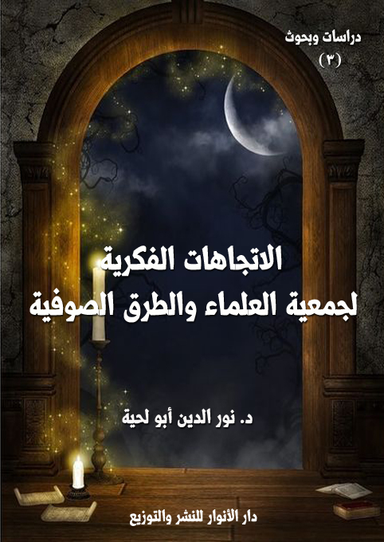

الكتاب: الاتجاهات الفكرية لجمعية العلماء والطرق الصوفية وأثرها في التعامل بينهما
المؤلف: أ.د. نور الدين أبو لحية
الناشر: دار الأنوار للنشر والتوزيع
الطبعة: الثانية، 1437 هـ
عدد الصفحات: 379
ISBN: 978-3-330-97126-4
لمطالعة الكتاب من تطبيق مؤلفاتي المجاني وهو أحسن وأيسر: هنا

التعريف بالكتاب
يحاول هذا الكتاب التعرف على المنابع الفكرية التي يستقي منها كل من جمعية العلماء المسلمين الجزائريين والطرق الصوفية، لاعتقادنا بأن تلك المنابع هي التفسير الصحيح، بل والوحيد لكل ما حصل من توافق أو خلاف..
الاتجاهات الفكرية لجمعية العلماء والطرق الصوفية (10)
لا يخفى أن للاتجاهات الفكرية تأثيرها الكبير في المواقف والمعاملات وجميع التصرفات، فالفكر هو مقدمة السلوك ومنبعه وأصله الذي منه يستمد، ومن المجانبة للصواب أن نحلل أي قضية دون الرجوع إلى منابعها الفكرية التي منها انطلقت، وخاصة إذا مست القضية تاريخ أمة وثقافتها ودينها.
وانطلاقا من هذا التصور البديهي والمنهجي، نحاول في هذا الجزء أن نتعرف على المنابع الفكرية التي يستقي منها كل من جمعية العلماء المسلمين الجزائريين والطرق الصوفية، لاعتقادنا بأن تلك المنابع هي التفسير الصحيح، بل والوحيد لكل ما حصل من توافق أو خلاف.
وعلى الرغم من بديهية هذا الطرح ومنهجيته إلا أنا - للأسف - لم نر تطبيقيا حقيقيا له في الواقع البحثي والأكاديمي فيما يرتبط بالتعامل بين الجمعية والطرق الصوفية، فقد دأب أكثر من اطلعنا على دراساتهم على الاقتصار على الرجوع لرجال الجمعية في مواقفها من الآخر، واعتبار ما ذكرته هو الحقيقة المطلقة من جميع جوانبها، من غير النظر فيما كتبه الآخر أو دافع به عن نفسه، أو التعرف على الأصول التي جعلته يعتقد ذلك الاعتقاد.
وقد أدى هذا المنهج إلى تحول أكثر الباحثين إلى مجرد أبواق تردد ما ذكره الإبراهيمي أو ابن باديس أو الميلي أو غيرهم من غير أن يكلف هؤلاء أنفسهم التحقيق في مدى صحة ما قالوا، أو الرجوع للذي شنت تلك الحرب للتحقق من مدى صحة الجرائم التي اتهم بها.
بناء على هذا التنبيه أو النقد الذي رأينا ضرورة طرحه نحاول في هذا الباب أن نتجنب هذا الخطأ العلمي والمنهجي والأخلاقي، وذلك بالرجوع إلى كل طرف من طرفي التعامل للتعرف على المدرسة الفكرية التي ينتمي إليها، وعلى المشروع الإصلاحي الذي يحمله من غير أن نسيء به الظن، أو نقوله ما لم يقل، أو نتجنى عليه بأي جناية تصطدم مع العلم والدين والأخلاق.
الاتجاهات الفكرية لجمعية العلماء والطرق الصوفية (11)
ولا نكتفي بذلك، بل نحاول أن نرجع إلى مصادر الفكر ومنابعه التي منها يستمد، ذلك أن النظرة الموضوعية التي هدانا إليها ما وقع في جميع التاريخ الديني والثقافي للعالم الإسلامي هو أن جمعية العلماء في حقيقتها ليست سوى امتداد لمدرسة أو مدارس فكرية وسلوكية موجودة منذ فجر التاريخ الإسلامي.
والطرق الصوفية لا تختلف عنها في ذلك، فلها هي الأخرى امتدادها التاريخي والجغرافي في جميع العالم الإسلامي.
وكما أن للمدرسة الأولى علماؤها ورجالها الذين ينافحون عنها، فكذلك للمدرسة الثانية علماؤها ورجالها وأطروحاتها.
ولهذا فإن من المخالفة للمنهج العلمي أن ندرس كلا التيارين مبتورا عن الجذور التي أنبتته بالشكل الذي هو عليه.
انطلاقا من هذا قسمنا هذا الجزء إلى ثلاثة فصول:
حاولنا في الفصل الأول أن نتعرف على المدرسة الفكرية التي تنتمي إليها جمعية العلماء المسلمين الجزائريين، والمشروع الإصلاحي الذي تريد تنفيده في الواقع الجزائري.
وفي الفصل الثاني تناولنا المدرسة الفكرية التي تنتمي إليها الطرق الصوفية، والمشروع الإصلاحي الذي تريد تنفيذه في الواقع الجزائري.
وفي الفصل الثالث: تناولنا أثر الاتجاهات الفكرية والإصلاحية لجمعية العلماء والطرق الصوفية في التعامل بينهما.
الاتجاهات الفكرية لجمعية العلماء والطرق الصوفية (12)
الاتجاه الفكري لجمعية العلماء ومشروعها الإصلاحي
من الصعوبات التي واجهتنا في هذا البحث التحديد الدقيق للتوجه الفكري الذي يجتمع عليه أعضاء الجمعية، وسبب ذلك واضح بسيط، وهو أن الجمعية في أصلها، وكما عرفنا في الجزء السابق، تكونت من الطبقة الجزائرية المثقفة، وكانت هذه الطبقة قد تشكلت قناعاتها الفكرية قبل دخولها الجمعية، وبالتالي دخلت إلى الجمعية بذلك التوجه الفكري الذي تحمله، ولهذا ضمت بين جنباتها وخاصة في بداية تأسيسها الصوفي والإباضي والمالكي والسلفي وغيرهم من التيارات.
وحتى بعد حصول الانشقاق انتسب إليها، بل وعمل في إطار نشاطاتها بعض الطرق الصوفية، وقد ضربنا أمثلة على ذلك في الجزء السابق.
وهذا ما دعانا إلى التمييز في تحديد الاتجاه بين أمرين:
الأول: هو القناعات الفكرية لأعضاء الجمعية، والتي هي نتاج الثقافة الخاصة بكل عضو، والتي على أساسها يبرز الاعتدال أو التشدد أو التسامح مع الآخر.
الثاني: هو المشروع النهضوي الذي أتت به الجمعية أو توحدت عليه.
وهذا ما يجعل من جمعية العلماء المسلمين نسقا خاصا يختلف عن كثير من الحركات الإسلامية، بل حتى مع الطرق الصوفية.
فالحركة الوهابية – مثلا - والتي كان لها وجود فاعل في وقت الجمعية كانت صاحبة توجه فكري واحد، وصاحبة مشروع نهضوي واحد.
والطرق الصوفية كذلك، مهما اختلفت مشاربها أو تسمياتها لا تختلف فيما بينها إلا في الطقوس الظاهرية الممارسة، أما التوجه الفكري، فيجمع بينها جميعا حتى أننا لا نستطيع أن
الاتجاهات الفكرية لجمعية العلماء والطرق الصوفية (13)
نميز تعابير الشيخ ابن عليوة - المعاصر للجمعية، والذي كان المعارض الأكبر لها – مع أي صوفي في أي طريقة داخل الجزائر أو خارجها.
وهذا ما جعلنا بدل أن نغرق في التعميم نبحث عن التصنيف المناسب لأعضاء الجمعية من الناحية الفكرية، ثم عن التصنيف المناسب الذي يجمعها في مشروعها النهضوي، ولهذا قسمنا هذا الفصل إلى مبحثين:
المبحث الأول: الاتجاه الفكري لجمعية العلماء
المبحث الثاني: المشروع الإصلاحي لجمعية العلماء
ونحب أن ننبه أننا في كلا المبحثين نراعي مواقف أعلام الجمعية الكبار ممن يمكن اعتبارهم ناطقين رسميين باسم الجمعية كابن باديس والإبراهيمي والميلي والعقبي والعربي التبسي وغيرهم من الذين تولوا مناصب حساسة في الجمعية، أما من عداهم، فنستأنس بذكره دون أن نحمل الجمعية تبعاته، سواء في ذلك التوجهات الفكرية أو المشاريع الإصلاحية.
فلا نستطيع مثلا أن نعتبر الجمعية معتزلية الاعتقاد باعتبار أن بعض أفرادها إباضية، وهم يتبنون الكثير من الآراء المعتزلية، ولا نستطيع كذلك عند الحديث عن مشروعها السياسي أن نعتبرها متخاذلة في مواقفها من الاستعمار أو الثورة لأن بعض أفرادها كان كذلك (1).
وقد دعانا إلى هذا التنبيه ما نراه في بعض الدراسات المناوئة خصوصا من اختيار بعض النماذج في التوجهات الفكرية أو الإصلاحية لتبنى على أساسها المواقف.
__________
(1) انظر في الرد على القول بأن الجمعية خذلت الثورة ولم تشارك فيها وكانت في صف المندمجين، رد الشيخ عبد الرحمن شيبان، (حقائق وأباطيل) ط 2، مطبعة ثالة، الجزائر، 2009.
الاتجاهات الفكرية لجمعية العلماء والطرق الصوفية (14)
المبحث الأول الاتجاه الفكري لجمعية العلماء
يتفق معظم الدارسين لجمعية العلماء المسلمين الجزائريين على تصنيفها ضمن (الحركات السلفية) التي كانت في ذلك الحين في أوج نشاطها.
وهذا التصنيف ليس قاصرا على الدراسات الحديثة، بل كل من تحدث عن الجمعية في ذلك الوقت كان يعتبر توجهها توجها سلفيا محضا لا يختلف عن التوجهات السلفية في ذلك الحين:
فهذا الشيخ محب الدين الخطيب يقول في جريدة (الفتح) التي كان يشرف عليها: (جاءتنا من المغرب الأوسط (الجزائر) رسالة نافعة –إن شاء الله- ألّفها العلامة السلفي الأستاذ الشيخ عبد الحميد بن باديس من كبار العلماء المصلحين في الديار المغربية) (1)
وكتب الشيخ محمّد القرّي من فاس قصيدة إثر الاعتداء على عبد الحميد بن باديس وأرسلها إلى (الشهاب)، وقال في مقدّمة الرسالة الملحقة بالقصيدة: (جناب مدير مجلّة الشهاب المحترم. تحيّة وسلاما. الرجاء منكم أن تنشروا على صفحات –الشهاب- الأغّر القصيدة التالية بمناسبة نجاة العلامة السلفي المصلح السيّد عبد الحميد بن باديس من ضربة الشقي الأثيم ولكم مزيد الشكر) (2)
وقد وردت تصريحات كثيرة من علماء الجمعية – سنسرد بعضها في هذا المبحث – تعلن تبنيها لهذا المنهج، ولذلك سننطلق من هذا الإعلان والتصريح، ولكنا لا نكتفي به، فالسلفية مدارس متعددة، وآراء متضاربة وأحيانا متناقضة، وهو ما يحوجنا إلى التعرف على نوع المدرسة التي تنتمي إليها الجمعية.
وبناء على هذا، فقد قسمنا هذا المبحث إلى ثلاثة مطالب:
المطلب الأول: التوجه السلفي وعلاقة جمعية العلماء به
__________
(1) نشر في مجلّة الشهاب في العدد 87 بتاريخ 6 رمضان 1345 هـ.
(2) (الشهاب) عدد 82 الصادر يوم الخميس 30 رجب 1345 هـ، 3 أبريل 1927 م.
الاتجاهات الفكرية لجمعية العلماء والطرق الصوفية (15)
المطلب الثاني: السلفية المحافظة، وعلاقة جمعية العلماء بها
المطلب الثالث: السلفية التنويرية، وعلاقة جمعية العلماء بها
المطلب الأول التوجه السلفي وعلاقة جمعية العلماء به
لغة: يطلق السلف ويراد به لغة أحد ثلاثة معان (1):
الأول: التسوية، ومنه سلف- بفتح السين واللام- الأرض، من باب نصر، سواها بالمسِلفة –بكسر الميم- شيء تسوى به الأرض.
الثاني: بمعنى مضى وتقدم، من سلف يسلُف، ومنه السلاف المتقدمون، وسلف الرجل: آباؤه المتقدمون، وجمعه أسلاف وسلاف، قال ابن منظور: (السلف الجماعة المتقدمون في السير أو في السن أو في الفضل أو في الموت، والسلف أيضا العمل المتقدم في الإنسان) (2)
الثالث: بمعنى السَّلم، نوع من أنواع البيوع يعجل فيه الثمن وتضبط السلعة بالوصف إلى اجل معلوم، فالثمن مقدم على تسليم السلعة.
وقد وردت كلمة سلف في القرآن الكريم مرادا بها معنى واحدا وهو السبق والتقدم في الزمن ومنه قوله تعالى: {قُلْ لِلَّذِينَ كَفَرُوا إِنْ يَنْتَهُوا يُغْفَرْ لَهُمْ مَا قَدْ سَلَفَ وَإِنْ يَعُودُوا فَقَدْ مَضَتْ سُنَّةُ الْأَوَّلِينَ} [الأنفال الآية 38]،،أي يغفر لهم ما تقدم ومضى من الذنب.
اصطلاحا:
نجد أحيانا من بعض الكتاب والباحثين خلطا بين مصطلح (السلف)، ومصطلح (السلفية)، أو (التمذهب بمذهب السلف)، وهذا يستدعي منا البحث عن المراد من كليهما،
__________
(1) ينظر مختار الصحاح، محمد بن أبي بكر بن عبد القادرالرازي باب السين ص 264، ومفردات القرآن الكريم للراغب الأصفهاني باب السين ص 339.
(2) ابن منظور، لسان العرب، دار صادر، بيروت، 9/ 158
الاتجاهات الفكرية لجمعية العلماء والطرق الصوفية (16)
وبذلك يتضح لنا سر اختلاف المدارس السلفية، ذلك لأن لكل منها سلفه الخاص، أو فهمه الخاص للمراد بالسلف، ذلك أن كل تيار يزعم أن له سلفه الخاص الممتد إلى العصور الأولى للإسلام (1).
1 ـ لفظ (السلف): يطلق لفظ السلف عادة على القرون الثلاثة المفضلة بنص قوله صلى الله عليه وآله وسلم: (إن خيركم قرني ثم الذين يلونهم ثم الذين يلونهم ثم الذين يلونهم) (2)، ذلك أنه ورد في الحديث اعتبار هذه القرون قرونا نموذجية في تمثيلها للإسلام وفهمها له، فقد ورد في تتمه الحديث: (ثم يكون بعدهم قوم يشهدون ولا يستشهدون ويخونون ولا يؤتمنون وينذرون ولا يوفون ويظهر فيهم السمن) (3)
وقد اختلف العلماء في تحديد (السلف) المرادين - بناء على هذا اختلافا شديدا - سواء من حيث تعيين المدة الزمنية بدقة، أو من حيث السلف المرادون في الحديث، والعادة الجارية عند المحدثين أن المراد بهم هم أهل الحديث، وخاصة من كان منهم في زمن الرواية، وعند الصوفية يشمل الطائفة الأولى من الصوفية، والذين أرخ لهم القشيري في رسالته، وهكذا نجد لكل طائفة سلفها الخاص بها، وشروطها الخاصة بهم.
2 ـ لفظ (السلفية): كما اختلف في المراد من لفظ (السلف) وقع الخلاف في المراد من لفظ (السلفية)، وربما يمكن حصر الخلاف في مذهبين على أساسهما صنفت بعد ذلك التيارات الكثيرة:
المذهب الأول: وهو أن (السلفية) ليست مذهبًا إسلاميًا محددًا، بل هي - كما يعبر د. محمد
__________
(1) لدرجة أن في الشيعة فرقة يقال لها (السلفية)، يطلق عليها كذلك (الإخبارية)، وهم كأهل الحديث بالنسبة للسنة (انظر: السيد علي حسين الجابري، الفكر السلفي عند الشيعة الاثني عشرية، رسالة لنيل الماجستير من كلية الآداب في جامعة بغداد، وطبع الكتاب في بيروت، منشورات عويدات، الطبعة الأُولى، (1977 م)
(2) محمد بن إسماعيل أبو عبدالله البخاري، الجامع الصحيح المختصر، دار ابن كثير، اليمامة – بيروت، ط 3، 1407، ج 3، 3/ 324.
(3) صحيح البخاري، 3/ 224.
الاتجاهات الفكرية لجمعية العلماء والطرق الصوفية (17)
سعيد رمضان البوطي - مرحلة زمنية مباركة، محصورة بالقرون الثلاثة الأولى من عمر هذه الأمة (1)، وبذلك يصبح المراد بالسلف هو نفسه المراد بالسلفية.
وبالتالي لا يمكن اعتبار السلف الصالح بهذا الاعتبار مصدرا للتشريع أو لفهم الدين، وإنما يمكن فقط اعتبارهم في الخيرية التي تعني الالتزام والتطبيق الفعلي للإسلام.
وعلى هذا التفسير نجد أكثر المذاهب الفقهية والعقدية والصوفية.. فكلهم يجل السلف ويحترمهم، ولكنه في نفس الوقت لا يلتزم بفهومهم أو اجتهاداتهم، بل نجد فقيها كبيرا كأبي حنيفة يقول: (ما جاءَ عن اللهِ تعالى فعلى الرأسِ والعينين، وما جاءَ عن رسولِ الله صلى الله عليه وآله وسلم فسمعاً وطاعةً، وما جاءَ عن الصحابةِ رضي الله عنهم تخيرنا من أقوالهم، ولم نخرجْ عنهم، وما جاءَ عن التابعين فهُمْ رجالٌ ونحنُ رجالٌ) (2)
المذهب الثاني: ويرى أن السلف مصدر للفهم والتشريع، وأنه لا يمكن فقط التمذهب بمذهبهم، وإنما يجب التمذهب بمذهبهم.
وقد ظهر هذا النوع من السلفية، والتي يمكن أن نطلق عليها (سلفية الاتجاه) ابتداء من عصر الإمام أحمد بن حنبل (ت 241 هـ)، وتحديدا بعد موقفه من قضية (خلق القرآن)، فقد اعتبر ذلك الموقف تاريخاً فاصلا بين (الابتداع باسم الدين)، و(التمسك بالأصول العقدية الصحيحة من منابعها من القرآن والسنة وفهم السلف).. وبعده صارت السلفية اتجاهاً فكرياً على ساحة الفكر الإسلامي، ويمثل خطوطاً منهجية تحاول أن تهتدي بهدي من تراه صالحا من سلف (3).
__________
(1) د. محمد سعيد رمضان البوطي: السلفية مرحلة زمنية مباركة لا مذهب إسلامي، دار الفكر، دمشق، ص 9..
(2) شمس الدين أبو بكر محمد بن أبي سهل السرخسي، المبسوط، دراسة وتحقيق: خليل محي الدين الميس، دار الفكر للطباعة والنشر والتوزيع، بيروت، لبنان، الطبعة: الأولى، 1421 هـ 2000 م (11/ 3)
(3) انظر: د. محمد أحمد عبد القادر، ملامح الفكر الإسلامي بين الاعتدال والغلو، دار المعرفة الجانبية، مصر، 2004 م، ص 68 - 70
الاتجاهات الفكرية لجمعية العلماء والطرق الصوفية (18)
وبذلك فإن هذا الاتجاه ليس مذهباً محدد المعالم كالمذاهب الفقهية مثلاً، ولا هو جماعة محددة التقاسيم كـ (الإخوان المسلمين) بل هو -كما يعبر عنها أصحابها – (روح تسري في العالم الإسلامي منذ عهود التابعين واشتهر باسم (السلف)، أو (أهل الأثر)، ويقابله من الجانب الآخر (أهل الرأي)، أو (المتصوفة)، أو (المتكلمون)، أو غيرهم (1).
ولذلك فإن أكثر التعاريف التي يوردها القائلون بهذا هي تعاريف سلبية أكثر منها إيجابية أي أنهم يعمدون إلى النفي أكثر منهم إلى التحديد الدقيق، كما نرى في تعريف عبد الرحمن عبد الخالق الذي هو علم من أعلام السلفية المعاصرين، فهو يعرف السلفية بقوله: (المراد بمذهب السلف ما كان عليه الصحابة الكرام رضوان الله عليهم والتابعون لهم بإحسان إلى يوم الدين، وأتباعهم وأئمة الدين ممن شهد له بالإمامة وعرف عظم شأنه في الدين، وتلقى الناس كلامهم خلفاً عن سلف، كالأئمة الأربعة وسفيان الثوري والليث بن سعد وابن المبارك والنخعي والبخاري ومسلم وسائر أصحاب السنن، دون من رمي بالبدعة أو شهر بلقب غير مرضي مثل: الخوارج والروافض والمرجئة والجبرية والجهمية والمعتزلة. فكل من التزم بعقائد وفقه هؤلاء الأئمة كان منسوبا إليهم وإن باعدت بينه وبينهم الأماكن والأزمان، وكل من خالفهم فليس منهم وإن عاش بين أظهرهم وجمع بهم نفس المكان والزمان) (2)
ويرى هؤلاء على عكس الفريق السابق أن التمذهب بمذهب السلف ليس جائزا فقط، وإنما هو واجب لا يصح العدول عنه، كما جاء في رد علم من أعلام السلفية المعاصرين، وهو الشيخ الفوزان على البوطي في قوله السابق، وهو في كتاب تحت عنوان (نظرات وتعقيبات على ما في كتاب السلفية لمحمد سعيد رمضان من الهفوات)، جاء فيه: (هذا الكلام يثير الدهشة والاستغراب، كيف يكون التمذهب بالسلفية بدعة والبدعة ضلالة؟ وكيف يكون وهو اتباع
__________
(1) انظر: د. موسى زيد الكيلاني، الحركات الإسلامية في الأردن وفلسطين، ص 237.
(2) عبد الرحمن عبد الخالق، لأصول العلمية للدعوة السلفية، الدار السلفية، الكويت الطبعة: الثانية، 1398 هـ، ص 5.
الاتجاهات الفكرية لجمعية العلماء والطرق الصوفية (19)
لمذهب السلف، واتباع مذهبهم واجب بالكتاب والسنة وحق وهدي؟.. فالتمذهب بمذهب السلف سنة وليس بدعة، وإنما البدعة التمذهب بغير مذهبهم) (1)
ونحب أن نشير هنا إلى أنه من الصعوبة فهم (السلفية) على هذا الاعتبار لأن هناك انتقائية كبيرة في تحديد أعيان السلف المرادين، فالكثير من الأعلام الذين وجدوا في العهود الأولى من الإسلام، والذين صنفهم هذا التيار في إطار الخوارج والروافض والمرجئة، والجهميّة، والمعتزلة.. وغيرهم ضالون لا يجوز الأخذ عنهم، بل يجب الرد عليهم.
ولهذا نجدهم بدل تعميم لفظ (السلف)، أو (السلف الصالح) يعمدون إلى ذكر أسامي المرادين مع أنها لم تحدد في الحديث، فيذكرون (الأئمة الأربعة، والسفيانيين، والليث بن سعد، وابن مبارك النخعي، والبخاري، ومسلم وسائر أصحاب السنن) (2)
ولكنهم مع ذلك يقعون في تناقضات أخرى ذلك أنّ من ذكروهم كان فيما بينهم خصومات إلى حد التكفير، فهذا الإمام أحمد بن حنبل كان يرى أن الإمام أبا حنيفة كان من المرجئة (3)، والمرجئ في تصورهم ضال منحرف ومبتدع (4)، وقد كفّرته باقي الفرق (5).. وفوق ذلك نراه يقول بخلق القرآن (6)، وفي تصورهم أن كل من يقول بخلق القرآن فهو جهمي، وكل جهمي كافر.
__________
(1) الشيخ الفوزان، نظرات وتعقيبات على ما في كتاب السلفية لمحمد سعيد رمضان من الهفوات، الرئاسة العامة لإدارات البحوث العلمية والإفتاء والدعوة والإرشاد، مجلة البحوث الإسلامية - مجلة دورية تصدر عن الرئاسة العامة لإدارات البحوث العلمية والإفتاء والدعوة والإرشاد – العدد 26، ص 211.
(2) د. محمود عبد الحليم: السلفية ودعوة الشيخ محمد بن عبد الوهاب، ص 11.
(3) أبو الحسن الأشعري: مقالات الإسلاميين، المكتبة العصرية، بيروت، 1/ 202.
(4) ابن حجر: لسان الميزان، مكتب المطبوعات الاسلامية، 2/ 142.
(5) البغدادي: الفرق بين الفرق، دار الآفاق الجديدة، بيروت، ط 5، 1982 م، ص 128.
(6) الأشعري: مقالات الإسلاميين 1/ 312.
الاتجاهات الفكرية لجمعية العلماء والطرق الصوفية (20)
ثانيا ــ موقف جمعية العلماء المسلمين من التوجه السلفي
وردت التصريحات الكثيرة من أعضاء الجمعية تنص على توجهها السلفي، بل وتفتخر بهذا التوجه، وتدعو إليه، وتعتبر الدعوة إليه من صميم أهداف الجمعية الذي أسست لأجله.
وسنكتفي هنا بعرض بعض هذه التصريحات من أعضاء الجمعية، وخصوصا الكبار منهم لنبرهن بذلك على توجهها السلفي.
أما فهم الجمعية للمراد من (السلفية)، والمبادئ المرتبطة بذلك، فسنتحدث عنها عند الحديث عن أنوع المدارس السلفية التي ارتبطت بها.
صرح عبد الحميد بن باديس في مواضع كثيرة من خطبه ومقالاته ورسائله على توجهه وتوجه جمعيته السلفي، فهو يقول في رسالته: (العقائد الإسلامية من الآيات القرآنية والأحاديث النبوية): (القرآن هو كتاب الإسلام، السنّة القولية والفعلية - الصحيحة- تفسير وبيان للقرآن، سلوك السلف الصالح –الصحابة والتابعين وأتباع التابعين- تطبيق صحيح لهدي الإسلام فهوم أئمة السلف الصالح أصدق الفهوم لحقائق الإسلام ونصوص الكتاب والسنّة) (1)
ويقول في كلمته التي ألقاها في حفل ختم تفسير القرآن الكريم بالجامع الأخضر بقسنطينة: (فإنّنا والحمد لله نربي تلامذتنا على القرآن من أوّل يوم، ونوّجه نفوسهم إلى القرآن في كلّ يوم، وغايتنا التي ستتحقق أن يُكوّن القرآن منهم رجالا كرجال سلفهم) (2)
وشهد له بهذا التوجه السلفي رفيق دربه الشيخ البشير الإبراهيمي في كلمته التي ألقاها في حفل ختمه تفسير القرآن الكريم، فقال: (هذا هو اليوم الذي يختم فيه إمام سلفي تفسير كتاب
__________
(1) ابن باديس، العقائد الإسلامية من الآيات القرآنية والأحاديث النبوية، دار البعث، ط 1، سنة 1406 هـ، ص 17.
(2) آثار ابن باديس (1/ 80)
الاتجاهات الفكرية لجمعية العلماء والطرق الصوفية (21)
الله تفسيرا سلفيا ليرجع المسلمون إلى فهمه فهما سلفيا...) (1)
وقال في مقال له حول الحفل نفسه: (وأراد الله فحقق للأستاذ أمنيته من ختم التفسير، وللأمّة رجاءها في تسجيل هذه المفخرة للجزائر، ولأنصار السلفية غرضهم من تثبيت أركانهم بمدارسة كتاب الله كاملا...) (2)
وقال في موضع آخر: (أتمّ الله نعمته على القطر الجزائري بختم الأستاذ عبد الحميد بن باديس لتفسير الكتاب الكريم درساً على الطريقة السلفية... ولا معنى لذلك كلّه إلا أنّ إحياء القرآن على الطريقة السلفية إحياء للأمّة التي تدين لله به) (3)
وقال مثنيا عليه بعد وفاته بهذا التوجه: (باني النهضتين العلمية والفكرية بالجزائر؛ وواضع أسسها على صخرة الحق، وقائد زحوفها المغيرة إلى الغايات العليا، وامام الحركة السلفية؛ ومنشئ مجلة (الشهاب) مرآة الإصلاح وسيف المصلحين، ومربّي جيلين كاملين على الهداية القرآنية والهدْي المحمدي وعلى التفكير الصحيح، ومُحيي دوارس العلم بدروسه الحية، ومفسّر كلام الله على الطريقة السلفية في مجالس انتظمت ربع قرن، وغارس بذور الوطنية الصحيحة، وملقّن مباديها، علم البيان، وفارس المنابر، الأستاذ الرئيس الشيخ عبد الحميد بن باديس، أول رئيس لجمعية العلماء المسلمين الجزائريين، وأوّل مؤسّس لنوادي العلم والأدب وجمعيات التربية والتعليم، رحمه الله ورضي عنه) (4)
وقد صرح في مواضع كثيرة عن توجهه السلفي وفخره به، ومن تصريحاته الدالة على
__________
(1) ابن باديس، مجالس التذكير من كلام الحكيم الخبير، من منشورات وزارة الشؤون الدينية، ص 467.
(2) مجالس التذكير من كلام الحكيم الخبير، ص 453.
(3) مجالس التذكير من كلام الحكيم الخبير، ص 15.
(4) آثار الإمام محمد البشير الإبراهيمي (3/ 552)
الاتجاهات الفكرية لجمعية العلماء والطرق الصوفية (22)
تعظيمه لهذا الاتجاه قوله في رده على الشيخ عبد الحي الكتاني: (لقد كان من مقتضى كون الرجل محدِّثًا أن يكون سلفيّ العقيدة وقّافًا عند حدود الكتاب والسنَّة، يرى ما سواهما من وسواس الشياطين، وأن يكون مستقلًّا في الاستدلال لما يؤخذ ولما يترك من مسائل الدين، وقد تعالت همم المحدّثين عن تقليد الأئمة المجتهدين، فكيف بالمبتدعة الدجّالين؛ وعرفوا بالوقوف عند الآثار والعمل بها، لا يعْدونها إلى قول غير المعصوم إلا في الاجتهاديات المحضة التي لا نصّ فيها؛ ولكن المعروف عن هذا المحدّث أنه قضى عمره في نصر الطرقية وضلالات الطرقيين ومحدَثاتهم بالقول والفعل والسكوت، وأنه خصم لدود للسلفيين، وحرب عوان على السلفية، وهل يرجى ممن نشأ في أحضان الطرقية، وفتح عينيه على ما فيها من مال وجاه وشهوات ميسّرة ومخايل من المُلك، أن يكون سلفيًّا ولو سلسل الدنيا كلها بمسلسلاته؟) (1)
ثم وضح شروط التحقق بـ (السلفية)، فقال: (إن السلفية نشأة وارتياض ودراسة، فالنشأة أن ينشأ في بيئة أو بيت كل ما فيها يجري على السنّة عملًا لا قولًا؛ والدراسة أن يدرس من القرآن والحديث الأصول الاعتقادية، ومن السيرة النبوية الجوانب الأخلاقية والنفسية، ثم يروّض نفسه بعد ذلك على الهدي المعتصر من تلك السيرة وممن جرى على صراطها من السلف) (2)
وصرح بهذا وفي رسالة وجهها إلى الملك سعود يقول فيها: (حضرة صاحب الجلالة الملك سعود ملك المملكة العربية السعودية- الرياض.. يا صاحب الجلالة: ما زلنا نعتقد أن جلالتكم أعلم الناس بالحركتين الإصلاحية السلفية، والثقافية العلمية العربية بالجزائر، وأعلم الناس بآثارهما الطيبة في الأمّة الجزائرية، وإنكم أكبر أنصارهما والمقدّرين لثمراتهما والعاملين
__________
(1) آثار الإمام محمد البشير الإبراهيمي (3/ 544)
(2) آثار الإمام محمد البشير الإبراهيمي (3/ 544)
الاتجاهات الفكرية لجمعية العلماء والطرق الصوفية (23)
على تغذيتهما والمرجوّين لاحتضانهما..) (1)
وفي رسالة وجهها إلى الشيخ محمد بن إبراهيم آل الشيخ جاء فيها (.. أُذَكِّركم أن لكم بالجانب الغربي من وطن العروبة ومنابت الإسلام الأولى ومجرى سوابق المجاهدين الأولين لَإِخوانًا في العروبة وهي رحم قوية، وفي الإسلام وهو سبب مرعي، وفي ذلك المعنى الخاص من الإسلام وهو السلفية التي جاهدتم وجاهد أسلافكم الأبرار في سبيل تثبيتها في أرض الله، وقد لقوا من عنت الاستعمار وجبروته ما أهمّهم وأهمّ كل مسلم حقيقي يعلم أن الإسلام رحم شابكة بين بنيه أينما كانوا، وأن أقل واجباته النجدة في حينها والتناصر لوقته) (2)
وقد صرح بانتمائه لهذا التوجه، وشهد له به، فمن تصريحاته قوله في مقاله الذي نشر في جريدة الشهاب: (... وساءني كثيرا إذ فشلت في سعي في الصلح والهدنة والاتفاق على قواعد نجري عليها نحن معشر السلفيين) ثمّ أمضى هذا المقال: (الزواوي السلفي إمام مسجد سيدي رمضان) (3)
وقال: (ثمّ بقي أن أقول: أنّه لا ينبغي بحال ونحن سلفيون إسلاميون شرعيون مقيدون بالقوانين الإلهية والدولية أن تكون أعمالنا من قبيل الرجم بالغيب أو التشفّي والإنتقام ممن عسى أن يكونوا برءاء)
وقال في رسالته إلى الكاتب السلاوي الفاسي: (لأننا سلفيون دعاة الإصلاح العام في الدّين وما ألصق به وفي الجنس وما هو فيه... ونخصّ – نحن السلفيّون- بشيء أدقّ مما يكون، وما هو هذا الشيء؟ وهو التدقيق والتحقيق في الأقوال والأفعال، والحذر من الخطأ والخطل في
__________
(1) آثار الإمام محمد البشير الإبراهيمي (5/ 51)
(2) آثار الإمام محمد البشير الإبراهيمي (5/ 221)
(3) أحمد حماني، صراع بين السنّة والبدعة 1/ 135 - 138.
الاتجاهات الفكرية لجمعية العلماء والطرق الصوفية (24)
القول والعمل) (1)
وقال - مشيدا بطريقة السلف في العقيدة والتوحيد -: (إن خير طريقة في العقيدة التوحيدية طريقة السلف التي هي اتباع ما ثبت عن الله وعن رسوله من غير كثرة التأويل والدخول في الأخذ والرد من الجدل في المتشابه وإيراد الشبه والرد عليها) (2)
وقال متبرئا من غير المنهج السلفي: (أما أنا ومن على شاكلتي من إخواني الكثيرين فلا شريعة لنا ولا دين ولا ديوان إلا الكتاب والسنة وما عليه محمد وأصحابه وعقيدة السلف الصالح أي فلا اعتزال ولا ماتريدي ولا أشعري وذلك أن الأشاعرة تفرقوا واختلفوا أي المتقدمون منهم والمتأخرون، ووقعوا في ارتباك من التأويل والحيرة في مسائل يطول شرحها لم تصف بعد فعلام؟ وقل آمنت بالله وملائكته وكتبه ورسله واليوم الآخر، كما قال تعالى: {قُلِ اللَّهُ ثُمَّ ذَرْهُمْ فِي خَوْضِهِمْ يَلْعَبُونَ} (النساء: 91) (3)
وعند ذكره لأسباب تفرق المسلمين ذكر البعد عن المنهج السلفي، فقال: (إن كثرة التفريق والاختلاف في التعاليم الدينية مزق الأمة كل ممزق، وهذا مما أدركه كل مسلم جاهلا كان أو عالما، فلزم إذن عدم التفريق وذلك إنما يكون بتوحيد التعاليم قدما وحديثا وهذا أمر صعب ولكن على غير العاملين بحديث النجاة وهو قوله صلى الله عليه وآله وسلم: (إلا واحدة وهي ما أنا عليه وأصحابي) (4) فعلام نغفل هذا أو نتعامى ونعمل بمائة مذهب وبألف ملة وطريقة) (5)
وقد سبق ذكر بعض الشهادات من الشيخ مبارك الميلي والطيب العقبي تشيد بتوجهه
__________
(1) أحمد حماني، صراع بين السنّة والبدعة 2/ 67.
(2) أبو يعلى الزواوي، الاسلام الصحيح، مطبعة المنار، مصر، سنة 1345 هـ، (ص:14)
(3) أبو يعلى الزواوي، الإسلام الصحيح، ص 94.
(4) الترمذي، السنن، تحقيق: بشار عواد معروف، دار الغرب الإسلامي – بيروت، 1998 م، 4/ 323.
(5) أبو يعلى الزواوي، الإسلام الصحيح، ص 117.
الاتجاهات الفكرية لجمعية العلماء والطرق الصوفية (25)
السلفي.
وقد صرح بتوجهه السلفي في مواضع كثيرة من مقالاته ورسائله وغيرها، ومن ذلك قوله في رسالته (بدعة الطرائق في الإسلام): (وبعون الله سأجعل كلّ حجّة من حجج الطرائق التي اشتهرت بها، وذاعت بيننا منفردة ببحث وأقيسها بعصر السلف. فإن وُجد لها أصلٌ بينهم (أي السلف الصالح) قبلناها وعملنا بها، وعززناها. وما لم نجد له أصلا في أيامهم، وعرف بينهم اعتقدنا أنّه بدعة محدثة) (1)
وقال: (ونحن نعرض عملهم هذا ونقيسه بالهدي النبوي وعمل السلف، فذلك الدّين، وما لم يعرف في تلك الأيّام بعموم أو خصوص فليس من الدّين، فإنكاره قربة، والاعتراف به بدعة) (2)
وقال في موضع آخر: (إن هذا الإرشاد الذي يجب القيام به تبليغا للدين نيابة عنه صلى الله عليه وسلم، يجب أن يكون مستمدا من أصول التشريع الإسلامي، التي هي الكتاب الحكيم، والسيرة النبوية، والسنة المطهرة، وهدي السلف الصالح، وفهوم أئمة الإسلام، الذين يحكمون أصول الدين في أقوالهم وآرائهم ويقولون كلهم راد ومردود عليه إلا صاحب هذا القبر، إشارة لقبره صلى الله عليه وسلم، ويقولون الدين حاكم في أقوال الرجال، وأقوالهم محكومة خاضعة لأدلة الدين. فعلى هذه الأصول التي هي مصدر التشريع الإسلامي ينبني الإرشاد الديني) (3)
وقد صرح بهذا التوجه وانتصر له في مواضع كثيرة، ومن ذلك قوله في مقال له بعنوان
__________
(1) العربي التبسي، بدعة الطرائق في الإسلام، دط، دت، ص 9.
(2) العربي التبسي، بدعة الطرائق في الإسلام، ص 10.
(3) نقلا عن: منارات من شهاب البصائر (آثار الشيخ العربي بن بلقاسم التبسي) للدكتور أحمد عيساوي، ص 109.
الاتجاهات الفكرية لجمعية العلماء والطرق الصوفية (26)
(المصلحون والمرجفون): (من أين فهمتم إنكارنا الولاية الثابتة بالكتاب الذي دعوناكم ولا نزال ندعوكم إلى طرح ما يخالفه؟ وفي أيّ جملة رأيتم عدم الاعتراف بالكرامة، وهي عقيدة السلف ونحن سلفيّون نرجو أن نلقى الله كذلك) (1)
وقال في (رسالة الشرك ومظاهره): (فنحن بالعقيدة السّلفية قائلون، ولما مات عليه الأشعري موافقون) (2)
وسلفيته أشهر من أن يستدل لها، فقد قال عنه الشيخ أحمد حماني: (كان الشيخ العقبي في دروسه وخطبه ومقالاته ينهج نهج السلفيين في إحياء السنّة وإماتة البدعة والهجوم بشدّة على البدع والضلالات والأوهام والخرافات) (3)
وقال هو عن نفسه في في قصيدته (إلى الدّين الخالص) (4):
أيها السائل عن معتقدي... يبتغي مني ما يحوي الفؤاد...
إنني لست ببدعي ولا... خارجي دأبه طول العناد
إلى أن يقول:
مذهبي شرع النبي المصطفى... واعتقادي سلفيٌ ذو سداد...
خطتي علم وفكر نظر... في شؤون الكون بحث واجتهاد...
وطريق الحق عندي واحد... مشربي مشرب قرب لا ابتعاد
__________
(1) جريدة المنتقد، العدد 14.
(2) رسالة الشرك ومظاهره، ص 26.
(3) صراع بين السنّة والبدعة 2/ 174.
(4) الطيب العقبي، قصيدة إلى الدين الخالص، د. ط. د. ت، ص 2.
الاتجاهات الفكرية لجمعية العلماء والطرق الصوفية (27)
ثالثا ــ المدارس السلفية وموقف جمعية العلماء منهأ
إن هذه التصريحات التي نقلناها - مع أهميتها - لا يمكن من خلالها وحدها أن نتعرف على التوجه الفكري لجمعية العلماء المسلمين، وذلك لسببين:
الأول: أن اسم السلفية تتنازعه تيارات مختلفة، بل أحيانا متناقضة، حتى أن البعض يعتبر سلامة موسى سلفيا (1)، على الرغم من توجهه التغريبي، وذلك لادعائه أن اللغة العربية عاجزة عن استيعاب الثقافة المعاصرة، وكأنها لا تستطيع أن تعبر إلا عن الواقع السلفي الذي ازدهرت فيه.
بالإضافة إلى هذا، فقد ظهرت على الساحة الإسلامية الكثير من المناهج، والتي تعتبر نفسها جميعا مناهج سلفية على الرغم من التناقضات الكثيرة بينها.
الثاني: وهو نتيجة لما قبله، وهو أن هناك خلافا شديدا بين الكتاب المعاصرين حول مدى سلفية الجمعية أو أعضائها، فبينما نجد بعضها يحاول أن يثبت (سلفية ابن باديس) مثلا، مثل ما كتبه الحاج عيسى (2)، أو أبو عبد المعزّ محمد علي فركوس، نجد في المقابل من يكتب الكتب والمقالات المطولة التي لا تمنحه هذه النسبة، ونفس الشيء يقال عن سائر أعضاء جمعية العلماء إلا من ندر منهم.
وبناء على هذا نحاول في هذا المطلب أن نتعرف - أولا- على أنواع المدارس السلفية، ثم عن موقف جمعية العلماء المسلمين منها، لنحدد من خلال ذلك الاتجاه الدقيق لجمعية العلماء.
__________
(1) انظر: حموده سعيدي، الخطاب الإيبستيمولوجي في الفكر الفلسفي العربي المعاصر: حدوده وآفاقه، أطروحة لنيل دكتوراه الدولة في الفلسفة، تخصص: إيبستيمولوجيا، إشراف: د. عبد اللّه شريط، السنة الجامعية: 2002 - 2003، ص 51..
(2) كتب الحاج عيسى كتاب (الرد النفيس على الطاعن في العلامة ابن باديس) ناقش فيه ما ورد في كتاب (الرد الوافي على من زعم أن ابن باديس سلفي) للمدعوة ام ايوب، حيث أخرجت الشيخ ابن باديس من السلفية بأدلة رد عليها الشيخ محمد حاج عيسى.
الاتجاهات الفكرية لجمعية العلماء والطرق الصوفية (28)
بناء على ما ذكرنا سابقا من التنازع في التعامل مع مصطلح (السلفية)، فقد ظهرت مدارس كثيرة تحمل هذا الاسم، وقد كان ولا زال الخلاف بينها شديدا إلى درجة التناقض.
وقد كتب محمد عمارة في هذا كتابا بعنوان (السلفية.. واحدة؟.. أم سلفيات؟) تناول فيه قضية التنوع والتناقض بين المدارس السلفية على الساحة السياسية والإعلامية في العالم الإسلامي، بل على مستوى العالم ككل (1).
وقد خلص في نتيجة بحثه إلى أن السلفية (قد توزعتها العديد من التوجهات، فطرأ عليها الكثير من الانشقاقات فمنها ما يسمى بالسلفية العلمية التي تحاول استلهام المشروع التجديدي لابن تيمية.. ومنها السلفية الجهادية التي سلكت طريق العنف والتغيير.. ومن هذه السلفية المعاصرة فصيل بلغ في الغلو والجمود حدوداً فاقت الخيال حتى لقد كتب بعضهم في تفكير أئمة السلفية مثل ابن القيم الذي قالوا عنه: (إنه زائغ مبتدع كذاب وقح بليد غبي جاهل ضال مضل خارجي ملعون كافر)، وقال أحد كتاب هذه السلفية الظلامية عن ابن تيمية: (إنه لا تؤخذ منه أحكام الولاء والبراء ولقد سئمت من تتبع مخازي هذا الرجل المسكين) (2)
وفي موضع آخر عبر عن النتيجة التي يدل عليها الواقع الدعوي والسياسي المعاصر، فقال: (وهكذا نجد أنفسنا تاريخياً وحديثاً أمام عدد من السلفيات، وليس أمام سلفية واحدة كما يحسب كثير من السلفيين ومن خصوم السلفيين) (3)
وكمثال على هذا التنوع، نحب أن نذكر دراسة مهمة عن الحركة السلفية في مصر وتنوعها، وهي دراسة ميدانية صنفت الحركات السلفية المصرية إلى أربع سلفيات: السلفية التقليدية،
__________
(1) صدر الكتاب ضمن سلسلة (في التنوير الإسلامي)، من أربعة مباحث رئيسية، تناول الأول منها تحرير للمفاهيم والمصطلحات المحددة كمحور للدراسة، بينما تناول الثاني تاريخ ظهور المصطلح منذ أيام الدولة العباسية، أما المبحث الثالث فقد تناول تطور السلفية طيلة القرون الماضية، بينما تناول المبحث الرابع السلفية في العصر الحديث.
(2) محمد عمارة، السلفية.. واحدة؟.. أم سلفيات؟ نهضة مصر، القاهرة، 2008، ص 75.
(3) محمد عمارة، السلفية.. واحدة؟.. أم سلفيات؟ ص 77.
الاتجاهات الفكرية لجمعية العلماء والطرق الصوفية (29)
والسلفية العلمية، والسلفية الحركية، السلفية الحديثية (أهل الحديث) (1)
فالسلفية التقليدية: وتهدف – بحسب دعاتها – إلى تنقية الدين مما يرونه من البدع خاصة المرتبطة بالتصوف والأضرحة، وكذلك منع المسلمين من الإفتتان بالحضارة الغربية ومرتكزاتها الفكرية المخالفة للإسلام.. ووسيلة التغيير عندهم تنحصر في الدعوة عبر خطب الجمعة والدروس الدينية في المساجد بالإضافة إلى الدعوة الفردية.
السلفية العلمية: وهي السلفية التي تعتمد مهج الشيخ محمد ناصر الدين الألباني، وتتلخص رؤيتها في أن ما لحق بالمسلمين من تدهور حضاري سببه الأحاديث الضعيفة والموضوعة والإسرائيليات والآراء الفقهية التي تخالف الحديث الصحيح وبالتالي فالتغيير الإسلامي لابد من أن يمر بالمراحل التالية:
أولا- التصفية: وهي أن يقوم علماء المسلمين بتنقية الكتب الشرعية كلها من الأحاديث الضعيفة والموضوعة والإسرائيليات والأراء الفقهية التي تخالف الحديث الصحيح.
ثانيا- التربية: حيث يتم دعوة وتربية أغلبية المسلمين على هذه الكتب الصافية من أي أخطاء.
ثالثا- المفاصلة: حيث يعلن المؤمنون انفصالهم عن الحكام الذين لا يحكمون بما أنزل الله ويعلنون أن هؤلاء الحكام على باطل وينذرون الحكام واعوانهم بالرجوع عن باطلهم وإلا سيواجهون جهادا إسلاميا من أهل الحق ويطالب كل المسلمين بتحديد موقفهم بشكل واضح إما مع أهل الحق وإما مع أهل الحكم وهنا حكمهم هو حكم أهل الباطل.
رابعا- الجهاد: وهو في حالة ما إذا رفض الحكام الإلتزام بالإسلام بعد الإنذار السابق فحينئذ يجاهدهم أهل الحق لأن الصفوف في هذه الحالة ستكون قد تمايزت فصار بعض الشعب
__________
(1) انظر: موقع التغيير على هذا الرابط: http://abomalik 3.blogspot.com/، ولم أجد هذه الدراسة منشورة.
الاتجاهات الفكرية لجمعية العلماء والطرق الصوفية (30)
مع الحق وبعضه مع الباطل وهنا سيكون الفريقان المتصارعان واضحين لا بس فيهما، فلا يقع ضحايا لا علاقة لهم بالصراع بل يكون أى إنسان إما مع هذا الفريق أو ذاك.
السلفية الحركية: وقد نشأت في نفس الوقت الذي نشأت فيه السلفية العلمية (منتصف السبعينات من القرن العشرين الميلادي) بقيادة عدد من الدعاة الشباب حينذاك، ولم يختلف هذا الرافد السلفي عن السلفية العلمية إلا في شيء واحد وهو الاعلان عن كفر الحاكم الذي لا يحكم بالشريعة الاسلامية باسمه أيا كان اسمه.
سلفية أهل الحديث: وقد ظهر هذا الاتجاه – وإن كان في أصله تابع للسلفية العلمية – في أوائل الثمانينات، فانجرف بعض السلفيين نحو دراسة المصطلح وعلم العلل ومعرفة الصحيح من الضعيف ، بالاضافة لإلقاء الخطب والدروس الوعظية والعلمية للعامة وللخاصة، ومن هؤلاء أبو إسحاق الحويني ، ومصطفى العدوي ، وأسامة القوصي ، ومحمد سعيد رسلان وغيرهم.
هذا نموذج عن استعداد المدارس السلفية للخلاف، وقد عقب كاتب الدراسة على كلامه هذا بقوله عند ذكر بعض التيارات السلفية: (هذا الكلام قبل أحداث ثورة 25 يناير ، ولنا كتاب (الدولة السلفية) نبين فيه التحولات السياسية والفكرية عند هذا الفصيل السلفي)
ولعل السر في هذا الاختلاف والاستعداد له هو تنوع السلف أنفسهم، فالسلف ليسوا فردا واحدا، ولا فكرا واحدا، ولا منهجا واحدا، ولذلك ما أسهل أن يجد كل من يريد أن يصف نفسه بالسلفي من السلف من يؤيده في دعواه.
ولكنا مع هذا رأينا، ومن خلال تتبع الفروق الكبرى بين المدارس السلفية القديمة والمعاصرة أن هناك تياران كبيران، يجتمعان في لقب السلف، ويختلفان بعد ذلك اختلافات شديدة يصعب معها اجتماعهم لأنها تصل إلى حد التناقض، وقد عبرنا عنهما ب (السلفية المحافظة)، و(السلفية التنويرية)
الاتجاهات الفكرية لجمعية العلماء والطرق الصوفية (31)
وقد رأينا أن جمعية العلماء المسلمين الجزائريين قد ذكرتهما واستفادت من كليهما، وإن كانت أكثر ميلا من السلفية الثانية منها إلى السلفية الأولى.
2 ــ موقف جمعية العلماء من المدارس السلفية
من خلال أدلة كثيرة سيتم استعراضها رأينا أنه يمكن تحديد التوجه الفكري لأعضاء جمعية العلماء المسلمين الجزائريين ضمن صنفين من التوجهات كلاهما يطلق عليه - اصطلاحا- (سلفية)، وهما (السلفية التنويرية)، و(السلفية المحافظة)، فبعض أعضاء الجمعية، وخصوصا ابن باديس كان أميل إلى السلفية التنويرية منه إلى السلفية المحافظة، وفي المقابل نجد الطيب العقبي أكثر ميلا إلى السلفية المحافظة منه إلى السلفية التنويرية، ولعل هذا من الأسباب التي عجلت بالخلاف بين الرجلين الكبيرين المؤسسين للجمعية.
وذلك لأن الخلاف بين كلتا السلفيتين خلاف حاد، رغم بعض النقاط المشتركة بينهما، ويدل على ذلك أن السلفية المحافظة وإلى الآن تعتبر محمد عبده ممثل السلفية التنويرية مبتدعا ضالا، إلى غيرها من المواصفات التي تصفه بها.
ومثل ذلك نجد محمد عمارة الذي يصرح بأنه امتداد للسلفية التنويرية ينتقد التيار السلفي المحافظ انتقادا حادا إلى درجة اعتباره خطرا على الإسلام (1).
ولكنا مع ذلك يمكننا - بشيء من التحفظ - أن نذكر بأن جمعية العلماء - وخصوصا في موقفها من الطرق الصوفية - حاولت أن تمزج بين كلتا السلفيتين، فهي ترد على التخلف الطرقي والخرافة الطرقية باعتبارها سلفية تنويرية، وترد على تفاصيل الممارسات الطرقية بالأدلة التي تراها باعتبارها سلفية محافظة، ولهذا نراها تستعير من رسائل الوهابية وكتبها ما تدعم به مقولاتها.
__________
(1) صرح بذلك في مواضع كثيرة من كتبه منها قوله مثلا: (نحن في مواجهة خطر السلفية النصوصية) (المعتزلة.. ص (5) وانظر كتبه: (نظرة جديدة..) ص (13)، و(الإسلام والمستقبل)، ص (249).
الاتجاهات الفكرية لجمعية العلماء والطرق الصوفية (32)
ومع ذلك، فإن هذا لا يعني أن جمعية العلماء تقمصت كلتا المدرستين تقمصا كليا، أو أنها تلقت تعاليمها منهما فقط، وإنما هناك اتفاق كبير بينها وبين كلتا المدرستين، ويوضح هذا أن ابن باديس يخبر عن نفسه أنه اتهم بالعبدوية (1)، كما اتهم بعد ذلك بالوهابية من غير أن يكون له اطلاع كبير على مؤلفات كليهما، يقول في ذلك في مقال تحت عنوان (عبداويون، ثم وهابيون، ثم ماذا؟): (لما قفلنا من الحجاز وحللنا بقسنطينة عام 1932 م، وعزمنا على القيام بالتدريس أدخلنا في برنامج دروسنا تعليم اللغة وأدبها، والتفسير، والحديث، والأصول، ومبادئ التاريخ، ومبادئ الجغرافية، ومبادئ الحساب، وغير هذا.. ونحبب الناس في فهم القرآن، وندعو الطلبة إلى الفكر والنظر في الفروع الفقهية، والعمل على ربطها بأدلتها الشرعية، ونرغبهم في مطالعة كتب الأقدمين ومؤلفات المعاصرين، لما قمنا بهذا وأعلناه قامت علينا وعلى من وافقنا قيامة أهل الجمود والركود، وصاروا يدعوننا – للتنفير والحط منا (عبداويين) دون أن أكون – والله – يوم جئت قسنطينة قرأت كتب الشيخ محمد عبده إلا القليل، فلم نلتفت إلى قولهم، ولم نكترث لإنكارهم، على كثرة سوادهم، وشدة مكرهم، ومضينا على ما رسمنا من خطة، وصمدنا إلى ما قصدنا من غاية، وقضيناها عشر سنوات في الدرس لتكوين نشئ علمي لم نخلط به غيره من عمل آخر.. وكانت هذه المرة غضبة الباطل أشد، ونطاق فتنته أوسع، وسواد أتباعه أكثر، وتمالأ علينا دعاة الجمود والبدعة، وعليهما بنيت صروح من الجاه، ومنها جرت أنهارالمال، وأصبحت الجماعة الداعية إلى الله بدعون من الداعين إلى أنفسهم (الوهابيين) ووالله ما كنت أملك يومئذ كتابا لابن عبد الوهاب، ولا أعرف من ترجمة حياته إلا القليل، ووالله إنما هي أفيكات قوم يهرفون بما لا يعرفون، ويحاولون من إطفاء نور الله مالا يستطيعون، وسنعرض عنهم اليوم، وهم يدعوننا وهابيين، كما أعرضنا عنهم بالأمس وهم يدعوننا
__________
(1) وهي إشارة إلى محمد عبده.
الاتجاهات الفكرية لجمعية العلماء والطرق الصوفية (33)
عبدواويين ولنا أسوة بمواقف أمثالنا مع أمثالهم من الماضين) (1)
ونفس المقولة رددها الشيخ البشير الإبراهيمي، فقد قال: (ويقولون عنا إننا وهابيون، كلمة كثر تردادها في هذه الأيام الأخيرة حتى أنست ما قبلها من كلمات: عبداويين، وإباضيين وخوارج... فنحن بحمد الله ثابتون في مكان واحد وهو مستقر الحق) (2)
المطلب الثاني السلفية المحافظة وعلاقة جمعية العلماء بهأ
يطلق الكثير لقب (الوهابية) على هذا النوع من السلفية، باعتبار أن المؤسس الأكبر لهذا التيار هو الشيخ محمد بن عبد الوهاب، وهو لقب اختلف السلفيون المحافظون في قبوله وعدم قبوله (3)، ولذلك آثرنا بدل تلقيبهم به، تلقيبهم بالمحافظين، وذلك لأنهم يتبنون المنهج المحافظ التقليدي الذي يرفض الكثير من الأدواب والأساليب المعاصرة.
وقد عرفهم أمير البيان شكيب أرسلان، فقال: (لا ينكر أن الوهابية هي نهضة في الإسلام
__________
(1) آثار ابن باديس: 3/ 28.
(2) آثار الابراهيمي: 3/ 123.
(3) الكثير من خصوم هذا النوع من المدارس السلفية أطلقوا لقب (الوهابية) عليها، لكن بعضهم يتحاشى من هذا اللقب. (انظر: تعقيب الشيخ صالح الفوزان على كتاب (محمد بن عبد الوهاب) لعبد الكريم الخطيب (مجلة كلية أصول الدين) ع 1، ص 68)، حيث خطأ الفوزان إطلاق اسم الوهابية على دعوة الشيخ من ناحية اللفظ ومن ناحية المعنى، وانظر: ما كتبه الشيخ عبد الله الجبرين حول هذا الإطلاق في مجلة البحوث الإسلامية ع 9، ص 129). ولكن فيما بعد نجد أنصار هذا التيار وعلماءه لا يتحاشون استعمال كلمة (الوهابية) (انظر: رسالة (الهدية السنية والتحفة الوهابية النجدية) لابن سحمان، و(أثر الدعوة الوهابية) لمحمد حامد الفقي، و(الوهابيون والحجاز) لمحمد رشيد رضا و(الثورية الوهابية والفصل الحاسم بين الوهابيين ومخالفيهم) للقصيمي و(حقيقة المذهب الوهابي) لسليمان الدخيل.
يقول مسعود الندوي في كتابه (محمد بن عبد الوهاب مصلح مظلوم: ص 165): (وعلى كل حال فنظرا إلى تلك المحاولات التي بذلت لإظهار الوهابية في صورة مذهب مستقل وطائفة ضالة هذا الاسم منتقد أشد الانتقاد ولكن بغض النظر عن هذه الأكذوبة والافتراء فلا أرى حرجاً في هذه التسمية) (نقلا عن: الشيخ عبد العزيز بن محمد بن علي العبد اللطيف، دعاوى المناوئين لدعوة الشيخ محمد بن عبد الوهاب عرض ونقض، طبعة الدرر السنية، ص 92)
وقد كانت جمعية العلماء المسلمين الجزائريين تطلق على هذا النوع من السلفية لقب (الوهابية) كما سنرى.
الاتجاهات الفكرية لجمعية العلماء والطرق الصوفية (34)
عظيمة ممتدة في أكثر بلاد العرب وفي الهند، والقائمون بها أولو تعصب شديد، وربما أفرطوا في مبادئهم وغلوا في عقائدهم شأن جميع المذاهب التي لا يقف أتباعها عند الحد الذي وضعه أصحابها، ولكن المقرر أنها حركة إنابة إلى العقيدة الحق وهدي السلف الصالح واقتفاء أثر الرسول صلى الله عليه وآله وسلم والصحابة ونبذ الخرافات والبدع، وحظر الاستغاثة بغير الله ومنع التمسح بالقبور والتعبد عند مقامات الأولياء ولذلك يسمونها عقيدة السلف ويلقب الوهابيون أنفسهم سفليين) (1)
بناء على هذا، سنحاول في هذا المطلب أن نبحث في ناحيتين ربما تكونان دليلين كافيين لإثبات مدى صلة الجمعية بهذا التيار السلفي:
أما أولاهما، فهي إثبات مدى العلاقة التي تربط أعضاء الجمعية بها، من خلال تصريحاتهم، أو غيرها.
وأما الثانية، فهي إثبات مدى الاتفاق في المبادئ بين الجمعية وبين هذا التيار السلفي.
ونحسب أن الثانية كافية في الدلالة لأن المبادئ هي الأساس في الاتفاق أو الاختلاف، ولكنا أحببنا أن نضم إليها الأولى، حتى نعرف أنواع المصادر التي كانت تعتمد عليها الجمعية في تعاملاتها مع المخالفين، وخصوصا أصحاب الطرق الصوفية.
أولا ــ علاقة جمعية العلماء بالسلفية المحافظة
بما أن مصطلح السلفية منذ فترة طويلة صار لا يطلق إلا على هذا التوجه المحافظ، فإنا نرى الكثير من الباحثين وغيرهم حملوا النصوص التي عبر فيها أعضاء الجمعية عن توجههم السلفي على هذا النوع من التوجه حتى أن هناك من ألف الكتب والرسائل للدلالة على هذا، كرسالة الدكتور عبد الحليم عويس المعنونة بـ (أثر دعوة الإمام محمد بن عبد الوهاب في الفكر
__________
(1) لوثروب ستودارد، حاضر العالم الإسلامي، ترجمة، تحقيق: شكيب أرسلان، دار الفكر العربي، الحاشية رقم (1) 1/ 264.
الاتجاهات الفكرية لجمعية العلماء والطرق الصوفية (35)
الإسلامي الإصلاحي بالجزائر)، والتي ذكر فيها أن أول من حمل راية الدعوة السلفية هو المؤرخ الجزائري (أبو راس الناصري) الذي اجتمع بتلاميذ الشيخ محمد بن عبدالوهاب في الحج وذاكرهم في أمور إلى أن انتهى به الأمر بالاقتناع ، وكان ذلك بحضور وفد حجيج كان يرأسه ولي عهد المغرب آنذاك (1).
ومنها كتاب الدكتور تركي رابح (الشيخ عبد الحميد بن باديس والشيخ محمد بن عبد الوهاب في طريق الإصلاح والسلفية - دراسة مقارنة) (2)
ومنها رسالة الباحث محمد حاج عيسى الجزائري (أصول الدعوة السلفية من كلام ابن عبد الوهاب وابن باديس) (3)
ومن الأدلة التي يستدل بها هؤلاء على هذا هو أن أعداء الجمعية كانوا يرمون الجمعية بهذه التهمة، حتى أن الأمر وصل بهم إلى تحريض إدارة الاحتلال الفرنسي على الجمعية مدعين عليهم بهذه التهمة، فكان أن أصدر الكاتب العام للشؤون الأهلية والشرطة العامة (ميشال) قراره المشهور بتاريخ (16 فبراير 1933 م)، ومما جاء فيه: (أُنهي إليَّ من مصادر متعددة أن الأهالي دخلت عليهم الحيرة والتشويش بسبب دعاية تنشر في أوساطهم يقوم بها إما دعاة استمدوا فكرتهم من الحركة الوهابية السائدة بمكة، وإما حجاج جزائريون تمكنت فيهم عاطفة التعصب الإسلامي.. وإما جمعيات كجمعية العلماء المؤسسة بالجزائر بقصد افتتاح مدارس عربية حرة لتعليم القرآن والعربية.. إن المقصد العام من هذه الدعاية هو نشر التعاليم والأصول الوهابية بين الأوساط الجزائرية بدعوى الرجوع بهم إلى أصول الدين الصحيح
__________
(1) عبد الحليم عويس ، أثر الإمام محمد بن عبدالوهاب في الفكر الإسلامي الإصلاحي بالجزائر ، مصر ، 1، دار الصحوة ، 1305 هجري ، ص 13.
(2) عده ضمن ما طُبع له في كتابه (الشيخ عبد الحميد بن باديس رائد الإصلاح الإسلامي والتربية في الجزائر)، ط 5، ص 542.
(3) أشار إليها في رسالته (عقيدة العلامة عبد الحميد بن باديس السلفية وبيان موقفه من الأشعرية)، ص 27.
الاتجاهات الفكرية لجمعية العلماء والطرق الصوفية (36)
وتطهير الإسلام من الخرافات القديمة التي يستغلها أصحاب الطرق وأتباعهم، ولكن لا يبعد أن يكون في نفس الأمر وراء هذه الدعاية مقصد سياسي يرمي إلى المس بالنفوذ الفرنسوي.. لا يخفى أن أكثر رؤساء الزوايا وكثيرا من المرابطين المعظَّمين في نفوس الأهالي اطمأنت قلوبهم للسيادة الفرنسوية، وبمقتضاه صاروا يطلبون الاعتماد على حكومتنا لمقاومة الأخطار التي أمست تهددهم من جراء تلك الجمعية التي لا يزال أنصارها يتكاثرون يوما فيوما بفضل دعاية متواصلة الجهود، ماهرة الأساليب، وعلى الأخص فيما بين الناشئة المتعلمة بالمدارس القرآنية) (1)
إلى أن قال: (وعليه فإني أعهد إليكم أن تراقبوا بكامل الاهتمام ما يروج في الاجتماعات والمسامرات الواقعة باسم الجمعية التي يترأسها السيد ابن باديس، ولسانها الرسمي في الجزائر العاصمة الشيخ الطيب العقبي، كما يجب أن تشمل مراقبتكم المكاتب القرآنية المقصود استبدال الطلبة القائمين بها بطلبة اعتنقوا الفكرة الوهابية) (2)
ومن الأدلة التي ييستدلون بها كذلك بعض التصريحات من أعضاء الجمعية الكبار، ومنها خصوصا ما كتبه الشيخ عبد الحميد بن باديس من مقالات يعرف فيها بالدعوة الوهابية وبشيخها وقائدها الأول ابن عبد الوهاب، والتي كانت تحت عنوان (من هم الوهابيون؟ ما هي حكومتهم؟ ما هي غايتهم السياسية؟ ما هو مذهبهم؟) (3)، والتي كتبها في وقت اشتدت فيه الهجمة من طرف العلماء، وخصوصا علماء الطرق الصوفية ضدها.
فقد أرجع هجمتهم عليها إلى أسباب سياسية، وهي بالتالي تفتقر إلى المصداقية العلمية، يقول في ذلك: (وصار من يُريد معرفتهم لا يجد لها موردا إلا كتب خصومهم الذين ما كتب
__________
(1) جريدة البصائر العدد 31، 19 جمادى الأولى 135 هـ / 7 أوت 1936 م، ص 4.
(2) جريدة البصائر، العدد 31، 19 جمادى الأولى 135 هـ / 7 أوت 1936 م، ص 4.
(3) نشرها في جريدة النجاح (الأعداد 179 و180 و181، أكتوبر / نوفمبر 1924 م)، انظر: (آثاره (5/ 23 – 24)
الاتجاهات الفكرية لجمعية العلماء والطرق الصوفية (37)
أكثرهم إلا تحت تأثير السياسة التركية التي كانت تخشى من نجاح الوهابيين نهضة العرب كافة وأقلهم من كتب عن حسن قصد من غير استقلال في الفهم ولا تثبت في النقل فلم تسلم كتابته في الغالب من الخطأ والتحريف.. وأنَّى تُعرف الحقائق من مثل هاته الكتب أو تلك، أم كيف تُؤخذ حقيقة قوم من كتب خصومهم، ولا سيما إذا كانوا مثل الصِنفين المذكورين؟) (1)
لكنه في موضع آخر يشرح مذهبها مصورا له بنفس صورة المنهج الذي تبنته جمعية العلماء، وكأنه يريد من خلال ذلك أن يقرب هذه الحركة للمجتمع الجزائري الذي كان شديد النفور عنها بحكم مصادمتها للإسلام التقليدي الذي ألفه، فهو يقول مثلا: (قام الشيخ محمد بن عبد الوهاب بدعوة دينية، فتبعه عليها قوم فلقبوا بـ: (الوهابيين) لم يدع إلى مذهب مستقل في الفقه؛ فإن أتباع النجديين كانوا قلبه ولا زالوا إلى الآن بعده حنبليين؛ يدرسون الفقه في كتب الحنابلة، ولم يدع إلى مذهب مستقل في العقائد؛ فإن أتباعه كانوا قبله ولا زالوا إلى الآن سنيين سلفيين؛ أهل إثبات وتنزيه، يؤمنون بالقدر ويثبتون الكسب والاختيار، ويصدقون بالرؤية، ويثبتون الشفاعة، ويرضون عن جميع السلف، ولا يكفرون بالكبيرة، ويثبتون الكرامة.. وإنما كانت غاية دعوة ابن عبد الوهاب تطهير الدين من كل ما أحدث فيه المحدثون من البدع، في الأقوال والأعمال والعقائد، والرجوع بالمسلمين إلى الصراط السوي من دينهم القويم بعد انحرافهم الكثير، وزيغهم المبين.. لم تكن هاته الغاية التي رمى إليها بالقريبة المنال ولا السهلة السبل، فإن البدع والخرافات باضت وفرخت في العقول، وانتشرت في سائر الطوائف وجميع الطبقات على تعاقب الأجيال في العصور الطوال؛ يشب عليها الصغير، ويشيب عليها الكبير، أقام لها إبليس من جنده من الجن والإنس أعوانا وأنصارا، وحراسا كبارا من زنادقة منافقين، ومعمَّمين جامدين محرفين، ومتصوفة جاهلين، وخطباء وضَّاعين.. فما كانت - وهذا الرسوخ
__________
(1) آثار ابن باديس:5/ 23.
الاتجاهات الفكرية لجمعية العلماء والطرق الصوفية (38)
رسوخها، وهذه المنعة منعتها - لتقوى على فعلها طائفة واحدة كـ (الوهابيين) في مدة قليلة، ولو أعدَّت ما شاءت من العدة، وارتكبت ما استطاعت من الشدة) (1)
إلى أن قال: (إن الغاية التي رمى إليها ابن عبد الوهاب، وسعى إليها أتباعه، هي التي لا زال يسعى إليها الأئمة المجددون، والعلماء المصلحون في جميع الأزمان)
فثناء ابن باديس على الوهابية بهذا، خاصة في ظل الانتقادات الكثيرة التي كانت توجه لهم، جعل المنتصرون لهذه النسبة يجعلون هذا من أدلة كونه من هذه المدرسة، خاصة اعتبارهم أنهم (أهل إثبات وتنزيه)، و(سنيون سلفيون) فقد كان الفقهاء والعلماء وخاصة من مدارس المتكلمين يرمون الوهابية بأنهم (مجسمة ومشبهة وحشوية) (2)
وقال في موضع آخر يرد على أحد خصوم الوهابية: (ثم يرمي الجمعية بأنها تنشر المذهب الوهابي، أَفَتَعُدُّ الدعوة إلى الكتاب والسنة وما كان عليه سلف الأمة، وطرحِ البدع والضلالات واجتنابِ المرديات والمهلكات نشرا للوهابية، أم أن نشر العلم والتهذيب وحرية الضمير وإجلال العقل واستعمال الفكر واستخدام الجوارح نشر للوهابية؟ إذا فالعالم المتمدن كله وهابي! فأئمة الإسلام كلهم وهابيون! ما ضرنا إذا دعونا إلى ما دعا إليه جميع أئمة الإسلام) (3)
ومنها انتصار الشيخ عبد الحميد بن باديس لدعوة السلطان المغربي محمد بن عبد الله وابنه
__________
(1) آثار ابن باديس: (5/ 32 - 33).
(2) ومن ذلك قول أبي الفداء إسماعيل التميمي المغربي في كتابه المسمى (المنح الإلهية في طمس الضلالة الوهابية): (ويحكي عنهم – أي الوهابية – أنهم اتبعوه – أي ابن تيمية – في القول بالتجسيم، وحملوا على ذلك ظواهر القرآن الكريم تعالى الله عما يقولون علواً كبيراً.. وكانوا أجدر باللحوق بأهل الأصنام لأنهم إذا اعتقدوا أن معبودهم جسم لم يعبدوا الله ولا عرفوا منه إلا الاسم..) ((المنح الإلهية في طمس الضلالة الوهابية)، الكويت، ص 9). (نقلا عن: الشيخ عبد العزيز بن محمد بن علي العبد اللطيف، دعاوى المناوئين لدعوة الشيخ محمد بن عبد الوهاب عرض ونقض، ص 156)
(3) آثار ابن باديس: (5/ 282 - 283).
الاتجاهات الفكرية لجمعية العلماء والطرق الصوفية (39)
سليمان (1)، وهو من أنصار الوهابية الكبار في المغرب الأقصى، فقد نشر الشيخ عبد الحميد بن باديس خطبة للسلطان السلفي سليمان المذكور، وقدم لها مقدمة ضمنها تزكية هذا السلطان وطلب من خطباء الجزائر أن يخطبوا بها، وعنونها بقوله (لا تخلوا الأرض من قائم لله بالحجة)، ثم قال: (من المعلوم عند أهل العلم أن مما حفظ الله به دينه وأبقى به حجته؛ أن لا تنقطع الدعوة إلى الله في هذه الأمة والقيام على الحق والإعلان بالسنن، والرد على المنحرفين والمتغالين والزائغين والمبتدعين، وأن أهل هذه الطائفة معروفة مواقفهم في كل جيل، محفوظ آثارهم عند العلماء، غير أن غلبة الجهل وكثرة أهل الضلال قد تحول دون بلوغ صوتهم إلى جميع الناس، فترى أنصار الباطل كلما ظهر داع من دعاة الحق في ناحية اعترضوه بسكوت من سكت من قبله؛ وأوهموا أتباعهم المغرورين بهم أن هذا الداعي جاء بدين جديد، فيكون من أعظم ما يرد به عليهم ويبصر أولئك المغترين بهم نشر ما تقدم من كلام دعاة الحق وأنصار الهدى في سالف
__________
(1) يقول الدكتور محمد عابد الجابري في مقال: الأصالة والتحديث في المغرب (نشر في مجلة الثقافة عدد 77 / سبتمبر أكتوبر 1983 ص 59 - 60): (هكذا أصبحت الوهابية أساسا لإيديولوجيا الإصلاح في المغرب في النصف الثاني من القرن الثامن عشر والنصف الأول من القرن التاسع عشر، لقد ظهرت الملامح الأولى للوهابية في المغرب في الاتجاه الديني السلفي الذي عرف به السلطان محمد بن عبد الله (1757 - 1790) الذي كان ينهى عن قراءة كتب التوحيد المؤسسة على القواعد الكلامية المحررة على مذهب الأشعرية... وكان يحض الناس على مذهب السلف من الاكتفاء بالاعتقاد المأخوذ من ظاهر الكتاب والسنة بلا تأويل، وكان يقول عن نفسه أنه مالكي مذهبا حنبلي اعتقادا. ومن أعماله في هذا الاتجاه هدمه لزاوية أبي الجعد وتشريده لأهلها ونقله لشيخها منفيا إلى مراكش، وإصداره لمنشور يحدد المواد التي يجب الاقتصار على تدريسها في المساجد؛ القرويين وغيرها، والمراجع التي يجب اعتمادها دون غيرها في الفقه والنحو والأدب والسيرة والحديث والتفسير، وقد ورد في ختام هذا المنشور ما يلي: من أراد أن يخوض في علم الكلام والمنطق وعلوم الفلسفة وكتب غلاة الصوفية وكتب القصص فليتعاط ذلك في داره مع أصحابه الذين لا يدرون أنهم لا يدرون، ومن تعاطى ما ذكرناه في المساجد ونالته العقوبة فلا يلومن إلا نفسه... وسواء كان السلطان محمد بن عبد الله متأثرا في آرائه ومواقفه تلك بالدعوة الوهابية التي كان الحجاج المغاربة ومنهم الفقهاء ينقلون أخبارها ومضامينها إلى المغرب كما يؤكد ذلك جوليان أو أن ذلك كان من اجتهاده الخاص كما يميل إلى القول به بعض كتاب التاريخ الوطني في المغرب، فإن الإجماع حاصل على أن الوهابية كانت بصورة علنية إيديولوجية الدولة في عهد ابنه السلطان سليمان (1792 - 1822)، وقد خلف أخاه اليزيد (1790 - 1792) الذي رحب رسميا بالوهابية وطبق تعاليمها وراسل القائم بها في الحجاز آنذاك الأمير عبد الله بن سعود)
الاتجاهات الفكرية لجمعية العلماء والطرق الصوفية (40)
الزمان، ولهذا ننشر فيما يلي خطبة جليلة لمولانا السلطان سليمان ابن سيدي محمد بن عبد الله، أحد مفاخر ملوك المسلمين في القرن الثاني عشر في القطر الشقيق المغرب الأقصى، وقد كان هذا الإمام عاملا بعلمه آمرا بالمعروف ناهيا عن المنكر داعيا للسنة محاربا للبدعة، معلما للأمة ما علمه الله، منفذا فيها لأحكام الله، وقد نشر هذه الخطبة في رسالة خاصة إخواننا المصلحون في المغرب ورجوا من الخطباء أن يخطبوا بها كما كان أمر صاحبها رحمه الله تعالى أن يخطب بها في زمانه، فنقلناها من تلك الرسالة ونحن نرجو من خطباء الجزائر أن يخطبوا بها على الناس إن كانوا لهم ناصحين) (1)
ومن الأدلة كذلك الثناء الكثير الذي كان يبديه الشيخ محمد البشير الإبراهيمي كل حين للوهابيين والدعوة الوهابية، ومن ذلك قوله ردا على أعداء الوهابية: (ولا دافع لهم إلى الحشد إلا أنهم موتورون لهذه الوهابية التي هدمت أنصابهم ومحت بدعهم فيما وقع تحت سلطانها من أرض الله، وقد ضج مبتدعة الحجاز فضج هؤلاء لضجيجهم والبدعة رحم ماسة) (2)
ثم بين أن دعوتهم ودعوة الوهابيين دعوةٌ واحدة، فقال: (ونحن في الجزائر وهم في الجزيرة، ونحن نعمل في طريق الإصلاح الأقلام وهم يعملون فيها الأقدام، وهم يعملون في الأضرحة المعاول ونحن نعمل في بانيها المقاول) (3)
بل إن الإبراهيمي كتب في الوهابية والوهابيين أرجوزتين في غاية القوة والجمال، أما الأولى، فبعثها لبعض علماء نجد، قال فيها (4):
إنَّا إذا ما ليلُ نجدٍ عسعسا... وغربت هذي الجواري خُنَّسا
والصبح عن ضيائه تنفَّسا... قمنا نؤدِّي الواجب المقدَّسا...
ونقطع اليوم نناجي الطُّرُسا... وننتحي بعد العشاء مجلسا...
موطَّداً على التقى مؤسَّسا... في شِيخةٍ حديثهم يجلو الأسى
ومما جاء فيها قوله (5):
بوركتِ يا أرضٌ بها الدين رسا... وَأَمِنَتْ آثاره أن تَدْرُسا...
والشرك في كلِّ البلاد عرَّسا... جذلان يتلو كُتْبَه مُدرِّسا
إلى آخر الأرجوزة الممتلئة بالثناء على الوهابية والوهابيين (6)، أما الثانية، فتوجه إلى بعض علماء نجد (7)، ومما جاء فيها قوله:
قد كنت في جِنِّ النَّشَاط والأشرْ... كأنَّني خرجتُ عَن طورِ البَشَر...
وكنت نَجْدِىَّ الهوى من الصغرْ... أهيمُ في بَدْر الدُّجى إذا سَفَرْ...
وقائدي في الدين آيٌ وأَثَر... صَحَّ بَرَاوٍ ما وَنَى وَلا عَثَر...
وَمَذهبي حُبُّ عَلِيٍّ وَعُمَر... والخلفاءِ الصَّالحين في الزُّمرْ
هذا وَلا أحْصُرُهُمْ في اثني عَشَر... لا ولا أَرْفَعُهمْ فوق البّشر
ومن ذلك ما كتبه الشيخ أبو يعلى الزواوي في مقال بعنوان (الوهابيون سنيون، وليسوا بمعتزلة كما يقولون هنا عندنا بالجزائر) (8) جاء فيه: (لما سئلت عن هذه الكلمة (الوهابية)، وعن عقيدة الإخوان النجديين، وسمعت أذناي ممن سألوني ومن غيرهم قولهم: إن الوهابيين معتزلة، وإن الحجاج منقبضون بسبب هذه الكلمة - الوهابية أو المعتزلة – المخالفة على زعمهم؛ أجبت بالاختصار أن الإخوان الوهابيين حنابلة يتعبدون على مذهب الإمام أحمد بن حنبل الذي هو أحد المذاهب الأربعة المشهورة).
إلى أن قال: (إن ابن عبد الوهاب حنبلي، وإنما هو عالم إصلاحي وأتباعه - السلطان ابن السعود ورعيته وإمارته النجدية - إصلاحيون سلفيون سنيون حقيقيون على مذهب أحمد الإمام، وعلى طريقة الإمام تقي الدين ابن تيمية في الإصلاح والعناية التامة بالسنة) (9).
ومن ذلك ما كتبه الأستاذ محمد السعيد الزاهري، فقد قام بنشر مقال لوزير المعارف بالمغرب الأقصى محمد الحجوي تحت عنوان (الوهابيون سنيون حنابلة) (10) قال في التقديم له ما نصه: (كتب معالي الأستاذ الحجوي فصلا قيِّما عن الوهابية والوهابيون أردنا أن نتحف به قراءنا ليطلعوا على ما يقول العلماء الأعلام في الوهابية، وعلى ما يتمنون لها من سعة الانتشار، ونحن ننشر هذا الفصل كرد على لغط هؤلاء المشاغبين المغرضين الذين لا يزالون يرموننا بأننا وهابية، ويرمون الوهابية بالكفر والمروق من الدين)
ومن ذلك ما كتبه الشيخ الطيب العقبي في (العدد 2) من جريدة (السنة) (11) يقول: (هذا
__________
(1) آثار ابن باديس:3/ 135.
(2) آثار الإمام محمد البشير الإبراهيمي (1/ 123)
(3) آثار الإمام محمد البشير الإبراهيمي (1/ 124)
(4) آثار الإمام محمد البشير الإبراهيمي (4/ 126)
(5) آثار الإمام محمد البشير الإبراهيمي (4/ 127)
(6) انظر الأرجوزة كاملة - مع شرح غريبها - في آثار الإبراهيمي: (4/ 126 - 130).
(7) آثار الإبراهيمي: (4/ 131 – 134).
(8) نشره في (العدد 98) من في جريدة الشهاب، 2 ذي القعدة 1345 هـ / 26 مايو 1927 م، ص 2.
(9) المصدر السابق، ص 4.
(10) وذلك في في (العدد 3) من جريدة الصراط السوي (5 جمادى الثانية 1352 هـ / 25 سبتمبر 1933 م، ص 3).
(11) جريدة (السنة، العدد 2، (22 ذي الحجة 1351 هـ / 17 أبريل 1933 م، ص 7)
الاتجاهات الفكرية لجمعية العلماء والطرق الصوفية (41)
وإن دعوتنا الإصلاحية - قبل كل شيء وبعده - هي دعوة دينية محضة، لا دخل لها في السياسة ألبتة، نريد منها تثقيف أمتنا وتهذيب مجتمعنا بتعاليم دين الإسلام الصحيحة، وهي تتلخص في كلمتين: أن لا نعبد إلا الله وحده، وأن لا تكون عبادتنا له إلا بما شرعه وجاء من عنده.. ثم ما هي هذه الوهابية التي تصورها المتخيلون أو صورها لهم المجرمون بغير صورتها الحقيقة؟ أهي حزب سياسي؟... أم هي مذهب ديني وعقيدة إسلامية كغيرها من العقائد والمذاهب التي تنتحلها وتدين بها مذاهب وجماعات من المسلمين؟ وإذا كانت الوهابية: هي عبادة الله وحده بما شرعه لعباده، فإنها هي مذهبنا وديننا وملتنا السمحة التي ندين الله بها وعليها نحي وعليها نموت ونبعث إن شاء الله من الآمنين)
بالإضافة إلى هذا، فقد كان من الكتب التي درسها الشيخ العقبي في مجالسه العلمية كتاب (كشف الشبهات) للشيخ محمد بن عبد الوهاب (1)، وهو من أخطر كتب الوهابية، وأكثرها تحاملا على ما سميناه (الإسلام التقليدي) إلى درجة الحكم على أصحابه بالشرك الأكبر (2).
ومن ذلك قول الشيخ أحمد حماني مثنيا على المدرسة الوهابية: (أول صوت ارتفع بالإصلاح والإنكار على البدعة والمبتدعين ووجوب الرجوع إلى كتاب الله والتمسك بسنة رسول الله صلى الله عليه وآله وسلم ونبذ كل ابتداع ومقاومة أصحابه، جاء من الجزيرة العربية وأعلنه في الناس الإمام محمد بن عبد الوهاب أثناء القرن الثامن عشر (1694 - 1765) وقد وجدت دعوته أمامها المقاومة الشديدة حتى انضم إليها الأمير محمد بن سعود وجرد سيفه لنصرتها والقضاء على معارضيها فانتصرت... وكانت مبنية على الدين وتوحيد الله سبحانه في ألوهيته وربوبيته ومحو كل آثار الشرك الذي هو الظلم العظيم، والقضاء على الأوثان والأنصاب التي نصبت لتعبد من دون
__________
(1) انظر كتاب (الطيب العقبي ودوره في الحركة الوطنية الجزائرية) للأستاذ أحمد مريوش، ص 89.
(2) سنرى الأمثلة الكثيرة عن تأثر الجمعية خصوصا مبارك الميلي بهذا الكتاب.
الاتجاهات الفكرية لجمعية العلماء والطرق الصوفية (42)
الله أو تتخذ للتقرب بها إلى الله، ومنها القباب والقبور في المساجد والمشاهد) (1)
وهكذا نجد كل من انتسب للجمعية من قريب أو بعيد يعتبر الوهابية مدرسة إصلاحية كبرى، وهي تصريحات يراها هؤلاء كافية لاعتبار الجمعية فرعا من فروع الحركة الوهابية في الجزائر.
وفي مقابل هؤلاء نجد من الوهابيين أنفسهم من ينكر هذه النسبة، ويستدل لذلك بالكثير من الأدلة، ولعل أهمها ارتباط الجمعية بالسلفية التنويرية مع الفارق الشديد بين كلتا السلفيتين.
ونحن في هذا المقام لا نستطيع أن نستعجل بالحكم على الجمعية من خلال بعض تصريحاتها، ولكنا نحب أن نذكر أن في الجمعية ميلا خاصا لهذه المدرسة في جانب واحد، وهو الموقف من الطرق الصوفية، ومن العادات المرتبطة بها، فإن الجمعية في هذه الحالة تصبح وهابية بامتياز، ولعل أحسن مثال على هذا التقارب الشديد بين الجمعية والمدرسة الوهابية ما كتبه الشيخ مبارك الميلي تحت عنوان (رسالة الشرك ومظاهره)، فقد اهتمت هذه الرسالة بما يهتم به الوهابيون من القبور ونحوها، واعتبار ذلك شركا جليا، مع أن ذلك مما انفردت به الوهابية عن غيرها من الحركات.
والدارس لتلك الرسالة لا يراها في الحقيقة إلا نسخة من (كتاب التوحيد) لابن عبد الوهاب، وقد قال الشيخ في مقدمتها معترفا بهذا: (وبعد تمام التأليف، وقبل الشروع في الطبع؛ اتصلت بهدية من جدة، من الأخ في الله السيد محمد نصيف (2)؛ تشتمل على كتاب (فتح المجيد بشرح كتاب التوحيد) لابن عبد الوهاب، فعلقت منه فوائد ألحقتها بمواضعها معزوة إليه،
__________
(1) أحمد حماني، صراع بين السنة والبدعة (1/ 50).
(2) وقد كان من الوهابية الكبار الذين كانت لهم علاقات كبيرة مع الجمعية إلى درجة أنهم منحوه الرئاسة الشرفية، انظر: جريدة البصائر، عدد 172 - 173، الجزائر 15 أكتوير 1951.
الاتجاهات الفكرية لجمعية العلماء والطرق الصوفية (43)
ولو اطلعت عليه قبل كتابة الرسالة؛ لخفف علي من عناء ابتكار العناوين وتنسيقها) (1).
بل إن الشيخ وإمعانا في البرهنة على هذا التوجه قام بإهداء رسالته إلى الملك عبد العزيز ونجليه سعود وفيصل، وشيخ الإسلام في ذلك العهد الشيخ عبد الله بن حسن آل الشيخ (2).
وقد عبر ابنه الأستاذ محمد الميلي في كتابه (الشيخ مبارك الميلي؛ حياته العلمية ونضاله الوطني) عن توجه والده في هذه الرسالة، فقال: (إن هذا العمل - أي رسالة الشرك ومظاهره - يكشف عن مدى الترابط بين الفكر الإصلاحي الديني والسياسي في المشرق وفي الجزائر، أي انه يسجل مظهرا من مظاهر الوحدة الفكرية بين المغرب العربي والمشرق، وهي وحدة تحققت بفعل عامل الدين الإسلامي واللغة العربية في نفس الوقت. فأوجه الشبه بين حركة جمعية العلماء وتيارات الفكر السلفي في المشرق عديدة، فقد اعتمدت في دعوتها على كتب ابن تيمية وابن القيم وكتابات محمد بن عبد الوهاب.. ولم يكن محض صدفة أن نجد في خزانات الرعيل الأول من جمعية العلماء أهم كتب الفكر السلفي التي كانت قد طبعت على نفقة المرحوم عبد العزيز آل سعود، وكذلك مطبوعات (المنار)) (3)
وسنرى أمثلة أخرى كثيرة على هذا عند ذكر فروع الخلاف بين الجمعية والطرق الصوفية.
ثانيا ــ مبادئ السلفية المحافظة وموقف الجمعية منها
من خلال استقراء التراث الضخم الذي ألفه علماء الوهابية في السعودية ومصر والهند وباكستان وغيرها من المناطق المتأثرة بالمدرسة الوهابية، نجد اجتماعها على النواحي التالية:
1 - محاربة مظاهر الشرك بكل أنواعه وأشكاله القولية والعملية – على حسب ما يؤصلون
__________
(1) رسالة الشرك ومظاهره، ص 38.
(2) كما جاء في رسالة له إلى الأستاذ عبد القدوس الأنصاري مؤرخة في (20 ذي القعدة 1356 هـ / 22 يناير 1938 م)، نشرت في مجلة المنهل الحجازية (م 38، ج 12، ذو الحجة 1397 هـ / ديسمبر 1977 م، ص 1538)
(3) محمد الميلي، الشيخ مبارك الميلي؛ حياته العلمية ونضاله الوطني، دار الغرب الاسلامي، لبنان، ص 128.
الاتجاهات الفكرية لجمعية العلماء والطرق الصوفية (44)
له- وخصوصا ما يرتبط منه بتعظيم الأولياء وزيارة القبور والتبرك والتوسل والاستغاثة ونحوها، مما يعتبرونه مناقضا لتوحيد الألوهية.
2 - التحذير من البدع أيًا كانت، كلية أم جزئية، وحقيقية أم إضافية.
3 - دعوتهم إلى العودة إلى المصادر الأصلية في استنباط الأحكام.
4 - عدم الاهتمام بالسياسة، وأحيانا كثيرة يرون لزوم طاعة السلطان مهما كان، ولهذا نجد ذلك الاتفاق العجيب بين آل سعود وآل الشيخ، فلآل سعود الدنيا، ولآل الشيخ الدين.
انطلاقا من هذه المبادئ الكبرى، نحاول هنا أن نبحث عن موقف جمعية العلماء المسلمين الجزائريين منها، لنكتشف من خلالها مدى قربها من الوهابية، أو مدى بعدها عنها.
مع أن التحذير من الشرك متفق عليه بين الأمة جميعا، لأنه أصل الإسلام، والهدف من بعثة الرسل – عليهم الصلاة والسلام- إلا أن هذه المدرسة تتصور نفسها هي القائم الواحد في الأمة على هذا الثغر.
وهي تختصر مفهوم الشرك عادة في بعض الظواهر البسيطة التي لا تخرج عن بعض التعبيرات الرمزية عن المحبة والولاء ونحوها لأناس يعتقد فيهم الصلاح، أو لمواضع يعتقد فيها البركة، وأكثر تلك المواضع اهتماما من جهة هذه المدرسة هي المقابر والأضرحة المنتشرة في العالم الإسلامي.
وقد عبر الشيخ محمد بن عبد الوهاب في رسالة كتب بها إلى عبد الرحمن بن عبد الله السويدي أحد علماء العراق يذكر له فيها حقيقة دعوته، ومما ورد فيها قوله: (أخبرك أني ولله الحمد متبع، ولست بمبتدع، عقيدتي وديني الذي أدين الله به مذهب أهل السنّة والجماعة الذي عليه أئمة المسلمين مثل الأئمة الأربعة وأتباعهم إلى يوم القيامة، لكني بيَّنت للناس إخلاص الدين لله، ونهيتهم عن دعوة الأحياء والأموات من الصالحين وغيرهم، وعن اشتراكهم فيما
الاتجاهات الفكرية لجمعية العلماء والطرق الصوفية (45)
يعبد الله به، من الذبح والنذر والتوكل والسجود وغير ذلك مما هو حق لله الذي لا يشركه فيه ملك مقرب ولا نبي مرسل، وهو الذي دعت إليه الرسل من أوَّلهم إلى آخرهم، وهو الذي عليه أهل السنَّة والجماعة) (1)
وكتب الشيخ عبد اللطيف بن عبد الرحمن في بيان دعوة جده الشيخ عبد الوهاب يقول: (إن شيخ الإسلام محمد بن عبد الوهاب رحمه الله إنما دعا الناس إلى أن يعبدوا الله لا شريك له، ولا يشركوا به شيئاً وهذا لا يرتاب فيه مسلم إنه دين الله الذي أرسل به رسله، وأنزل به كتبه) (2)
ويبين الشيخ محمد بن عبد اللطيف بن عبد الرحمن بن حسن في رسالته التي بعثها إلى أهل الحجاز وعسير واليمن معتقدهم وما يدعون إليه فيقول: (اعلموا أن الذي نعتقده وندين الله به، وندعو الناس إليه ونجاهدهم عليه هو دين الإسلام الذي أوجبه الله على عباده وهو حقّه عليهم الذي خلقهم لأجله، فإن الله خلقهم ليعبدوه ولا يشركوا به في عبادته أحداً من المخلوقين لا ملك مقرب ولا نبي مرسل فضلاً عن غيرهما... ونأمر بهدم القباب ونهدم ما بني على القبور، ولا يزاد القبر على شبر من التراب وغيره) (3)
هذا هو التصور العام الذي يناضل من أجله الوهابية، وقد قاموا لأجله بهدم الأضرحة، والقضاء على الكثير من الآثار التي كانت مخزنا مهما للتاريخ الإسلامي.
وعند محاولة المقارنة بين دعوة الشيخ محمد بن عبد الوهاب والجمعية من هذه الناحية نجد نقاط وصل كثيرة، سنرى تفاصيلها في محلها من هذا الجزء والجزء الثالث، ولكنا هنا نكتفي ببعض الشواهد على ذلك للدلالة على المطابقة التامة بين الوهابية والجمعية في هذه الناحية.
__________
(1) مجموعة مؤلفات الشيخ (الرسائل الشخصية): 5/ 36.
(2) (مجموعة الرسائل والمسائل النجدية)، ط 1، مطبعة المنار، مصر 1344 هـ، 3/ 367.
(3) عبد الرحمن بن قاسم (جمع)، (الدرر السنية في الأجوبة النجدية) ط 2، المكتب الإسلامي، بيروت 1385 هـ، 1/ 290، 291 باختصار.
الاتجاهات الفكرية لجمعية العلماء والطرق الصوفية (46)
ولعل أقرب شاهد إلى ذلك ما ذكرناه في الفصل السابق من قيام جماعة تعرف بجماعة الشيخ مبارك الميلي باعتراض أفراد قبيلة أراس من سكان فج أمزالة عند عودتها من زيارتها لمقام الشيخ الزواوي بالروفاك والاعتداء عليها بالسب والشتم، (لولا تدخل الفرنسيين وتفريقهم لهم لوقعت بينهم ملحمة عظيمة) (1)
وهذا يدل على أن هناك استنساخا حصل في الجزائر، يراد منه إعادة ما فعله الشيخ محمد ابن عبد الوهاب إلى الجزائر.
والدارس لرسالة الشرك ومظاهره يكتشف هذا بوضوح، فهو يعتبر الكثير من القضايا الخلافية من الشرك.
ومثله، ولعله أكثر منه جرأة، وأقرب إلى المدرسة الوهابية الطيب العقبي، الذي اقتصرت دعوته وإصلاحه على مقاومة ما يسميه شركا، ومن قصائده في هذا قوله (2):
لا أنادي صاحب القبر أغث... أنت قطب، أنت غوث وسناد...
قائما أو قاعدا أدعو به... إن ذا عندي شرك وارتداد...
لا أناديه ولا أدعو سوى... خالق الخلق رؤوف بالعباد...
من له أسماؤه الحسنى وهل... أحد يدفع ما الله أراد؟...
مخلصا ديني له ممتثلا... أمره لا أمر من زاغ وحاد
وقد اشتهر الشيخ الطيب العقبي بهذا إلى درجة أن أصبح ارتباط النهي عما يسمى (مظاهر الشرك) عند كثير من العامة باسم (العقبي)، ويقال لمن يسلك سبيله في الجزائر العاصمة
__________
(1) مامي إسماعيل; فتنة ميلة، النجاح، العدد 1871، يوم 20 ماي 1936، ص 2.
(2) من قصيدته إلى الدين الخالص، ص 3.
الاتجاهات الفكرية لجمعية العلماء والطرق الصوفية (47)
ونواحيها بـ (العقبي) (1)
ولأجل ما أحدثه من فتنة بسبب هذه المواقف منع من التدريس، وقد جاء في منشور ميشال الذي به أوقف الشيخ عن التدريس ما يلي: (إن القصد العام من هذه الدعاية ـ أي دعوة العقبي ـ هو نشر تعاليم وأصول الوهابية بين الأوساط الجزائرية بدعوى الرجوع بهم إلى أصول الدين الصحيح وتطهير الإسلام من الخرافات القديمة التي يستغلها أصحاب الطرق وأتباعهم) (2)
ومثلهما الشيخ البشير الإبراهيمي، فقد كان يحمل حملة شديدة على نفس المظاهر التي يعتبرها الشيخ ابن عبد الوهاب شركا جليا مكفرا، وهو يقلده في ذلك تقليدا، أو يتبعه اتباعا، بل يزيد عليه في الحدة والشدة في بعض المواقف كهذا الموقف الذي يصف فيه بعض الموالد التي تقام في منطقة وهران، ولا يتحرج أن يرمي بالشرك كل من حضرها أو حضر لها، لا يستثني من ذلك أحدا، يقول في ذلك: (هذه الزرد التي تقام في طول العمالة الوهرانية وعرضها هي أعراس الشيطان وولائمه، وحفلاته ومواسمه، وكلّ ما يقع فيها من البداية إلى النهاية كله
__________
(1) ورد ذكر هذا في الملتقى السلفي المشهور (ملتقى أهل الحديث)، فقد ذكر بعض أعضائه هذا، فقال – مجيبا زميلا له من العاصمة-: (إن أما ما ذكرته من إطلاق كلمة (عقبي) على من عرف بعداوته للطرق الصوفية والضلالات، فهذا صحيح، وليس في الجزائر العاصمة وسهول متيجة فقط، بل حتى في الغرب الجزائري، فأنا من مدينة الشلف أورد لك هذه الحادثة التي وقعت معي في أحد الأيام من صيف 2004 م وذلك عندما كنت في طابور الانتظار عند طبيب الأسنان، وكان قبالتي شيخ طاعن في السن أبيض اللحية، وكان في الشيخ شيء من الفضول خاصة عندما رأى إعفائي للحيتي فأخذ يجاذبني أطراف الحديث وانتهينا إلى مسألة الطواف بالقبور والاستغاثة بالمقبور واخذت أنكر بشدة هذه السلوكات الشركية البعيدة عن الإسلام وكان الشيخ يوافقني في كل ما أقول ولا يعارضني ولما انتهيت من محاضرتي له قال لي: (هاه.. راك عقبي كبير)، فاستغربت الامر وغمرت بالفضول فقلت له: (ماذا تعني بالعقبي؟) فقال: (إنه عالم كبير في الجزائر اسمه الطيب العقبي كان يحارب البدع والصوفية خاصة بن عليوة)، ثم سألته عن علاقته به فقال أنه عندما كان صغيرا وكان منتسبا للكشافة الإسلامية ذهب في جولة إلى البليدة للسماع لمحاضرة الطيب العقبي حول الإصلاح أو شيء من هذا القبيل، وهذا يتكرر خاصة عندما نجادل أقطاب التصوف والطرقية الذين يعرفون شيئا من العلم فينبزوننا بالعقبيين (انظر: ملف (الطيب العقبي: مصلح أضاعه قومه)، من ملتقى أهل الحديث، على هذا الرابط (http://www.ahlalhdeeth.com/vb/showthread.php?t=107251)
(2) البصائر: 1/ع 31/ص 3.
الاتجاهات الفكرية لجمعية العلماء والطرق الصوفية (48)
رجس من عمل الشيطان، وكلّ داع إليها، أو معين عليها، أو مكثر لسوادها فهو من أعوان الشيطان) (1)
ويضيف معللا سر هذا الموقف المتشدد قائلا: (كلّما انتصف فصل الربيع من كل سنة تداعى أولياء الشيطان في كل بقعة من هذه العمالة إلى زردة يُقيمونها على وثن معروف من أوثانهم، يسوّله لهم الشيطان وليًّا صالحًا، بل يصوّره لهم إلهًا متصرفًا في الكون، متصرفًا في النفع والضرّ والرزق والأجل بين عباد الله، وقد يكون صاحب القبر رجلًا صالحًا، فما علاقة هذه الزرد بصلاحه؟ وما مكانها في الدين؟ وهل يرضى بها لو كان حيًّا وكان صالحًا الصلاح الشرعي؟) (2)
وهو الركن الثاني من الأركان التي تعتبرها الوهابية أصلا من أصول دعوتها، ومع كون ذلك بديهية عند جميع المذاهب والطوائف الإسلامية بمن فيهم أصحاب الطرق الصوفية، إلا أن للوهابية تصورها الخاص للبدعة، وهي تنتهج في ذلك ما نهجه الشاطبي في الاعتصام، والذي ينص على أن كل ما لم يرد في النصوص من أمور العبادات بدعة، حتى لو كان له أصل في الشريعة إذا لم ترد النصوص بفعله من النبي صلى الله عليه وآله وسلم أو السلف الصالح.
وبناء على هذا أنكر الشاطبي على القائلين بتقسيم البدع إلى حسنة وسيئة، وهو القول الذي اشتهر به العز بن عبد السلام، وكثير من الفقهاء، وتبناه الصوفية، معتبرا أن (هذا التقسيم أمر مخترع لا يدل عليه دليل شرعي، بل هو في نفسه متدافع؛ لأن من حقيقة البدعة أن لا يدل عليها دليل شرعي لا من نصوص الشرع ولا من قواعده، إذ لو كان هنالك ما يدل من الشرع على وجوب أو ندب أو إباحة لَمَا كان ثَمّ بدعة ولكان العمل داخلاً في عموم الأعمال المأمور بها أو المُخيَّر فيها. فالجمع بين تلك الأشياء بدعاً وبين كون الأدلة تدل على وجوبها أو ندبها أو
__________
(1) آثار الإمام محمد البشير الإبراهيمي (3/ 320)
(2) آثار الإمام محمد البشير الإبراهيمي (3/ 320)
الاتجاهات الفكرية لجمعية العلماء والطرق الصوفية (49)
إباحتها: جمع بين متنافيين) (1)
وكما أن الجمعية اعتمدت آراء المتشددين في مفهوم البدعة والموقف منها، وهي تتفق في ذلك تمام الاتفاق مع الوهابية، فهي كذلك اختارت طريقتهم في التعامل مع ما تراه بدعة، ولو وقع فيه الخلاف بين العلماء، وقد جعلها هذا تقع في صدام لا مع الطرق الصوفية وحدها، بل حتى مع المدارس المقاصدية التي مثلها سابقا العز بن عبد السلام، ومثلها في عصر الجمعية الشيخ محمد الطاهر بن عاشور، لأن هذه المدارس ترى انفتاح الشريعة على الجديد الكثير الذي يخدم مقاصد الشريعة.
وسنحاول هنا باختصار أن نذكر نموذجين لمواقفها مما تراه بدعة، مثل النموذج الأول الشيخ عبد الحميد بن باديس مع شيخه ابن عاشور، وهو إمام المدرسة المقاصدية في هذا العصر، والثاني هو الشيخ محمد البشير الإبراهيمي مع الطرق الصوفية عموما، والطريقة العلاوية خصوصا.
وقد اخترنا لهذين النموذجين مسألة واحدة أولتها الجمعية أهمية كبرى، وهي مسألة قراءة القرآن على الموتى، وتشييع الجنائر بالذكر، ونحو ذلك مما يضعه الفريق المتشدد ضمن ما يسميه (بدع الجنائز)
النموذج الأول ابن باديس وشيخه ابن عاشور
وقد حصل هذا الخلاف بين الشيخ ابن باديس وشيخه ابن عاشور بسبب مسألة (قراءة القرآن الكريم على على الأموات)، وهل هي بدعة، أو ليست بدعة.
ونرى - أنها بما أعطيت من أهمية من خلال جريدة البصائر، وبما أثارت من ضجة وقتها ــ خير مثال يدل على تشدد الجمعية في موقفها مما تراه بدعة، وأن ذلك التشدد لا يتوقف عند حد
__________
(1) أبو إسحاق الشاطبي، الاعتصام، دار النشر: المكتبة التجارية الكبرى، مصر، (1/ 191)
الاتجاهات الفكرية لجمعية العلماء والطرق الصوفية (50)
مواجهة الطرق الصوفية وحدها، بل يتعداه إلى المدارس الأخرى، وخاصة المدرسة المقاصدية.
وبدأ هذا الخلاف الحاد الشديد بسبب فتوى أصدرها الشيخ ابن عاشور حول جواز قراءة القرآن الكريم على الموتى، ونصها كما ورد في البصائر هو: (أن السنة في المحتضر وفي تشييع الجنازة وفي الدفن هو الصمت للتفكر والاعتبار. فإذا نطق الحاضر فليكن نطقه بالدعاء للميت، بالمغفرة والرحمة فإن دعوة المؤمن لأخيه بظهر الغيب مرجوة الإجابة. وأما قراءة القرآن عن الميت حين موته وحين تشييع جنازته وحين دفنه فلم تكن معمولا بها في زمان رسول الله صلى الله عليه وآله وسلم وزمان الصحابة، إذ لم ينقل ذلك في الصحيح من كتب السنة والأثر مع توفر الدواعي على نقله لو كان موجودا. إلا الأثر المروي في قراءة سورة يس عند رأس الميت، عند موته على خلاف فيه، ولهذا كان ترك القراءة هو السنة، وكان أفضل من القراءة في المواطن الثلاثة المذكورة، وحينئذ فتكون قراءة القرآن في تلك المواطن إما مكروهة وإما مباحة غير سنة، فتكون مندوبة في جميعها، وإما مندوبة في بعضها دون بعض) (1)
ونحب أن نبين قبل طرح موقف الشيخ عبد الحميد بن باديس منها، ومن شيخه بسببها أن نبين أن الشيخ ابن عاشور من أركان علم المقاصد الكبار، أو هو (المعلم الثاني) – على حد وصف محمد الطاهر الميساوي - بعد (المعلم الأول) الذي هو الشاطبي، وله فيها إضافات محترمة لقيت عناية من الباحثين (2)، بالإضافة إلى إدخاله علم المقاصد في البرنامج الدراسي لجامعة الزيتونة.
ولعل رأيه في هذه المسألة، وفي ذلك الحين الذي حاول المستعمر فيه طمس الهوية الوطنية
__________
(1) انظر: آثار ابن باديس: (3/ 77.
(2) من أبرز ما أضافه ابن عاشور لعلم المقاصد ذلك النوع من المقاصد الذي خصص له القسم الثالث من كتابه، وسماه (مقاصد التشريع الخاصة بأنوع المعاملات)، ومن ضمنها: مقاصد أحكام العائلة.. مقاصد التصرفات المالية.. مقاصد الشريعة في المعاملات المنعقدة على الأبدان.. مقاصد أحكام القضاء والشهادة.. المقصد من العقوبات.
الاتجاهات الفكرية لجمعية العلماء والطرق الصوفية (51)
للشعوب المستعمرة، وإبعادها عن دينها وكتابها وقيمها، ينطلق من رؤية مقاصدية بإباحة بل استحباب كل ما يخدم الهوية ويحفظ الدين بغض النظر عن كونه فعل في عهد الرسول صلى الله عليه وآله وسلم أو لم يفعل، ما دام لا يتصادم مع الشريعة ومصادرها.
لكن الشيخ عبد الحميد بن باديس المشبع بما ذكره الشاطبي، وبما تتبناه الوهابية لم يرض هذه النظرة، بل رأى أن في فتح هذا الباب تحريفا للشريعة وتصرفا فيها، وأن ذلك ليس مأذونا به في حال من الأحوال.
ولذلك نرى ابن باديس في خطابه لشيخه ورده عليه قاسيا شديدا يكتب المقالات الطوال في الرد عليها، وعلى المنهج الذي اعتمده، وينتصر فيها بقوة لمنهج الشاطبي، وينقل أدلته عليه، بل يضيف إليها.
ونرى لأجل هذا أن هذه الردود هي أحسن وثيقة تبين موقف الجمعية مما تتصوره من البدع، ومصادرها في ذلك، وهي بذلك تيسر على الباحث معرفة وجوه الاستدلال ومصادره الذي تعتمده الجمعية.
وبناء على هذا، فسنحاول ــ هنا ــ أن نحلل هذه الوثيقة المهمة، لا لنكتشف الموقف من البدعة، والأدلة الشرعية عليها فقط، بل لنرى كذلك منهج التعامل مع من تتصوره الجمعية مبتدعا كائنا من كان.
يبدأ الشيخ عبد الحميد بن باديس ــ كعادة التيار السلفي عموما، والوهابيين خصوصا ــ قبل الحديث عن تجريح البدعة تجريح المبتدع، ومحاولة اكتشاف الدوافع وراء بدعته، والتحذير منه بعد ذلك.
ويتجلى هذا كله واضحا من خلال العنوان الذي كتب فيه رده على الشيخ ابن عاشور، فقد عنون المقال بـ (شيخ الإسلام بتونس يقاوم السنة، ويؤيد البدعة، ويغري السلطة
الاتجاهات الفكرية لجمعية العلماء والطرق الصوفية (52)
بالمسلمين!!) (1)
ونلاحظ هنا أن ابن باديس يعتبر الشيخ ابن عاشور مقاوما للسنة، ومؤيدا للبدعة مع أن المسألة التي ذكرها الشيخ مسألة خلافية قديمة لها من يؤيدها من الفقهاء القدامى، وخاصة من الفقهاء الذين ينتهجون منهج المدرسة المقاصدية إلا أن الشيخ ابن باديس لم ينظر إليها بتلك الصورة، بل نظر إليها بنفس الشدة التي ينظر إليها التيار السلفي عموما إلى المسائل الخلافية.
وقد بدأ مقاله بهذا الاستهلال القاسي، والذي يقول فيه: (نطق (شيخ الإسلام) - والحمد لله- بعد سكوت مألوف منذ السنين الطوال، وإن كان أتى بما لا يرضي الله ورسوله، والحق ودليله، فقد نطق على كل حال. ولقد كان نطقه متوقعا لدينا. فقد كان المقال المنشور بالعدد الحادي عشر من (البصائر) الموجه إلى علماء الزيتونة عامة وشيخي الإسلام به خاصة، قنبلة وقعت وسط أولئك النائمين والمتناومين أزعجتهم في مراقدم ونبهت من كان غافلا عنهم من الناس، حتى لقد تسابق الناس إلى ذلك العدد يطلبونه بأضعاف ثمنه كما أخبرني تلامذتي الذين رجعوا من تونس لتعطيل القراءة بجامع الزيتونة بسبب البلاغ المشهور وما لحق تلامذة الجامع من سجن وتغريب) (2)
ولم يكتف الشيخ ابن باديس بهذا الاستهلال القاسي في خطاب شيخه، بل راح يصفه بالعجب والغرور ومواجهة أنصار السنة، وهو موقف يذكرنا تماما بموقف مشايخ الوهابية عموما مع المخالف لهم مهما كان، يقول ابن باديس مخاطبا شيخه: (إننا نشكر لشيخ الإسلام المالكي هبوطه إلى الميدان، وإن كان هبط إليه هبوط المغيظ المحنق الذي أنساه الغيظ والحنق ما يناسب مقامه من التحري والاتزان، فتعثر في أذيال العجب والتعظم عثرات أهوت به مرات في مهاوي الخطأ والتناقض حتى تردى في هودة إذاية أنصار السنة باللسان، ومحاولة إذايتهم بيد
__________
(1) البصائر: السنة الأولى، العدد 16، الجزائر، الجمعة 2 صفر 1355 هـ 24 أفريل 1936 م، الآثار: (3/ 73).
(2) ابن باديس، الآثار: (3/ 73)
الاتجاهات الفكرية لجمعية العلماء والطرق الصوفية (53)
العدوان.. شيخ الإسلام يقاوم السنة- ويؤيد البدعة-! ويغري (السلطة) بالمسلمين!! هذا- والله- عظيم وإن كان القارئ يود أن يعرف من هو هذا الذي تحلى بهذا اللقب وأتى بهذه الشنع التي لا يأتي بها من ينتمي انتماء صادقا للإسلام من عامة المسلمين فكيف بشيخ الإسلام؟ نعم كل أحد يتعجب نهاية العجب أن يصدر هذا من شيخ الإسلام. ويزيد كاتب هذه السطور عجبا آخر فوق عجب كل أحد أن شيخه وأستاذه وصديقه الشيخ الطاهر بن عاشور هو الذي يأتي بهذا الباطل ويرتكب هذا الذنب) (1)
ولكن ابن باديس مع هذا التشدد الذي دفعه إليه نصرة ما يعتقده من حق، يعدل أحيانا عن هذا الموقف المتشدد ليبين أن غرضه منه نصرة الحق والسنة، لا نصرة النفس والهوى، ليذكرنا في ذلك بمقولة ابن القيم عن شيخ الإسلام الهروي، فقد قال بعد مناقشته في بعض المسائل في (منازل السائرين) (2): (شَيْخُ الْإِسْلَامِ حَبِيبٌ إِلَيْنَا. وَالْحَقُّ أَحَبُّ إِلَيْنَا مِنْهُ. وَكُلُّ مَنْ عَدَا الْمَعْصُومِ صلى الله عليه وآله وسلم فَمَأْخُوذٌ مِنْ قَوْلِهِ وَمَتْرُوكٌ) (3)
وهكذا فعل الشيخ ابن باديس مع شيخه ابن عاشور، فقد قال فيه: (إنني امرؤ جبلت على حب شيوخي وأساتذتي وعلى احترامهم إلى حد بعيد، وخصوصا بعضهم، وأستاذي هذا من ذلك الخصوص، ولكن ماذا أصنع إذا ابتليت بهم في ميدان الكفاح عن الحق ونصرته؟ لا يسعني وأنا مسلم أدين بقوله تعالى: {قُلْ إِنْ كَانَ آبَاؤُكُمْ وَأَبْنَاؤُكُمْ وَإِخْوَانُكُمْ وَأَزْوَاجُكُمْ وَعَشِيرَتُكُمْ وَأَمْوَالٌ اقْتَرَفْتُمُوهَا وَتِجَارَةٌ تَخْشَوْنَ كَسَادَهَا وَمَسَاكِنُ تَرْضَوْنَهَا أَحَبَّ إِلَيْكُمْ مِنَ اللَّهِ وَرَسُولِهِ وَجِهَادٍ فِي سَبِيلِهِ فَتَرَبَّصُوا حَتَّى يَأْتِيَ اللَّهُ بِأَمْرِهِ وَاللَّهُ لَا يَهْدِي الْقَوْمَ الْفَاسِقِينَ} [التوبة:
__________
(1) ابن باديس، الآثار: (3/ 73)
(2) وهي قوله: (الرَّجَاءُ أَضْعَفُ مَنَازِلِ الْمُرِيدِينَ)، انظر: محمد بن أبي بكر بن قيم الجوزية، مدارج السالكين بين منازل إياك نعبد وإياك نستعين، تحقيق: محمد حامد الفقي، دار الكتاب العربي – بيروت، الطبعة الثانية، 1393 – 1973، (2/ 38)
(3) مدارج السالكين بين منازل إياك نعبد وإياك نستعين (2/ 38).
الاتجاهات الفكرية لجمعية العلماء والطرق الصوفية (54)
24] إلا مقاومتهم ورد عاديتهم عن الحق وأهله) (1)
وابن باديس مع موقفه المتشدد هذا يعترف لشيخه بالتبحر في العلم والتحقيق، فقد عرفه ـ كما يذكر ــ (في جامع الزيتونة، وهو ثاني الرجلين اللذين يشار إليهما بالرسوخ في العلم والتحقيق في النظر والسمو والاتساع في التفكير أولهما العلامة الأستاذ شيخنا (محمد النخلي) القيرواني رحمه الله، وثانيهنا العلامة الأستاذ شيخنا (الطاهر بن عاشور) (2)
وهو يقر كذلك بأن شيخه لم يكن معارضا للإصلاح الذي تمثل في ذلك الوقت بمدرسة محمد عبده، ويقر بدروه في تربيته على حب العربية والاعتزاز بها كما اعتز بالإسلام.
ولكنه مع هذا الإقرار يرى أن المناصب التي تولاها الشيخ هي التي جعلته يفتي تلك الفتوى، لا التحقيق العلمي، ولا المنهج المقاصدي الذي أصل له، وكان يعتمد عليه في فتاواه، ولا الأخذ بما أخذ به الكثير من الفقهاء في عصور الإسلام المختلفة ابتداء من العصر الأول.
وهذا المنهج يذكرنا أيضا بما فعلته الجمعية في مناقشاتها الفقهية مع الطرق الصوفية، كما سنرى، فهي لا تكتفي بالردود العلمية عليها، بل تضم إلى ذلك اتهامها في دوافعها ونياتها، وهو منهج يطغى على التيار السلفي عموما في مناقشاته مع الآخر.
يقول ابن باديس مقارنا بين شيخيه النخلي وابن عاشور: (مات الأستاذ النخلي على ما عاش عليه، وبقي الأستاذ ابن عاشور حتى دخل سلك القضاء، فخبت تلك الشعلة وتبدلت تلك الروح فحدثني من حضر دروسه في التفسير أنه- وهو من أعرف إنكاره على الطرق اللفظية وأساليبها- قد أصبح لا يخرج عن المألوف في الجامع من المناقشات اللفظية على طريقة عبد الحكيم في مماحكاته وطرائق أمثاله وبقي حتى تقلد خطة شيخ الإسلام، ووقف هو وزميله الحنفي في مسألة التجنيس المعروفة منذ بضع سنوات، ذلك الموقف حتى أصبح اسمه لا يذكر
__________
(1) ابن باديس، الآثار: (3/ 74)
(2) ابن باديس، الآثار: (3/ 74)
الاتجاهات الفكرية لجمعية العلماء والطرق الصوفية (55)
عند الأمة التونسية إلا بما يذكر به مثله. وها هو اليوم يتقدم بمقال نشره بجريدة (الزهرة) في عدد يوم الاثنين الرابع عشر من هذا الشهر الحرم يقاوم فيه السنة ويؤيد فيه البدعة ويغري السلطة بالمسلمين.. فهل ابن عاشور هذا اللقب بشيخ الاسلام، هو ابن عاشور أستاذي الذي أعرف؟ لا! ذلك رجل آخر مضى قضى عليه القضاء وأقبرته المشيخة، وقد أديت له حقه بما ذكرته به. وهذا مخلوق آخر ليس.. موقفه اليوم أول مواقفه ولا أحسبه يكون آخرها. وإنني لا أود أن يكون آخرها فإن المسلمين اليوم بأشد الحاجة إلى معرفة ما ينطوي عليه مثله ممن ينتحلون ألقابا مخترعة في الإسلام، ولا يفضحهم مثل مقال هذا الرجل) (1)
بعد هذا، وفي أعداد تالية من البصائر، بدأ الشيخ عبد الحميد بن باديس يناقش شيخه في المسألة، ويعتمد في الأدلة التي يسوقها على نفس الأدلة التي اعتمد عليها قبله الشاطبي في الاعتصام، بل يحاكم شيخه إلى الشاطبي مع أن الشيخ ابن عاشور ــ كما يرى كل باحث منصف ــ لا يقل في فقهه وفهمه للمقاصد عن الشاطبي نفسه.
لكن ابن باديس مع ذلك يخاطبه قائلا: (لم ينصف فضيلته الشاطبي في الصورة التي صور بها كلامه وفيما رواه به. وكل ذلك لأجل أن يتوصل إلى تهوين ارتكاب بدعة القراءة في المواطن الثلاثة لأنها من المكروه الذي لا يعاقب على فعله) (2)
وانطلاقا من هذا راح الشيخ ابن باديس يلخص استدلالات الشاطبي، بل ويزيد عليها، وسنرى تفاصيل ذلك عند الحديث عن مصادر الجمعية في موقفها من البدعة في الفصل الأول من الجزء الثالث من هذه السلسلة.
النموذج الثاني الشيخ البشير الإبراهيمي والطريقة العلاوية
وقف الشيخ البشير الإبراهيمي مع الشيخ ابن باديس وأنكر الكثير مما يتصوره من (بدع
__________
(1) ابن باديس، الآثار: (3/ 54)
(2) آثار ابن باديس (3/ 79)
الاتجاهات الفكرية لجمعية العلماء والطرق الصوفية (56)
الجنائز)، ومن ذلك ما كتبه في جريدة البصائر تحت عنوان (إما سنّة وإما بدعة) (1) يرد بها على مقال تحت عنوان (المصلحون يحاربون لا إله إلا الله) نشرته جريدة (لسان الدين) التابعة للطريقة العلاوية.
وقد خاطب العلاويين فيه بطريقة لا تقل عن طريقة ابن باديس، بل إن الإبراهيمي اعتبر فيه المعركة مع الطرقيين معركة سنة أو بدعة، يقول: (المسألة بيننا لا تتجاوز أحد أمرين: إما سنّة نحن وهم سواء في امتثالها والإذعان لها،. أو بدعة نحن وهم سواء في تجنبها وقتلها. هذا باعتبار الإسلام الجامع بيننا. أما إذا كان الطرف الآخر لا يدين بما ندين فما كان لنا أن نأخذ من على غير ملتنا بما وجب علينا أخذ أنفسنا به.. الأمر- يا لله لهذا الدين- بيننا وبين إخوان لنا في الدين والجنس والوطن. إخواننا فيها وإن كانوا لا يراعونها ولا يراعون عهدها وميثاقها الذي واثقنا الله به) (2)
ثم تحدث بنفس المنهج الذي انتهجه الشيخ ابن باديس من مراعاة قاعدة الترك، واعتبرها المعيار الذي يميز به بين السنة والبدعة، يقول في ذلك: (من باب ما هو معلوم من الدين بالضرورة إذا قلنا إِن تشييع الجنائز على عهد الرسول صلى الله عليه وآله وسلم كان بما يناسب جلال الموت ورهبته، والذي يتناسب وينسجم مع التشييع هو الخشوع والتذكر والاعتبار بمن حملوا على الأعواد. والخشوع معروف هو غير الصراخ والعويل والضجيج والتهويل وقد شيّع الرسول صلى الله عليه وآله وسلم أصحابه وبناته، وشيّعه أصحابه من بعده وشيّع الصحابة- رضوان الله عليهم- بعضهم بعضًا كذلك على هيئة واجمة رهيبة تأثيرها في مشاهديها تأثير ما بعده من تأثير) (3)
__________
(1) نشر المقال في جريدة (البصائر)، عدد 56، 19 فيفري 1937، بدون توقيع، وهو في آثار الإمام محمد البشير الإبراهيمي (1/ 289)
(2) آثار الإمام محمد البشير الإبراهيمي (1/ 289)
(3) آثار الإمام محمد البشير الإبراهيمي (1/ 289)
الاتجاهات الفكرية لجمعية العلماء والطرق الصوفية (57)
ثم استعرض بعض ما ذكره الطرقيون من أدلة على تلك الأذكار التي تشيع بها الجنائز، ورد عليها، قال: (إنهم يقولون ان ذكر الله في تشييع الجنائز يلهي باقي المشيّعين عن لهو الحديث، نحن معهم على هذا بشرط أن يكون الذكر تفكرًا واعتبارًا لا طبلًا ومزمارًا. أما ما هم عليه من رفع أصواتهم في التشييع بلا إله إلا الله وبما سوّلت لهم أنفسهم وزين لهم شياطينهم فهو منكر أنكره الله ورسوله وأصحابه والأيمة المرتضون.. إن لا إله إلا الله لا توضع في غير مواضعها يا قوم! فما لكم إذا قيل لكم لا تضعوها في غير محلها، ومنه الجهر بها في التشييع قلتم متجرئين إننا نحارب لا إله إلا الله؟ كبرت كلمة تخرج من أفواهكم) (1)
وهو يدعو الطرقيين إلى مراعاة مذهب مالك في هذه المسائل، كما دعا قبله الشيخ ابن باديس شيخه ابن عاشور إلى هذه المراعاة، يقول في ذلك: (ولو كانوا ممن يبتغي إلى الله سبيلًا كما يزعمون لكفاهم أن ينظروا كتاب الجنائز من موطأ مالك - رضي الله عنه - أو من البخاري أو مسلم أو غير هذه من كتب الحديث الصحيحة ولكنهم إشربوا حب البدعة حتى الثمالة. فما لنا نجادلهم بالحديث وبالكتاب المنير؛ وهم لم ينقادوا حتى للفقهاء الذين يدعون أنهم لهم مقلدون؟!) (2)
3 ـ الدعوة إلى العودة إلى المصادر الأصلية لاستنباط الأحكام
وهذا هو القاسم المشترك الأكبر بين المدارس السلفية، فقد انتقدت جميعا انصراف العلوم الإسلامية عن المصادر الأصلية، والتصاقها بالمصادر الدخيلة من الفلسفة والاجتهادات العقلية المجردة عن الرجوع إلى النقل الصحيح.
وانطلاقا من هذا وقفت الجمعية موقفا سلبيا من (علم الكلام) الذي ترك الأدلة القرآنية الواضحة البسيطة إلى أدلة معقدة لا تثمر يقينا ولا إيمانا، يقول ابن باديس: (أدلة العقائد
__________
(1) آثار الإمام محمد البشير الإبراهيمي (1/ 289)
(2) آثار الإمام محمد البشير الإبراهيمي (1/ 289)
الاتجاهات الفكرية لجمعية العلماء والطرق الصوفية (58)
مبسوطة كلها في القرآن العظيم بغاية البيان ونهاية التيسير.. فحق على أهل العلم أن يقوموا بتعليم العامة لعقائدها الدينية، وأدلة تلك العقائد من القرآن العظيم، إذ يجب على كل مكلف أن يكون في كل عقيدة من عقائده الدينية على علم، ولن يجد العامي الأدلة لعقائده سهلة قريبة إلا في كتاب الله، فهو الذي يجب على أهل العلم أن يرجعوا في تعليم العقائد للمسلمين إليه، أما الإعراض عن أدلة القرآن، والذهاب مع أدلة المتكلمين الصعبة ذات العبارة الاصطلاحية، فإنه من الهجر لكتاب الله وتصعيب طريقة العلم على عباده وهم في أشد الحاجة إليه، وقد كان من نتيجته ما نراه اليوم في عامة المسلمين من الجهل بعقائد الإسلام وحقائقه) (1)
ومثل ذلك السنة المطهرة فهي صنو القرآن في التعريف بعقائد الإسلام، والبرهنة عليها، وقد نص على هذا الشيخ ابن باديس في مواضع كثيرة من مقالاته، من ذلك ما نشره في مجلة الشهاب عند بيانه للمنهج المثالي الذي كان ينمي به رسول الله صلى الله عليه وآله وسلم المعاني العقدية في نفوس الناس، قال: (كان الأعرابي الجاهل المشرك يأتي للنبي- صلى الله عليه وآله وسلم- فيؤمن به ويصحبه يتعلم منه الدين، ويأخذ عنه الهدى، فيستنير عقله بعقائد الحق وتتزكى نفسه بصفات الفضل، وتستقيم أعماله على طريق الهدى، فيرجع إلى قومه هادياً مهدياً، أما ما يقتدي به، ويؤخذ عنه كما اقتدى هو بالنبي- صلى الله عليه وآله وسلم- وأخذ عنه. فعلى كل مؤمن أن يسلك هذا السلوك فيحضر مجالس العلم التي تذكره بآيات الله وأحاديث رسوله ما يصحح عقده ويزكي نفسه ويقوِّم عمله وليطبق ما يسمعه على نفسه وليجاهد في تنفيذه على ظاهره وباطنه وليداوم على هذا حتى يبلغ إلى ما قدر له من كمال فيه فيرجع وهو قد صار قدوة لغيره، في حاله، وسلوكه) (2)
وانطلاقا من هذا كان ابن باديس يرى أن المنهج الكلامي لا يصل بالإنسان إلى اليقين الذي
__________
(1) آثار ابن باديس (1/ 272)
(2) الشهاب: ج 6، م 9، ص 223 - 229. غرة محرم 1352 هـ - ماي 1933 م.، نقلا عن الآثار: 1/ 497.
الاتجاهات الفكرية لجمعية العلماء والطرق الصوفية (59)
يوصله إليه القرآن الكريم، يقول في ذلك: (قلوبنا معرّضة لخطرات الوسواس بل للأوهام والشكوك، فالذي يثبتها ويدفع عنها الاضطراب ويربطها باليقين هو القرآن العظيم، ولقد ذهب قوم مع تشكيكات الفلاسفة وفروضهم ومماحكات المتكلمين ومناقضاتهم، فما ازدادوا إلا شكا وما ازدادت قلوبهم إلا مرضا، حتى رجع كثير منهم في أواخر أيامهم إلى عقائد القرآن وأدلة القرآن فشفوا بعد ما كادوا كإمام الحرمين والفخر الرازي) (1)
ولأجل هذا يرى الكثير من الباحثين أن ابن باديس لم يكن من المدرسة الأشعرية كما يذكر البعض، ويؤيد هذا اعتباره تأويلات الأشعرية من الخطأ الضار، إذ قال في ترجمته للشيخ محمد رشيد رضا: (دعاه شغفه بكتاب الإحياء إلى اقتناء شرحه الجليل للإمام المرتضي الحسيني، فلما طالعه ورأى طريقته الأثرية في تخريج أحاديث الإحياء فتح له باب الاشتغال بعلوم الحديث وكتب السنة، وتخلص مما في كتاب الإحياء من الخطأ الضار وهو قليل، ولاسيما عقيدة الجبر والتأويلات الأشعرية والصوفية والغلو في الزهد وبعض العبادات المبتدعة) (2)
وعلى نفس المنهج كان الشيخ العربي التبسي - الذي تولى مهمة الإفتاء في الجمعية سنين طوالا، بل كان رئيس لجنة الفتوى فيها - يقول في بيان مصادر استدلاله للفتاوى: (وقد رأينا هذا الزاعم يقول إنّ الأخذ بظواهر أقوال النبيّ صلى الله عليه وآله وسلم وأعماله اجتهاد، والاجتهاد قد انقضت أيّامه وماتت رجاله، وبذلك يجب على المسلمين أن يتركوا كلّ آية من الكتاب، وكلّ قول وعمل من رسول الله، ولا يهتدون بشيء من كتاب ربّهم ولا من سنّة نبيّهم، وعليهم أن يقتصروا على ما كُتِب في الفروع، يحلّون ما أحلّت، ويحرّمون ما حرّمت، ويوالون من والت ماداموا غير مجتهدين. هذه هي مقالة هذا المفتي المزهّدة في كتاب الله، الصادّة عن سنّة رسول الله صلى الله عليه وآله وسلم، وهي باطلة بإجماع المسلمين من يوم أن بعث نبيّهم إلى اليوم، ذلك أنّ العوامّ والعلماء يعملون بأقوال
__________
(1) آثار ابن باديس (1/ 416)
(2) آثار ابن باديس (4/ 197)
الاتجاهات الفكرية لجمعية العلماء والطرق الصوفية (60)
النبيّ صلى الله عليه وآله وسلم وأعماله من غير توقّف على أحد منهم لوصولهم إلى رتبة الاجتهاد، وهذا أمر معلوم من عصر الصّحابة إلى اليوم، والله يقول الحق وهو يهدي السبيل) (1)
وهو يؤرخ للانحطاط الذي وقعت في الأمة بتاريخ إعراضها عن السنة النبوية، يقول في ذلك: (لست أعرف ابتداءه تاريخياّ (يعني الانحطاط) ولكنّي أستطيع أن أحدّده بظهور آثار التغير في هذه الأمّة، وأزعم أنّه يبتدئ من يوم أضاع النّاس السنّة المحمّدية، وركنوا إلى بدع الرّجال الّتي صرفتهم عن التّربية المحمّدية والأخلاق الإسلامية، وظهر في الشّعب رؤساء ينسبون إلى الدّين، فكان وجودهم سببا في انقسام في الوحدة، واختلاف في الكلمة، وذيوع الأهواء، وتُحيِّز جماعات الأمّة إلى نزاعات تفت عضد الوحدة المقصودة للدّين، حتى أصبح الحبّ والبغض ليسا في الله كما هي القاعدة الدّينية، واتّخذ النّاس رؤساء جهّالا بدعيين يعدّونهم من أولياء الله وخواصّ عباده المقرّبين عنده، ففُتِنت بهم جهلة الأمّة وأشباه الجهلة، فنصروهم على عماية واتبعوهم على غواية وصار الدين ألعوبة في يد هؤلاء الرؤساء وأتباعهم) (2)
ومثلما رأينا ابن باديس ينكر على ابن عاشور وقوعه في البدعة، فإنا نرى كذلك نفس الموقف من العربي التبسي ينكر على ابن عاشور إعراضه عن السنة، وذلك في فتوى له بعنوان (صلاة العيد لمن فاتته في اليوم الثاني سنة) (3)
وقد قدمت لها الجمعية (4) بهذا التقديم المهين للشيخ ابن عاشور: (علمنا ما وقع للناس من
__________
(1) انظر: جريدة البصائر، السلسلة 1، السنة الثالثة، عدد 90، الجمعة 17/ 12/1937 م الموافق 07/شوال/1356 هـ، ص 1.
(2) جريدة البصائر، السلسلة 1، السنة الثالثة، عدد 90، الجمعة 17/ 12/1937 م الموافق 07/شوال/1356 هـ، ص 2.
(3) نشرت هذه الفتوى في جريدة البصائر، السلسلة الأولى، السنة الثالثة، عدد 102، الجمعة 04/مارس/1938 م الموافق 01/محرم/1357 هـ، ص 1 و2 و3
(4) ذكر الدكتور أحمد عيساوي أن هذه المقدمة التوضيحية بقلم، وتوقيع إدارة تحرير جريدة البصائر التي كان صاحب الامتياز فيها آن صدور هذه الأعداد الشيخ (محمد خير الدين)، ورئيس التحرير والمدير المسؤول الشيخ (مبارك بن محمد الميلي)، انظر: الدكتور أحمد عيساوي، منارات من شهاب البصائر للشيخ العربي بن بلقاسم التبسي (1308 - 1377 هـ / 1891 - 1957 م)، ص 243.
الاتجاهات الفكرية لجمعية العلماء والطرق الصوفية (61)
اضطراب في حكم صلاة عيد الفطر في هاته السنة فذكرنا لهم حديث أبي عمير في العدد التسعين (1)، ولكن من الناس من يطمئن لقول مصنف فقيه ولا يطمئن - والعياذ بالله - لسماع الحديث الصحيح. فنشرنا تثبيتا لهم ملخص مقالين أضاف كاتبهما إلى ذلك الحديث أقوال الأئمة من المالكية وغيرهم. وبعد هذا كله طلعت علينا المجلة الزيتونية (2) بفتوى شيخ الإسلام المالكي بتونس تحمل على ما نشرنا في الموضوع حملة سيئة القصد والأدب، مخطئة في العلم والنظر، حتى أنها ختمت بضرب مثل يحقر المتمسكين بذلك الحديث. ويعلق أصحاب المجلة على ذلك المثل بالشرح إظهارا لسرورهم بهذا الأدب؟.. وتعريضا بأن المخاطب به لا يفهمه. وقد كتب الأستاذ الشيخ العربي التبسي مقالا نقض به تلك الفتوى، التي إن دلت على شيء فهو أن شيخ الإسلام أصبح للعلماء الأحرار شيخ خصام لا لإحقاق حق وإبطال باطل ولكن لحاجة في نفس الشيخ يعلمها هو ومن عرف حرصه على مشيخة جامع الزيتونة وشدة أسفه على تملصها منه، وسعيه بكل وجه لاستعادتها. ولكثرة مواد الجريدة تأخر نشر هذا المقال القيم إلى اليوم. ولكنه ليس من تأخير البيان عن وقت الحاجة) (3)
ونحن في هذا المقام لا نملك إلا أن نتأسف على هذا الخطاب الذي لا يوجه للشيخ ابن عليوة أو الشيخ الحافظي، وإنما يوجه إلى الشيخ ابن عاشور المعروف بعلمه ونظراته المقاصدية الإصلاحية.
__________
(1) جريدة البصائر، السلسلة 1، السنة الثالثة، عدد 90، الجمعة 17/ 12/1937 م الموافق 07/شوال/1356 هـ، ص 1 و2، نقلا عن: منارات من شهاب البصائر (آثار الشيخ العربي بن بلقاسم التبسي) للدكتور أحمد عيساوي، ص 223.
(2) المجلة الزيتونية لسان حال جامع الزيتونة. أسست سنة 1936 م ورئس تحريرها الشيخ محمد الشاذلي بن القاضي. انظر: محمد بن قفصية، أضواء على تاريخ الصحافة التونسية، دار بوسلامة للطباعة، نوتس، دون طبعة، دون تاريخ، ص 228 نقلا عن: منارات من شهاب البصائر (آثار الشيخ العربي بن بلقاسم التبسي) للدكتور أحمد عيساوي، ص 223.
(3) جريدة البصائر، السلسلة الأولى، السنة الثالثة، عدد 102، الجمعة 04/مارس/1938 م الموافق 01/محرم/1357 هـ، ص 1.
الاتجاهات الفكرية لجمعية العلماء والطرق الصوفية (62)
وهذا المثال كاف ليرينا مدى تعمق المنهج الوهابي في النقد وفي التعامل مع الآخر وفي عدم رعاية حرمة أي كان ما دام مخالفا في أذهان وسلوكات الجمعية، وهو ما يقربها كثيرا من الوهابية، بل يكاد يجعل منها فرعا من فروعها في الجزائر.
وهذا من النقاط الفارقة بين الجمعية والطرق الصوفية، فالوهابية ترى عدم التدخل في السياسة مطلقا، وترى الطاعة المطلقة للحاكم مهما كان (1) بينما تختلف الجمعية معها في هذه الناحية، فصحف الجمعية ونشاطها السياسي - كما سنرى في المبحث الثاني - يبعدها تماما عن هذا النوع من السلفية، ولذلك لقي موقف أعضاء الجمعية من الديمقراطية نقدا لاذعا شديدا من الوهابية المعاصرين، لدرجة أنهم بدعوا الجمعية بجميع أعضائها بسببه.
__________
(1) عبر عن ذلك الشيخ ابن عثيمين، وهو من علمائهم الكبار في هذا العصر، فقال في (مجموع فتاوى ورسائل الشيخ محمد بن صالح العثيمين - شرح العقيدة الواسطية، دار الثريا، الطبعة الأولى، 1419 هـ) في فصل تحت عنوان (منهج أهل السنة والجماعة في الأمر بالمعروف والنهي عن المنكر وغيرها من الخصال) (8/ 657): (أهل السنة رحمهم الله يخالفون أهل البدع تماما، فيرون إقامة الحج مع الأمير، وإن كان من أفسق عباد الله.. فهم يرون إقامة الحج مع الأمراء، وإن كانوا فساقا، حتى وإن كانوا يشربون الخمر في الحج، لا يقولون: هذا إمام فاجر، لا نقبل إمامته؛ لأنهم يرون أن طاعة ولي الأمر واجبة، وإن كان فاسقا، بشرط أن لا يخرجه فسقه إلى الكفر البواح الذي عندنا فيه من الله برهان، فهذا لا طاعة له، ويجب أن يزال عن تولي أمور المسلمين، لكن الفجور الذي دون الكفر مهما بلغ، فإن الولاية لا تزال به، بل هي ثابتة، والطاعة لولي الأمر واجبة في غير المعصية.. خلافا للخوارج، الذين يرون أنه لا طاعة للإمام والأمير إذا كان عاصيا، لأن من قاعدتهم: أن الكبيرة تخرج من الملة. وخلافا للرافضة الذين يقولون: إنه لا إمام إلا المعصوم، وإن الأمة الإسلامية منذ غاب من يزعمون أنه الإمام المنتظر، ليست على إمام، ولا تبعا لإمام، بل هي تموت ميتة جاهلية من ذلك الوقت إلى اليوم، ويقولون: إنه لا إمام إلا الإمام المعصوم، ولا حج ولا جهاد مع أي أمير كان؛ لأن الإمام لم يأت بعد.. لكن أهل السنة والجماعة يقولون: نحن نرى إقامة الحج مع الأمراء سواء كانوا أبرارا أو فجارا، وكذلك إقامة الجهاد مع الأمير، ولو كان فساقا، ويقيمون الجهاد مع أمير لا يصلي معهم الجماعة، بل يصلي في رحله)
ثم علل ذلك بقوله: (فأهل السنة والجماعة لديهم بعد نظر، لأن المخالفات في هذه الأمور معصية لله ورسوله، وتجر إلى فتن عظيمة.. فما الذي فتح باب الفتن والقتال بين المسلمين والاختلاف في الآراء إلا الخروج على الأئمة؟! فيرى أهل السنة والجماعة وجوب إقامة الحج والجهاد مع الأمراء، وإن كانوا فجارا)
الاتجاهات الفكرية لجمعية العلماء والطرق الصوفية (63)
وقبل أن ننقل مواقف الوهابية المعاصرين من الجمعية بسبب هذا، نذكر بعض النصوص التي صرح بها بعض أعضاء الجمعية، والتي لقيت هذا الاستياء من طرف الوهابية المعاصرين.
وأولهم ابن باديس، فقد قال في خطاب له في عرض حالة الجمعية الأدبية: (نعم نهضنا نهضة (بنينا على الدين أركانها فكانت سلاما على البشرية) لا يخشاها- والله- النصراني لنصرانيته ولا اليهودي ليهوديته بل ولا المجوسي لمجوسيته ولكن يجب- والله- أن يخشاها الظالم لظلمه والدجال لدجله والخائن لخيانته) (1)
ومن ذلك ما نشره مخاطبا الشعب الجزائري بحماسة قائلا (2): (ها هم اليوم يريدون خدعك، ويحاولون استعمالك آلة لأغراضهم ضد أصدقائك الإنسانيين.. أيها الشعب الكريم: كن- كلك- مع الحكومة الفرنسوية الممثلة للشعب الفرنسي الديموقراطي أصدق تمثيل. كن كلك ضد كل متعصب ضد أي جنس وأي دين. كن متحدا فبالاتحاد- فقط- تبلغ غايتك الشريفة الإنسانية. كن مستيقظا منظما، لتبرهن على أنك شعب لا تريد إلا العيش والحرية والسلام. ارفع عقيرتك بالاحتجاج ضد جميع الذين يستعملون العنف والقسوة والأساليب الشيطانية الخفية ليحدثوا الفتنة والشغب ضد فرنسا والجزائر. ناد من كل قلبك: لتحيى الجزائر! لتحيى فرانسا الشعبية! ليسقط الظلم والاستعباد! ليسقط أضداد الأجناس وحرية الأديان والأفكار!) (3)
ومن التصريحات التي ينكرونها في هذا الباب على الإبراهيمي قوله، وهو يتحدث عن الديمقراطية، ويثني عليها: (والديمقراطية رأي يوناني نظري جميل، منسوب إلى اسم صاحبه،
__________
(1) آثار ابن باديس (3/ 557)
(2) نشرت جمعية العلماء المسلمين على الأمة الجزائريين منشورين في أيام حادثة مقتل الشيخ كحول سنة 1355 هـ - 1936 م، تحضها على ملازمة الهدوء والسكون وتدعوها إلى الثقة بالعدالة الفرنسوية (انظر: آثار ابن باديس (3/ 119)
(3) آثار ابن باديس (3/ 120)
الاتجاهات الفكرية لجمعية العلماء والطرق الصوفية (64)
وهو قائم على أن الشعب هو مصدر السلطة، ومن ثمّ فهو صاحب الحق في الحكم والتشريع، وعلى أن الأفراد متساوون في هذا الحق، ويناقضه رأي آخر يوناني النشأة أيضًا. اصطرع الرأيان في ميدان الجدل، ثم اصطرعا في ميدان العمل حتى أصبحا مذهبين في سياسة الحكم، وبابين في فلسفة الاجتماع، وكانت هذه الآراء الجميلة في الحياة مثل رأي ديموقراط تدور بين فلاسفة اليونان وقياصرة الرومان، أولئك يدرسونها جدلًا، وهؤلاء يدرسونها عملًا، إلى أن انتصف الله للحق بالإسلام، فجاء بالشورى والمساواة- حكمًا من الله- وأين حكم العقول من حكم خالق العقول؟ وجاء عمر فلقّن العالم درسًا عمليًّا في المثل الأعلى للحكم، ثم جاءت الحضارة الغربية المجتهدة في إثمار الحقول، المقلدةُ في أثمار العقول، وكان من آثار التعصب فيها للآريّة والمسيحية أنها آثرت الديمقراطية على العُمَرية، آثرتها في التسمية والنسبة، أما في التطبيق والعمل، فإن هذه الحضارة- وهي حاضنة المتناقضات- اتسعت لرأي ديمقراط ولرأي ميكيافيلّي صاحب كتاب "الأمير"، فإذا أرادت التلبيس ألبست الثاني ثوب الأول) (1)
ويشتد نكيرهم عندما يعتبر أنها مظلومة، وأن الداعي لها مأجور، وهو بذلك يقررها ويشرعنها، وهذا نص تصريحه الذي لقي الإنكار الشديد من الوهابية المحافظين: (لم تُظلَم هذه الكلمة ما ظلمت في هذه العهود الأخيرة، فقد أصبحت أداة خداع في الحرب وفي السلم، جاءت الحرب فجندها الاستعمار في كتائبه، وجاء السلم فكانت سرابًا بقيعة، ولقد كثر أدعياؤها ومدّعوها والداعون إليها، والمدّعي لها مغرور، والداعي إليها مأجور، والدعيّ فيها لابسٌ ثوبَي زور.. أصبح استعمار الأقوياء للضعفاء ديمقراطية، وتقتيلهم للعزل الأبرياء ديمقراطية، ونقض المواثيق ديمقراطية.. لك الله أيتها الديمقراطية!) (2)
ومن التصريحات التي ينكرونها على الشيخ العربي التبسي قوله: (ثم جاء دور من أدوار
__________
(1) آثار الإمام محمد البشير الإبراهيمي (3/ 508)
(2) آثار الإمام محمد البشير الإبراهيمي (3/ 508)
الاتجاهات الفكرية لجمعية العلماء والطرق الصوفية (65)
تحديد علاقة الدولة الفرنسية بالأديان وذلك حين صدر قرار 9 ديسمبر 1905 القاضي بفصل الدين عن الدولة، وكان موقف الحكومة الاستعمارية في الجزائر من الدين الإسلامي أنه ليس بدين، وليس بأهل لأن تطبق عليه قوانين فصل الدين عن الدولة.. إن هذه المسألة لا ينبغي للديمقراطيين كيفما كان دينهم وكيفما كانت جنسيتهم أن ينظروا إليها كمسألة بين الحكومة الاستعمارية وبين المسلمين الجزائريين. بل الواجب على كل ديمقراطي حر الضمير أن ينظر للمسألة من جهتها الديمقراطية التي هي فصل الدين عن الدولة ووجوب احترام الناس في أديانهم وعقائدهم، وشعائر دينهم، ومنع الحكومة من التفريق بين الأديان التي يعيش معتنقوها في وطن واحد وحتى يعيش الناس في وئام واتفاق ومع حكومة واحدة. هذا موقف – أيها الديمقراطيون- يجب علينا أن نقفه كلما حاولت الحكومة أن تعتدي على مظهر من مظاهر الديمقراطية) (1)
حتى الشيخ الطيب العقبي – مع رضاهم الشديد عنه – إلا أنهم في هذا الموقف ينكرون عليه قوله المنشور في جريدة (الشهاب)، وهو قوله: (.. ويكفي في نظري لربط العلائق بين المتدينين من المسلمين والمسيحيين أن يعمل كل منهما بما جاءت به تعاليم دينه الصحيح، ومتى حققوا العمل بما جاء به (سيدنا عيسى) و(سيدنا محمد) صلى الله عليه وآله وسلم عليهما من مظاهر العدل والرحمة كانوا أمة واحدة تعمل لخير الإنسانية وصالح هذا المجتمع الإنساني الذي يجب أن تراعي له كرامته ويجب أن لا يحتقر أو يهان في حال من الأحوال) (2)
ويعتبرون هذا مخالفا لقول النبي صلى الله عليه وآله وسلم: (لا تسألوا أهل الكتاب عن شيء فإنهم لن يهدوكم وقد ضلوا فإنكم إما أن تصدقوا بباطل أو تكذبوا بحق فإنه لو كان موسى حيا بين أظهركم ما
__________
(1) العربي التبسي: مقالات في الدعوة إلى النهضة الإسلامية في الجزائر، جمع: شرفي أحمد الرفاعي قسنطينة، دار البعث 1981، 1/ 180 - 181.
(2) الشهاب (11/ 326) (غرة جمادى الأولى:1354 هـ/أوت:1935)
الاتجاهات الفكرية لجمعية العلماء والطرق الصوفية (66)
حل له إلا أن يتبعني) (1)
وقد دافع الباحث محمد حاج عيسى – مع توجهه الوهابي- عن هذا الموقف في كتابه: (الرد النفيس على الطاعن في العلامة ابن باديس) (2)، حيث قال في مطلبه الثالث: (قضية تحكيم الشريعة): (.. إن المتكلم بلفظ الديمقراطية قد لا يعني بذلك مبدأها الأصلي الذي هو الحكم للشعب الذي هو كفر، كما لا يعني فصل الدين عن الدولة، وهو من الأسس التي تقوم عليها الأنظمة الديمقراطية، ولكن بعضهم يعني بها حرية التعبير والانتقاد بالطرق السليمة، ومنه ما يستعمله السياسيون المسلمون في معنى حرية المعارضة السياسية المنظمة، وقد يراد بها حرية العقيدة بحيث لا يضيق على أهل الديانات المختلفة وتضمن لهم حرية ممارسة شعائرهم الدينية، فيجعلونها مقابلة للحكم الجبري الديكتاتوري، وهذه المعاني لا ترقى إلى كونها من نواقض الإسلام أو لا تعني بالضرورة أن المعبر بها مرتد كافر أو مضلل للناس، وحرية التعبير وحرية العقيدة وإن كانت لها ضوابطها الشرعية المخالفة للطريقة الديمقراطية، فإنه في باب المداراة يجوز استعمال اللفظ المشترك الذي يفهم منه السامع شيئا ويريد به المتكلم شيئا آخر، بل هذا هو معنى التورية التي لا شك في جوازها في حالة الاضطرار، وأنها من الكذب المباح كما قال إبراهيم – عليه السلام – للملك الظالم عن سارة بأنها أخته هو يقصد في الدين والملك فهم أنها أخته في النسب) (3)
وقد رد التيار الأكثر تشددا على هذا بأن كلامه فيه (مغالطة وأغلاط من وجوه عدة: منها: تأويله السمج لكلام ابن باديس في الديمقراطية وتشنيعه على من رد عليه فيها بكلام حق وقال: (تضليل الشعب بفكرة الديمقراطية، والديمقراطية هي الكفر عينه إذ أنها تنادي بوجوب
__________
(1) مسند أحمد بن حنبل (3/ 338)
(2) محمد حاج عيسى، (الرد النفيس على الطاعن في العلامة ابن باديس)، د. ط، د. ت، (ص: 253 - 254)
(3) الرد النفيس على الطاعن في العلامة ابن باديس، (ص: 253 - 254).
الاتجاهات الفكرية لجمعية العلماء والطرق الصوفية (67)
إخضاع الحكم للشعب، والحكم لله عز وجل في شريعتنا وعقيدتنا، فكيف خفي هذا على الشيخ ابن باديس؟.. - ومنها: تكلف الأعذار في حمل الكلام غير ما يحتمل، كقوله: (إن المتكلم بلفظ الديمقراطية قد لا يعني بذلك مبدأها الأصلي الذي هو الحكم للشعب الذي هو كفر، كما لا يعني فصل الدين عن الدولة، وهو من الأسس التي تقوم عليها الأنظمة الديمقراطية)، وكلام ابن باديس في الديمقراطية واضح وضوح الشمس، ويعني كل ما سبق ومنها مبدأها الأصلي كما عبر الرَّاد.. ومنها: قول الكاتب - عن معاني الديمقراطية أنها (لا ترقى إلى كونها من نواقض الإسلام أو لا تعني بالضرورة أن المعبر بها مرتد كافر أو مضلل للناس)، وهذا فيه من المغالطة ما فيه، حيث أوهم القاري أن القول بها ليس من نواقض الإسلام وأن من رد على خطأ ابن باديس وأمثاله من الكتاب الإسلاميين القائلين بالديمقراطية؛ فقد يلزم منه تكفيرهم.. وليَعلم الأخ الكاتب – عفا الله عنه – أن (الديمقراطية = الكفر)، وأنها ليست من الإسلام، أما تكفير القائل بها فإنَّ ردَّ الخطأ لا يلزم منه الحكم بالتكفير، أما التضليل فقد ضل الشيخ ابن باديس - وغيره - عن الحق في هذه المسألة وغيرها.. والحكم بالتكفير في مثل هذه القضايا لأهل العلم الراسخين، وليس لكل من هب ودب) (1)
وهكذا نجد الرسائل والمقالات والمدونات بين الطرفين من الوهابية المتشدد منهم، والأقل تشددا، منهم من يتهم ابن باديس والجمعية، ومنهم من يدافع عنهم، والكل متفق على أن ظاهر ما قاله وما قاله أعضاء الجمعية معه منكر، والفرق بينهما أن المتشدد يأخذ بظواهر الألفاظ، والأقل تشددا يؤول ويلتمس الأعذار.
المطلب الثالث السلفية التنويرية وعلاقة جمعية العلماء بهأ
السلفية التنويرية هي المدرسة الثانية من مدارس السلفية الكبرى، وهي وإن كانت تتفق
__________
(1) ورد هذا النقد في منتديات الآفاق السلفية في موضوع تحت عنوان (الشيخ بن باديس-رحمه الله تعالى- والديمقراطية) ضمن سلسلة (التنبيهات السَّلفية..) على هذا الرابط: (http://al-afak.amanjamy.net/showthread.php?t=2356)
الاتجاهات الفكرية لجمعية العلماء والطرق الصوفية (68)
معها في الاسم، فإنها تختلف معها في المسمى اختلافا شديدا يصل أحيانا إلى حد الصراع.
فالتنويريون يتهمون المحافظين بالجمود والتخلف والحرفية، والمحافظون يتهمون التنويريين بالعقلانية والبدعة والضلالة.
فهذا محمد عبده زعيم السلفية التنويرية يقول منتقدا السلفية المحافظة: (... اللهم إلا فئة زعمت أنها نفضت غبار التقليد، وأزالت الحجب التي كانت تحول بينها وبين النظر في آيات القرآن ومتون الأحاديث لتفهم أحكام الله منها، ولكن هذه الفئة أضيق عطنا وأحرج صدرا من المقلدين، وإن أنكرت كثيرا من البدع، ونحت عن الدين كثيرا مما أضيف إليه وليس منه، فإنها ترى وجوب الأخذ بما يفهم من اللفظ الوارد والتقيد به، بدون التفات إلى ما تقتضيه الأصول التي قام عليها الدين، وإليها كانت الدعوة، ولأجلها منحت النبوة، فلم يكونوا للعلم أولياء ولا للمدنية أحباء) (1)
وقد علق الشيخ رشيد رضا على قوله هذا بقوله: (يعني بهذه الفئة أهل الحديث ومن يسمون الوهابية، فقد كان يحمد منهم ترك البدع والاهتداء بالسنن وتقديم الأثر على آراء البشر، وينكر عليهم ضيق العطن دون ما أرشدت إليه النصوص من علوم الأكوان ومقدمات المدنية والعمران التي تعتني بها الأمة وتعلو كلمة الملة) (2)
وهذا فهد الرومي من السلفية المحافظة يذكر المستجدات الفكرية والعلمية الحديثة، فيقول: (.. وهال الأمر علماء المسلمين، وذهبوا للرد على تلك الأفكار مذاهب شتى. وحاولت فئة منهم التوفيق بين الدين والعلم وبينت للناس أن الدين الإسلامي الحق لا يحارب العلم ولا ينافي العقل وأنه دين العقل والحرية والفكر. وذهبت تبين للناس ذلك المنهج وتقيم الدين الإسلامي على العقل – الذي لا يقر أرباب الثقافة الغربية غيره حكما – وبينت أن ليس في
__________
(1) محمد عبده، الإسلام والنصرانية مع العلم والمدنية، دار الحداثة، ط 3 1988 م، ص 127 - 128.
(2) محمد عبده، الإسلام والنصرانية مع العلم والمدنية (هامش)، ص 127.
الاتجاهات الفكرية لجمعية العلماء والطرق الصوفية (69)
الإسلام ما لا يقره العقل وحاولت أن تفسر القرآن الكريم على هذا المنهج وهذا الأساس وكان لهذه المدرسة العقلية رجال كان لهم نشاط واسع في نشر هذه الثقافة ومكافحة الاستعمار ومقاومة الهجوم على الدين وإلقاء التبعة عليه في التخلف الحضاري.. وكان من رجال هذه المدرسة المؤسسين لها جمال الدين الأفغاني وتلميذه محمد عبده وتلاميذه محمد مصطفى المراغي ومحمد رشيد رضا وغير هؤلاء كثير.. وسميت نهضتهم هذه بالنهضة الإصلاحية وكان لهذه المدرسة آراء كثيرة تخالف رأي السلف وشطحات ما كانوا ليقعوا فيها لولا مبالغتهم الشديدة في تحكيم العقل في كل أمور الدين حتى جاوزوا الحق والصواب وشكك بعض رجال الفكر الإسلامي الحديث في نزاهة المؤسسين لهذه المدرسة أعني جمال الدين الأفغاني وتلميذه محمد عبده مستدلين على ذلك ببعض علاقاتهم وما ورد في كتاباتهم) (1)
وهذا سلمان بن فهد العودة مع اعتداله في كثير من المواقف يقول عن هذه المدرسة: (إن المدرسة العقلية اسم يطلق على ذلك التوجه الفكري الذي يسعى إلى التوفيق بين نصوص الشرع وبين الحضارة الغربية والفكر الغربي العاصر، وذلك بتطويع النصوص وتأويلها تأويلا جديدا يتلاءم مع المفاهيم المستقرة لدى الغربيين، ومع انفجار المعلومات والاكتشافات الصناعية الهائلة في هذا العصر، وتتفاوت رموز تلك المدرسة تفاوتا كبيرا في موقفها من النص الشرعي، ولكنها تشترك في الإسراف في تأويل النصوص، سواء كانت نصوص العقيدة، أو نصوص الأحكام، أو الأخبار المحضة، وفي رد ما يستعصي من تلك النصوص على التأويل) (2)
ويقول آخر بلهجة أشد: (وقد سلك مسلك هؤلاء الزائغين جمال الدين الإيراني المتأفغن، ومحمد عبده المصري، ومحمد رشيد رضا، ومحمد مصطفى المراغي، ومحمد فريد وجدي،
__________
(1) فهد الرومي، منهج المدرسة العقلية الحديثة في التفسير، دار الرسالة، الطبعة الرابعة، 1414 ص 66.
(2) سلمان العودة، حوار هادئ مع محمد الغزالي، الرئاسة العامة لإدارات البحوث العلمية والإفتاء والدعوة والإرشاد، الطبعة الأولى، ذو القعدة 1409 هـ، ص 9.
الاتجاهات الفكرية لجمعية العلماء والطرق الصوفية (70)
ومحمود شلتوت، وعبدالعزيز جاويش، وعبدالقادر المغربي، وأحمد مصطفى المراغي، وأبو ريّة صاحب الظلمات، وأحمد أمين صاحب (فجر الإسلام) و(ضحاه) و(ظهره) (1)
ومع هذا البون الشديد بين المدرستين إلا أن الكثير من المؤرخين والمفكرين استعملوا هذا المصطلح في كتاباتهم (سلفية)، ينعتون به مفكري عصر النهضة، وزعماء الحركات الإسلامية الكبرى التي ظهرت في العالم الإسلامي، مثل رفاعة الطهطاوي وجمال الدين الأفغاني ومحمد عبده، ومن تبعهم أو سار على نهجهم أو اتفق معهم في مبادئهم كأبي شعيب الدكالي والعربي العلوي والزعيم علال الفاسي من المغرب الأقصى، وابن باديس والإبراهيمي من الجزائر، وسالم بوحاجب والطاهر ابن عاشور من تونس، وحسن البنا من مصر، ومحمد إقبال في الهند، وعلي شريعتي في إيران، والمودودي في باكستان (2).
وبما أن لجمعية العلماء علاقة كبرى بهذا التيار السلفي إلى درجة أن الكثير من الباحثين يعتبرونها امتدادا له، فإنا نحتاج إلى ما احتجنا إليه في المطلب السابق من إثباتات، وهي نوعان:
الأول: إثبات علاقة الجمعية مع رواد هذه المدرسة.
الثاني: إثبات مدى الاتفاق في المبادئ بين الجمعية وهذه المدرسة.
وقد خصصنا كل قسم منهما بفرع خاص، وقدمنا لذلك بفرع حول حقيقة التنوير.
لغة: التنوير كلمة مشتقة من (النُّور)، أي الضياء. والنور: ضد الظلمة، والتنوير: وقت
__________
(1) أبو عبد الرحمن مقبل بن هادي الوادعي، ردود أهل العلم على الطاعنين في حديث السحر وبيان بعد محمد رشيد رضا عن السلفية، دط. ط 2، ص 7.
(2) مجموعة من المؤلفين، الموسوعة الفلسفية العربية، معهد الانماء العربي، بيروت، المجلد الثاني، مادة السلفية، ص 737.
الاتجاهات الفكرية لجمعية العلماء والطرق الصوفية (71)
أسفار الصبح، يقال: قد نور الصبح تنويراً. والتنوير: الإنارة (1).
اصطلاحاً:
ربما يكون الفضل في نشأة مصطلح (التنوير) - بمفهومه الحديث – إلى الثقافة الغربية قبل الثقافة العربية الإسلامية (2)، ذلك أنه بالتأمل البسيط لدلالة المصطلح والتعرف على المبادئ التي يراد بها منه نجد نقاطا كثيرة مشتركة:
فمفهوم التنوير (Enlightenment) في الثقافة الغربية يقصد به اتجاه ثقافي ساد أوروبا الغربية في القرن الثامن عشر بتأثير من المثقفين الذين عرفوا باسم المتفلسفين، وكانوا صحفيين وكتاباً ونقاداً، ورواد صالونات أدبية من أمثال (فولتير)، (وديدرو)، و(كوندرسيه)، و(هولباخ)، و(بيكاريا)
وقد اتخذ هذا الاتجاه من العقل والطبيعة والتقدم، ركائز لنشر وجهته العلمانية (Secularism) والعِلمانية (Sciencism)، وكان شعار التنوير الغربي (العلم للجميع)، وكانت روح التنوير إلحادية، بل وشديدة العداء للكنيسة وللسلطة متمثلة في الدولة، وللخرافة والجهل والفقر، ولهذا اتخذ أصحابه من العلم سبيلاً لتنوير العقل وتحريره من ظلمة الجهل ونشر المعارف الحديثة، ومن
__________
(1) انظر: ابن منظور: لسان العرب، ج 6، ص 4571، وأيضاً الطاهر أحمد الزاوي الطرابلسي، مختار القاموس، الدار العربية للكتاب، ليبيا – تونس، ط 1877،2، ص 624..
(2) هذا بالنسبة له كمصطلح لاتجاه فكري، أما دلالته – كمنهج فكري- فهي موجودة بقوة في الثقافة الإسلامية، فهذا (ابن رشد) يستخدمه في دعوته إلى إعمال العقل في النص الديني في مقولة (التأويل)، والتي يعرفها بأنها (إخراج دلالة اللفظ من الدلالة الحقيقية إلى الدلالة المجازية)، والتأويل عنده من شأن الراسخين في العلم وليس من شأن الجمهور؛ ولهذا يمتنع تكفير المؤول. فالذي يكّفر هو الذي يتوهم أنه مالك للحقيقة المطلقة. وهذا الوهم هو الذي يحد من سلطان العقل. وقد أراد (ابن رشد) إزالة هذا الوهم بحيث لا يبقى سوى سلطان العقل. وهذا هو جوهر (التنوير) (انظر: مراد وهبه، ملاك الحقيقة المطلقة، دار قباء للطباعة والنشر والتوزيع، ص 108)
الاتجاهات الفكرية لجمعية العلماء والطرق الصوفية (72)
الصحافة طريقاً لتثقيف الرأي العام وتربيته وتوعيته، ومن النقد درباً للوقوف على الحقيقية (1).
انطلاقا من هذا فهم (التنوير) في العالم الإسلامي فهمان متناقضان، ولكل منهما رواده ومفكروه ومشروعه الإصلاحي:
أما الفهم الأول، فأخذ من التنوير صورة مطابقة للأصل الغربي، فعرف (التنوير) بأنه (الاتصال المباشر بالغرب واقتفاء أثر الفلاسفة العقليين الأحرار في إعادة بناء الحضارة العربية الحديثة) (2)
وعرفه آخر: بأنه حركة فكرية عقلية إلحادية، أنكر أصحابها وجود الله، والكتب السماوية، والبعث، والآخرة، وانصبت جهودهم على إصلاح المجتمع (3).
وأما الفهم الثاني، فأخذ روح التنوير ومبادئه الكبرى دون انحرافاته المتمثلة في الإلحاد والمواجهة التامة مع الدين، لأن الإسلام ليس كالمسيحية، وقد عوض ذلك بمواجهة الأفكار الدخيلة على الإسلام، ولهذا ربط بين السلفية والتنوير، وقد كان على هذا النهج (محمد عبده) فقد وصف الأمم المتنورة بأنها الأمم المتمدينة؛ فهو يوحد بين (التنوير والتمدن)، ولا يربط بين التنوير والإلحاد.
بل إن بعض المفكرين المسلمين يعرفون (التنوير) بأنه (اتباع النور والهدى المبين، واقتفاء أثر النبي عليه الصلاة والسلام)، ووصفوه بأنه الفجر الذي يبدد ظلمات الجهل والجهالة، ومن ثم فهو مختلف اختلافاً جزئيا وًكلياً عن تعريف الغربين له (4).
__________
(1) عبد المنعم الحفني، موسوعة الفلسفة والفلاسفة، ج 1، مكتبة مدبولي، القاهرة، ط 2، 1999،. ص 504، - وأيضاً عصمت نصار، اتجاهات فلسفية معاصرة، في بنية الثقافة الإسلامية، دار الهداية للطباعة والنشر والتوزيع، القاهرة، ط 2003،1، ص 12.
(2) عصمت نصار، اتجاهات فلسفية معاصرة، ص 15.
(3) عصمت نصار، إتجاهات فلسفية معاصرة، ص 14،13.
(4) عصمت نصار، إتجاهات فلسفية معاصرة، ص 15.
الاتجاهات الفكرية لجمعية العلماء والطرق الصوفية (73)
ثانيا ـ رواد السلفية التنويرية وعلاقة الجمعية بهم
كما حصل الاختلاف في مفهوم التنوير، فقد حصل الاختلاف بين الرواد التنويريين الكبار، فلهذا نجد منهم الذي يتخذ من الإسلام مادته الأساسية للتنوير، وينطلق في ذلك من الإسلام الأول قبل نشوء الفرق، ويركز خصوصا على القرآن الكريم، كالأفغاني ومحمد عبده ورشيد رضا.
ونجد منهم من يرفض ذلك، ويعتبر الغرب والثقافة الغربية بجميع أركانها ومبادئها هي أساس التنوير، ولعل أحسن من يمثل هذا التيار سلامة موسى، وطه حسين، وأحمد لطفي السيد، وغيرهم.
بالإضافة إلى من اختلف في تصنيفهم الباحثون كرفاعة الطهطاوي، وعبد الرحمن الكواكبي، وقاسم أمين، وغيرهم.
وبما أن بحثنا مرتبط بالسلفية التنويرية التي أثرت في جمعية العلماء المسلمين الجزائريين، فسنذكر - باختصار- بعض التنويريين الكبار الذين نرى أن لهم أثرا في فكر الجمعية ومشروعها الإصلاحي.
يعد جمال الدين الأفغاني (1838 - 1897 م) أول من صاغ المشروع الإصلاحي الحديث المتمثل في (الإسلام في مواجهة الاستعمار في الخارج والقهر في الداخل) (1)، وقد حاول - من خلال مشروعه الإصلاحي - أن يجيب على كيفية تمكن لأمم الإسلامية من قهر التخلف واللحاق بالأمم المتقدمة على أساس من ذاتيتها وهويتها.
وحاول -لذلك- رصد بعض القوانين العامة لنهضة الشعوب وسقوطها؛ وهي (قوانين
__________
(1) حسن حنفي: جمال الدين الأفغاني، المائوية الأولى للكتاب، القاهرة 1999، ص 11.
الاتجاهات الفكرية لجمعية العلماء والطرق الصوفية (74)
التقدم والتخلف) على أساس أن النهضة هي القاعدة والتخلف هو الاستثناء، فالنهضة بالدين والعمل، والسقوط بالدين دون العمل؛ والسبب الرئيسي في تدهور أحوال المسلمين هو تركهم حكمة الدين والعمل بها.
وهو يرى أن إصلاح ذلك لا يكون إلا بالرجوع إلى ينابيع العقيدة الإسلامية الصافية، وقد اتخذ من ذلك قاعدة في شكل قانون هو: (ترك ما كان سبباً للصعود يؤدي إلى الهبوط والسقوط) (1)
وقد يتصور البعض أن جمعية العلماء المسلمين الجزائريين تنظر إليه نظرة سلبية، كما تنظر إليه السلفية المحافظة، ولكن الواقع خلاف ذلك (2)، فالجمعية وإن لم تكن قريبة منه بقدر قربها من الشيخ محمد عبده ورشيد رضا إلا أنها كانت تعتبره من كبار المصلحين، بل أب الإصلاح الحديث.
فهذا الإبراهيمي في خطبة له بعنوان (الثائر الإسلامي جمال الدين الأفغاني) (3) بمناسبة ذكراه يعتبره أب المصلحين، ويقر بفضله على الإصلاح الحديث، فيقول: (الذكرى من الذكر، فماذا تذكرون في هذه الليلة عن جمال الدين الأفغاني، وماذا تدّخرون من آثارها في نفوسكم لليالي المقبلة من أعمالكم؟ اذكروا أنه كان عالمًا شجاعًا، قوّالًا للحق جريئًا فيه، واذكروا أنه كان لا يخشى في كلمة الحق يقولها ولا في الحق يدعو إليه لومة لائم، واذكروا أن جميع الثغر التي أُتينا منها فعِلّةُ العلل فيها آتية من سكوت علماء الدين وبعدهم عن شؤون المسلمين العامة. وقد جزاه الله في الدنيا جزاءً عاجلًا فرزقه طرازًا من التلامذة المستعدين، نفخ فيهم من روحه، وربّاهم على مباديه، وكانوا من بعده حمَلَة فكرته، الشارحين لها بالعمل، وحسبكم بالأستاذ
__________
(1) حسن حنفي: جمال الدين الأفغاني، ص 185..
(2) وهذا من النواحي التي ينكرها السلفيون المحافظون على جمعية العلماء، ويبدعونها بسببها.
(3) انظر: آثار الإمام محمد البشير الإبراهيمي (5/ 192)
الاتجاهات الفكرية لجمعية العلماء والطرق الصوفية (75)
الإمام محمد عبده.. وإن جمال الدين اقتحم هذا الميدان فكان حجة لبعض العلماء، وحجة على بعضهم. رحمة الله على جمال الدين جزاء ما قدّمه للإسلام والمسلمين، وكفاء ما سنّه للعلماء من أسى حسنة لم نزل نتقلّب في أعطافها، وندين له بالفضل فيها) (1)
ويعتبره في موضع آخر واضع (أساس الوطنية الإسلامية على صخرة الإسلام الصحيح) والذي أهاب (بالمسلمين أن ينفضوا أيديهم من ملوكهم ورؤسائهم وفقهائهم، لأنهم أصل بلائهم وشقائهم) (2)
ويرد الإبراهيمي بقوة على من يسميهم (علماء القشور والرسوم) الذين ينظرون إلى الأفغاني على أنه (ليس عالمًا دينيًا بالمعنى الذي يفهمونه من الدين (لأن العالم الديني عندهم هو حاكي أقوال وحافظ اصطلحات وراوي حكايات، (أما أصحاب العقول المُتَدَبّرة والأفكار المثمرة، والبصائر النيّرة، والموازين الصحيحة للرجال، فإنهم يرون في الأفغاني عالِمًا أي عالم، وفردًا انطوى على عالم، وحكيمًا أي حكيم، وأنه أحيى وظيفة العالم الديني وأعاد سيرتها الأولى، وأنعش جدها العاثر، وجدّد رسمها الداثر.. كان العالم الديني في نَأْنَأَة الإسلام أقوى نفوذًا وأوسع سلطة من الخليفة والملك والأمير، وكان الأمراء القاسطون يخشون ذلك النفوذ الواسع ويضيقون به ويتبرمون منه) (3)
يعتبر محمد عبده (1849 - 1905 م) باتفاق الباحثين مصلحاً اجتماعياً ودينياً، ورائداً من الرواد الكبار للفكر الإسلامي، وقد كرس جميع جهوده في سبيل الإصلاح.. وقد استطاع من خلال المناصب التي تقلدها أن يلعب دوراً في النهضة الفكرية والدينية الحديثة.
__________
(1) آثار الإبراهيمي:5/ 196.
(2) آثار الإبراهيمي: 3/ 65.
(3) آثار الإبراهيمي: 5/ 196.
الاتجاهات الفكرية لجمعية العلماء والطرق الصوفية (76)
وقد أسس مع أستاذه جمال الدين الأفغاني جريدة (العروة الوثقى) (1884 م) واتفق معه على أن سبب ضعف المسلمين يعود إلى ضعف العقيدة وجهلهم بأصول الدين، وأن علاج ذلك لا يكون إلا بالرجوع إلى ينابيع الدين الصافية، وهو يذكرنا تماما بالاتفاق الذي حصل بين ابن باديس والإبراهيمي، ولكن الفرق بينهما هو أن ابن باديس والإبراهيمي ظلا على اتفاق تام، بينما اختلف الأفغاني مع محمد عبده في وسيلة الإصلاح:
فبينما سلك (الأفغاني) سبيل السياسية، رأى (محمد عبده) أن الوسيلة هي التعليم والتهذيب؛ لاعتقاده أن ارتقاء المعارف هو سبب تقدم الأمم في الثروة والقوة، ومن أجل ذلك اقترح تعميم المدارس الوطنية وإصلاح البرامج الدينية (1).
وبعد عودة الإمام إلى مصر – بعد نفيه إلى بيروت– رأى أن ينهج نهجاً يحقق له غرضه في الإصلاح الديني، فعمد إلى مسالمة الإنجليز، اعتقاداً منه أن المستعمر لا يقاوم إلا بإنارة الشعب وتثقيفه الثقافة الدينية الصحيحة، وهو نفس ما فعلته الجمعية في مواقفها من فرنسا، وعللت بنفس التعليل.
وبناء على هذا طرح محمد عبده مشروعه المتمثل في تحقيق ثلاثة أهداف كبرى للإصلاح، نذكرها هنا باختصار لنرى مدى توافقها مع المنهج الذي اعتمدته الجميعة:
1 ــ الإصلاح ديني: حيث دعا إلى تحرير الفكر من التقليد والجمود، وفهم الدين على طريقة سلف الأمة قبل ظهور الخلاف، والرجوع في كسب معارفه إلى ينابيعها الأولى، واعتبار الدين من ضمن موازين العقل. فليس هناك تعارض بين العقل والنقل.
كما دعا إلى إصلاح العقيدة وتنقيتها من الخرافات، ولهذا ركز على إصلاح الأزهر، وأكد على ضرورة التكامل بين الدين والعلم من جهة، وبين العقل والوجدان من جهة أخرى؛ لأن
__________
(1) محمد عبده: رسالة التوحيد، قدم لها وعرف عنها وعن مؤلفها الشيخ حسين يوسف الغزال، دار إحياء العلوم، بيروت، ط 1997،2، ص 7.
الاتجاهات الفكرية لجمعية العلماء والطرق الصوفية (77)
الدين الكامل هو علم وذوق، أو فكر ووجدان (1).
2 ــ الإصلاح اللغوي: فقد أدرك محمد عبده أن دعوته للاتصال بالغرب لن تحظى بالأهمية في ظل جمود اللغة العربية وهجمات المستشرقين عليها، فنهض (عام 1892 م) –مع أصدقائه– لتكوين أول مجمع للغة العربية في مصر، وهو (المجمع البكري) من أجل إصلاح اللغة العربية وجعلها أداة صالحة للمساهمة في التحرير الفكري.
3 ــ الإصلاح السياسي: فقد دعا محمد عبده إلى إيقاظ الرأي العام إزاء الحاكم، فكما للحاكم حق على الشعب، كذلك للشعب حق على الحاكم، وكانت دعوته عن طريق الصحافة والتعليم ومجلس الشورى (2).
ونرى من خلال هذا العرض المختصر لمشروع محمد عبده الإصلاحي توافقا تاما مع الجمعية، ولذلك نراها تثني عليه، بل تعتمده، بل تعتبر له الفضل في السبق والريادة والأستاذية.
وربما تعود بوادر هذا التأثير إلى زيارة الشيخ محمد عبده للجزائر، حيث استقبل استقبالا حافلا كان له تأثيره النفسي في الجزائريين لتقبل الإصلاح على الطريقة التنويرية، حتى أن البعض يعتبر من الدوافع الكبرى للإصلاح تلك الزيارة، يقول عمار طالبي: (ومن الدوافع التي أدت إلى الإصلاح كذلك وساعدت عليه- إلى جانب المجلات والجرائد والكتب التي كانت تصل إلى الجزائر- زيارة الأستاذ محمد عبده إلى تونس والجزائر سنة 1321 هـ (1903) في الصيف وقد مهد لتأثير هذه الزيارة، مجلة المنار، ومن قبلها العروة الوثقى، فكان الطلبة والشيوخ يطالعون هذه الصحف ويتداولونها) (3)
__________
(1) محمد عبده: رسالة التوحيد، ص 14.
(2) انظر: محمد عبده: رسالة التوحيد، ص 19.
(3) من مقدمة عمار طالبي لآثار ابن باديس: 1/ 26.
الاتجاهات الفكرية لجمعية العلماء والطرق الصوفية (78)
ويقول صالح خرفي عنها: (الزيارة الشخصية للشيخ محمد عبده كانت كفيلة بتعزيز بدايات النهضة الإصلاحية الحديثة في الجزائر، والوصول بها إلى حد الحزب الديني المصلح، حتى إن الشيخ رشيد رضا قال – وهو يؤرخ لزيارة الإمام محمد عبده أقطار المغرب العربي في مستهل القرن العشرين -: (وقد وجد له في تونس والجزائر حزبا دينيا ينتمي إليه من حيث لم يكن يعلم) (1)
ويشير ابن باديس إلى ريادة الشيخ محمد عبده للإصلاح فيقول: (أول من نادى بالإصلاح الديني علما وعملا نداء سمعه العالم الإسلامي كله في عصرنا هذا هو الأستاذ الإمام الشيخ محمد عبده، وأول من قام بخدمته بنشرة إسلامية عالمية هو تلميذه حجة الإسلام السيد محمد رشيد رضا صاحب المنار. رحمهما الله وجازاهما عن الإسلام والمسلمين خيرا ما جازى به المجددين لهذا الدين) (2)
وهذا التصريح يدل على أن ابن باديس متأثر بالسلفية التنويرية أكثر من تأثره بالسلفية المحافظة، ذلك أن السلفية المحافظة ترى أن ريادة الإصلاح للشيخ محمد بن عبد الوهاب لا للشيخ محمد عبده.
وهكذا نرى الإبراهيمي وغيرهما من أعضاء جمعية العلماء يبجلون الشيخ محمد عبده، ويعتبرونه أب الإصلاح الإسلامي الحديث، يقول الإبراهيمي: (لا نزاع في أن أول صيحة ارتفعت في العالم الإسلامي بلزوم الإصلاح الديني والعلمي في الجيل السابق لجيلنا هي صيحة إمام المصلحين الأستاذ الإمام الشيخ محمد عبده- رضي الله عنه- وأنه أندى الأئمة المصلحين صوتًا وأبعدهم صيتًا في عالم الإصلاح. فلقد جاهر بالحقيقة المرة، وجهر بدعوة المسلمين في مشارق الأرض ومغاربها إلى الرجوع إلى الدين الصحيح والتماس هديه من كتاب الله ومن سنة
__________
(1) صالح خرفي: المدارس والمعاهد العليا، دورها في النهضة العربية لحديثة. المجلة الجزائرية للتربية، عدد 4، ص 37.
(2) آثار ابن باديس (3/ 66)
الاتجاهات الفكرية لجمعية العلماء والطرق الصوفية (79)
نبيه) (1)
ولأجل هذا التوافق وهذه الإشادة نرى الشيخ ابن عليوة يقتبس في رده على الجمعية، ودفاعه عن التصوف أو الأحوال الصوفية من الشيخ محمد عبده، ليواجههم بها، ويثبت لهم أن محمد عبده مع توجهه السلفي لم يكن ينكر على الصوفية، بل كان ينتصر لهم، بل كان فوق ذلك صوفيا عرفانيا بامتياز.
ومن ذلك ما ذكره في رسالة (الناصر المعروف بالذب عن مجد التصوف) (2) من اقتباسه من محمد عبده قوله: (والصوفي نسبة إلى الصوفية وهم طائفة من المسلمين همهم من العمل إصلاح القلوب وتصفية السرائر والاستقبال بالأرواح وجهة الحق الأعلى جل شأنه حتى تأخذهم الجذبات لله عمن سواه وتفنى ذواتهم في ذاته وصفاتهم في صفاته والعارفون منهم البالغون إلى الغاية من سيرهم في أعلى مرتبة من الكمال البشري بعد النبوة) (3)
ثم عقب على ذلك بقوله: (وفي ظني أنه لا شيء أبين من هذا فيما نريد إثباته وزاد على ذلك حضرة الكاتب ما أثبته للصوفية من تأثير الإرادة وغيرها من الخوارق التي تعتبر عند البعض من أهل العصر الحاضر من الخرافات ولا مستند لهم في ذلك إلا سوء الظن وعدم اعتبارهم ما للروح من الكمالات والخصائص الذاتية وهذا من حضرة الكاتب أبلغ ما يعتبر في الصراحة وأوضح ما يتأتى في التعريف) (4)
وسنرى المزيد من مواقف محمد عبده من التصوف، وخاصة التصوف العرفاني في محلها من هذه الرسالة، ومن خلالها سنعرف الفوارق الكبرى بين الجمعية والمدرسة التنويرية،
__________
(1) آثار الإبراهيمي: 1/ 177.
(2) هي عدة مقالات في مجلة البلاغ الجزائري جمعت في رسالة واحدة، رد بها الشيخ على ما كتب في جريدة (الشهاب)
(3) أحمد بن عليوة المستغانمي، الناصر المعروف بالذب عن مجد التصوف، المطبعة العلاوية، مستغانم، ط 2، 1990، ص 36.
(4) أحمد بن عليوة، الناصر المعروف بالذب عن مجد التصوف، ص 36.
الاتجاهات الفكرية لجمعية العلماء والطرق الصوفية (80)
وخصوصا الشيخ محمد عبده، ونعرف أن الجمعية لم تستفد من الشيخ محمد عبده إلا بعض مواقفه الإصلاحية، أما الجذور الفكرية لها، فإن بينها وبينها بونا بعيدا.
يعتبر محمد رشيد رضا (1865 م – 1935 م) أقرب الرواد الإصلاحيين الثلاثة إلى جمعية العلماء المسلمين الجزائريين، ولعله الواسطة التي وصل بها فكر الأفغاني وعبده إلى الجمعية كما وصل إلى العالم الإسلامي.
ولعله الواسطة أيضا في ذلك الموقف الذي وقفته الجمعية في نصرة الوهابية، فقد تصدى الشيخ رشيد للدعاية المناوئة لعلماء نجد، وكان يطلق عليهم في رسائله إلى شكيب أرسلان (الوهابية)، وعندما انتشرت الدعاوى ضدهم بعد افتتاح الطائف وزع ألوفاً من رسالة (الهدية السنية والتحفة النجدية) ونشر مقالات في الدفاع عنهم والرد على خصومهم، وقد قال له شيخ الأزهر أمام ملأ من العلماء: (جزاك الله خيراً بما أزلت عن الناس من الغمة في أمر الوهابية) (1)
واستمرت صلات رشيد رضا مع علماء نجد وزعمائها إلى وفاته.. وكانت له مثل هذه الصلات مع السلفيين في مختلف بلدان العالم الإسلامي.
ولا حاجة لنا إلى ذكر التصريحات التي تدل على مدى تأثر أعضاء الجمعية بالشيخ محمد رشيد رضا، فهي كثيرة جدا، وقد كتب ابن باديس تفاصيل حياة وفكر الشيخ رشيد في الشهاب، وأطنب في الثناء عليه.
أما البشير الإبراهيمي، فله معه ذكريات، فقد التقى به في دمشق خلال إقامته فيها (1916 - 1920) (2)، وقد ذكر أنه كان يستعيد ذكرياته معه عند لقائه مع ابن باديس، وأن ذلك كان سببا في التفكير في إنشاء الجمعية، يقول: (ولا أنسى مجلساً كنا فيه على ربوة من جبل قاسيون في
__________
(1) شكيب أرسلان، السيد رشيد رضا أو إخاء أربعين سنة، مطبعة ابن زيدون، دمشق، ص 366.
(2) سجل مؤتمر جمعية العلماء، ص 37.
الاتجاهات الفكرية لجمعية العلماء والطرق الصوفية (81)
زيارة من زياراته لي، وكنا في حالة حزن لموت الشيخ (رشيد رضا) قبل أسبوع من ذلك اليوم، فذكرنا تفسير المنار، وأسفنا لانقطاعه بموت صاحبه فقلت له. ليس لإكماله إلا أنت، فقال لي: ليس لإكماله إلا أنت، فقلت له: حتى يكون لي علم رشيد، وسعة رشيد، ومكتبة رشيد، ومكاتب القاهرة المفتوحة في وجه رشيد. فقال لي واثقاً مؤكداً: إننا لو تعاونا وتفرغنا للعمل لأخرجنا للأمة تفسيراً يغطى على التفاسير من غير احتياج إلى ما ذكرت) (1)
وقد كان الشيخ رشيد رضا يبادل الجمعية وأعضاءها نفس المشاعر، فقد تحدث عن الإصلاح في الجزائر في أكثر من موضع من مجلة المنار، كما أنه كان يتابع فيها باهتمام أوضاع الجزائر السياسية والاجتماعية والثقافية، ويرد على أسئلة الكثير من الجزائريين كالزواوي وعبد القادر الجزائري وغيرهما.
ومن أمثلة تلك المواضع التي تحدث فيها عن الجمعية ما ورد في مجلة المنار عدد (شوال من سنة 1347 هـ) / وفي قسم (تقريظ المطبوعات)، كتبت عن جريدة الشهاب تقول: (الشهاب: صحيفة تصدر في مدينة قسنطينية من قطر الجزائر في المغرب الإسلامي، وهي إصلاحية تحيي مذهب السلف، وتقاوم الخرافات والبدع، يصدرها الأستاذ الفاضل الناصح عبد الحميد بن باديس.. فنتمنى لها طول العمر ودوام النفع، ونتمنى مع ذلك أن يعرف المسلمون لها قيمة خدمتها فيؤدوا لها حقها) (2)
وفي عدد (ربيع الأول 1351 هـ) كتبت تقول عن (جمعية علماء المسلمين في الجزائر): (نبغ في بلاد الجزائر في هذا العهد جماعة من العلماء المصلحين يبثون في البلاد الدعوة إلى الحق والخير ويأمرون بالمعروف وينهون عن المنكر بالدروس والخطابة والكتابة في الصحف حتى إنهم أنشأوا عدة جرائد ومجلات عطلت حكومة الجزائر بعضها فخلفها غيرها.. وأشهر هؤلاء
__________
(1) آثار الإمام محمد البشير الإبراهيمي (2/ 252)
(2) مجلة المنار: 29/ 794.
الاتجاهات الفكرية لجمعية العلماء والطرق الصوفية (82)
العلماء الأستاذ الشيخ عبد الحميد بن باديس منشئ مجلة الشهاب الإصلاحية التي خلفت جريدته (المنتقد) والأستاذ الشيخ الطيب العقبي والأستاذ الشيخ سعيد الزاهري وكلهم ممن جمع بين العلم والعقل والرأي وحسن البيان قولاً وكتابة وخطابة، وقد فكر هؤلاء منذ سنين في تأليف جمعية علمية تكون المرجع المعتمد لمسلمي هذا القطر في جميع أمور دينهم تزول بها هذه الفوضى الدينية العلمية التي تصدى للتعليم والإرشاد والإفتاء في ظلماتها كثير من الجاهلين والدجالين المضلين، وبعد التشاور مع إخوانهم من العلماء ومحبي الإصلاح والإرشاد من وجهاء المسلمين المستنيرين وفقوا لتأليف هذه الجمعية في العام الماضي واختاروا لرياستها الأستاذ العلامة المصلح الشيخ عبد الحميد بن باديس صاحب الشهاب المنير، وَظَاهَرَهُمْ على تأليفها جميع أهل البصيرة والهدى من العلماء والأدباء وأصحاب الصحف الإسلامية) (1)
وفي عدد (ربيع الثاني 1347 هـ) كتبت تقريضا لكتاب (الإسلام الصحيح) الذي ألفه الشيخ الزواوي أحد أعضاء جمعية العلماء، ومما جاء فيه: (.. حمله على تأليفه فيما نرى ما حدث في بلاد الجزائر في هذا العهد من النهضة الإسلامية؛ إذ قام فيها بعض أهل العلم بمقاومة خرافات أهل الطريق ودجلهم والتقاليد المبتدعة، وأنشئت لذلك صحف مخصوصة قامت بالواجب قيامًا يفوق ما كنا نظن في هذه البلاد، وقد تناولتها بعض الصحف الخرافية وعارضتها بنشر الثناء على بعض رجال الصوفية ومشايخ الطرق وأصحاب الزوايا المعروفة، وقد وقف صاحب هذا الكتاب موقفًا وسطًا بين المختلفين بنشر كتاب في التعريف بالإسلام أصوله وفروع عبادته وآدابه، مع ميل ظاهر لتأييد ما كان عليه السلف الصالح بعبارات لطيفة فهو من أنصار الإصلاح الإسلامي المعتدلين) (2)
ثالثا ـ مبادئ السلفية التنويرية وموقف الجمعية منها
__________
(1) مجلة المنار: 32/ 554.
(2) مجلة المنار (29/ 475)
الاتجاهات الفكرية لجمعية العلماء والطرق الصوفية (83)
مع بعض الاختلافات التي رأيناها في منهج رواد السلفية التنويرية نجد بعض القواسم المشتركة، والتي يمكن اعتبارها مبادئ أساسية لهذا التيار السلفي، وسنذكر أهم هذه المبادئ هنا، لنرى مدى توافقها مع الاتجاه الفكري والإصلاحي لجمعية العلماء، لنتعرف بذلك على مدى القرب والبعد بين كلا التيارين، كما عرفنا ذلك في المطلب السابق، بينها وبين السلفية المحافظة.
يتجلى التوجه السلفي التنويري بأعماقه المختلفة في منهج تعامل الجمعية مع القرآن الكريم عند بيان ابن باديس لمظاهر هجر القرآن الكريم، وأنه لا يقتصر على هجر تلاوته أو حفظه، وإنما يشمل تغييبه عن جميع مناحي الحياة ابتداء من التصورات العقدية، وانتهاء بالتدبر فيه لاستنباط كل ما يتعلق بالحياة.
فقد عرض عند تفسيره لقوله تعالى: {وَقَالَ الرَّسُولُ يَا رَبِّ إِنَّ قَوْمِي اتَّخَذُوا هَذَا الْقُرْآنَ مَهْجُورًا} [الفرقان: 30] – كما عرض من قبله ابن القيم (1) - تعدّد مظاهر الهجر، وأنَّ لكلّ هاجر حظّه من هذه الشكوى، فقال: (ونحن- معشر المسلمين- قد كان منا للقرآن العظيم هجر كثير في الزمان الطويل وإن كنا به مؤمنين) (2)
ثم استعرض نواحي الهجر التي تعامل بها المسلمون في هذا الزمن الطويل مع القرآن
__________
(1) آثار ابن باديس: 1/ 408.
(2) فقد قال في الفوائد: تحت عنوان (فائدة هجر القرآن أنواع)، قال بعدها: (أحدها هجر سماعه والايمان به والإصغاء إليه، والثاني هجر العمل به والوقوف عند حلاله وحرامه، وإن قرأه وآمن به، والثالث هجر تحكيمه والتحاكم إليه في أصول الدين وفروعه واعتقاد أنه لا يفيد اليقين وأن أدلته لفظية لا تحصل العلم، والرابع هجر تدبره وتفهمه ومعرفة ما أراد المتكلم به منه، والخامس هجر الاستشفاء والتداوي به في جميع أمراض القلب وأدوائها، فيطلب شفاء دائه من غيره ويهجر التداوي به وكل هذا داخل في قوله تعالى: {وَقَالَ الرَّسُولُ يَا رَبِّ إِنَّ قَوْمِي اتَّخَذُوا هَذَا الْقُرْآنَ مَهْجُورًا} [الفرقان: 30] (انظر: محمد بن أبي بكر أيوب الزرعي أبو عبد الله ابن القيم الجوزية، الفوائد، دار الكتب العلمية – بيروت، الطبعة الثانية، 1393 – 1973، (ص: 82)
الاتجاهات الفكرية لجمعية العلماء والطرق الصوفية (84)
الكريم، وبدأها بالعقيدة، فمع أن القرآن الكريم (بسط عقائد الإيمان كلها بأدلتها العقلية القريبة القاطعة فهجرناها، وقلنا تلك أدلة سمعية لا تحصل اليقين وأخذنا في الطرائق الكلامية المعقدة وإشكالاتها المتعددة واصطلاحاتها المحدثة مما يصعب أمره على الطلبة فضلاً عن العامة) (1)
ومثل ذلك الفروع الفقهية، فقد (بيَّن القرآن أصول الأحكام وأمهات مسائل الحلال والحرام ووجوه النظر والاعتبار مع بيان حكم الأحكام وفوائدها في الصالح الخاص والعام فهجرناها واقتصرنا على قراءة الفروع الفقهية مجردة بلا نظر، جافة بلا حكمة، محجبة وراء أسوار من الألفاط المختصرة تفني الأعمار قبل الوصول إليها) (2)
ومثل ذلك علم الأخلاق، فقد (بيَّن القرآن مكارم الأخلاق ومنافعها ومساويء الأخلاق ومضارها، وبيَّن السبيل للتخلي عن هذه والتحلي بتلك مما يحصل به الفلاح بتزكية النفس والسلامة من الخيبة بقدسيتها فهجرنا ذلك كلها ووضعنا أوضاعاً من عند أنفسنا واصطلاحات من اختراعاتنا خرجنا في أكثرها عن الحنيفية السمحة إلى الغلو والتنطع، وعن السنة البيضاء إلى الأحداث والتبدع، وأدخلنا فيها من النسك الأعجمي، والتخيُّل الفلسفي ما أبعدها غاية البعد عن روح الإسلام، وألقي بين أهلها بذور الشقاق والخصام وآل الحال بهم إلى الخروج من أثقال أغلالها والاقتصار على بقية رسومها للانتفاع منها ومعارضة هداية القرآن بها) (3)
ومثل ذلك ما ورد في القرآن الكريم من آيات كونية، فقد (عرض القرآن علينا هذا الكون وعجائبه ونبهنا على ما فيه من عجائب الحكمة ومصادر النعمة لننظر ونبحث ونستفيد ونعمل،
__________
(1) آثار ابن باديس: 1/ 408.
(2) آثار ابن باديس: 1/ 408.
(3) آثار ابن باديس: 1/ 409.
الاتجاهات الفكرية لجمعية العلماء والطرق الصوفية (85)
فهحجرنا ذلك كله إلى خريدة العجائب وبدائع الزهور والحوت والصخرة وقرن الثور!) (1)
وابن باديس بهذا الانتقاد المؤلم للواقع الإسلامي في عصور الانحطاط، يجعل من القرآن الكريم الوسيلة الكبرى للإصلاح، فالتعامل الصحيح معه هو الذي يثمر الإصلاح الصحيح.
وبناء على هذا التصور اعتبرت الجمعية العودة إلى القرآن بكل ما تحمله العودة من معان هو الهدف الأكبر للعملية الإصلاحية جميعا.
فقد اعتبر الشيخ البشير الإبراهيمي أن السبب الأكبر في كل الهزائم التي لحقت المسلمين هو بعدهم عن القرآن الكريم، يقول في ذلك: (ما أضاع المسلمين ومزّق جامعتهم ونزل بهم على هذا الدرك من الهوان إلا بعدهم عن هداية القرآن، وجعلهم إياه عضين، وعدم تحكيمهم له في أهواء النفوس ليكفكف منها، وفي مزالق الآراء ليأخذ بيدهم إلى صوابها، وفي نواجم الفتن ليجلي غماءها، وفي معترك الشهوات ليكسر شرتها، وفي مفارق سبل الحياة ليهدي إلى أقومها، وفي أسواق المصالح والمفاسد ليميز هذه من تلك، وفي مجامع العقائد ليميز حقها من باطلها، وفي شعب الأحكام ليقطع فيها بفصل الخطاب، وإن ذلك كله موجود في القرآن بالنص أو بالظاهر أو بالإشارة أو الاقتضاء) (2)
وهكذا الأمر بالنسبة للسنة النبوية المطهرة، التي هي صنو القرآن الكريم في الهداية والتذكير والبيان، فقد اعتبرت الجمعية من وظائفها الكبرى إحياء السنة، وإعادة تدريسها، وقد تحدث ابن باديس بألم عن الواقع التعليمي الذي لم يكتف بهجر القرآن، بل راح يهجر السنة أيضا، فقال: (علَّمنا القرآن أن النبي- صلى الله عليه وآله وسلم- هو المبين للناس ما نزل إليهم من ربهم، وأن عليهم أن يأخذوا ما أتاهم وينهوا عما نهاهم عنه، فكانت سنته العملية والقولية تالية للقرآن، فهجرناها كما هجرناه وعاملناه بما عاملناه، حتى إنه ليقل في المتصدرين للتدريس من
__________
(1) آثار ابن باديس: 1/ 408.
(2) آثار الإبراهيمي:4/ 226 وما بعدها من مقال بعنوان (دولة القرآن).
الاتجاهات الفكرية لجمعية العلماء والطرق الصوفية (86)
كبار العلماء في أكبر المعاهد من يكون قد ختم كتب الحديث المشهورة كالموطأ والبخاري ومسلم ونحوها مطالعة فضلاً عن غيرهم من أهل العلم وفضلاً عن غيرها من كتب السنة. وكم وكم وكم بيَّن القرآن وكم وكم وكم قابلناه بالصد والهجران) (1)
وقال الشيخ محمد خير الدين (2) في خطبة ضمن مؤتمر جمعية العلماء المنعقد بنادي الترقي بالجزائر سنة (1935 م): (أيها الإخوة الكرام: إن انتسابنا لهذه الجمعية معناه التعاهد والتعاون على تنفيذ المرامي التي ترمي إليها، والمباديء التي تسعى لها، وأصول هذه المباديء هي: إحياء الإسلام الصحيح بإحياء الكتاب والسنة ونشرهما بين الناس حتى يرجع لهما سلطانهما على نفوس المسلمين) (3)
وبما أن حفظ القرآن الكريم هو الكفيل بنشره في المجتمع، فقد دعا ابن باديس إلى الاهتمام بهذه الناحية، فقال: (قد تقاصرت همم المسلمين في هذه المدة الأخيرة عن تعليم القرآن وتعلمه، فقل الحافظون له، فعلى كل من نصب نفسه لإرشاد المسلمين في دينهم أن يحثهم على العناية بحفظ كتاب ربهم، وعلى الكُتَّاب أن يطرقوا هذا الموضوع الكثير النواحي، هذا يأتيه من ناحية فضل القرآن، وذلك من ناحية اختيار المعلمين وما هي الصفات المطلوبة فيهم، والآخر من ناحية أسلوب التعليم وما هو أقرب إلى التحصيل من أي الأساليب، ورابه من ناحية تحسين حال المعلمين وتوفير أجرتهم، وكل هذه النواحي يلزم أن تتعدد فيها الكتابة حتى تحدث تأثيرا في المجتمع وتكون رأيا عاما في الموضوع) (4)
__________
(1) آثار ابن باديس: 1/ 409.
(2) محمد خير الدين: ولدة ببسكرة سنة 1902 وبها حفظ القرآن، توجه إلى جامع الزيتونة بتونس وتخرج منها بشهادة التطويع سنة 1925، رجع إلى الجزائر بعد تخرجه في نفس السنة، من أوائل من انخرط في تأسيس (جمعية العلماء المسلمين الجزائريين) انظر: (الشهاب الجزائرية: العدد/28 بتاريخ/28 ماي 1926) و(مذكرات الشيخ محمد خير الدين)
(3) سجل مؤتمر الجمعية، ص 35.
(4) آثار ابن باديس (2/ 319)
الاتجاهات الفكرية لجمعية العلماء والطرق الصوفية (87)
ونحب أن ننبه هنا إلى أن كلتا المدرستين السلفيتين المحافظة والتنويرية وقفتا على طرفي نقيض في هذا الجانب، فبينما أعطت السلفية المحافظة للسنة المطهرة أهمية كبرى إلى درجة تقديمها أحيانا كثيرة على القرآن الكريم نفسه، نجد على خلافها السلفية التنويرية، فهي تهتم بالقرآن أكثر من اهتمامها بالسنة، بل إنها في تعاملها مع السنة تحاكمها إلى القرآن، وقد تنكر ما صح من السنة إن عارض ما صرح من القرآن.
وهذه نقطة خلاف جوهرية بين كلا المدرستين، ولهذا نجد السلفية المحافظة تحمل حملة شديدة على ابن باديس بسبب موقفه من بعض الأحاديث.
وكمثال على ذلك موقفه من مسألة (والدي المصطفى صلى الله عليه وآله وسلم)، والتي تصر المدرسة الوهابية على اعتبارهما من أهل النار، بل تعتبر ذلك عقيدة تميز أهل السنة عن غيرهم، لكن ابن باديس يخالف ذلك، مستدلا لذلك بقوله تعالى: {وَمَا كُنَّا مُعَذِّبِينَ حَتَّى نَبْعَثَ رَسُولًا} [الإسراء: 15] وقوله: {أَنْ تَقُولُوا مَا جَاءَنَا مِنْ بَشِيرٍ وَلَا نَذِيرٍ فَقَدْ جَاءَكُمْ بَشِيرٌ وَنَذِيرٌ وَاللَّهُ عَلَى كُلِّ شَيْءٍ قَدِيرٌ} [المائدة: 19] وغيرهما، ومقدما لها على ما ورد في ذلك من الأحاديث، وقد أبرز وجه الدلالة فيها على ما ذهب إليه، فقال: (كلها آيات قواطع في نجاة أهل الفترة، ولا يستثنى من ذلك إلا من جاء فيهم نص ثابت خاص كعمر بن لحي أول من سيب السوائب وبدل في شريعة إبراهيم وغير وحلل للعرب وحرم فأبوا النبي صلى الله عليه وآله وسلم ناجيان بعموم هذه الأدلة، ولا يعارض تلك القواطع حديث مسلم عن أنس: أن رجلا قال للنبي صلى الله عليه وآله وسلم: يا رسول الله، أين أبي؟ قال: في النار. فلما قفا الرجل دعاه فقال: إن أبي وأباك في النار) (1) لأنه خبر آحاد فلا يعارض القواطع وهو قابل للتأويل، يحمل الأب على العم مجازا يحسنه المشاكلة اللفظية ومناسبته لجبر خاطر الرجل
__________
(1) مسلم بن الحجاج أبو الحسين القشيري النيسابوري، صحيح مسلم، تحقيق: محمد فؤاد عبد الباقي، دار إحياء التراث العربي – بيروت، (1/ 132)
الاتجاهات الفكرية لجمعية العلماء والطرق الصوفية (88)
وذلك من رحمته- صلى الله عليه وآله وسلم- وكريم أخلاقه) (1)
وقد أثار هذا الموقف من حديث الآحاد حفيظة السلفية الوهابية فكتبت الكثير من الردود على ابن باديس، لتخرجه من الطائفة الناجية المنصورة طائفة الوهابية، لتدخله في طوائف البدع، مع أنه عاش حياته جميعا يدعو إلى نبذ البدع، بل وحربها.
وسأقتبس هنا نصا من كتاب قد خصص لذكر المواقع التي خرج فيها ابن باديس من السنة والسلفية، وقد قالت كاتبته المدعوة (أم أيوب) في معرض ذكرها لهذا الموقف في كتابها المتداول في النوادي السلفية بكثرة (الرّد الوافي على من زعم بأنّ ابن باديس سلفيّ): (وهذا الاستدلال مردود جملة وتفصيلا إذ أنّ والديّ الرّسول صلى الله عليه وآله وسلم وردت فيهما نصوص صحيحة في السّنة دلّت على أنّهما من أهل النّار، وليس من حقّنا أن نضرب بهذه النّصوص عرض الحائط طالما أنّها نصوص صحيحة صحّت متنا وسندا، ولا يجوز الإعراض عن السّنة النّبوية والاكتفاء بالقرآن الكريم وحده.. وللأسف هذا ما فعله الشيّخ ابن باديس في هذه المسألة.. وإلى القارئ الكريم أسوق كلامه ليتبيّن للجميع كيف وقع ابن باديس" في أخطاء جسيمة برئت منها ذّمة علماء السّلفية الحقيقيّين) (2)
وهو مبدأ مشترك بين جميع المدارس السلفية، فالسلفية - كما عرفنا - تعني طرح كل اجتهاد مستحدث يتعارض مع اجتهادات السلف، أو يزاحم اجتهادات السلف، ولهذا فإن أول ما يناقض الاجتهاد ويقف في طريقه هو التقليد وعقلية المقلد.
ولهذا نرى محمد عبده وتلميذه يعتبران التقليد من أهم أسباب انحطاط الأمة وتخلفها، حيث سارت الأمة بطريق تخالف فيه نصوص القرآن الواضحة لأجل آراء لم تتلق إلا عن طريق
__________
(1) آثار ابن باديس (2/ 72)
(2) أم أيوب نورة حسن غاوي، الرّد الوافي على من زعم بأنّ ابن باديس سلفيّ، د. ت. د. ط، ص 36.
الاتجاهات الفكرية لجمعية العلماء والطرق الصوفية (89)
التقليد.
ومن الأمثلة التي استشهدا بها لذلك ما نقلاه عن الفخر الرازي عن أحد شيوخه قائلاً: (قد شاهدت جماعة من مقلدة الفقهاء قرأت عليهم آيات كثيرة من كتاب الله تعالى في بعض المسائل، وكانت مذاهبهم بخلاف تلك الآيات، فلم يقبلوا تلك الآيات، ولم يلتفتوا إليها وبقوا ينظرون إلى كالمتعجب، يعني كيف يمكن العمل بظواهر هذه الآيات مع أن الرواية عن سلفنا وردت على خلافها. ولو تأملت حق التأمل وجدت هذا الداء سارياً في عروق الأكثرين من أهل الدنيا) (1)
ويعلق الشيخ رشيد على ذلك بقوله: (إن الرازي - رحمه الله تعالى - كان يقرر هذه الحقيقة عندما يفسر آياتها وينساها في مواضع أخرى، فيتعصب للأشعرية في أصول العقائد، وللشافعية في فروع الفقه، لا سيما فيما يخالفون فيه الحنفية، وهذا هو أصول الداء الذي يشكو من بعض أعراضه عند الكلام في مسائل الخلاف مع الغفلة عن سببها. أما الإمام الغزالي فقد تجرد عن التعصب للمذاهب كلها في نهايته، ووصف الدواء في بعض كتبه كالقسطاس المستقيم، ولكنه لم يوفق إلى تأليف أمة تدعو إليه وتقوم به) (2)
ويستنتج من هذا ضرورة الإصلاح لمواجهة التقليد، فيقول: (إذا كان الرازي وشيخه يقولان في علماء القرن السابع، والغزالي يقول في علماء القرن الخامس ما قالوا فماذا نقول في أكثر علماء زماننا وهم يعترفون بما نعرفه من كونهم لا يشقون لأولئك غبارا؟ ألسنا الآن أحوج إلى الإصلاح منا إليه في تلك العصور التي اعترف هؤلاء الأئمة بأن الظلمات فيها غشيت النور، حتى ضل بالاختلاف الجمهور؟ بلى، وهو ما نعاني فيه ما نعاني وإلى الله ترجع الأمور) (3)
__________
(1) محمد رشيد بن علي رضا، تفسير القرآن الحكيم (تفسير المنار)، الهيئة المصرية العامة للكتاب، 1990 م، ج 4، ص 41.
(2) تفسير المنار، ج 4، ص 41.
(3) تفسير المنار، ج 4، ص 41.
الاتجاهات الفكرية لجمعية العلماء والطرق الصوفية (90)
وقد كان هذا هو نفس منهج جمعية العلماء المسلمين الجزائريين، والذي نص عليه ابن باديس بقوله: (إن الذي يسع المعلمين ليس هو مذهبا بعينه وإنما هو الإسلام بجميع مذاهبه وقد كنا ولازلنا لا نلتزم مذهب مالك في كل جزئية) (1)
ونرى الشيخ التبسي رئيس لجنة الفتوى في الجمعية يتحدث عن مقام الإمام مالك، ويعقب عليه بقوله: (لو قدر لمالك أن يبعث حيا من قبره لقال في نسبة هذا الرهط إليه المخالفين لوصاياه المعطلين لروح مذهبه ما قال عيسى صلوات الله وسلامه عليه في أولئك الذين كذبهم بقوله: (مَا قُلْتُ لَهُمْ إِلَّا مَا أَمَرْتَنِي بِهِ أَنِ اعْبُدُوا اللَّهَ رَبِّي وَرَبَّكُمْ وَكُنْتُ عَلَيْهِمْ شَهِيداً مَا دُمْتُ فِيهِمْ فَلَمَّا تَوَفَّيْتَنِي كُنْتَ أَنْتَ الرَّقِيبَ عَلَيْهِمْ وَأَنْتَ عَلَى كُلِّ شَيْءٍ شَهِيدٌ) (المائدة:117)، والله يشهد وأولوا العلم يشهدون أن مالكا بريء من كل نابذ لسنة عمليا أو قومة بدعوى التمذهب بمذهب مالك) (2)
وسنرى عند عرض تفاصيل الخلاف بين الجمعية أمثلة كثيرة تدل على نبذها للتقليد، ولذلك فهي تتفق تماما مع هذه المدرسة في هذه الناحية.
3 ــ إعادة الاعتبار للمقاصد الشرعية
بعد رفض رواد المدرسة التنويرية للتقليد الحرفي للمذاهب الفقهية دعوا إلى النظر المقاصدي لأحكام الشريعة بعيدا عن الحرفية التي وقع فيها الفقهاء، وخاصة في عصور التقليد.
ولهذا نجد رشيد رضا يعتبر أن المراد بكلمة (الفقه) - كما وردت في المصادر الأصلية - عبارة عن (مقاصد الشريعة وحكمها)، وليست: (علم أحكام الفروع) المعروف، فالمعنى الأخير مستحدث مثلما يبن ذلك الغزالي والحكيم الترمذي والشاطبي وغيرهم، وعلى ذلك
__________
(1) البصائر، ع 11/ 20 مارس 1936.
(2) البصائر، ع 102: /04 مارس 1938.
الاتجاهات الفكرية لجمعية العلماء والطرق الصوفية (91)
كان رؤوس المسلمين في عصر النبي والخلافة الراشدة من أهل الفقه المقاصدي في الغالب (1).
ولأجل هذا نجد اهتمام الشيخ محمد عبده وتلميذه بكتاب (الموافقات أصول الشريعة) للشاطبي، فهما كثيراً ما كانا يوصيان به طلابهما، كما ينقل ذلك الشيخ عبد الله دراز في مقدمة تحقيقه للكتاب.
بالإضافة إلى أن رشيد رضا قام بنشر رسالة نجم الدين الطوفي في رعاية المصلحة في أحد أعداد مجلة (المنار)، وأيد ما جاء فيها من نظرية تقديم المصلحة على النص في حال التعارض (2).
بل إنه كان يرى أن العمل فيما ليس له حكم في الكتاب والسنة برأي أولي الأمر في كل زمن بشرطه، هو أولى من العمل برأي فقهاء القرون الحالية باعتباره أقرب للمصلحة، يقول في ذلك: (إن الأحكام السياسية والقضائية والإدارية - وهي ما يعبر عنها علماؤنا بالمعاملات- مدارها في الشريعة الإسلامية على قاعدة درء المفاسد وحفظ المصالح أو جلبها)، ويستشهد لذلك بترك عمر وغيره من الصحابة إقامة الحدود أحيانًا لأجل المصلحة، ويعقب على ذلك بقوله: (فدل ذلك على أنها تقدم على النص) (3)
لذا اشترط أن يكون أصحاب الرأي عالمين بالنصوص ومقاصد الشريعة وعللها حتى لا يخالفوها وليتيسر لهم ردع المتنازع فيها إليها (4).
ومن التطبيقات على هذا المبدأ موقف رشيد رضا من (الرق)، فقد برر جواز منع الرقيق
__________
(1) تفسير المنار، ج 5، ص 160.
(2) انظر: مجلة المنار: ج 9، ص 721، وقد قال في مقدمة نشره لها: (وقد طبعت في هذه الأيام مجموعة رسائل في الأصول لبعض أئمة الشافعية والحنابلة والظاهرية منها: رسالة للإمام نجم الدين الطوفي الحنبلي المتوفى سنة 716 تكلم فيها عن المصلحة بما لم نَرَ مثله لغيره من الفقهاء، وقد أوضح ما يحتاج إلى الإيضاح منها في حواشيها الشيخ جمال الدين القاسمي أحد علماء دمشق الشام المدققين فرأينا أن ننشرها بحواشيها في المنار؛ لتكون تبصرةً لأولي الأبصار)
(3) مجلة المنار: ج 9، ص 721.
(4) المنار، ج 5، ص 227.
الاتجاهات الفكرية لجمعية العلماء والطرق الصوفية (92)
بتحريم المباح طبقاً للمصلحة، وذلك أنه عد المصلحة أصلاً في الأحكام السياسية والمدنية يرجع إليه في غير تحليل المحرمات أو أبطال الواجبات (1).
ونرى أن جمعية العلماء المسلمين الجزائريين في هذا الباب خصوصا قصرت تقصيرا كبيرا، بل كانت فيه أميل إلى السلفية الحرفية منها إلى السلفية التنويرية، ولهذا حصلت خلافات بينها وبين الشيخ ابن عاشور في بعض المسائل كما ذكرنا سابقا.
ولعل أهم ما يدل على مخالفتها للمقاصدية هو اهتمام بفروع خلافية بسيطة في واقع استعماري يريد أن يستأصل الهوية من جذورها.
وكمثال بسيط على هذا ما ذكره الشيخ ابن عليوة في مقدمة رسالته (القول المعتمد في مشروعية الذكر بالإسم المفرد) (2) في بيان غرضه من تأليفها، فقد قال مخاطبا بعض الإصلاحيين: (أما بعد أيها الأخ المحترم، فقد كنتُ تشرفتُ بزيارتكم صحبة صديق الجميع حضرة الشيخ.. وبمناسبة ما دار بيننا من الحديث، في تلك السويعات التي رأيتكم فيها موغر الصدر على إخوانكم العلاويين، حسبما لاح لي في ذلك الحين، لا لذنب ارتكبوه سوى أنهم مولعون بإجراء الاسم المفرد على ألسنتهم، وهو قولهم: (الله). فظهر لكم أن ذلك مما يستحق عليه العتاب، أو نقول العقاب، لأنكم قلتم إنهم يلهجون بذكر ذلك الاسم بمناسبة أو غير مناسبة، سواء عليهم في الأزقة، أو غيرها من الأماكن التي لا تليق للذكر، حتى أن أحدهم إذا طرق الباب يقول: (الله)، وإذا ناداه إنسان يقول: (الله)، وإذا قام يقول: (الله)، وإذا جلس يقول: (الله)، إلى غير ذلك مما جرى به الحديث) (3)
__________
(1) المنار، ج5، ص 9.
(2) نشرها على جريدة (البلاغ الجزائري) عدد 69 و70 و71.
(3) ابن عليوة، القول المعتمد في مشروعية الذكر بالاسم المفرد، المطبعة العلاوية، مستغانم، الطبعة الثانية، ص 6، وسنرى المسألة بتفاصيلها في الباب الرابع من هذه الرسالة.
الاتجاهات الفكرية لجمعية العلماء والطرق الصوفية (93)
فإنكار الجمعية لمثل هذا عجيب، خاصة في واقع يريد أن يمحو فيه المستعمر اسم الله من ألسنة الجزائريين.
ولا يغرنا بعد هذا ما ورد في بعض تصريحات وشعارات الجمعية من اعتمادها المقاصد الشرعية، لأن العبرة بالأفعال لا بالأقوال، وللأسف فقد كانت في هذا الباب بعيدة جدا عن الأقوال، وسنرى النماذج الكثيرة المثبتة لهذا في الجزء الثالث من هذه السلسلة.
وهذا ما نلاحظه في جميع تراث المدرسة التنويرية ومن تبعها، بما فيها مدرسة جمعية العلماء، ولذلك اهتمت بالتفسير السنني للقرآن الكريم، وهو ما لا نلاحظه في السلفية المحافظة التي اهتمت بالتفسير الحرفي البعيد عن الاهتمام باستنباط السنن الإلهية في الكون والمجتمع.
ولعل أول من أحيا هذا الاتجاه في التفسير والاستنباط جمال الدين الأفغاني وتلميذه محمد عبده في مقالاتهما في العروة الوثقى، فقد نحيا فيه منحى يؤكد وجهتهما في الإصلاح ووقوفهما على كثير من سنن الله تعالى في كونه ونواميسه في عباده.
وقد وصف تلميذهم رشيد رضا تأثير تلك المقالات في نفسه، فقال: (كنت من قبل اشتغالي بطلب العلم في طرابلس الشام مشتغلاً بالعبادة ميالاً إلى التصوف وكنت أنوي بقراءة القرآن الإتعاظ بمواعظه لأجل الرغبة في الآخرة والزهد في الدنيا ولما رأيت نفسي أهلاً لنفع الناس بما حصلت من العلم –على قلته صرت أجلس إلى العوام في بلدنا أعظهم بالقرآن مغلباً الترهيب على الترغيب والخوف على الرجاء والإنذار على التبشير والزهد في الدنيا على القصد والاعتدال فيها، حتى ظفرت بنسخ من جريدة العروة الوثقى في أوراق والدي فأثَّرت في قلبي تأثيراً شديداً ودخلت بها في طور جديد من حياتي وأعجبت جد الإعجاب بمنهج تلك المقالات في الإستشهاد والإستدلال على قضاياها بآيات الكتاب وما تضمنه من تفسيرها مما لم يحم حوله
الاتجاهات الفكرية لجمعية العلماء والطرق الصوفية (94)
أحد من المفسرين على اختلاف أساليبهم في الكتابة ومدارهم في الفهم) (1)
وقد لخص هذه الأمور التي انفردت بها العروة الوثقى مما لم يحم حولها أحد من المفسرين السابقين في ثلاثة أمور هي:
1 – بيان سنن الله تعالى في الخلق ونظام الاجتماع البشري وأسباب ترقي الأمم وتدليها وقوتها وضعفها.
2 – بيان أن الإسلام دين سيادة وسلطان وجمع بين سعادة الدنيا وسعادة الآخرة ومقتضى ذلك أنه دين روحاني واجتماعي ومدني وعسكري، وأن القوة الحربية فيه لأجل المحافظة على الشريعة العادلة والهداية العامة وعزة الملة لا لأجل الإكراه على الدين بالقوة.
3 – بيان أنّ المسلمين ليس لهم جنسية إلاّ دينهم فهم إخوة لا يجوز أن يفرقهم نسب ولا لغة ولا حكومة (2).
وفي موضع آخر يؤكد الاهتمام الكبير الذي أولته السلفية التنويرية لفقه السنن، فيقول: (إنّ مسلك جريدة العروة الوثقى في الدعوة إلى الإصلاح الإسلامي من طريق إرشاد القرآن وبيان سنن الله تعالى في الإنسان والأكوان قد فتح لي في فهم القرآن باباً لم يأخذ بحلقته أحد من المفسرين المتقدمين، فهناك فرق بين فهم عبده وأستاذه (الحكيم) للقرآن وبين أفهام المتقدمين الذين كانت حظوظهم من تفسير الآية كتابة سطرين أو بضعة أسطر أكثرها في غير سبيل هدايتها) (3)
بل إنا نكاد نلحظ الخيلاء في تعابير رشيد رضا عندما يصف تفسير المنار بكونه (التفسير الوحيد الجامع بين صحيح المأثور وصريح المعقول الذي يبين حكم التشريع وسنن الله في
__________
(1) تفسير المنار، 1/ 11.
(2) المنار، 1/ 11.
(3) تفسير المنار، ج 10،ص 36..
الاتجاهات الفكرية لجمعية العلماء والطرق الصوفية (95)
الإنسان وكون القرآن هداية للبشر في كل زمان ومكان ويوازن بين هدايته وما عليه المسلمون في هذا العصر) (1)
بل إن الشيخ محمد عبده رأى أن ما استنبطه في تفسيره من إشارات سننية ليس شيئا بجنب ما في القرآن الكريم من بيان في هذا الباب، ولهذا دعا إلى تأسيس علم السنن وتدوينه، فيقول: (إرشاد الله إيانا إلى أن له في خلقه سنناً يوجب علينا أن تجعل هذه السنن علماً من العلوم المدونة لنستديم ما فيها من الهداية والموعظة على أجمل وجه، فيجب على الأمة في مجموعها أن يكون لهم قوم يبينون لهم سنن الله في خلقه كما فعلوا في غير هذا العلم من العلوم والفنون التي أرشد عليها بالقرآن بالإجمال وقد بينها العلماء بالتفصيل عملاً بإرشاده كالتوحيد والأصول والفقه، والعلم بسنن الله تعالى من أهم العلوم وأنفعها والقرآن يحيل عليه في مواضع كثيرة وقد دلنا على مأخذه من أحوال الأمم إذ أمرنا أن نسير في الأرض لاجتلائها ومعرفة حقيقتها) (2)
وهو يرد على الاعتراض الموجه عادة من طرف السلفية المحافظة، والذي ينص على أن السلف لم يدونوا هذا العلم فيذكر أنهم لم يدونوه كما لم يدونوا باقي العلوم، ولكنهم كانوا يدركونه ويحسنون توظيفه في النصر والتجارب وإن لم يسموه باسمه فليسمه الناس (علم السنن) أو (علم الاجتماع) أو (علم السياسية الدينية) فلا حرج في التسمية (3).
ويذكر فضائل هذا العلم مرغبا فيه، فيقول: (إن علم السنن أعظم الوسائل لكمال العلم بالله –تعالى- وصفاته ومن أقرب الطرق إليه وأقوى الآيات الدالة عليه وهو أعظم العلوم التي يرتقي بها البشر في الحياة الاجتماعية المدنية فيكونون بها أعزاء أقوياء سعداء وإنما يرجى
__________
(1) صفحة الغلاف من كل أجزاء المنار.
(2) المنار، جج 4،ص 114 - 115..
(3) المنار، ج 1، ص 20 - 21..
الاتجاهات الفكرية لجمعية العلماء والطرق الصوفية (96)
الاستفادة منه إذا نظر فيه إلى الوجه الرباني والوجه الإنساني جميعاً) (1)
وهو يعتب على تقصير المسلمين في الأخذ بهذا العلم مع أهميته، فيذكر أن المفسرين المتقدمين منهم والمتأخرين (لم يقصروا في شئ من علم الكتاب والسنة كما قصروا في بيان ما هدى إليه القرآن والحديث من سنن الله تعالى في الأمم والجمع بين النصوص في ذلك والحث على الاعتبار بها، ولو عنوا بذلك بعض عنايتهم بفروع الأحكام وقواعد الكلام لأفادوا الأمة ما يحفظ دينها ودنياها وهو ما لا يغني عنه التوسع في دقائق مسائل النجاسة والطهارة والسلم والإجارة فإن العلم بسنن الله تعالى لا يعدله إلا العلم بالله تعالى وصفاته وأفعاله بل هو منه أو طريقه الموصل إليه) (2)
وقد سار ابن باديس على هذا الهدي، وبنى تفسيره عليه، ونقتصر على مثال واحد هنا، فقد قال في تفسيره لقوله تعالى: {مَنْ كَانَ يُرِيدُ الْعَاجِلَةَ عَجَّلْنَا لَهُ فِيهَا مَا نَشَاءُ لِمَنْ نُرِيدُ ثُمَّ جَعَلْنَا لَهُ جَهَنَّمَ يَصْلَاهَا مَذْمُومًا مَدْحُورًا (18) وَمَنْ أَرَادَ الْآخِرَةَ وَسَعَى لَهَا سَعْيَهَا وَهُوَ مُؤْمِنٌ فَأُولَئِكَ كَانَ سَعْيُهُمْ مَشْكُورًا} [الإسراء: 18، 19]: (وقد أفادت هذه الآيات كلّها، أنَّ الأسباب الكونية التي وضعها الله تعالى في هذه الحياة، وسائل لمسبباتها، موصلة بإذن الله تعالى مَن تمسّك بها إلى ما جُعلت وسيلة إليه، بمقتضى أمر الله وتقديره وسنّته في نظام هذه الحياة والكون، ولو كان ذلك المتمسّك بها لا يؤمن بالله ولا باليوم الآخر ولا يصدّق المرسلين.. ومن مقتضى هذا أنَّ من أهمل تلك الأسباب الكونية التقديرية الإلهية، ولم يأخذ بها لم ينل مسبباتها ولو كان من المؤمنين، وهذا معلوم ومشاهد من تاريخ البشر في ماضيهم وحاضرهم..) (3)
ويقسم العباد على هذا الأساس إلى أربعة أقسام:
__________
(1) المنار، ج 7، ص 417.
(2) المنار، ج 7، ص 416.
(3) آثار ابن باديس (1/ 201)
الاتجاهات الفكرية لجمعية العلماء والطرق الصوفية (97)
1 ـ مؤمن آخذ بالأسباب الدنيوية، فهذا سعيد في الدنيا والآخرة.
2 ـ ودهري تارك لها، فهذا شقي فيهما.
3 ـ ومؤمن تارك للأسباب، فهذا شقي في الدنيا وينجو بعد المؤاخذة على الترك، في الآخرة.
4 ـ ودهري آخذ بالأسباب الدنيوية، فهذا سعيد في الدنيا ويكون في الآخرة من الهالكين (1).
ويعبر عن النتيجة العملية لهذا التحليل بقوله: (فلا يُفتنن المسلمون بعد علم هذا ما يرونه من حالهم وحال من لا يدين دينهم. فإنّه لم يكن تأخّرهم لإيمانهم، بل بترك الأخذ بالأسباب الذي هو سبب تأخرنا، من ضعف إيمانهم. ولم يتقدّم غيرهم بعدم إيمانهم، بل بأخذهم بأسباب التقدّم في الحياة) (2)
وعلى هذا النمط نجد الأمثلة الكثيرة في تفسيره ومقالاته، ومثله باقي مشايخ الجمعية، وخصوصا الإبراهيمي الذي كتبت الدراسات المطولة عنه في هذا المجال.
ومع هذا نحب أن نعقب هنا على أن الجمعية وإن أفلحت في دراسة السنن نظريا، لكنها في الواقع العملي لم تفلح كثيرا، فعلى الرغم من كثرة الفرص التي وضعت أمامها إلا أنها لم تستغلها أحسن استغلال، بل تركت الفرصة للعلمانيين واللادينيين ليسيروا دفة الحياة بعد أن انشغلت هي بحرب إيقاظ النائمين باسم الجلالة، وحرب الذكر الجماعي، والسخرية من الخلوة العليوية.
وقد أشرنا إلى مثال على ذلك سابقا من النقد اللاذع لمالك بن نبي فقيه السنن لها في هذه الناحية، وأشرنا إلى ما حصل بينه وبين العربي التبسي بسبب قضايا ما كان ينبغي لها أن تكون محل صراع.
__________
(1) آثار ابن باديس (1/ 202)
(2) آثار ابن باديس (1/ 202)
الاتجاهات الفكرية لجمعية العلماء والطرق الصوفية (98)
5 ــ الانفتاح على المعارف المختلفة
وهي نقطة فارقة كبرى بين السلفية المحافظة والسلفية التنويرية، وهي من الأمور التي توجهت فيها السلفية المحافظة على السلفية التنويرية بالنقد اللاذع، والذي يصل إلى حد الرمي بالضلال والبدعة.
والمنطلق الأول الذي ينطلق منه التنويريون في هذا هو التوجه التنويري نفسه، والذي يجعل للعقل سلطاناً على كل شيء حتى على النص المقدس نفسه، وقد عبر (كانط) عن هذا السلطان في مقاله المنشور عام 1784 م (جواب عن سؤال ما التنوير؟) جاء فيه أن شعار التنوير (كن جريئاً في إعمال عقلك) وفي عبارة أخرى (التنوير يعني ألا سلطان على العقل إلا العقل ذاته) (1)
وقد دعا هذا أكثر التنويريين غير المتدينين إلى البعد عن الدين بقدر قربهم من هذا التنوير الذي لا يجعل السلطة المطلقة إلا للعقل.
بينما يضيف التنويريون المتدينون مصدرا آخر للمعرفة هو أرقى من العقل المجرد، وهو النص المقدس الذي لم يتأثر برواسب القرون، وفي هذا يضيف التنويريون المتدينون البعد السلفي لتنويرهم.
ويرى هؤلاء أن النص المقدس لا يمكن فهمه إلا من خلال دراسة الواقع بكل تفاصيله، وما جد فيه من علوم ومعارف، فالنص في تصورهم مجمل، ولا يحل إجماله بالطرق التقليدية من التحليل اللغوي، وإنما بفعل ما يقدمه الواقع من تفصيل.
ويشير إلى هذا الشيخ محمد عبده عند تفسيره لقوله تعالى: {كَانَ النَّاسُ أُمَّةً وَاحِدَةً فَبَعَثَ اللَّهُ النَّبِيِّينَ مُبَشِّرِينَ وَمُنْذِرِينَ} [البقرة: 213]، فيعلق عليها بقوله: (أنا لا أعقل كيف يمكن لأحد أن يفسر الآية وهو لا يعرف أحوال البشر، وكيف اتحدوا؟ وكيف تفرقوا؟ وما معنى
__________
(1) مراد وهبه، ملاك الحقيقة المطلقة، دار قباء، القاهرة، ص 108.
الاتجاهات الفكرية لجمعية العلماء والطرق الصوفية (99)
تلك الوحدة التي كانوا عليها؟ وهل كانت نافعة أم ضارة؟ وماذا كان من آثار بعثة النبيين فيهم، لقد أجمل القران الكلام عن الأمم، وعن السنن الإلهية، وعن آياته في السماوات والأرض، وفي الآفاق والأنفس، وهو إجمال صادر عمن أحاط بكل شيء علماً وأمرنا بالنظر والتفكير، والسير في الأرض لتفهم إجماله بالتفصيل الذي يزيدنا ارتقاء وكمالاً، ولو اكتفينا من علم الكون بنظره في ظاهرة، لكنا كمن يعتبر الكتاب بلون جلده لا بما حواه من علم وحكمه) (1)
وقد جعلت هذه النظرة الشيخ محمد عبده يحاول أن يربط النصوص القرآنية بمباحث العلوم الطبيعية، وميادين السنن الكونية والاجتماعية. وقد برر ذلك عند تفسيره لقوله تعالى: {يَتْلُو عَلَيْهِمْ آيَاتِهِ} [آل عمران: 164] ذاكرا أنها عبارة عن بيان الآيات الكونية والاستفادة منها والاعتبار بها (2).
ولكن هذا – مع الجزم بحسن النية وشرف المقصد- قد جره في أحيان كثيرة إلى التعسف في التأويل لصالح النظريات العلمية سواء ما رقى منها إلى رتبة الحقيقة العلمية أو لم يرق.
ومن الأمثلة المشهورة على ذلك، والتي لقيت من المخالفين إنكارا شديدا هو أنه فسر سورة الفيل تفسيراً قائماً على الميكروبات والجراثيم، فجوز أن تكون الطير الوارد ذكرها في السورة عبارة عن بعض الحشرات كالبعوض والذباب، كما جوز أن تكون الحجارة هي جراثيم بعض الأمراض (3)، كما أن رشيد رضا اعتبر الجراثيم المرضية و(الميكروبات) يصح أن تكون نوعاً من الجن (4).
__________
(1) تفسير المنار (1/ 21)
(2) تفسير المنار (2/ 150)
(3) الأعمال الكاملة للإمام محمد عبده، تحقيق محمد عمارة، المؤسسة العربية للدراسات والنشر، 1973 م،) ح 5، ص 529. وأيضاً: محمد حسين الذهبي التفسير والمفسرون، مصر، دار الكتب الحديثة،.. 1976 م، ح 2، ص 568 /1396.
(4) تفسير المنار: (3/ 96)
الاتجاهات الفكرية لجمعية العلماء والطرق الصوفية (100)
وقد كان لجمعية العلماء بعض الشطحات القريبة من هذا، أو الأخطر من هذا، والتي كانت محل نقد شديد لا من الاتجاه الوهابي وحده، بل من كل الاتجاهات، وهي ناتجة عن التسرع، وعدم إكمال الاجتهاد الكافي لفهم النص المقدس، أو في معرفة الحقيقة العلمية.
والمثال الذي نشير إليه هنا هو الموقف التأييدي للشيخ مبارك الميلي من مذهب النشوء والارتقاء (النظرية الدارونية) (1)، بل تفسير النص القرآني المقدس على أساسها، وهي النظرية التي اعتمدها التنويريون اللادينيون كشبلي شميل وغيره.
قال الشيخ مبارك الميلي عند حديثه عن ابتداء الإنسان ووجوده وأول عهده: (إن المؤرخين – وإن لم يكن لهم نقل عن أهل هذا العصر – لم يعدموا سبيلا للبحث عنه، فقد وجدوا من الآثار العريقة في القدم التي حفظها بطن الأرض أساسا للكلام عن حياة الإنسان الأول، وأنار أمامهم مذهب النشوء والارتقاء دياجي هذا العصر الحالكة) (2)
ولا يكتفي بهذا التصريح الذي قد يجد من يبرره، أو يحمله على غير المحمل الذي يدل عليه ظاهره، بل يزيد الأمر سوءا حين يربط هذا المذهب بمصدر الدين المقدس القرآن الكريم، فقد قال تعقيبا على الكلام السابق: (إن مذهب النشوء والارتقاء قديم ليس من بنات أفكار المتأخرين، والناس إزاءه فريقان: مثبت له معجب به، ونافٍ له نافر منه.. والحق الذي تشهد له
__________
(1) هي نظرية نشرها الباحث الإنجليزي (تشارلزداروين) سنة 1859 م في كتابه (أصل الأنواع) وهي تركز على قانون الانتقاء الطبيعي وبقاء الأنسب، وقد جعلت نظريته كون الجد الحقيقي للإنسان جرثومة صغيرة عاشت في مستنقع راكد قبل ملايين السنين، والقرد مرحلة من مراحل التطور التي كان الإنسان آخرها فاحدث ذلك ضجة لم يحدثها أي مؤلف آخر في التاريخ الأوروبي قاطبة، وكان له من الآثار في المجالات الفكرية والعملية مالم يكن في الحسبان، فقد أدت إلى انهيار العقيدة الدينية، ونشر الإلحاد في أوروبا، وهي في جوهرها فرضية بيولوجية أبعد شيء عن أن تكون نظرية فلسفية عامة، كما أنها بعيدة عن أن تكون حقيقة علمية ثابتة، وقد قال أحد العلماء الغربيين في النظرية الداروينية بـ بإنَّها نطرية (أبوها الكفر وأمها القذارة) (انظر: صالح بن إبراهيم البليهي، عقيدة المسلمين والرد على الملحدين والمبتدعين، ط 2، 1404 هـ، (1/ 149))
(2) مبارك الميلي، تاريخ الجزائر في القديم والحديث، مكتبة النهضة الإسلامية، (1/ 62).
الاتجاهات الفكرية لجمعية العلماء والطرق الصوفية (101)
الضرورة ويؤيده القرآن الكريم أن المذهب نفسه – بصرف النظر عن بعض الجزئيات – معقول مقبول) (1)
ثم استدل على قبول مذهب النشوء والارتقاء بالضرورة، ثم القرآن الكريم، وخلص إلى نتيجة عبر عنها بقوله: (وإذا ثبت لديك أن المذهب نفسه لا مغمز فيه، فلا يضيقن صدرك لبعض الجزئيات التي يقسر بعض الماديين عقلاء البشر على قبولها ويحاولون بها هدم الأديان – مثل ترقي القرد إلى نوع الإنسان – فإن تلك الجزئيات لم تزل وهما ولن تزال خيالا فكيف يصح إلحاقها بذلك المذهب الصحيح؟) (2)
ثم خلص في النهاية إلى أن الضرورة والدين متفقان على إثبات النشوء والارتقاء في النوع الواحد (3).
ولا نملك أن نعلق على هذه المقولة إلا بما علق به صاجب كتاب (منهج المدرسة العقلية الحديثة في التفسير) بقوله: (وبهذا أعطى الشيخ مبارك الميلي- عفا الله عنه - الضوء الأخضر لمن يريد أن يدخل نظرية داروين وغيرها في أذهان المسلمين) (4)
ونقصد به الاهتمام المبالغ فيه من طرف السلفيين التنويريين بمظاهر التمدن والرفاه، واعتبارها في بعض الأحيان مقاييس صحيحة للتقدم أو الانحطاط.
وبناء على هذا سنرى كيف كان الإبراهيمي ينتقد الطرق الصوفية في طريقة ذكرها باعتبارها تشوه صورة الإسلام في عيون الغرب، وكأنه ينتظر من الغرب أن يعلمها كيف تذكر، أو كيف
__________
(1) تاريخ الجزائر في القديم والحديث) (1/ 62).
(2) (تاريخ الجزائر في القديم والحديث) (1/ 63).
(3) تاريخ الجزائر في القديم والحديث (1/ 63 - وما بعدها)
(4) فهد الرومي، منهج المدرسة العقلية الحديثة في التفسير: 2/ 611.
الاتجاهات الفكرية لجمعية العلماء والطرق الصوفية (102)
تتحرك في ذكرها.
ونرى أن هذا الحرص المبالغ فيه على المظاهر جعل الجمعية في اهتمامها بالجانب التربوي تركز على العمران المرتبط بالمدارس أكثر من حرصها على التكوين المتكامل فيها.
ولعل هذا الموقف من الرفاه هو الذي جعل ابن باديس يختلف مع أكثر علماء الأمة في الموقف من بعض اللادينيين، وخاصة إذا كانوا في مواجهة الإسلام التقليدي والطرقي، وربما يكون أهم دليل على هذا التوجه التنويري المغالي موقف ابن باديس من كمال أتاتورك حين أثنى عليه حيا وميتا، فقد رثاه بعد موته بهذه الكلمات التي لم يرث بمثلها غيره، فقد قال: (في السابع عشر من رمضان المعظم ختمت أنفاس أعظم رجل عرفته البشرية في التاريخ الحديث، وعبقري من أعظم عباقرة الشرق، الذين يطلعون على العالم في مختلف الأحقاب، فيحولون مجرى التاريخ ويخلقونه خلقاً جديداً ذلك هو مصطفى كمال بطل غاليبولي في الدردنيل وبطل سقاريا في الأناضول وباعث تركيا من شبه الموت إلى حيث هي اليوم من الغنى والعز والسمو) (1)
وبالرغم من آثار الاستغراب الكثير الذي وقفه البعض من هذا المقال إلا أنه يبرز ناحية مهمة تدل على التصورات الفكرية لابن باديس ولكثير من أعضاء جمعية العلماء حول المدنية الحديثة والانبهار بها إلى الدرجة التي قد تقربهم من التنويريين غير المتدينين، أو الذي يعتبرون الدين سببا في التخلف.
وقد برر ابن باديس هذا بقوله: (إن الإحاطة بنواحي البحث في شخصية أتاتورك (أبي الترك) مما يقصر عنه الباع، ويضيق عنه المجال، ولكنني أرى من المناسب أو من الواجب أن أقول كلمة في موقفه إزاء الإسلام. فهذه هي الناحية الوحيدة من نواحي عظمة مصطفى أتاتورك التي ينقبض لها قلب المسلم ويقف متأسفاً ويكاد يولي مصطفى في موقفه هذا الملامة
__________
(1) آثار ابن باديس:4/ 213.
الاتجاهات الفكرية لجمعية العلماء والطرق الصوفية (103)
كلها حتى يعرِّف المسؤولين الحقيقيين الذين أوقفوا مصطفى ذلك الموقف فمن هم هؤلاء المسؤلون؟... المسؤولون هم الذين كانوا يمثلون الإسلام وينطقون باسمه، ويتولون أمر الناس بنفوذه، ويعدون أنفسهم أهله وأولى الناس به) (1)
ثم يحدد هؤلاء، والذين اعتبر أتاتورك بالرغم من توجهه العلماني أو الإلحادي أفضل منهم، فذكر أنهم (خليفة المسلمين شيخ إسلام المسلمين ومن معه من علماء الدين، شيوخ الطرق المتصوفون، الأمم الإسلامية التي كانت تعد السلطان العثماني خليفة لها) (2)
وهؤلاء الذين ذكرهم هم نفسهم الذين كان ابن باديس ومن معه من أعضاء الجمعية يختلفون معهم إلى درجة الصراع.
عرفنا عند عرض الأسس التي يقوم عليها الإصلاح عند الشيخ محمد عبده الاهتمام باللغة العربية وتحديثها لتتناسب مع الحياة المعاصرة.
ونرى هذا متوافقا تماما مع دعوة الجمعية، بل كانت اللغة والبيان أبرز النواحي فيها، حتى أن قيمة العالم - حسب تصورها – كانت بقدر فصاحته وبلاغته.
ولذلك اعتبر الإبراهيمي إحياء اللغة العربية ركنا من أركان العملية الإصلاحية التي نهضت لأجلها الجمعية، فهو يقول: (إنّ جمعيّتكم هذه أُسِّست لغايتين شريفتين، لهما في قلب كلِّ عربي مسلم بهذا الوطن مكانةٌ لا تساويهما مكانة، وهما: إحياء مجد الدِّين الإسلاميّ وإحياء مجد اللغة العربيّة) (3)
ويبرر ذلك بأن (اللغة هي المقوِّم الأكبر من مقوِّمات الاجتماع البشريّ وما من أمَّة أضاعت
__________
(1) آثار ابن باديس:4/ 213.
(2) آثار ابن باديس:4/ 213.
(3) آثار الإمام محمد البشير الإبراهيمي (1/ 133)
الاتجاهات الفكرية لجمعية العلماء والطرق الصوفية (104)
لغتها إلا وأضاعت وجودها، واستتبع ضياعَ اللغة ضياعُ المقوِّمات الأخرى) (1)
ويذكر النتائج الطيبة التي حصدتها الجمعية من نشرها للغة العربية واهتمامها بها، فقال: (وقد أشرفت هذه اللغة الشريفة على الاضمحلال بهذه الدِّيار لولا أن تداركتها جمعيّة العلماء وأخذت بيدها وانتشلتها من الحضيض الذي وصلت إليه، فاستعادت على يدها شبابَها، ووصلت بسبب الدِّين الحنيف أسبابَها، وأصبحت الجزائر في مدَّة قليلة تُفاخر أمصار العربيّة الكبرى ومنابتها الأصليّة، بأدبها وكُتّابها وشعرائها وخطبائها) (2)
ويذكر تجربته في نشرها فيقول: (ولقد بدأت دروسي ومحاضراتي في تلمسان بالعربية الفصحى وأَخَذْت نفسي بذلك أخذًا أصل فيه إلى درجة الاغراب أحيانًا، وكان لي من وراء ذلك الالتزام غرضان: أحدُهُما إقامة الدليل للمتعلمين باللغات الأجنبية على أن الفصحى لا تعيا بحمل المعاني مهما تنوعت وعلت، وأنها تَبُذُّ اللغات في ميدان التعبير عن الحقائق والخيالات والخواطر والتصورات، وقد بلغت من هذا الغرض ما أريد.. والغرض الثاني أن أُحْدِث في نفوس العامة المحبين للعلم والدين أسفًا يقضّ مضاجعهم فَيَدُعُّهُم إلى تدارك ما فاتهم منها في أبنائهم.. وكنت أرى من عامة السامعين حسن إصغاء ينبئ باهتمام عميق فأتأوله على أنه تآثر بالآيات والأحاديث التي يكثر تردادها في الدرس منزلة على ما سيقت له- والتأثُّر بكلام الله وكلام رسوله طبيعي في المسلم- وكم كنت أخشى أن يَنْفَضُّوا من حولي يومًا لعدم فهم ما يسمعون لولا أنني آوٍ إلى ركن شديد من كلام الله ورسوله.. وما زلنا على هذا حتى فعل المران فعله وأصبحوا يفهمون ويذوقون ويخرجون وهم يتدارسون.. وقد رجعت إلى العامية في بعض الدروس فاستهجنوها ونبت عنها أذواقهم، وإني لا أدري لماذا لا نعجب للعامي يتعلّم الفرنسية بالسماع ونَعْجَب- بل لا نكاد نصدق- له أن يتعلّم العربية بالسماع، مع
__________
(1) آثار الإمام محمد البشير الإبراهيمي (1/ 134)
(2) آثار الإمام محمد البشير الإبراهيمي (1/ 286)
الاتجاهات الفكرية لجمعية العلماء والطرق الصوفية (105)
أن العربية أقرب إلى عاميته وفطرته وروحه) (1)
وهذا كله وغيره يدل على مدى اهتمام الجمعية باللغة العربية، بل نرى أن مبالغتها في الاهتمام بها جعلها تنصرف، أو تقصر في تعلم الكثير من العلوم خاصة العلوم الشرعية، فباعها فيها كما يظهر من خلال كتاباتها محدود جدا مقارنة بقوته في اللغة العربية.
__________
(1) آثار الإمام محمد البشير الإبراهيمي (1/ 149)
الاتجاهات الفكرية لجمعية العلماء والطرق الصوفية (106)
المبحث الثاني المشروع الإصلاحي لجمعية العلماء
بعد التعرف على التوجه الفكري الذي يكاد يجمع أعضاء جمعية العلماء المسلمين الجزائريين عليه، والذي رأينا أنه مزيج من المدرستين السلفيتين: التنويرية والمحافظة، نحاول في هذا المبحث التعرف على المشروع الإصلاحي الذي حاولت الجمعية تحقيقه على أرض الواقع، فلا يمكن التعرف التام على التوجه الحقيقي لأي تيار إلا من خلال مبادئه الفكرية ومشاريعه العملية.
ونرى أن أحسن محل يمكن من خلاله التعرف على مشاريع أيا تيار أو مدرسة هو النظر في أهدافه التي يريدها سواء عبر هو عنها، أو عرف بها في الواقع، ولعل المعرفة الواقعية أخطر، لأنها تدل على المنجزات أكثر من دلالة التصريحات النظرية، والتي كثيرا ما تتلبس بلباس المثل، فلذلك لا يمكن الاعتماد عليها اعتمادا حقيقيا.
وقد عبر (فرحات عباس)، الذي عرفنا أنه من النخبة المثقفة ثقافة فرنسية عن أهداف الجمعية، فذكر أنها تنحصر في الرجوع إلى العربية والإسلام، ومحاربة أصحاب الطرق الصوفية المتواطئين مع الاستعمار، وتكوين إطارات اجتماعية مشبعة بالثقافة العربية، لا تنكر فضل الثقافة الفرنسية (1).
وهكذا الأمر بالنسبة للمؤرخين الأجانب فـ (شارل أندريه جوليان) حدد أهداف الجمعية على أنها دينية ثقافية في آن واحد، فمن الناحية الدينية أرادت الرجوع بالإسلام إلى نقاوته الأصلية عن طريق محاربة الطرقية التي اتبعت أمورا لا صلة لها بالقرآن والسنة، أما من الناحية الثقافية فقد قامت على جمع الشتات والهيئات الإسلامية بالتقريب قصد خلق كتلة واحدة من المسلمين (2).
__________
(1) عباس فرحات، ليل الاستعمار، مطبعة فضالة محمد، المغرب، ص 155.
(2) شارل أندريه جوليان، إفريقيا الشمالية تسير، ترجمة المنجي سليم وآخرين، تونس، 1976، ص 131.
الاتجاهات الفكرية لجمعية العلماء والطرق الصوفية (107)
و (جوزيف ديبارمي) لخص أهداف الجمعية في (فهم لغة القرآن، والرجوع إلى الثقافة الإسلامية القديمة، وجعل المغرب العربي كقلعة للعبقرية الشرقية في وجه الغرب وتنقية وتبسيط الدين الإسلامي) (1)
هذا بالنسبة لما عرفت به في الواقع عند الكثير، أما تصريحات الجمعية نفسها، فقد عبر عنها الإبراهيمي عندما وصفها بأنها (جمعية علمية دينية تهذيبية)، أي أنها تهدف إلى نشر العلم، وإحياء الدين، وتهذيب المجتمع.
وقد شرح هذه الأهداف بقوله: (فهي بالصفة الأولى (علمية) تعلم وتدعو إلى العلم، وترغب فيه وتعمل على تمكينه في النفوس بوسائل علنية واضحة لا تتستر، وهي بالصفة الثانية تعلم الدين والعربية لأنهما شيئان متلازمان وتدعو إليهما وترغب فيهما وتنحو في الدين منحاها الخصوصي، وهو الرجوع به إلى نقاوته الأولى وسماحته في عقائده وعياداته، لأن هذا هو معنى الإصلاح الذي أسست لأجله ووقفت نفسها عليه، وهي تعمل في هذه الجهة أيضًا بوسائل علنية ظاهرة.. وبمقتضى الصفة الثالثة تدعو إلى مكارم الأخلاق التي حض الدين والعقل عليها لأنها من كمالهما، وتحارب الرذائل الاجتماعية التي قبح الدين اقترافها وذم مقترفيها، وسلكت في هذه الطريق أيضًا الجادة الواضحة.. وبهذه الصفة تعمل لترقية فكر المسلم بما استطاعت، وترشده إلى الأخذ بأسباب الحياة الزمنية، وتريه ما يتعارض منها مع الدين وما لا يتعارض.. فالجمعية- بهذا الوصف الحقيقي لها- أداة من أدوات الخير والصلاح، وعامل لا يستهان به من عوامل التربية الصالحة والتهذيب النافع، وعون صالح لأولي الأمر على ما يعملون له من هناء وراحة، تشكر أعماله ولا تنكر) (2)
ولتبسيط هذه الأهداف وضبطها لخصها الإبراهمي، أو فصلها بعد إجمال في هذه البنود
__________
(1) نقلا عن: الحركة الوطنية الجزائرية، للدكتور أبي القاسم سعد الله:3/ 91.
(2) آثار الإبراهيمي: 1/ 199.
الاتجاهات الفكرية لجمعية العلماء والطرق الصوفية (108)
الثمانية:
1 - تنظيم حملة جارفة على البدع والخرافات والضلال في الدين، بواسطة الخطب والمحاضرات، ودروس الوعظ والإرشاد، في المساجد، والأندية، والأماكن العامة والخاصة، حتى في الأسواق، والمقالات في جرائدنا الخاصة التي أنشأناها لخدمة الفكرة الإصلاحية.
2 - الشروع العاجل في التعليم العربي للصغار، فيما تصل إليه أيدينا من الأماكن، وفي بيوت الآباء، ربحًا للوقت قبل بناء المدارس.
3 - تجنيد المئات من تلامذتنا المتخرجين، ودعوة الشبان المتخرجين من جامع الزيتونة للعمل في تعليم أبناء الشعب.
4 - العمل على تعميم التعليم العربي للشبان، على النمط الذي بدأ به ابن باديس.
5 - مطالبة الحكومة برفع يدها عن مساجدنا ومعاهدنا التي استولت عليها، لنستخدمها في تعليم الأمة دينها، وتعليم أبنائها لغتهم.
6 - مطالبة الحكومة بتسليم أوقاف الإسلام التي احتجزتها ووزعتها، لتصرف في مصارفها التي وُقِفَت عليها. (وكانت من الكثرة بحيث تساوي ميزانية دولة متوسطة).
7 - مطالبة الحكومة باستقلال القضاء الإسلامي، في الأحوال الشخصية مبدئيًا.
8 - مطالبة الحكومة بعدم تدخلها في تعيين الموظفين الدينيين.
وقد كانت مقالات وخطب أعضاء الجمعية كلها تنص على هذه الأهداف، وتذكر بها كل حين حتى ترفع تلك الشبهات التي كانت ترمى بها كل حين، فهذا الشيخ فرحات بن الدراجي (1) الذي يقول في خطبة له: (أيها الإخوة الكرام إن غايتنا التي نسعى في الوصول إليها
__________
(1) هو فرحات بن الدراجي (1909 - 1951) ولد ببسكرة، وبها حفظ القرآن الكريم، ثم توجه إلى جامع الزيتونة بتونس وتخرج منها سنة 1931، رجع إلى الجزائر وصادف في عام رجوعه تأسيس (جمعية العلماء المسلمين الجزائريين) فكان من نخبة شبابها العاملين، قال عنه الشيخ مبارك الميلي: (الشيخ فرحات بن الدراجي مفخرة من مفاخر الزاب، وشخصية بارزة بين شبابنا المثقف الناهض، دؤوب على المطالعة والتحصيل، صبور على البحث ولتحليل، وهو من اضواء مصابيح المستقبل. (انظر: (من أعلام الإصلاح في الجزائر، للأستاذ/ محمد الحسن فضلاء، طبعة/2000 - دار هومة بالجزائر: 1/ 154)
الاتجاهات الفكرية لجمعية العلماء والطرق الصوفية (109)
وهدفنا الذي نرمي إليه أن ننهض بالإسلام ونعمل على تنقيته مما ألصق به؛ ولن يكون ذلك إلا بالرجوع لأصوله الأولى ومصادره الصحيحة حتى يرجع إليه جماله وجلاله؛ وأن نعمل على إحياء لغة القرآن حتى يرجع إليها سالف مجدها، وغابر عزها وحتى تصبح منتشرة في المدن والقرى، وبين الأفراد والجماعات. هذه هي الغاية التي لها نعمل ما دام فينا عرق ينبض؛ ولن يصدنا عنها تهديد ولا وعيد، لنبرهن بأقوالنا وأعمالنا للذين يحاولون أو يعملون بالفعل على قطع كل صلة تربطنا بالإسلام الصحيح والعربية الفصيحة، لنبرهن لهؤلاء أن الإسلام روح المسلم، والعربية لسانه، وليس في الإمكان أن يعيش إنسان بلا روح ومن غير لسان) (1)
بناء على هذا يمكن تقسيم أهداف الجمعية إلى أربعة أهداف هي:
أولا ــ الإصلاح الديني
ثانيا ــ لإصلاح السياسي
ثالثا ــ لإصلاح الاجتماعي
رابعا ــ لإصلاح التربوي
وقد خصصنا كل هدف منها بمطلب خاص.
المطلب الأول الإصلاح الديني عند جمعية العلماء
كشأن جميع الحركات الإسلامية، والسلفية منها خصوصا، فإن الإصلاح الديني (2) هو
__________
(1) سجل الجمعية، ص:204.
(2) عرف محمد البهى الإصلاح الديني بأنه (محاولة رد الاعتبار للقيم الدينية، ورفع ما أثير حولها من شبه وشكوك قصد التخفيف من وزنها في نفوس المسلمين، ونعني به كذلك محاولة السير بالمبادئ الإسلامية من نقطة الركود التي وقفت عندها حياة المسلمين إلى حياة المسلمين المعاصرة حتى لا يقف مسلم اليوم وحاضره عندما يصبح في غده) (محمد البهى، الفكر الإسلامي الحديث وصلته بالاستعمار الغربي، مكتبة وهبه الطبعة العاشرة، ص 421)
الاتجاهات الفكرية لجمعية العلماء والطرق الصوفية (110)
المنطلق الذي تنطلق منه العملية الإصلاحية جملة وتفصيلا، وذلك لاعتقاد المصلحين في هذه التيارات أن الانحراف الديني أو الانحراف عن الدين كلاهما سبب لكل الانحرافات.
فالانحراف الديني يعني إيجاد منظومات جديدة مبتدعة تلبس لباس الدين لتنحرف به عن مساره الصحيح.
والانحراف عن الدين يعني إيجاد بدائل عن الدين قد تلبس لباس الهوى المجرد، وقد تلبس ألبسة أيديولوجية أخرى شبيهة بالدين.
وقد عبر الشيخ ابن باديس عن حاجة الإصلاح لمواجهة كلا الانحرافين، فقال: (قد رأينا ونحن نخدم أمَّة مسلمة أن نسعى لتهذيبها من طريق الإسلام، ولم نشكّ قطُّ أنّ الإسلام ليس هو ما تمثِّله بسيرة مجموعها وأفرادها، وأنَّ الإسلام إنَّما هو في كتاب الله وسنَّة رسول الله صلى الله عليه وآله وسلم وما كان عليه سلفُها من أهل القرون الثَّلاثة المشهود لهم بالخيريَّة على لسان الصَّادق المصدوق، فصمدنا ندعو الأمَّة إلى الرجوع إلى هذه الأصول وطرحِ كلِّ ما يخالفها من قول وعمل واعتقاد) (1)
فهذا النص يدل على تبني الجمعية على لسان رئيسها الإسلام أولا كمرجع للإصلاح، ثم تحديدها إسلام أهل القرون الثلاثة، أو إسلام الاتجاه السلفي بكل مقوماته، لترد من خلاله كل انحراف عنه.
هذا من الناحية الفكرية النظرية، أما من الناحية الواقعية، فنجد اهتمام الجمعية بالجانب الثاني قد طغى على الجانب الأول، فكان اهتمامها بالانتقاد أكثر من اهتمامها بالبناء.
ولهذا لا نجد في فكر الجمعية أو تراثها أو منجزاتها العلمية عرضا للإسلام يوازي ما قامت به من تهديم لما تراه من انحرافات، ولعل هذا ما تتفق عليه جميع التيارات السلفية، وخاصة
__________
(1) جريدة الشهاب: (2/ 3)
الاتجاهات الفكرية لجمعية العلماء والطرق الصوفية (111)
المحافظة منها نتيجة تغليبها المذهبية والطائفية على الإسلام.
فابن باديس أو غيره من المصلحين عند ذكر الإصلاح الديني يربطه دائما بالتوجه السلفي، وكأنه يظن أن الإسلام وحده – والمتضمن في مصادره المقدسة- لا يكفي إلا إذا قيد بفهم السلف وفعل السلف وختم السلف.
فلفظة (السلف) عنده –كما هي عند غيره من أعضاء الجمعية- لازمة مرتبطة بالكتاب والسنة لا يمكن التنازل عنها بحال من الأحوال، فقد كتب - مثلا- في جريدته (الشهاب)؛ في فاتحة السَّنة الثَّالثة عشرة، يقول: (وسنخطو هذه الخطوة - إن شاء الله تعالى - على ما عرفه النَّاس من مبدئنا في الإصلاح الدِّينيّ من ناحية العقائد والأخلاق والأفكار والأعمال، تصحيحاً وتهذيباً وتنويراً وتقويماً، كلُّ ذلك في دائرة الإسلام كما نزل به القرآن، وبيَّنته السُّنَّة، ومضى عليه - علماً وعملاً - السَّلف الصَّالح من هذه الأمَّة) (1)
وعندما عرض دعوة جمعيّة العلماء المسلمين الجزائريين وأصولَها ذكر من بينها: (الإسلام هو دين الله الذي وضعه لهداية عباده، وأرسل به جميع رسله، وكمَّله على يد نبيِّه محمد صلى الله عليه وآله وسلم الذي لا نبيَّ بعده.. القرآن هو كتاب الإسلام.. السنّة - القوليّة والفعليّة - الصَّحيحة، تفسيرٌ وبيان للقرآن.. سلوك السَّلف الصَّالح - الصَّحابة والتَّابعين وأتباع التَّابعين - تطبيقٌ صحيح لهدي الإسلام.. فهوم أئمَّة السَّلف الصَّالح، أصدق الفهوم لحقائق الإسلام ونصوص الكتاب والسُّنَّة..) (2)
وليس هذا خاصا بالفترة التي تولى فيها رئاسة الجمعية، بل كان هذا هو أسلوبه الإصلاحي، فقبل تشكيل الجمعيّة، أنشأ جريدة (المنتقد)، واسمها يدل عليها، ولذلك عُطِّلت بعد فترة وجيزة، فأتبعها بجريدة (الشهاب) التي عرفها بكونها (شهابٌ رصد على الدِّين الصَّحيح من
__________
(1) جريدة الشهاب: (13/ 3).
(2) آثار ابن باديس: (5/ 154).
الاتجاهات الفكرية لجمعية العلماء والطرق الصوفية (112)
أن تلمَسه أيدي دجاجلة السُّوء وأنصار البدعة بأذى، وشهابٌ ثاقب يُقذف به كلُّ شيطان رجيم وأفَّاك أثيم..) (1)
وقد جاء في هذه الجريدة التَّصريح الصَّريح بالدَّعوة إلى هذه الأصول العظيمة: (إنّ من أهمِّ ما أُسِّست له هذه الصَّحيفة: الإصلاحَ الدِّيني وتطهيرَ العقائد من نزعات الشِّرك وباطل الخرافات ودحضَ أنواع البدع القوليَّة والفعليَّة، والإشادةَ بلزوم الاهتداء بالكتاب والسنَّة وعمل السَّلف الصالحين، والأخذَ بكلِّ ما وافق هذه الأصول، والطّرحَ لكلِّ ما خالفها) (2)
حتى وصيته الجامعة أشار فيها إلى هذا: (اعلموا - جعلكم الله من وعاة العلم، ورزقكم حلاوة الإدراك والفهم، وجمَّلكم بعزَّة الاتِّباع، وجنَّبكم ذِلّة الابتداع - أنَّ الواجب على كلِّ مسلم في كلِّ زمان ومكان، أن يعتقد - عقدا يتشرَّبه قلبه، وتسكن له نفسه، وينشرح له صدره، ويلهج به لسانه، وتنبني عليه أعماله - أنَّ دين الله تعالى - من عقائد الإيمان وقواعد الإسلام وطرائق الإحسان - إنّما هو في القرآن والسنّة الثابتة الصحيحة وعمل السلف الصالح من الصحابة والتابعين وأتباع التابعين، وأنّ كلَّ ما خرج عن هذه الأصول، ولم يحظَ لديها بالقبول - قولا كان أو عملا أو عقدا أو حالا - فإنّه باطل من أصله، مردود على صاحبه، كائنا من كان، في كلِّ زمان ومكان.. هذه نصيحتي لكم ووصيَّتي أفضيت بها إليكم، فاحفظوها واعملوا بها، تهتدوا وترشدوا - إن شاء الله تعالى -؛ فقد تضافرت عليها الأدلة من الكتاب والسنّة وأقوال أساطين الملة من علماء الأمصار، وأئمة الأقطار، وشيوخ الزهد الأخيار، وهي - لعمر الحقّ - لا يَقبلها إلا أهل الدِّين والإيمان، ولا يردُّها إلا أهل الزيغ والبهتان) (3)
وعلى هذا المنهج سار جميع المصلحين – للأسف - فقد غلب عليهم الإسلام المذهبي،
__________
(1) جريدة الشهاب: (1/ 3)..
(2) جريدة الشهاب: (2/ 474).
(3) جواب سؤال عن سوء مقال، لابن باديس: ص (97 - 98)..
الاتجاهات الفكرية لجمعية العلماء والطرق الصوفية (113)
والصراع مع الآخر وإلغائه، بل حتى الصراع مع التراث الإسلامي عن بيان الإسلام الحقيقي بجميع منظوماته.
فهذا الشيخ مبارك الميلي يقول: (فالدَّاعي إلى الكتاب والسُّنَّة وتفهُّمِهما إنَّما هو داعٍ لتحقيق كلمتَيْ الشَّهادة، ولهذا نجد فيهما وفي كلام سلف الأمَّة الحثَّ على تعلُّمهما واتِّباعهما وتحكيمهما عند النِّزاع، والتَّحذيرَ من مخالفتهما وارتكابِ ما أنكراه على من تقدَّمَنا من مشركين وكتابيِّين) (1)
وهذا الشَّيخ العربي التبسي يقول: (فإنَّ الدَّعوة الإصلاحية التي يقوم بها دعاة الإصلاح الإسلاميّ في العالم الإسلاميّ عامّة، وتقوم بها (جمعيّة العلماء) في القطر الجزائريّ خاصّة، تتلخَّص في دعوة المسلمين إلى العلم والعمل بكتاب ربِّهم وسنَّة نبيِّهم، والسَّير على منهاج سلفهم الصَّالح في أخلاقهم وعباداتهم القوليّة والاعتقاديّة والعمليّة، وتطبيق ما هم عليه اليوم من عقائدَ وأعمال وآداب على ما كان في عهد السَّلف الصَّالح، فما وافقه عدَدْناه من دِين الله فعمِلنا به، واعتبرنا القائم به قائماً بدِين الله، وما لم يكن معروفاً في عهد الصَّحابة عدَدْناه ليس من دين الله، ولا علينا فيمن أحدَثه أو عمل به؛ فالدِّين حُجَّة على كلِّ أحد وليس عمل أحد حُجَّةً على الدِّين..) (2)
وليس هذا خاصا بابن باديس أو مبارك الميلي، أو غيرهما، بل هو شأن جمعيّة العلماء جميعا، فقد نصت في قانونها الدَّاخلي على أن (الجمعيّة تريد أنْ ترجع بهذه الأمَّة - من طريق الإرشاد - إلى هداية الكتاب والسُّنَّة وسيرة السَّلف الصَّالح، لتكون ماشية في رقيِّها الرُّوحيّ على شعاع تلك الهداية) (3)
ولكن مع هذا، نذكر أن هناك اهتماما، وإن شابه قصور كبير بالناحية الأولى، وهي
__________
(1) رسالة الشرك ومظاهره (ص: 63)
(2) تقديم لرسالة (الشرك ومظاهره): ص (27).
(3) من المادة (66) من القانون الداخلي للجمعية، آثار الإبراهيمي: (1/ 84).
الاتجاهات الفكرية لجمعية العلماء والطرق الصوفية (114)
الانحراف عن الدين، فقد اهتمت الجمعية بظاهرتي الإلحاد والتبشير اهتماما لا يتناسب مع خطرهما.
وقد ذكره الشيخ البشير الإبراهيمي متأسفا، فقال: (الإلحاد ضيف ثقيل حل بهذا القطر منذ انتشرت بين أبنائه الثقافة الأوروبية من طريق التعليم اللاديني أو من طريق التقليد الأعمى، وغذته غفلة الآباء والأولياء عن هذه الناحية الضعيفة من أبنائهم) (1)
ثم ذكر كيفية سريان الإلحاد من خلال التعليم في المدارس اللائكية، فقال: (ذلك أن الناشئ الذي يتلقى التعليم في هذه المدارس اللايكية يحس من أول أيامه في التعليم بمنافرة ما يتعلمه في المدارس من حقائق الكون مثلًا لما تعوّد سماعه من أهليه، ثم يزداد ما يسمعه في المدارس رسوخًا في نفسه بما يقام عليه من الدلائل فيزداد على قدر ذلك نفورًا من كل ما يسمعه من أهليه، ثم ينقلب ذلك النفور منهم ومما يسمعه منهم احتقارًا لهم وله، ولكل ما يلابسهم من عوائد وأزياء حتى ينتهي به الأمر إلى الدين إذ يجد أبويه وأقاربه لا يعرفون منه إلّا قشورًا ممزوجة بالخرافات، ثم هم لم ينشئوه على احترام الدين ولم يشربوه حبه من الصغر ولم يروضوه على إقامة شعائره، فإذا تمادت به مراحل التعليم وهو على هذه الحالة، شب على الوحشة من قومه ولغته ودينه وملك الالحاد عليه أمره إلّا من رحم ربك، وهذه عاقبة طبيعية للإهمال المتفشي في مثل الأوساط الجزائرية) (2)
ويذكر دور الجمعية في مواجهة الإلحاد، فيقول: (وقد كان لجمعية العلماء الآثار المحمودة في مقاومة الالحاد بما يبثه رجالها من حقائق الدين، وبما يشرحونه في دروسهم ومحاضراتهم من مطابقته للعقل واتفاقه مع قضايا العلم ومسايرته للحياة المدنية، وبما أرشدوا إليه الآباء من
__________
(1) آثار الإمام محمد البشير الإبراهيمي (1/ 194)
(2) آثار الإمام محمد البشير الإبراهيمي (1/ 194)
الاتجاهات الفكرية لجمعية العلماء والطرق الصوفية (115)
رعاية الأبناء والظهور أمامهم بمظهر القدوة الصالحة في الدين والخير والفضيلة) (1)
وهو يذكر اهتمام أعضاء الجمعية بهذا الصنف من الناس، بل يعتبر أنهم أقرب إلى الإصلاح من غيرهم، فيقول: (ولكن رجال جمعية العلماء يعلمون أن هذه الطائفة المعرضة للإلحاد هي زهرة الأمة وأنها جديرة بكل عناية واهتمام، وأنها- وإن لم تسلم من طائف الإلحاد- سالمة من الجمود والتخريف، وأنها أقرب إلى الإصلاح والرجوع إلى الحق بما معها من إدراك صحيح وبما فيها من ملكات الاستدلال، لذلك مازجوا هذه الطائفه وخلطوها بأنفسهم، وعرفوا كيف يجذبونها إلى المحاضرات والدروس الدينية، فكان لهذه الطريقة الرشيدة أثرها الصالح في تقويم زيغ الزائغين منها وإرجاعهم إلى حظيرة الدين بكل سهولة) (2)
وهو يعود إلى توجهه السلفي حين يعتبر مقاومة التصوف والطرق الصوفية سدا لباب من أبواب الإلحاد، فيقول: (أرأيت أن القضاء على الطرقية قضاء على الإلحاد في بعض معانيه وحسم لبعض أسبابه؟) (3)
ويرد على من عاتبهم على إهمالهم الإلحاد وانشغالهم بالطرق الصوفية، فيقول: (وقد قرأت في هذه الأيام لكتاب تونسي مقالًا يَنْعَى فيه على جمعية العلماء إهمالها لهذه الجهة من جهات الفساد وهي جهة الإلحاد.. وفات هذا الكاتب الفاضل أن جمعية العلماء لم تسكت عن الالحاد بل هاجمته في أمنع معاقله، ونازلته في أضيق ميادينه، كما فاته أن صرعى الالحاد لا يغشون المساجد، فما تأثير الخطب الجمعية التي تلقى على المصلين؟ وهل يداوى المريض بتحذير الأصحاء من المرض أو أسباب المرض؟ ألا إن العالم المرشد كالطبيب، لا ينجح في إنقاذ المريض
__________
(1) آثار الإمام محمد البشير الإبراهيمي (1/ 195)
(2) آثار الإمام محمد البشير الإبراهيمي (1/ 195)
(3) آثار الإمام محمد البشير الإبراهيمي (1/ 195)
الاتجاهات الفكرية لجمعية العلماء والطرق الصوفية (116)
من الموت إلا بغشيان مواقع الموت ومباشرة جراثيم الموت) (1)
وهو لا شك يعتبر جراثيم الموت هي تلك الطرق الصوفية، ولسنا ندري مدى دقة هذا أو صحته، فقد استطاع بديع الزمان النورسي في بيئة كانت ممتلئة بالطرق الصوفية أن يقهر الإلحاد، وأن يربي جيلا مؤمنا من غير أن يصطدم مع أي طريقة من الطرق الصوفية، بل على العكس من ذلك استغل أتباع الطرق لينشر مبادئه الإيمانية فيهم بعيدا عن الصراع مع أي طرف من الأطراف إلا الإلحاد نفسه.
وقد عرفنا في الفصل الأول أن واضع أساسه في الجزائر هو (الكردينال لافيجري) الذي أسس مراكزه المهمة، ثم أتمت الجمعيات التبشيرية ما بدأ به، وهي جمعيات قوية يمدها الأغنياء من المسيحيين بالملايين من المال، ويمدها رجال الكهنوت ونساؤه بالأعمال، وتمدها الحكومات بالمعونة والتأييد (2).
وقد ذكر الإبراهيمي في تحليله لدوافع التبشير بأنه ليس سوى نتيجة (من نتائج التعصب المسيحي المسلح، ومولود من مواليد القوّة الطاغية التي تسمي كل ما ترضى عنه من الأعمال المنكرة حرية دين أو حرية فكر، أو حرية تجارة، وأداة من أدوات السياسة في ثوب ديني وشكل كهنوتي، دفعته أولًا ليكون رائدها في الفتح وقائدها إلى الاستعمار، وأمدته بالمعونة والحماية، والصيانة والرعاية، فمد اشطانه، وأصبحت جميع الأوطان أوطانه، حتى إذا صاح صائح بالويل أو صرخ مستغيث بالليل، قالت السياسة: اسكت فعمل التبشير من عملي، هو حر وأنا حامية الحرية، وهو (انساني) وأنا منقذة الإنسانية) (3)
__________
(1) آثار الإمام محمد البشير الإبراهيمي (1/ 195)
(2) آثار الإمام محمد البشير الإبراهيمي (1/ 196)
(3) آثار الإمام محمد البشير الإبراهيمي (1/ 196)
الاتجاهات الفكرية لجمعية العلماء والطرق الصوفية (117)
ولكنه يرى مع ذلك أن التبشير لم ينجح في الجزائر، وأرجع أسباب ذلك (لعدة اعتبارات، أولًا: تقادم عهده، وثانيًا: صولة الاستعمار الذي يحميه، ثالثًا: فشوّ الجهل والأمية والفقر في الأمة التي هي فريسة التبشير، رابعًا: انتشار الطرقية التي هي ظئر التبشير وكافلته والممهدة له حسًا ومعنى، وإن جهل هذا قوم فعدوا من حسناتها مقاومة التبشير، خامسًا: قعود علماء الدين عن المقاومة وسكوتهم عن المعارضة قبل جمعية العلماء) (1)
والسبب الأكبر في تصوره هو (تصلب الجزائري في دينه مهما بلغت به العامية والأمية والفقر) (2)
بعد هذا العرض لتصور الشيخ البشير الإبراهيمي، والذي هو تصور جمعية العلماء نفسه نتساءل: ما سر الصلابة التي منعت الجزائري الفقير الأمي من الذوبان في الآخر، والخضوع للمبشرين مع كثرة المغريات التي كانوا يوعدون بها؟
ثم لماذا يعتبر الإبراهيمي أن الطرق الصوفية ظئر التبشير وكافلته والممهدة له حسًا ومعنى، مع ذكره بأن هناك من اعتبرها الحصن الحصين ضد التبشير؟
ثم إن الإسلام الجزائري قبل الجمعية -كما يذكر الإبراهيمي وغيره - كان الغالب عليه الإسلام الطرقي، وبالتالي ألا يمكن اعتبار هذا الإسلام مهما كان مشوبا ببعض الانحرافات إسلاما قويا استطاع أن يحفظ الشخصية الجزائرية من الردة عن دينها، والتحول عن هويتها؟
طبعا الإجابة على هذا، وعن سر تجاهل الجمعية على لسان الإبراهيمي لدور الطرق الصوفية في هذا الباب ناتج عن توجههم السلفي الذي يغلب المذهبية على الدين نفسه.
والأشد خطرا من ذلك تعليل الإبراهيمي بأن السبب في تقصير الجمعية عن مقاومة التبشير هو أنه (إلى الآن لم تتوفر لديها الوسائل الكافية لتنظيم مقاومة منتجة، وأهم عنصر في هذا الباب
__________
(1) آثار الإمام محمد البشير الإبراهيمي (1/ 196)
(2) آثار الإمام محمد البشير الإبراهيمي (1/ 196)
الاتجاهات الفكرية لجمعية العلماء والطرق الصوفية (118)
هو المال.. (فـ) السلاح الماضي الفتاك في هذا الميدان هو المال. ولعمري كيف تستطيع أن تقاوم جمعيات منظمة من ورائها أمم غنية تغدق عليها المال، مجهزة بالجيوش الوفيرة من الرهبان والراهبات والأطباء والممرضات، يوحد الجميع أخلاق ممتازة من الصبر والثبات والإيمان الجازم بحسن عاقبة ما وقفوا أنفسهم له) (1)
ونرى أن هذا التعليل ليس سوى مبرر للتقصير، وإلا فما الذي يمنع دعاة الجمعية الذين انتشروا في مناطق القطر الجزائري يحذرون الناس من الطرق الصوفية أن يرسلوهم إلى المناطق المتعرضة للتبشير ليحموهم من الخروج من الدين، وينشروا فيهم في نفس الوقت مبادئ الإصلاح؟
ولكن ذلك لم يحصل، وإن حصل فقد كان أقل من المستوى لأن الجمعية انشغلت - كما ذكرنا - بصراعات هامشية حالت بينها وبين الاهتمام بالقضايا الكبرى للدين، وهو منهج السلفية عموما من الغرق في الجزئيات وترك الكليات، ومن انهيار سلم الأولويات.
بالإضافة إلى هذا، فقد كان للجمعية أن تستغل صحفها في نشر الوعي الديني والتعريف بالإسلام، ومناقشة اللادينيين والمبشرين وغيرهم، ولكنها لم تفعل، فقد انشغلت مع كثرتها بقضايا الهدم أكبر من انشغالها بقضايا البناء.
بالإضافة إلى هذا، فما الذي كان يمنع الإبراهيمي وأعضاء الجمعية الذين استنكفوا من مناظرة الطرق الصوفية بحجة أنهم أقل منهم علما وشأنا (2) أن يناظروا المبشرين واللادينيين، أم
__________
(1) آثار الإمام محمد البشير الإبراهيمي (1/ 197)
(2) علل الإبراهيمي دوافع رفض المناظرة التي طلبها رجال الطرق الصوفية بقوله: (إن المناظرة في الشيء تستدعي نظيرين، أي مثيلين في المعنى الذي يتناظران فيه، والمناظرة المطلوبة هنا في مسائل علمية دينية لابسها تاريخ المسلمين الطويل، وداخلتها عوائدهم واجتماعياتهم وأثر فيها هذا وذاك.. وإذا كنا نحن الطرف الأول في هذه القضية، ونحن علماء نقول في الدين بدليله المعتبر، ونتكلم في التاريخ بعلله وأسبابه، ونقول في العادات بمناشئها وآثارها، ونرجع كل شيء إلى أصله، ونرد كل حادثة إلى سببها، ونربط بين الدليل ومدلوله والعلة ومعلولها، فإن الطرقيين بالطبع هم الطرف الثاني، وهل بلغ الطرقيون أن يكونوا نظراءنا بالعلم والدين والتاريخ والاجتماع؟ نحن نعرفهم حق المعرفة، ونعرف أنهم جهلاء ويفخرون بالجهل، وأنصاف أميين ويتباهون بالأمية، إذ ليس العلم ولا القراءة شرطا في طرقهم ولا في مشيختهم، ونعرف أنهم لا يملكون من أسلحة هذا الميدان إلا العناد والإصرار على الباطل. ولو كانوا علماء لما بلغ النزاع بيننا وبينهم إلى هذا الحد، ولرجونا- إن لم يزعهم الدين- أن يزعهم العلم) آثار الإمام محمد البشير الإبراهيمي (1/ 301)
الاتجاهات الفكرية لجمعية العلماء والطرق الصوفية (119)
أنهم أيضا لا يرقون إلى مرتبتهم؟
المطلب الثاني الإصلاح التربوي عند جمعية العلماء
ربما يكون أنجح مشروع للجمعية، بدأت به، وكان أساس انطلاقتها الإصلاحية هو ما بذلته من جهود للإصلاح التربوي، فقد تأسست على أساس أنها جمعية تعليميّة تهذيبيّة، ولذلك فقد ألزمت نفسها - منذ إنشائها - بتعليم الجزائريِّين - صغارا وكبارا - ونشر العلم في جميع ربوع الوطن، وإعدادِ العلماء الذين يقومون بتوجيه الأمَّة في دينها ودنياها، وحفظ مقوِّماتها من لغة ودين وأدب.
وقد جاء في قانونها الأساسي عِدَّة موادّ، تدلُّ على اهتماماتها بهذا الباب بدءًا من تعليم القراءة والكتابة والحروف، إلى محاربة الأمِّية، إلى التبحُّر في علوم الكتاب والسنة:
ففي المادة 77: (تسعى الجمعية في تكثير عدد المكاتب القرآنية على التدريج في أهمِّ مراكز القطر، ويحتوي برنامجها على تعليم الخطِّ العربي والنحو والصرف وحفظ القرآن مع تفهيم مفرداته، وضروريات الدِّين والأخلاق الإسلامية، وتختار من كتب التعليم أقربَها للإفادة، وتأخذ الأساتذة بتنفيذ ذلك البرنامج على وجه الدِّقَّة) (1)
وفي المادة 80: (تحارب الجمعية داء الأمِّية بكل ما تملك من قوَّة. ومن وسائل هذه الغاية أن تُعنى بتعليم ما تستطيع من اليتامى الذين عُدِموا الكافل...) (2)
وفي المادة 81: (من غايات الجمعية النبيلة تأسيس كلية دينية عربية بمدينة الجزائر، تُدَرَّس
__________
(1) آثار الإبراهيمي: (1/ 88).
(2) آثار الإبراهيمي: (1/ 88).
الاتجاهات الفكرية لجمعية العلماء والطرق الصوفية (120)
فيها علوم الدِّين من وسائل ومقاصد، والغاية الكبرى من هذه الكلية هي تقريب العلوم التي يهاجر أبناء الوطن لتحصيلها في الأقطار الأخرى) (1)
وفي المادة 74: (تُعنى الجمعية بترغيب أعضائها العاملين في اقتناء الكتب النافعة كأمَّهات التفسير والحديث وفقهه واللغة والأدب والأخلاق والتصوُّف العملي (2) والتاريخ..) (3)
وانطلاقا من هذا سنذكر هنا باختصار بعض ما اهتمت به الجمعية في هذا الجانب، ونرتب الكلام فيها بحسب المراحل الدارسية:
أوْلت الجمعيّة عناية كبيرة لمحو الأمِّية لدى الصغار والكبار. يقول الإبراهيمي: (إنِّي أظنُّ أنّ أوَّل هيئة اجتماعيّة فكَّرت في محاربة الأمِّية بصورة منظَّمة في هذا الوطن هي جمعيّة العلماء المسلمين الجزائريِّين، وأن أول رجل أعرفه فكّر في مقاومة الأميّة بصورة جدّية هو رئيسها المحترم. وأذكر أنني تحادثت معه في هذا المعنى، وقلّبنا وجوه الرأي فيه منذ سنوات، وربما كان ذلك قبل تأسيس الجمعية) (4)
وبما أن هذا المشروع من مشاريع الجمعية الناجحة، فإنا نحب أن ننقل هنا باختصار تجربتها فيها، وذلك من خلال تقريرها لها عنها ألقي في مؤتمر الجمعية الذي انعقد بنادي الترقي
__________
(1) آثار الإبراهيمي: (1/ 88).
(2) يبدو أن هذا العلم بهذا المصطلح ذكر في الفترة التي كانت فيها الجمعية منفتحة على كل التيارات، وإلا فإنها بعد ذلك تشددت مع لفظ التصوف نفسه، فالإبراهيمي يقول عن هذه اللفظة بنبرة حادة: (ويمينًا، لو كان للمسلمين يوم اتَّسعت الفتوحات، وتكوَّنت المعامل الفكريّة ببغداد، ديوانُ تفتيش في العواصم ودروب الروم ومنافذ العراق العجمي؛ لكانت هذه الكلمة من المواد الأوَّليّة المحرَّمة الدخول ((آثار الإبراهيمي: (1/ 175)).
(3) آثار الإبراهيمي: (1/ 88).
(4) سجلّ مؤتمر جمعية العلماء: ص (99)..
الاتجاهات الفكرية لجمعية العلماء والطرق الصوفية (121)
بالعاصمة في سبتمبر (1935) (1):
وقد بدأ هذا التقرير بمقدمة عن الكمال الإنساني، وضرورته للخروج من التخلف والاستعباد، وهي بذلك تتبنى مقولة القابلية للاستعمار، فالمستعمر لم يستعمر الجزائر إلا لانتشار الجهل فيها، يقول التقرير: (ومن الأمثلة الصريحة التي لا تحتاج إلى ترتيب الأقيسة في الاستدلال عليها، نقيصة الأميّة. فإنها لا تفشو في أمة وتشيع بين أفرادها إلا فتكت بها وألحقتها بأخس أنواع الحيوانات، ومكنت فيها للجهل والسقوط والذلة والمهانة والاستعباد) (2)
والتقرير يذكر مخاطر الأمية، وما تسببه من قابلية للاستعباد، فيقول: (فإذا كنا نعرف من شؤون الأفراد أن من يصاب منهم بشلل تتعطل منه وظيفة العضو المصاب، كذلك يجب أن نعرف من شؤون الأمم هذه الآثار السيئة التي تنشأ عن الأمّية، وهي تعطيل المواهب والقوى مع الفرق العظيم بين تعطيل وظائف أجزاء الجسم وبين تعطيل أجزاء الأمّة) (3)
وبين التقرير تصور الجمعية للأمية، وهو (الجهل بالقراءة والكتابة)، ولكنه يضيف إليه في موضع آخر (الأمية الفكرية) حين يذكر أن (أكبر جناية تجنيها الأميّة على الأمم هي القضاء على التفكير.. والتفكير هو المعيار الذي توزن به القيم العقلية في الأمّة سموًّا وإسفافًا. ومحال أن يسمو تفكير الأمي لأن فكره في قفص من أمّيته) (4)
ويعرج التقرير من المقدمات المنطقية العامة إلى الواقع الجزائري، فيذكر أن (فيما نراه سائدًا في أوساطنا الجزائرية من بساطة التفكير وتدلّيه خصوصًا في الشؤون العامة.. لدليلًا على أن هذه الأميّة هي أخت الوثنية في الفتك بالعقول وتعطيل مواهبها. فلا كانت الأميّة ولا كانت
__________
(1) انظر: كتاب سجل مؤتمر جمعية العلماء المسلمين الجزائريين، المطبعة الإسلامية الجزائرية، قسنطينة، ص:85 – 93، وقد استغنينا بهذا التوثيق هنا عن التوثيق في سائر الموضوع لأنا لخصناه من مواضع مختلفة كلها ضمن الصفحات المذكورة.
(2) آثار الإبراهيمي: (1/ 202)
(3) آثار الإبراهيمي: (1/ 202)
(4) آثار الإبراهيمي: (1/ 202)
الاتجاهات الفكرية لجمعية العلماء والطرق الصوفية (122)
الوثنية، من رضيعتي لبان واحد، وربيبتي حجر واحد) (1)
بعد هذا يذكر التقرير المقترحات الخاصة بعلاج الأمية سواء تعلقت بالصغار أم الكبار:
أما الصغار: فيذكر التقرير أن المصل (2) الواقي لهم من هذه العلة (هي تلقينهم مبادئ القراءة والكتابة من الصغر.. وأقل ما يجب على الجمعية في هذا السبيل الوصايا والتحذيرات المؤكدة لآباء الناشئين لئلا يتراخوا أو يفرطوا في هذا الواجب.. ثم عناية خاصة مضاعفة بالتعليم الذي تقوم به الجمعية، يكون أساسه والقصد منه رفع الأميّة وحماية الناشئة منها) (3)
وأما الكبار: الذين فاتهم سن التعليم بحكم أعمارهم، فيذكر التقرير لتعليمهم اقتراحين (4):
الأول: أن تتقدم لكل أعضائها العامدين، وتأخذ عليهم عهد الله وميثاقه على أن يعلم كل واحد منهم أميّا أو كثر من أقاربه مبادئ الكتابة والقراءة والعمليات الأربع في الحساب، ويحفظه سورًا من القرآن على صحتها، وتتوسل الجمعية لهذا بطبع حروف الهجاء مركّبة ومفردة على صحائف من المقوى وبطبع الأرقام الحسابية كذلك، وبطبع سور من القرآن بالحرف الغليظ، وبطبع جمل تتضمن معاني مستقلة في العبادات والعقائد والفرائض.
الثاني: أن تعمد الجمعية إلى الجمعيات القانونية، وإلى المجموعات التي يجتمع أفرادها في حرفة أو عمل كسائقي السيارات أو صانعي الأحذية، فتتقدم إليهم بالنصيحة والإرشاد أولًا، ثم بالعمل ثانيًا، لأن مثل هذه المجموعات أقرب إلى النظام والضبط لأنهم يجتمعون في الغالب في ساعة معيّنة وأكثر ما تكون في الليل.
وكيفية العمل مع هؤلاء أن تلزمهم بدفع مبلغ معيّن من المال في كل شهر، ثم تلزم طالبًا من
__________
(1) آثار الإبراهيمي: (1/ 202)
(2) المصل: ما يؤخذ من دم حيوان محصَّن من الإصابة بمرض معيَّن، ثم يحقن به جسم آخر ليكسبه مناعة تقيهِ الإصابة بذلك المرض. المعجم الوسيط: ص (874).
(3) آثار الإبراهيمي: (1/ 205)
(4) آثار الإبراهيمي: (1/ 206)
الاتجاهات الفكرية لجمعية العلماء والطرق الصوفية (123)
الطلبة أن يعلّمهم مبادئ القراءة والكتابة وأرقام الحساب وبسائط عملياته في ساعتين من كل ليلة، في مقابل ذلك المبلغ الشهري الذي يجمعونه.
نظرا لتفشي الأمية كما ذكرنا، وقلة المدارس العربية، وخطر المدارس اللائكية، فقد اهتمت الجمعية بالتعليم الابتدائي، وإخراجه من دائرته الضيقة المحدودة إلى دائرة أوسع لتشمل أكبر عدد من الجزائريين، وذلك عن طريق الخطوات التالية، وكلها مما نص عليه تقرير الجمعية السابق (1):
1 ـ إحداث مكاتب حرة للتعليم المكتبي للصغار، وتنظيم دروس في الوعظ والإرشاد الديني في المساجد، وتنظيم محاضرات في التهذيب وشؤون الحياة العامة في النوادي.
ويذكر التقرير أن مساعي الجمعية نجحت في هذا الباب نجاحًا عظيمًا، وأنه لولا عراقيل الإدارة الاستعمارية المتمثلة في غلق بعض المكاتب، والتضييق في إعطاء الرخص، وإيصاد المساجد في وجوه الوعاظ لكانت النتيجة أكبر.
2 ـ إصلاح أساليب التعليم بقسميه المكتبي والمسجدي، وإبعاده عن الأساليب العتيقة العقيمة التي كان يباشر بها، والتي كانت محل شكوى وتذمر في مكاتب التعليم ومعاهد العلم بغير الجزائر، ولم تستطع تلك المكاتب والمعاهد التخلص منها مع ظهور فسادها.
وربما يشير التقرير بهذا إلى ما قام به الشيخ محمد عبده من إصلاح للتعليم في الأزهر، وما دعا إليه من إصلاح المناهج التعليمية في العالم الإسلامي، وهنا يبرز تأثير السلفية التنويرية واضحا على الجمعية.
3 ـ إصلاح الوعظ والتذكير بحيث يصير على (طريقة السلف، تذكر بكتاب الله، تشرحه
__________
(1) انظر آثار الإبراهيمي: (1/ 191 - 193)، وقد استغنينا بهذا التوثيق هنا عن التوثيق في سائر الموضوع لأنا لخصناه من مواضع مختلفة كلها ضمن الصفحات المذكورة.
الاتجاهات الفكرية لجمعية العلماء والطرق الصوفية (124)
وتستجدي عبره، وبالصحيح من سنّة رسول الله، تبينها وتنشرها، وبسيرته العملية، تجلوها وتدل الناس على مواضع التأسي منها، ثم سير الصحابة وهديهم، ثم سير حملة السنة النبوية، وحملة الهدي المحمدي في أقوالهم وأعمالهم كذلك) (1)
ولعل التقرير يريد من هذا استنساخ منهج ابن باديس في التدريس في المساجد، لينفذ على مستوى أوسع.
ونلاحظ كذلك هنا غلبة التوجه السلفي المحافظ على الجمعية كاختيار (سير الصحابة وهديهم، ثم سير حملة السنة النبوية، وحملة الهدي المحمدي في أقوالهم وأعمالهم)، دون أن تذكر غيرهم ممن مثل الإسلام بسلوكه وعلمه من الخلف.
4 ـ اختيار أقرب الأساليب في التعليم الديني في المساجد، وذلك بالتركيز على المعنى والنفوذ إلى صميمه من أقرب طريق يؤدي إليه، وتجليته للسامعين بالصور العملية التطبيقية، والإعراض عن اللفظيات والخلافات وكل ما يشوش أو يبعد عن تصور المعنى المقصود.
5 ـ الاهتمام في التعليم المكتبي باللغة العربية، وذلك بتلقين التلامذة أبسط القواعد في أسهل التراكيب، ثم تمكينها من نفوسهم بالتمرينات التطبيقية، والحرص على اشرابهم معنى ما يقرأون والاجتهاد في تربية ملكة الذوق والاستنتاج في نفوسهم، وفي إصلاح اللهجات التي حرفتها العامية عن سبيلها العربي وتقويم اللسان على الحروف وهيأتها ومخارجها، والتشجيع على التكلم أمام الناس بما يمليه الخاطر من غير اعتماد على وحي معلم أو كتاب.
6 ـ الاهتمام بالتعليم القرآني، وذلك بتبيين حقائقه للناس، ونشر فضائله بينهم، وتحبيبه إلى نفوسهم، وشرح مزاياه فيهم، وجعله أساسًا في التذكير والوعظ لتنشئ من أبناء الأمة جيلًا قرآنيًا يتقن حفظ القرآن وأداءه، ويحسن فهمه والعمل به ويتخلق بأخلاقه ويتربى على هديه،
__________
(1) آثار الإمام محمد البشير الإبراهيمي (1/ 191)
الاتجاهات الفكرية لجمعية العلماء والطرق الصوفية (125)
ثم ينشر بواسطته دين الله في أرض الله.
7 ـ الاهتمام بالتربية الخلقية، وذلك باعتماد أسلوب الخطابيات المؤثرة في العقول، الحافزة للنفوس، المنبهة للمشاعر على طريقة الترغيب والترهيب.
8 ـ إصلاح الكتب المقررة، وذلك باعتماد الكتب الصحيحة الموثوقة كأمهات كتب التفسير الموثوق بها، وكتب الحديث الصحيحة.
9 ـ بث الاهتمام بالبحث والمطالعة في نفوس الناشئة، وذلك عن طريق الترغيب في المطالعة النافعة، والبحث العلمي السديد، وتعليمهم كيفية المطالعة وطرائق البحث في التاريخ والاجتماع والأدب، والرجال والكتب.
لم تكتف الجمعية بالاهتمام بالتعليم الابتدائي ونحوه في المساجد والكتاتيب، بل راحت تبحث في تأسيس معاهد ومدارس عليا لتخريج الإطارات التي تساهم في نشر الإصلاح.
ولعلها استلهمت هذه الفكرة كما ذكرنا سابقا من المدرسة الشرعية التي أسسها محمد رشيد رضا، والتي أراد منها أن تنشر الدعاة في العالم الإسلامي.
ولهذا الغرض أنشأت الجمعيّة دار الحديث بتلمسان، والتي أريد لها أن تكون مدرسة عليا تضاهي مدارس الإسلام التاريخية، وقد قال البشير الإبراهيمي في حفل افتتاحها: (لقد حملني إخوانكم التلمسانيون أمانة يجب علي أن أبلغها إليكم وهي أنهم يسلّمون عليكم ويعاهدونكم على التفاني في خدمة الجمعية ونشر مبادئها، ويبشّرونكم بأنهم شيّدوا للإسلام والعربية معهدًا لم يكن له نظير في تاريخ الجزائر الحديث، كما أنهم يتشوّقون ويتشرّفون أن يكون فتح هذا المعهد لأوّل مرّة بيد علامة الجزائر وزعيم نهضتها الأستاذ عبد الحميد بن باديس، وهذا المعهد هو مدرسة (دار الحديث)، المسمّاة على دار الحديث الأشرفية التي أسّست منذ قرون في دمشق الشام، تلك المدرسة التاريخية التي تخرّج منها أئمة في العلم وفحول في الأدب، والتي كان من
الاتجاهات الفكرية لجمعية العلماء والطرق الصوفية (126)
مدرّسيها الإمام الحافظ محي الدين النووي والإمام النظار تقي الدين السبكي) (1)
وأنشأت الجمعية لهذا الغرض كذلك معهد ابن باديس بقسنطينة، وقد دعا إلى تأسيسه الشيخ الإبراهيمي بعد أن أهمه مصيرُ التلاميذ الذين أنهوا مرحلة التعليم الابتدائي بمدارس الجمعية، ففكر في تأسيس معهد يكون عنوان مرحلة جديدة في جهاد الشعب الجزائري الحضاري، يستكمل فيها أولئك التلاميذ دراستهم.
وقد سعى لربطه بجامع الزيتونة، وذلك لإيجاد علاقة ثقافية علمية بين المؤسسات العلمية العربية، كما حصل ذلك من إنشاء الأزهر فرعًا له في لبنان، وإنشاء جامعة القاهرة فرعًا لها في السودان.
والغرض الثاني لهذا هو تمكين حاملي شهادة المعهد من الالتحاق بالمؤسسات التعليمية العليا في المشرق العربي، زذلك لأنه كان ينوي توجيه النوابغ إلى استكمال دراستهم في جهة أخرى غير الزيتونة (2).
وقد كان الإبراهيمي يولي المعهد عناية خاصة، ويزوره باستمرار، ويسهر على حسن سيره، ويذلل ما يعترضه من عقبات، ويوفر له الإمكانات، ويختار له الكفاءات، ويكثر عنه الكتابات، ولم يكتف بجهوده الخاصة؟ فأسس له حركة سماها (حماة المعهد) (3)
المطلب الثالث الإصلاح الاجتماعي عند جمعية العلماء
كسائر الحركات السلفية، اعتبرت جمعية العلماء الإصلاح الاجتماعي ركنا من أركان
__________
(1) انظر: الشهاب، السنة 13، العدد 8، أكتوبر 1937: من افتتاحية (الشهاب) المخصصة للمؤتمر السنوي العام لجمعية العلماء، عنوانها (في عيد النهضة الجزائرية الحديثة) بقلم فرحات الدراجي، وانظر: آثار الإبراهيمي: 1/ 306.
(2) انظر مقال (معهد عبد الحميد بن باديس: ما له وما عليه) الذي نشر بالبصائر، العدد 44، السنة الأولى من السلسلة الثانية، 21 جوان 1948 م، وانظر: آثار الإمام محمد البشير الإبراهيمي (2/ 214)
(3) العربي التبسي، مقالات في الدعوة إلى النهضة الإسلامية في الجزائر، جمع: شرفي أحمد الرفاعي قسنطينة، دار البعث 1981، ج 1 ص:171.
الاتجاهات الفكرية لجمعية العلماء والطرق الصوفية (127)
العملية الإصلاحية التي نهضت لها، وقد عبر الشيخ الإبراهيمي في خطبة مهمة له ألقاها في الاجتماع العام الخامس لجمعية العلماء المسلمين الجزائريين الذي عُقد بنادي الترفي بعاصمة الجزائر في سبتمبر 1936، وكان عنوانها (الإصلاح الدّيني لا يتمّ إلا بالإصلاح الاجتماعي) (1) عن هذه المعاني وفلسفتها والممارسات العملية التي قامت بها الجمعية لأجل تحقيقها.
وبما أن هذه الخطبة تعرف – على الأقل – بالجانب الاجتماعي في المشروع الإصلاحي للجمعية، فسنجعلها مصدرنا الوحيد في هذا الجانب، أما ما حصل في الواقع العملي، وهل يتناسب مع ما ذكره الشيخ من نجاحات كبرى، فإن ذلك متروك للقراء، من خلال ما يدل عليه الواقع الجزائري قبل الاستقلال وبعده، ومتروك كذلك للباحثين، فالموضوع بحاجة إلى دراسات مستفيضة في بيان مدى ونوع تأثير الجمعية في المجتمع الجزائري بعيدا عن النظرة التقديسية.
بدأ الشيخ الإبراهيمي خطبته ببيان أهمية الجانب الاجتماعي لدى الجمعية، فقال: (أيها الإخوان: من الغلط أن يقال إن جمعية العلماء جمعية دينية يجب أن ينحصر عملها في الإصلاح الديني بمعناه الذي عرفه الناس، ومن فروع هذا الغلط ما رماها به بعض مرضى العقول وصرعى الجهل من أنها خرجت عن مدارها حين زجّت نفسها في بعض شؤون الحياة غير الدين.. والحقيقة أن هذه الجمعية تعمل من أول يوم من تكوينها للإصلاح الديني وللإصلاح الاجتماعي، وكل ذلك يسع الإسلام، وكل ذلك يسعه مدلولها وموضوعها وقافونها) (2)
ثم أخد يبين المصادر الشرعية التي جعلت الجمعية تختار هذا المنهج، وهو علاقة الجانب الاجتماعي بالدين، (وأن الإسلام دين واجتماع.. وأن الإصلاح الديني لا يتمّ إلا بالإصلاح
__________
(1) البصائر، السنة الأولى، العدد 37، الجمعة 16 رجب 1355 هـ / 2 أكتوبر 1936 م، وانظر: آثار الإمام محمد البشير الإبراهيمي (1/ 281)
(2) آثار الإمام محمد البشير الإبراهيمي (1/ 283)
الاتجاهات الفكرية لجمعية العلماء والطرق الصوفية (128)
الاجتماعي، ولهذا الارتباط بين القسمين، فإن جمعية العلماء- وهي الجمعية الرشيدة العالمة بحقائق الإسلام- عملت منذ تكوينها في الإصلاحين المتلازمين، وهي تعلم أن المسلم لا يكون مسلمًا حقيقيًا مستقيمًا في دينه على الطريقة حتى تستقيم اجتماعيته) (1)
ثم أخذ يسرد ما يتصوره من خصال المسلم الذي استقامت اجتماعيته، فاعتبره ذلك الذي (يحسن إدراكه للأشياء وفهمه لمعنى الحياة وتقديره لوظيفته فيها وعلمه بحظه منها وينضج عقله وتفكيره ويلم بزمانه وأهل زمانه ويتقاضى من أفراد المجموعة البشرية ما يتقاضونه منه من حقوق وواجبات، ويرى لنفسه من العزّة والقوّة ما يرونه لأنفسهم وتربط بينه وبينهم رابطة الأخوة والمساواة والمصلحة لا رابطة السيادة عليه والاستحسار دونه) (2)
انطلاقا من هذه التصورات النظرية أخذ الشيخ الإبراهيمي يعدد المكاسب التي استطاعت الجمعية أن تحققها في تلك الفترة الوجيزة، فترة 5 سنوات، ونستطيع أن نحصر هذه المكاسب – كما ذكرها الإبراهيمي- في النقاط التالية (3):
1 ــ نجاح الجمعية إلى حدّ بعيد في إفهام الأمة المعاني الاجتماعية الصحيحة، وتوجيهها إلى مجاراة السابقين، وتهيئتها لأن تكون أمّة عزيزة الجناب مرعية الحقوق ثابتة الكيان محفوظة الكرامة صالحة للحياة مساوية للاحياء.
2 ــ نجاحها في تحقيق العزة في أفراد المجتمع، بحيث أصبحوا لا يلينون لمن يريد استعبادهم، أيا كان ذلك المستعبد، وقد عبر عن غرض الجمعية من تحقيق هذا الهدف، موجه كلمته لمن ينكر على الجمعية اختيارها هذا السبيل: (يا ويح الجاهلين، أيريدون من كلمة الإصلاح أن نقول للمسلم قل: لا إله إلا الله مذعنًا طائعًا وصلّ لربّك أواهًا خاشعًا، وصم له مبتهلًا ضارعًا،
__________
(1) آثار الإمام محمد البشير الإبراهيمي (1/ 283)
(2) آثار الإمام محمد البشير الإبراهيمي (1/ 284)
(3) آثار الإمام محمد البشير الإبراهيمي (1/ 284)
الاتجاهات الفكرية لجمعية العلماء والطرق الصوفية (129)
وحج بيت الله أوّابًا راجعًا، ثم كن ما شئت نهبة للناهب، وغنيمة للغاصب، ومطية ذلولًا للراكب، ان كان هذا ما يريدون فلا ولا قرة عين، وإنما نقول للمسلم إذا فصلنا: كن رجلًا عزيزًا قويًا عالمًا هاديًا محسنًا كسوبًا معطيًا من نفسك آخذًا لها عارفًا بالحياة سبّاقًا في ميادينها، صادقًا صابرًا هيّنًا إذا أريد منك الخير، صلبًا إذا أردت على الشر.. ونقول له إذا أجملنا: كن مسلمًا كما يريد منك القرآن وكفى) (1)
ونحسب أن الذين وجه إليهم الإبراهيمي هذا العتاب هم من أنكر على الجمعية منهجها في مواجهة الطرق الصوفية وعدم اهتمامها الكبير بإقامة المجتمع لشعائره التعبدية.
3 ــ نجاحها في تصحيح عقائد المجتمع، وقد ذكر الإبراهيمي النسبة الكبيرة من النجاح التي حققتها الجمعية في هذا الجانب، فقال: (ونجحت الجمعية- كذلك- نجاحًا جليًا مشهودًا ظهرت آثاره للعيان وَلَمَسَهُ الموافق والمخالف والمعتدل والمتجانف، في تصحيح عقائد الأمّة الجزائرية وتطهيرها من شوائب الشرك القولي والعملي التي شابتها، فصحّت العقائد وصحّت لصحّتها الإرادات والعزائم) (2)
وذكر نماذج عن هذا النجاح، وهي نفس النماذج التي يذكر الوهابيون عندما يسردون كرامات النجاح العجيبة التي حققها الشيخ محمد بن عبد الوهاب، فقال: (أصبح المنتسبون إلى الإصلاح ولو من العامة يخلصون لله في عباداتهم وإيمانهم ونذورهم وأدعيتهم، ونبذوا كل ما كانوا عليه من عقد فاسد أو قول مُفْتَرى أو عمل مبتدع في هذه الأبواب كلها، وأصبحوا يفرقون بين السنّة والبدعة والمشروع وغير المشروع ويعتقدون أن الإنسان مجزي بعمله رهين بكسبه، وليست هذه النتيجة بالأمر اليسير) (3)
__________
(1) آثار الإمام محمد البشير الإبراهيمي (1/ 284)
(2) آثار الإمام محمد البشير الإبراهيمي (1/ 284)
(3) آثار الإمام محمد البشير الإبراهيمي (1/ 284)
الاتجاهات الفكرية لجمعية العلماء والطرق الصوفية (130)
ثم بين الوسائل التي استطاعت بواسطة الجمعية تحقيق هذا النجاح، فقال: (الحق أن هذه الآثار الجليلة كلها راجعة إلى المقالات التي نشرتها صحف الإصلاح والدروس والمحاضرات التي ما زال يلقيها دعاة الإصلاح المنتشرون في القطر. ولما كان الحق بينًا في نفسه سهل على الداعين إليه بيانه والاستدلال عليه ونقض الشبهات القائمة حوله وإن اختلفت مراتب المدعوين في سرعة التلقّي بالقبول) (1)
4 ــ نجاحها في توجيه الأمة إلى القرآن الكريم، وحملها على التدبّر في معانيه بعد أن كانت معرضة (مشغولة عنه بما لا يفيد، معتقدة فيه العقائد السخيفة مستغنية عن فهمه بحفظه مع تقصيرها في أداء لفظه، مستعيضة عن تلاوته بتلاوة الأوراد والأذكار، وعن دراسته بدراسة كتب جافّة من وضع المخلوق لا تبعث في النفس نشاطًا ولا تنشر في القلوب حياة ولا تغرس في الأفئدة فضيلة، ولا تقتلع منها رذيلة، ولا تشرف على القلوب المظلمة بنور، ولكنها بدأت اليوم ترجع إلى القرآن وتستجلي أنوار الهداية وأسرار الكائنات من آياته، وتأخذ الحياة قوية من تعاليمه، وكأنها برجوعها إلى القرآن تجدد نفسها وتستأنف في الحياة تاريخها، وعسى أن تنتهي من هذه الوجهة الجديدة إلى غايتها، فتنتهي إلى السعادة والخير) (2)
5 ــ نجاحها في توحيد المجتمع وجمع طوائف عظيمة منه على الحق (بعد أن كانت كلها متفرقة على الباطل، واستطاعت أن تعلمهم معنى الاجتماع على الحق والخير وكيفية الاجتماع على الحق والخير، وتحبّب إلى نفوسهم كلمة الاجتماع وحضور المجتمعات بعد أن كانت لا تجتمع إلا على شر أو مأثم..) (3)
6 – نجاحها في غرس الأخلاق الفاضلية في (نفوس الأمة الجزائرية، فجمعية العلماء هي
__________
(1) آثار الإمام محمد البشير الإبراهيمي (1/ 284)
(2) آثار الإمام محمد البشير الإبراهيمي (1/ 284)
(3) آثار الإمام محمد البشير الإبراهيمي (1/ 286)
الاتجاهات الفكرية لجمعية العلماء والطرق الصوفية (131)
التي علمت الأمّة خلق التضحية في الصالح العام، وخلق الصبر عليه ومطاولته وخلق القصد في الاعتقاد والتفكير وخلق الاعتماد على النفس، وخلق الصراحة في القول والجرأة في الرأي والكلام إلى ما يتصل بهذه الأخلاق من فروع ولوازم) (1)
المطلب الرابع الإصلاح السياسي عند جمعية العلماء
مع أن القانون الأساسي للجمعية ينص على ابتعادها عن السياسة إلا أن ذلك لم يكن إلا لتمرير الجمعية أمام السلطات الفرنسية، أما الحقيقة الواقعة فهي أن من أهداف الجمعية الكبرى تحقيق مشاريع ومكاسب سياسية مثلما حققتها في الجوانب الدينية والتربوية والاجتماعية.
وهي تنطلق في هذا من الدين نفسه، وقد عبر ذلك الإبراهيمي، فقال: (إذا كان الإسلام دينًا وسياسة، فجمعية العلماء دينية سياسية، قضية مقنعة لا تحتاج إلى سؤال ولا إلى جواب، وجمعية العلماء ترى أن العالم الديني إذا لم يكن عالمًا بالسياسة ولا عاملًا لها فليس بعالم، وإذا تخلّى العالم الديني عن السياسة فمن ذا يصرفها ويديرها؟ لا شك أنّه يتولاها الجاهل المتحلل فيغرق السفينة ويشقي الأمة، وكثيرًا ما غلطنا الاستعمار حين يضيق ذرعًا بنا، فيقول أنتم علماء دين فما لكم وللسياسة؟ إن الدين في الإسلام سياسة، وإن السياسة دين، فهما- في اعتباره- شيئان متلازمان، أو هما شيء واحد، وقد جاراه في النغمة الممجوجة بعض ضعفاء الأميين من سماسرة السياسة منّا، والغرضان متقاريان: فالاستعمار يريد أن يزيحنا عن طريقه فيزيح خصمًا عنيدًا يمنعه العلم أن يخدع ويمنعه الدين أن يساوم في حق قومه، وضعفاء الإيمان من قومنا يريدون أن يخلو لهم الجو فيعبثوا ما شاء لهم العبث ولا علم يصدع ولا دين يردع) (2)
ثم بين أن هذا الذي ذكره قد دفع الجمعية إلى دخول جميع المجالات السياسية، فقال:
__________
(1) آثار الإمام محمد البشير الإبراهيمي (1/ 286)
(2) آثار الإمام محمد البشير الإبراهيمي (4/ 171)
الاتجاهات الفكرية لجمعية العلماء والطرق الصوفية (132)
(لجمعية العلماء في كل نقطة من السياسة الجزائرية رأي أصيل، تجهر به وتدافع عنه وتذيعه في الناس وتخالف رأي غيرها بدليل، وتوافقه بدليل، لأنها لا تقبل التقليد في الدين وكيف تقبله في الدنيا؟) (1)
ثم بين القبلة التي تتوجه إليها جميع المواقف السياسية للجمعية، فقال: (وصفوة رأي الجمعية في السياسة الجزائرية تحرير الجزائر على أساس العروبة الكاملة والإسلام الصحيح والعلم الحي، وعلى ذلك فهذه الجهود الجبّارة التي تبذلها جمعية العلماء في سبيل العربية والإسلام والتعليم كلها استعداد للاستقلال، وتقريب لأجله، ولكن كثيرًا من قومنا لا يفقهون، أو لا يريدون أن يفهموا، ولو أرادوا أن يفهموا لحكموا المحسوس الذي لا يرتابون فيه، وهو أن جمعية العلماء حرّرت العقول وصقلت الأفكار وأيقظت المشاعر. والنتيجة الطبيعية لذلك كله هي تحرير الأبدان، لأن الأول مدرجة إلى الثاني) (2)
ومثل هذا الموقف نجده عند ابن باديس الذي اعتبر أن بوصلة الجمعية متوجهة لخدمة مصالح الهوية الجزائرية، فمن كان في خدمة هذه المصالح كانت الجمعية معه، ومن كان على خلافه كانت على خلافه، يقول عند بيان موقف الجمعية من الأحزاب: (إن الإسلام عقد اجتماعي عام فيه جميع ما يحتاج إليه الإنسان في جميع نواحي الحياة لسعادته ورقيه، وقد دلت تجارب الحياة كثيراً من علماء الأمم المتمدنة على أن لا نجاة للعالم مما هو فيه إلا بإصلاح عام على مبادئ الإسلام فالمسلم الفقيه في الإسلام غني به عن كل مذهب من مذاهب الحياة فليس للجمعية إذاً من نسبة إلا إلى الإسلام، وبالإسلام وحده تبقى سائرة في طريق سعادة الجزائر، والبلوغ بها - إن شاء الله- إلى أرقى درجات الكمال.. وإلى هذا فنحن نشكر ونعترف بالجميل
__________
(1) آثار الإمام محمد البشير الإبراهيمي (4/ 171)
(2) آثار الإمام محمد البشير الإبراهيمي (4/ 171)
الاتجاهات الفكرية لجمعية العلماء والطرق الصوفية (133)
لكل من يؤيدنا في سيرنا نصرة للمظلوم ومقاومة وخدمة للإنسانية في جميع أجناسها) (1)
وبناء على هذا القانون الذي التزمته الجمعية نبه ابن باديس إلى أن (الجمعية لا توالي حزباً من الأحزاب ولا تعادي حزباً منها، وإنما تنصر الحق والعدل والخير من أي ناحية كان وتقاوم الباطل والظلم والشر من أي جهة أتى. محتفظة في ذلك كله بشخصيتها ومبادئها محترسة في جميع مواقفها مقدرة للظروف والأحوال بمقاديرها) (2)
وذكر موقفها من المؤتمر الإسلامي، وأنها (أوكلته لمن شاء من رجالها ليحافط فيه على اللغة والقومية والمطالب الدينية والعلمية، يعمل فيه على مسئوليته لا على مسئوليتها) (3)
أما مواقف مع خصومها السياسيين، فقد ذكر ابن باديس أن (الأمة اليوم تجتاز طوراً من أشق أطوارها وأخطرها فهي تتناسى كل خصومة وتعمل لجمع الكلمة وتوحيد الوجهة ولا تنبذ إلا أولئك الرؤوس رؤوس الباطل) (4)
بعد التعرف على الناحية النظرية في المشروع الإصلاحي للجمعية نحب أن نذكر أنها مارست في الواقع بعض النشاطات السياسية – كما عرفنا ذلك في الفصل الثاني- ومن الأمثلة على هذه النشاطات مشاركتها في المؤتمر الإسلامي سنة 1936 م، والذي سبق أن ذكرناه بتفصيل، وذكرنا الانتقادات الموجهة للجمعية بسببه.
بالإضافات إلى نشاطات كثيرة لا يسمح هذا المقام بذكرها، ولكنا مع ذلك نذكر نموذجين مهمين، ربما تكون قد نجحت الجمعية في تحقيقهما بمعونة الكثير من الحريصين على الهوية الجزائرية، بمن فيهم الطرق الصوفية، وهما قضية التجنيس، وقضية الإدماج.
__________
(1) آثار ابن باديس (3/ 550)
(2) آثار ابن باديس (3/ 550)
(3) آثار ابن باديس (3/ 550)
(4) آثار ابن باديس (3/ 550)
الاتجاهات الفكرية لجمعية العلماء والطرق الصوفية (134)
أما التجنيس، والذي أصدرت فرنسا قانونه في 14 جوان 1865، وكان من واضعيه والمخططين له الوالي العام (موريس فيوليت)، والذي سمحت بموجبه فرنسا للجزائريين الراغبين في الحصول على الجنسية الفرنسية، وكانت فرنسا تدعو بكل الأساليب له، وتدعو معه إلى الأخذ بأسباب الحضارة الأوربية ونبذ التعصب الديني.
وقد رأت الجمعية خطورة هذا الطرح على الهوية الجزائرية، فلذلك انصبت جهودها على مواجهة التجنيس، ونشر الفتاوى المحرمة له.
بل إن مواجهتها له سبقت تأسيسها، ولعل أشد أعضاء الجمعية لهجة في مواجهة التجنيس رائد الصحافة الإصلاحية أبو اليقظان الذي كتب – قبل تأسيس الجمعية – بجريدة (وادي ميزاب) مقالا تحت عنوان (رأينا في التجنيس) يقول فيه: (كنا نرى أن الكلام في مسألة التجنيس، وبأن فسادها وتطورها من الجهة الدينية والمالية والوطنية، كالكلام عن ظلال الليل ومرارة الحنظل وسم العقرب وفرقعة الديناميت.. التجنيس بالمعنى الذي عرفوه، الاعتراف بفساد الشريعة الإسلامية، وعدم الالتزام بأحكامها والاعتراف بصلاحية التشريع الفرنسي الوضعي، والالتزام بأحكامه وبعمله هذا فقد جني على نفسه وعلى ذريته من بعده) (1)
ومن الفتاوى المهمة في هذا الباب، والتي كان لها تأثيرها في المجتمع الجزائري فتوى الشيخ الطيب العقبي الذي كتب مقالا في جريدة (البصائر) تحت عنوان (كلمتي الصريحة في التجنس والمتجنسين)، ومما جاء فيه قوله: (التجنس بمعناه المعروف في شمال إفريقيا حرام، والإقدام عليه غير جائز وجه من الوجوه، ومن استحل استبدال حكم واحد من أوضاع البشر، وقوانينهم بحكم من غير أحكام الشرع الإسلامي، فهو كافر مترد عن دينه بإجماع المسلمين، لا
__________
(1) وادي ميزاب: العدد 70 بتاريخ 27/ 02 / 1928 م
الاتجاهات الفكرية لجمعية العلماء والطرق الصوفية (135)
يرجع إلى دائرة الإسلام، وحظيرة الشرع الشريف، حتى يرفض رفضا باتا كل حكم وكل شريعة تحالف حكم الله وشرعه المستبين) (1)
ومن ذلك فتوى الشيخ ابن باديس، والتي اعتبر فيها المتجنس بالجنسية الفرنسية مرتدا، قال: (التجنيس بجنسية غير إسلامية يقتضي رفض احكام الشريعة الإسلامية ومن رفض حكما واحدا من احكام الشريعة الإسلامية عد مرتدا عن الإسلام بالإجماع، فالمتجنس مرتد بالإجماع) (2)
ويقول: (المتجنس بحكم القانون الفرنسي يجري تجنسه على نسله فيكون قد جنى عليهم بإخراجهم من حظيرة الإسلام، لا وتلك الجناية من شر الظلم وأقبحه وإثمها متجدد عليه ما بقي له نسل في الدنيا خارجا عن شريعة الإسلام بسبب جنايته) (3)
ومثل هذا نجده في مقال للشيخ الأمين العمودي تحت عنوان (التجنس والتفرنج) جاء فيه: (إن المسألة لأهميتها الكبرى ليست من المسائل التي يرجع النظر والحكم فيها لفرد واحد أو لقليل من الأفراد، بل من الأمور التي يجب على جمهور الأمة تدقيق النظر فيها وإناطة الحكم فيها بعهدة عدد وافر من أصحاب العلوم الدينية والعقول المستنيرة والأفكار الراقية والكفاءة التامة... هؤلاء يقتصرون على الحكم في تجنس الأفراد وهذا النوع لا يعم بالخير العاجل ولا الأجل على الأمة، بل يجب عليهم أن يبحثوا في التجنيس ولباقته وحليته وحرمته ومنافعه أو مضاره من حيث تعميمه وتطبيقه على كافة الشعب) (4)
وبفضل هذه الفتاوى وغيرها استطاعت الجمعية أن تحمي الجزائريين من آثار التجنيس،
__________
(1) البصائر: العدد 77، بتارخ 30/ 07 / 1937 م.
(2) محمد الطاهر فضلاء: دعائم النهضة الوطنية الجزائرية، دار البعث للطباعة والنشر، قسنطينة، الجزائر، دت، ص 160.
(3) البصائر: ع 95، بتاريخ 14/ 01 / 1938 م..
(4) الاصلاح، العدد 06، بتاريخ 24/ 09 / 1929 م.
الاتجاهات الفكرية لجمعية العلماء والطرق الصوفية (136)
بحيث بقي محصورا في فئة محدودة جدا من المثقفين المتفرنسين، وإذا ما قورنت بجهود الحكومة الفرنسية والكنيسة الكاثوليكية التي بذلت جهدا كبيرا في هذا المجال، فإننا يمكن أن نعتبر هذا نصرا سياسيا للجمعية (1).
ومثل هذا الموقف الصلب أمام التجنيس نجده أمام قضية الإدماج، والتي أثارتها جماعة النخبة الجزائرية المثقفة بالثقافة الفرنسية، والتي رأت أنه لا سبيل للجزائريين للتخلص من السياسة الاستعمارية وقانون الأهالي سوى الاندماج بفرنسا مع الاحتفاظ بالشخصية الإسلامية العربية، وكان على رأس هؤلاء الدكتور ابن جلول وفرحات عباس وأغلب النواب.
إلا أن علماء الجمعية واجهوا هذه الأفكار الخطيرة، واعتبروها من المخططات الاستعمارية التي تريد أن تشتت المجتمع الجزائري بذوبانه في الكيان الاستعماري.
وقد جعلهم هذا الموقف يقفون في وجه الإدماجيين بكل قوة، ومن الأمثلة على ذلك ردهم على موقف فرحات عباس الذي أنكر وجود جزائر مستقلة، بل أكثر من ذلك راح يقول: (أنا فرنسا)، وقد رد عليه الشيخ ابن باديس في مجلة الشهاب (عدد أفريل 1936 م) تحت عنوان: (كلمة صريحة) ابتدأ فيه بالإنكار على من يتكلمون باسم الأمة دون أن يكون لهم تمثيل حقيقي في وسطها، ومصرا على مجابهة أصحاب هذه التوجهات ليشير بعدها إلى دعوى فرحات التي رد عليها مؤكدا أصالة الأمة الجزائرية التي لم تكن في حاجة إلى الاندماج في فرنسا لتثبت وجودها وقد جاء في هذا المقال كلمته المشهورة التي أصبحت شعارا للجزائريين: (إن هذه الأمة الجزائرية ليست هي فرنسا، ولا يمكن أن تكون فرنسا، ولا تريد أن تصير فرنسا، ولا تستطيع أن تصير فرنسا ولو أرادت) (2)
__________
(1) بوصفصاف: جمعية العلماء المسلمين وعلاقاتها، ص 134.
(2) آثار ابن باديس (3/ 309)
الاتجاهات الفكرية لجمعية العلماء والطرق الصوفية (137)
ومع هذه الصلابة التي أبدتها الجمعية في وجه من يحاول العبث بالهوية الوطنية، إلا أنها لم تؤسس حركة سياسة على غرار ما فعله الأمير خالد، ولعلها أرادت من خلال ذلك أن تتفادى الأخطاء التي وقع فيها من قاموا بالعمل السياسي المباشر الذي يمكن أن يعطي للإدارة الفرنسية الحجج للقمع والحظر، وهو ما يضر بالمشاريع الإصلاحية الأخرى.
ولذلك نرى الجمعية تستعمل مرونة كبيرة، ولغة دبلوماسية قوية لتحقيق مطالبها السياسية حتى لا تصطدم بالمستعمر، كهذه اللغة التي استعملها الإبراهيمي عندما قال: (يا حضرة الاستعمار إن جمعية العلماء تعمل للإسلام بإصلاح عقائده وتفهم حقائقه وإحياء آدابه وتاريخه وتطالبك بتسليم مساجده وأوقافه إلى أهلها وتطالبك باستقلال قضائه.. وتطالبك بحرية التعليم العربي... وتعمل لتوحيد كلمة المسلمين في الدين والدنيا...) (1)
وقد ذكر خير الدين عن ابن باديس ما يشير إلى هذا، فقد ذكر أنه في إحدى لقاءات الشيخ بالشباب المتحمس للثورة، والذين طلبوا منه المطالبة بالاستقلال علنا، فكان جواب الشيخ بحكمة، حين وضح لهم أن هدف الجمعية لا يتم بهذه الصورة قائلا: (هل رأيتم إنسانا يشيد سقفا دون أن يقيم الجدران؟)، فقالوا: كلا لا يمكن ذلك، فقال: (إذا من أراد أن يبني داره فعليه أن يبني الأسس، ويقيم الجدران ومن أراد أن يبني شعبا ويقيم أمة فإنه يبدأ من الأسس لا من السقف)
وقدم لهم الشيخ أروع مثل لهذا، وهو هو الاقتداء بسيرة الرسول صلى الله عليه وآله وسلم الذي بلغ الرسالة في ثلاث عشر سنة، فبعد الدعوة سرا إلى أن اشتد ساعدهم أعلنوها جهرا.
انطلاقا من هذا بين لهم أنه لا يكفي طلب الاستقلال، فيصبح الشعب مستقلا، بل وضح لهم أن منهج الجمعية يتم وفق الأسس التالية:
__________
(1) آثار الإمام محمد البشير الإبراهيمي (3/ 62)
الاتجاهات الفكرية لجمعية العلماء والطرق الصوفية (138)
1 ـ التربية والتعليم اللذان بهما تصبح الأمة جديرة على نيل حريتها، لأن الاستقلال كما قال لا يتوجب بالكلام والشعارات بل يفتك فتكا.
2 ـ إعداد المجاهدين ليصبحوا على استعداد للجهاد، بعدها يتجه لتحقيق الاستقلال (1).
وبناء على هذا، وبسبب الظروف القاسية التي كانت تمر بها الجزائر لم يكن أعضاء الجمعية يتهورون في التصريح بمشروعهم السياسي الكبير، بل كانوا يلامسونه كل حين ملامسة خفيفة تؤدي الغرض من غير أن تسبب في أي أذى.
__________
(1) خير الدين، المذكرات، ص 348 - 349.
الاتجاهات الفكرية لجمعية العلماء والطرق الصوفية (139)
من النتائج المهمة التي يمكننا استخلاصها من هذا الفصل:
1 ــ يتفق معظم الدارسين لجمعية العلماء المسلمين الجزائريين على تصنيفها ضمن (الحركات السلفية) التي كانت في ذلك الحين في أوج نشاطها، وهذا التصنيف ليس قاصرا على الدراسات الحديثة، بل كل من تحدث عن الجمعية في ذلك الوقت كان يعتبر توجهها توجها سلفيا محضا لا يختلف عن التوجهات السلفية في ذلك الحين.
2 ــ مع ورود التصريحات الكثيرة من أعضاء الجمعية تنص على توجهها السلفي، بل وتفتخر بهذا التوجه، وتدعو إليه، وتعتبر الدعوة إليه من صميم أهداف الجمعية الذي أسست لأجله إلا أنها لا يمكن من خلالها وحدها أن نتعرف على التوجه الفكري لجمعية العلماء المسلمين، وذلك لأن أن اسم السلفية تتنازعه تيارات مختلفة، بل أحيانا متناقضة، بالإضافة إلى هذا، فقد ظهرت على الساحة الإسلامية الكثير من المناهج، والتي تعتبر نفسها جميعا مناهج سلفية على الرغم من التناقضات الكثيرة بينها.
3 ــ أن هناك خلافا شديدا بين الكتاب المعاصرين حول مدى سلفية الجمعية أو أعضائها، فبينما نجد بعضها يحاول أن يثبت (سلفية ابن باديس) مثلا، نجد في المقابل من يكتب الكتب والمقالات المطولة التي لا تمنحه هذه النسبة، ونفس الشيء يقال عن سائر أعضاء جمعية العلماء إلا من ندر منهم.
4 ــ من خلال أدلة كثيرة رأينا أنه يمكن تحديد التوجه الفكري لأعضاء جمعية العلماء المسلمين الجزائريين ضمن صنفين من التوجهات كلاهما يطلق عليه - اصطلاحا- (سلفية)، وهما (السلفية التنويرية)، و(السلفية المحافظة)، فبعض أعضاء الجمعية، وخصوصا ابن باديس كان أميل إلى السلفية التنويرية منه إلى السلفية المحافظة، وفي المقابل نجد الطيب العقبي أكثر ميلا إلى السلفية المحافظة منه إلى السلفية التنويرية.
الاتجاهات الفكرية لجمعية العلماء والطرق الصوفية (140)
5 ــ يمكننا - بشيء من التحفظ - أن نذكر بأن جمعية العلماء - وخصوصا في موقفها من الطرق الصوفية - حاولت أن تمزج بين كلتا السلفيتين، فهي ترد على التخلف الطرقي والخرافة الطرقية باعتبارها سلفية تنويرية، وترد على تفاصيل الممارسات الطرقية بالأدلة التي تراها باعتبارها سلفية محافظة، ولهذا نراها تستعير من رسائل الوهابية وكتبها ما تدعم به مقولاتها.
6 ــ كشأن جميع الحركات الإسلامية، والسلفية منها خصوصا، فإن الإصلاح الديني هو المنطلق الذي تنطلق منه العملية الإصلاحية جملة وتفصيلا، وذلك لاعتقاد المصلحين في هذه التيارات أن الانحراف الديني أو الانحراف عن الدين كلاهما سبب لكل الانحرافات، فالانحراف الديني يعني إيجاد منظومات جديدة مبتدعة تلبس لباس الدين لتنحرف به عن مساره الصحيح، والانحراف عن الدين يعني إيجاد بدائل عن الدين قد تلبس لباس الهوى المجرد، وقد تلبس ألبسة أيديولوجية أخرى شبيهة بالدين.
7 ــ ربما يكون أنجح مشروع للجمعية، بدأت به، وكان أساس انطلاقتها الإصلاحية هو ما بذلته من جهود للإصلاح التربوي، فقد تأسست على أساس أنها جمعية تعليميّة تهذيبيّة، ولذلك فقد ألزمت نفسها - منذ إنشائها - بتعليم الجزائريِّين - صغارا وكبارا - ونشر العلم في جميع ربوع الوطن، وإعدادِ العلماء الذين يقومون بتوجيه الأمَّة في دينها ودنياها، وحفظ مقوِّماتها من لغة ودين وأدب.
8 ــ كسائر الحركات السلفية، اعتبرت جمعية العلماء الإصلاح الاجتماعي ركنا من أركان العملية الإصلاحية التي نهضت لها، ونجاحها في هذا أو عدمه متروك للباحثين، فالموضوع بحاجة إلى دراسات مستفيضة في بيان مدى ونوع تأثير الجمعية في المجتمع الجزائري بعيدا عن النظرة التقديسية.
9 ــ مع أن القانون الأساسي للجمعية ينص على ابتعادها عن السياسة إلا أن ذلك لم يكن إلا لتمرير الجمعية أمام السلطات الفرنسية، أما الحقيقة الواقعة فهي أن من أهداف الجمعية
الاتجاهات الفكرية لجمعية العلماء والطرق الصوفية (141)
الكبرى تحقيق مشاريع ومكاسب سياسية مثلما حققتها في الجوانب الدينية والتربوية والاجتماعية.
10 ــ مارست الجمعية في الواقع بعض النشاطات السياسية، ومن ذلك مشاركتها في المؤتمر الإسلامي سنة 1936 م، والذي سبق أن ذكرناه بتفصيل، وذكرنا الانتقادات الموجهة للجمعية بسببه، بالإضافات إلى نشاطات كثيرة من أهمها مواجهتها للتجنيس والإدماج.
الاتجاهات الفكرية لجمعية العلماء والطرق الصوفية (142)
الاتجاه الفكري للطرق الصوفية ومشروعها الإصلاحي
إن المقارنة العلمية المنهجية بين كلا التيارين: الجمعية والطرق الصوفية، تقتضي منا أن لا نقصر نظرنا على بعض الظواهر السلوكية التي يمارسها بعض الصوفية أو كل الصوفية من غير أن نرجع إلى البحث عن المصادر الفكرية التي أنتجت تلك السلوكات.
وذلك لأنا رأينا أن الكثير من البحوث - مع كونها علمية أكاديمية - إلا أنها تنتقي بعض الظواهر، كالرقص الصوفي مثلا، أو بعض الحركات البهلوانية التي تقوم بها بعض الطرق الصوفية، لتنتج منها فيلما تسيمه (الطرق الصوفية)، من غير أن يكون في ذلك الفيلم أي حوار، لا مع الممثلين، ولا مع من يديرهم، لتعرف سر حركاتهم، أو لتتجاوز حركاتهم إلى المعاني التي يعيشونها أو الأفكار التي يحملونها.
وهذه النظرة – للأسف – هي التي حكمت على عقول المتنورين من أبناء الجمعية، وحجبتهم عن أن يعرفوا جلية ما يمارسه الصوفية، وما يريدون من خلال تلك الممارسات، فهم اكتفوا بما رأوا، وبما اشمأزت له نفوسهم، ولم يتركوا للطرف الآخر الفرصة ليحاورهم (1)، وليحدثهم عن فكره ومشاريعه.
ولا نخفي أن بعض تلك المظاهر سيئ للغاية، تشمئز له النفس، ويأنف منه العقل، ولكن هل يخضع الباحث لاشمئزازه، أم يجعله اشمئزازه يبحث عن الحقيقة.
وأول خطوة يخطوها الباحث عن الحقيقة هو البعد عن التعميم، فليست كل الطرق تمارس تلك الحركات التي تشمئز لها النفس، وليست كل حركة تشمئز لها النفس حركة ممقوتة، حتى
__________
(1) عرفنا فيما سبق رفض الجمعية للحوار مع الصوفية، وذلك من خلال رفضهم للصلح أو للمناظرة، وسنرى المزيد من الشواهد على هذا في المحال المناسبة.
الاتجاهات الفكرية لجمعية العلماء والطرق الصوفية (143)
أن من غير المسلمين من حجب عن الإسلام، لأن سجود المسلمين لم يعجبه، أو لأن ذبح المسلمين للحيوان اعتبره قسوة لا تتناسب مع الدين.
ولهذا، فإن الباحث العلمي المحترم هو من يتجاوز نفسه، بل يتجاوز عقله البسيط، ليبحث عن جلية الأمر من أهله، لا من غيرهم، وللأسف نجد الباحثين يعرفون الصوفية ومناهجهم ومسالكهم من خلال كتب إحسان إلهي أو عبد الرحمن دمشقية، أو الوكيل، أو ابن تيمية، من غير أن يفكر في الرجوع إلى المصادر الأصلية التي يعتمدونها، مع أن تراث الطرق الصوفية في الجزائر خصوصا تراث ضخم، والتراث الذي كتب في عهد الجمعية لا يقل قيمة عن كل ما كتب في غيرها من بلاد العالم الإسلامي.
ولكنا للأسف نجد الباحثين يعرضون عنها، ويتحججون بحجج لا قيمة علمية لها، يأخذونها من خصومها ليضربوها بها، وأذكر أني ذكرت لبعض الباحثين بعض المعاني السامية التي ذكرها الشيخ ابن عليوة في بعض كتبه، فضحك ساخرا، وقال: (ومتى كان ذلك الأمي كاتبا؟ لقد كان هناك من يكتب له، وكان هو في نفسه أميا)، وعندما سألته عن الكتب التي كتبت لهذا الأمي، وشهرت باسمه لم يعرف منها أي كتاب مع كونه من الباحثين المهتمين بجمعية العلماء، وعندما سألته عن أدلة هذا الموقف جاءني بصفحات مما قاله الزاهري والإبراهيمي والمدني وغيرهم..
وهذه للأسف عقبة كبيرة من عقبات البحث العلمي المنهجي، يعتمدها التيار السلفي عموما عندما يترك المناقشة في الفكرة ليناقش في المفكر.
لقد قلت لصاحبي ذاك: فلنفرض أن الكتب كتبت له، وهو لم يكتبها، وذلك غيب لا يعلمه إلا الله، ولكنها مع ذلك نسبت له ولطائفته، والمنطق العلمي يدعونا للبحث فيها باعتبارها تصريحات تدل على المواقف.
بناء على هذا التنبيه الذي رأينا ضرورته، نحاول في هذا الفصل أن نتعرف على التوجه
الاتجاهات الفكرية لجمعية العلماء والطرق الصوفية (144)
الفكري والمشروع الإصلاحي للطرق الصوفية، مثلما فعلنا ذلك مع الجمعية لتتيسر المقارنة.
وبناء على هذا قسمنا هذا الفصل إلى مبحثين:
المبحث الأول: الاتجاه الفكري للطرق الصوفية
المبحث الثاني: المشروع الإصلاحي للطرق الصوفية
المبحث الأول الاتجاه الفكري للطرق الصوفية
قد يتبادر إلى الذهن - بادئ الرأي - أنه ليس من الصعب التعرف على الاتجاه الفكري للطرق الصوفية، فالطرق الصوفية تنتسب إلى التصوف، وإذن فإن توجهها توجه صوفي.
وهذا يصح لو كان التصوف شيئا واحدا، أو كان الصوفية أصحاب مدرسة واحدة، والواقع التاريخي يقول خلاف ذلك، فالصوفية مثلهم مثل السلفية ليسوا شيئا واحدا، ولا مدرسة واحدة، بل هم مدارس متعددة، وأحيانا متناقضة، حالهم حال السلفية، وهذا من أسباب تعدد الطرق الصوفية، وكثرة الخلاف بين مدارس الصوفية في كثير من القضايا، وقد يصل الخلاف أحيانا إلى درجة التبديع والتضليل مثلما عرفنا في التوجه السلفي تماما.
وانقسام الصوفية إلى اتجاهات ومدارس هو الاعتقاد السائد عند أكثر الباحثين في التصوف سواء كانوا من المؤيدين له أو المنكرين عليه، وإن كان هناك من يرى الصوفية شيئا واحدا، ومنهم بعض أعضاء جمعية العلماء المسلمين، كما عرفنا ذلك سابقا عند عرضنا لآراء المتشددين.
ولكنا مع ذلك فإنا سنتعامل هنا مع الاعتقاد السائد بتقسيم الصوفية إلى مدارس متعددة، لنرى من خلال ذلك الاتجاه الذي ينتمي إليه صوفية الجزائر الذي تعاملت معهم جمعية العلماء.
ولعل أدق تقسيم قديم للصوفية من المعارضين لها، ومن الذين تبنت المدرسة السلفية منهجهم تقسيم ابن تيمية، فهو يقسم التصوف إلى قسمين كبيرين، ثم يقسم كل قسم منهما إلى
الاتجاهات الفكرية لجمعية العلماء والطرق الصوفية (145)
ثلاثة أقسام، أما القسم الكبير الأول، فهو من جهة النظر إلى السلوك الصوفي العملي، وينقسم الصوفية فيه ــ بحسب نظر ابن تيمية ــ إلى ثلاثة أقسام، هي: صوفية الحقائق، وصوفية الأرزاق، وصوفية الرسم.
أما القسم الكبير الثاني، فهو من جهة النظر إلى معتقدات الصوفية النظرية، وينقسم الصوفية فيه إلى ثلاثة أقسام كذلك، وهي: السلفية، والأشعرية، والحلولية والاتحادية (1).
هذا هو المنهج الذي اختاره ابن تيمية والكثير من أتباعه بما فيهم الكثير من أعضاء جمعية العلماء عند الحديث عن التصوف، بينما يرى أكثر الصوفية - المتأخرين منهم خصوصا - أن هذه التقسيمات اعتبارية لا حقيقية، أو كما عبر شاعرهم بقوله:
عِبَارَاتُنَا شَتَّى وَحُسْنُكَ وَاحِدٌ... وَكُلٌّ إلَى ذَاكَ الْجَمَالِ يُشيرُ
أو كما ينقل الشيخ ابن عليوة كل حين (2):
وكم بين حذّاق الجدال تنازع... وما بين عشّاق الحبيب تنازع
أو كما عبر الشيخ أحمد زروق في (القاعدة 60)، والتي هي كأصول الفقه عند الصوفية، فقد قال تحت عنوان (تعدد وجوه الحسن، يقضي بتعدد الاستحسان): (تعدد وجوه الحسن، يقضي بتعدد الاستحسان، فمن ثم كان لكل فريق طريق: فللعامي تصوف حوته كتب المحاسبي، ومن نحا نحوه، وللفقيه تصوف رحاه ابن الحاج في مدخله، وللمحدث تصوف حام حوله ابن العربي في سراجه، وللعابد تصوف دار عليه الغزالي في منهاجه، وللمتريض تصوف نبه عليه القشيري في رسالته، وللناسك تصوف حواه القوت والإحياء، وللحكيم تصوف أدخله الحاتمي في كتبه، وللمنطقي تصوف نحا إليه ابن سبعين في تآليفه، وللطبائعي تصوف جاء به
__________
(1) انظر:: ابن تيمية، الصوفية والفقراء، دار المدني، القاهرة، ص 24،25.
(2) ابن عليوة، المنح القدوسية في شرح المرشد المعين على الطريقة الصوفية، المطبعة العلاوية، مستغانم، ص 21.
الاتجاهات الفكرية لجمعية العلماء والطرق الصوفية (146)
البوني في أسراره. وللأصولي تصوف قام الشاذلي بتحقيقه، فليعتبر كل بأصله من محله) (1)
وانطلاقا من هذين التقسيمين، وانطلاقا من صحبتي لبعض الطرق الصوفية، ومشايخها الكبار في الجزائر، وخاصة الشيخ عبد الباقي مفتاح، صاحب المؤلفات الكثيرة في التاريخ الصوفي في الجزائر، بالإضافة إلى كتبه في الفلسفة الصوفية، أرى أنه يمكن أن يقسم التصوف – بحسب وجوده في الواقع- إلى قسمين، أو مدرستين قد تتداخلان فيما بينهما، فيكون الصوفي الواحد في القسمين جميعا، ثم إن لكل قسم أنواعه الخاصة به كذلك، وهذان القسمان هما:
التصوف السلوكي: وهو التصوف الذي يهتم بالسلوك والمجاهدات والأذكار ونحوها، ويمكن تقسيمه بحسب الممارسات السلوكية فيه إلى قسمين: قسم متفق على ممارساته السلوكية، وهو يدخل ضمن ما يسمى بالتصوف السني، وقسم مختلف في ممارساته، وهو الذي يسميه أعداؤه (التصوف البدعي)، ونحن نؤثر تسميته بـ (التصوف المختلف فيه)، باعتبار أنه يستدل لممارساته باجتهادات فقهاء ومحدثين كبار من القدماء والمحدثين، ومثل هذا لا يستعجل فيرمى بالبدعة، وسنرى تفاصيل الخلافات الواردة في هذا النوع في الفصل الخاص بالسلوك الصوفي.
التصوف العرفاني: وهو الذي يطلق عليه كذلك لقب (التصوف الفلسفي)، وهو موجود في كل الطرق الصوفية، وهو عادة تصوف النخبة من المثقفين الصوفيين، لأن فيه جوانب فلسفية لا يطيقها العامة، ولعل أحسن من يمثله في وقت الجمعية الشيخ ابن عليوة، كما سنرى، وهو في الواقع أيضا ينقسم بحسب المعارف التي يهتم بها هذا النوع إلى أقسام كثيرة، تبدأ من العرفان الإلهي، وتنتهي إلى الاهتمام بالسحر والشعوذة.
انطلاقا من هذا التقسيم الذي رأيناه نحاول في هذا المبحث أن نبين العلاقة بين الطرق الصوفية الجزائرية المعاصرة للجمعية وبين كلتا المدرستين الكبيرتين، وقبل ذلك نحاول أن نبين
__________
(1) الشيخ أحمد زروق، قواعد التصوف، د. ط، ص 36.
الاتجاهات الفكرية لجمعية العلماء والطرق الصوفية (147)
الصلة بين الطرق الصوفية والتصوف، لأن هناك من يشكك في هذه الصلة.
وبناء على هذا قسمنا هذا المبحث إلى ثلاثة مطالب:
المطلب الأول: حقيقة التصوف وعلاقة الطرق الصوفية به
المطلب الثاني: التصوف السلوكي وعلاقة الطرق الصوفية به
المطلب الثالث: التصوف العرفاني وعلاقة الطرق الصوفية به
المطلب الأول حقيقة التصوف وعلاقة الطرق الصوفية به
لقد حصل نوع من الجدل بين الجمعية والطرق الصوفية حول العلاقة بين التصوف والطرق الصوفية، فهناك من الجمعية من يرى الطرق الصوفية شيئا آخر غير التصوف، وهناك من يراهما شيئا واحدا، ويحمل عليهما حملة واحدة، ولهذا فقد آثرنا أن نبدأ الحديث عن التوجه الفكري للطرق الصوفية من خلال تعريف التصوف، وتعريف الطريقة، ثم بيان العلاقة بينهما.
أولا ــ حقيقة التصوف والطرق الصوفية
لم يحظ مصطلح من المصطلحات بجدل فكري مثلما حظي مصطلح التصوف، حتى أننا نجد سريان هذا الجدل إلى تعريفه اللغوي واشتقاقه ومصدره، أما حقيقته فالجدل فيها لا ينتهي، ولهذا فإن المنهج العلمي يقتضي البحث عن الحدود الضابطة لهذا المصطلح حتى نخرج منه ما ليس منه.
لأن هناك في الواقع الجزائري من لا يفرق بين زوايا الطرق الصوفية التي تنشر الذكر وتربي المريدين عبر مناهج معينة، وبين زوايا المشعوذين والكهان وغيرهم، بحجة أن الجميع يسمي البناء الذي يمارس فيه وظيفته (زاوية)، حتى أن الأمر تعدى إلى الزوايا العلمية، فنسبت هي الأخرى إلى الشعوذة والخرافة بحجة أنها تسمى (زاوية)
ولهذا نحاول هنا أن نضع الحدود الجامعة في تصورنا للتصوف والطرق الصوفية، وذلك عبر بعض البحث في الجدل الذي حام حولها.
الاتجاهات الفكرية لجمعية العلماء والطرق الصوفية (148)
اختلف الباحثون في أصل كلمة (تصوف)، فمنهم من يذكر أنها مشتقة من (الصفة) أو (صفة المسجد) وهو مكان في مؤخرة مسجد الرسول صلى الله عليه وآله وسلم، كان يجلس إليه المتعبدون والزهاد من فقراء المسلمين، ويرى آخرون أنها مشتقة من (الصف)، ويقصدون به الصف الأول، في إشارة إلى أن الصوفية هم الذين يجلسون في الصف الأول في المسجد أثناء الصلاة، ويرى آخرون أن التصوف نسبة إلى (صفوة) أو (بني صفوة) وهم قوم كانوا في الجاهلية يخدمون الكعبة ويجهزون الحجيج، ويقول أبو عبيدة أنهم قبائل اجتمعوا وتشبكوا كما يتشبك الصوف (1).
والصوفية يميلون إلى أنه مشتق من (الصفاء) ، ويرددون مع أبي الفتح البستي (2):
تنازع الناس في الصوفي واختلفوا... وظنه البعض مشتقا من الصوف...
ولست أمنح هذا الاسم غير فتى... صافي فصوفي حتى سمى الصوفي
والقول الأشهر والذي رجحه الكثير، ويدل عليه البناء اللغوي للكلمة هو اشتقاقها من (الصوف)، ويقول ابن تيمية: (هؤلاء- الصوفية- نسبوا إلى ظاهر اللبسة وهي لباس الصوف، فقد قيل في احدهم صوفي وليس طريقهم مقيدا بلباس الصوف، ولا هم أوجبوا ذلك ولا علقوا الأمر به ولكن أضيفوا إليه لكونه ظاهر الحال) (3)
وقد علل ذلك بقوله: (فإنه أول ما ظهرت الصوفية من البصرة، وأول من بنى دويرة الصوفية بعض أصحاب عبد الواحد بن زيد، وعبد الواحد من أصحاب الحسن، وكان في
__________
(1) إبراهيم بسيوني، نشأة التصوف الإسلامي، دار المعارف، مصر، 1969، ص 09.
(2) جبور عبد النور، التصوف عند العرب، بيروت، لبنان، سنة 1938 م، ص 78.
(3) الصوفية والفقراء، ص 15..
الاتجاهات الفكرية لجمعية العلماء والطرق الصوفية (149)
البصرة من المبالغة في الزهد والعبادة والخوف ونحو ذلك ما لم يكن في سائر أهل الأمصار؛ ولهذا كان يقال فقه كوفي وعبادة بصرية) (1)
وكثير من الصوفية يقبلون هذه النسبة، فالسهروردي الصوفي ذكر صحة هذه النسبة، واستدل لها بأدلة كثيرة ليس هذا محل ذكرها (2).
وهذه الأقوال جميعا محل نقد إما بالاعتبار اللغوي لبناء الكلمة (3)، أو لاعتبار المعنى، فقد يصح البناء، ولكن لا يتوافق مع المعنى، وقد يصح المعنى ولا يساعد عليه البناء، ولهذا نجد محققي الصوفية يرفضونها جميعا، يقول أبو القاسم القشيري في رسالته: (فأما قول من قال: إنه من الصوف، ولهذا يقال: تصوّف إذا لبس الصوف كما يقال: تقمص إذا لبس القميص، فذلك وجه. ولكن القوم لم يختصوا بلبس الصوف. ومن قال: إنهم منسوبون إلى صفة مسجد رسول الله صلى الله عليه وآله وسلم، فالنسبة إلى الصفة لا تجيء على نحو الصوفي. ومن قال: إنه مشتق من الصفاء، فاشتقاق الصوفي من الصفاء بعيد في مقتضى اللغة. ومن قال: أنه مشتق من الصف، فكأنهم في الصف الأول بقلوبهم فالمعنى صحيح، ولكن اللغة لا تقتضي هذه النسبة إلى الصف) (4)
بل إنه يصرح بأنه (ليس يشهد لهذا الاسم من حيث العربية، قياس ولا اشتقاق، والأظهر فيه أنه كاللقب) (5)
__________
(1) الصوفية والفقراء، ص 15..
(2) انظر: شهاب الدين أبو حفص بن محمد السهروردى، عوارف المعارف، تحقيق د/عبد الحليم محمود، مطبعة السعادة القاهرة 1971 م ص 45 - 49..
(3) ذلك أنه إذا كانت النسبة إلى أهل الصفة فإنه يقال - لغة- صُفِّي، وأما إذا كانت إلى الصف المقدم بين يدي الله تعالى فإنه يقال - لغة- صَفِّي، وأما إذا كانت نسبة إلى الصفوة من خلق الله فإنه يقال - لغة- صَفوِيٌّ (انظر: الصوفية والفقراء لابن تيمية، ص 13 - 14)
(4) أبو القاسم القشيري، الرسالة القشيرية، تحقيق الدكتور عبد الحليم محمود، ومحمود بن الشريف، طبعة دار الكتب الحديثة، القاهرة سنة 1974 م، 2/ 550.
(5) القشيري، الرسالة القشيرية،، 2/ 550 - 551.
الاتجاهات الفكرية لجمعية العلماء والطرق الصوفية (150)
ومثله قال الهجويري: (واشتقاق هذا الاسم لا يصح على مقتضى اللغة، من أي معنى؛ لأن هذا الاسم أعظم من أن يكون له جنس يشتق منه، وهم يشتقون الشيء من شيء مجانس له، وكل ما هو كائن ضد الصفاء، ولا يشتق الشيء من ضده، وهذا المعنى أظهر من الشمس عند أهله، ولا يحتاج إلى العبارة) (1)
ولعل هذا ما جعل البعض يميل إلى أن الكلمة غير عربية، ويدلّل أصحاب هذا الرأي على صحته بانتشاره في بغداد وما حولها بعد حركة الترجمة النشطة في القرن الثاني الهجري، بينما لم تعرف في نفس الفترة في جنوب وغرب العالم الإسلامي.
ويضاف إلى هذا التشابه في أصل الفكرة عند الصوفية واليونان، حيث أفكار وحدة الوجود والحلول والإشراق والفيض، كما استدلوا على قوة هذا الرأي بما ورد عن كبار الصوفية مثل السهروردي المقتول بقوله: (وأما أنوار السلوك في هذه الأزمنة القريبة فخميرة الفيثاغورثيين وقعت إلى أخي أخميم- ذي النون المصري- ومنه نزلت إلى سيار ستري وشيعته، أي سهل التستري) (2)
ونحب أنشير هنا إلى أن مبارك الميلي، وهو أحد أعضاء جمعبة العلماء المسلمين الجزائريين انتصر لهذا الرأي، وهو يدل على موقفه الشخصي من جهة، وموقف الجمعية من من التصوف من جهة أخرى، قال في (تاريخ الجزائر في القديم والحديث): (فإن التصوف معرب تيوصوفية (th)osophie) يوناني مركب من تيوص بالمعنى الإله وصوفية بمعنى الحكمة... ودخلت لفظة التصوف اليونانية إلى العربية لما ترجمت كتب اليونانية والهند في الدور العباسي رسميا أيام المأمون... فأخذ من التصوف كل فريق حسب استعداده وصورة بما يلائم غايته، واختلفت
__________
(1) الهجويري، كشف المحجوب، تحقيق الدكتورة إسعاد قنديل، طبعة دار النهضة العربية، بيروت 1980 م، 1/ 230.
(2) نقلا عن: الدكتور صالح الرقب، والدكتور محمود الشوبكي، دراسات في التصوف والفلسفة الإسلامية، الجامعة الإسلامية- غزة، ط 1، 1427 هـ-2006 م، ص 8..
الاتجاهات الفكرية لجمعية العلماء والطرق الصوفية (151)
قواعد (التصوف ونظمه باختلاف جنسية المتصوف وعصره ومصره وميله) (1)
كما اختلفت مواقف الباحثين في الاشتقاق اللغوي لكلمة (التصوف)، فكذلك حصل الاختلاف في تعريفه اصطلاحا اختلافا شديدا، حتى أن بعض العلماء ذكر أن تعريفات التصوف قد تصل إلي الألف (2)، ولا بأس من إيراد بعض التعريفات هنا، ثم نستخلص بعدها ما نراه من تعريف جامع لما ذكروه:
عرفه الهجويري بقوله: (الصوفي هو الفاني عن نفسه، والباقي بالحق، قد تحرر من قبضة الطبائع، واتصل بحقيقة الحقائق، والمتصوف هو من يطلب هذه الدرجة بالمجاهدة، ويقوم نفسه في الطلب على معاملاتهم) (3)
وعرفه المحقق الصوفي الكبير محيي الدين بن عربي شعرا، فقال (4):
فاعلم أن التصوف تشبيه بخالقنا... لأنه خلق فانظر ترى عجبا
ومثله عرفه الكاشاني في (اصطلاحات الصوفية)، فقال: (التصوف: هو التخلق بالأخلاق الإلهية) (5)
وأما السهروردي، فقد أورد باباً خاصاً في كتابه المتداول بكثرة لدى الصوفية (عوارف المعارف) سماه (الباب الخامس في ماهية التصوف)، وقد ذكر فيه أن أساس التصوف هو الفقر،
__________
(1) مبارك بن محمد الميلي، تاريخ الجزائر في القديم والحديث، تقديم وتصحيح محمد الميلي، المؤسسة الوطنية للكتاب، 2/ 341.
(2) انظر: أ. د حسن الشافعي، أ. د أبو اليزيد العجمي; التصوف الإسلامي، دار السلام للطباعة والشر، مصر، ط 1،2007، ص 23.
(3) كشف المحجوب 1/ 231.
(4) أبو عبد الله محمد بن علي المعروف بابن عربي الحاتمي الطائي، الفتوحات المكية في معرفة الأسرار المالكية والملكية، دار صادر، بيروت، (2/ 266)
(5) الكاشاني، معجم اصطلاحات الصوفية، تحقيق د/ عبد العال شاهين، دار المنار 1992 م ص 164.
الاتجاهات الفكرية لجمعية العلماء والطرق الصوفية (152)
قال: (فالفقر كائن في ماهية التصوف وهو أساسه وبه قوامه)، ونقل أقوالاً كثيرة عن صفة هذا الفقر الصوفي، منها: ما قاله الشبلي حين سئل عن حقيقة الفقر فقال: (ألا يستغني بشيء دون الحق)، ونقل عن مظفر القرميسني أنه قال: (الفقير الذي لا يكون له إلي الله حاجة) (1)
بعد هذا فإنا نرى أن سر الاختلاف في تعريف التصوف، وهو ما نشأ عنه بعد ذلك الاختلاف بين الطرق الصوفية، هو أن التصوف ليس شيئا واحدا، بل هو أشياء كثيرة (2)، ومدارس مختلفة، وأحيانا متناقضة، ولهذا، فإن الأحرى لمن يريد أن يعرف ماهية التصوف أن يبحث أولا عن الجماعة التي تتبناه، ويحلل معارفها وسلوكها ليستنبط من خلال ذلك التعريف المرتبط بها.
وقد أشار إلى هذا ابن تيمية عندما حلل صوفية عصره، فقسمهم إلى ثلاثة أقسام، وهي: (صوفية الحقائق، وصوفية الأرزاق، وصوفية الرسم)، ثم عرف القسم الأول بأنهم من (عِنْدهم حقائق وأحوال مَعْرُوفَة كَقَوْلِه بَعضهم الصُّوفِي من صفا من الكدر وامتلأ قلبه من الْفِكر واستوى عِنْده الذَّهَب وَالْحجر والتصوف كتمان السِّرّ وَترك الدَّعَاوَى وَهَؤُلَاء يشيرون إِلَى معنى الصدْق) (3)
وعرف القسم الثاني بقوله: (وأما صوفية الأرزاق فهم الذين وقفت عليهم الوقوف
__________
(1) انظر: عوارف المعارف ص 40 - 44.
(2) قد قام إبراهيم البسيوني بتصنيف مجموعة من التعاريف حول التصوف حيث قسمها إلى ثلاثة أقسام:
القسم الأول: تعاريف تتحدث عن البداية: التصوف كراهية الدنيا ومحبة المولى عز وجل.
القسم الثاني: يتحدث عن المجاهدات: التصوف خلق، فمن زاد عليك في الخلق زاد عليك في الصفاء، التصوف أن لا تملك شيئا وأن لايملكك شيء، التصوف هو قلة الطعام والسكون والفقراء من الناس،
القسم الثالث: فيتحدث عن المذاقات: التصوف أن تكون مع الله بلا علاقة هو استرسال النفس مع الله على ما يربد وتوصل في الأخير إلى أن التصوف تيقظ فطري يوجه النفس الصادقة إلى أن تجاهد حتى تحظى بمذاقات الوصول، فالاتصال بوجود المطلق (انظر: د. إبراهيم البسيوني: نشأة التصوف الإسلامي-دار المعارف-مصر-1969 - ص. ص 17 - 24.)
(3) الصوفية والفقراء ص 33.
الاتجاهات الفكرية لجمعية العلماء والطرق الصوفية (153)
كالخوانك، فلا يشترط في هؤلاء أن يكونوا من أهل الحقائق فإن هذا عزيز، وأكبر أهل الحقائق لا يتصدون بلوازم الخوانك ولكن يشترط فيهم ثلاثة شروط) ثم ذكرها ، وهي: (وجود العدالة الشرعية فيهم ، والتأدب بآداب الشرع ، وألا يكون متمسكاً بفضول الدنيا) (1)
وعرف القسم الثالث بقوله: (وأما صوفية الرسم فهمهم المقتصرون على النسبة، فهمُّم في اللباس والآداب الوصفية ونحو ذلك) (2)
وهكذا الفخر الرازي، فقد أفرد في كتابه (اعتقادات فرق المسلمين والمشركين) بابا خاصا للصوفية هو (الباب الثامن في أحوال الصوفية) وقسمهم إلى (3):
1 ــ أصحاب العادات، وهم قوم منتهي أمرهم وغايته تزيين الظاهر كلبس الخرقة وتسوية السجادة.
2 ــ أصحاب العبادات، وهم قوم يشتغلون بالزهد والعبادة مع ترك سائر الأشغال.
3 ــ أصحاب الحقيقة، وهم قوم إذا فرغوا من أداء الفرائض لم يشتغلوا بنوافل العبادات بل بالفكر وتجريد النفس عن العلائق البدنية.
4 ــ النورية، وهم طائفة يقولون أن الحجاب حجابان نوري وناري، فالنوري هو الاشتغال باكتساب الصفات المحمودة كالتوكل والشوق والتسليم والمراقبة والأنس والوجد والحال، وأما الناري فهو الاشتغال بالشهوة والغضب والحرص والأمل لأن هذه الصفات نارية.
5 ــ الحلولية، وهم طائفة من هؤلاء القوم الذين ذكرناهم يرون في أنفسهم أحوالا عجيبة، وليس لهم من العلوم العقلية نصيب وآخر يتهمون أنهم قد حصل لهم الحلول أو الاتحاد
__________
(1) الصوفية والفقراء ص 33.
(2) الصوفية والفقراء ص 33.
(3) انظر: فخر الدين الرازي: اعتقادات فرق المسلمين والمشركين، مراجعة وتحرير على سامي النشار، القاهرة 1938، ص 1 – 16.
الاتجاهات الفكرية لجمعية العلماء والطرق الصوفية (154)
فيدعون دعاوى عظيمة.
6 ــ المباحية، وهم قوم يحفظون طاعات لا أصل لها، وتلبيسات في الحقيقة، وهم يدعون محبة الله، ويخالفون الشريعة ويقولون إن الحبيب رفع عنا التكليف.
وهكذا، فقد صار في الصوفية أصناف كثيرون، هناك من يجعلهم جميعا شيئا واحدا، وهناك من يفرق بينهم، وكمثال على ذلك التفريق بين الزهد والتصوف، فالبعض يعتبر الزهاد صوفية، والبعض يفرق بينهم، فلا يسم الزهاد باسم الصوفية.
فمن الذين يفرقون بين الزهد والتصوف شهاب الدين السهروردي الذي قال في ذلك: (التصوف غير الفقر، والزهد غير الفقر، والتصوف غير الزهد، فالتصوف: اسم جامع لمعاني الفقر، ومعاني الزهد، مع مزيد أوصاف وإضافات، لا يكون بدونها الرجل صوفيا، وإن كان زاهدا فقيرا) (1)
ومثله ابن الجوزي، الذي ذهب إلى أن: (التصوف مذهب معروف يزيد على الزهد، ويدل على الفرق بينهما: أن الزهد لم يذمه أحد، وقد ذموا التصوف) (2)
ومثلهما نيكلسون الذي قال: (والصوفية الأولون كانوا في الحقيقة زهادا وادعين، أكثر منهم متصوفة) (3)
وإلى هذا أيضا ذهب الدكتور عبد الحليم محمود الذي قال: (الزهد في الدنيا شيء، والتصوف شيء آخر، ولا يلزم عن كون الصوفي زاهدا، أن يكون التصوف هو الزهد) (4)
في مقابل هؤلاء نجد الكثير من الباحثين، وخاصة ممن يعارضون التصوف، يذكرون في
__________
(1) عوارف المعارف، ملحق بالإحياء، السهروردي، 5/ 79..
(2) جمال الدين أبو الفرج عبد الرحمن بن علي بن محمد الجوزي، تلبيس إبليس، دار الفكر للطباعة والنشر، بيرزت، لبنان، الطبعة الأولى، 1421 هـ/ 2001 م، ص 149.
(3) رينولد نيكلسون، الصوفية فى الإسلام، ترجمة نور الدين شريبة، القاهرة، 1947، ص 12..
(4) الدكتور عبد الحليم محمود، قضية التصوف المنقذ من الضلال، طبعة دار المعارف، الطبعة الثانية، القاهرة سنة 1985 م، ص 40.
الاتجاهات الفكرية لجمعية العلماء والطرق الصوفية (155)
معرض نقدهم للتصوف سلوك بعض الزهاد الذي لا يعتبرهم الصوفية من طائفتهم، بل قد يعارضونهم وينتقدونهم هم كذلك.
وهذا ما يبين ضرورة ضبط المصطلح بحسب الموقع الذي يكون فيه الحديث عنه، وبما أننا نتحدث عن التصوف الجزائري الذي عبرت عنه الطرق، فإنه من الضروري الرجوع إلى أصحاب هذه الطرق للتعرف على تصورها للتصوف، وسنحاول أن نبحث عن ذلك عند الحديث عن نوع الاتجاه الصوفي للطرق الصوفية الجزائرية.
لغة: تطلق الطريقة على مذهب الشخص وحاله. وطريقة الرجل مذهبه. يقال: (ما زال فلان على طريقة واحدة أي حالة واحدة) (1)
اصطلاحا: يربط الصوفية عادة بين ثلاثة مصطلحات لا يمكن التعرف على حقيقة (الطريقة الصوفية) إلا من خلالها، وهي: الشريعة، والطريقة، والحقيقة، وهم يربطونها بأركان الدين الكبرى (الإسلام، الإيمان، الإحسان) باعتبارها مراحل يسير فيها السالك، أو يعرج من خلالها إلى الله ليتحقق بما وصفه رسول الله صلى الله عليه وآله وسلم في قوله في تعريف الإحسان: (أن تعبد الله كأنك تراه، فإن لم تكن تراه، فهو يراك) (2)
وقد وضح الشيخ ابن عجيبة، وهو من مصادر الطرق الصوفية الجزائرية الكبار، وخاصة الفروع المرتبطة بالطريقة الشاذلية، كالطريقة العلاوية، أسرار هذه الأقسام ووجه الحاجة إليها، والمصطلحات المرتبطة بها، فقال: (الأعمال عند أهل الفن – أي الصوفية- على ثلاثة أقسام: عمل الشريعة، وعمل الطريقة، وعمل الحقيقة، أو تقول عمل الاسلام، وعمل الإيمان، وعمل الأحسان، أو تقول عمل العبادة، وعمل العبوديه، وعمل العبودة، أي الحرية، أو تقول عمل
__________
(1) مختار الصحاح للرازي، ص 391.
(2) صحيح البخاري (6/ 144)
الاتجاهات الفكرية لجمعية العلماء والطرق الصوفية (156)
أهل البداية، وعمل أهل الوسط، وعمل أهل النهاية) (1)
بعد أن سرد هذه المصطلحات بين الصوفية للتعبير عن مراحل السير، ذكر التعريفات المرتبطة بها، والتي تدل على المقصد منها، فقال: (فالشريعة أن تعبده، والطريقة أن تقصده، والحقيقة أن تشهده، أو تقول الشريعة لإصلاح الظواهر، والطريقة لإصلاح الضمائر، والحقيقة لإصلاح السرائر) (2)
ثم فصل الممارسات المرتبطة بكل جهة، فقال: (واصلاح الجوارح بثلاثة أمور بالتوبة والتقوى والاستقامة، واصلاح القلوب بثلاثة أمور بالإخلاص والصدق والطمأنينة، واصلاح السرائر بثلاثة أمور بالمراقبة والمشاهدة والمعرفة، أو تقول إصلاح الظواهر باجتناب النواهي وامتثال الأوامر، واصلاح الضمائر بالتخلية من الرذائل والتحلية بأنواع الفضائل، واصلاح السرائر وهي هنا الأرواح بذلها وانكسارها حتى تتهذب وترتاض الأدب والتواضع وحسن الخلق) (3)
ثم بين ارتباط هذه المراحل بعضها ببعض، فقال: (ولا يصح الانتقال إلى مقام حتي يحقق ما قبله، فمن أشرقت بدايته أشرقت نهايته، فلا ينتقل إلى عمل الطريقة حتى يحقق عمل الشريعة وترتاض جوارحه معها بأن يحقق التوبة بشروطها ويحقق التقوي بأركانها ويحقق الاستقامة بأقسامها وهي متابعة الرسول صلى الله عليه وآله وسلم في أقواله وأفعاله وأحواله، فإذا تزكي الظاهر وتنور بالشريعة انتقل من عمل الشريعة الظاهرة إلى عمل الطريقة الباطنة، وهي التصفية من أوصاف البشرية.. فإذا تطهر من أوصاف البشرية تحلى بأوصاف الروحانية، وهي الأدب مع الله في تجلياته التي
__________
(1) ابن عجيبة، إيقاظ الهمم شرح متن الحكم، دار الكتب العلمية، بيروت، ص 5.
(2) ابن عجيبة، إيقاظ الهمم شرح متن الحكم، ص 5.
(3) ابن عجيبة، إيقاظ الهمم شرح متن الحكم، ص 5.
الاتجاهات الفكرية لجمعية العلماء والطرق الصوفية (157)
هي مظاهره) (1)
ونحب أن نبه هنا إلى أن ابن باديس – على حسب ما يبدو- لا ينكر هذا التقسيم، فقد نشر في مقالة الأستاذ البكري في وصيته: (إن أهل الطريق يجب عليهم أن لا يخطوا خطوة ينكرها الشرع عليهم فإن من خالف الشريعة المحمدية تاه وضل عن الطريقة المرضية، فالشريعة أصل والحقيقة فرعها، فمن لم يحكم الأصل لا ينتفع بالفرع) (2)
وبناء على هذا، فإن الطريقة عند الصوفية هي المرحلة الوسطى في السلوك، والتي يخرج بها المريد الصوفي من العموم إلى الخصوص، أو هي المرحلة التي ينتقل فيها المريد من رعاية جوارحه إلى رعاية قلبه، أو هي المرحلة التي لا يكتفي فيها المريد باسم الإسلام، وإنما ينتقل إلى اسم الإيمان، كما أشار إلى ذلك قوله تعالى: {قَالَتِ الْأَعْرَابُ آمَنَّا قُلْ لَمْ تُؤْمِنُوا وَلَكِنْ قُولُوا أَسْلَمْنَا وَلَمَّا يَدْخُلِ الْإِيمَانُ فِي قُلُوبِكُمْ} [الحجرات: 14]
وبناء على هذا يرى الصوفية أنه لا تنافر بين هذه الثلاثة، بل هي مراحل في التعمق في التحقق بالدين، لا على مستوى الجوارح فقط، بل على مستوى الكيان كله.
وقد سئل الشيخ ابن عليوة عن معنى الشريعة، والطريقة، والحقيقة، وهل هناك تنافر بينها، وكان مما أجاب به قوله: (إنّ الشريعة هي عبارة عن الأحكام المنزلة على سيدنا محمد صلى الله عليه وآله وسلم المستفادة من قوله تعالى: {وَمَا آتَاكُمُ الرَّسُولُ فَخُذُوهُ وَمَا نَهَاكُمْ عَنْهُ فَانْتَهُوا} [الحشر: 7]، والطريقة هي عبارة عن تطبيق تلك الأحكام على أعمال المكلّف، ظاهرا وباطنا، تطبيقا محكما، والحقيقة هي ما يحصل للمريد من المعارف والعلوم الناشئة عن أعماله، قال تعالى: {واتَّقوا اللهَ ويُعَلِّمُكُمُ اللهُ} [البقرة: 282]، وإذا لا تنافر بهذا الاعتبار، إنّما هي ألفاظ منها ما وضع لتدل على الأحكام المجرّدة باصطلاح، ومنها ما وضع لتدل على العمل بها، ومنها ما وضع لتدلّ على
__________
(1) ابن عجيبة، إيقاظ الهمم شرح متن الحكم، ص 5.
(2) انظر: آثار ابن باديس (3/ 169) في تقريظ محمد المولود بن الموهوب لرسالة ابن باديس (جواب سؤال)
الاتجاهات الفكرية لجمعية العلماء والطرق الصوفية (158)
النتائج الحاصلة عن ذلك العمل، وإذا حققت لم تجد هناك إلاّ الشريعة) (1)
فقال السائل: ولم سمينا تطبيق أوامر الشرع على أفعال المكلّف بالطريقة، وما هي المناسبة؟ فأجاب قائلا: (إنّ تطبيقه ذلك يعتبر منه تزحزحا في سبيل القرب إلى الله عزّ وجلّ، لما في الحديث القدسيّ: (ما تقرّب إليّ عبدي بشيء أحبّ إليّ ممّا افترضته عليه) (2)، فيصح أن يطلق على ذلك العمل سيرا وطريقا أيضا) (3)
بعد هذا التوضيح الضروري يمكن تعريف الطريقة الصوفية بما عرفها به الشيخ مولاي التهامي بقوله: (الطريقة عند الصوفية: هي إقامة ناموس العبودية عبر الرحلة الممتدة من الخلق إلى الحق، وهو السبيل العارج من العالم الفاني إلى حضرة الباقي عز وجل، وقد استخدم القوم لفظة (السلوك) للإشارة إلى الطريق الصوفي لما تحمله من دلالات خاصة بالخروج والدخول معا.. فالطريق خروج من وهمه الغفلة وحب الدنيا ودخول في طاعة المولى وصحبته) (4)
وفي موضع آخر يقول: (الطريقة هي أسلوب عملي يطلق عليها أيضا: المذهب والرعاية والسلوك لإرشاد المريد عن طريق اقتفاء أثر طريقة تفكير وشعور وعمل تؤدي من خلال تعاقب مراحل المقامات في ارتباط متكامل مع النفسية المسماة حالات أو أحوال إلى معايشة تجربة الحقيقة المقدسة.. وكانت الطريقة تعني أولا ببساطة ذلك المنهج التدريجي للتصوف التأملي تحرير الروح) (5)
وبناء على هذا يعرف الطرق الصوفية بأنها (منظمات شعبية يتكون كل منها من شيخ وطائفة
__________
(1) ابن عليوة، أعذب المناهل في الأجوبة والمسائل، نقلا عن: صفحات مطوية في التصوف الإسلامي، ص 154.
(2) صحيح البخاري (8/ 131)
(3) ابن عليوة، أعذب المناهل في الأجوبة والمسائل، نقلا عن: صفحات مطوية في التصوف الإسلامي، ص 155.
(4) الشيخ مولاي التهامي غيتاوي، الرائد في ذكر جملة من حياة وفضائل وكرامات الشيخ سيدي محمد بلقايد، منشورات المؤسسة الوطنية للنشر والإتصال، ص 177.
(5) الشيخ مولاي التهامي غيتاوي، الرائد في ذكر جملة من حياة وفضائل وكرامات الشيخ سيدي محمد بلقايد، ص 177.
الاتجاهات الفكرية لجمعية العلماء والطرق الصوفية (159)
من المريدين أو الأتباع، وكل شيخ يحاول قدر طاقته وتوفيقه، وعلى مبلغ إيمانه وإخلاصه أن يوجه مريديه وأتباعه إلى الطريق المستقيم وإلى عبادة الله سبحانه وتعالى وإلى التحلي بالأخلاق الفاضلة عن المراقبة لله والخوف منه في الانفراد والاجتماع) (1)
ويمكن اختصار هذه التعاريف بأن (الطريقة هي المنهج الذي يسلكه المريد ليتحقق بحقيقة الإيمان والإسلام دون الاكتفاء بالظواهر التي جاءت بها الشريعة)
وهي بالتالي تحتاج إلى مرشد وبرنامج، كما يحتاج سالك ظاهر الشريعة إلى فقيه وفقه، وبناء على الاختلاف الذي حصل في الفقه فنشأت المذاهب، حصل الاختلاف في مناهج السلوك، فنشأت الطرق الصوفية.
ولتبسيط هذا نضرب مثالا على ذلك بالصلاة، فللصلاة - حسب الصوفية - شريعة وطريقة، أما شريعتها، فأن تؤدى كما ذكر الفقهاء بشروطها وأركانها على حسب آراء المذاهب الفقهية المختلفة، وأما تحولها إلى طريق إلى السلوك إلى الله، فيحتاج إلى أشياء أخرى لا يذكرها الفقهاء، وإنما يذكرها الصوفية، وأهمها الخشوع.
وقد ذكر أبو حامد تقصير الفقهاء في هذا الجانب، وهو ما جعل الصوفية يتولون الحديث عنه، فقال في حديثه عن فتاوى الفقيه المرتبطة بالصلاة: (وأما الصلاة فالفقيه يفتي بالصحة إذا أتى بصورة الأعمال مع ظاهر الشروط وإن كان غافلا في جميع صلاته من أولها إلى آخرها مشغولا بالتفكير في حساب معاملاته في السوق إلا عند التكبير وهذه الصلاة لا تنفع في الآخرة كما أن القول باللسان في الإسلام لا ينفع ولكن الفقيه يفتي بالصحة أي أن ما فعله حصل به امتثال صيغة الأمر وانقطع به عنه القتل والتعزير فأما الخشوع وإحضار القلب الذي هو عمل الآخرة وبه ينفع العمل الظاهر لا يتعرض له الفقيه، ولو تعرض له لكان خارجا عن فنه) (2)
__________
(1) الشيخ مولاي التهامي، المرجع نفسه، ص 178.
(2) أبو حامد الغزالي، إحياء علوم الدين، دار المعرفة، بيروت، (1/ 18)
الاتجاهات الفكرية لجمعية العلماء والطرق الصوفية (160)
ومثله الصوم فقد عرفه الشيخ ابن عليوة بأنه مطلق الامساك، و(أنه يأخذ حكمه في المقامات الثلاثة: الإسلام والإيمان والإحسان، فإذا أكل الصائم بطل صومه في الشريعة، وإذا اغتاب مثلا بطل صومه في الطريقة وإذا أثبت ما سوى الله بطل صومه في الحقيقة) (1)
ويذكر ابن عليوة أن القرآن أشار الى هذه المقامات الثلاث، وقدم أهل الشهادة في قوله تعالى: {فَمَنْ شَهِدَ مِنْكُمُ الشَّهْرَ فَلْيَصُمْهُ} [البقرة: 185]، أي فمن حصل على مقام فليتعين عليه الصوم على الوجه الأكمل، ومن كان مريضا وهو عبارة عن المحجوب المتقاعد عن طلب الله، أو على لسفر أي سائر في الطريق، فعدة من أيام أخر، بمعنى لهم حكم غير حكم أهل المشاهدة) (2)
وهذا الكلام واضح لمن تأمله، بل هو يشير إلى أن الصوفية لا يرضون من الدين مجرد الحركات الظاهرة البعيدة عن المقاصد التي قصدت لأجلها الشعائر التعبدية، وقد عجبت لما كتبته الباحثة أنيسة زغدود في رسالة جامعية محترمة عنوانها (جهود جمعية العلماء المسلمين الجزائريين في مقاومة الانحرافات الطرقية) تستنكر هذا القول، ثم لا تعتمد دليلا على هذا الاستنكار سوى قولها: (ونحن نتساءل من أين استنبط ابن عليوة هذا الحكم الصوفي، وعلى أي أساس قسم درجات الصوم بين الشريعة والطريقة والحقيقة؟) (3)
مع أن هناك نصوصا كثيرة جدا نقلتها في رسالتها عن الجمعية، ولم يذكروا لها أي دليل، ومع ذلك قبلتها من غير أن تطالبهم بدليل.
بعد هذا التعقيب الذي رأينا ضرورته، ومن خلال الأمثلة التي سقناها وتطبيقاتها نرى
__________
(1) الشيخ ابن عليوة، المنح القدوسية، المطبعة العلاوية، مستغانم، الطبعة الثانية، ص 315.
(2) أحمد مصطفى العلاوي، البحر المسجور في تفسير القرآن بمحض النور،، المطبعة العلوية، مستغانم، 2/ 140.
(3) أنيسة زغدود، جهود جمعية العلماء المسلمين الجزائريين في مقاومة الانحرافات الطرقية، راسلة ماجستير بإشراف: د. محمد زرمان، ص 196.
الاتجاهات الفكرية لجمعية العلماء والطرق الصوفية (161)
الشريعة محدودة لا يزاد فيها ولا ينقص، ولا مجال فيها للآراء والتجارب، بخلاف الطريقة، فقد نجد مثلا شخصا استطاع ببعض الرياضة أن يصير خاشعا في صلاته فنستفيد منه في ذلك، وبذلك نشأت الطرق وتعددت.
وبناء على ما ذكرنا، فإن القصد الأول من إطلاق الصوفية لمصطلح (الطريقة) هو التفريق بينها وبين (الشريعة)، فالشريعة تحتاج إلى نبي مرسل معصوم، بينما الطريقة لا تحتاج إلا إلى خبير بمسالك النفس يمكنه أن يربي المريدين من خلال تجربته.
ولذلك، فإن الشريعة واحدة بينما الطرق لا حد لها، كما لا حد للطبائع الإنسانية، أو كما قال الشيخ محي الدين بن عربي: (الطرق إلى الله عدد أنفاس الخلائق) (1)
وبذلك فإن الطرق الصوفية مع مشربها الواحد، وهو الشريعة إلا أنها تختلف في تطبيقها باعتبارين:
الاعتبار الأول: هو رؤية الشيخ لكيفية التربية، فالبعض يغلب في تسليكه للمريدين طريقة المجاهدة، وآخرون يستعملون طرقا أخرى، ومن هنا نجد في الطرق الصوفية وصف بعض الطرق بكونها طريقة مجاهدة، أو طريقة شكر، أو غير ذلك.
الاعتبار الثاني: هو اختلاف طبائع المريدين وحاجاتهم، وهذا من يجعل الشيخ يبحث في الشريعة عما يتناسب مع حاجة هذا المريد أو ذاك، كما عبر عن ذلك الشيخ عبد القادر عيسى، فقال عند حديثه عند تعدد الأوراد في الطرق: (وبما أن صيغ الأذكار كثيرة متنوعة، ولكل صيغة تأثير قلبي خاص ومفعول نفسي معين، فإن مرشدي السادة الصوفية - أطباء القلوب وورَّاث الرسول الأعظم صلى الله عليه وآله وسلم في الدعوة والتوجيه والتربية - يأذنون لمريديهم بأذكار معينة تتناسب مع أحوالهم وحاجاتهم، وترقيهم في السير إلى رضوان الله تعالى، وذلك كما يعطي
__________
(1) ابن عربي، الفتوحات المكية، 2/ 317.
الاتجاهات الفكرية لجمعية العلماء والطرق الصوفية (162)
الطبيب الجسماني للمريض أنواعاً من الأدوية والعلاجات تتلاءم مع علله وأسقامه، ثم يبدل له الدواء حسب تقدمه نحو الشفاء، ولهذا لا بد للمريد السالك أن يكون على صلة بالمرشد، يستشيره ويذاكره، ويعرض عليه ما يجده في الذكر من فوائد روحية، وأحوال قلبية، وحظوظ نفسية، وبذلك يترقى في السير، ويتدرج في السمو الخُلقي والمعارف الإلهية) (1)، أما السؤال عن كون بعض هذه الأذكار أو أعدادها لا يوجد لها أصل في الشريعة، فإن هذا يعود للمدرسة الفقهية التي تنتمي إليها الطرق الصوفية، والتي سنتحدث عنها بتفصيل في الباب الثاني من هذه الرسالة عند عرض مناقشات الجمعية مع الطرق الصوفية.
ثانيا ــ علاقة الطرق الصوفية بالتصوف
بناء على ما ذكرنا في الفصل الثالث من تفريق المعتدلين من جمعية العلماء بين التصوف والطرق الصوفية، فقد جعل هذا الطرق الصوفية - وخصوصا الطريقة العلاوية - تحاول أن تبرهن على صلتها بالتصوف، وأنه لا فرق بينها وبين من يجله المعتدلون من علماء الجمعية من مشايخ الصوفية.
وحتى نتعرف على الأمر من جميع زواياه نحاول أن لا نقصر الأمر على الخلاف بين الجمعية والطرق الصوفية، بل نعممه إلى الخلاف الفكري في هذه المسألة بين المفكرين المسلمين.
وقد رأينا من خلال استقراء الاتجاهات الفكرية في هذه المسألة أن هناك رأيان متعارضان أحدهما يعارض هذه العلاقة، والآخر يؤيدها.
1 ــ الاتجاه المعارض للعلاقة بين التصوف والطرق الصوفية
وهو الذي يعتبر الطرق الصوفية ثمرة خبيثة من ثمار التصوف، أو تطبيقا خاطئا له، أو مرحلة سوداء من مراحله، وهو موقف المعتدلين من جمعية العلماء، وخصوصا مع بعض الطرق
__________
(1) الشيخ عبد القادري عيسى، حقائق عن التصوف، منشورات دار العرفان حلب، سوريا 2005، ص 92.
الاتجاهات الفكرية لجمعية العلماء والطرق الصوفية (163)
الصوفية كالعلاوية والتيجانية.
وممن أيد هذا الاتجاه الدكتور حسين المروة في كتابه (النزعات المادية في الفلسفة العربية والإسلامية)، فقد قال: (لكن التصوف أخذ بعد ذلك ليتحول إلى حركة وحيدة الجانب بدا هذا التحول بطغيان الأساليب الآلية الجسدية على أساليب النظر الفلسفي، ثم انتهى إلى نظم وتقاليد وطقوس شكلية خاصة، فانقسمت حركة التصوف إلي طرق و(مشيخات) على أساس هذه الشكليات البهلوانية وحدها، وبذلك فرغت الحركة نهائيا من مضمونها الإيديولوجي بل انقلبت إلى حركة رجعية طفيلية لعبت دورا خطيرا في عملية التخدير الاجتماعي وفي خدمة اديولوجية الطبقات الرجعية) (1)
وبذلك فإن الطريقة عند الدكتور حسين مروة هي (حركة رجعية طفيلية لعبت دورا خطيرا في عملية التخدير الاجتماعي وفي خدمة اديولوجية الطبقات الرجعية)
وقد ذكرنا حديثه مع طوله حتى نبين أن الكاتب – كشأن كثير من الباحثين- يفرق بين التصوف والطرق الصوفية، فبينما يمدح التصوف أو على الأقل يتقبله نجده يرفض الطريقة باعتبارها انحرافا عن التصوف.
وهذا الموقف هو الموقف الذي وقفه أكثر علماء الجمعية – وخاصة المعتدلون منهم- وذلك من خلال تفريقهم بين متقدمي الصوفي، وبين ما هو عليه رجال الطرق.
فقد اعتبر رجال الجمعية الكثير من مشايخ الصوفية المتقدمين، وأثنوا عليهم، وفرقوا بينهم وبين الطرق الصوفية، ومن ذلك ما عبر به الشيخ العربي التبسي في مقارنة له بين الطرق الصوفية وبين مشايخ الصوفية الأوائل، فقال: (الحق أن متصوفة الزمان ومن تقدمهم بزمن كانوا وصمة عار لا تنمحي، ونقطة سوداء في جبين الإسلام البريء من النقص، والمسلمين
__________
(1) حسين مروة، النزاعات المادية في الفلسفة العربية الإسلامية، بيروت: دار الفارابي، الطبعة الثالثة، 1980، 2/ 315.
الاتجاهات الفكرية لجمعية العلماء والطرق الصوفية (164)
الذين فهموا الإسلام كما رأوا صاحبه وأهل التصوف الحقيقي، أمثال: الجنيد والقشيري والمحاسبي، الذين كانوا خلاصة أهل السنة في أيامهم، فانتسبت إليهم هذه النابتة المتأخرة، وصيرت طريقتهم كالملة المستقلة عن ملة الإسلام، وكل أمورهم جاءت على خلاف طريقة القوم، ولم يحتفظوا بغير الاسم، فجاء تصوفهم خلقا جديدا، مشوه الصورة، بشع المنظر، سيء المآل) (1)
ويذكر ابن باديس أنه كان يحاكم صوفية عصره إلى الجنيد الذي هو سيد الطائفة كما يقال، فينكرون تحكيمه، فقد ذكر (أن أحد الشيوخ المنتمين إلى الطريق لما سمعني أستدل بكلام الجنيد على لزوم وزن الأعمال والأقوال والأحوال والفهوم بالكتاب والسنة قال لي: (وما الجنيد إلا واحد من الناس) وما صار الجنيد واحداً من الناس إلا يوم استدللت بكلامه) (2)
ويبدو أن الشيخ البشير الإبراهيمي بالرغم من تشدده مع التصوف والصوفية يحسن الظن بهذا النوع من التصوف، فقد قال عند تأريخه للتنوع الصوفي: (وقد افترق النازعون إلى هذه النزعة من أول خطوة فرقًا. وذهبوا فيها مذاهب، من القصد الذي يمثّله أبو القاسم الجنيد، إلى الغلو الذي يمثّله أبو منصور الحلّاج، إلى ما بين هذين الطرفين، وكانت لأئمة السنّة وحماتها- الواقفين عند حدودها ومقاصدها ومأثوراتها- مواقف مع الحاملين لهذه النزعة، وموازين يزنون بها أعمالهم وآراءهم وما يبدر على ألسنتهم من القول فيها، ولسان هذه الموازين هو صريح الكتاب وصحيح السنّة، وكانت في أول ظهورها بسيطة تنحصر في الخلوة للعبادة أو الجلوس لإرشاد وتربية من يشهد مجالسهم، ثم استفحل أمرها فاستحالت علمًا مستقلًا، يشكّل
__________
(1) بدعة الطرائق في الإسلام. جريدة الشهاب. السنة 4. عدد 169. 12/جمادى 1/ 1347 هـ. الموافق 25/ 10/1928 م. ج 3. ص 6. 7.
(2) آثار ابن باديس: 4/ 320.
الاتجاهات الفكرية لجمعية العلماء والطرق الصوفية (165)
معجمًا كاملًا للاصطلاحات) (1)
ولعل هذا الموقف أخذه علماء الجمعية من موقف ابن تيمية أب السلفية بمدارسها المتعددة، فهو يعتبر السالكين الأولين من المتصوفة من المستقيمين بخلاف المتأخرين، فيقول فيهم: (فأما المستقيمون من السالكين كجمهور مشائخ السلف مثل الفضيل بن عياض، وإِبراهيم بن أدهم، وأبي سليمان الداراني، ومعروف الكرخي، والسري السقطي، والجنيد بن محمد، وغيرهم من المتقدمين، ومثل الشيخ عبد القادر الجيلاني، والشيخ حماد، والشيخ أبي البيان، وغيرهم من المتأخرين، فهم لا يسوِّغون للسالك ولو طار في الهواء، أو مشى على الماء، أن يخرج عن الأمر والنهي الشرعيين، بل عليه أن يفعل المأمور، ويدع المحظور إِلى أن يموت. وهذا هو الحق الذي دل عليه الكتاب والسنة وإِجماع السلف وهذا كثير في كلامهم) (2)
ويصف الجنيد وعبد القدر الجيلاني بأنهم أئمة الصوفية، فيقول: (وأما أئمة الصوفية والمشايخ المشهورون من القدماء مثل الجنيد بن محمد وأتباعه ومثل الشيخ عبد القادر وأمثاله فهؤلاء من أعظم الناس لزوماً للأمر والنهي وتوصية بإتباع ذلك ، وتحذيرا من المشي مع القدر كما مشى أصاحبهم أولئك وهذا هو الفرق الثاني الذي تكلم فيه الجنيد مع أصحابه ، والشيخ عبد القادر كلامه كله يدور على إتباع المأمور وترك المحظور والصبر على المقدور ولا يثبت طريقاً تخالف ذلك أصلا، لاهو ولا عامة المشايخ المقبولين عند المسلمين ويحذر عن ملاحظة القدر المحض بدون إتباع الأمر والنهي) (3)
بل يصل الأمر بابن تيمية إلى حد تضليل من يشك في إمامة الجنيد وأمثاله، يقول في
__________
(1) آثار محمد البشير الإبراهيمي: 5/ 142.
(2) تقي الدين أبو العباس أحمد بن عبد الحليم بن تيمية الحراني، مجموع الفتاوى، تحقيق: أنور الباز - عامر الجزار، دار الوفاء، الطبعة: الثالثة، 1426 هـ / 2005 م، (10/ 516)
(3) مجموع فتاوي ابن تيمية، (8/ 369)
الاتجاهات الفكرية لجمعية العلماء والطرق الصوفية (166)
الفتاوى: (والجنيد وأمثاله أئمة هدى، ومن خالفه في ذلك فهو ضال. وكذلك غير الجنيد من الشيوخ تكلموا فيما يعرض للسالكين وفيما يرونه في قلوبهم من الأنوار وغير ذلك؛ وحذروهم أن يظنوا أن ذلك هو ذات الله تعالى) (1)
2 ــ الاتجاه المؤيد للعلاقة بين التصوف والطرق الصوفية
وهو الذي يعتبر الطرق الصوفية ثمرة من ثمار التصوف، أو تطبيقا عمليا له، أو مرحلة من مراحله، وهؤلاء صنفان:
الصنف الأول: وهو من يرفض الجميع: التصوف وطرقه، وهو موقف المتشددين من علماء الجمعية، كما ذكرنا سابقا، ومنهم جل الوهابية المعاصرين، كمحمود عبد الرؤوف القاسم صاحب كتاب (الكشف عن حقيقة الصوفية لأول مرة في التاريخ)، والذي يعتبر من أكثر الكتب تحاملا على التصوف وكل ما يرتبط به، فهو يذكر في كتابه هذا إلى أن الطرق الصوفية لا يصلح أن يطلق عليها اسم طرق (وإنما هي مشيخات أخذت أسماءها من أسماء مشايخها الذين كان وما يزالون حولهم المريدين والسالكين ليحصلوا بذلك على المدد، أي: الأموال التي تنهمر عليهم، إما من المريدين مباشرة، أو بسبب هؤلاء المريدين) (2)
وهو كلام ينطبق تماما على الطروحات التي يطرحها التيار المتشدد من أعضاء الجمعية والتي سبق الإشارة إلى بعضها.
الصنف الثاني: وهو من يقبل الجميع، وتمثله الطرق الصوفية التي تعتبر نفسها امتدادا للتصوف، ولذلك تضع الأسانيد التي تربطها بمشايخ الصوفية الأوائل، بل تضع الأسانيد التي تربط برسول الله صلى الله عليه وآله وسلم لاعتقادها أن رسول الله صلى الله عليه وآله وسلم هو أول من أسس التصوف.
__________
(1) مجموع فتاوي ابن تيمية، (5/ 321)
(2) محمود عبد الرؤوف القاسم. الكشف عن حقيقة الصوفية لأول مرة في التاريخ، دار الصحابة، بيروت – لبنان، الطبعة الأولى، ص 353.
الاتجاهات الفكرية لجمعية العلماء والطرق الصوفية (167)
وقد ذكر الشيخ ابن عليوة في رده على الجمعية الأدلة الكثيرة التي تدل على مدى ارتباط الطرق بالتصوف، ومن ذلك ما كتبه للشيخ (محمد الهلالي) المدّرس بالحرم النبويّ الشريف الذي كتب في مجلة الشهاب مقالا في العدد (172) يحاول أن يفرق فيه بين الصوفية الأوائل والطرق الصوفية المعاصرة له، فرد عليه الشيخ ابن عليوة بقولة: (إلى حضرة الشيخ (محمد الهلالي) المدرّس بالحرم النبويّ الشريف: أيها المحترم زادكم الله احتراما، ووقانا وإيّاكم شرّ ما تنشره الأقلام..... قد كنّا وفقنا أيّها المحترم في العدد (172) من مجلة (الشهاب) على مقال ينسب لحضرتكم ومن جملة ما ذكرتموه فيه: إنّكم تجلّون رتبة رجال التصوّف المتقدمين (كالجنيد، الغزالي، السنوسي، الجيلاني، وعبد السلام الأسمر، الدسوقي، ومعروف الكرخي، وهلم جرا) وقد ذكرتم أنّكم تعترفون لهم بأنّهم كانوا - رضوان الله عليهم - على جانب عظيم من الزهد والتقوى.. ولكن لست أدري، وغيري لا يدري أيضا - إلاّ أنتم - بماذا أثبتم لهم بأنّهم كانوا على جانب عظيم من الزهد والتقوى وغير ذلك من الخصال الشريفة؟، وبماذا نفيتم أن يوجد من بين المتأخرين ولو رجل رشيد حسبما صرّحتم بذلك في مقالكم الأول؟، أليس ذلك – يرحمكم الله – مجرد تحكّم منكم أولا وآخرا؟، وما هي حجّتكم في الحكم على المتأخرين بسلب الرشد من بينهم، فهل كنتم المهيمنين عليهم، فسبرتم غور الظواهر منهم والبواطن، فلم تجدوا منهم ولو واحدا يصلح أن يرتبط بمن سلف، ولو بشيء في الجملة؟، فنحن، وأيم الله في تشوّف عظيم، لأن تطلعونا على المآخذ) (1)
المطلب الثاني التصوف السلوكي وعلاقة الطرق الصوفية به
من خلال ما سبق، فإن المراد بالتصوف السلوكي، هو التصوف الذي يهتم بالأعمال والممارسات التي يطلب السالك من ورائها أمرين:
__________
(1) ابن عليوة، أعذب المناهل في الأجوبة والمسائل، نقلا عن: صفحات مطوية في التصوف الإسلامي، ص 173.
الاتجاهات الفكرية لجمعية العلماء والطرق الصوفية (168)
الأول: التخلق بما ورد في الشريعة من أخلاق ظاهرة وباطنة.
الثاني: التحقق بالحقائق التي هي المقصود الأول من السلوك الصوفي.
وهذا النوع من التصوف لا يهتم إلا بممارسات السالك سواء الممارسات الظاهرة أو الباطنة
بناء على هذا نحاول في هذا المطلب أن نتعرف على المناهج السلوكية عند الطرق الصوفية الكبري التي عاصرت الجمعية، والتي كان لها بعض التعامل معها، وننبه - كما ذكرنا سابقا - إلى أننا في هذا المطلب نذكر الممارسات السلوكية مبتورة عن أدلتها، لأننا سنتحدث عن تلك الأدلة بتفصيل في الجزء الثالث من هذه السلسلة.
لغة: يراد بالسلوك- لغة - النفاذ فى الطريق والذهاب فيه، وهو يقال فى المحسوسات وغيرها، فمن الأول قوله تعالى: {وَاللَّهُ جَعَلَ لَكُمُ الْأَرْضَ بِسَاطًا (19) لِتَسْلُكُوا مِنْهَا سُبُلًا فِجَاجًا (20)} [نوح: 19، 20]، ومن الثانى قوله تعالى: {كُلُّ نَفْسٍ بِمَا كَسَبَتْ رَهِينَةٌ (38) إِلَّا أَصْحَابَ الْيَمِينِ (39) فِي جَنَّاتٍ يَتَسَاءَلُونَ (40) عَنِ الْمُجْرِمِينَ (41) مَا سَلَكَكُمْ فِي سَقَرَ (42)} [المدثر: 38 - 42]) (1)
اصطلاحا: عرف الصوفية السلوك تعريفات مختلفة بحسب الغرض منه، وبحسب الحالة التي يريد السالك أن يسلك إليها، وهكذا، وهذه بعض التعريفات الدالة بمجموعها على حقيقة السلوك وأنواعه ومراحله:
عرفه ابن عربي بأنه (تهذيب الأخلاق والأعمال والمعارف، وذلك اشتغال بعمارة الظاهر والباطن. والعبد في ذلك مشغول بنفسه عن ربه، إلا أنه مشتغل بتصفية باطنه ليستعد
__________
(1) الراغب الأصفهاني، المفردات، المطبعة الفنية الحديثة بالقاهرة، 239، وانظر لسان العرب 10/ 442.
الاتجاهات الفكرية لجمعية العلماء والطرق الصوفية (169)
للوصول) (1)
وعرفه كمال الدين القاشاني بأنه (عبارة عن الترقي في مقامات القرب إلى حضرات الرب تعالى شأنه، فعلاً وحالاً، وذلك: بأن يتحد باطن الإنسان وظاهره فيما هو بصدده مما يتكلفه من فنون المجاهدات، وما يقاسيه من مشاق المكابدات، بحيث لا يجد في نفسه حرجاً من ذلك) (2)
ومن الباحثين المعاصرين عرفه الدكتور عبد المنعم الحفني بقوله: (السلوك هو تهذيب الأخلاق ليستعد العبد للوصول، بتطهير نفسه عن الأخلاق الذميمة مثل حب الدنيا والجاه، ومثل الحقد والحسد والكبر والبخل والعجب والكذب والغيبة والحرص والظلم ونحوها من المعاصي، وبالنهج على الأخلاق الحميدة، مثل العلم والحلم والحياء والرضا والعدالة ونحوها) (3)
تتفق الطرق الصوفية جميعا مهما اختلفت توجهاتها وأساليبها في السلوك على شرطين: الشيخ المرشد، والذكر، وسنتحدث عن كليهما باختصار هنا مرجئين المناقشة الحاصلة بسببهما بين الجمعية والطرق الصوفية إلى الجزء الثالث من هذه السلسلة.
يتفق الصوفية على اعتبار الشيخ المرشد شرطا في السلوك الخاص، الذي يريد به السالك أن
__________
(1) محيى الدين بن عربى، المتشابه الى المحكم من الآيات القرآنية والأحاديث النبوية، المكتبة الأزهرية للتراث، الطبعة الأولى، 2007، ص 25.
(2) الشيخ كمال الدين القاشاني، كمال الدين عبد الرزاق الكاشاني، لطائف الاعلام في إشارات أهل الإلهام. صححه وعلق عليه مجيد هادي زاده. الطبعة 1. طهران، ص 330.
(3) د. عبد المنعم الحفني، معجم مصطلحات الصوفية، دار المسيرة، بيروت، الطبعة الثانية، 1987، ص 133.
الاتجاهات الفكرية لجمعية العلماء والطرق الصوفية (170)
يتحقق بغايات التصوف العرفانية، أما إن لم يرد ذلك، فلا يشترطونه، إلا إذا غلبته نفسه، ولم يستطع رياضتها، فحينئذ يحتاج إلى شيخ عارف المسالك يقيه في طريقه المهالك – كما قال ابن عاشر-
وقد عبر ابن عباد النفري (ت:792 هـ)، وهو من شيوخ صوفية الأندلس الكبار في عصره عن وجه الحاجة إلى الشيخ المرشد، فقال (1): (المرجوع إليه في السلوك ينقسم إلى قسمين: شيخ تعليم وتربية وشيخ تعليم بلا تربية، فشيخ التربية ليس بضروري لكل سالك، وإنما يحتاج إليه من فيه بلادة ذهن واستعصاء نفس، وأما من كان وافر العقل منقاد النفس، فليس بلازم في حقه، وأما شيخ التعليم فهو لازم لكل سالك) (2)
لكن بما أن العادة في السالكين طريق التصوف هو البحث عن غاياته العرفانية الوجدانية، فإنهم يتفقون على لزومه، بل لا يعتبرون السالك سالكا من دونه، بل إنه يعتبرونه في هذه النواحي ضروريا كضرورة النبوة نفسها، وقد قال الغزالي مشيرا إلى هذا، أو مصرحا به: (الشيخ في قومه كالنبي في أمته (3)، ومن ليس له شيخ فالشيطان شيخه، قال أهل التحقيق: (ومن مات
__________
(1) وهذا إجابة على سؤال نصه: (هل على السالك إلى الله تعالى أن يتخذ لزاما، شيخ طريقة وتربية يسلك على يديه؟ أم يسوغ له أن يكون سلوكه إلى الله تعالى من طريق التعلم والتلقي من أهل العلم دون أن يكون له شيخ طريقة؟)
(2) ابن عباد النفرى، الرسائل الصغرى، المطبعة الكاثوليكية، بيروت، 1957 م، ص 106.
(3) يرد الصوفية على من ينكر عليهم مثل هذا التشبيه بأن التشبيه جائز سواء كان تشبيه الأعلى بالأدنى، أو تشبيه الأدنى بالأعلى:
فمن الأول: ورد الكثير من النصوص القرآنية والحديثية التي تدل على مشروعية تشبيه الأعلى وجوازه، وهو الحق تعالى بالأدنى وهو عالم الخلق، ومنها تشبيه نوره تعالى بالمشكاة، كما في قوله تعالى تعالى: {اللَّهُ نُورُ السَّمَاوَاتِ وَالْأَرْضِ مَثَلُ نُورِهِ كَمِشْكَاةٍ فِيهَا مِصْبَاحٌ} [النور: 35]
ومن الثاني: قوله تعالى: {إِنَّ الَّذِينَ يُبَايِعُونَكَ إِنَّمَا يُبَايِعُونَ اللَّهَ يَدُ اللَّهِ فَوْقَ أَيْدِيهِمْ فَمَنْ نَكَثَ فَإِنَّمَا يَنْكُثُ عَلَى نَفْسِهِ وَمَنْ أَوْفَى بِمَا عَاهَدَ عَلَيْهُ اللَّهَ فَسَيُؤْتِيهِ أَجْرًا عَظِيمًا} [الفتح: 10]، ففي هذه الآية تشبيه منه تعالى لحضرة الرسول (بذاته العلية، وهي تعني (كأنما تبايعون الله) (انظر: الموسوعة الصوفية الكبرى: حرف السين، ص 369)
الاتجاهات الفكرية لجمعية العلماء والطرق الصوفية (171)
بغير شيخ فقد مات ميتة الجاهلية)، لأنه يعلمه ويدله ويعرفه طريق الوصول إلى الله تعالى) (1)
بناء على هذا نحاول – هنا باختصار – أن نعرف مرادهم بالشيخ، ثم دوره في السلوك، أما الأدلة الشرعية على ضرورته، فسنذكرها عند مناقشة جوانب الخلاف بين الجمعية والطرق الصوفية، فقد كان الخلاف في هذه المسألة خصوصا من أمهات الخلاف بين الجمعية والطرق الصوفية.
لغة: يقال لمن طعن فى السن كقوله تعالى: {قَالَتَا لَا نَسْقِي حَتَّى يُصْدِرَ الرِّعَاءُ وَأَبُونَا شَيْخٌ كَبِيرٌ} [القصص: 23]، وقوله: {ثُمَّ لِتَبْلُغُوا أَشُدَّكُمْ ثُمَّ لِتَكُونُوا شُيُوخًا} [غافر: 67]، ويقال لمن يكثر علمه شيخ، لما كان من شأن الشيخ أن يكثر تجاربه ومعارفه (2).
اصطلاحا: عرفه الكاشانى بقوله: (الشيخ هو الإنسان الكامل في علوم الشريعة والطريقة والحقيقة، البالغ إلى حد التكميل فيها، لعلمه بآفات النفوس وأمراضها وأدوائها ومعرفته بدوائها وقدرته على شفائها، والقيام بهداها إن استعدت ووفقت لاهتدائها) (3)
وعرفه الشيخ أبو مدين شيخ مشايخ الطرق المغربية بقوله: (الشيخ هو من شهدت له ذاتك بالتقديم، وسرك بالتعظيم.. الشيخ: من هذبك بأخلاقه، وأدبك بإطراقه، وأنار باطنك بإشراقه.. الشيخ: من جمعك في حضوره، وحفظك في مغيبه) (4)
وعرفه الشيخ أحمد الرفاعي الكبير شيخ الطريقة الرفاعية بقوله: (الشيخ: من إذا نصحك
__________
(1) أبو حامد الغزالي، سر العالمين وكشف ما في الدارين، مكتبة الثقة الدينية في النجف الاشرف، الطبعة الثانية سنة 1385 هـ – 1965 م ص 144.
(2) لسان العرب 3/ 31، وكتاب المفردات ص 270.
(3) معجم الكاشانى، ص 172.
(4) الشيخ ابن عباد الرندي، غيث المواهب العلية في شرح الحكم العطائية، دار الكتب الحديثة، مصر، تحقيق الدكتور عبد الحليم محمود والدكتور محمود بن الشريف، ج 2 ص 174.
الاتجاهات الفكرية لجمعية العلماء والطرق الصوفية (172)
أفهمك، وإذا قادك دلك، وإذا أخذك نهض بك.. الشيخ: هو من يلزمك الكتاب والسنة، ويبعدك عن المحدثة والبدعة.. الشيخ: ظاهره الشرع، وباطنه الشرع، الطريقة والشريعة) (1)
وعرفه شيخ الصوفية الأكبر محيي الدين بن عربي بلغة شاعرية قائلا: (الشيخ يطير بأجنحته إلى عوالم الخلق، يسمعهم نداء الحق ويوقفهم تحت الودق، ويودع فيهم سر الخوف، والطمع بالبرق، فتارة يداوي العليل بالدليل، وتارة يصححه بآيات التنزيل، وتارة يحييهم بالنظر، ومرة يميتهم بالخبر، فهو الذي وصل إليه ميراث الأسماء ووجد مفتاح الدعاء، ودخل باب الاستجابة بحسن القبول والوفاء) (2)
اختلفت تعابير مشايخ الصوفية في التعبير عن دور الشيخ المربي، فمنهم من يسميه الأستاذ، وكأنه يشبهه في ذلك بدور الأستاذ التعليمي والتربوي، ومن ذلك قول أبي حامد الغزالي في بيان ضرورة الشيخ للسلوك: (يحتاج المريد إلى شيخ وأستاذ يقتدي به لا محالة، ليهديه إلى سواء السبيل، فإن سبيل الدين غامض! وسبل الشيطان كثيرة ظاهرة، فمن لم يكن له شيخ يهديه، قاده الشيطان إلى طرقه لا محالة، فمن سلك سبل البوادي المهلكة بغير خفير، فقد خاطر بنفسه وأهلكها، ويكون المستقل بنفسه كالشجرة التي تنبت بنفسها، فإنها تجف على القرب وإن بقيت مدة وأورقت لم تثمر، فمعتصم المريد شيخه فليتمسك به) (3)
وقد ذكر أبو حامد بناء على هذا بعض الممارسات التي يقوم بها الشيخ المربي عند تربيته المريدين، وقدم لذلك بعض التوجيهات، فذكر أن على (الشيخ المتبوع الذي يطبب نفوس
__________
(1) الشيخ أحمد الرفاعي، الحكم الرفاعية، إعداد ياسر سعدي إبراهيم، نشر مكتبة الشرق الجديد، بغداد، 1990، ص 7.
(2) ابن عربي، رسائل ابن عربي، رسالة شرح مبتدأ الطوفان ورسائل أخرى، تحقيق: قاسم محمد عباس، حسين محمد عجيل، دار احياء التراث العربي، ص 145 – 147.
(3) إحياء علوم الدين (3/ 56)
الاتجاهات الفكرية لجمعية العلماء والطرق الصوفية (173)
المريدين ويعالج قلوب المسترشدين ينبغي أن لا يهجم عليهم بالرياضة والتكاليف في فن مخصوص وفي طريق مخصوص ما لم يعرف أخلاقهم وأمراضهم، وكما أن الطبيب لو عالج جميع المرضى بعلاج واحد قتل أكثرهم فكذلك الشيخ لو أشار على المريدين بنمط واحد من الرياضة أهلكهم وأمات قلوبهم، بل ينبغي أن ينظر في مرض المريد وفي حاله وسنه ومزاجه وما تحتمله بنيته من الرياضة، ويبني على ذلك رياضته) (1)
ثم ذكر نماذج عما يمارسه الشيخ المربي الكامل مع تلاميذه ومريديه فإن (كان المريد مبتدئا جاهلا بحدود الشرع، فيعلمه أولا الطهارة والصلاة وظواهر العبادات، وإن كان مشغولا بمال حرام أو مقارفا لمعصية، فيأمره أولا بتركها، فإذا تزين ظاهره بالعبادات وطهر عن المعاصي الظاهرة جوارحه نظر بقرائن الأحوال إلى باطنه ليتفطن لأخلاقه وأمراض قلبه، فإن رأى معه مالا فاضلا عن قدر ضرورته أخذه منه وصرفه إلى الخيرات وفرغ قلبه منه حتى لا يلتفت إليه، وإن رأى الرعونة والكبر وعزة النفس غالبة عليه فيأمره أن يخرج إلى الأسواق للكدية والسؤال فإن عزة النفس والرياسة لا تنكسر إلا بالذل ولا ذل أعظم من ذل السؤال فيكلفه المواظبة على ذلك مدة حتى ينكسر كبره وعز نفسه.. وإن رأى الغالب عليه النظافة في البدن والثياب ورأى قلبه مائلا إلى ذلك فرحا به ملتفتا إليه استخدمه في تعهد بيت الماء وتنظيفه وكنس المواضع القذرة وملازمة المطبخ ومواضع الدخان حتى تتشوش عليه رعونته في النظافة، فإن الذين ينظفون ثيابهم ويزينونها ويطلبون المرقعات النظيفة والسجادات الملونة لا فرق بينهم وبين العروس التي تزين نفسها طول النهار، فلا فرق بين أن يعبد الإنسان نفسه أو يعبد صنما، فمهما عبد غير الله تعالى فقد حجب عن الله ومن راعى في ثوبه شيئا سوى كونه حلالا وطاهرا مراعاة يلتفت إليها قلبه فهو مشغول بنفسه) (2)
__________
(1) إحياء علوم الدين (3/ 61)
(2) إحياء علوم الدين (3/ 61)
الاتجاهات الفكرية لجمعية العلماء والطرق الصوفية (174)
وهكذا، بل يذكر أبو حامد – كما يذكر الصوفية جميعا – أن للشيخ المربي أن يستعمل أحيانا من الحيل ما يستطيع أن يهذب به مريديه، فإذا كان المريد – مثلا – (لا يسخو بترك الرعونة رأسا أو بترك صفة أخرى ولم يسمح بضدها.. فينبغي أن ينقله من الخلق المذموم إلى خلق مذموم آخر أخف منه، كالذي يغسل الدم بالبول، ثم يغسل البول بالماء إذا كان الماء لا يزيل الدم، كما يرغب الصبي في المكتب باللعب بالكرة والصولجان وما أشبهه، ثم ينقل من اللعب إلى الزينة وفاخر الثياب، ثم ينقل من ذلك بالترغيب في الرياسة وطلب الجاه، ثم ينقل من الجاه بالترغيب في الآخرة، فكذلك من لم تسمح نفسه بترك الجاه دفعة، فلينقل إلى جاه أخف منه، وكذلك سائر الصفات وكذلك إذا رأى شره الطعام غالبا عليه ألزمه الصوم وتقليل الطعام، ثم يكلفه أن يهيءالأطعمة اللذيذة ويقدمها إلى غيره وهو لا يأكل منها حتى يقوى بذلك نفسه فيتعود الصبر وينكسر شرهه) (1)
وهكذا يذكر الشيخ أبو حامد وهو الفقيه الأصولي أن للشيخ أن يمنع بعض المباحات عن المريد أو يكلفه ببعض ما لم يوجبه الشرع لتستقيم نفسه بذلك، ولعل ما ذكره القرآن الكريم من نهي طالوت لجنده من شرب الماء مع توفره، بل مع كثرته إشارة إلى هذا، قال تعالى: {فَلَمَّا فَصَلَ طَالُوتُ بِالْجُنُودِ قَالَ إِنَّ اللَّهَ مُبْتَلِيكُمْ بِنَهَرٍ فَمَنْ شَرِبَ مِنْهُ فَلَيْسَ مِنِّي وَمَنْ لَمْ يَطْعَمْهُ فَإِنَّهُ مِنِّي إِلَّا مَنِ اغْتَرَفَ غُرْفَةً بِيَدِهِ} [البقرة: 249]، وذلك لأن الجندي الذي لا يطيق أن يصبر على الماء لا يمكنه أن يصبر على مواجهة جالوت، وكم في النفس من (جالوت)
ولعله لأجل هذا يقوم مشايخ الطرق الصوفية باختبار المريدين قبل قبولهم في الانضمام للتملذة عليهم، ومن ذلك ما يرويه الشيخ ابن عجيبة عن قصة تلمذة الششتري عند شيخه ابن
__________
(1) إحياء علوم الدين (3/ 62)
الاتجاهات الفكرية لجمعية العلماء والطرق الصوفية (175)
سبعين (1)، وذلك أن (الششتري كان وزيراً وعالماً، وأبوه كان أميراً، فلما أراد الدخول في طريق القوم قال له شيخه: (لا تنال منها شيئاً حتى تبيع متاعك، وتلبس قشابة، وتأخذ بنديراً، وتدخل السوق)، ففعل جميع ذلك، فقال له: ما تقول في السوق؟ فقال: قل بدأت بذكر الحبيب)، فدخل السوق يضرب بنديره، ويقول: بدأت بذكر الحبيب، فبقي ثلاثة أيام وخرقت له الحجب، فجعل يغني في الأسواق بعلوم الأذواق ومن ذلك قوله:
شويخ من أرض مكناس... في وسط الأسواق يغني...
اش علي من الناس... واش على الناس مني
وقد كانت الطريقة العلاوية كسائر الطرق الصوفية تمارس هذه الأساليب مع المريدين لتختبر طباعهم وتهذبها، فلذلك يلتحق أكثر المريدين بخدمة الزاوية قبل أن يسمح لهم بدخول الخلوة، وقد أنكر الإبراهيمي كسائر رجال الجمعية هذا إنكارا شديدا، وعبر عن ذلك بسخرية قائلا: (.. وقد كان قدماؤهم يتخذون من مراحل التربية مدارج للوصول إلى معرفة الله فيما يزعمون وفي ذلك تطويل للمسافة وإشعار بأن المطلوب شاق. حتى جاء الدجال ابن عليوه واتباعه بالخاطئة، فأدخلوا تنقيحات على الطريق ورسومًا أملاها عليهم الشيطان. وكان من تنقيحاتهم المضحكة تحديد مراحل التربية (الخلوية) لمعرفة الله بثلاثة أيام (فقط لا غير)، تتبعها أشهر أو أعوام في الانقطاع لخدمة الشيخ من سقي الشجر، ورعي البقر، وحصاد الزرع وبناء الدور مع الاعتراف باسم الفقير، والاقتصار على كل الشعير، ولئن سألتهم لم نزلتم مدة الخلوة إلى ثلاثة أيام؟ ليقولن فعلنا ذلك مراعاة لروح العصر الذي يتطلب السرعة في كل شيء، فقل لهم: قاتلكم الله. ولم نقصتم مدة الخلوة، ولم تنقصوا مدة الخدمة أيها الدجاجلة؟) (2)
__________
(1) أحمد بن عجيبة، إيقاظ الهمم شرح متن الحكم، المطبعة الجمالية، مصر، 1913 (ص: 20)
(2) آثار الإمام محمد البشير الإبراهيمي (1/ 170)
الاتجاهات الفكرية لجمعية العلماء والطرق الصوفية (176)
وما ذكره الإبراهيمي عن الخدمة وطولها صحيح، ولكن يبدو أن الشيخ لم يكلف نفسه السؤال عن سر تلك الأعمال، والمصالح الناتجة عنها سواء للمريد أو للزاوية، والزاوية لم تكن تعني شخصا، وإنما تعني المصالح العامة، فقد كانت تؤوي الفقراء وأبناء السبيل وتعلم وتمارس كل الوظائف التي سيأتي ذكرها في المبحث الثاني من هذا الفصل.
أما المريد، والذي أسف الإبراهيمي لحاله، فقد كان يستفيد من تلك الخدمة أيما استفادة، سواء من الناحية الدينية أو الناحية الدنيوية:
أما الدينية، فإنه يجد نفسه في الخدمة مع رفقه من المريدين والمقدمين، ويخلطون خدمتهم بالذكر والمذاكرة، وفي تلك المحال (يدلهم الشيخ على الله على الوجه الأكمل ليصل بهم إلى درجة العرفان وسر التحقيق والإيقان وانفتاح البصائر واكتحالها بأثمد التوحيد الخاص والتمتع بالشهود والعيان وإفراد الوجهة القلبية بالتوجه لله سبحانه وتعالى وانقطاعها عما سواه بالكلية. وإخلاصها له بالعبودية ببلوغ مرتبة الإحسان) (1)
أما من الناحية الدنيوية، فقد كان المريدون من أكثر المناطق الجزائرية فقرا، فكان الشيخ يستخدمهم في خدمة المصالح العامة المرتبطة بالزاوية مقابل تلقيهم كل الدعم المادي والمعنوي من الشيخ وإخوانهم في الطريق، فيتبنى الشيخ قضاياهم ويسعى في مصالحهم، ويتكفل بهم وبأسرهم أوقات الشدة والأزمات والاضطرابات والنكبات، فيجدون في مختلف زواياها المأوى والإطعام، وإن تعذر على الزوايا استضافتهم فإنها تؤمن لهم المأوى سواء بالكراء أو عند إخوانهم، كما تتكفل الزاوية بمن تعرض للإفلاس من أتباعها وقد يضمنه الشيخ المدين منهم لدى الدائنين، وقد يقترض لأجلهم (2).
__________
(1) الحسن بن عبد العزيز: إرشاد الراغبين لما في الطريقة العلوية من الفتح المبين، دط. ص 17.
(2) اتصال هاتفي مع الحاج مراد بن تونس بتاريخ 3/ 12/2006، قامت به الباحثة غزالة بوغانم، انظر: الطريقة العلاوية في الجزائر ومكانتها الدينية والاجتماعية 1934 – 1909، ص 121.
الاتجاهات الفكرية لجمعية العلماء والطرق الصوفية (177)
مع العلم أن المريدين كانوا يتنافسون على هذه الخدمة، ولو كان فيها أي أذى لهم، لما كان ذلك التنافس.
بعد هذا فإن الشيخ ابن عليوة – كما يذكر جميع المقربين له- كان أقرب إلى الزهد، ولم يكن له أولاد، ووقف كل أمواله على الزاوية.
ولكن الجمعية للأسف لم تكن تنظر إلى كل ذلك، ولم تكن تنظر إلى تلك الخدمة الإجبارية التي يقوم بها شباب الجزائر في خدمة المصالح الاستعمارية، بل يقدمون أنفسهم فداء لها، ويكتفون بالشيخ وبالطرق الصوفية، ولم يكلفوا أنفسم البحث عن سر ذلك.
وبما أن القيام بمثل هذه الخدمات وغيرها والصبر على هذا النوع من السلوك يحتاج من المريد إلى التسليم للشيخ وعدم الاعتراض عليه، لأنه لا يمكن أن يشفى من المرض من يعترض على طبيبه يذكر الصوفية أن من آداب المريد التسليم للشيخ وطاعته في جميع أوامره ونصائحه، من باب التسليم لذي الاختصاص والخبرة بعد الإيمان الجازم بمقدمات فكرية أساسية، منها التصديق الراسخ بإذنه وأهليته واختصاصه وحكمته وأنه جمع بين الشريعة والحقيقة.
ومنها عدم الاعتراض على شيخه في طريقة تربية مريديه، لأنه مجتهد في هذا الباب عن علم واختصاص وخبرة، كما لا ينبغي أن يفتح على نفسه باب النقد لكل تصرف من تصرفات شيخه، فهذا من شأنه أن يضعف ثقته به ويحجب عنه خيراً كثيراً ويقطع الصلة القلبية والمدد الروحي بينه وبين شيخه.
وينقلون في هذا عن بعض المشايخ قوله: (من فتح باب الاعتراض على المشايخ والنظر في أحوالهم وأفعالهم والبحث عنها، فإن ذلك علامة حرمانه وسوء عاقبته وإنه لا ينتج قط، ومن ثم قالوا: -من قال لشيخه لم؟ لم يفلح أبداً) (1)
__________
(1) عبد القادر عيسى، حقائق عن التصوف، ص 59 - 89
الاتجاهات الفكرية لجمعية العلماء والطرق الصوفية (178)
وقد كانت هذه المقولات محل إنكار شديد من الجمعية، وسنرى ذلك بتفصيل مع إجابات الطرق عنها عند الحديث عن المناقشات الفكرية بين الطرق والجمعية.
وقد أحسن الشيخ ابن عليوة التعبير عن دور الشيخ، فقد شبهه بدور الإمام في الصلاة، فقال في شرحه الصوفية لمتن ابن عاشر، عند ذكره لفرائض الصلاة وبالضبط الفريضة الخامسة عشرة في المذهب المالكي، وهي (متابعة الإمام)، فقد ربط إمام الصلاة بإمام التربية، فقال: (متابعة الإمام)، وهو المرشد في طريق الله الدالّ عليه، فينبغي لصاحب السير أن يتبع إمامه في الإحرام، وهو الدخول إلى حضرة الله إذا أدخله، وكذلك يتبعه في السلام وهو الرجوع للخلق، والتمسّك بأذيال الشريعة المحمديّة، وإن لم يتبعه بأن زج به في حضرة الحقّ، ولم يتبعه أو خرج به إلى الحضرة المحمديّة، ولم يساعده فصلاته باطلة لكن هذا مع الشعور وإلاّ فلا تبطل، لأنّ فاقد الشعور صلاته تجبر) (1)
ومثل ذلك ذكر في (الفريضة السادسة عشرة) في المذهب المالكي، وهي (نيّة الاقتداء)، فقد ربطها بسلوك المريد مع شيخه، فقال: (وهذه النيّة تطلب من مريد الدخول على الله أن ينوي الاقتداء بإمامه، وهو الأستاذ الدّال على الله في جميع الأمور الدينيّة والدنيويّة بأن لا يعترض عليه بقلبه ولا بلسانه، ولا يتهاون بأمره ويدور معه من حيث دار ويسير معه حيث سار، ولا ينبغي الانبرام عليه ولو بقدر يسير لكون الإمام شافعا في المقتدي به، ثمّ اعلم أنّ الإمام وهو الدّال كذلك ينوي الإمامة أن ينوي بأنّه دّال على الله وإن لم يجد من يقتدي به ليحصل له فضل الجماعة، ويكون يوم القيامة من الداعين إلى الله لكن هذا إن كان له إذن من الله ورسوله وهو المعبّر عنه بإمام الراتب، وإن لم يجد من يتبعه في توجهه إلى الله عزّ وجلّ فعليه أن ينوي الإمامة ليحصل له فضل الجماعة، وعلى الله الكمال) (2)
__________
(1) ابن عليوة، المنح القدوسية في شرح المرشد المعين على الطريقة الصوفية، 259.
(2) ابن عليوة، المنح القدوسية في شرح المرشد المعين على الطريقة الصوفية، 262.
الاتجاهات الفكرية لجمعية العلماء والطرق الصوفية (179)
وكما ذكرنا أهمية الشيخ وضرورة التسليم له، فإنا نحب أن ننبه هنا - من باب الحقيقة والواقع - أن الكثير من المشايخ استغلوا هذا التسليم لمصالحهم الشخصية، فأساءوا إلى الإسلام وأساءوا إلى التصوف، ولو أن النقد الموجه من طرف الجمعية ركز على هؤلاء، ولم يعمم إلى الكل لكان ذلك أفضل من التعميم، فـ {لَا تَزِرُ وَازِرَةٌ وِزْرَ أُخْرَى} [الأنعام: 164]
يمثل الذكر الركن الأساسي في السلوك الصوفي، ولهذا لا نجد طريقة من دون أوراد أو أذكار، بل إن الاختلاف بين الطرق يكاد ينحصر في أنواع الأذكار وأعدادها وهيئاتها، وهو ما كان محل خلاف بينها وبين المخالفين لها كما سنرى في محله.
بناء على هذه الأهمية التي يكتسيها الذكر في السلوك الصوفي نحاول أن نبين هنا – باختصار – محل الذكر وأهميته ودوره عند السلوكيين من الصوفية، أما ما يتعلق بالخلاف الذي حصل حوله بين الطرق والجمعية وأدلة كل فريق، فسنتركها للباب الرابع المخصص لهذه المناقشات.
لغة: هو الحفظ للشيء، وجريانه على اللسان، وهو - لغة- نوعان (1):
1 - ذكر بالقلب، ويراد به هيئة للنفس بها يمكن للإنسان أن يحفظ ما يقتنيه من المعرفة، وهو كالحفظ إلا أن الحفظ يقال اعتبارا بإحرازه، والذكر يقال اعتبارا باستحضاره، وحضور الشيء في القلب ذكره وتذكره، بإرادة أو بغير إرادة وضده نسيانه وتناسيه، بإرادة أيضا أو بغير إرادة، قال تعالى: ({قَالَ أَرَأَيْتَ إِذْ أَوَيْنَا إِلَى الصَّخْرَةِ فَإِنِّي نَسِيتُ الْحُوتَ وَمَا أَنْسَانِيهُ إِلَّا الشَّيْطَانُ أَنْ أَذْكُرَهُ) (الكهف: 63)
2 - ذكر باللسان سواء باستحضار القلب أو غيره، ومنه قوله قال تعالى: {يَا أَيُّهَا الَّذِينَ
__________
(1) محمد بن أبي بكر بن عبدالقادر الرازي، مختار الصحاح، تحقيق: محمود خاطر، مكتبة لبنان ناشرون – بيروت، ص 93، وانظر: لسان العرب 4/ 308، والمفردات ص 179.
الاتجاهات الفكرية لجمعية العلماء والطرق الصوفية (180)
آمَنُوا اذْكُرُوا اللَّهَ ذِكْرًا كَثِيرًا (41) وَسَبِّحُوهُ بُكْرَةً وَأَصِيلًا (42)} [الأحزاب: 41، 42]
اصطلاحا: وردت تعريفات كثيرة من الصوفية المتقدمين والمتأخرين للذكر، وهي تدل على اختلاف مدلوله عندهم بحسب حال المكلف ومقامه، وقد جمع تلك الأحوال المختلفة الكاشانى (ت:735 هـ) حين قسم الذكر إلى أنواع كثيرة (1) سنشرحها هنا باختصار:
ذكر العامة: وهو ما يتقرب به عامة أهل الإيمان، من ذكر الله تعالى إما بكلمة الشهادة، وإما بغيرها من التسبيحات والأدعية والأذكار.
ذكر الخصوص: وهو الذكر الذى يكون من تلقين الشيخ المرشد كتلقينه كلمة (لا إله إلا الله)، أو (الاسم المفرد) أو غيرها، وهو يختلف باختلاف الطرق الصوفية، والغرض منه إزالة حجاب معين مرشد إلى إزالته شيخ عارف بأدواء.
الذكر الظاهر: ويعنى به ذكر اللسان، الذى بمداومته يحصل الخلاص من الغفلة والنسيان.
الذكر الخفى: وهو الذكر بالجنان مع سكوت اللسان.
ذكر السر: وهو ما يتجلى له من الواردات.
الذكر الشامل: يعنى به استعمال الظاهر والباطن، فيما يقرب من الله تعالى بحيث يكون اللسان مشغولا بالذكر، والجوارح بالطاعات، والقلب بالواردات.
الذكر الأكبر: يعنى به ما وقعت الإشارة إليه، بقوله تعالى: {وَلَذِكْرُ اللَّهِ أَكْبَرُ} [العنكبوت: 45]، والمراد به كمال المعرفة والطاعة.
الذكر الأرفع: وهو الذكر الأكبر لأنه أرفع الأذكار، ويسمى الذكر المرفوع أيضا، وإليه الإشارة بقوله: {وَرَفَعْنَا لَكَ ذِكْرَكَ} [الشرح: 4]، فإنه تعالى رفعه بذكره وطاعته له، إلى مرتبة في الذكر لا يعلوها غيره من الخلائق.
__________
(1) انظر: كمال الدين عبد الرزاق الكاشاني، لطائف الاعلام في إشارات أهل الإلهام. صححه وعلق عليه مجيد هادي زاده. الطبعة 1. طهران، ص 468.
الاتجاهات الفكرية لجمعية العلماء والطرق الصوفية (181)
يتفق الصوفية على أن الذكر والإكثار منه هو أقرب الطرق إلى الله، بل يرون أنه لا يمكن أن يتحقق للسالك سلوك من دونه، بل إنهم لا يكتفون بتلك الأوراد التي يلزمون بها أنفاسهم، أو يلزمون بها مريديهم، وإنما يحثونهم على أن يذكروا الله بعد الأنفاس، وأن لا تطرق قلوبهم غفلة في لحظة من اللحظات، وهم يرددون في هذا قول شاعرهم (1):
والذكر أعظم باب أنت داخله... لله فاجعل له الأنفاس حراساً
وهم يستدلون لهذا بما ورد في النصوص الكثيرة من الحث عليه، بل الحث على المبالغة فيه، وقد ألف الشيخ عدة بن تونس شيخ الطريقة العلاوية رسالة في الذكر ضمنها الكثير من النصوص الدالة على فضله، وعلى عدم تحديده بأي قيد من القيود التي يقيده بها الاتجاه السلفي، وسماها (وقاية الذاكرين من غواية الغافلين)، وهي من خلال عنوانها تدل على انتشار تلك الأطروحات التي بثتها الجمعية من تبديع الطرق، وتبديع ما يأتون به من أذكار حتى لو وردت بها النصوص، لأنهم وقتوا الأذكار أو جهروا بها أو اجتمعوا عليها، كما تنص على ذلك الرسالة التي ألفها الشيخ العربي التبسي (بدعة الطرائق في الإسلام)، والتي سيأتي الحديث عنها وعن أدلته فيها في الجزء الثالث من هذه السلسلة.
وقد قدم الشيخ عدة بن تونس لرسالته بقوله: (إن الذكر قد وردت به النصوص القرآنية والأحاديث النبوبة كلها تحث على الترغيب فيه بعبارة بينة لا يتأولها إلا من اتبع هواه وكان أمره فرطاً) (2)
ومن النصوص التي أوردها، ويوردها الصوفية عموما قوله تعالى: {يَا أَيُّهَا الَّذِينَ آمَنُوا
__________
(1) ابن عجيبة، إيقاظ الهمم شرح متن الحكم، ص 61.
(2) الشيخ عدة بن تونس، وقاية الذاكرين من غواية الغافلين، المطبعة العلاوية بمستغانم، ص 3.
الاتجاهات الفكرية لجمعية العلماء والطرق الصوفية (182)
اذْكُرُوا اللَّهَ ذِكْرًا كَثِيرًا (41) وَسَبِّحُوهُ بُكْرَةً وَأَصِيلًا (42) هُوَ الَّذِي يُصَلِّي عَلَيْكُمْ وَمَلَائِكَتُهُ لِيُخْرِجَكُمْ مِنَ الظُّلُمَاتِ إِلَى النُّورِ وَكَانَ بِالْمُؤْمِنِينَ رَحِيمًا (43)} [الأحزاب: 41 - 43]، ثم عقب عليها بقوله: (فتأمل يرحمك الله في صيغة الأمر من قوله اذكروا وسبحوا، فهي وإن لم تفدنا وجوب الذكر على ما جرى عليه بعض الأئمة المجتهدين فلم تخل من إشعار السامع من ترغيب كبير في ملازمة الذكر بكرة وأصيلا وكفى به فضلاً) (1)
ومن الآيات التي استدل بها قوله تعالى: {إِنَّ فِي خَلْقِ السَّمَاوَاتِ وَالْأَرْضِ وَاخْتِلَافِ اللَّيْلِ وَالنَّهَارِ لَآيَاتٍ لِأُولِي الْأَلْبَابِ (190) الَّذِينَ يَذْكُرُونَ اللَّهَ قِيَامًا وَقُعُودًا وَعَلَى جُنُوبِهِمْ وَيَتَفَكَّرُونَ فِي خَلْقِ السَّمَاوَاتِ وَالْأَرْضِ رَبَّنَا مَا خَلَقْتَ هَذَا بَاطِلًا سُبْحَانَكَ فَقِنَا عَذَابَ النَّارِ (191)} [آل عمران: 190، 191]
ثم عقب عليها بقوله: (فهي كذلك فيها ما يشعرنا بفضل الذكر والذاكرين حيث عدهم الله تعالى من أولى الألباب، وماذا بعد اللب إلا القشر وأين ذووا القشور من ذوي الألباب الذين يذكرون الله قياماً وقعوداً وعلى جنوبهم ولا غلوا إذا قلنا أنهم الخاصة العليا من خلق الله بعد الأنبياء والرسل كل ذلك بفضل الذكر الذي لازموه على كل أحيانهم، وهي منقبة شريفة لا يورثها الله إلا لمن اختاره واصطفاه من عباده وكفى بأن الذاكر جليس الله حالة ذكره) (2)
ومن النصوص التي أوردها ما ورد في الحديث المشهور: (أنا جليس من ذكرني) (3)، وعقب عليه بقوله: (و كفى بالذكر فضلاً أن يصير صاحبه جليس الله)
وغيرها من النصوص التي عقب عليها بقوله: (وأمثال هذه الآيات الدالة على الترغيب في
__________
(1) الشيخ عدة بن تونس، وقاية الذاكرين من غواية الغافلين، ص 3.
(2) الشيخ عدة بن تونس، وقاية الذاكرين من غواية الغافلين، ص 3.
(3) قال عنه محمد بن درويش بن محمد الحوت في (أسنى المطالب في أحاديث مختلفة المراتب دار الكتب العلمية، (ص: 92): (له طرق ضعيفة ومنها حديث أنا مع عبدي ما ذكرني وتحركت بي شفتاه وأخرجه البخاري في آخر صحيحه لكن المعنى مختلف بين المعية والمجالسة)
الاتجاهات الفكرية لجمعية العلماء والطرق الصوفية (183)
الذكر كثيرة في كتاب الله ولم تذكر أي قربة من القربات بمثل ما ذكر به الذكر وكفى أن الصلاة المكتوبة التي ورد فيها أنها عماد الدين ولكن لم تبلغ مبلغ الذكر في الاعتبار بما يرجع للنهي وقمع النفس والهوى عن الفحشاء والمنكر قال تعالى: {إِنَّ الصَّلَاةَ تَنْهَى عَنِ الْفَحْشَاءِ وَالْمُنْكَرِ وَلَذِكْرُ اللَّهِ أَكْبَرُ وَاللَّهُ يَعْلَمُ مَا تَصْنَعُونَ} [العنكبوت: 45]، وقال تعالى لموسى عليه السلام: {وَأَقِمِ الصَّلَاةَ لِذِكْرِي} [طه: 14]، وقال لنبينا محمد صلى الله عليه وآله وسلم: {وَاذْكُرِ اسْمَ رَبِّكَ وَتَبَتَّلْ إِلَيْهِ تَبْتِيلًا} [المزمل: 8]) (1)
وبناء على هذا، فإن الصوفية يمنعون كل الحدود الحائلة بين السالك والذكر:
1 ــ فهم - مثلا- ينبهون السالك إلى ضرورة الالتزام بالذكر حتى لو صاحبه غفلة، وذلك ما تنص عليه حكمة ابن عطاء الله المشهورة: (لا تترك الذكر لعدم حضور قلبك مع الله فيه، لأن غفلتك عن وجود ذكره أشد من غفلتك في وجود ذكره، فعسى أن يرفعك من ذكر مع وجود غفلة إلى ذكر مع وجود يقظة، ومن ذكر مع وجود يقظة إلى ذكر مع وجود حضور، ومن ذكر مع وجود حضور إلى ذكر مع غيبة عن ما سوى المذكور، وما ذلك على الله بعزي) (2)
وقد علق عليها ابن عجيبة بقوله: (الذكر ركن قوي في طريق القوم، وهو أفضل الأعمال.. ولا مدخل على الله إلا من باب الذكر، فالواجب على العبد أن يستغرق فيه أوقاته، ويبذل فيه جهده، فإن الذكر منشور الولاية، ولا بد منه في البداية والنهاية، فمن أعطي الذكر فقد أعطي المنشور، ومن ترك الذكر فقد عزل) (3)
2 ــ وهم يعتبرون الذكر أشمل من أن ينحصر في الألفاظ التي يرددونها، ويكثرون من تردادها، يقول ابن عطاء الله السكندري، وهو قطب من أقطاب الشاذلية، بل هو مرجع لأكثر
__________
(1) الشيخ عدة بن تونس، وقاية الذاكرين من غواية الغافلين، ص 3.
(2) إيقاظ الهمم شرح متن الحكم، ص 60.
(3) إيقاظ الهمم شرح متن الحكم، ص 61.
الاتجاهات الفكرية لجمعية العلماء والطرق الصوفية (184)
الصوفية المتأخرين: (الذكر هو ترديد اسم المذكور بالقلب واللسان، وسواء في ذلك ذكر الله أو صفة من صفاته، أو حكم من أحكامه، أو فعل من أفعاله، أو استدلال على شيء من ذلك، أو دعاء، أو ذكر رسله، أو أنبيائه، أو أوليائه، أو من انتسب إليه، أو تقرب إليه بوجه من الوجوه، أو سبب من الأسباب، أو فعل من الأفعال: بنحو قراءة أو ذكر، أو شعر أو غناء، أو محاضرة أو حكاية) (1)
3 ــ وهم يربطون بين عاداتهم والذكر، فيوقظون النائم بالذكر، ويدخلون البيوت بالذكر، وقد كان ذلك محل من الإنكار من الجمعية والاتجاه السلفي، وقد رد الشيخ ابن عليوة على هذا الإنكار في رسالته في مشروعية ذكر الاسم المفرد: (الله) والتي نشرها على صفحات (البلاغ الجزائري) (2)، ثم طبعت بعنوان (القول المعتمد في مشروعية الذكر بالإسم المفرد)، ومما وصف به الواقع الصوفي في ذلك الحين، والذي صار محل إنكار بعد مجيء الإصلاحيين قوله: (أيها الأخ المحترم، فقد كنتُ تشرفتُ بزيارتكم صحبة صديق الجميع حضرة الشيخ....... وبمناسبة ما دار بيننا من الحديث، في تلك السويعات التي رأيتكم فيها موغر الصدر على إخوانكم العلاويين، حسبما لاح لي في ذلك الحين، لا لذنب ارتكبوه سوى أنهم مولعون بإجراء الاسم المفرد على ألسنتهم، وهو قولهم: (الله). فظهر لكم أن ذلك مما يستحق عليه العتاب، أو نقول العقاب، لأنكم قلتم إنهم يلهجون بذكر ذلك الاسم بمناسبة أو غير مناسبة، سواء عليهم في الأزقة، أو غيرها من الأماكن التي لا تليق للذكر، حتى أن أحدهم إذا طرق الباب يقول: (الله)، وإذا ناداه إنسان يقول: (الله)، وإذا قام يقول: (الله)، وإذا جلس يقول: (الله)، إلى غير ذلك مما جرى به الحديث) (3)
__________
(1) أحمد بن عطاء الله السكندري، مفتاح الفلاح ومصباح الأرواح، مطبعة مصطفى البابي الحلبي، مصر، ط 1، 1961، ص 4.
(2) البلاغ الجزائري، عدد 69 و70 و71.
(3) ابن عليوة، القول المعتمد في مشروعية الذكر بالاسم المفرد، ص 6.
الاتجاهات الفكرية لجمعية العلماء والطرق الصوفية (185)
وسنرى في الجزء الثالث من هذه السلسلة إجابات الشيخ والصوفية على هذا الإنكار، ومثله ما كانت تشيع به الجنائر من الذكر، والذي كان محل إنكار شديد من الجمعية وخصوصا الشيخ البشير الإبراهيمي، كما رأينا ذلك في الفصل السابق.
ثالثا ــ ممارسات السلوك الصوفي
بعد التعرف على شروط السلوك الصوفي، نتحدث هنا عن الممارسات التي تختلف على أساسها الطرق الصوفية، وننبه هنا كما نبهنا سابقا إلى أنا سنذكر التفاصيل المرتبطة بالأدلة في محلها من الجزء الثالث من هذه السلسلة.
تعتبر الأوراد الصوفية ركنا من أركان كل طريقة، تتميز بها، وتربي المريدين من خلالها، وهي أذكار محددة بصيغة خاصة وبأعداد خاصة، ويضم إليها بعض الصلوات، والسور، والمناجاة، ونحوها، وهم يعلقون سلوك السالك على مقدار التزامه بها، كما قال القاشاني: (من ازدادت وظائفه ازدادت من الله لطائفه، ومن لا ورد له بظاهره فلا ورد له في باطنه، ومن لا ورد له في باطنه فليس له وجد في سرائره) (1)
وقال ابن عطاء الله السكندري: (إذا رأيت عبداً أقامه الله تعالى بوجود الأوراد، وأدامه عليها مع طول الإمداد، فلا تستحقرن ما منحه مولاه، لأنك لم تر عليه سيماء العارفين ولا بهجة المحبين، فلولا وارد ما كان ورد) (2)
وقد كانت هذه الأوراد محل إنكار كبير من الجمعية، كما سنرى في الجزء الثالث من هذه السلسلة.
__________
(1) الشيخ كمال الدين القاشاني، لطائف الإعلام في إشارات أهل الإفهام، ص 197.
(2) عبد المجيد الشرنوبي، شرح الحكم العطائية، دار الحياة، (ص: 67)
الاتجاهات الفكرية لجمعية العلماء والطرق الصوفية (186)
لغة: قال ابن منظور: الورد النصيب من القرآن يقول قرأت وردي وفي الحديث أن الحسن وابن سيرين كانا يقرآن القرآن من أوله إلى آخره ويكرهان الأوراد الأوراد جمع ورد بالكسر وهو الجزء يقال قرأت وردي قال أبو عبيد تأويل الأوراد أنهم كانوا أحدثوا أن جعلوا القرآن أجزاء كل جزء منها فيه سور مختلفة من القرآن على غير التأليف جعلوا السورة الطويلة مع أخرى دونها في الطول ثم يزيدون كذلك حتى يعدلوا بين الأجزاء ويتموا الجزء ولا يكون فيه سورة منقطعة ولكن تكون كلها سورا تامة وكانوا يسمونها الأوراد ويقال لفلان كل ليلة ورد من القرآن يقرؤه أي مقدار معلوم إما سبع أو نصف السبع أو ما أشبه ذلك يقال قرأ ورده وحزبه بمعنى واحد والورد الجزء من الليل يكون على الرجل يصليه (1).
اصطلاحا: عرفه أبو طالب المكي بأنه (اسم لوقت من ليل أو نهار، يرد على العبد مكررا، فيقطعه في قربة إلى الله، ويورد فيه محبوباً يرد عليه في الآخرة) (2)
وعرفه الشيخ سليمان بن يونس الخلوتي بقوله: (الورد: هو مجموعة أذكار وأدعية يقصد بها، مناجاة الحق سبحانه وتعالى، والتذلل بين يديه، وفاءً بحق العبودية لله تعالى) (3)
تختلف الطرق الصوفية في أورادها على حسب ما يختاره شيخها:
فمن أوراد الطريقة التيجانية مثلا ذكر صلاة الفاتح، وهي كما يرى أتباع الطريقة أمر إلهي لا مدخل فيه للعقول، يقول عبيدة بن محمد الصغير: (فما توجه متوجه إلى الله تعالى بعمل يبلغها وإن كان ما كان، ولا توجه متوجه إلى الله تعالى بعمل أحبه إليه منها ولا أعظم عند الله
__________
(1) لسان العرب (3/ 456)
(2) أبو طالب المكي، قوت القلوب في معاملة المحبوب ووصف طريق المريد إلى مقام التوحيد، دار صادر، ج 1 ص 81..
(3) الشيخ سليمان بن يونس الخلوتي، فيض الملك الحميد وفتح القدوس المجيد، المطبعة الادبية، ط 1 – 1315 هـ، ص 113.
الاتجاهات الفكرية لجمعية العلماء والطرق الصوفية (187)
حضرة منها إلا مرتبة واحدة مرتبة الاسم العظيم الأعظم لا غير) (1)، وقد أنكر ابن باديس بشدة هذه المقالة، كما سنراه بتفصيل في محله.
ومن أوراد الطريقة العلاوية: الورد الخاص، وهو ذكر الاسم المفرد (الله) فبه – كما يرى العلاوية - يكون الفتح والوصول إلى مقام التحقيق (2) وهو متوقف على سر الإذن فيه، وهو (اسم الله العظيم الأعظم الجامع لمعاني الأسماء والصفات الذي إذا دعي به أجاب وإذا سئل به أعطى. فمن طلبه لذاته أي لمعرفته الخاصة بصفة الذل والانكسار، وإظهار العبودية والافتقار وبالأخص على يد مرشد وجد الإجابة أقرب إليه من كل شيء) (3).
ومن أورادهم العامة أن يقول المريد صباحا ومساء ما يلي (4):
1. أعوذ بالله من الشيطان الرجيم (مرة)
2. بسم الله الرحمان الرحيم (ثلاثا)
3. ثم يتلو قوله تعالى: {وَمَا تُقَدِّمُوا لِأَنْفُسِكُمْ مِنْ خَيْرٍ تَجِدُوهُ عِنْدَ اللَّهِ هُوَ خَيْرًا وَأَعْظَمَ أَجْرًا وَاسْتَغْفِرُوا اللَّهَ إِنَّ اللَّهَ غَفُورٌ رَحِيمٌ} [المزمل: 20] (مرة)
4. استغفر الله (مائة مرة)
5. ثم قوله تعالى: {إِنَّ اللَّهَ وَمَلَائِكَتَهُ يُصَلُّونَ عَلَى النَّبِيِّ يَا أَيُّهَا الَّذِينَ آمَنُوا صَلُّوا عَلَيْهِ وَسَلِّمُوا تَسْلِيمًا} [الأحزاب: 56] (مرة)
6. اللهم صل على سيدنا محمد عبدك ورسولك النبي الأمي وعلى آله وصحبه وسلم (مائة) وعلى رأسها يزيد وسلم تسليما.
7.
8.
__________
(1) ابن انبوجة التشيتي، ميزاب الرحمة الربانية في التربية بالطريقة التيجانية، مصر، ص 290)
(2) الحسن بن عبد العزيز، إرشاد الراغبين لما في الطريقة العلوية من الفتح المبين، ص 27.
(3) إرشاد الراغبين لما في الطريقة العلوية من الفتح المبين، ص 29.
(4) أحمد بن مصطفى بن عليوة: برهان الخصوصية، المطبة العلاوية، مستغانم، ص 23.
الاتجاهات الفكرية لجمعية العلماء والطرق الصوفية (188)
9. ثم قوله تعالى: {فَاعْلَمْ أَنَّهُ لَا إِلَهَ إِلَّا اللَّهُ وَاسْتَغْفِرْ لِذَنْبِكَ} [محمد: 19]) (مرة)
10. لا اله إلا الله وحدة لا وحدة لا شريك له الملك وله الحمد وهو على كل شيء قدير (مائة)
11. وفي الختام يقرأ سورة الإخلاص (ثلاثا) ثم يدعو الله لنفسه ولشيخه ولأهل سلسلة الطريق ولجميع المسلمين.
بالإضافة إلى هذا هناك ما يسمى الوظيفة اليومية، وتتمثل في قراءة (سورة الواقعة) صباحا ومساء، مع قراءة مزج أبى المواهب التونسي للصلاة المشيشية (مرة) وبعدها قراءة الصلاة الكاملة للشيخ محمد بن الحبيب بن الصديق الفاسي، وهي: (اللهم صل وسلم بأنواع كمالاتك في جميع تجلياتك على سيدنا ومولانا محمد أول الأنوار الفائضة من بحر عظمة الذات. المتحقق في عالمي البطون والظهور بمعاني الأسماء والصفات. فهو أول حامد ومتعبد بأنواع العبادات والقربات والممد في عالمي الأرواح والأشباح لجميع الموجودات. وعلى آله واصحابه صلاة تكشف لنا النقاب عن وجه الكريم في المراءي واليقظات. وتعرفنا بك وبه في جميع المرات وخطرات. واللطف بنا يا مولانا بجاهه في الحركات والسكنات واللحظات والخطرات) (ثلاثا)
ثم قراءة ما ذيل به الشيخ ابن عليوة هذه الوظيفة، وهو: (اللهم يا من جعلت الصلاة على النبي من القربات. اتقرب إليك بكل صلاة صليت عليه من أول النشأة إلى ما لا نهاية للكمالات (ثلاثا) سبحان ربك رب العزة عما يصفون وسلام على المرسلين والحمد لله رب العالمين) (1)
بالإضافة إلى مناجاة الشيخ ابن عليوة التي يخير المريد في قراءتها، والتي تبدأ بقوله: (
__________
(1) ابن عليوة: برهان الخصوصية، ص 20.
الاتجاهات الفكرية لجمعية العلماء والطرق الصوفية (189)
إلهي، أسألك بأعزّ من ناجاك وأفضل من دعاك أن تمطر على قلبي شآبيب عطفك، وسحائب رضاك وتلقي فيه حلاوة ذكرك، وتوقظه من غفلاته حتى لا يشاهد سواك، وتثبته على طاعتك وتقوّيه على تقواك، يا من تحسّنت الأشياء ببهاء جمالك الأقدس، وازدهرت بظهور سناك، ائتنا كفلا من رحمتك وارزقنا نورا نمشي به تنجلي أمامه تكاثف الظلمات، وتتضح به مناهج السعادة وسبل الخيرات، واغفر لنا ما مضى ولإخواننا المؤمنين، ووفقنا فيما هو آت بحقّ {بِسْمِ اللَّهِ الرَّحْمَنِ الرَّحِيمِ} [الفاتحة: 1]) (1)
أو مناجاة ابن عطاء الله المشهورة، والتي تبدأ بقوله: (إلهي أنا الفقير في غناي فكيف لا أكون فقيراً في فقري؟ إلهي أنا الجاهل في علمي فكيف لا أكون جهولاً في جهلي؟) (2) إلى آخرها، وهي آية من آيات البلاغة والعرفان، بالإضافة إلى كونها رمزا للوحدة الإسلامية، فالشيعة –كأكثر الطرق الصوفية- أيضا يرددونها، وهم ينسبونها للحسين، ولا يهم مصدرها فمعانيها العميقة دليل على أنها صدرت من قلب عارف.
لم يكتف الصوفية بالالتزام بالأذكار والأوراد التي يعمرون بها أكثر أوقاتهم، وإنما ضموا إليها الالتزام بما يسمونه (الخلوة)، إما في أزمنة معينة، أو مدد معينة كالخلوة الأربعينية والخلوة الأسبوعية (3).
__________
(1) ابن عليوة، النور الضاوي في الحكم ومناجاة الشيخ العلاوي، نقلا عن: صفحات مطوية في التصوف الإسلامي، ص 202.
(2) شرح الحكم العطائية للشرنوبي، (ص: 195)
(3) الخلوة الأربعينية هي (الخلوة المنسوبة إلى أربعين يوماً وليلة، وهي – كما يذكر الصوفية- ميقات موسى - عليه السلام - في مناجاة ربه، ومدة تخمير طينة آدم - عليه السلام -، حتى استعد لنفخ الروح فيه عن أمر الله تعالى. وهي خلوة مشهورة عند أرباب الطريق، ولها شروط وآداب)، أما الخلوة الأسبوعية، فقد عرفها أبو الهدى الصيادي الرفاعي بقوله: (هي عبارة عن اعتكاف يشتمل على، صيام، وقيام، وتريض في الطعام، واشتغال بذكر الله الملك العلام، وعزلة عن الخلق بصدق الالتجاء إلى الحق) (انظر: السيد محمد أبو الهدى الصيادي الرفاعي، قلادة الجواهر في ذكر الغوث الرفاعي واتباعه الأكابر، دار الكتب العلمية، بيروت، ط 1، 1980، ص 311)
الاتجاهات الفكرية لجمعية العلماء والطرق الصوفية (190)
وهم يتفقون سلفهم وخلفهم على أهميتها وضرورتها للسلوك، ويشرطون للمختلي حال خلوته، كما يذكر أبو عثمان المغربى (ت:373 هـ) أن (يكون خاليا من جميع الأذكار إلا ذكر ربه، وخاليا من جميع الإرادات إلا رضا ربه، وخاليا من مطالبة النفس من جميع الأسباب، فإن لم يكن بهذه الصفة فإن خلوته توقعه فى فتنة أو بلية) (1)
وقد كانت الخلوة – خصوصا – محل سخرية ونقد شديد من طرف رجال جمعية العلماء، وخصوصا الخلوة التي كانت تقيمها الطريقة العلاوية، والتي كتب فيها الشيخ العربي التبسي مقالا مشهورا بعنوان: (الخلوة العليوية هل هي من الإسلام) (2)
والعجيب أن هذا المقال صار مرجعا للباحثين في (الخلوة الصوفية)، ومن خلاله، لا من خلال مراجع الصوفية، يحكمون عليها، ويحكمون على أصحابها، مع أن الشيخ العربي التبسي نفسه يقر أو يعتذر بأنه لم يلتزم المنهج العلمي في وصفها أو التعرف عليها، وقد ذكر في المقدمة المقال الذي كتبه عنها قوله: (إن البحث عن ابن عليوة ومكانته ونشأته وتعليمه والوسط الذي ربي فيه وما تقلب فيه من الأدوار في الجزائر وغيرها، ليس مما تتوقف عليه البحوث مادام عندنا ما نستخلص منه الحق، ونصل به إلى ما نريد، ونهتدي به إلى الصواب. كما سنقف عليه إن شاء الله) (3)
ثم يضيف مقرا بفعله ما يخالف المنهج العلمي، ومنهج المحدثين على الخصوص، فقد قال تعقيبا على الكلام السابق: (وأجدني معترفا بأني لا أعرف شخصية هذا الرجل، ولو أن معرفة الشخصيات شرط أو شطر في صلب أو مخ أو أطراف الأنظار العلمية، لسافرت إلى مستغانم
__________
(1) الرسالة القشيرية، ص 301.
(2) نشر هذا المقال في جريدة الشهاب: جريدة الشهاب، السنة الثالثة، عدد 118، الخميس 20/ 10/1927 م الموافق 23/ربيع الثاني/1346 هـ، ص 10 و11 و12.
(3) المصدر السابق.
الاتجاهات الفكرية لجمعية العلماء والطرق الصوفية (191)
ولازمت الرجل حتى أصل إلى ما يتوقف عليه الاجتماع، ولكن النظر العلمي لا يتوقف، إلا على معرفة أصول الدعوة، والأجواء التي تسير فيها) (1)
ولسنا ندري الطريق الذي يصل به إلى الحقيقة إن لم يذهب إليها، ويستفسر عنها، ويرى المبررات التي يضعها أصحابها لها، خاصة في مقامه الذي يريد أن يحكم فيه على أمة عظيمة من الناس (2).
ثم إنه ذكر مرجعه في وصفها وهو مرجع مجهول لم يسمه، ولسنا ندري قيمة هذا السند في علم الحديث، بالإضافة إلى هذا، فقد كان الشيخ العربي التبسي أزهريا، وكان في الأزهر ونواحيه خلوات صوفية لطرق كثيرة، ولم تكن أقل من الخلوة العليوية، أفلم يكن له فرصة للاطلاع عليها، أو البحث في أسبابها؟
بل لم يكن بحاجة إلى هذا كله، فلو أنه قرأ (إحياء علوم الدين)، وهو من الكتب المعروفة التي لا يخلو منها بيت، ولا يكاد يمر عليها طالب علم دون أن يقرأها، لوجد في الإحياء وصفا للخلوة العليوية يغنيه عن ذلك الوصف المجهول السند.
ولم يكن العربي التبسي وحده صاحب هذا المنهج، بل كل أعضاء الجمعية - للأسف- الذين اتخدوا النقد منهجا، من غير أن يؤسسوا نقدهم على الأسس العلمية الصحيحة، وأولها مراجعة أصحاب الشأن للتعرف على الحقيقة من بابها.
__________
(1) المصدر السابق.
(2) اعتذر الدكتور أحمد عيساوى عن الشيخ العربي التبسي من هذا الموقف، بأنه (لايستطيع الذهاب بنفسه لاعتبارات عديدة: أهمها أن أصحاب الطريقة يعرفونه كخصم لهم، وبالتالي فسوف لن يتعاملوا معه بنفس معاملتهم الطرقية الاعتيادية، ولذا فقد أرسل أحد الأقرباء من عشيرته الذي يثق فيه)، وجوابا على هذا الاعتذار نذكر أن الباحث يحتاج إلى استطلاع أسرار الأمر من أهله، ولا يكفي فيه مجرد الوصف السطحي الظاهري، خاصة وأنه كان للطريقة فقهاء معتبرين، وكان في إمكانهم أن يسألهم، ولكن للأسف وضعت الجمعية قطيعة بينها وبين الطرق، فلذلك سمحت لكل مناوئ أن يصف ما يشاء كيف يشاء (انظر: د. أحمد عيساوي، آثار العربي التبسي، ص 166)
الاتجاهات الفكرية لجمعية العلماء والطرق الصوفية (192)
وأحب قبل أن نفصل الكلام في تعريف الخلوة وهيأتها والغرض منها أن أذكر أن حديثي فيها ليس نظريا فقط، بل شرفني الله في وقت الشيخ محمد بلقايد رحمه الله شيخ الطريقة الهبرية، والتي هي فرع عن الطريقة الشاذلية الدرقاوية أن أدخل الخلوة، وأرى ما فيها، وهو نفس ما تمارسه الطريقة العلاوية.
وأشهد الله بناء على تلك المعاينة أن تلك الخلوة لم تكن إلا تفرغا لذكر الله، ولم يحدث فيها أي مخالفة شرعية، وقد اكتشفت من خلالها عظم فقه من أسسوها ونظروا لها، فتأثيرها يمتد في النفس إلى أعماق أعماقها، ويبقى تأثيرها وحلاوتها أمدا طويلا.
وكم كنت أتمنى أن الحركة الإسلامية مع اهتمامها بالنشاطات الكشفية والمخيمات الصيفية وغير الصيفية أن تضيف الخلوة الروحية إلى برامج تربيتها عساها تتخلص من تلك السطحية التي يعاني منها الكثير من أتباعها للأسف.
بعد هذا الاستطراد الذي رأينا ضرورته نتحدث هنا عن تعريف الخلوة والغاية منها وكيفيتها، ونترك الحديث عن التفاصيل الشرعية المرتبطة بها إلى الجزء الثالث من هذه السلسلة، لمناقشة أدلة الفريقين الجمعية والطرق الصوفية.
لغة: الخلوة: يقصد بالخلوة عدة معان، كلها له علاقة بالمعنى الاصلاحي، منها (1):
ــ خلا بمعنى انفرد وانتهى إلي خلوة كقوله تعالى: {اقْتُلُوا يُوسُفَ أَوْ اطْرَحُوهُ أَرْضًا يَخْلُ لَكُمْ وَجْهُ أَبِيكُمْ} [يوسف:9]
- خلا بمعنى سبق ومضى، ومنه قوله تعالى: {كُلُوا وَاشْرَبُوا هَنِيئًا بِمَا أَسْلَفْتُمْ فِي الأَيَّامِ الْخَالِيَةِ} [الحاقة:24]
__________
(1) لسان العرب 11/ 218، والمفردات ص 158، وكتاب العين 4/ 306.
الاتجاهات الفكرية لجمعية العلماء والطرق الصوفية (193)
- وخليت فلانا تركته، يقال لكل ترك تخلية، نحو قوله تعالى: {فَإِنْ تَابُوا وَأَقَامُوا الصَّلاةَ وَآتَوْا الزَّكَاةَ فَخَلُّوا سَبِيلَهُمْ} [التوبة:5]
اصطلاحا: يقصد بالخلوة عند الصوفية عموما ما ورد في المعنى الأول من المعاني اللغوية، وهو الانفراد والوحدة والتخلي لذكر الله، وقد عرفها الكاشاني، فقال: (الخلوة عند الصوفية، محادثة السر مع الحق بحيث لا يرى غيره، هذا حقيقة الخلوة ومعناها، وأما صورتها فهي ما يتوصل به إلى هذا المعنى من التبتل إلى الله والانقطاع عن الغير) (1)
وعرفها الحكيم الترمذي بقوله: (الخلوة: هي انقطاع من الخلق إلى الخالق، لأن سفر النفس إلى القلب، ومن القلب إلى الروح، ومن الروح إلى السر، ومن السر إلى خالق الكل.. ومسافة هذا السفر بعيدة جداً بالنسبة إلى النفس، وقريبة جداً بالنسبة إلى الله تعالى) (2)
وقد انتقل معناها من الفعل إلى المحل، فيقال للمكان المخصص للانفراد خلوة، سواء كان المكان ملحقا بالمسجد أو الزاوية أو منفردا عنه.
ذكر الشيخ العربي التبسي عند نقده للخلوة العليوية ذلك الوله الشديد الذي ربط المريدين بالخلوة، وذكر أنه سر انتشار الطريقة في ذلك الحين على مستوى واسع، فقال: (إن الأمر الذي نفخ الشيخ ابن عليوة في أتباعه، وملأ به صدورهم، وكادوا يجنون به جنونا، ما تذيعه الدهماء من الخوارق التي تتنزل عليهم فيما يسميه بالخلوة، وما يرونه من كشف الحجب واختراق الغيب، والتنقل في مدارج الفناء، وغير ذلك من الألفاظ، التي يعلم الشيخ ابن عليوة قبل سواه أنه لا يعرف لها مغزى، ولا يهتدي بها إلى مفهوم تطمئن إليه نفسه، ويبيح له دين تظله العصمة،
__________
(1) الكاشانى، معجم اصطلاحات الصوفية، ص 161.
(2) الحكيم الترمذي، ختم الأولياء، تحقيق عثمان اسماعيل يحيى، بحوث ودراسات معهد الآداب الشرقية، المطبعة الكاثوليكيبة، بيروت، ص 476.
الاتجاهات الفكرية لجمعية العلماء والطرق الصوفية (194)
ويصحبه العقل أن يفتن بها أحدا مادام يؤمن بصحة هذا الدين، ويصدق برسالة صاحبه) (1)
وما ذكره هنا من اختصار الطريق للمريدين وتدرجهم فيه صحيح، بغض النظر عما ذكره من كون (الشيخ ابن عليوة قبل سواه لا يعرف لها مغزى، ولا يهتدي بها إلى مفهوم تطمئن إليه)، لأن هذا يحتاج إلى معاينة واستفسار وبحث، وقد حال الشيخ العربي بينه وبين هذا المنهج كما حال جميع رجال الجمعية بينهم وبينه، واكتفوا بأن الشيخ ابن عليوة أمي جاهل يلحن في كلامه، وليس له تلك الفصاحة والبلاغة التي أوتيها رجال الجمعية.
ولو أن الشيخ العربي ورجال الجمعية الذين جعلوا من مقاله هذا مرجعا رجعوا إلى كتاب (إحياء علوم الدين) الذي لا ينكرونه، لوجدوه ينص على هذا تماما.
بل إنه حتى لو لم يتح لهم أن يقرؤوا الإحياء أو كان موقفهم منه كموقف يوسف بن تاشفين، فإنهم لا يجادلون في ابن خلدون – وهو موضع ثقة عندهم فيما نعلم- فقد قال يذكر الخلوة وآثارها: (ثم إِن هذه المجاهدة والخلوة والذكر يتبعها غالباً كشف حجاب الحس، والاطلاع على عوالم من أمر الله ليس لصاحب الحس إِدراكُ شيء منها؛ والروح من تلك العوالم. وسبب هذا الكشف أن الروح إِذا رجع عن الحس الظاهر إِلى الباطن، ضعفت أحوال الحس، وقويت أحوال الروح، وغَلَب سلطانه، وتجدد نُشُوؤهُ. وأعان مع ذلك الذكر؛ فإِنه كالغذاء لتنمية الروح، ولا يزال في نمو وتزايد إِلى أن يصير شهوداً، بعد أن كان عِلماً، ويكشف حجاب الحس، ويتم صفاء النفس الذي لها من ذاتها، وهو عين الإِدراك، فيتعرض حينئذ للمواهب الربانية والعلوم اللدنية والفتح الإِلهي.. إِلى أن قال: وهذا الكشف كثيراً ما يَعرِض لأهل المجاهدة؛ فيدركون من حقائق الوجود ما لا يدرك سواهم.. وقد كان الصحابة رضوان الله عليهم على مثل هذه المجاهدة، وكان حظهم من هذه الكرامات أوفر الحظوظ، لكنهم لم يقع لهم بها عناية.
__________
(1) جريدة الشهاب، السنة الثالثة، عدد 118، الخميس 20/ 10/1927 م الموافق 23/ربيع الثاني/1346 هـ، ص 10.
الاتجاهات الفكرية لجمعية العلماء والطرق الصوفية (195)
وفي فضائل أبي بكر وعمر وعثمان وعلي كثير منها، وتبعهم في ذلك أهل الطريقة ممن اشتملت الرسالة القشيرية على ذكرهم ومن تبع طريقتهم من بعدهم) (1)
وبما أن المسألة لها أهميتها الكبرى في توضيح غرض الصوفية من الخلوة خصوصا، بل غرضهم من كثير من الوظائف التي ألزموا بها أنفسهم، فسنوضح هنا وجهة نظرهم فيها من خلال كلام أبي حامد الغزالي باعتباره محترما من الجميع، من الجمعية ومن الطرق الصوفية، أو على الأقل تقر له الجمعية بما لا تقر به للصوفية من العلم والتمكن، بالإضافة إلى قدرته في حل الغوامض والمعقدات، بالإضافة إلى أنه ينقل تجربته في هذا.
أما تفاصيل الأدلة المرتبطة بها، فسنذكرها عند الحديث عن المصادر الغيبية التي تعتمدها الطرق الصوفية.
وقد بدأ الغزالي حديثه الذي قدم به للخلوة الصوفية وضرورتها ببيان خصائص القلب الإنساني (2)، وأنه يمكنه أن تتجلى فيه حقائق الأشياء، ولتقريب ذلك شبهه في استعداده لإدراك حقائق الأشياء بالمرآة في إدراكها لصور المتلونات (وكما أن للمتلون صورة ومثال تلك الصورة ينطبع في المرآة ويحصل بها، كذلك لكل معلوم حقيقة، ولتلك الحقيقة صورة تنطبع في مرآة القلب، وتتضح فيها.. وكما أن المرآة غير وصور الأشخاص غير وحصول مثالها في المرآة غير، فهي ثلاثة أمور فكذلك ههنا ثلاثة أمور: القلب، وحقائق الأشياء، وحصول نفس الحقائق في القلب وحضورها فيه) (3)
والقلب بهذا الاعتبار هو العالم الذي فيه يحل مثال حقائق الأشياء، والمعلوم عبارة عن حقائق الأشياء، والعلم عبارة عن حصول المثال في المرآة، والعلم بهذا الاعتبار متوفر حاصل،
__________
(1) عبد الرحمن بن محمد بن خلدون الحضرمي، مقدمة ابن خلدون، دار القلم، 1984، ص 470.
(2) هو لا يعني بالقلب الجارحة المعروفة، وإنما يعني محل الإدراك من الإنسان.
(3) إحياء علوم الدين:3/ 13.
الاتجاهات الفكرية لجمعية العلماء والطرق الصوفية (196)
ولكن الحائل بينه وبين الوصول إلى محال الإدراك في الإنسان هي عدم مد يده إليه، وهو يشبه في ذلك -كما يذكر الغزالي – باليد والسيف، فـ (كما أن القبض مثلا يستدعي قابضا كاليد، ومقبوضا كالسيف، ووصولا بين السيف واليد بحصول السيف في اليد، ويسمى قبضا، فكذلك وصول مثال المعلوم إلى القلب يسمى علما، وقد كانت الحقيقة موجودة والقلب موجودا ولم يكن العلم حاصلا، لأن العلم عبارة عن وصول الحقيقة إلى القلب كما أن السيف موجود واليد موجودة ولم يكن اسم القبض والأخذ حاصلا لعدم وقوع السيف في اليد) (1)
والغزالي – كسائر الصوفية- يعود إلى مثال المرآة ليبين من خلاله الأسباب التي تحول دون تمثل حقائق الأشياء في القلب، فيذكر أن (المرآة لا تنكشف فيها الصورة لخمسة أمور: أحدها نقصان صورتها كجوهر الحديد قبل أن يدور ويشكل ويصقل، والثاني لخنثه وصدئه وكدورته وإن كان تام الشكل، والثالث لكونه معدولا به عن جهة الصورة إلى غيرها كما إذا كانت الصورة وراء المرآة، والرابع لحجاب مرسل بين المرآة والصورة، والخامس للجهل بالجهة التي فيها الصورة المطلوبة حتى يتعذر بسببه أن يحاذي بها شطر الصورة وجهتها) (2)
ويطبق هذه الأسباب الخمسة على محل الإدراك الروحاني من الإنسان، والذي يعبر عنه بالقلب فيقول: (فكذلك القلب مرآة مستعدة لأن ينجلي فيها حقيقة الحق في الأمور كلها، وإنما خلت القلوب عن العلوم التي خلت عنها لهذه الأسباب الخمسة: أولها نقصان في ذاته كقلب الصبي فإنه لا ينجلي له المعلومات لنقصانه.. والثاني لكدورة المعاصي والخبث الذي يتراكم على وجه القلب من كثرة الشهوات، فإن ذلك يمنع صفاء القلب وجلاءه فيمتنع ظهور الحق فيه لظلمته وتراكمه.. الثالث أن يكون معدولا به عن جهة الحقيقة المطلوبة فإن قلب المطيع الصالح وإن كان صافيا فإنه ليس يتضح فيه جلية الحق، لأنه ليس يطلب الحق وليس محاذيا
__________
(1) إحياء علوم الدين:3/ 13.
(2) إحياء علوم الدين:3/ 13.
الاتجاهات الفكرية لجمعية العلماء والطرق الصوفية (197)
بمرآته شطر المطلوب، بل ربما يكون متسوعب الهم بتفصيل الطاعات البدنية أو بتهيئة أسباب المعيشة ولا يصرف فكره إلى التأمل في حضرة الربوبية والحقائق الخفية الإلهية، فلا ينكشف له إلا ما هو متفكر فيه من دقائق آفات الأعمال وخفايا عيوب النفس إن كان متفكرا فيها أو مصالح المعيشة إن كان متفكرا فيها.. الرابع الحجاب فإن المطيع القاهر لشهواته المتجرد الفكر في حقيقة من الحقائق قد لا ينكشف له ذلك لكونه محجوبا عنه باعتقاد سبق إليه منذ الصبا على سبيل التقليد والقبول بحسن الظن، فإن ذلك يحول بينه وبين حقيقة الحق، ويمنع من أن ينكشف في قلبه خلاف ما تلقفه من ظاهر التقليد.. الخامس الجهل بالجهة التي يقع منها العثور على المطلوب، فإن طالب العلم ليس يمكنه أن يحصل العلم بالمجهول إلا بالتذكر للعلوم التي تناسب مطلوبه حتى إذا تذكرها ورتبها في نفسه ترتيبا مخصوصا يعرفه العلماء بطرق الاعتبار، فعند ذلك يكون قد عثر على جهة المطلوب فتنجلي حقيقة المطلوب لقلبه فإن العلوم المطلوبة التي ليست فطرية لا تقتنص إلا بشبكة العلوم الحاصلة، بل كل علم لا يحصل إلا عن علمين سابقين يأتلفا ويزدوجان على وجه مخصوص فيحصل من ازدواجهما علم ثالث) (1)
بناء على هذا فإن الصوفية يعتبرون السلوك الصوفي – والخلوة خصوصا- وسيلة لإزاحة الأسباب الحائلة بين القلب وتجلي حقائق الأشياء على مرآته، وينفردون بالاهتمام بهذا المصدر من بين سائر الباحثين عن الحقائق، يقول الغزالي: (اعلم أن ميل أهل التصوف إلى العلوم الإلهامية دون التعليمية، فلذلك لم يحرصوا على دراسة العلم وتحصيل ما صنفه المصنفون والبحث عن الأقاويل والأدلة المذكورة، بل قالوا الطريق تقديم المجاهدة، ومحو الصفات المذمومة، وقطع العلائق كلها، والإقبال بكنه الهمة على الله تعالى، ومهما حصل ذلك كان الله هو المتولي لقلب عبده والمتكفل له بتنويره بأنوار العلم، وإذا تولى الله أمر القلب فاضت عليه
__________
(1) إحياء علوم الدين:3/ 13، 14.
الاتجاهات الفكرية لجمعية العلماء والطرق الصوفية (198)
الرحمة وأشرق النور في القلب وانشرح الصدر وانكشف له سر الملكوت وانقشع عن وجه القلب حجاب الغرة بلطف الرحمة وتلألأت فيه حقائق الأمور الإلهية، فليس على العبد إلا الاستعداد بالتصفية المجردة، وإحضار الهمة مع الإرادة الصادقة والتعطش التام والترصد بدوام الانتظار لما يفتحه الله تعالى من الرحمة) (1)
ويبين أن هذا المنهج هو منهج الأنبياء والأولياء الذين (انكشف لهم الأمر، وفاض على صدورهم النور، لا بالتعلم والدراسة والكتابة للكتب، بل بالزهد في الدنيا والتبري من علائقها وتفريغ القلب من شواغلها والإقبال بكنه الهمة على الله تعالى، فمن كان لله كان الله له) (2)
وبناء على هذا التقديم ذكر الغزالي كيفية الخلوة، والتي كانت تطبق في ذلك الحين، وهي نفسها التي مارسها الشيخ ابن عليوة.
أما الخوارق التي تحصل، فما الحرج فيها، وهل من هناك من النصوص ما ينكرها، وقد ذكر أبو حامد نفسه – الذي هو ثقة عند الجميع- في كتابه (المنقذ من الضلال) شهادته في هذا بعد أن قضى جزءا مهما من حياته ملتزما بكثير من الخلوات، فقد قال: (.. ودمت على ذلك مقدار عشر سنين؛ وانكشفت لي في أثناء هذه الخلوات أمور لا يمكن إحصاؤها واستقصاؤها، والقدر الذي أذكره لينتفع به: إني علمت يقيناً أن الصوفية هم السالكون لطريق الله تعالى خاصة، وأن سيرتهم أحسن السير، وطريقهم أصوب الطرق، وأخلاقهم أزكى الأخلاق. بل لو جُمع عقل العقلاء، وحكمة الحكماء، وعلم الواقفين على أسرار الشرع من العلماء، ليغيروا شيئاً من سيرهم وأخلاقهم، ويبدلوه بما هو خير منه، لم يجدوا إليه سبيلاً. فإن جميع حركاتهم وسكناتهم، في ظاهرهم وباطنهم، مقتبسة من (نور) مشكاة النبوة؛ وليس وراء نور النبوة
__________
(1) إحياء علوم الدين:3/ 14.
(2) إحياء علوم الدين:3/ 14.
الاتجاهات الفكرية لجمعية العلماء والطرق الصوفية (199)
على وجه الأرض نور يستضاء به) (1)
ثم ذكر أنه (من أول الطريقة تبتدئ المكاشفات والمشاهدات، حتى أنهم في يقظتهم يشاهدون الملائكة، وأرواح الأنبياء ويسمعون منهم أصواتاً ويقتبسون منهم فوائد. ثم يترقى الحال من مشاهدة الصور والأمثال، إلى درجات يضيق عنها نطاق النطق، فلا يحاول معبر أن يعبر عنها إلا اشتمل لفظه على خطأ صريح لا يمكنه الاحتراز عنه.. وعلى الجملة. ينتهي الأمر إلى قرب يكاد يتخيل منه طائفة الحلول، وطائفة الاتحاد، وطائفة الوصول، وكل ذلك خطأ) (2)
ثم بين، وهو المتكلم الأصولي الفقيه الفيلسوف قيمة تلك الخلوات الإيمانية، فقال: (وبالجملة، فمن لم يرزق منه شيئاً بالذوق، فليس يدرك من حقيقة النبوة إلا الاسم، وكرامات الأولياء، هي على التحقيق، بدايات الأنبياء، وكان ذلك أول حال رسول الله صلى الله عليه وآله وسلم، حين أقبل إلى جبل (حراء)، حيث كان يخلو فيه بربه ويتعبد، حتى قالت العرب: (إن محمداً عشق ربه!) (3)
ثم ذكر الغزالي بعد هذا المنهج الصحيح الذي نستجلي به حقيقة هذا الأمر، وهو التجربة لا إرسال الرسل للتجسس والاستخبار، فيقول: (.. وهذه حالة، يتحققها بالذوق من يسلك سبيلها. فمن لم يرزق الذوق، فيتيقنها بالتجربة والتسامع، إن أكثر معهم الصحبة، حتى يفهم ذلك بقرائن الأحوال يقيناً. ومن جالسهم، استفاد منهم هذا الإيمان. فهم القوم لا يشقى جليسهم. ومن لم يرزق صحبتهم، فليعلم إمكان ذلك يقيناً بشواهد البرهان، على ما ذكرناه في كتاب (عجائب القلب) من كتب (إحياء علوم الدين)، والتحقيق بالبرهان علم، وملابسة عين تلك الحالة ذوق، والقبول من التسامع والتجربة بحسن الظن إيمان، فهذه ثلاث درجات) (4)
__________
(1) الغزالي، المنقذ من الضلال، دار الكتب الحديثة، ص 32.
(2) الغزالي، المنقذ من الضلال، ص 32.
(3) الغزالي، المنقذ من الضلال، ص 33.
(4) الغزالي، المنقذ من الضلال، ص 33
الاتجاهات الفكرية لجمعية العلماء والطرق الصوفية (200)
ذكر الشيخ العربي التبسي بناء على الوصف الذي وصف له كيفية الخلوة، وهو وصف صحيح دقيق على حسب ما يذكره الصوفية في كتبهم، وعلى حسب ما رأيتها بنفسي، لكنه للأسف كما ذكرنا خلط السخرية والنقد اللاذع لها بسبب وغير سبب، وسنذكر هنا ما ذكره من كيفيتها، ونعقب عليه بما نراه مناسبا (1).
يقول الشيخ العربي التبسي معرفا بالمصدر الذي وصف له الخلوة: (أضع بين يدي القارئ حكاية عن هذه الخلوة التي وصفناها بعض الوصف تلقيتها من أحد الرجال، الذين دخلوا لهذه الخلوة، وأقام بها سبعة عشر يوما. وقد فتح عليه كما يظن من قبل نفسه، ثم خرج منها للدعاية إلى العليوية) (2)
ولسنا ندري ما المنكر في أن يدعو للعليوية في الوقت الذي كان فيه المبشرون والملاحدة ودعاة الإدماج والكل بما فيهم جمعية العلماء يدعون إلى أنفسهم؟
بعد أن نقل هذا السند المجهول، أخذ في وصف المحل والهيئة ونحوها كما نقله المخبر له، فقال: (إننا أدخلنا إلى بيت مربع ونحن عدد لا يستهان به كثرة، وقد زودنا كلنا وصايا متفقة، وجماع هذه الوصايا أن يذكروا لفظ (الله) ويمدونه مدا ينقضي بانقضاء نفس الإنسان، بلهجة وانفعال يتصنعونه أولا ثم يصير ملكة فيهم (3).. يؤكد عليهم جد التوكيد أن تكون حروف لفظ الله حالة في قلوبهم، أعني يعتبرون هذه الحروف مكتوبة في قلوبهم، فمن يعرف الكتابة فالأمر عليه سهل، ومن لا يعرفها يتحيلون عليه حتى ينتهوا به إلى أن يضعها في قلبه كما وضعها
__________
(1) اخترنا ما ذكره باعتبار صار مرجعا في هذه المسألة عند الكثير من السلفية المحدثين، ومقالته منتشرة في نوادي الانترنت بكثرة.
(2) جريدة الشهاب، السنة الثالثة، عدد 118، الخميس 20/ 10/1927 م الموافق 23/ربيع الثاني/1346 هـ، ص 10.
(3) وقد عقب الشيخ العربي التبسي على هذا بقوله: (ليس في وسع قلمي أن ينقله إلى القراء، وقد طلبت إلى مخبري أن يلهج به أمامي مرات ففعل، فاقشعر جلدي، وملئت حزنا على ما لحق الاسم الأعظم من التحريف الذي لا تعرفه العرب، لا من آمن منها، ولا من كفر) (المصدر السابق)، وسنتحدث عن الإجابة عن هذا في الباب الرابع.
الاتجاهات الفكرية لجمعية العلماء والطرق الصوفية (201)
رفقاؤه، ثم يغمضون أعينهم، ويقبلون على ما يسمونه بالذكر، ويأمرهم أمرا لا هوادة فيه، بأن يجمعوا قوى الحواس الظاهرة إلى الباطن، ويصرفونها إلى الحروف الحالة في قلوبهم. ومن ذهل عن هذه الحروف فليفتح عينيه، ويأخذ شكل الحروف إلى قلبه من الشكل المكتوب أمامه، ثم يعود إلى إغماض عينيه وغيره مما قصصناه) (1)
وذكر الشيخ العربي التبسي أنه أثناء الخلوة يلتزم المريدون بـ (تحريم أكل اللحوم عليهم أيام إقامتهم بهذا البيت، وتقليل الأغذية من غيرها، حتى أنه لا يأذن لهم في الأكل إلاّ مرة واحدة في اليوم والليلة تمسك عليهم بقية من أنفاس الحياة. أما النوم فلا إذن فيه مادام في أحدهم فضل من قوة يكد بها نفسه)
وقد أخبر الشيخ العربي التبسي أنه سأله مخبره عن (الصلوات النوافل التي جعلت قرة عين سيد العباد، فأجاب بأنه لا يأمرهم بالنوافل)
ثم ذكر الشيخ أنه استخبر مخبره أن يخبره بما (يرونه في هذه الخلوة مما يسمونه فتحا أو كشفا أو حالا أو مقاما، فأخذ يذكر لي من ضروب التخيلات، وأنواع المصطنعات ما يتحاشى أقل مخلوق يملك حشاشة من حياء أن يرضاه لنفسه، فضلا عن أن يعد هذا سيما عباد الله المقربين، ولكن من يهد الله فهو المهتدي ومن يضلل فلن تجد له وليا مرشدا) (2)
بهذا اكتفى الشيخ، والعجب كل العجب من سخريته من الفتوح التي فتحت على صاحبه في الخلوة، مع أن المعاني الحاصلة فيها معان ذوقية لا يمكن التعبير عنها باللسان، وحتى المشاهدات في حال حصولها مشاهدات رمزية لا يمكن وصفها.
وما ذكره الشيخ العربي التبسي وصفه الشيخ عدة بن تونس في كتابه (الروضة السنيّة في المآثر العلويّة) ناقلا ما كتبه الشيخ أحمد بن عليوة بقلمه عن كيفية تسليك المريدين في الخلوة،
__________
(1) جريدة الشهاب، السنة الثالثة، عدد 118، الخميس 20/ 10/1927 م الموافق 23/ربيع الثاني/1346 هـ، ص 10.
(2) جريدة الشهاب، السنة الثالثة، عدد 118، الخميس 20/ 10/1927 م الموافق 23/ربيع الثاني/1346 هـ، ص 10.
الاتجاهات الفكرية لجمعية العلماء والطرق الصوفية (202)
فذكر أن (السير الغالب الذي كان يعتمده واعتمده أتباعه من بعده أيضا، هو أن يكلّف المريد بذكر الاسم المفرد مع تشخيص حروفه، حتى ترتسم الحروف في مخيلته، ثمّ يأمره ببسطها وتعظيمها إلى أن تملأ الحروف ما بين الخافقين، ويديم الذكر على تلك الهيئة إلى أن تنقلب صفاتها إلى شبه النور، ثمّ يشير له بالخروج عن هذا المظهر بكيفيّة يتعذر وصفها، فتنتهي روح المريد بسرعة مع تلك الإشارة إلى خارج الكون ما لم يكن المريد قليل الاستعداد، وإلاّ احتيج إلى تصفية وترويض، وعند تلك الإشارة يقع للمريد التميّيز ما بين الإطلاق والتقيّيد، ويظهر له هذا الوجود مثل الكرة أو القنديل، معلقا في فراغ معدوم البداية والنهاية، ثمّ يصير يضعف في نظره مع ملازمة الذكر، ومصاحبة الفكر، إلى أن يصير أثرا بعد عين، ثمّ يصير أثرا ولا عين، ويبقى على تلك الحالة حتى يستغرق المريد في عالم الإطلاق، ويتمكّن يقينه من ذلك النور المجرّد، والشيخ في جميع ذلك يتعاهده ويسأله عن أحواله، ويقوّيه على الذكر حسب المراتب، حتى ينتهي إلى غاية يشعر بها المريد من نفسه، ولا يكتفي منه إلاّ بذلك) (1)، وقد أشار الشيخ ابن عليوة إلى هذا في ديوانه قائلا (2):
فتشخيص الحروف تحظى بفضله... إلى أن ترى الحروف في الآفاق تجلى...
وليس لها ظهور إلاّ في قلبك... وبتمكن الاسم ترتحل الغفلا...
فعظمنّ الحروف بقدر وسعكا... وارسمها على الجميع علويا وسفلا...
وبعد تشخيص الاسم ترقى بنوره... إلى أن تفنى الأكوان عنك وتزولا...
لكنّ بأمر الشيخ تفنى فلا بك... فهو دليل الله فاتخذه كفلا...
يخرجك من ضيق السجون إلى الفضا... إلى فضاء الفضاء إلى أول الأولى
إلى أن ترى العالم لا شيء في ذاته... أقلّ من القليل في تعظيم المولى...
فإن برز التعظيم تفنى في عينيّه... لأنّك لم تكن شيئا من أوّل الوهلا...
فلم تدر من أنت فكنت ولا أنت... فتبقى بلا أنت لا قوى ولا حولا...
وبعد فنائك ترتقي إلى البقاء... إلى بقاء البقاء إلى منتهى العلا...
ألا في شهود الحق تنزل ركابنا... فيا خيبة الذي عن هذا يتسلى
فإذا انتهى المريد إلى هذه الحالة، يرجع به الشيخ إلى عالم الشهادة بعد الخروج عنه، (فينقلب في نظره على خلاف ما كان عليه، وما ذلك إلاّ لإشراق بصيرته، وكيفما كان لا يراه إلاّ نورا على نور، وفي هذا المقام قد يختلط على المريد (الحابل بالنابل)، كما وقع لكثير من السائرين، ولكن لا يبعد صاحب هذا المقام أن يتلوه التميّيز بين المشاهد، فيصير يعطي المراتب حقّها، ويوفي المقامات قسطها) (3)
والطريقة التي ذكرها لا تختلف كثيرا عن الطريقة التي وصفها الغزالي للخلوة، فقد قال: (الطريق في ذلك: أولا بانقطاع علائق الدنيا بالكلية وتفريغ القلب منها وبقطع الهمة عن الأهل والمال والولد والوطن وعن العلم والولاية والجاه، بل يصير قلبه إلى حالة يستوي فيها وجود كل شيء وعدمه، ثم يخلو بنفسه في زواية مع الاقتصار على الفرائض والرواتب ويجلس فارغ القلب مجموع الهم ولا يفرق فكره بقراءة قرآن ولا بالتأمل في تفسير ولا بكتب حديث ولا غيره، بل يجتهد أن لا يخطر بباله شيء سوى الله تعالى، فلا يزال بعد جلوسه في الخلوة قائلا بلسانه: (الله الله) على الدوام مع حضور القلب حتى ينتهي إلى حالة يترك تحريك اللسان ويرى كأن الكلمة جارية على لسانه، ثم يصبر عليه إلى أن يمحي أثره عن اللسان ويصادف قلبه مواظبا على الذكر، ثم يواظب عليه إلى أن يمحي عن القلب صورة اللفظ وحروفه وهيئة
__________
(1) الشيخ عدة بن تونس، الروضة السنيّة في المآثر العلويّة، ص 25.
(2) ابن عليوة، أعذب المناهل في الأجوبة والمسائل، نقلا عن: صفحات مطوية في التصوف الإسلامي، ص 17.
(3) الشيخ عدة بن تونس، الروضة السنيّة في المآثر العلويّة، ص 26.
الاتجاهات الفكرية لجمعية العلماء والطرق الصوفية (203)
الكلمة ويبقى معنى الكلمة مجردا في قلبه حاضرا فيه كأنه لازم له لا يفارقه، وله اختيار إلى أن ينتهي إلى هذا الحد واختيار في استدامة هذه الحالة بدفع الوسواس، وليس له اختيار في استجلاب رحمة الله تعالى، بل هو بما فعله صار متعرضا لنفحات رحمة الله، فلا يبقى إلا الانتظار لما يفتح الله من الرحمة كما فتحها على الأنبياء والأولياء بهذه الطريق) (1)
ثالثا ــ ميسرات السلوك ومنشطاته
وهو ركن من أركان جميع الطرق الصوفية، فهي لا تكتفي بما رأينا من ممارسات قد تجلب الملل لمريديها بسببها، بل تضيف إليها ما يمكن تسميته (الترفيه الديني) الذي يدخل فيه السياحة والغناء والإنشاد، بل حتى الرقص.
وكما رأينا حرص الصوفية على عدم الغفلة في أي لحظة من اللحظات عن ذكر الله، فقد حرصوا على ربط كل سلوكاتهم بذكر الله حتى الغناء والرقص ربطوه بذكر الله، وجعلوا له طقوسا خاصة كانت محل إنكار شديد من الاتجاه السلفي، وكان لذلك أثره في موقف الجمعية من الطرق الصوفية.
وبناء على هذا سنذكر هنا مظهرين من مظاهر هذا الترفيه الروحي، تاركين تفاصيل الأدلة والمناقشات الفقهية إلى محلها من الجزء الثالث من هذه السلسلة.
ربما تكون هذه الناحية من التصوف السلوكي هي أكثر النواحي إثارة للمعادين للتصوف، وخصوصا من أعضاء جمعية العلماء المسلمين الجزائريين الذين جعلوا من الغناء والرقص الطرقي وخاصة المنتسب للطريقة العلوية مادة للتنفير من التصوف وطرقه.
فهذا أحمد توفيق المدني يصف جمعا من جموع الطريقة العلاوية في العاصمة مستنكرا له،
__________
(1) إحياء علوم الدين (3/ 19)
الاتجاهات الفكرية لجمعية العلماء والطرق الصوفية (204)
فيقول: (قال لي الأخ محمد رضا الأكحل – وكنا في أواخر شهر تموز/يوليو (جويلية) 1925 م -: لنا اليوم سهرة حافلة بمقبرة سيدي محمد بن عبد الرحمن، فلنستعد لها مبكرين حتى نكون في الصفوف الأولى.. وبعد صلاة العشاء، التأمت حلقة الذكر، وأخذ الفقراء يترنمون بأصوات هي إلى البشاعة أقرب منها إلى الرخامة. وطال ذلك نحو ساعة. فبعض تلك الأناشيد والأذكار كان مستقيم المعنى صحيح المبنى، فيه الصلاة على الّنبي صلى الله عليه وآله وسلم، وفيه الموعظة والذكرى، أما بعضها الآخر ففيه إشارات واضحة إلى مذهب (وحدة الوجود) يترنم بها القوم ولا يفهمون لها معنى، وخرجت من هناك آسفا حزينًا وأنا أتساءل: كيف تمكن أحمد بن عليوة المستغانمي من إنشاء طريقة صوفية وهو شبه أمّي؟) (1)
ولكن رغم ذلك، ورغم تلك النظرات القاسية التي ينظر بها المناوئون للطرق الصوفية، فإن هذا النوع من الممارسات هو الأكثر جاذبية بين مختلف أصناف المجتمعات، لأن ما ينشد من القصائد، والألحان المؤداة بها والتي تختلف من بيئة إلى أخرى، والحركات المصاحبة لكل ذلك لها تأثيرها الكبير في الشعور بأحوال روحية يأنس بها من حصلت له، ويشتد حرصه على تحصيلها، ومن ثم يبحث عن الطرق التي توفرها له.
ولعل من الأسباب الكبرى للدور الكبير الذي قام به الصوفية في نشر الإسلام هو استعمالهم لهذا الأسلوب، فالتعلق بالغناء والرقص ونحوهما فطرة بشرية أحسن الصوفية استثمارها.
ويرتبط هذا النوع من الممارسات خصوصا بالأدب، وبالشعر خاصة، لأنه الأداة التي يمكن التعبير بها بكل حرية عن المشاعر والعواطف.
ولهذا نجد أكثر من يمثل الأدب الإسلامي في التاريخ هم الصوفية، لأن من عداهم اهتم بأنواع الأدب الأخرى، والتي لا يمكن إدراجها ضمن الأدب الإسلامي، كالمديح والهجاء
__________
(1) الشهاب، ج 11، م 14، محرم 1357 – مارس 1938، ص: 204.
الاتجاهات الفكرية لجمعية العلماء والطرق الصوفية (205)
والرثاء وغيرها، لافتقارها إلى الكثير من القيم التي دعا الإسلام إليها.
في المقابل نجد الأدب الصوفي ثريا بالمعاني الدينية المهيجة للمشاعر الإيمانية، فمن أغراضه: (الامتداح النبوي - الشوق إلى الأماكن المقدسة - الأحزاب والأوراد - التوسلات - الحكم - الرسائل الصوفية (المكاتبات السنية) - الحكايات الكرمية - شعر الزهد - شعر التصوف السني - شعر التصوف الفلسفي) (1)
وقد كانت تلك المعاني بجماليتها الروحية سببا مباشرا ومهما في انتشار الفكر والسلوك الصوفي بين الكثير من الفئات الشعبية، بالإضافة إلى أن شعراء الصوفية في كل بلد استعملوا لغة البلد البسيطة، ليفهمهم ويستوعب أغراضهم أكبر عدد من الناس.
ففي الطبقات الشعبية الجزائرية وخاصة في المناطق الغربية - مثلا - نجد أكثر أسماء الشعراء ترددا أسماء صوفية، كمصطفى بن إبراهيم، والمنداسي، وابن مسايب، وابن خلوف، وابن سهلة، والزرهوني، وأحمد بن قيطون، وابن يوسف، والخالدي وبطبجي، وابن مصطفى العلاوي، وغيرهم، وكلهم استعملوا الشعر البسيط، والملحون لإرسال رسائلهم لتلك الفئات البسيطة من المجتمع.
بالإضافة إلى هذا اهتم الصوفية بالغناء الذي يسمونه سماعا، واهتموا بوضع الألحان المهيجة للمشاعر.
وفوق هذا كله اهتم هذا النوع من التصوف بالرقص للتعبير عن المواجيد الصوفية، وهم يعتذرون لهذا بما ذكره الشيخ أبو مدين في قوله (2):
يحرُكنا ذكر الأحاديث عنكمُ... ولولا هواكُم فِي الحشا ما تَحرَّكنا
فقُل لِلَّذي ينهَى عن الوَجد أهلهُ... إذا لَم تذُق معنَى شرابٍ الهَوَى دعنا...
إذا اهتزَّت الأرواح شوقاً إِلَى اللقا... ترفصت الأشباح يا جاهلَ المعنَى...
أما تنظرُ الطير المقفَّصَ يا فتَى... إذا ذكر الأوطان حنَّ إِلَى المغنَى...
يُفَرّجُ بالتغريد ما بِفُؤادهِ... فتضطرِبُ الأعضاءُ فِي الحسّ والمعنَى...
ويرقصُ فِي الأقفاصِ شوقاً إِلَى اللقا... فتهتزُّ أربابُ العقولِ إذا غنَى...
كذلكَ أرواحُ المُحبِّينَ يا فَتَى... تَهزِّزها الأشواقُ للعالَمِ الأسنَى...
أنلزمُها بالصبرِ وهي مشوقةٌ... وهل يستطيع الصبر من شاهد المعنَى...
إذا لَم تذُق ما ذاقتِ النَّاسُ فِي الهَوَى... فباللهِ يا خالِي الحشا لا تعنّفنا...
وسلّم لنا فيما ادعينا لأننا... إذا غلبت أشواقُنا ربَّما صحنا...
وتَهتزُّ عند الإستماع قلوبُنا... إذا لَم نَجد كتم المواجيد صرّحنا...
وفِي السرِّ أسرارٌ دقاقٌ لطيفة... تراقُ دمانا جهرةً إن بِها مجنا...
فيا حاديَ العشَّاقِ قم واحد قائماً... وزمزم لنا باسم الحبيب وروحنا...
وصن سرَّنا فِي سكرنا عن حودنا... وإن أنكرَت عيناك شيئاً فسامحنا...
فإنّا إذا طبنا وطنب عقولُنا... وخامَرنا خَمرُ الغَرام تَهتَّكنا...
فَلا تلم السَّكران فِي حالِ سُكرهِ... فقد رقع التكليف فِي سُكرِنا عنَّا
وفوق هذا يرددون أشعار الفقيه الصوفي عز الدين بن عبد السلام الذي اعتذر للرقص الصوفي بقوله (3):
ما في التواجدِ إن حققتَ من حرجٍ... ولا التمايلِ إن أخلصتَ من باسِ...
إن السماعَ صفاء نور صفوتهِ... يخفى ويُحجَبُ عمن قلبهُ قاسي...
نورٌ لمن قلبُه بالنورِ منشرِحٌ... نارٌ لمن صدرُه ناووسُ وسواسِ...
راحٌ وأكْؤُسُها الأرواحُ فهي على... قدرِ الكؤوسِ تريك الصفوَ في الكاسِ...
حادٍ يذكّرُكَ العهدَ القديمَ... وإن تقادم العهد ما المشتاقُ كالناسي...
فليس عارٌ إذا غنّى له طرباً... يئنُ بالناس لا يخشى من الناسِ
ولهذا نجد أغلب الطرق الصوفية (4) تستعمل الشعر والغناء المهيج للمواجيد، وتنتهج في توجيهها للمريدين على مبدأ (استبدال العواطف البشرية العادية بالعواطف المتوجهة إما لله، أو لرسوله أو للأولياء والصالحين)
ولعل خير من يمثل هذا النوع من التصوف في الجزائر الطرق المرتبطة بالطريقة الشاذلية، وخصوصا الطريقة العلاوية، فالشعر والغناء الصوفي يشكلان عندها ركنا مهما من أركان الطريقة، وقد كان الشيخ العلاوي أحد أقطاب المتصوفة الذين اهتموا بالأدب الصوفي، فله ديوان شعري متوسط الحجم، بلغت عدد صفحاته (88) صفحة، به (72) قصيدة صنفت بحسب قوالبها الشكلية إلى ثلاثة أقسام: موشحات، أزجال، وقصائد عادية (5).
اهتم الصوفية سلفهم وخلفهم بالسياحة (6) اهتماما شديد، وهم يرجعون في الاهتمام بها إلى ما ورد في فضلها والثناء عليها في القرآن الكريم كقوله تعالى: {التَّائِبُونَ الْعَابِدُونَ الْحَامِدُونَ
__________
(1) نور الهدى الشريف الكتاني، الأدب الصوفي في المغرب والأندلس في عصر الموحدين، أطروحة دكتوراه، جامعة محمد الخامس، المغرب 2001، ص 19.
(2) أبو مدين شعيب، الديوان، دت. دط.75.
(3) لم أجدها فيما لدي من كتبه، وهي متناقلة بكثرة في دواوين الشعر الصوفي.
(4) ما عدا الطريقة التيجانية على حسب ما نعلم.
(5) انظر: الشارف لطروش، الشيخ بن مصطفى العلاوي، رائد الحركة الصوفية في القرن العشرين، جامعة مستغانم، دط. ص 7.
(6) السِّيَاحة – في اللغة -: الضرب في الأرض بقصد العبادة أو التنزُّه أو التفرُّج (بطرس البستاني، محيط المحيط، ص 445)
الاتجاهات الفكرية لجمعية العلماء والطرق الصوفية (206)
السَّائِحُونَ الرَّاكِعُونَ السَّاجِدُونَ الْآمِرُونَ بِالْمَعْرُوفِ وَالنَّاهُونَ عَنِ الْمُنْكَرِ وَالْحَافِظُونَ لِحُدُودِ اللَّهِ وَبَشِّرِ الْمُؤْمِنِينَ} [التوبة: 112]
وهم يقسمونها إلى قسمين: (سياحة لتعلم أحكام الدين وأساس الشريعة، وسياحة لآداب العبودية ورياضة النفس، فمن رجع من سياحة الأحكام قام بلسانه يدعو الخلق إلى ربه، ومن رجع من سياحة الآداب والرياضة قام في الخلق يؤدبهم بأخلاقه وشمائله، وسياحة: هي سياحة، للحق، وهي رؤية أهل الحق والتأدب بآدابهم) (1).
وقد كان هذا الاهتمام محل إنكار من الشيخ ابن تيمية خصوصا، ثم من جاء بعده، وبناء عليه ركز على تحريم السياحة لغير المساجد الثلاثة: المسجد الحرام، والمسجد الأقصى، ومسجد النبي صلى الله عليه وآله وسلم، ذلك لأن الصوفية كانوا يقصدون من سياحتهم زيارة الصالحين، وأضرحتهم، ويقيمون هناك الكثير من حضرات الذكر التي لا يرضى عنها هذا الاتجاه.
ومع ذلك فقد ساهمت هذه السياحات في خدمة الدعوة الإسلامية، ونشر الإسلام في مناطق لم تصلها جنود المسلمين، والحقائق التاريخية تشهد بأن أكثر من أسلم في إفريقيا وآسيا وحتى أوروبا كان له علاقة بالسياحة الصوفية.
ولذلك كانت الطريقة العلاوية تهتم بالسياحة، وخصوصا في بلاد القبائل بسبب تعرضها الشديد للمبشرين.
وقد كان للشيخ العلاوي خصوصا سياحات يتفقد فيها مختلف الزوايا التي شيدها في الجزائر وخارجها، وكلما زار مدينة من المدن، يستقبله أهلها الفقراء بفرح كبير، ويحتفلون بقدومه ويسهرون معه الليالي بالذكر والمذاكرة، ويعرضون عليه مشاكلهم، وجميع ما أهمهم،
__________
(1) عمر بن سعيد الفوتي، رماح حزب الرحيم على نحور حزب الرجيم (بهامش جواهر المعاني)، ج 1 ص 17.
الاتجاهات الفكرية لجمعية العلماء والطرق الصوفية (207)
ويسألونه عما خفي عليهم من أمور دينهم (1).
يقول الطاهر بن الواضح الزعموشي واصفا ما يحثل في تلك السياحات: (.. وقد كنت سحت معه [أي الشيخ] لعاصمة الجزائر الجزائر والقطر الزواوي وبلدة البرج، وما رأيت تذكيره في جميع ذلك يخرج عن دائرة النصيحة، وهذا من جهة ما يرجع لتعففه عما بأيدي الناس) (2)
وكان الشيخ ابن عليوة – على حسب ما يشهد الكثير من مريديه – يوصي أتباعه بقصد الأماكن المختلفة، وخصوصا تلك التي تتعرض للانحراف، لحرصا منهم على بث الشرائع الدينية والسنن المحمدية (3)، وكان يوصيهم بعدم قبول الزيارة إذا أعطاها الناس لهم، وبرفع الهمة ما استطاعوا حتى عن الأكل والشرب، وأن لا يطلبوا من الناس إلا الماء للوضوء ويقولون لهم إنما قصدناكم لتأخذوا منا الطريق أو على الأقل تعاهدوننا على المواظبة على الصلاة في أوقاتها مع تقوى الله ما أمكن (4).
المطلب الثالث التصوف العرفاني وعلاقة الطرق الصوفية به
ذكرنا سابقا أن التصوف العرفاني هو تصوف النخبة لا العوام لصعوبته، ولافتقاره إلى السلوك الخاص، لعل أبرز من مثل هذا النوع من التصوف في عهد جمعية العلماء المسلمين الجزائريين هو الشيخ ابن عليوة، فقد كانت كتبه وقصائده طافحة بالتعبيرات التي لا تختلف كثيرا عن تعبيرات أساتذة هذا النوع من التصوف.
__________
(1) الحاج مصطفى العشعاشي، السلسلة الذهبية في التعريف برجال الطريقة الدرقاوية، تحقيق وتحرير مصطفى يلس شاوش ابن الحاج محمد، مطبعة سقال، تلمسان، الجزائر. ص 102،
(2) الشهائد والفتاوى فيما صح لدى العلماء من أمر ؤ الشيخ العلاوي، جمع بن عبد الباري محمد، ط 1، المطبعة التونسية، تونس، 1344 – 1925، ص 179.
(3) الشهائد والفتاوى، ص 5.
(4) الشهائد والفتاوى، ص 157.
الاتجاهات الفكرية لجمعية العلماء والطرق الصوفية (208)
وسنحاول هنا أن نذكر مدى تطابق التصوف العرفاني مع تصوف الطرق الصوفية المعاصرة للجمعية، وخصوصا الطريقة العلاوية.
أولا ــ استعمال اللغة الرمزية والشاعرية
بناء على صعوبة التعبير عن المعاني والمعارف التي يتحقق بها السالك، فإنه يلجأ إلى اللغة الرمزية أو القصصية أو الشعرية، كما فعل أكثر العرفاء المسلمون كابن عربي وجلال الدين الرومي ومثلهما وعلى طريقتهما الأمير عبد القادر، والشيخ ابن عليوة، وغيرهما من مشايخ الصوفية.
وسنقتصر هنا من باب الاختصار على شخصيتين كان لهما باع طويل في هذا الباب، وهما باتفاق الجميع ممن يتبنون هذا النوع من التصوف، بل يعتبرونه حقيقة التصوف وكماله.
أما الأول، فهو الأمير عبد القادر باعتباره شيخا وممثلا للطريقة القادرية، وأما الثاني، فهو الشيخ ابن عليوة الذي رأينا أن معظم حملة جمعية العلماء كانت متوجهة نحوه.
أما الأمير عبد القادر، فقد كان متأثرا بكبار مشايخ العرفان كمحي الدين بن عربي وابن الفارض وغيرهما، وقد تجلى هذا في كتاباته وأشعاره، وكنموذج على ذلك قصيدته الخمرية التي تشبه كثيرا قصيدة ابن الفارض، فهو يقول (1):
هي العلم كل العلم والمركز الذي... به كل علم حين له دور...
و لا غبن في الدنيا ولا من رزيئة... سوى رجل عن نيلها حظه نزر...
و لا خسر في الدنيا ولا هو خاسر... سوى والله والكف من كأسها صفر
ويعبر الأمير عن الثمن الذي يحتاج أن يدفعه من يريد أن يشم هذه الخمرة، فيقول (2):
وفي شمها- حقا- بذلنا نفوسنا... فهان علينا كل شيء له قدر...
وملنا عن الأوطان والأهل جملة... فلا قاصرات الطرف تثنى ولا القصر...
هجرنا لها الأحباب والصحب كلهم... فما عاقنا زيد ولا راقنا بكر...
ولا ردنا عنها العوادي ولا العدا... ولا هالنا فقر ولا راعنا بحر
ويذكر الأمير تأثير هذه الخمرة في شاربها، وكيف توصله إلى الفناء، فيقول (3):
نرى سائقيها كيف هامت عقولهم... ونازلهم بسط وخامرهم سكر...
وتاهوا فلم يدروا أليته منهم... وشمس الضحى من تحت أقدامهم غفر
ثم يصفا الأمير تأثير تلك الخمرة الروحية في الصوفية، فيقول (4):
فمن يرجى من الكون غيرنا... فنحن ملوك الأرض لا البيض ولا الحمر...
تميد بهم كاس بها قد تولهوا... فليس لهم عرف وليس لهم نكر...
حيارى فلا يدرون أين توجهوا... فليس لهم ذكر وليس لهم فكر
ويتحسر الأمر على المحرومين الذين حرموا من شرب هذه الخمرة المقدسة، فيقول (5):
فلو نظر الأملاك ختم إنائها... تخلوا عن الأملاك طوعا ولا قهر...
و لو شمت الأعلام في الدرس ريحها... لما طاش عن صواب لها فكر...
فيما بعدهم عنها- ويا بئس ما رضوا... عقد صدهم قصد وسيرهم وزر
وأما الشخصية الثانية والتي شنت عليها حرب شعواء من طرف الجمعية، فهي شخصية
__________
(1) الأمير عبد القادر الجزائري، ديوان الأمير عبد القادر الجزائري، شرح وتحقيق: ممدوح حقي، بيروت، دار اليقظة، ط.3، 1965، ص 208.
(2) الأمير عبد القادر الجزائري، الديوان، ص 211.
(3) الأمير عبد القادر الجزائري، الديوان، ص 211.
(4) الأمير عبد القادر الجزائري، الديوان، ص 211.
(5) الأمير عبد القادر الجزائري، الديوان، ص 211.
الاتجاهات الفكرية لجمعية العلماء والطرق الصوفية (209)
الشيخ ابن عليوة، فهو كالأمير عبد القادر، وكابن الفارض، كغيرهما من صوفية العرفان يتغنى بالخمرة، وصف صفاءها وكؤوسها، وقدمها وأثرها في نفس صاحبها الذي ينتهي به إلى السكر أو العربدة، غير أن ذلك – كما هو واضح- من قبيل الرمز ولا علاقة له بالخمرة الدنيوية، كقوله في إحدى قصائده (1):
فما أحلى شرب القوم نخبر بطعمه... فلست أعني خمرا ولست أعني عسلا...
شراب قديم النعت تعجز عن وصفه... فجل في ذاته أن يشاكل الشكلا
وهذا مألوف في الأدب والشعر خصوصا، بل إن توظيف العلاوي هنا للخمرة - كما يذكر أحد الباحثين – (يعبر عن مدى تعلق الشاعر بالممدوح، وولعه بعلمه وسعة اطلاعه، ولعل الشاعر بهذا الرمز يهيم في عالم من الوجد والسكر المعنوي ويسبح في فضاء تتسامى فيه الروح لتترفع عن دنايا الحياة وقيودها إلى رحاب الانطلاق والتحرر من تلك الدنيا) (2)
ومثل ذلك وظف الشيخ – كسائر صوفية العرفان - جملة من الرموز للتعبير عن المعاني الروحية، كاتخاذ اسم ليلى رمزا الذات الإلهية، كما قال في موشحة المشهور والتي لا تزال تردد في الحضرات الصوفية في الجزائر وغيرها (دنوت من حي ليلى) (3):
دنوت من حي ليلى... لما سمعت نداها...
يا له من صوت يحلو... أود لا يتناهى...
رضت عني جذبتني... أدخلتني لحماها...
أنستني خاطبتني... أجلستني بحذاها
__________
(1) ابن عليوة، الديوان: المطبعة العلاوية، مستغانم، ص 43.
(2) انظر: الشارف لطروش، الشيخ بن مصطفى العلاوي، رائد الحركة الصوفية في القرن العشرين، جامعة مستغانم، ص 7.
(3) العلاوي، الديوان، ص 36.
الاتجاهات الفكرية لجمعية العلماء والطرق الصوفية (210)
وليلي عنده ــ كما هي عند غيره من الصوفية ــ رمز للذات المقدسة، وكأن العاشق هو قيس ليصور لنا تعلقه وهيامه بها، بحيث يستحضر القارئ أو المستمع صورة (قيس) ذلك العاشق الولهان.
وقد نجح الشيخ ابن عليوة في نقل هذه المعاني الحسية من الغزل العادي إلى الغزل الإلهي، بحيث أضحت معاني روحية صرفة، فحب ليلى هو رمز الحضرة الإلهية، والقرب أو الدنو من ليلى هو القرب من ذات الله تعالى، ورفع الرداء رمز لانكشاف الحجاب، وكذا ألفاظ الأنس والحضور الغيبية، ليست إلا رموزا تعكس لنا بصدق، شوق الشاعر وتعلقه بالله وحده، وانقطاع قلبه عن كل شيء إلا عن محبته (1).
بل إن الصوفية – وخاصة صوفية العرفان كما سنرى- لا يعتبرون من ليلى ومثيلاتها مجرد رموز، بل إنهم يذكرون أن قيسا في الحقيقة لم يكن يحب مظهر ليلى، وإنما كان يحب الحقيقة المختفية وراءها، أو كما يذكر ابن عربي أن قيسا قال لليلى لما عرضت له: (إليك عني فإن حبك شغلني عنك) (2)
أو كما عبر جلال الدين الرومي عن ذلك بقوله: (إن كل ضروب الرغبة والميل والمحبة والشفقة التي يكنها الناس لأنواع الأشياء تعد ضروبا من محبة الحق والتوق إليه.. وتلك الأشياء جميعا حجب، وعندما يمضي الناس من هذا العالم ويرون ذلك الملك من دون هذه الحجب يعلمون أن هذه الأشياء جميعا لم تكن سوى حجب وأغظية، مطلوبهم على الحقيقة ذلك الأوحد) (3)
وقد أنشأ اعتماد هذه الرموز، وهذه اللغة الخاصة بالصوفية الحاجة إلى تفسيرها، ونشأ عن
__________
(1) انظر: الشارف لطروش، الشيخ بن مصطفى العلاوي، رائد الحركة الصوفية في القرن العشرين، ص 7.
(2) الفتوحات المكية:2/ 212.
(3) جلال الدين الرومي، فيه ما فيه، دمشق: دار الفكر، ص 71.
الاتجاهات الفكرية لجمعية العلماء والطرق الصوفية (211)
ذلك ما يسمى بالموسوعات أو المعاجم الصوفية، وقد كان للشيخ ابن عليوة تواجد كبير في هذه المعاجم.
وكمثال على ذلك يورده أصحاب الموسوعات الصوفية مصطلح (حضرة الطمس)، حيث يذكرون تعريف ابن عليوة لها بأنها (حضرة اجتماع الأسرار، التي لا تكنى بمعنى ولا بحس ولا بنوع ولا بجنس، ولا يطيق اجتماع هذه الحضرة إلا القليل من القليل) (1)
وقد عرفها قبله الشيخ أبو العباس التيجاني بأنها (مرتبة الأحدية، مرتبة كنه الحق، وهي الذات الساذج التي لا مطمع لأحد في نيل الوصول إليها، وتسمى: حضرة العما الذاتي) (2)
ونحب أن نشير هنا إلى أنه قد وقع للشيخ العلاوي بسبب اعتماده ما يعتمده الصوفية في أشعارهم من الرمز والكناية ونحوها حملة كبيرة من الإصلاحيين قبل تأسيس الجمعية، فقد قال أبياتا يعبر فيها عن شوقه إلى رسول الله صلى الله عليه وآله وسلم، كما يعبر الشعراء عادة، فقال، وكأنه يشكو رسول الله صلى الله عليه وآله وسلم إلى الله إن مات شوقا إليه، ولم يسعفه بالإجابة، وهذه هي الأبيات:
إنْ مُتّ بالشَّوْق منكد... إن تبق في هجري زائد...
من هو بالملك موحّد... عبس بالقول تساعد...
ما عذر ينجيك... للمولى ندعيك...
ينظر في أمريك... ما نرجوه فيك
ولما عوتب في هذا أجاب بأن أَلسُنُ الْمُحِبِّين أعجمية! أي أنه لا يمكن الاعتماد على ظاهر ما تقول.
ومع أننا قد ننكر عليه مثل هذا، ولكن هذا الإنكار لا يرقى إلى الدرجة التي تعامل بها ابن
__________
(1) ابن عليوة، المنح القدوسية في شرح المرشد المعين بطريق الصوفية، ص 207 (بتصرف)
(2) علي حرازم بن العربي، جواهر المعاني وبلوغ الأماني في فيض سيدي أبي العباس التيجاني، ج 2، ص 38 (بتصرف)
الاتجاهات الفكرية لجمعية العلماء والطرق الصوفية (212)
باديس، بل ورجال الجمعية معه، بل ضموا إليهم الكثير من شهادات العلماء في الإنكار، وكان من ذلك كله رسالة ابن باديس المعروفة بـ (رسالة جواب سؤال عن سوء مقال) التي ذكر فيها النصوص من الكتب والسنة وآثار السلف ما يرد به على ما ذكره الشيخ ابن عليوة، أرسل بها إلى كبار مشايخه بتونس والعلماء والمفتين بالجزائر والمغرب، فقرّظوها، وسنتحدث عنها عند الحديث عن أساليب التعامل بين الجمعية والطرق الصوفية.
ونحب أن ننبه هنا إلى أن كثيرا من المحققين الكبار في التصوف كأبي حامد الغزالي ينكرون المبالغة في استعمال مثل هذه الأساليب خاصة بين العوام الذين قد يغلبون طاهر الألفاظ عن المعاني الإشارية التي تشير إليها، يقول أبو حامد: (وأكثر ما اعتاده الوعاظ من الأشعار ما يتعلق بالتواصف في العشق وجمال المعشوق وروح الوصال وألم الفراق والمجلس لا يحوى إلا أجلاف العوام وبواطنهم مشحونة بالشهوات وقلوبهم غير منفكة عن الالتفات إلى الصور المليحة فلا تحرك الأشعار من قلوبهم إلا ما هو مستكن فيها فتشتعل فيها نيران الشهوات فيزعقون ويتواجدون وأكثر ذلك أو كله يرجع إلى نوع فساد فلا ينبغي أن يستعمل من الشعر إلا ما فيه موعظة أو حكمة على سبيل استشهاد واستئناس، وقد قال صلى الله عليه وآله وسلم: (إن من الشعر لحكمة) (1)، ولو حوى المجلس الخواص الذين وقع الاطلاع على استغراق قلوبهم بحب الله تعالى، ولم يكن معهم غيرهم، فإن أولئك لا يضر معهم الشعر الذي يشير ظاهره إلى الخلق، فإن المستمع ينزل كل ما يسمعه على ما يستولي على قلبه) (2)
ومن هذا الباب أيضا ما ذكره أبو حامد عند حديثه عن الشطح والتهتك الصوفي، فقد اعتبر من أصنافه (كلمات غير مفهومة لها ظواهر رائقة وفيها عبارات هائلة وليس وراءها طائل إما
__________
(1) صحيح البخاري (8/ 42)، وانظر: محمد ضياء الرحمن الأعظمي، المنة الكبرى شرح وتخريج السنن الصغرى، مكتبة الرشد، السعودية/ الرياض، 1422 هـ - 2001 م، (9/ 206)
(2) إحياء علوم الدين (1/ 35)
الاتجاهات الفكرية لجمعية العلماء والطرق الصوفية (213)
أن تكون غير مفهومة عند قائلها، بل يصدرها عن خبط في عقله وتشويش في خياله لقلة إحاطته بمعنى كلام قرع سمعه وهذا هو الأكثر، وإما أن تكون مفهومة له ولكنه لا يقدر على تفهيمها وإيرادها بعبارة تدل على ضميره لقلة ممارسته للعلم وعدم تعلمه طريق التعبير عن المعاني بالألفاظ الرشيقة ولا فائدة لهذا الجنس من الكلام إلا أنه يشوش القلوب ويدهش العقول ويحير الأذهان أو يحمل على أن يفهم منها معاني ما أريدت بها ويكون فهم كل واحد على مقتضى هواه وطبعه) (1)
وللأسف نجد انتشار مثل هذا في الدوائر الصوفية، خاصة الدوائر التي تهتم بالعرفان، ولكن مشايخ الصوفية عادة، وخاصة المحققون منهم يحثون أتباعهم على ترك مثل هذه السلوكات.
من أساسيات التصوف العرفاني القول بالباطن، وأنه الحقيقة التي تختفي بجلباب الظاهر، وأن الغرض من الظواهر هو العروج منها إلى البواطن، وذلك بناء على فلسفتهم في أن المراد من كل حركة وسكون في الكون هو التعريف بالله، أي أن كل شيء عبارة عن رمز يحمل رسالة معينة يسعى الصوفي لفكها ليعرف الحقيقة من خلالها.
وقد أشار الشيخ ابن عليوة إلى هذه الحقيقة التي يتفق عليها العرفاء، فقال: (اعلم إنّ القوم لا يفهمون مخاطبة الخلق لهم إلاّ عن الله، وذلك يقتضيه مقامهم لا يستعملونه في أنفسهم، فلا تستغرب يا أخي من فهمهم الكلمة الواحدة الموضوعة على معنى مخصوص آخر، فإنّ ذلك عندهم من أشرف المقامات، وأعظم الدرجات، لكونهم يفهمون الأمور عن الله، وقد أجمع أهل الله على أنّ الفهم عن الله على قدر مقام العبد عند الله، ولم يختلفوا في أنّ الكلمة الواحدة
__________
(1) إحياء علوم الدين:1/ 36.
الاتجاهات الفكرية لجمعية العلماء والطرق الصوفية (214)
الدالّة على معنى مخصوص قد يفهم منها العبد معاني كثيرة لا تحصى، وربّما الكلمة يكون ظاهرها قبيحا، ويستفيد منها العارف أمرا مليحا، إمّا على وجه التصريح وإمّا على وجه التلويح، فإنّ القوم وإن اشتركوا مع غيرهم في ظاهر اللفظ، فإنّهم مختلفون في القصد، كما أنّهم اشتركوا في المشهود واختلفوا في الشهود، واشتركوا في المسموع، واختلفوا في الأسماع، قال تعالى: {يُسْقَى بِمَاءٍ وَاحِدٍ وَنُفَضِّلُ بَعْضَهَا عَلَى بَعْضٍ فِي الْأُكُلِ} [الرعد: 4]) (1)
واعتبر القدرة على تحليل الظواهر والعروج منها إلى البواطن هبة واصطفاء إلهيا، فقال: (فسبحان من هداهم وقربهم إليه، واجتباهم حتى صاروا يأخذون أحكامهم وأفعالهم من مولاهم، فسمعوا ما لم يسمعه الخلق، وأبصروا ما لم يبصره الخلق، فأجسامهم عندنا وأرواحهم عند الملك الحقّ، وكما قال بعضهم:
فؤادي عند محبوبي مقيم... يناجيه وعندكم لساني
ونقل عن (الجيلي) قوله في (عينيته) المشهورة:
إذا زمزمت ورقاء على غصن بانة... وجاوبها قمريّ على الأيك ساجع...
فأذني لم تسمع سوى نغمة الهوى... ومنكم فإنّي لا من الطير سامع
ثم عقب عليها بقوله: (فإذا كان هؤلاء القوم يستخرجون الجدّ من الهزل، فكيف لا يستخرجون الجدّ من الجدّ، بل لهم ذلك لكونهم لا يقفون عند ظاهر الألفاظ، وإنّما ينظرون إلى المعاني الدالّة على المراد، ولا يلتفتون للحن ولا للإعراب، بل يأخذون المعاني من حيث وجدوها، فهم ناظرون لإشارة الأرواح، غافلون عما يتلفظ به اللسان، تراهم مع الله في كلّ حال وشأن، مع انّه كلّ يوم هو في شأن، ما اتخذ الله وليّا جاهلا إلاّ علّمه، وابتداء التعليم به ثمّ بأحكامه، وأمّا بقيّة العلوم فليست شرطا في صحّة الولاية وإنّما هي شرط كمال وذلك كالنحو
__________
(1) ابن عليوة، المنح القدوسية في شرح المرشد المعين على الطريقة الصوفية، ص 23.
الاتجاهات الفكرية لجمعية العلماء والطرق الصوفية (215)
والصرف، والمعاني والبيان، وعلم اللغة، حيث من لم تغنه معرفة الله، فذلك هو الشقي) (1)
ونحب أن ننبه هنا إلى أن هذا الفريق من الصوفية ينبه كل حين إلى أنه عند ذكره للباطن لا يعني ذلك إلغاء للظاهر، وإنما هو مجلى من مجاليه، وأثر من آثاره، وقد أشار ابن عليوة إلى هذا في مقدمة كتابه الذي فسر به الشريعة تفسيرا باطنا، وهو شرحه لمتن ابن عاشر، فقال: (أردت أن أبين بعض ما يأخذونه من الفقه وغيره بالإشارة التي تناسبهم مع أخذهم لظاهره والعمل به، والتديّن بأحكامه، ولا نفهم من أخذهم باطن الألفاظ أن يتركوا ما يقتضيه الظاهر حاشاهم من ذلك، بل يأخذون ما لا يقدر أن يأخذ به غيرهم من العزائم وسيرتهم في ذلك مشهورة) (2)
وهو يقر بأن هناك من يتحلل من الشريعة، ولكنه غير معتبر عند الصوفية، يقول في ذلك: (ولا يناقض هذا أقوال بعض أهل الجذب الغالب عليهم الحال، لكونهم ناقصين عن درجات الكمال، وأمّا الكمّل فأقوالهم مشهورة في عدم انفكاك الحقيقة عن الشريعة، أو العكس منها قولهم: (الحقيقة عين، والشريعة أمرها)، ومنها قولهم: (من تحقّق ولم يتشرّع فقد تزندق، ومن تشرع ولم يتحقق فقد تفسق، ومن جمع بينهما فقد تحقق)، ومنها قولهم: (الحقيقة باطنة في الشريعة كبطون الزبد في اللبن فبمخض اللبن يظهر الزبد)، ويقال: (أنّ الحقيقة شجرة والشريعة أغصانها)، ويكفي في هذا ما قيل: (الشريعة مقالي، والطريقة أفعالي، والحقيقة حالي) (3)
وبناء على هذا يصف الشيخ ابن عليوة الصوفية المحققين بأنهم أولئك الذين (زيّنوا ظاهرهم بالشرع، وجمّلوا باطنهم بالجمع، وأخذوا من الشرع ما لا يقتضيه الطبع، ولا يسبق
__________
(1) ابن عليوة، المنح القدوسية في شرح المرشد المعين على الطريقة الصوفية، ص 24.
(2) ابن عليوة، المنح القدوسية في شرح المرشد المعين على الطريقة الصوفية، ص 15.
(3) ابن عليوة، المنح القدوسية في شرح المرشد المعين على الطريقة الصوفية، ص 27.
الاتجاهات الفكرية لجمعية العلماء والطرق الصوفية (216)
إليه السمع) (1)
وهو يبين الفرق بين غيرهم، وهو يقصد بلا شك الإصلاحيين الدعاة إلى ظاهر الشريعة، بقوله: (فمن أجل ذلك صار جميع ما يفهمونه عن الله في سائر أحوالهم مأخوذا من الكتاب والسنّة، وقلّما تجد قولا من أقوالهم في الشريعة إلاّ ولهم فيه جميع مراتب الشريعة كالإسلام والإيمان والإحسان.. بخلاف ما عداهم فإنّهم لا يأخذون من القول سوى الظاهر من غير التفات لما له في الباطن من الأسرار القدسيّة والمعاني الغيبيّة) (2)
ثالثا ــ حقيقة الكون وعلاقته بالله
وهذا هو غاية السلوك الصوفي الذي لا يهدف إلا إلى الوصول إلى الله تعالى، ومن خلال معرفة الله يعرف الصوفي الكون، فالكون عنده مظاهر وتجليات للذات التي ليس كمثلها شيء.
وهذه الناحية كذلك هي التي جرت المتاعب على الصوفية، فرموا بالقول بالحلول والاتحاد وغيرها، وقد مر معنا أن جمعية العلماء المسلمين الجزائريين كانت تلقب الشيخ ابن عليوة بشيخ الحلول.
وبما أنا سنتحدث عن وجهة نظر الصوفية في هذه المسألة بتفصيل في الجزء الثالث من هذه السلسلة، فإنا نحب أن نذكر هنا بأن الطرق الصوفية التي عاصرت الجمعية تقول جميعا - على حسب اطلاعي - بما يطلق عليه (وحدة الوجود)، ولكنهم يفرقون بينها وبين وحدة الوجود الفلسفية.
وبما أننا في هذا المحل نقتصر على التعرف على الوجهة الفكرية للطرق الصوفية، فسأنقل هنا بعض النصوص من الشيخ الذي يعتبره الصوفية من وقت الجمعية إلى الآن من كبار العرفاء، وهو الشيخ ابن عليوة، فمقولاته الدالة على قوله بوحدة الوجود كثيرة جدا، منها قوله في حقيقة
__________
(1) ابن عليوة، المنح القدوسية في شرح المرشد المعين على الطريقة الصوفية، ص 28.
(2) ابن عليوة، المنح القدوسية في شرح المرشد المعين على الطريقة الصوفية، ص 29.
الاتجاهات الفكرية لجمعية العلماء والطرق الصوفية (217)
التوحيد: (فمن لم ير الله قبل كل شيء وبعد كل شيء حتى يبلغ أن يراه ولا شيء فهو قائل بالجهة ولم يشعر، وهو من الظلم في أقصى غايته للتوحيد المحض) (1)
وقوله في تفسير قوله تعالى: {وَإِذَا سَأَلَكَ عِبَادِي عَنِّي فَإِنِّي قَرِيبٌ} [البقرة: 186]: (إن قربه من خلقه كقربه من نفسه هكذا فلتعرف وإلا دع الأمر لأهله) (2)
ويقول في تفسير قوله تعالى: {وَإِلَهُكُمْ إِلَهٌ وَاحِدٌ لَا إِلَهَ إِلَّا هُوَ الرَّحْمَنُ الرَّحِيمُ} [البقرة: 163] بأن الآية صريحة في كون المعبود واحدا وإن تعددت المظاهر المقصودة للعبادة، بمعنى وحدة الإله لا تتعدد ولا تقبل الانقسام.. فهويته تعالى قابلة لدخول سائر الآلهة تحتها فتكون عبادة العابدين راجعة لله بكل اعتبار) (3)
ويقول عن التوجه للقبلة: (في لزوم السجود للكعبة لزوم سجود الحقائق لبعضها والأرواح لنفسها، بما تضمنه من ظهور الحق فيها، وذلك يذكر باعتبار لو ارتفعت الكعبة من بين الحافين بها ثم رفعت أجسامهم أيضا فتبقى الحقائق متوجهة لبعضها، والأرواح لنفسها، فكلهم مصل ومصلى له على مقتضى التلازم بين الربوبية والمربوبية) (4)
وفي تفسير سورة الفاتحة يقول: (يفنى ضمير النون من إياك نعبد في ضمير إياك نستعين حتى إذا انحصرت العبادة في الاستعانة بقيت الاستعانة والمعين، فأين العبادة والعبد، إن كنت ذا يقين فسره يعبده وحقيقته تشهده ما عرف الله من قال: إياك نعبد ولا عبده من قال: إياك نستعين) (5)
بل إنه في إعراب (لا إله إلا الله) في المنح القدوسية يقول: (وهذا بعض ما يتعلّق بكلمتي
__________
(1) البحر المسجور في تفسير القرآن بمحض النور، أحمد بن مصطفى العلاوي، 2/ 40.
(2) البحر المسجور في تفسير القرآن بمحض النور، أحمد بن مصطفى العلاوي، 2/ 144.
(3) البحر المسجور في تفسير القرآن بمحض النور، أحمد بن مصطفى العلاوي، 2/ 89.
(4) البحر المسجور في تفسير القرآن بمحض النور، أحمد بن مصطفى العلاوي، 2/ 67.
(5) البحر المسجور في تفسير القرآن بمحض النور، أحمد بن مصطفى العلاوي، 1/ 47.
الاتجاهات الفكرية لجمعية العلماء والطرق الصوفية (218)
الشهادة من حيث المعنى، أمّا ما يتعلق بكلمة التوحيد من جهة الإعراب تقول: لا نافية للجنس تعمل على أن تنصب اسم ذاكرها على مقتضى العبوديّة وترفع خبره في عالم الحريّة، ومعناها لا موجود على الإطلاق إلاّ الله، وقولنا نافية للجنس أي للغير، أو تقول لما سوى الله في الجملة، لأنّ العارفين إذا قال أحدهم لا إله إلاّ الله فلا يجد إلاّ الله حقيقة لا مجازا) (1)
ثم عقب على هذا بلغة شاعرية جميلة بقوله: (فالقوم نفوا وجود الغير واستراحوا، ودخلوا حصن الله وما برحوا، وأنت ما زلت تنفي منذ خلقت إلى أن تموت يموت المرء على ما عاش عليه، ولو صحّ لك النفي لصحّ لك الإثبات، من أشرقت بدايته أشرقت نهايته، يا هذا ألا تصحب طبيبا يعلّمك كيفية المحو، لكي تمحو ما سوى الله في الجملة، ثمّ ينهض بك لحضرة الصحو فلا تجد إلاّ الله تعالى، فحينئذ تعيش بالله، وتموت بالله، وتحشر مع أحباء الله، وتسكن في مقعد صدق عند مليك مقتدر) (2)
أما ديوانه فممتلئ بالدلالة عليها، وقد نقل الشيخ أحمد حماني الكثير من الأبيات الدالة عليها ليرمي الشيخ من خلالها بالكفر والإلحاد، فمن ذلك قوله (3):
نوديت من أنا... لست سواك يا الله...
خرجت للحس... نفتش عليك يا الله...
ابتديت بنفسي... حصلت عليك يا الله
وقوله (4):
يا مريد فزت به... بادر واقصد من تهواه
إن أردت تفنى فيه... لا تصغ لما عداه...
حضر قلبك في اسمه... شخصه وافهم معناه...
وجه وجهك لوجهه... واهتز اشتياقا له...
اخفض الطرف لديه... وانظر في ذاتك تراه...
أين أنت من حسنه... تالله لست سواه...
إن قيل من تعني به... صرح وقل هو الله
وقد رد الشيخ ابن عليوة على تهم الجمعية له بالقول بالحلول، فقال:: (لا يقعن في وهمك أن هذا القول بالحلول. فالحلول إنما يكون بين وجودين أحدهما حال في الآخر، ونحن نقول: لا وجود إلا وجوده) (5)
وبما أن مصطلح (وحدة الوجود) كان محل إنكار من الكثير، وخاصة بعد اختلاطه بالمصطلح الفلسفي، أو فهم الكثير له انطلاقا من الرؤية الفلسفية، فإن الشيخ ابن عليوة استبدل مصطلح (وحدة الوجود)، بمصطلح (وحدة الشهود) (6)
ففي عام 1913 كان قد نشر في تونس رسالة سماها (الأنموذج الفريد الموصل لعين التوحيد في شرح النقطة المشيرة إلى الوحدة)، ومما ورد فيها قوله: (إنما هو ذات في ذات وهاته الذات هي المعبر عنها بوحدة الوجود... النقطة نعني بها عين الذات المقدسة المسماة بوحدة الوجود) (7)، ولكنه حين أعاد طبعها بمستغانم خلال العشرينات غير من عنوان الرسالة ومتنها
__________
(1) الشيخ ابن عليوة، المنح القدوسية في شرح المرشد المعين بطريق الصوفية، ص 82.
(2) الشيخ ابن عليوة، المنح القدوسية في شرح المرشد المعين بطريق الصوفية، ص 82.
(3) ابن عليوة، الديوان، المطبعة العلاوية بمستغانم، 1993، ط 5، ص 55.
(4) ابن عليوة، دواوين آيات المحبين، ص 53.
(5) ابن عليوة، الناصر معروف، ص 123.
(6) أحمد بن مصطفى العلاوي: منهل العرفان في تفسير البسملة وسور من القرآن، ط 5، المطبعة العلاوية بمستغانم: 1997. ص 21.
(7) أحمد بن مصطفى بن عليوة: الأنموذج الفريد الموصل لعين التوحيد في شرح النقطة المشيرة إلى الوحدة، ص 5.
الاتجاهات الفكرية لجمعية العلماء والطرق الصوفية (219)
أيضا.
المبحث الثاني المشروع الإصلاحي للطرق الصوفية
بعد التعرف على التوجه الفكري للطرق الصوفية الجزائرية في فترة الاستعمار الفرنسي، وبالضبط في الفترة التي ظهر فيها نشاط جمعية العلماء المسلمين الجزائريين، نحاول في هذا المبحث التعرف على المشروع الإصلاحي الذي حاولت الطرق الصوفية تحقيقه على أرض الواقع، وذلك لتحصل المقارنة التامة بين المدرستين.
وقد واجهتنا أثناء البحث عن هذا المشروع صعوبات كثيرة، أهمها أن الطرق الصوفية، وإن اتفقت في كثير من شروط السلوك أو مراحله أو نتائجه إلا أنها تختلف اختلافا جذريا في رؤيتها الإصلاحية، ذلك لأنها عادة ما تكون تابعة لشيخها، فإن كان لشيخها نشاط سياسي صارت الطريقة طريقة سياسية واقتحمت الحياة السياسية ومارست السياسة من أوسع أبوابها.
وإن كان شيخ الطريقة مقاوما عسكرية، صارت الطريقة بمريديها ومقدميها وزواياها جنودا لتحقيق غايته، فإن وضع السلاح وضعت السلاح معه، ثم لا تتحرك بعد ذلك إلا بأمره، وهكذا.
وهذا من أساسيات السلوك الصوفي كما رأينا، فالصوفية يقدسون المشايخ، ويرددون في مجالسهم عادة ما ذكره ابن حجر الهيثمي حين قال: (مَنْ فتح باب الاعتراض على المشايخ والنظر في أحوالهم وأفعالهم والبحث عنها فإن ذلك علامة حرمانه وسوء عاقبته، وأنه لا يَنْتُج قط، ومن ثَمَّ قالوا: (من قال لشيخه لِم؟ لَمْ يفلح أبداً) (1)
بغض النظر عن مدى صحة هذا السلوك أو فساده، فإن هذا هو الواقع الصوفي، فالطريقة
__________
(1) أحمد بن محمد بن علي بن حجر الهيتمي السعدي الأنصاري، شهاب الدين شيخ الإسلام، أبو العباس، الفتاوى الحديثية، دار الفكر، ص 55.
الاتجاهات الفكرية لجمعية العلماء والطرق الصوفية (220)
بشيخها، تحيا بحياته، وتموت بموته إلا أن يخلفه خليفة له قوة مؤسس الطريقة، وقلما يحصل هذا.
وقد ذكر الشيخ ابن عليوة مثالا على هذا عندما سئل عن سبب إقبال الناس عليه على اختلاف نحلهم ومشاربهم؟ فأجاب: (مثل المرشد في القيام بدعوته، كمثل الإمام، إذا أحرم في صلاته فإن الناس من خلفه كلهم يركعون بركوعه ويسجدون بسجوده، ولا ينفض عن متابعته أحد، ولكن مادام متوجها إلى الله، فإذا أطلق السلام وتوجه إلى الخلق مدبرا عن الحق، انتشر كل منهم لمصالحه الدنيوية)، ثم قال لسائله: (فأقبل أنت على الله، ولا تطلب إقبال الناس عليك، والله يتولاك) (1)
وقد جعلنا هذا بدل البحث في أسماء الطرق الكثيرة، نبحث عن الطريقة الحية التي كان لها وجود فاعل في الواقع إبان نشاط الجمعية، وما أسرع ما وجدنا هذه الطريقة، وقد دلتنا عليها جمعية العلماء المسلمين الجزائريين أنفسهم، فقد رأيت من خلال تتبع أحاديثهم عن التصوف والطرق الصوفية أنهم يركزون على طريقتين:
إحداهما يقبل المعتدلون منهم بعض نشاطاتها العلمية والتربوية، كما يقرون بجهودها في المقاومة العسكرية للمستعمر، وهي الطريقة الرحمانية.
والثانية يتفقون في الإنكار عليها، بل يتفقون في تكفير شيخها، ومن تبعه، ويسمونه شيخ الحلول، ويرمونه بتهم كثيرة سنراها في الفصل الثالث من هذا الباب.
ولعل سبب احتلال الإنكار على هذه الطريقة خصوصا أكبر حيز من نشاط جمعية العلماء حول الطرق الصوفية هو كونها طريقة أسسها شيخها ابن عليوة على تقاليد عصرية، مستفيدا
__________
(1) أحمد بن مصطفى العلاوي: أعذب المناهل، ص 67، نقلا عن: غزالة بوغانم، الطريقة العلاوية في الجزائر ومكانتها الدينية والاجتماعية 1934 – 1909، رسالة مقدمة لنيل شهادة الماجستير في التاريخ الحديث والمعاصر، جامعة منتوري قسنطينة، قسم التاريخ والآثار، د. ط، د. ت، ص 186.
الاتجاهات الفكرية لجمعية العلماء والطرق الصوفية (221)
من الأنظمة الداخلية للأحزاب والهيئات السياسية، فوضع قواعدا وأصولا لها، ورسخ تقاليد يمضي عليها مريدوه، وذلك بتنظيم أهل طريقته، كسن الاجتماعات الأسبوعية التي كانت تمجد التصوف ورجالاته، وتتدارس الفكر الصوفي عامة، والفكر الصوفي العليوي خاصة (1).
ومن تجديداته أنه أسس جريدة تعمل على الدفاع ونشر تعاليم الطريقة، وهي جريدة البلاغ الجزائري التي ظلت في صراع مع الجرائد الإصلاحية، وقد كانت هذه المظاهر العصرية هي التي جعلت (أغسطين بيرك) يرفع ابن عليوة على درجات عالية، ويجعله من فلاسفة العصر، ويعتبره (مرابطا عصريا) (2)
بالإضافة إلى هذا ذلك الاستفزاز الذي كان يستفز به الشيخ ابن عليوة كل حين أولئك العلماء القادمين من تونس أو من القاهرة بشهادات عليا، ليفاجئهم بأنه هو – لا هم - المرشد الحي المجدد لدين الأمة وإيمانها على رأس القرن كما يقول في ديوانه الذي كان يحفظه العوام ويرددونه (3):
ولما جاد الوهاب عني بنشرها... أهلني للتجريد من حيث لا أدري...
وقلدني سيف العزم والصدق... والتقى ومنحني خمرا فيا له من خمر...
فصرت لها ساق وكنت عاصرها... وهل لها من ساق سواي في ذا العصر؟
وبعد أن انتشر أتباعه في أكثر الشمال الجزائري، بل صار المريدون يزورونه من كل النواحي حتى من خارج الجزائر، قام أعضاء الجمعية قبل تأسيسها وبعدها بحملة للإنكار عليه، كان قد بدأها الشيخ عبد الحميد بن باديس عام 1922 برسالة (جواب سؤال عن سوء مقال) (4)
__________
(1) عبد المالك مرتاض: ادب المقاومة الوطنية. المرجع السابق. ص 358.
(2) نقلا عن: غزالة بوغانم، الطريقة العلاوية في الجزائر ومكانتها الدينية والاجتماعية 1934 – 1909، ص 221.
(3) أحمد بن مصطفى بن عليوة، الديوان، ص 55.
(4) أحمد حماني: صراع بين السنة والبدعة، ج 1، ص 71.
الاتجاهات الفكرية لجمعية العلماء والطرق الصوفية (222)
انتقد فيها أبياتا في ديوان ابن عليوة، ووجه الرسالة إلى كبار علماء تونس والجزائر والمغرب من أبناء المدرسة السلفية، فقرضوها وأيدوا ما جاء فيها.
وقد رد عليها ابن عليوة برسالة وقرضها هي الأخرى بتقاريظ من المشرق والمغرب ليثبت لهم أن هناك علماء آخرين يمكن أن يرجع إليهم، وأنهم يتبنون التصوف الذي يتبناه.
وبهاتين الرسالتين بدأ الصراع يتجسد على أرض الواقع بين المدرستين الكبيرتين السلفية والصوفية، كما قدمنا سابقا.
وبذلك أصبحت الطريقة العلاوية في ذلك الحين هي الممثل الوحيد للطرق الصوفية، كما كانت الطريقة الرحمانية في عهد الشيخ ابن الحداد هي زعيمة الطرق في حينها، وبفضلها استطاع أن يجيش الجيوش لمقاومة المستعمر.
لكن الشيخ ابن عليوة فوجئ بالتيار الإصلاحي الذي يقطع عليه الوصول إلى الزعامة التي وصل إليها الأمير عبد القادر والشيخ ابن الحداد من قبله، مع أنه كان بما يكتبه وينشره يمثل دور الزعامة على جميع الطرق الصوفية، بل يقوم بنفس الدور الذي قام به الأمير عبد القادر عندما جعل من طريقته القادرية أشهر طريقة في الجزائر عند قيادته للمقاومة، ونفس الدور الذي قامت به الطريقة الرحمانية بمشايخها المختلفين حين تزعمت المقاومة على الاستعمار.
ويمكننا بالمقارنة بين رسائل الأمير ورسائل ابن عليوة أن نجد صلات كثيرة بينهما، فقد كان الشيخ ابن عليوة يخاطب مشايخ الطرق يقول لهم بعتاب ممزوج بألم: (ما كان يجمل بمثلي... أن ينتصب لتذكيركم وأنتم المذكرون، أو ينتدب لوعظكم وأنتم الواعظون... لولا أن في القوم من فشلت عزائمه، وتضعضعت دعائمه، فأصبح يعمل على خلاف ما يطلبه منه المقام الذي لم يكن إلا لمحض التذكير) (1)
__________
(1) أضاميم المد الساري لصحيفة البلاغ الجزائري، ج 1، قدم له وحققه: عبد السلام بن أحمد الكنوني، راجعه وأشرف عليه: عدلان خالد بن تونس، ط 1، طنجة، 1406 ه.1986، ج 1، ص 182.
الاتجاهات الفكرية لجمعية العلماء والطرق الصوفية (223)
ويدعوهم بحكم ما أوتوا من مكانة اجتماعية ودينية أن يمارسوا ما طلب منهم من إصلاح (لتجديد مجد الأمة التي لا مجد للأمة إلا بمجدد دينها، ومن لم يستغل نفوذه لهذه الغاية فلا أبقى الله بيده نفوذا) (1)
ويتعجب من سكوتهم في الوقت الذي أصبح الدين فيه غريبا بين أهله مهددا من أعدائه حتى طمع في تنصير أبنائه المبشرون، وفي تشكيك أفراده الملحدون (2).
بالإضافة إلى هذا كله، فإن البحث عن المشروع الإصلاحي للطرق الصوفية عبر بوابة الطريقتين الرحمانية والعلاوية لا يعني أن هاتين الطريقتين مجرد نموذج للإصلاح، وإنما هما في الحقيقة تعبير ظاهر عن المشاريع الإصلاحية للطرق الصوفية.
وسنرى من خلال عرضنا لهذا المشروع أنه لا يتناقض مع ما تتبناه سائر الطرق الصوفية من مفاهيم تنطلق أولا من قناعاتهم بسبب الفساد وجذوره.
بناء على هذه الاعتبارات نحاول في هذا المبحث – بمثل ما تحدثنا عن المشروع الإصلاحي لجمعية العلماء – أن نتحدث عن المشروع الإصلاحي للطرق الصوفية، حتى تتيسر علينا المقارنة.
ونحب أن نشير فقط إلى أن بعض الكتب للطريقة العلاوية تكاد تصير في حكم المفقود، ولذلك اعتمدنا في بعض التوثيقات على الدراسة التي أشرنا إليها في مقدمة الرسالة، وهي عبارة عن رسالة (الطريقة العلاوية في الجزائر ومكانتها الدينية والاجتماعية 1934 – 1909) للباحثة غزالة بوغانم، وهي رسالة مقدمة لنيل شهادة الماجستير في التاريخ الحديث والمعاصر من جامعة منتوري بقسنطينة، قسم التاريخ والآثار.
المطلب الأول الإصلاح الديني عند الطرق الصوفية
__________
(1) المصدر نفسه.
(2) المصدر نفسه. ص 183.
الاتجاهات الفكرية لجمعية العلماء والطرق الصوفية (224)
يعتبر الصوفية عموما أن السبب في كل ما يحدث في الواقع من أحداث هو العلاقة مع الله المعبر عنها بالتدين، فبقدر ما تكون العلاقة مع الله متينة صلبة حية، بقدر ما تستقيم الحياة، وبقدر ما تنهار تلك العلاقة تنهار الحياة، ولذلك لا يتشتت أصحاب الطرق في البحث عن أي حل، فالحل عندهم واضح.
وأذكر في هذا أن مشايخ الطرق الصوفية في الجزائر في الوقت الذي حصلت فيه تلك الفتن التي راح عشرات الآلاف ضحية لها، كانوا ينصحون أتباعهم بأوراد معينة، وبذكر كثير، يوحون لهم بأنه كلما كثر الذكر والدعاء والتضرع والقرب، كلما ارتفعت الفتن.
ولذلك فإن الإصلاح الديني بهذا المعنى كان هو الإصلاح الأساسي الذي يمكن أن نقصر عليه دور الطرق الصوفية، ذلك أن دور الشيخ المربي - الذي هو مركز دائرة الطريقة - هو التوجيه الديني لمريديه أو الرقي بهم إلى درجات معينة من سلم الكمال الإيماني حسبما يراه.
وهذا لا يعني أن سائر أنواع الإصلاح مستبعدة من الطريقة أو من شيخها، ولكن المراد هو أن المنطلق في الإصلاح هو الدين، وأما ما عداه من سياسة أو تربية أو مجتمع هو نتيجة حتمية لتحقق التدين بمفهومه الشرعي.
ولهذا نجد الصوفية دائما يرددون في مجالسهم الأثر المعروف: (كما تكونوا يولى عليكم) (1)، أي أن ما يحصل في عالم السياسية من تغيرات ليس سببها الاستبداد الخارجي فقط، وإنما سببها أيضا الانحراف عن المنهج القويم الذي رسمه الدين.
وهم في يطبقون مفهوم الآية الكريمة: {إِنَّ اللَّهَ لَا يُغَيِّرُ مَا بِقَوْمٍ حَتَّى يُغَيِّرُوا مَا بِأَنْفُسِهِمْ}
__________
(1) قال العجلوني في (كشف الخفاء): (رواه الطبراني عن الحسن البصري أنه سمع رجلا يدعو على الحجاج فقال له لا تفعل أنكم من أنفسكم أوتيتم إنما نخاف إن عزل الحجاج أو مات أن يتولى عليكم القردة والخنازير فقد روى أن أعمالكم عمالكم وكما تكونوا يولى عليكم) (العجلوني، إسماعيل بن محمد الجراحي، كشف الخفاء ومزيل الالباس عما اشتهر من الاحاديث على ألسنة الناس، دار إحياء التراث العربي، (1/ 147)
الاتجاهات الفكرية لجمعية العلماء والطرق الصوفية (225)
[الرعد: 11]
وقد وصف الشيخ محمد السعيد الزاهري – بعد أن تخلى عن حربه للطريقة العلاوية- الشيخ ابن عليوة بأنه من دعاة الإصلاح الديني الإسلامي، في الوقت الذي يعتبر نفسه ضمن تيار الإصلاح الوطني السياسي (1).
وهذا أيضا ما صرح به محمد العوادي الذي وصف الشيخ ابن عليوة بقوله: (كان الأستاذ العلوي رجلا دينيا محضا، لا يحب من الأحزاب السياسية إلا ما يقرر ترجيح الديانة على السياسة، ولا تربطه به أية رابطة سواها) (2)
ولعل هذا ما جعل الشيخ ابن عليوة يظهر بصورة المدافع عن الاستعمار عندما يعاتب أو يوبخ الشعب الجزائري على تقصيره في الالتزام بالدين، فهو يذكر أن (حالة مسلمي الجزائر الدينية اليوم ليست هي عين حالتهم بالأمس... بل لا يوجد فيما بين الحالتين أدنى شبه إذا قابلنا ما بين مساجدنا الآن، وبين عددها بالأمس.. فعدد مساجد مدينة الجزائر وحدها كان يزيد على المائة مسجد ما بين حنفي ومالكي فضلا عن المدارس والزوايا وعدد مساجدها الآن لا يتجاوز عدد الخمسة) (3)
ثم يعقب على بيان السبب في هذا، وهو عنده ليس المستعمر، بل الشعب نفسه، بل إنه يكيل للمستعمر الثناء في تنوير الشعب، ويلومه في نفس الوقت لأنه لم يفقه الطريق الحقيقية المؤدية إلى الإصلاح، يقول في ذلك: (فكم هذا والقطر الجزائري متسربلا بالراية الفرنسوية متجملا برونقها، والكل يعترف من أنها دولة من أسرع الدول سيرا في سبيل الإصلاح، ومع هذا لم نستفد من ذلك الإصلاح إلا ما نراه كاللازم من عمارة السجون بسفهائنا والطرقات بأبنائنا
__________
(1) أضاميم المد الساري، ج 2، ص 469.
(2) محمد العوادي: (جمعية التذكير)، لسان الدين، ع: 35، الجزائر: 30 جمادى الأولى 1356 ه..
(3) (مسلمو الجزائر وحالتهم الدينية)، لسان الدين، ع: 8، الجزائر: 20 فيفري 1923.
الاتجاهات الفكرية لجمعية العلماء والطرق الصوفية (226)
الفارغين من أعمال الدنيا والآخرة، ومع هذا فلست بقائل أن الحكومة تعمدت ترك الإصلاح، كلا! إنما أقول: جهلت الطريق الموصلة إليه فأتت البيت من غير بابه) (1)
بل إنه فوق هذا يدافع عن فرنسا ضد من يرى بأن (أولي الأمر لا يسمحون بإظهار شعائر الإسلام)، ويستدل لذلك بأن الحكومة الفرنسية هي الأعرق في تقرير حرية الأديان على اختلافها (2).
يقول معبرا عن هذا: (فمتى اجتمع المسلمون على نحو تأسيس مدرسة علمية، أو جماعة دينية فعارضتهم الحكومة في ذلك فما سمعنا به. ولن نسمع به إن شاء الله هل يريد المسلمون أن تأمرهم بنحو ذلك رسميا. كلا! لأن ذلك ليس هو من وظيفتها، فهي لا تأمر أبناء جنسها بمثله، كما أنها لا تنهاهم أيضا عن تعاطيه. فكيف تريد أنت أيها المسلم أن تجعل لك درسا تأمرك فيه بتأسيس دينك... ألم يكفك أنها حملت على عاتقها احترام دينك وعوائدك؟) (3)
وخشية أن يساء الفهم من هذه النصوص نذكر أن هذا الكلام الذي يقال عادة في التقية قد قال مثله كبار رجال الجمعية، وقد سبق ذكر أمثلة عنه.
ولكن المغرضين للأسف يأخذون هذه المقولات، ثم يرمون بها الصوفية بحجة أنهم صنيعة المستعمر، فإذا ما ووجهوا بمثلها أو بما هو أشد منها من مقولات الجمعية تجده يعتذر لها، ويبررها، ونرى هذا من ازدواجية المكاييل التي تتنافى مع الموضوعية العلمية.
انطلاقا من هذا ركزت الطرق الصوفية على برنامج للإصلاح الديني يصحح الوضع في الجزائر، بل يطمح إلى غيرها من البلاد كما سنرى.
ويركز هذا البرنامج على نشر القيم الروحية في أوساط العامة والخاصة، بل والتبشير بها في
__________
(1) (كيف نتوخى الإصلاح؟)، لسان الدين، ع: 2، الجزائر: 9 جانفي 1923.
(2) ح. ع: (مسلمو الجزائر وحالتهم الدينية)، لسان الدين، ع: 5، الجزائر: 30 جانفي 1923.
(3) المصدر السابق.
الاتجاهات الفكرية لجمعية العلماء والطرق الصوفية (227)
العالم أجمع، لعدم اعتراف رجال الطرق الصوفية بالحدود الجغرافية، وما ينبني عليها من قومية ووطنية، ويمكن تقسيم القيم الروحية التي دعت إليها إلى قسمين:
قسم خاص بالعامة المقصرين في أمور دينهم، وهو دعوتهم إلى ممارسة الشعائر التعبدية الأساسية التي لا يستقيم الدين من دونها.
وقسم خاص بالخاصة، وهو السير بهم عبر السلوك الصوفي إلى مراتب الكمال بحسب المنهج الصوفي، ولهؤلاء سلوكهم الخاص من الأوراد والخلوة وغيرها كما رأينا ذلك في المبحث السابق.
وسنتحدث عن منهج الطريقة العلاوية في تحقيق هذين الهدفين في العنوانين التاليين:
1 ـ الاهتمام بالشعائر التعبدية
كما رأينا في الباب الأول من هذه الرسالة، فقد كان الواقع الجزائري بكل عناصره في منتهى التدهور والسقوط، ولم يكن الواقع الديني بمنأى عن ذلك، وقد رسم عمر راسم صورة ذلك الواقع المزري فقال:: (كيف يكون المسلم مسلما في بلد خلت مساجده من الراكعين الساجدين، وامتلأت شوارعه من اللصوص والفجار والسكيرين؟) (1)
ولذلك فقد رأت الطريقة العلاوية أن الإصلاح الديني لا يتم إلا بإعادة التدين للجماهير التي سلب منها دينها، فوقعت في الانحراف وبعده في الاستعباد.
والتدين – حسب تصور الطريقة العلاوية- لا يعود إلا بإحياء شعائره جميعا، ولا تحيا الشعائر إلا بإظهارها والإعلان بها وملأ المساجد بجميع أنواع الممارسات التعبدية من القرآن والذكر وغيرها، ليجد المنحرف فيها بعد ذلك ضالته الروحية التي تحميه من الانحراف، يذكر هذا ابن عليوة بأسلوبه الخاص الذي يمتزج فيه العتاب بالنصح، فيقول: (المؤذن في بعض
__________
(1) محمد ناصر: المقالة الصحفية الجزائرية، نشأتها، تطورها، أعلامها (1903 - 1931)، ج 1، ص 79.
الاتجاهات الفكرية لجمعية العلماء والطرق الصوفية (228)
المساجد بين الأساطين تحت السقف يسرد جمل الآذان شبه الإقامة تبركا، وكأني بحال الإمام من خلفه يقول له: (اذكر ربك في نفسك فإنك لا تدعو غائبا ولا أصم!!!)... فيا للفضيحة! أيبلغ بنا معشر الجزائريين التهاون إلى أن نصير لا نستطيع إظهار شعائر ديننا مع أننا مسلمون في بلاد إسلامية وفي حال أن حكومة البلد نفسها تسعى بجهدها في تأسيس مسجد من أعظم المساجد في (باريس) كل ذلك ركونا منها إلى الدين الإسلامي، واستجلابا لعواطف المسلمين) (1)
ولم يكن الاهتمام بهذا قاصرا على المقالات أو بعض الممارسات، وإنما كان يشكل نشاطا مهما لمريدي الطريقة العلاوية، فهم في أثناء سياحاتهم – التي هي جزء من سلوكهم الروحي- يقومون بحث الناس على أداء الصلوات المفروضة في وقتها، ولو لم ينتسبوا لطريقتهم أو يأخذوا عنهم العهد (2).
وكان يأخذ العهد على مريديه على القيام بواجب التذكير والنصيحة في المجتمعات العامة، وأماكن الغفلة، على أن لا يخرجوا في تذكيرهم عن موضوع الصلاة وقواعد الإسلام (3).
وقد كان يخص بهذا الاهتمام المناطق التي تتعرض لضغط المستعمر قصد تغيير هويتها، فكان الشيخ ينشر تلاميذه ورسائله إليهم يتعهدهم كل حين، وكمثال على ذلك هذه الرسالة التي كانت تقرأ في المجالس المختلفة: (إلى حضرات أصدقائنا ببلاد القبائل، ومن حولهم أخصّ بالذكر رؤساءهم وفقهاءهم ومشايخهم، وجماعة المتقدمين، ومن له أدنى ارتباط بنسبتنا واعتماد
__________
(1) (مسلمو الجزائر وحالتهم الدينية)، لسان الدين، ع: 8، الجزائر: 20 فيفري 1923، وقد اهتمت صحيفة لسان الدين بظاهرة عزوف المسلمين عن عمارة المساجد وإقامة الصلاة بإتقان، مع عمارة الأوقات فيها بقراءة القرآن، انظر مثلا: غيور: (نظرة تقتضي الأسف)، لسان الدين، ع: 9، الجزائر: 27 فيفري 1923.، نقلا عن: غزالة بوغانم، الطريقة العلاوية في الجزائر ومكانتها الدينية والاجتماعية 1934 – 1909، ص 225.
(2) محمد العوادي: جمعية التذكير، لسان الدين، ع: 35، الجزائر: 30 جمادى الأولى 1356 ه..
(3) المصدر السابق.
الاتجاهات الفكرية لجمعية العلماء والطرق الصوفية (229)
كلامنا، عليكم جزيل السلام ما دمتم لله ذاكرين، ولشرعه ناصرين. هذا أيّها السادة، ألهمني الله وإيّاكم لما فيه نفع الدارين، وفي يقيني أنّه لا نفع أنفع من اتباع سنّة سيد المرسلين وإحيائها، والعمل على مقتضياتها، وبالخصوص في هذا الزمان الصعب، الذي صار فيه القابض على دينه كالقابض على الجمر، كلّ ذلك لضعف اليقين، وقلّة المعين، وقد كنّا نعهد من أفرادهم الصدق، والتبّصر على نصرة الحقّ، ورجوت الله بوجودكم تحيى البلاد والعباد، وقد كان من ذلك ما يستحق الذكر والحمد لله، حتى اعترف به العدو والصديق، فشكرنا سعيكم وحمدنا الله لنا ولكم، غير أنّه في هذا الأخير بلغني ما كدّرني، وللكتابة ألجأني، وهو أنّ بعض المساجد في أرضكم تخريب، وهكذا بعض الكتاتيب تعطلت، ولست أدري هل ذلك ثابت أم لا؟ وإن كان ذلك يقع مع وجودكم، فوجودكم إذن والعدم على السواء، وأنتم على علم من إنّنا ما صحبناكم، وعاهدناكم إلاّ على قيام شرائع الدين، واتباع سنّة سيد المرسلين صلى الله عليه وآله وسلم لّى، وهذا هو العهد الذي قطعناه وقطعتموه مع الله في السرّ والجهر، ومن أوفى منكم بعهده فهنيئا له، ولعشيرته ودائرته، ومن نكص على عاقبيه، أو خان ما عاهد الله عليه، فإنّ الله لا يحبّ الخائنين، وإنّه لا ذمّة بيني وبينه، بل بينه وبين أهل السلسلة من يومنا هذا إلى رسول الله صلى الله عليه وآله وسلم إلاّ من تاب: {إِنَّ اللَّهَ يُحِبُّ التَّوَّابِينَ وَيُحِبُّ الْمُتَطَهِّرِينَ} [البقرة: 222]، وهذا ما لم يكن مغلوبا على عقله، وإلاّ فلا يلتفت إليه، وقد أخبرني في هذا الأخير أحد الأصدقاء، أنّه رأى في منامه أنّ قائلا يقول له: (ها هو ذا كلب أسود يأكل في الدين، قال فخرجت، وإذا بالدين تمثّل لي كأنّه جوف شاة معلّق على حبل، وكلب أسود ينهش فيه نهشا، قال: فقمت مرعوبا) فهذا هو الزمان الأسود، ترى ينهش في الدين نهشا، فهل يحسن من أبناء الدين أن ينهشوا معه، أم يحرزوه؟ وبعد هذا فإنّي أحذركم الله، وأحذر نفسي معاشر المسلمين، أن تهملوا كتاب الله، وتعطّلوا مساجد الله، فيسرع إليها الخراب مع وجودكم، فإنّ الله تعالى يقول في الشق الأول إخبارا عن نبيّه حيث يقول يوم القيامة: {وَقَالَ الرَّسُولُ يَا رَبِّ إِنَّ قَوْمِي اتَّخَذُوا هَذَا الْقُرْآنَ مَهْجُورًا} [الفرقان:
الاتجاهات الفكرية لجمعية العلماء والطرق الصوفية (230)
30]، وما كتبت هذا إلاّ تحذيرا وظنّي فيكم جميل، وإن تخلّفتم فإنّي قد أنذرتكم، والله يتولّى إصلاحكم، وهو خير المصلحين) (1)
هذا نموذج من رسائل الشيخ نقلناه كاملا، ومثله كثير، والغرض منه أن يطلع عليه أولئك المتسرعون الذين يرمون الشيخ والطريقة والطرق بالانحلال من الشريعة.
لا تكتفي الطرق الصوفية بالشعائر التعبدية الواجبة في الدين، بل يضمون إليها ما يعتبر في الأبواب الفقهية من النوافل التي لا حرج على المكلف في تركها، ككثرة الذكر والصلاة على رسول الله صلى الله عليه وآله وسلم والخلوات التعبدية ونحوها، وكل ذلك بصحبة المعاني الروحية الباطنية التي يلقنها الشيخ لمريديه، أو يتذاكرها المريدون فيما بينهم.
وسبب ذلك اعتقادهم أن الممارسات التعبدية الظاهرية لا تكفي وحدها ما لم تصاحبها المعاني الباطنية في عالم الروح، والتي لا تتحقق إلا بالسلوك على يدي الشيخ المربي، الذي من ظفر به ظفر بالإكسير الأحمر.
وقد مر بنا في المبحث السابق الممارسات الخاصة للطرق الصوفية، وسنرى في الجزء الثالث من هذه السلسلة العلل والدوافع التي جعلت أصحاب الطرق يختارون تلك الممارسات.
المطلب الثاني الإصلاح التربوي عند الطرق الصوفية
إن كان الكثير يحكم على الدور السياسي للطرق الصوفية في الفترة التي تلت المقاومات الشعبية والطرقية للاستعمار بالسلبية، فإن القليل جدا من الباحثين المنصفين من يحكم على دورهم التربوي والتعليمي بذلك، فقد كانت الزوايا ــ مهما اختلفت الطرق التي تنتمي إليها ــ تمارس هذا الدور بفاعلية في المدن والأرياف، وفي أي محل يكون لها وجود فيه.
__________
(1) ابن عليوة، أعذب المناهل في الأجوبة والمسائل، نقلا عن: صفحات مطوية في التصوف الإسلامي، ص 178.
الاتجاهات الفكرية لجمعية العلماء والطرق الصوفية (231)
ولهذا لم تنكر الجمعية ما تقوم به الزوايا والطرق الصوفية من أدوار في هذا الاتجاه، وإنما تنكر عليها بعض ما يطرح في تلك المؤسسات من أفكار لا تتفق معها الجمعية.
وقد شهد أحمد توفيق المدني للطرق بدورها الكبير في هذا الجانب، فقال في (كتاب الجزائر): (لا زال للطرق الصوفية بقطر الجزائر حظوة كبرى ونفوذ عظيم... إن لبعض الطرق الصوفية بقطرنا هذا مزية تاريخية لا يستطيع أن ينكرها حتى المكابر، تلك هي أنها استطاعت أن تحفظ الإسلام بهذه البلاد في عصور الجهل والظلمات، وعمل رجالها الأولون على تأسيس الزوايا، يرجعون فيها الضالين إلى سواء السبيل ويقومون بتعليم الناشئة وبث العلم في صدور الرجال ولولا تلك الجهود العظيمة التى بذلوها والتي نقف أمامها موقف المعترف لما كنا نجد الساعة في بلادنا أثرا للعربية ولا لعلوم الدين) (1)
ونفس الأمر يشهد به البشير الإبراهيمي، ولكنه كما ذكرنا لشدته في هذا الباب كان ينظر إليه نظرة مخالفة مع إقراره بأن هناك زوايا كثيرة، وأن هناك تعليما فيها، وهذا الذي يهمنا في هذا المحل، فقد قال: (.. والكثرة الغالبة في علماء الجزائر قبل اليوم تعلمت بالزوايا أو علمت العلم في الزوايا، فمن الزوايا المبدأ وإليها المصير. وزوايا الطرق في باب العلم كمدارس الحكومات هذه معامل لتخريج الموظفين، وتلك معامل لتخريج المسبحين بحمد الزوايا والمقدسين. أما العلم وحقيقته وصراحته وحريته فلا رائحة لها في هذه ولا في تلك) (2)
وما يقوله الإبراهيمي في هذا عجيب، لأن للزوايا الصوفية منة في عنق الكثير من رجال الجمعية بمن فيهم هو نفسه، فعلى الرغم من انتمائه إلى أسرة علمية، إلا أنه لم يستغن عن الانتماء للزوايا، فقد ذكر في ترجمته أنه تلقى تعليمه الأول على يد أبيه، ثم في زاوية (ابن علي الشريف)
__________
(1) المدني، الجزائر،، ص 375.
(2) آثار الإمام محمد البشير الإبراهيمي (1/ 186)
الاتجاهات الفكرية لجمعية العلماء والطرق الصوفية (232)
في (شلاطة) بجبال القبائل (1)، وهي – كما هو معلوم- من زوايا الطريقة الرحمانية التعليمية.
ومثله الشيخ العربي التبسي، فقد ذكر الدكتور أحمد عيساوي في كتابه (جهود الشيخ العربي التبسي الإصلاحية) أن أهم المدارس التي انطلق منها الشيخ العربي التبسي هي الزوايا التي تنتمي إلى الطريقة الرحمانية، فقد بدأ حياته العلمية بعد الكتاب في زاوية أولاد رشاش بالزوي، ومكث فيها سنتين وبضعة شهور، وحفظ فيها القرآن الكريم، ثم انتقل إلى (خنقة سيدي ناجي) (2)، ومكث فيها ست سنوات أتقن حفظ القرآن بالقراءة المغربية وتعلم مبادئ العلوم العربية والدينية، ثم انتقل إلى زاوية سيدي مصطفى بن عزوز النفطي الجريدي الرحماني (3) سنة 1910 م بالجريد التونسي جنوبا، وبها حفظ متون العقيدة وعلم الكلام والمنطق والفقه وعلم الأصول واللغة العربية والأدب شعره ونره وبلاغته.. فأتقن متونها من المكودي، والأجرومي، وابن عاشر، ومتن سيدي خليل، ومكث بها ثلاث سنوات وبضعة شهور، ليعود بعدها إلى دوار اسطح في صيف سنة 1912 م منتزعا توصية من شيوخه في الزاوية تزكيه للالتحاق بالجامعة الزيتونية (4).
وهكذا عندما ندرس البداية التعليمية لأكثر مشايخ الجمعية نجد أن لهم صلة قريبة أو بعيدة بالزوايا أو الطرق الصوفية.
وسر ذلك بسيط، وهو أن زمام التعليم العربي والديني في ذلك الوقت كان بيد الزوايا والطرق الصوفية، وقد كانت تمارس فيه الطريقة التقليدية التي كانت متبعة في جميع بلاد العالم
__________
(1) انظر عادل نويهض: معجم أعلام الجزائر من صدر الإسلام حتى العصر الحاضر، مؤسسة نويهض الثقافية للتأليف والترجمة والنشر، بيروت: 1980 م، ص 13.
(2) سيأتي الحديث عنها وعن دورها.
(3) نسبة إلى الشيخ مصطفى بن محمد (1288 هـ - 1866 م) شيخ الطريقة الرحمانية بتونس، والتي جاءها قاصدا من بسكرة لنشرها بنفطة بالجريد التونسي. محمد محفوظ. تراجم المؤلفين التونسيين. ج 3. ص 379.. 381.
(4) انظر: الدكتور أحمد عيساوي، جهود الشيخ العربي التبسي الإصلاحية، ص 285.
الاتجاهات الفكرية لجمعية العلماء والطرق الصوفية (233)
الإسلامي، بل في مؤسساته التعليمية الكبرى كالأزهر والزيتونة وغيرها.
وسنحاول هنا باختصار أن نذكر المؤسسات التي كانت تمارس الطرق الصوفية وظيفتها التربوية من خلالها، ثم نتحدث عن المقررات الدراسية، والتجديد الذي حصل فيها من طرف الطرق الصوفية إما من تلقاء ذاتهم أو مواجهة للتجديد الذي جاءت به الجمعية، وحصل مثله في العالم الإسلامي.
أولا ـ المؤسسات التعليمية للطرق الصوفية
يطلق على المؤسسات التعليمية الخاصة بالطرق الصوفية اسم الزوايا، وهي تصنف ضمن المرحلة الثانية للتعليم بعد الكتاب (1)، وتتميز بأن دورها لا ينحصر في التعليم فقط، بل بالإضافة إلى ذلك كانت محلا للتوجيه والتربية ودارا للقضاء والفتوى، ومقرا للتواصل الاجتماعي بين أهل المنطقة، أو بين المناطق المخلفة.
وبذلك فإن الطالب الدارس فيها يكتسب بالإضافة إلى العلوم والمعارف الخبرة بالواقع الاجتماعي والسياسي، وذلك مما يدعم تكوينه العلمي.
وقد كان في الجزائر ابتداء من العهد العثماني وفي خلال الاحتلال الفرنسي زوايا كثيرة، فحسب إحصاء (1871) كان عدد الزوايا 2000 زاوية موزعة على كل القطر الجزائري شمالا
__________
(1) الكتاتيب: وهي المدارس الابتدائية التي يبدأ بها المتعلم تكوينه، وهي مخصصة عادة لتحفيظ القرآن الكريم وتعليم مبادئ القراءة والكتابة للأطفال، وكان يركز فيها على قراءة القرآن وكتابته ولفظه واستظهاره على ألواح الخشب، ولم تكن هناك طريقة تدريس غير الاستظهار، كما لم تكن هناك مواقيت محددة للتعليم أي (استعمال الزمن) وإنما الطالب (المعلم) هو الذي يحدد وقت التدريس، وكان التلاميذ الذين يلتحقون بالكتاب صغار تتراوح أعمارهم عموما بين 6 و10 سنوات.
ومما يميز كثرة الإقبال على هذه المؤسسة التعليمية هو مكانتها الاجتماعية وما حظيت به من احترام وتقدير من طرف الشعب الجزائري بحيث كان لها دور فعال متمثل في التعليم الديني للأطفال الصغار والحرص على حفظ القرآن، ولها وظيفة أخلاقية وعلمية (انظر: آسيا بلحسين رحوي، (وضعية التعليم الجزائري غداة الاحتلال الفرنسي)، دراسات نفسية وتربوية، مخبر تطوير الممارسات النفسية والتربوية، عدد 7، ديسمبر 2011، ص 74)
الاتجاهات الفكرية لجمعية العلماء والطرق الصوفية (234)
وجنوبا، وقد قامت بتعليم 28.000 تلميذ تقريبا، فكانت توجد في قسنطينة 90 مدرسة تحتوي على 14.000 تلميذ سنة 1873، وكان في نواحي تلمسان حوالي 40 زاوية، وفي الجزائر العاصمة 1000 مدرسة لتعليم القراءة والكتابة والحساب (1).
وقد كانت هذه الزوايا -كما يظهر من تواريخها التفصيلية - تتنافس في الحصول على أفضل الأساتذة والمدرسين، لأن عدد طلبتها وشهرتها والدعم المادي الذي تتلقاه من الأهالي يتناسب طرديا مع ذلك.
وكمثال على ذلك ما ورد في ترجمة العلامة الشيخ أبي حفص الزمّوري (2) ورحلته العلمية بين الزوايا المختلفة، وكيف كان يستقبل فيها، ويلتف حوله طلبة العلم ومشايخه، فقد ذكر مؤلف (مشائخ خالدون وعلماء عاملون) كيف خرج الشيخ من وادي زناتي وكيف استقبل بعدها في عين الفكرون بولاية أم البواقي، قال: (انتقل الشيخ إلى جامع (عين الفكرون) في جو احتفالي بهيج أقامه أعيان وادي زناتي على شرفه اعترافا بما قدمه لسكان الجهة من العلم والمحبة الصادقة، ورافقوه إلى عين الفكرون حيث استقبله أعيانها وسكانها الطيبون استقبالا كبيرا قوامه الحفاوة البالغة، والترحاب الكريم، اعترافا منهم بمكانته العلمية والدينية تعبيرا صادقا على قبوله دعوتهم للتدريس والإمامة بمسجد مدينتهم) (3)
وقد بلغ عدد المؤسسات التي تدرس القرآن الكريم للأطفال في الأوراس حوالي 68
__________
(1) الطاهر زرهوني، 1993، ص 14.
(2) ولد سنة 1913 وتوفي سنة 1990، مارس التدريس والإمامة بعدة زوايا ومساجد عبر التراب الوطني، منها زاويته العامرة بزمورة الغراء، مرورا بزاوية الجعافرة ببرج بوعريريج إلى مسجد تيوريرين ببني عيذل بالقرب من تامقرة ببجاية إلى زاوية الشيخ الحاج الطرابلسي بعنابة إلى زاوية شلاطة الشهيرة والعظيمة ثم زاوية سيدي موسى في تينبذار ببجاية إلى وادي زناتي بقالمة، ثم عين فكرون بأم البواقي ثم زاوية أجداده بزمورة ليتوقف أخيرا بمسجد سيدي رمضان بحي القصبة بمدينة الجزائر المحروسة من سنة 1965 إلى غاية وفاته في 10 ماي 1990، انظر ترجمته المفصلة في: مشائخ خالدون وعلماء عاملون: ص 60 فما بعدها.
(3) انظر: مشائخ خالدون وعلماء عاملون: ص 62.
الاتجاهات الفكرية لجمعية العلماء والطرق الصوفية (235)
مدرسة خصصت لهم أقسام لذلك، بحيث لا يقل عددهم عن 10 في كل قسم، وهذه المدارس عامرة طول السنة خاصة في فصل الشتاء، أما في فصل الصيف فيتوجه معظمهم إلى الحقول والمزارع لمساعدة ذويهم في الحصاد والدرس، وقد بلغ عددهم في مطلع القرن 19 حوالي 2400 تلميذ، وحسب صرير المقاطعة الإدارية الفرنسية (أن عدد التلاميذ الذين يتابعون دروسهم لدى مختلف الأساتذة يتضاعف بشكل معتبر كل سنة خاصة في أولاد عبدي ومنعة وأولاد داوود ومدوكال وتبرماسين وقد مس حتى الكبار لضرورة العبادة) (1)
ولو أعطينا أمثلة عن ذلك، فإننا نجد الزاوية المختارية بأولاد جلال قد سطرت لنفسها برنامجا علميا ثريا بمختلف المواد، وكان هدفها الأساسي هو تحفيظ القرآن وتدريس العلوم الأخرى كالفقه والتفسير والحديث والأصول والنحو والبلاغة والعروض والمنطق والفلك، وقد كان الطلاب يأتونها من كل حدب وصوب (الزيبان، الجلفة، الحضنة...) ففي عهد شيخها الأول وصل عدد الطلبة إلى نحو 700 تلميذ، فخرجت بذلك أجيالا من رجال العلم والفقه والإصلاح (2).
أما زاوية آل دردور فقد اهتمت كذلك بتعليم القرآن وأصول الدين وقواعده، وقد كان شيخها الهاشمي بن علي دردور يقوم بتدريس المواد الدينية، كالفقه والسيرة النبوية والتربية وكذلك علوم اللغة العربية كالنحو والصرف، وكان يلقن قصائد المبشرات، وهي من تأليفه في التربية ومدح الرسول صلى الله عليه وآله وسلم وسيرته ويقول أنه ربى بهذه الطريقة 400 رجل و100 امرأة (3).
أما الزاوية العثمانية بطولقة فقد اهتمت هي الأخرى بتحفيظ القرآن للقادمين إليها من كل
__________
(1) عبد الحميد زوزو: الأوراس إبان فترة الاستعمار الفرنسي التطورات السياسية والاقتصادية والاجتماعية (1937 - 1939)، ترجمة الحاج مسعود، ج 2، دار هومة للطباعة والنشر والتوزيع، ط 1،2005، ج 1، ص 359.
(2) صلاح مؤيد: الطبق الصوفية والزوايا في الجزائر، ص 390..
(3) علي عزوزي: زاوية آل دردور بالأوراس، الملتقى الأول حول الأمير عبد القادر وأعلام من الأوراس، مؤسسة الأمير عبد القادر، باتنة 2003، ص 34.
الاتجاهات الفكرية لجمعية العلماء والطرق الصوفية (236)
المناطق، وما زالت إلى يومنا هذا تقوم بهذا الدور، وكذلك مبادئ اللغة العربية والفقه، وتتكفل الزاوية بالمأكل والمرقد مجانا، ومن العلماء الذين درسوا بهذه الزاوية الشيخ أبو القاسم الديسى والمدني عثماني ومحمد الدراجي وعبد الله لخذاري وأحمد بن مسعود القنطري، بالإضافة إلى الذين كانوا يترددون على الزاوية، فهم كثيرين نذكر منهم أحمد الأمين بن محمد، المدنى بن عزوز، محمد الأخضر الحسين (1).
وأشهر العلماء الذين تخرجوا من هذه الزاوية الشيخ الأخضر بن عمر الطولقي، ثم الشيخ الغسيري ومحمد خير الدين، وعمر دردور وموسى وعبد القادر بن الموهوب الدوكالي الأزهري (2).
وقد وصل تأثير الزاوية إلى مجال جغرافي واسع داخل الوطن وخارجه، فظهرت زوايا على طريقتها وكأنها فروع لها مثل زاوية الشيخ عبد الحفيظ الخنقي وسيدي سالم في وادي سوف، والشيخ الخياري وزاوية الهامل، وزاوية بن عبد الله الصدقي بالأوراس وهي امتدادات لها (3).
وكذلك كانت زاوية منعة القادرية من مراكز تعليم القرآن والعلوم الدينية واللغوية ومن الشيوخ الذين عملوا بالزاوية محمد الصغير بن عباس، ومحمد بن محمد بن عباس، ومن أبنائها الذين تخرجوا شها، الشيخ ابن عباس زين العابدين، والشيخ ابن العباس بن محمد الصغير، وقد بلغ عدد الطلبة بها 300 طالب، بالإضافة إلى جملة من المشايخ الذين درسوا في هذه الزاوية فيما بين (1760 إلى سنة 2004)
ونفس الشيء بالنسبة لزاوية الشيخ عبد الصمد، فقد كانت تنظم فيها مناظرات علمية وأدبية بين العلماء بقرية عيون العصافير، وقد برز في هذا المجال الشيخ محمد بن عبداش، كما
__________
(1) عبد الباقي مفتاح: أضواء على الطريقة الرحمانية، ص 160.
(2) صلاح مؤيد: الصوفية ووالزوايا في الجزائر، ص 407.
(3) الدكتور عوني: فهرس مخطوطات زاوية مول القرقور، ص 66.
الاتجاهات الفكرية لجمعية العلماء والطرق الصوفية (237)
تقوم بإحياء المناسبات الدينية.
واهتمت زاوية مول القرقور في نشر العلم بمنطقة سريانة وما جاورها بفضل شيوخ الزاوية وعلماء آخرين، وقد ضايقتها السلطات الفرنسية مرات عديدة لتحد من نشاطها العلمي.
وإذا اتجهنا إلى الجنوب الشرقي للأوراس، نجد زاوية خنقة سيدي ناجي، فإنها كانت من أكثر الزوايا اهتماما بالعلم والعلماء، ولعل الدور يعود فيها إلى المسجد الذي بني على منوال جامع الزيتونة بتونس.
وكانت الزاوية الناصرية بجامعها الكبير ومدرستها قد أشعت الناحية بالعلم والمعرفة طيلة قرنين من الزمن، فكانت مقصد لعلماء الزاب والصحراء والأوراس وقسنطينة وحتى من تونس وليبيا، ومن العلماء الذين درسوا في هذه الزاوية بن صديق ومحمد بن نروق والعربي التبسي.
أما منطقة (زواوة)، فقد اشتهرت بكثرة الزوايا التعليمية حتى وصلت إلى اثنتين وأربعين زاوية، وانتشرت الزوايا بالخصوص في سهل وادي مسعود (الصومام) وفي النواحي المجاورة، ولم يقتصر إنشاء الزوايا التعليمية على أهل الطرق الصوفية أو المرابطين، بل على بعض الفئات الاجتماعية التي أنشأت الزوايا لنشر العلم والمحافظة على الدين ومن أبرز زوايا زواوة التي اهتمت بالتعليم زاوية شلاطة بـ (أ?بو) (1)، فهي من أقدم الزوايا التعليمية في المنطقة، ولو أنها فقدت بالتدريج مكانتها العلمية في العهد الفرنسي نظرا لقبول رئيسها عندئذ محمد السعيد بن على الشريف الوظيف الرسمي من الفرنسيين مع ذلك بقيت الزاوية تؤدي مهمة التعليم في العهد الفرنسي ووظيفة صاحب الزاوية قد حمت معلميها وطلابها من شر الإدارة الفرنسية،
__________
(1) أبو القاسم سعد الله، تاريخ الجزائر الثقافي، ج 3، ص 184.
الاتجاهات الفكرية لجمعية العلماء والطرق الصوفية (238)
وقد درس فيها عدد من العلماء ومنهم الشيخ محمد البشير الإبراهيمي قبل هجرته إلى المشرق، وقد عرفت بتخصصها في حفظ القرآن وقراءته وتفسيره، وكانت مدرسة لعلوم الدين والفلك والحساب والنحو وعن مشايخ هذه الزاوية نذكر الشيخ الكتاني، الشيخ دحمان بن السنوسي، الشيخ محمد بن عبد الرحمن وغيرهم.
ومنها الزاوية السحنونية، ومؤسسها هو عمرو الشريف، ومن أبرز رجال هذه الزوايا محمد السعيد السحنوني، وقد ظهرت أيام ضعف التعليم العربي الإسلامي في الجزائر توغل الإدارة الفرنسية في نواحي البلاد سيما منذ ثورة 1871، أما ما تميزت به فهو إرسال البعثات من التلاميذ إلى تونس للتعلم واستقبالها للتلاميذ من البلدان المجاورة في إطار تشجيع الحصول على العلوم الإسلامية خاصة باللغة العربية من البلدان المجاورة، ولم تكتف الزاوية بإرسال التلاميذ بل إنها جلبت إليها بعض الشيوخ من تونس للتدريس فيها أمثال الشيخ إبراهيم جمادح وقد كثر الطلبة بالزاوية حتى بلغ نحو 300 طالب (1)
وقد نشطت الزاوية في عهد الشيخ محمد السعيد ومحمد الشريف الأول، وكان للشيح محمد السعيد تلاميذ نذكر منهم ابن طعيوج، محمد أمزيان بودريو، أما من تلاميذ الشيخ محمد الشيخ محمد الشريف فنذكر الشيخان البارزان في جمعية العلماء أحمد حسين وعبد الرحمن شيبان (2)
أما في الجنوب الجزائري، فمن أشهر الزوايا زاوية طول?ة التي أسسها الشيخ ابن عمر، فقد تطور نشاطها التعليمي وبذلت جهدا كبيرا في نشر التعليم العربي والعلوم الإسلامية، وقد اشتهرت بالخصوص في عهد علي بن عثمان الذي طال عهده (1842 - 1896)، فتحت أبواب الزوايا للتلاميذ من مختلف النواحي، ويروي المؤرخون أن والد الشيخ الحفناوي مؤلف (تعريف الخلف) قد تولى التدريس بالزاوية فكانت تضم ما بين 40 و50 تلميذا بالإضافة إلى
__________
(1) أبو القاسم سعد الله، تاريخ الجزائر الثقافي، ج 3، ص 198.
(2) أبو القاسم سعد الله، تاريخ الجزائر الثقافي، ج. 3، ط. 1، ص 202.
الاتجاهات الفكرية لجمعية العلماء والطرق الصوفية (239)
جمع غفير من العامة يضاف لهم جامع الزاوية، كما استقبلت عددا من التلاميذ الذين برزوا في ميادين أخرى منهم بعض أعضاء جمعية العلماء فيما بعد (1).
لقد كانت المقررات الدراسية - على حسب ما يبدو من مناهج الزوايا المختلفة - تخضع للظروف التي تمر بها الزاوية من كثرة الطلبة ونوعيتهم ونحو ذلك، بالإضافة إلى توفر الأساتذة في المادة التي يراد تدريسها، وهذا عادة ما يكون فيما يرتبط بالتعليم العالي، أما التعليم العادي، فكان لا يخلو من هذه المواد:
القرآن الكريم: لا تختلف الطرق الصوفية عن جمعية العلماء المسلمين الجزائريين في الاهتمام بالقرآن الكريم باعتباره المصدر الأول للإسلام، ويتجلى هذا التعظيم من خلال الاهتمام بتخريج حفاظ القرآن، وهو جهد لم تستطع الجمعية ولا غيرها تحقيقه، ولا يزال للزوايا دور كبير في هذا الباب.
الحديث الشريف: وقد كان هذا خاصا ببعض الزوايا لا بها جميعا، فقد كان الطلبة يستمعون لصحيح البخاري وموطأ مالك في زوايا منطقة توات (2).
وربما يكون لعلاقة الشيخ عبد الحي الكتاني بالطرق الصوفية في الجزائر تأثيره الكبير في توجيههم إلى الاهتمام بدراسة الحديث وعلومه، فقد كان الشيخ أحد أبرز العلماء الموسوعيين في الفقه والأصول والتفسير والحديث والتصوف والتاريخ واللغة والبيان وغيرها، ومؤلفاته التي تربو على المائتين في مختلف العلوم شاهدة له بذلك، بالإضافة إلى هذا فهو يعتبر من كبار المحدثين في هذا العصر.
__________
(1) أبو القاسم سعد الله، تاريخ الجزائر الثقافي، ج. 3، ط. 1، ص 215.
(2) أحميدة بن زيطة، الهيكل التنظيمي والوظيفي للزوايا بمنطقة توات، الملتقى الوطني الأول للزوايا، الجزائر، وزارة الثقافة، مديرة الثقافة لولاية ادرار، أيام:1، 2، 3 ماي 2000 م، ص 12.
الاتجاهات الفكرية لجمعية العلماء والطرق الصوفية (240)
وبما أن هذا مما يتصور بعض أعضاء الجمعية أنه من اختصاصهم، وأن الجديد الذي جاءوا به للجزائر هو علم الحديث، فقد كان هذا داعية لهم لانتقاد الشيخ عبد الحي الكتاني، لجمعه بين الحديث والتصوف، وكأن الحديث لا يهتم به أو لا يتعلمه إلا من كان سلفيا، فقد قال الشيخ الإبراهيمي في مقال له بعنوان (عبد الحي الكتاني: ما هو؟ وما شأنه؟)، وهو مقال يغلب عليه الأدب أكثر من العلم، ومما جاء فيه قوله منتقدا تحركات عبد الحي الكتاني التوجيهية للطرق الصوفية، والتي اعتبرها تحركات مشبوهة: (كان عبد الحي فيما مضى يزور هذا الوطن داعيًا لنفسه أو مدعوًّا من أصدقائه، وهم طائفة مخصوصة، فكنّا نولّيه ما تولّى، ولا نأبه له، وكانت تبلغنا عنه هنات كاختصاصه بالجهّال وهو عالم، وانتصاره للطرقية وهو محدّث، إلى هنات كلها تمسّ شرف العلم وكرامة العالم، فكنّا نحمّله ما تحمّل ولا نبالي به، وكان يزور لمامًا، ويقيم أيامًا، ولكنه- في هذه المرّة- جاء ليتمّم خطّة، ودخل الباب ولم يقل حطّة، وصاغ في الجزائر حلقات من تلك السلسلة التي بدأ صنعها في المغرب، دلّتنا على ذلك شواهد الأفعال والأقوال والملابسات والظروف) (1)
ثم ذكر سر هذا الموقف من رحلة عبد الحي وأنه عائد إلى (أن الحكومة أحسّت بإعراض من رجال الزوايا، وانصراف عما تريده منهم بطرقها القديمة، فأرادت أن تؤيّد قوّة القهر بقوّة السحر، فكان عبد الحيّ الساحر العليم) (2)
بغض النظر عما تحمله هذه الكلمات من تجريح للشيخ الحافظ الفقيه عبد الحي الكتاني، إلا أن الإبراهيمي في ضمن كلامه شهد بالدور التوجيهي العلمي الذي قام به الشيخ عبد الحي الكتاني بين الطرق الجزائرية، فقد قال في نفس المقال: (ثم نسأل عبد الحي: لماذا لم يفعل في المغرب ما فعله في الجزائر، فيجمع الزوايا على الدعوة إلى التعليم؟ إنه لم يفعل لأنه لا يرى زاوية
__________
(1) آثار البشير الإبراهيمي: 3/ 543.
(2) آثار البشير الإبراهيمي: 3/ 543.
الاتجاهات الفكرية لجمعية العلماء والطرق الصوفية (241)
قائمة إلا زاويته، وكلّ ما عداها فمنفرجة أو حادّة كما يقول علماء الهندسة، ونسأل رجال الزوايا: لماذا لم يجتمعوا لمؤتمرهم قبل مجيء عبد الحي؟ وهل هم في حاجة إلى التذكير بلزوم العلم والتعليم حتى يأتيهم عبد الحي بشيء جديد في الموضوع؟ يا قوم، إن الأمر لمدبَّر، إن الأمر لمدبّر علمه مَن علِمه منكم وجهِله مَن جهِله، وما نحن بمتزيّدين ولا متخرّصين) (1)
ونحن نتعجب من هذه الشدة التي لا نرى لها مبررا، فما الحرج في أن يخص الشيخ عبد الحي الجزائريين بدعوته، خاصة إن قصر المغاربة في الاستجابة له؟ ثم أين هذا من دعوته للوحدة الإسلامية، أم أن ذلك مجرد شعارات؟
الفقه: ويبدأ عادة باستظهار بعض المتون الفقهية على المذهب المالكي كمتن ابن عاشر ومتن الأخضري والرسالة لأبي زيد القيرواني وأسهل المسالك ومختصر خليل وتحفة الحكام لابن عاصم، وأثناء الحفظ يقوم الشيخ بشرحها بالوقفة – أي يشرح كل يوم أجزاء من فصول متفرقة - يأخذ كل تلميذ واحدة حسب مستواه، ويقوم هو بدوره بحفظها واستظهارها، كما يقوم الشيخ في جلساته العامة وهيئة التدريس في الحصص الخاصة بشرح ذلك وإجراء التطبيقات العملية عليه.
علم التوحيد: ويتم بحفظ المتون المتضمنة لذلك (كمتن السنوسية والجوهرة)، وكلاهما من متون المدرسة الأشعرية العقدية، وشرحها في دروس خاصة وعامة، إضافة إلى ما يتعرض له الشيخ أثناء شرحه للمتون الفقهية في الأبواب المتعلقة بالتوحيد.
قواعد اللغة العربية: ومن أهم المتون المعتمدة في هذا المجال متن الأجرومية، وملحة الإعراب وألفية ابن مالك وقطر الندى، والدراسة تكون بنفس الطريقة السابقة التي تدرس بها المتون الفقهية، وهي تعتمد في التمثيل على القرآن والحديث وشواهد من كلام العرب.
__________
(1) آثار البشير الإبراهيمي: 3/ 544.
الاتجاهات الفكرية لجمعية العلماء والطرق الصوفية (242)
بالإضافة إلى هذا فقد كان للزوايا التي يكون فيها علماء لغة نشاط علمي أكثر كثافة وعمقا، ومن الأمثلة على ذلك أن الشيخ أبا حفص الزموري الذي سبق الحديث عنه كان يدرس في الزاوية العلاوية بعنابة علم البلاغة من خلال كتاب (الجوهر المكنون في البلاغة لعبد الرحمان الأخضري)، ويدرس النحو من خلال كتاب (شذور الذهب في النحو لابن هشام)، ويدرس علم العروض من خلال كتاب (الصّبّان في علم العروض والقوافي) (1)
العلوم الاجتماعية والعقلية: كالفرائض، والحساب، والتاريخ والجغرافيا، والمنطق، فقد أولت بعض الزوايا الكبرى عناية كبيرة لهذه العلوم، فجلسوا لتدريسها ونشرها بين طلبة المنطقة، وقاموا بشرح مصنفاتها والتعليق عليها، وتبسيط محتواها، حتى يسهل فهمها، خاصة إذا علمنا أن أكثر هذه العلوم تحتاج إلى التبسيط والشرح، كعلم الفرائض والحساب والمنطق.
ومن الزوايا الكبرى التي اهتمت بهذه العلوم زاوية قمار التيجانية، وهي من كبار الزوايا الجزائرية، وربما يكون لقربها من تونس دور في اهتمامها بهذه العلوم.
المطلب الثالث الإصلاح الاجتماعي عند الطرق الصوفية
مما لا خلاف فيه بين الباحثين هو أن الطرق الصوفية ظلت إلى فترة طويلة منذ العهد العثماني في الجزائر هي الأكثر تغلغلا في المجتمع من بين جميع التيارات الفكرية الأخرى، ولذلك نرى الكم الكبير من الزوايا في المدن والأرياف وغيرها، والتي مارست الطرق الصوفية من خلالها جميع الوظائف الاجتماعية بالإضافة إلى وظائفها الدينية والتربوية، وسنذكر هنا باختصار بعض الوظائف الاجتماعية التي قامت بها زوايا الطرق الصوفية في المجتمع الجزائري إبان الاستعمار.
أولا ـ تحقيق الوحدة الاجتماعية
ونريد بهذه الوظيفة ما تقوم به الطرق الصوفية من نشر للأفكار والقيم التي تحقق الوحدة
__________
(1) انظر: مشايخ خالدون: 61.
الاتجاهات الفكرية لجمعية العلماء والطرق الصوفية (243)
بين أفراد المجتمع وطبقاته المختلفة، وهي وظيفة يشهد لها واقع الزوايا التي تضم جميع أصناف الناس مهما اختلفت مراتبهم أو لغاتهم أو وظائفهم أو ألوانهم، بل حتى الحدود الجغرافية لم تكن تحول بينهم وبين إقامة هذه العلاقات الاجتماعية القوية، فالعلاقة التي تربط المريد الصوفي بشيخه وبطريقته أكبر من العلاقة التي تربطه بوطنه وقومه.
وهذه مفاهيم صوفية متفق عليها، وقد فلسفها الشيخ ابن عليوة عند شرحه للحديث الذي يصف فيه رسول الله صلى الله عليه وآله وسلم المؤمنين بأنهم (كالجسد الواحد) (1) بأن رسول الله صلى الله عليه وآله وسلم اعتبر المجتمع بمثابة الجسد وأفراده أعضاء ذاك الجسد، ومن المعلوم أن أعضاء الجسد تختلف فيما بينها من حيث طبيعتها وقيمتها ووظيفتها، ومع ذلك لا يستغنى عن عضو بعدمه أو بوجود ما هو أشرف منه، فكل ما يحتاج إليه شريف مادام محققا لحاجات الجسد، كذلك أفراد المجتمع مختلفون وكل ميسر لما خلق له (فليكتف من الأعمال بما يراه مرتكزا في فطرته، وليتوسع فيه بقدر استطاعته فإنه أوفق له وأنفع لأبناء نوعه، لأن الحقائق لا تنعكس وإن مع المحاولة، فالسمع في البدن لا يتأتى منه أن يكون بصرا، واليد لا يمكن لها أن تكون لسانا وقس على ذلك، وليس على جارحة في البدن أن تقوم بأكثر مما خلقت لأجله) (2)
وانطلاقا من هذا فقيمة الفرد عند الشيخ ــ كما هي عند الصوفية ــ هي ما يحسنه، وإن تفاوت الأفراد في المكانة والشرف، (فمرتبة العين في البدن ليست كمرتبة الجفن مثلا، لكن كما أن لكل عضو فائدة تتحقق بأدائه لوظيفته فإنه إن لم يفعل يكون بمثابة العضو الأشل مهما كانت طبيعته وأهميته، وعليه لا يوجد دور هين فيحتقر وآخر شريف يؤدي إلى التعالي والتكبر، وإنما على كل
__________
(1) نص الحديث: (مثل المؤمنين في توادهم وتراحمهم وتعاطفهم مثل الجسد إذا اشتكى منه عضو تداعى له سائر الجسد بالسهر والحمى) صحيح مسلم (8/ 20)
(2) أحمد بن مصطفى العلاوي: الأبحاث العلاوية في الفلسفة الإسلامية، أحباب الإسلام، باريس، 1984. ص 10.
الاتجاهات الفكرية لجمعية العلماء والطرق الصوفية (244)
أن يمارس صلاحياته في نطاق وظيفته وطبقته) (1)
وهذا التفسير الذي ذكره الشيخ ابن عليوة ــ كما ذكرنا ــ متفق عليه عند الصوفية سواء كانوا من مدرسة السلوك أو مدرسة العرفان، وقد فلسف ابن عربي ذلك من الوجهة العرفانية، فقال (2):
لا تحقرن عباد الله إن لهم... قدرا ولو جمعت لك المقامات...
أليس أسماؤه تبدي حقائقهم... ولو تولتهم فيها الجهالات
وعبر عن ذلك في وصية له يقول فيها: (وعليك بمراعاة كل مسلم من حيث هو مسلم، وساو بينهم كما سوى الإسلام بينهم في أعيانهم، ولا تقل هذا ذو سلطان وجاه ومال وكبير وهذا صغير وفقير وحقير ولا تحقر صغيرا ولا كبيرا في ذمته، واجعل الإسلام كله كالشخص الواحد، والمسلمين كالأعضاء لذلك الشخص، وكذلك هو الأمر فإن الإسلام ما له وجود إلا بالمسلمين، كما إن الإنسان ما له وجود إلا بأعضائه وجميع قواه الظاهرة والباطنة وهذا الذي ذكرناه هو الذي راعاه رسول الله صلى الله عليه وآله وسلم فيما ثبت عنه من قوله في ذلك (المسلمون تتكافأ دماؤهم ويسعى بذمتهم أدناهم، وهم يد واحدة على من سواهم) (3) (4)
ولكن هذا لا يعني خرق المراتب وعدم حفظها، فـ (كما أنك تعامل كل عضو منك بما يليق به وما خلق له فتغض بصرك عن أمر لا يعطيه السمع، وتفتح سمعك لشيء لا يعطيه البصر وتصرف يدك في أمر لا يكون لرجلك وهكذا جميع قواك فتنزل كل عضو منك فيما خلق له
__________
(1) المصدر نفسه.
(2) الفتوحات المكية، 3/ 527.
(3) أبو بكر أحمد بن الحسين بن علي البيهقي، السنن الصغير، تحقيق: عبد المعطي أمين قلعجي، جامعة الدراسات الإسلامية، كراتشي ـ باكستان، لطبعة الأولى 1410 هـ، 1989 م (3/ 206)
(4) الفتوحات المكية (4/ 464)
الاتجاهات الفكرية لجمعية العلماء والطرق الصوفية (245)
كذلك وإن اشترك المسلمون في الإسلام وساويت بينهم فأعط العالم حقه من التعظيم والإصغاء إلى ما يأتي به وأعط الجاهل حقه من تذكرك إياه وتنبيهه على طلب العلم والسعادة وأعط الغافل حقه بأن توقظه من نوم غفلته بالتذكر لما غفل عنه مما هو عالم به غير مستعمل علمه وكذلك الطائع والمخالف) (1)
وبناء على هذا قسم الشيخ ابن عليوة الناس إلى ثلاث طبقات بحسب حركاتهم الفكرية والبدنية، فأعلى طبقة على مستوى الحركة الفكرية هم العلماء من رجال الدين، أما أعلى مستوى الحركة البدنية فيمثلها ذوي النفوذ السياسي والمالي والجاه (2).
ثانيا ــ إزالة الفوارق الاجتماعية
ومن هنا سعت إلى إزالة الفوارق الاجتماعية بين الفئات والشرائح المختلفة فقربت بين الفقراء والأغنياء والعلماء والأميين والشرفاء وغيرهم، وحصرتهم جميعا في بوتقة واحدة.
وهذه من وظائف الزوايا في جميع بلاد العالم الإسلامي، فمكانة الشيخ الروحية في المجتمع تجعل له من السلطة ما يستطيع به أن يتوسط بين المتخاصمين، ويفرض ما يراه حلا سليما بينهم، سواء كان ذلك على مستوى الأفراد أو القبائل أو حتى مع ممثلي السلطة (3).
بل في بعض الحالات يتدخل شيخ الزاوية لتحقيق الصلح بين المتنازعين على السلطة، وهو بذلك بشكل عامل استقرار وأمن لأنه يطفئ نار الفتن والحروب الأهلية ويحقن الدماء ويؤلف
__________
(1) الفتوحات المكية: 4/ 464.
(2) ساعد خميسي: ابن عليوة والفلسفة، ص 221، نقلا عن: غزالة بوغانم، الطريقة العلاوية في الجزائر ومكانتها الدينية والاجتماعية 1934 – 1909، ص 168.
(3) جمال الدين القادري بودشيش، مؤسسة الزاوية بالمغرب بين الأصالة والمعاصرة، دكتوراه الدولة، د/ عبد السلام الإدغيري، المملكة المغربية.، ص 383.
الاتجاهات الفكرية لجمعية العلماء والطرق الصوفية (246)
بين القلوب المتنافرة والاتجاهات المتصارعة (1).
وكمثال على ذلك ما قامت به زاوية قمار بقيادة شيخها الأول علي التماسيني من دور في استقرار منطقة وادي سوف. حيث تمكن من إخماد فتن قديمة وصرا عات مميتة بين قبائل المنطقة بقوله: (لقد حفرنا حفرة الأحقاد القديمة ودفناها، ومن أخرجها فلا يلومن إلا نفسه)، وعمل خلفاؤه على نهجه في إصلاح ذات البين وتهدئة النفوس (2).
وكانت زاوية عبد الصمد تقوم بإصلاح ذات البين بين الأعراش والقبائل في المنطقة التي كانت تتولى قيادتها، وبذلك مثلت دور الحاكم، وتمتع المجتمع بالاستقرار النفسي والخلقي واتخذ من شيوخ هذه الطرق الصوفية قادة له بدلا من الحكام المدنيين وقضاتهم الرسميين (3).
بالإضافة إلى هذا، فإنه بسبب استبدال السلطات الفرنسية القوانين الإسلامية في المجال القضائي، بالقوانين الفرنسية، ففي 18 فيفري 1841، صدر أمر من السلطات يتضمن التنظيم القضائي في الجزائر، انتزعوا بموجبه من القضاة المسلمين البت في الأمور الجزائية، وأصبح القضاء الإسلامي مقتصر على الأحوال الشخصية، وحتى هذه الأخيرة حاولت السلطات الفرنسية إخضاعها للقوانين الفرنسية وإلغاء الاحتكام للشريعة الإسلامية.
أمام هذا الوضع وفي ظل هذه الظروف أصبحت الزوايا ملجأ للسكان من أجل فك نزاعاتهم وحل خصوماتهم، سواء كانت بين الأفراد أو بين القبائل والأعراش، حيث يذكر أن قضايا الأحوال الشخصية أو قضايا الجنايات والخلافات على الأراضي، كان يفصل فيها بالزاوية، ويحتكم فيها إلى شيخ الزاوية، وأصبحت الزاوية المرجع الأعلى في القضايا والمحكمة العليا بالنسبة للأفراد والقبائل في تلك الفترة، وهو الأمر الذي لفت انتباه الكاتب الفرنسي Lehraux
__________
(1) محمد مفتاح، الخطاب الصوفي مقاربة وظيفية، دار الرشاد الحديثة تاريخ النشر: 1997 الطبعة: 1، ص 5.
(2) بن سالم بلهادف: الزاوية التيجانية بقمار، ص 46..
(3) يحي بوعزيز: ثورات القرن 19 و20، ص 346.
الاتجاهات الفكرية لجمعية العلماء والطرق الصوفية (247)
Leon، خلال زيارته إلى الجزائر حيث يقول: (تعتبر الزاوية مقرّا للقضاء، فهي تختصّ بالفصل في القضايا المدنيّة والجنائيّة، حيث كانت تحلّ من قبل الشيخ بحكم مكانته العلميّة والاجتماعيّة وما هو مشهود عنه من عدل وحكمة وعلم، ويكون فصله إمّا بالصلح والتراضي، أو بالتعويض، أو الفدية، فالقضايا المدنيّة متمحورة في النزاعات حول الأراضي، والمباني أو الميراث، والقضايا الجنائيّة تتمثّل في جرائم القتل وتدخّل الأعراش للثأر. كما تعتبر الزاوية مقرا لعقد القران، والتعاقد بين الأفراد (1)
والمتمثل في الإيواء والإطعام ونحو ذلك، فالزوايا الصوفية مارست هذا الدور، ولا تزال تمارسه في كثير من المناطق، وليس هذا خاصا بالزوايا الجزائرية، بل إن الزوايا ــ مهما اختلف اسمها، وفي أي منطقة من العالم ــ كانت تعتني بهذه الناحية
وقد كان لهذه الوظيفة الاجتماعية تأثيرها في جذب عدد كبير من الناس إلى الطرق الصوفية، لأنهم كانوا يضمون إلى الإطعام والإيواء الطقوس الصوفية التي تتوفر على جاذبية خاصة تجعل من المتكفل بهم مريدين شعروا أو لم يشعروا، كما ورد في هذه الرواية: (تساءل بعض الطلبة في فاس عن كيفية قضاء ليلتهم، فقال بعضهم: هل لكم في المبيت معهم (المريدين) فتتفرج في حضرتهم، أي السماع، ونشبع من الكسكس) (2)
وقد ذكر الدكتور عبد اللطيف الشاذلي العلاقة القديمة بين التصوف والتكافل الاجتماعي، فقال: (تمثل عمليات الإيواء والإطعام عنصرا أساسيا في الجهاز الصوفي.. وهو نظام تطوعي
__________
(1) نقلا عن: حنفوق إسماعيل، الطرق الصوفية في الأوراس، بحث مقدم لنيل شهادة الماجستير في تاريخ الجزائر الحديث والمعاصر، تخصص تاريخ الأوراس، إشراف الدكتور صالح فركوس، سنة 2010، ص 150، وانظر: مقال بعنوان: (عن التصوف والصوفية في الجزائر)، التاريخ: 14 - 9 - 1427 هـ، الشهاب الثقافي، عبد المنعم القاسمي الحسني، الرابط: موقع الشهاب للإعلام، www.chihab.net
(2) الفاسي، محمد المهدي، ممتع الأسماع في ذكر الجزولي والتباع وما لهما من الأتباع، طبعة المغرب 1994، ص 98.
الاتجاهات الفكرية لجمعية العلماء والطرق الصوفية (248)
تكافلي مبني على التعامل بالمثل بكيفية توفر لكل مسافر من الصوفية إمكانية الاستفادة من بنية استقبال في أي مكان ذهب إليه) (1)
ولا حاجة لنا إلى الأمثلة عن دور الزوايا الجزائرية في هذا الجانب، فهو معروف مشتهر، فالزوايا تقوم باستقبال كل أصناف الناس حتى المجانين منهم، لتكفلهم، أو تسخرهم في أعمال الزاوية الكثيرة، أو ليصبحوا بعد ذلك مريدين للطريقة التي تنتمي إليها.
أما المصادر التي تؤهل الزاوية للقيام بهذه الوظيفة، فتتمثل في الاشتراك الذي يقدم من طرف المريدين، والذي يطلق عليه في مصطلح الطرق الصوفية (الزيارة)، ويعطى عادة للشيخ أو أحد مقدميه، تعبيرا عن الولاء والطاعة، وهو عبارة عن عطاءات عينية ونقدية، وهي واجبة ومحددة، وعادة يرسل المقدم الشاوش إلى من تخلف من الأتباع في دفعها لتحصيلها، ولكن غالبا ما كانت عملية الدفع تتم عن طيب خاطر (2)، وهي بذلك لا تختلف عن الاشتراك الذي يقدم في التنظيمات الحزبية أو النقابية.
بالإضافة إلى أموال الزكاة، والتي كانت من المصادر المهمة لمداخيل الزوايا، وقد كان هذا من مواضع الخلاف بين جمعية العلماء والطرق الصوفية، فقد كان الإصلاحيون يرون حرمة أخذ الزوايا للزكاة باعتبارهم ليسوا من الأصناف الثمانية الذين شرعت لأجلهم الزكاة، وكما هو معلوم، فقد كان مقصودهم الأكبر بهذا الشيخ ابن عليوة. وقد نشرت جريدة النجاح مقالا يتساءل فيه صاحبه عما يدفع من الأموال لأرباب الزوايا أو يستجلبونه بواسطة المقدمين بقصد الزكاة هل هو مجزي أم لا؟
فكتب ابن عليوة لجريدة النجاح يقول: (إن صرف الزكاة لغير الأصناف الثمانية لا يحتمل
__________
(1) د. الشاذلي عبد اللطيف، التصوف والمجتمع نموذج القرن العاشر الهجري، مطبعة سلا،1989، منشورة جامعة الحسن الثاني، ص، 134.
(2) أبو القاسم سعد الله: تاريخ الجزائر الثقافي، ج 4، المرجع السابق. ص 20.
الاتجاهات الفكرية لجمعية العلماء والطرق الصوفية (249)
الجواز لأنها فريضة من الله، ولكن لا يمتنع أن يكون في أرباب الزوايا من يصدق عليه الوصف بعينه، كأن يكون مسكينا أو مدينا، هذا من جهة، ومن جهة أخرى، يحتمل أيضا أن يوجد من أرباب الزوايا من يأخذها ليصرفها في أبوابها. لذا أقر بأن دفعها له غير سديد، ولكنه لم يمنع إرسالها إليه، الشيخ ألح فقط على من أراد بإحسانه دفع زكاة أمواله- وأراد أن يتم صرف تلك الأموال بواسطته- أن يبين للشيخ أنها زكاة ليصرف ذلك المال في وجوهه الشرعية) (1)
بالإضافة إلى هذا كله كان هناك المتجردون الذين يقومون بالخدمة دون أجرة مقابل عملهم، وقد كان هذا من الأمور التي أنكرتها الجمعية على الطرق الصوفية، وخصوصا الطريقة العلاوية، فقد جاء في مقال للشيخ البشير الإبراهيمي منتقدا فيه إصلاحات الطريقة العلاوية قوله: (وكان من تنقيحاتهم المضحكة تحديد مراحل التربية (الخلوية) لمعرفة الله بثلاثة أيام (فقط لا غير)، تتبعها أشهر أو أعوام في الانقطاع لخدمة الشيخ من سقي الشجر، ورعي البقر، وحصاد الزرع، وبناء الدور مع الاعتراف باسم الفقير، والاقتصار على كل الشعير، ولئن سألتهم لم نزلتم مدة الخلوة إلى ثلاثة أيام؟ ليقولن فعلنا ذلك مراعاة لروح العصر الذي يتطلب السرعة في كل شيء، فقل لهم: قاتلكم الله. ولم نقصتم مدة الخلوة، ولم تنقصوا مدة الخدمة أيها الدجاجلة؟) (2)
خامسا ـ مواجهة الانحرافات الاجتماعية
وهذا يظهر من خلال اهتمام الطرق الصوفية بالشريعة، من تحريم الحرام، وتحليل الحلال، وأداء الواجبات، فالشريعة –كما يتفق كل مشايخ الصوفية- هي البوابة للسلوك الصوفي.
ومن هذا المنطلق دعت الطريقة العلاوية المنكرين عليها من أعضاء جمعية العلماء إلى الاهتمام
__________
(1) أحمد بن مصطفى العلاوي: أعذب المناهل في الأجوبة والرسائل، ص 18، نقلا عن: غزالة بوغانم، الطريقة العلاوية في الجزائر ومكانتها الدينية والاجتماعية 1934 – 1909، ص 154.
(2) آثار الإبراهيمي: 1/ 171.
الاتجاهات الفكرية لجمعية العلماء والطرق الصوفية (250)
بمواجهة الرذائل الاجتماعية التي تريد أن تنحرف بالمجتمع الجزائري عن هويته بدل الاهتمام بالجزئيات المرتبطة بالطرق الصوفية، يقول الشيخ ابن عليوة في هذا بلغته البسيطة والعميقة: (دائرة الإسلام أوسع من أن تضيق بمذاهبه، إنما تضيق بارتكاب الرذائل والموبقات التي أراها الآن على تم (كذا) انتشار.. الأمر الذي يقضي على الدين، والمروءة والأخلاق.. إذا فلم لا نتضامن على حطم ما يرى عند الجميع منكرا) (1)
ولانشغال التيارات الوطنية في ذلك الحين بالعمل الحزبي، فقد دعا الشيخ ابن عليوة إلى تشكيل حزب ديني لحفظ دين الأمة وهويتها، واقترح في صحيفة (البلاغ الجزائري) إحياء العمل بنظام الحسبة في الإسلام بإنشاء جمعية الأمر بالمعروف والنهي عن المنكر، لصيانة الأخلاق ومحاربة المنكرات، بواسطة رجال الحكومة ونواب الأمة (2).
المطلب الرابع الإصلاح السياسي عند الطرق الصوفية
نحب قبل أن نتحدث عن تصور الطرق الصوفية للإصلاح السياسي أن نذكر أن من الحقائق التاريخية التي لا يجادل فيها أحد أن أول وأقوى من واجه المستعمر الفرنسي عند احتلاله الجزائر هم الصوفية، ابتداء من الأمير عبد القادر الذي كان صوفيا عرفانيا بامتياز، وانتهاء بالمقاومات المتفرقة التي قامت بها الطريقة الرحمانية بفروعها المختلفة.
وهكذا جرت حروب كثيرة أدرك بعدها الجزائريون - بما فيهم الصوفية - أن الوقت لم يكن في صالح هذه المقاومات المتفرقة، وأن العدة والعدد والظروف الدولية وأشياء أخرى كثيرة تحول دون نجاح الجزائريين في طرد المستعمر من بلادهم.
وقد اختلف الجزائريون حينذاك في النهج السلمي الذي يختارونه، كما هو معروف في تاريخ
__________
(1) البلاغ: (إلى كتاب أمتنا ومفكريها)، البلاغ الجزائري، ع: 34، مستغانم: 27 صفر 1346 - 26 أوت 1927..
(2) محمد عوادي، إرشاد النبيل لمقالات الأستاذ الجليل، مخطوط بأرشيف المطبعة العلاوية بمستغانم ص 217، وص 166، نقلا عن: غزالة بوغانم، الطريقة العلاوية في الجزائر ومكانتها الدينية والاجتماعية 1934 – 1909، ص 215.
الاتجاهات الفكرية لجمعية العلماء والطرق الصوفية (251)
الحركة الوطنية، وقد رأت الطرق الصوفية أن كل تلك الحلول غير مجدية، فلذلك عارضت الحزبية بكل قوة، بل عارضت دعاة الوطنية والقومية أيضا، لأن طروح هؤلاء ستغذي من العصبيات ما يحول دون المشروع الذي هو في صميم منهجهم، والذي انتهجه من قبلهم الذين استطاعوا أن يحولوا التتار من عدو إلى صديق.
وهذه السياسة التي انتهجوها أساء خصومهم - للأسف- فهمها، فاعتبروا هذه الطرق صديق فرنسا الصدوق، وأنهم صنيعة الاستعمار، وأشياء كثيرة لا زالوا يرمونهم بها، وهي التي جعلت بعد ذلك من الدولة الجزائرية تقوم بتعتيم كبير على الطرق الصوفية وعلى الجهود الإصلاحية التي قاموا بها.
وسنحاول هنا باختصار أن نذكر أسس مشروع الإصلاح السياسي كما تتصوره الطرق الصوفية، وخاصة أنشط الطرق في ذلك الحين الطريقة العلاوية.
أولا ــ تجنب المواجهة المباشرة مع الاستعمار
وهذا الأساس يشكل الأرضية لما بعده، فقد كان الاحتلال الفرنسي ينقض على كل مجاهر بالعداوة له، ليحول بينه وبين الظهور على الساحة أولا، ثم على تفعيل ما يريد تحقيقه من أغراض ثانيا، وهذا ما جعل الجمعية – على الرغم من توجهها الإصلاحي- تجامل الاستعمار في محال كثيرة كما سبق ذكره.
بالإضافة إلى هذا يذكر الباحثون المذهب العقدي الذي ينتمي إليه صوفية الجزائر، وهو المذهب الأشعري، الذي يسوغ الخضوع للإمام الجائر إذا اشتدت وطأته، ولم يمكن مواجهته.
بالإضافة إلى هذين العاملين العامل المميز للصوفية، وهو التصوف نفسه، فالصوفي ابن وقته، وهو يتجنب المواجهة مع الآخر ما استطاع إلى ذلك سبيلا، وخاصة المواجهة التي تكون نتائجها سلبية.
بالإضافة إلى هذا كله ربما يكون ما يسمى بـ (مراعاة المصالح)، وهو مبدأ فقهي اتفقت عليه
الاتجاهات الفكرية لجمعية العلماء والطرق الصوفية (252)
جميع الأمة هو السبب الأكبر في هذا، فقد كانت جميع المصالح بيد فرنسا، ولم تكن الظروف لتسمح لأي طرف بانفراده أن يتمرد عليها، ولذلك كان الأصلح في مثل هذه الأحوال أن تداهن لينال منها كل طرف ما يخدم مصالح الأمة، ولهذا آثرت الجمعية هذا التوجه، واستطاعت من خلاله أن تجني الكثير من النتائج الإيجابية.
ثانيا ـــ المحافظة على الشخصية الجزائرية
كان الشيخ ابن عليوة يرى – كما يرى غيره من مشايخ الصوفية- أن المشكلة في الجزائر ليست مشكلة سياسية، ولا مشكلة استعمار، وإنما هي مشكلة دين، فعندما هزل التدين في الجزائريين صارت لهم القابلية للاستعمار، وإذا رفع هذا الهزال بعودة الدين إلى المجتمع، فإن المصيبة لا محالة ترتفع، فما نزل بلاء إلا بذنب، ولا رفع إلا بتوبة.
وقد كان يخاطب الجزائريين بهذا، فيذكر لهم أن الغرب وإن كان أستاذ العالم في الماديات، لكن العالم الإسلامي جدير بأن يكون أستاذا للغرب أخلاقيا وعقائديا، (فلو اهتدينا بهدي ديننا، وعملنا بتعاليمه وتعاونا على تبليغه لاستفاد العالم الغربي من أخلاقنا ومعتقداتنا فيصبح العالم الإسلامي أستاذا للعالم الغربي في الأدبيات، كما أضحى هو أستاذ العالم الشرقي في الماديات، ولكن أين العاملون؟) (1)
ولهذا ابتعد الشيخ وأتباعه عن الممارسات السياسة التي كانت تمارسها بعض الحركات الوطنية في ذلك الحين، واقتصروا على تعميق الدين في المجتمع بإحياء الشعائر التعبدية ومقاومة الانحرافات الخلقية، وقد وصف الشيخ محمد السعيد الزاهري – بعد أن تخلى عن حربه للطريقة العلاوية- الشيخ ابن عليوة بأنه من دعاة الإصلاح الديني الإسلامي، في الوقت الذي
__________
(1) أضاميم المد الساري لصحيفة البلاغ الجزائري، ج 1، قدم له وحققه: عبد السلام بن أحمد الكنوني، راجعه وأشرف عليه: عدلان خالد بن تونس، ط 1، طنجة، 1406 ه.1986، ص 179.
الاتجاهات الفكرية لجمعية العلماء والطرق الصوفية (253)
يعتبر نفسه ضمن تيار الإصلاح الوطني السياسي (1).
وهذا أيضا ما صرح به محمد العوادي الذي وصف الشيخ ابن عليوة بقوله: (كان الأستاذ العلوي رجلا دينيا محضا، لا يحب من الأحزاب السياسية إلا ما يقرر ترجيح الديانة على السياسة، ولا تربطه به أية رابطة سواها) (2)
ولعل هذا ما جعل الشيخ ابن عليوة يظهر بصورة المدافع عن الاستعمار عندما يعاتب أو يوبخ الشعب الجزائري على تقصيره في الالتزام بالدين، فهو يذكر أن (حالة مسلمي الجزائر الدينية اليوم ليست هي عين حالتهم بالأمس.. بل لا يوجد فيما بين الحالتين أدنى شبه إذا قابلنا ما بين مساجدنا الآن، وبين عددها بالأمس.. فعدد مساجد مدينة الجزائر وحدها كان يزيد على المائة مسجد ما بين حنفي ومالكي فضلا عن المدارس والزوايا وعدد مساجدها الآن لا يتجاوز عدد الخمسة) (3)
ثم يعقب على بيان السبب في هذا، وهو عنده ليس المستعمر، بل الشعب نفسه، بل إنه يكيل للمستعمر الثناء في تنوير الشعب (4)، ويلومه في نفس الوقت لأنه لم يفقه الطريق الحقيقية المؤدية إلى الإصلاح، يقول في ذلك: (فكم هذا والقطر الجزائري متسربلا بالراية الفرنسوية متجملا برونقها، والكل يعترف من أنها دولة من أسرع الدول سيرا في سبيل الإصلاح، ومع هذا لم نستفد من ذلك الإصلاح إلا ما نراه كاللازم من عمارة السجون بسفهائنا والطرقات بأبنائنا الفارغين من أعمال الدنيا والآخرة، ومع هذا فلست بقائل أن الحكومة تعمدت ترك الإصلاح،
__________
(1) أضاميم المد الساري لصحيفة البلاغ الجزائري، ج 2، ص 469.
(2) محمد العوادي: (جمعية التذكير)، لسان الدين، ع: 35، الجزائر: 30 جمادى الأولى 1356 ه..
(3) (مسلمو الجزائر وحالتهم الدينية)، لسان الدين، ع: 8، الجزائر: 20 فيفري 1923.
(4) نحب أن ننبه هنا إلى أن ما اقتبسناه من نصوص عن ثناء ابن عليوة على الاستعمار، والتي كانت من باب المجاملات التي تستخدم لتحقيق المصالح العامة، قد ورد مثلها كثير عن كثير من الحركات الوطنية، بما فيها جمعية العلماء المسلمين أنفسهم.
الاتجاهات الفكرية لجمعية العلماء والطرق الصوفية (254)
كلا! إنما أقول: جهلت الطريق الموصلة إليه فأتت البيت من غير بابه) (1)
بل إنه فوق هذا يدافع عن فرنسا ضد من يرى بأن (أولي الأمر لا يسمحون بإظهار شعائر الإسلام)، ويستدل لذلك بأن الحكومة الفرنسية هي الأعرق في تقرير حرية الأديان على اختلافها (2).
يقول معبرا عن هذا: (فمتى اجتمع المسلمون على نحو تأسيس مدرسة علمية، أو جماعة دينية فعارضتهم الحكومة في ذلك فما سمعنا به. ولن نسمع به إن شاء الله هل يريد المسلمون أن تأمرهم بنحو ذلك رسميا. كلا! لأن ذلك ليس هو من وظيفتها، فهي لا تأمر أبناء جنسها بمثله، كما أنها لا تنهاهم أيضا عن تعاطيه. فكيف تريد أنت أيها المسلم أن تجعل لك درسا تأمرك فيه بتأسيس دينك... ألم يكفك أنها حملت على عاتقها احترام دينك وعوائدك؟) (3)
انطلاقا من هذا ركزت الطريقة العلاوية بقيادة شيخها على برنامج للإصلاح الديني يصحح الوضع في الجزائر، من غير أن يصطدم في ذلك مع الاستعمار، فساهمت في بناء الزوايا التعليمة والتربوية الكثيرة، بل ذهبت إلى المناطق التي قصدت من طرف المبشرين كبلاد القبائل، فقامت بجهود كبيرة لحمايتها من غير أن تصطدم مع المستعمر، وقد نقلت البلاغ الجزائري عن صحيفة النجاح قولها: (إن الشيخ ابن عليوة أنقذ مئات الآلاف من القبائل الذين استحوذت عليهم جمعية الآباء البيض في زواوة والحمامات وغيرهما) (4)
وهذا يرد على تلك الاتهامات التي وجهت للشيخ وطريقته من أنهم كانوا يدعمون التبشير، حتى أن صاحب صحيفة (المرصاد) نعته ب (الكاردينال المتروي) (5)، وبمثل ذلك اتهم سعيد
__________
(1) (كيف نتوخى الإصلاح؟)، لسان الدين، ع: 2، الجزائر: 9 جانفي 1923.
(2) ح. ع: (مسلمو الجزائر وحالتهم الدينية)، لسان الدين، ع: 5، الجزائر: 30 جانفي 1923.
(3) ح. ع: (مسلمو الجزائر وحالتهم الدينية)، لسان الدين، ع: 5، الجزائر: 30 جانفي 1923.
(4) أضاميم المد الساري، ج 1، ص 372،1349.
(5) أحمد توفيق، حياة كفاح، ص 224.
الاتجاهات الفكرية لجمعية العلماء والطرق الصوفية (255)
الزاهري الشيخ وطائفته بالدعوة المسيحية الإسلامية وأنه بين المسلمين مبشرا من (المبشرين بالمسيح) (1)
وهذا كله بسبب سوء الفهم من كيفية التعامل في ذلك الوضع الخاص الذي تعيشه الجزائر من جهة، وعن تأثير التسامح في التغلب على الخصم الذي يملك من أدوات القوة ما لا يستطيع أن يواجه بمثلها.
ثالثا ــ تقريب المستعمر من الإسلام
وهو منهج استعمله الصوفية قديما مع التتر ومع غيرهم، أي أن (يدخل الغالب في دين المغلوب)، والفلسفة التي ينطلق منها هذا المنهج بسيطة، وهي أنه عندما يصبح للمغلوب من القوة الروحانية والإيمانية ما يستطيع أن يقهر به غالبه، فلابد أن يستسلم له أخيرا حتى لو كان منتصرا عليه بالقوة المادية، لأن القوة الروحية أقوى من القوة المادية.
وقد عبر ابن عليوة عن هذا بقوله: (لو أن الإسلام ظهر بتعاليمه الحقيقية على الأسلوب الملائم للعصر الحاضر، لوجد من الأنصار في أهل أوربا، أكثر مما وجدته المسيحية في إفريقيا الشمالية وغيرها من الأنصار، على أن أنصار التعاليم الإسلامية يعتبرون من الطبقة العالية بين أهل العصر الحاضر.... لو كان في الأمة من يقوم بهذه الدعوة الجليلة القدر بانتظام وحسن دراية، لكان الإسلام يعمل بسهولة في أواخر القوم أكثر مما عمل في أولهم... وعلى الأقل... لحسن ثقة الأجانب بتعاليم دينه، الذين (كذا) هم يتخيلونه الآن أشبه شيء بشبح مبهم...) (2)
وقد رأى أن تقريب المستعمر من الإسلام عبر هذا الأسلوب يستدعي أمرين:
الأول: أن يتحول الجزائريون إلى مستوى ديني وأخلاقي صالح لأن يجعلهم نموذجا صالحا
__________
(1) أحمد حماني: صراع بين السنة والبدعة، ج 1، ص 297.
(2) البلاغ الجزائري، ع: 5. مستغانم: 5 جانفي 1927.
الاتجاهات الفكرية لجمعية العلماء والطرق الصوفية (256)
لتمثيل الإسلام.
والثاني: هو الدعاية التبشيرية للإسلام باللغة التي يفهمها الغرب، والتي يرى أنه بحاجة إليها، وفي هذه الحالة ينظر رجال الطرق إلى المستعمر لا كمحارب، وإنما كإنسان يملك عقلا وقلبا وروحا، وبذلك يمكن مخاطبة هذه اللطائف فيه، واستعمالها في إصلاحه، أو على الأقل التخفيف من حدة عدوانه.
ولهذا كان الشيخ ابن عليوة يرى أن الدعوة للإسلام في الغرب ممكنة، وأنه يمكن تحويل الغرب إلى مسلمين إذا انتهجنا منهج الحكمة والموعظة الحسنة ونشر الكتب والمجلات والمحاضرات والمسامرات (1).
ولهذا كان يرى أن تعرض تعاليم الإسلام بما يتناسب مع العقل الأوروبي، وخاصة العقل الجاف البعيد عن الروحانية، ولهذا حاول أن يفسر سورة النجم بما يتناسب مع العقل الأوروبي المسيحي ليقرب له بذلك الإسلام.
وقد لقيت هذه المحاولة إنكارا وطعنا شديدا من بعض أعضاء جمعية العلماء المسلمين الجزائريين إلى درجة أن سعيد الزاهري أرسل سؤلا إلى جريدة البلاغ على صفحات جريدة الشهاب يسألها: (لماذا فسر شيخها العلوي سورة والنجم بتعاليم يسوع المسيح عليه الصلاة والسلام، وبما جاء في الإنجيل؟) (2)، فلم يتلق جوابا فعلق موضحا هدفه من السؤال بقوله: (سألتها هذا السؤال لأني أعتقد أن مبشرا مسيحيا... قد كتب هذا التفسير ثم أخرجه للناس باسم الشيخ ابن عليوة) (3) موحيا بأن القس الكاثوليكي بالجلفة الأب جياكوبيتي الذي يدير
__________
(1) البلاغ: (إننا لمحتاجون لبث دعاية إسلامية)، البلاغ الجزائري، ع: 150، الجزائر: 2 شعبان 1348،. أضاميم المد الساري، ج 1، ص 178..
(2) أحمد حماني: الصراع بين السنة والبدعة، ج 1، ص 297.
(3) المصدر نفسه.
الاتجاهات الفكرية لجمعية العلماء والطرق الصوفية (257)
نشريه الاتحاد الكاثوليكي الأهلي هو صاحب التفسير، لكن الرسالة في طبعتها الأولى كانت قد صدرت عام 1916، أي قبل التقائه بالأب جياكوبيتي بعشر سنوات.
وكان هذا الموقف من الزاهري من الأمور التي أنكرها عليها ابن باديس بعد ذلك، لما يعرفه عن جهود الشيخ ابن عليوة في إنقاذ المسلمين من الوقوع في حبائل المبشرين (1).
ولم يكتف الشيخ ابن عليوة بجهوده الفردية، بل دعا إلى تأسيس مؤسسة في الغرب تقوم بالتعريف بالإسلام والتحبيب فيه، وقد عبر عن هذه الرغبة بقوله: (سأكون سعيدا، إذا تمكنت في يوم ما أن أكون جماعة تكون لي ترجمانا بين أوروبا والمسلمين، لأنني متيقن من أنه إلى حد الآن لا تزال أوربا تجهل خصوصيات الإسلام، إذا أمكننا تأسيس هذه النواة القادرة على إيصال مقاصد الإسلام، لا أشك لحظة واحدة في زوال المسائل التي تفرقنا) (2)
وقد بدأت نواة هذه الجمعية، والتي سميت بـ (أحباب الإسلام) (3) في عهد الشيخ من طرف بعض الفرنسيين الذين أسلموا، وكانت لهم بهم علاقة روحية، ولعل أهمهم (شارل طابيي) الذي كان سبب شروعه في تحرير كتاب الأجوبة العشرة، و(عبد الكريم جوصو)، بالإضافة
__________
(1) من ذلك إنقاذه لجماعة من المسلمين من أيدي (جمعية الميتوديست البروتستانتية) وقد غطت صحيفة البلاغ الجزائري الحدث وأشركت معها أهل الأريحية من رجال قسنطينة لمساعدة المجموعة العائدة إلى دائرة الإسلام، بعد أن طردت جمعية الميتوديست من كفالتها مبارك بن سليمان السوفي ال?ماري، مع بعض الفتيات حين كاتب الأستاذ العلوي الشيخ ابن باديس في الموضوع فسر بالعمل وأعانهم ماديا انظر: (استلفات لأهل الأريحية من رجال قسنطينة أضاميم المد الساري،. ج 1، ص 144.
(2) El morchid، n° 48، 4 e Ann)e، Mostaganem:1 er Redjeb 1370 - 8 avril 1951.p 6 نقلا عن: غزالة بوغانم، الطريقة العلاوية في الجزائر ومكانتها الدينية والاجتماعية 1934 – 1909، ص 261.
(3) جمعية أحباب الإسلام: أنشأها الشيخ عدة بن تونس ومقاصدها: التبشير بالدين الإسلام وبث تعاليمه بين المسلمين وغيرهم من مختلف الأديان والأجناس، وإعطاء صورة صحيحة عن الإسلام وتاريخه المجيد بعد أن شوهه كتاب مغرضون، ولم شعث الأوربيون الذين اعتنقوا الإسلام على يد الطائفة العلاوية ومدها بأنواع الإرشاد والتوجيه الديني، وتطورت هذه الجمعية وصارت لها هياكلها، وندواتها وإصداراتها لتقوم بعملها الدعوي في الخارج وفي الجزائر أيضا. عدة بن تونس: تنبيه القراء إلى كفاح مجلة المرشد الغراء، ج 1.149 - ص 147.
الاتجاهات الفكرية لجمعية العلماء والطرق الصوفية (258)
إلى الفيلسوف الفرنسي الكبير (روني قينون)، والذين كان يوجه الأوربيين الذين دخلوا الإسلام لسلوك الطريق على يدي الشيخ ابن عليوة.
الاتجاهات الفكرية لجمعية العلماء والطرق الصوفية (259)
الاتجاهات الفكرية لجمعية العلماء والطرق الصوفية (260)
من النتائج المهمة التي يمكننا استخلاصها من هذا الفصل ما يلي:
1 ــ أن انقسام الصوفية إلى اتجاهات ومدارس هو الاعتقاد السائد عند أكثر الباحثين في التصوف سواء كانوا من المؤيدين له أو المنكرين عليه، وإن كان هناك من يرى الصوفية شيئا واحدا، ومنهم بعض أعضاء جمعية العلماء المسلمين، وقد تعاملنا مع الاعتقاد السائد بتقسيم الصوفية إلى مدارس متعددة، لنرى من خلال ذلك الاتجاه الذي ينتمي إليه صوفية الجزائر الذين تعاملت معهم جمعية العلماء.
2 ــ رأينا أنه يمكن أن يقسم التصوف – بحسب وجوده في الواقع- إلى قسمين، أو مدرستين قد تتداخلان فيما بينهما، فيكون الصوفي الواحد في القسمين جميعا، ثم إن لكل قسم أنواعه الخاصة به كذلك، وهذان القسمان هما: التصوف السلوكي، والتصوف العرفاني.
3 ــ التصوف السلوكي هو التصوف الذي يهتم بالسلوك والمجاهدات والأذكار ونحوها، ويمكن تقسيمه بحسب الممارسات السلوكية فيه إلى قسمين: قسم متفق على ممارساته السلوكية، وهو يدخل ضمن ما يسمى بالتصوف السني، وقسم مختلف في ممارساته، وهو الذي يسميه أعداؤه (التصوف البدعي)، ونحن نؤثر تسميته بـ (التصوف المختلف فيه)، باعتبار أنه يستدل لممارساته باجتهادات فقهاء ومحدثين كبار من القدماء والمحدثين، ومثل هذا لا يستعجل فيرمى بالبدعة، وسنرى تفاصيل الخلافات الواردة في هذا النوع في
الاتجاهات الفكرية لجمعية العلماء والطرق الصوفية (261)
الفصل الخاص بالسلوك الصوفي الظاهري.
4 ــ التصوف العرفاني هو الذي يطلق عليه كذلك لقب (التصوف الفلسفي)، وهو موجود في كل الطرق الصوفية، وهو عادة تصوف النخبة من المثقفين الصوفيين، لأن فيه جوانب فلسفية لا يطيقها العامة، ولعل أحسن من يمثله في وقت الجمعية الشيخ ابن عليوة، وهو في الواقع أيضا ينقسم بحسب المعارف التي يهتم بها هذا النوع إلى أقسام كثيرة، تبدأ من العرفان الإلهي، وتنتهي إلى الاهتمام بالسحر والشعوذة.
5 ــ حصل نوع من الجدل بين الجمعية والطرق الصوفية حول العلاقة بين التصوف والطرق الصوفية، فهناك من الجمعية من يرى الطرق الصوفية شيئا آخر غير التصوف، وهناك من يراهما شيئا واحدا، ويحمل عليهما حملة واحدة.
6 ــ رأينا أن هناك في الواقع الجزائري من لا يفرق بين زوايا الطرق الصوفية التي تنشر الذكر وتربي المريدين عبر مناهج معينة، وبين زوايا المشعوذين والكهان وغيرهم، بحجة أن الجميع يسمي البناء الذي يمارس فيه وظيفته (زاوية)، حتى أن الأمر تعدى إلى الزوايا العلمية، فنسبت هي الأخرى إلى الشعوذة والخرافة بحجة أنها تسمى (زاوية)
7 ــ تتفق الطرق الصوفية جميعا مهما اختلفت توجهاتها وأساليبها في السلوك على شرطين: الشيخ المرشد، والذكر.
8 ــ رأينا أن الطرق الصوفية، وإن اتفقت في كثير من شروط السلوك أو
الاتجاهات الفكرية لجمعية العلماء والطرق الصوفية (262)
مراحله أو نتائجه إلا أنها تختلف اختلافا جذريا في رؤيتها الإصلاحية، ذلك لأنها عادة ما تكون تابعة لشيخها، فإن كان لشيخها نشاط سياسي صارت الطريقة طريقة سياسية واقتحمت الحياة السياسية ومارست السياسة من أوسع أبوابها، وإن كان شيخ الطريقة مقاوما عسكرية، صارت الطريقة بمريديها ومقدميها وزواياها جنودا لتحقيق غايته، فإن وضع السلاح وضعت السلاح معه، ثم لا تتحرك بعد ذلك إلا بأمره، وهكذا.
9 ــ يعتبر الصوفية عموما أن السبب في كل ما يحدث في الواقع من أحداث هو العلاقة مع الله المعبر عنها بالتدين، فبقدر ما تكون العلاقة مع الله متينة صلبة حية، بقدر ما تستقيم الحياة، وبقدر ما تنهار تلك العلاقة تنهار الحياة، ولذلك لا يتشتت أصحاب الطرق في البحث عن أي حل، فالحل عندهم واضح.
10 ــ يعتبر الإصلاح الديني هو الإصلاح الأساسي الذي يمكن أن نقصر عليه دور الطرق الصوفية، ذلك أن دور الشيخ المربي - الذي هو مركز دائرة الطريقة - هو التوجيه الديني لمريديه أو الرقي بهم إلى درجات معينة من سلم الكمال الإيماني حسبما يراه، وهذا لا يعني أن سائر أنواع الإصلاح مستبعدة من الطريقة أو من شيخها، ولكن المراد هو أن المنطلق في الإصلاح هو الدين، وأما ما عداه من سياسة أو تربية أو مجتمع هو نتيجة حتمية لتحقق التدين بمفهومه الشرعي.
11 ــ إن كان الكثير يحكم على الدور السياسي للطرق الصوفية في الفترة التي
الاتجاهات الفكرية لجمعية العلماء والطرق الصوفية (263)
تلت المقاومات الشعبية والطرقية للاستعمار بالسلبية، فإن القليل جدا من الباحثين المنصفين من يحكم على دورهم التربوي والتعليمي بذلك، فقد كانت الزوايا ــ مهما اختلفت الطرق التي تنتمي إليها ــ تمارس هذا الدور بفاعلية في المدن والأرياف، وفي أي محل يكون لها وجود فيه، ولهذا لم تنكر الجمعية ما تقوم به الزوايا والطرق الصوفية من أدوار في هذا الاتجاه، وإنما تنكر عليها بعض ما يطرح في تلك المؤسسات من أفكار لا تتفق معها الجمعية.
الاتجاهات الفكرية لجمعية العلماء والطرق الصوفية (264)
آثار التوجهات الفكرية على العلاقة بين الجمعية والطرق الصوفية
بعد أن تعرفنا على التوجهات الفكرية والمشاريع الإصلاحية لجمعية العلماء والطرق الصوفية، نحاول في هذا الفصل أن نبحث عن آثار تلك التوجهات على العلاقة بين الطرفين.
ونحب قبل أن نبحث في هذا أن نذكر بعض الملاحظات المنهجية:
1 ــ بما أن كلا من الجمعية والطرق الصوفية تنتمي إلى مدارس خاصة لها امتدادها في العالم الإسلامي، فإن المنهج العلمي دعانا إلى عدم الاكتفاء بما ذكرته الجمعية، أو بما ذكره رجال الطرق الصوفية الجزائرية من تصريحات ومواقف، وإنما نضم إليها ما ذكره غيرهم لبيان أثر التوجه الفكري في المواقف والعلاقات.
2 ــ أنا حاولنا أن نستقرئ التهم المتبادلة بين الطرفين، ونؤرخ لها، وهو ما جعلنا نعود إلى الجذور الفكرية التي ينتمي إليها كلا من الجمعية والطرق الصوفية.
3 ــ أنا لم نكتف بسرد التهم، وذكر التصريحات الدالة عليها، وإنما حاولنا أن نبحث عن العلل الداعية لها، ومناقشتها.
4 ــ أنا – كما فعلنا في سائر فصول الرسالة- لم نكتف بالوصف أو السرد، وإنما تدخلنا بالنقد العلمي في حال الحاجة إلى ذلك، لاعتقادنا أن السكوت عن
الاتجاهات الفكرية لجمعية العلماء والطرق الصوفية (265)
البيان وقت الحاجة لا يجوز.
بعد هذه الملاحظات، فقد قسمنا هذا الفصل إلى مبحثين:
تناولنا في المبحث الأول: التهم الموجهة من جمعية العلماء للطرق الصوفية.
وتناولنا في المبحث الثاني: التهم الموجهة من الطرق الصوفية لجمعية العلماء.
التهم الموجهة من جمعية العلماء للطرق الصوفية
كما عرفنا سابقا، وفي مواضع مختلفة أن من الأهداف الأساسية التي أسست لأجلها جمعية العلماء المسلمين الجزائريين، بل أسس لأجلها التيار السلفي بنوعيه، هو مواجهة الطرق الصوفية والرد عليها ومحاربتها بكل الوسائل.
وقد ذكرنا الأدلة الكثيرة الدالة على هذا، سواء من الناحية الرسمية المتمثلة في قانون الجمعية، أو من خلال تصريحات أعضاء الجمعية، وقد عرفنا أن الخلاف بين أعضاء الجمعية في هذا ليس إلا في طريقة التعامل مع المخالف أو في بعض القضايا الفرعية.
بناء على هذا، فإنا سنحاول في هذا المبحث أن نطرح التهم التي على أساسها قررت الجمعية إعلان الحرب على الطرق الصوفية، بل تقديم الحرب عليها على حرب الاستعمار نفسه.
وقد عبرنا عن هذه المواقف بكونها (تهما) بناء على التصريحات التي بثها رجال الجمعية، وهي تهم من جهة أنها تفتقر إلى الدليل، أو أن الدليل قد يختلف فيه،
الاتجاهات الفكرية لجمعية العلماء والطرق الصوفية (266)
وبالتالي تبقى تهما مهما كان، خلافا لبعض الباحثين الذين يتصورون أن ما تقوله الجمعية حقائق لا انفكاك عنها، والأمر ليس كذلك، كما أن الأمر بالنسبة للمخالفين ليس كذلك.
وكمثال بسيط على ذلك أن الكثير من المواقف من الطرق الصوفية يعتمد فيها هؤلاء الباحثون على عدو الطرق الأكبر الشيخ الزاهري، فإذا اعتبر الزاهري الشيخ ابن عليوة أميا قبلوه ونشروا أقواله واعتبروها، لكنه إن تكلم عن الشيخ الإبراهيمي، ووصفه بأدنى مما وصف ابن عليوة، نجدهم يستنكرون موقفه، ويعتبرونه عميلا وخائنا وأوصاف كثيرة.
ونحن نقول لهؤلاء (الباحثين): حددوا موقفكم بدقة، فإن كان الزاهري خائنا، فلا تجوز شهادته، لا على ابن عليوة، ولا على الإبراهيمي، وإن لم يكن خائنا، فلماذا لا تقبلون شهادته في الإبراهيمي كما قبلتموها في ابن عليوة.. أما إن قلتم: إنه كان مخلصا في وقت انضمامه للجمعية خائنا بعد خروجه منها، فهذا يفتقر إلى أدلة كثيرة لا يمكن لبشر أن يأتي بها، لأنها تتعلق بالسرائر، ولا يعلم السرائر إلا الله.
بناء على هذا، فقد رأينا، ومن خلال استقراء أصول التهم التي وجهتها الجمعية للطرق الصوفية انحصارها فيما يلي:
1 ــ تهمة البدعة والخرافة
2 ــ تهمة الكفر والشرك
الاتجاهات الفكرية لجمعية العلماء والطرق الصوفية (267)
3 ــ تهمة ابتزاز الأموال
4 ــ تهمة مداهنة الاستعمار
ولكل تهمة من هذه التهم فروعها المرتبطة بها.
وقد حاولنا في هذا المبحث أن نذكر التهم، ونربطها بالتوجه الفكري للجمعية، مع ذكر الأدلة الدالة عليها، أو الأدلة الناقضة لها في حال كون الاتهام باطلا في تصورنا.
وقد وضعنا لكل تهمة مطلبا خاصا بها.
المطلب الأول تهمة التعبد بالبدعة والخرافة
وهي أشهر التهم، وأكثرها طرحا، حتى صارت لفظة (الطرق) لا تذكر إلا مقرونة بكلمة البدع، وهي من التهم التي اتفق عليها المعتدل والمتشدد من أعضاء الجمعية، وليس الفرق بينهما إلا في التعميم، فبينما نرى المتشددون يرمون كل أفعل الطرق بالبدعة والخرافة وما يستتبع ذلك من البعد عن الكتاب والسنة، نرى المعتدلين أقل حدة في هذه الجوانب، فلا يعممون أحكامهم.
وبما أنا سنتناول بتفصيل الفروع المرتبطة بما تعتبره الجمعية بدعة أو خرافة من سلوك الصوفية أو عرفانها، فإنا سنقتصر هنا على التصريحات الرسمية أو الشخصية الدالة على هاتين التهمتين:
صرحت الجمعية عند بيانها لأهدافها وغاياتها من حركتها الإصلاحية أن من
الاتجاهات الفكرية لجمعية العلماء والطرق الصوفية (268)
لب أهدافها مواجهة ما تسميه ببدعة الطرق الصوفية، فقد نصت المادة السادسة عشر على أن (الأوضاع الطرقية بدعة لم يعرفها السلف ومبناها كلها على الغلو في الشيخ والتحيز لاتباع الشيخ وخدمة دار الشيخ وأولاد الشيخ إلى ما هناك من استغلال ومن تجميد للعقول وإماتة للهمم وقتل للشعور وغير ذلك من الشرور) (1)
ومن خلال تتبع منهج الجمعية في تعاملها مع الطرق الصوفية في هذا الجانب يمكن أن نلاحظ بعض الملاحظات:
فمع أن علماء الجمعية اعتبروا الممارسات الطرقية بدعة إلا أني لم أجد طرحا علميا، يصنف الأوضاع الطرقية واحدا واحدا، ويتكلم عنها وعن أحكامها بطريقة الفقهاء المعتبرين، ليكون في ذلك فرصة لاطلاع المخالف، أو رده عليها، ليقوم على أساس ذلك الإصلاح.
لا نستثني من ذلك إلا رسالتين قصيرتين سنتحدث عن منهجهما في الطرح عند الحديث عن وسائل الجمعية في تعاملها مع الطرق الصوفية، وهما رسالة (بدعة الطرائق في الإسلام)، ورسالة (الشرك ومظاهره)، وكلاهما أقل من جميع من النواحي من أن تستطيع أداء ما تتصور الجمعية أنها تواجهه من البدع.
وللأسف – بدل أن تتوجه الجمعية للنقد بهذا الأسلوب- اختارت المنهج
__________
(1) آثار ابن باديس (3/ 131)
الاتجاهات الفكرية لجمعية العلماء والطرق الصوفية (269)
الخطابي، أو – أحيانا كثيرة – منهج السخرية والبذاءة، ولا يمكن بهذا الطريق أن يتحقق الإصلاح، لأن العامي، وإن اقتنع بما ذكرت الجمعية، فسخر من الطرق، وسقطت من عينه، فإنه سيسخر أيضا من الجمعية، وتسقط من عينه، وبالتالي لا يبقى أي ممثل للإسلام.
وهذا الذي وقع في الجزائر للأسف، ولهذا ولت الجزائر قبلتها بعد الاستقلال للعلمانيين وغيرهم، لأنها لم تجد من يستطيع بنزاهة وعلم وخلق وكفاءة أن يمثل الدين.
2 ــ إعطاء المختلف فيه حكم البدعة
والأمثلة على ذلك كثيرة منها حديثهم عن السبحة وقراءة القرآن الكريم جماعة والذكر الجماعي وبعض العادات المرتبطة بالجنائز من الذكر والقراءة ونحوها مما سنراه بتفصيل في الجزء الثالث من هذه السلسلة.
3 ــ التركيز على قضايا فرعية جدا
وهذا ما نعتبره خطأ منهجيا خطيرا حيث نلاحظ أن الجمعية ركزت عند ذكر البدع على قضايا فرعية جدا، وخلافية جدا، وحتى لو سلمنا بأنها من المجمع عليه، فلم تكن لها في ذلك الحين الأولوية، ولا أن تزاحم قضايا أخرى أكثر خطرا، وسنرى الأمثلة على ذلك في الجزء الثالث من هذه السلسلة.
4 ــ تقديمها لمواجهة البدع على مواجهة الاستعمار والتبشير
والتصريحات الدالة على هذا كثيرة جدا، وقد صدرت للأسف من أركان
الاتجاهات الفكرية لجمعية العلماء والطرق الصوفية (270)
الجمعية الكبار، وخصوصا الشيخ الإبراهيمي، وقد سبق ذكر بعض ذلك، ونضيف إليه هنا مقالة نشرت في الشريعة، التي كانت حينها لسان جمعية العلماء كتبها (محمد جير فودة) تحت عنوان (الدّين الإسلامي بين المبشرين والمبتدعين) (1)
وقد عقد في هذا المقال الخطير مقارنة بين ما تقوم به الطرق الصوفية من بدع حسب تصوره، وبين ما يقوم به المبشرون، وخلص إلى نتيجة فضل فيها المبشرين على الطرقيين.
وسر تفضيله – كما يذكر – هو (أن جماعة المبشرين إنما يدعون إلى الخروج على الدين إطلاقا ويروجون لاعتناق دين غيره، وتلك دعوة ينبني على مجرد الجهر بها النفور عنها، اللهم إلا عند نفر قليل تدفعهم الحاجة إلى الاستسلام وتغريهم الفاقة بالاستكانة، وهؤلاء لا يلبثون أن يصدوا عن الدعوة ويرجعوا إلى الهدى عندما يرون بأعينهم أن المنشآت التي أعدت لهم بين أهل دينهم ستغنيهم عن التردد على أماكن المبشرين فتكتب لهم النجاة من المهاوي السحيقة التي كانوا على وشك التردي فيها، ولكن ما ظنك بجماعة ليسوا من المبشرين حتى نجتنبهم، ولا يدعون للخروج على الإسلام حتى نتحاشاهم، وإنما هم مسلمون أولا، يلبسون لباس الإسلام، ويتزيون بزيه وجاءوا تحت ستار لباسهم الزائف يجتذبون
__________
(1) جريدة الشريعة النّبويّة، العدد السّادس ، الصّادر يوم الاثنين 29 ربيع الثاني 1352 للهجرة الموافق ل 21 أوت 1933 للميلاد.
الاتجاهات الفكرية لجمعية العلماء والطرق الصوفية (271)
نفرا من المسلمين، ينفثون فيهم سموم خرافات وأوهام ما أنزل الله بها من سلطان بدعوى أن تلك الخرافات من الدين وأن من لم يتبعها وينسج على منوالهم فيها يبوء بغضب من الله ورسوله ويكون من الكافرين) (1)
وقد أجاب عن هذا التساؤل بقوله: (لا شك أن هؤلاء أشد ضررا على الإسلام من المبشرين الذين قدمنا أن معالجة أمرهم باتت وشيكة النجاح، وأن دعوتهم عند الكثيرين لا تصادف ما قدر لها من رواج) (2)
وعندما عاد للحديث عن التفاصيل التي جعلت من الطرق شرا من المبشرين، لم يجد إلا أن (أرباب الطرق الذين يزعمون أنهم ينتسبون إلى (الصوفية) يصرفون جهدهم في إفهام عامة الشعب أن طريقتهم هي المثلى وأن خطتهم هي القويمة، وأن من لم يخضع لتقاليدهم لا يزكيه الله يوم القيامة ولا ينظر إليه، وهم في هذا المضمار يتسابقون ويتنافسون، كل يرمي الآخر بالمروق والزندقة، وكل يدعي لنفسه السبق والتفوق) (3)
ولم يذكر هو الآخر مصدره على هذه الدعوى الخطيرة، وغيرها من
__________
(1) جريدة الشريعة النّبويّة، العدد السّادس ، الصّادر يوم الاثنين 29 ربيع الثاني 1352 للهجرة الموافق ل 21 أوت 1933 للميلاد.
(2) جريدة الشريعة النّبويّة، العدد السّادس ، الصّادر يوم الاثنين 29 ربيع الثاني 1352 للهجرة الموافق ل 21 أوت 1933 للميلاد.
(3) جريدة الشريعة النّبويّة، العدد السّادس ، الصّادر يوم الاثنين 29 ربيع الثاني 1352 للهجرة الموافق ل 21 أوت 1933 للميلاد.
الاتجاهات الفكرية لجمعية العلماء والطرق الصوفية (272)
الدعاوى، لأن رجال الجمعية للأسف لم يعودوا كتابهم أن يلتزموا المنهج العلمي، وإنما عودوهم أن يكتبوا المقالات الإنشائية التي لا يستقيم جمالها إلا بقدر ما تحمله من أصناف المبالغات.
وقد خلص في الأخير إلى نتيجة عملية عبر عنها بقوله: (من أجل هذا كان حقا على من يهمهم أمر الدين ويعنون بشؤون المسلمين أن يعملوا على تطهيره من أمثال هذه البدع وأن يضربوا بيد من حديد على رؤوس الذين يتخذون الدين ستارا يخفون وراءه أغراضهم ومآربهم) (1)
عندما قرأت هذا المقال، وخاصة من شخصية لم أستطع أن أظفر بترجمتها لم أشك في أن الاستعمار اخترق الجمعية عبر أمثال هؤلاء، وعبر أمثال هذه المقالات، فإذا أقنعهم بأن المبشرين أفضل من رجال الطرق، أقنعهم بعدها بأن الاستعمار أفضل من الأتراك، لأن الأتراك كانوا يشجعون رجال الطرق، والاستعمار يشجع المبشرين، بل هذا ما كاد يصرح به ابن باديس كما ذكرنا ذلك سابقا عند تمجيده للكماليين، حتى في إلغائهم الخلافة، لسبب بسيط، وهو أن الخلافة كانت ملاذا وحضنا للطرق الصوفية.
ولعل أشد الألسنة لهجا بهذه التهمة، بل تكاد تكون تهمته الكبرى لهم هو
__________
(1) جريدة الشريعة النّبويّة، العدد السّادس ، الصّادر يوم الاثنين 29 ربيع الثاني 1352 للهجرة الموافق ل 21 أوت 1933 للميلاد.
الاتجاهات الفكرية لجمعية العلماء والطرق الصوفية (273)
الشيخ البشير الإبراهيمي، وذلك باعتباره – بالإضافة إلى ميله إلى الاتجاه السلفي المحافظ- يميل إلى التنويريين، وهم لا يريدون أن يظهر المسلم بتلك الصورة التي يظهر بها رجال الطرق الصوفية.
وقد كتب في خصوص هذا مقالات طويلة تحت عنوان (تعالوا نسائلكم) (1)، وقد صدر هذه المقالات بيان دافعه إليها، وهو ما عبر عنه بقوله: (الشعب الجزائري المسلم بفطرته، الكريم في عنصره، الجاهل بحقائق دينه- في أكثريته- واقع اليوم بين قوّتين تتجاذبانه: قوّة العلماء المصلحين الداعين إلى الله وإلى الإسلام كما جاء به محمد صلى الله عليه وآله وسلم لا يبغون على ذلك جزاء ولا شكورًا، وقوة الشيوخ الطرقيين الذين وقفوا- إلا أقلّهم- سدًا حائلًا بين العلماء وبين أتباعهم من عامّة الأمة.. فكان من واجب النصح للعامة أن تعرّف بحقيقة هؤلاء الشيوخ تعريفًا يتركهم أمام الأمة على حقيقة حالهم دون أي زيادة عليهم ولا تنقيص لشخصياتهم، {لِيَهْلِكَ مَنْ هَلَكَ عَنْ بَيِّنَةٍ وَيَحْيَى مَنْ حَيَّ عَنْ بَيِّنَةٍ} [الأنفال: 42]) (2)
وهذه المقالات من حيث أسلوبها وقوتها وتأثيرها جيدة جدا، وهي تدل على
__________
(1) مقال متسلسل نشره الشيخ تباعًا باسم (كاتب نقّاد) من أعضاء جمعية العلماء.
المقال الأول: العدد (7) من جريدة "السنّة"، 22 ماي 1933 م.
المقال الثاني: العدد (9) من نفس الجريدة، في 5 جوان 1933 م.
المقال الثالث: العدد (11) من نفس الجريدة، في 19 جوان 1933 م.
(2) آثار الإمام محمد البشير الإبراهيمي (1/ 113)
الاتجاهات الفكرية لجمعية العلماء والطرق الصوفية (274)
بعض ما يحصل في الواقع الجزائري في ذلك الحين، ولكن الإبراهيمي– للأسف – في قضايا خطيرة مثل هذه يغلب الخطاب الأدبي على الخطاب العلمي، فيطرح تهمه وأدلته عليها من غير تحقيق ولا توثيق إلا ما يسمعه، أو ما يتمكن من رؤيته، ثم يعمم ذلك تعميما.
فقد اعتبر الإبراهيمي دليله على رمي الطرق جميعا هو ذلك التسليم المطلق الذي يقوم العوام حول المشايخ والصالحين، بل منهم من يعتقد فيهم ما يعتقد في الله نفسه، وقد عبر الإبراهيمي عن هذا الدليل بقوله: (نريد لهذا العامي أن يؤمن بالله ربًا وبالإسلام دينًا.. وتريدون منه أن يؤمن مع ذلك أو قبل ذلك أو بعد ذلك بأنكم أولياء الله، وإن استبحتم الحرمات وركبتم المحرمات، وأن يشرككم مع الله في الدعاء أو يدعوكم من دونه وأن يلتجئ إليكم حتى فيما هو من خصائص الألوهية، وأن يشدّ الرحال لبيوتكم كما يشدّها لبيت الله، فاجبهونا بالتكذيب إن استطعتم) (1)
ثم خاطبهم بحدة قائلا: (أليس فيكم من يبيع الأولاد للعقيم ويبيع الراحة للسقيم؟.. أليس فيكم من يهدّد المسلم بخراب البيت وموت الأولاد وهلاك الحرث والماشية إذا هو قطع عادة أو قصر في شيء من رسوم الخدمة؟.. أليس فيكم من يقول في صراحة إِنه يتصرّف في الوجود ويعطي من يشاء، ويمنع من يشاء ثم ينحل هذا التصرف غيره لتكون له أسوة؟ إن وجودًا يكله الله لتصرّفكم
__________
(1) آثار الإمام محمد البشير الإبراهيمي (1/ 116)
الاتجاهات الفكرية لجمعية العلماء والطرق الصوفية (275)
لأهون وجود، وهل بلغ هذا الكون البديع من الهوان على الله أن يكله إلى تدبيركم أيها الحمقى ونحن نراكم أعجز الناس عن تدبير (خبزة) فلا تبلغونها إلا بدفع دينكم ثمنًا لها) (1)
وما ذكره الإبراهيمي من هذا الدليل – كما ذكرنا سابقا – يفتقر إلى تحديد وجهة الخطاب بدقة حتى لا يدخل البريء في التهمة، وذلك لا يكون إلا بحصر الطرق الصوفية، ثم بيان القائل منهم بهذا، ثم تبيين المحل الذي يدل على هذا.
هذا هو المنهج العلمي الذي نراه في تقرير التهم، وخاصة تهمة خطيرة كهذه، أما استناده للعوام في تقرير التهم، فهو كاستناد من يريد اتهام أستاذ من الأساتذة بما كتبه تلميذه، مع أن التلميذ قد يكون بليدا، أو كتب ما لم يمله أستاذه عليه.
وهذا للأسف هو الوصف الصحيح لما تتعامل به الجمعية مع الطرق الصوفية في تقرير تهمها، فهي لا تلجأ لصاحب الشأن، وإنما تلجأ للعامة، ثم تختار من العامة أكثرهم بلادة لتصوره بصورة تلميذ الطرق النجيب.
والأمر في هذا الباب ليس كذلك، بل إن مشايخ الطرق، وخاصة أولئك المشايخ الكبار الذين عاصروا الجمعية وسردنا سيرهم كانوا أبعد الناس عن مثل هذه الدعاوى.
نعم، لهذا الدليل وجه صحيح، ولكن لا يمثله رجال الطرق الصوفية، وإنما يمثله أولئك المشعوذون والعرافون الذين يسمون المحال التي يمارسون فيها
__________
(1) آثار الإمام محمد البشير الإبراهيمي (1/ 116)
الاتجاهات الفكرية لجمعية العلماء والطرق الصوفية (276)
شعوذتهم زوايا، والاتفاق في الاسم لا يدل على الاتفاق في المسمى.
بل إن الشيخ الإبراهيمي يكاد ينطق بهذا الذي ذكرناه، فهو يقر بأن فيهم من ينكر هذا من غير تحديد من هو، وكم يشكل في عالم الطرق، ولكنه لا يكتفي منه بذلك، بل يريده أن يستعمل نفس المنهج الحاد الذي يستعمله الإبراهيمي، يقول في ذلك: (وإننا لنعلم أن منكم من ينكر هذا في نفسه ويبرأ منه، ولكن لماذا لا يمدّ يده إلينا ويرفع صوته معنا بالإنكار لهذه الشناعات التي صارت لكم سمة ونعتًا وعرفتم بها وعرفت بكم؟ لماذا لا ينضمّ إلينا فيكون لنا من بعضكم الصالح عون على بعضكم الطالح لولا أنكم تتقارضون سكوتًا بسكوت لأن ضلالكم (مصلحي) والمصلحة أنواع) (1)
ولسنا ندري هل نسي الإبراهيمي أم تناسى تلك الدعوات الكثيرة التي وجهها رجال الطرق للجمعية للصلح، بل للتعاون في المتفق عليه، وهذا من المتفق عليه، لكن الجمعية رفضت، بل تشددت في رفضها كما رأينا ذلك سابقا.
وعلى نمط الإبراهيمي نجد الشيخ مبارك الميلي لا يعمد إلى مؤلفات الطرق الصوفية الكثيرة، ولا إلى مشايخهم ليستفسرهم، وإنما يعمد لبعض العوام يسمع منهم حكايات لا يدري ما زادوا فيها ولا ما أنقصوا، بل يعمد إلى الكهان، ويعمم حكمهم على الطرق الصوفية، ومن الحكايات التي حدثه به من لم يسمه، قال: (حدثني بقرية أبي سعادة من حضر مجلساً فيه كاهن سكير ممن يعرفون في
__________
(1) آثار الإمام محمد البشير الإبراهيمي (1/ 117)
الاتجاهات الفكرية لجمعية العلماء والطرق الصوفية (277)
العرف بالمرابطين، فطلب رجل من مرابطه ذلك ولداً ذكراً، فأعطاه إياه، وعيَّن له علامة تكون بجسمه عند الوضع، وقال له: إن وضع بها، فهو مني، وإن خلا منها؛ فهو من الله!!) (1)
وذكر حادثة أخرى، فقال: (وقد كنت سنة أربع وأربعين مع فقيه ميلي بمقهى في قسنطينة، فقص علينا رجل مصيبة أيس من السلامة منها، ثم حصل له الفرج، فعبر عن خطورتها قائلًا: لو ما الناس الصالحين... فقال له صاحبي مرشداً أو منكتاً: وربي؟ فأجابه: ربي والناس الصالحين. فقال له: وربي وحده. فلم يجاره، وقال له: هكذا سمعنا الناس يقولون) (2)
ويذكر تحت عنوان (كلاب ابن الحملاوي) قوله: (فقد تواتر أن كلاب عبد الرحمن بن الحملاوي هامت ذات سنة في عدة جهات، فكان الناس يكرمونها بالذبائح والضيافات، ولكنهم يؤلمونها بانتزاع شعورها تبركاً وزلفى) (3)
وقد عمم بناء على هذه الحكايات وغيرها حكمه على الطرق الصوفية بذكر أنهم يعتمدون (في دينهم على الخرافات والمنامات وما يربي هيبتهم في قلوب مريديهم من حكايات، ولا يتصلون بالعلماء إلا بمن أعانهم على استعباد الدهماء، والرد على المرشدين النصحاء؛ بتأويل ما هو حجة عليهم، وتصحيح
__________
(1) رسالة الشرك ومظاهره (ص: 194)
(2) رسالة الشرك ومظاهره، ص 194
(3) رسالة الشرك ومظاهره، ص 441.
الاتجاهات الفكرية لجمعية العلماء والطرق الصوفية (278)
الحديث الموضوع إذا كان فيه حجة لهم) (1)
وتحدث تحت عنوان (تبليه الطرقيين للناس) عن دور الطرق في (بث الجمود في الناس، وتلقيح غفلتهم، ثم حثهم على زيارتهم والرحلة إليهم لاستدرار أموالهم ولاستغلال جمودهم وغفلتهم.. فمن أقوالهم الجارية: سلم تسلم، سلم للرجال في كل حال، اعتقد ولا تنتقد، زوروا تنوروا!! ومرادهم من الرجال الذين يسلم لهم ويعتقد فيهم من كان على مثل حالهم- لا علماء الدين ومن كان من أهل الغيرة الناصحين) (2)
إلى آخر الحكايات والأحكام الكثيرة المرتبطة بها، ونحن من باب الحقائق العلمية لا يمكن أن ننكر هذا، بل إن مشايخ الطرق أنفسهم لم ينكروا وجود المخرفين والمشعوذين بينهم، وإنما الإشكال في التعميم.
وكمثال يضاف إلى ما ذكره الشيخ مبارك الميلي من أمثلة ما ذكره الشيخ ابن عليوة عن نفسه قبل أن يهتدي للشيخ المربي، وكيف وقع فريسة بين أيدي بعض الطرق التي تميل إلى الخرافة، بل تمارس الخرافة من أوسع أبوابها.
فقد حدث أنه في أول اهتمامه بالتصوف كان منجذبا لتلك الخوارق التي تمارسها الطريقة العيساوية، فقال: (أول ميل كان وقع لي لأهل النسبة على الإجمال، تعلقي بأحد الرجال من السادات العيساوية، كنت أراه متعففا يظهر عليه أثر الصلاح، وبعد ذلك اشتغلت بما تقتضيه تلك النسبة اشتغالاً كُلياً،
__________
(1) رسالة الشرك ومظاهره، ص 442.
(2) رسالة الشرك ومظاهره، ص 442.
الاتجاهات الفكرية لجمعية العلماء والطرق الصوفية (279)
وأعانني على ذلك حالة الصِّبا، وما عليه الطبع الفطري من جهة ميله للخوارق، وقد مهرت في ذلك وكانت لي حظوة بين رجال تلك النسبة، وكانت عقيدتي فيما أتعاطاه إلا التقرب إلى الله عز وجل جهلاً منّي، ولما أراد الله أن يُلهمني، كنا ذات يوم ببعض اجتماعاتنا فرفعت نظري إلى ورقة كانت في حائط ذلك المنزل، فوقع بصري اتفاقاً على كلام ينسبه صاحبه حديثاً، فاستفدت منه ما ألزمني بترك ما كنت أتعاطاه من الخوارق، وألزمت نفسي على أن أقتصر في تلك النسبة على ما كان من قبل الأوراد والأدعية والأحزاب، ومن ذلك الحين أخذت أتنصل وأعتل للجماعة، إلى أن تركت جميع ذلك، وكنت أُريد أن أزحزح الجماعة بتمامها، ولكنه لم يتيسر. أما أنا فتنصلت كما كانت نيتي، ولم يبق لي من ذلك إلا أخذ الحية، فقد استمريت على أخذها بانفرادي، أو مع بعض الأحباب) (1)
ثم ذكر كيف استغل الشيخ المربي ذلك الحال ليوجه الشيخ ابن عليوة من خلاله، فقال: (إلى أن اجتمعت بالأستاذ الشيخ سيدي محمد البوزيدي رضوان الله عليه. فقال لي ذات يوم وهو عندنا بدكاننا: إنه بلغني أنك تأخذ الحية ولا تخشى من لسعها. فقلتُ له: نعم، كذلك كنت. فقال لي: هل يمكنك الآن أن تأتينا بواحدة فتأخذها بحصورنا؟ فقلت له: مُتيسر. وذهبت من حيني إلى خارج البلد، وبعد ما مر علي نصف يوم لم أجد إلا واحدة صغيرة يقرب طولها من نصف ذراع، فجئت بها ثم وضعتها بين يديه، وأخذت أقلب فيها كما هي
__________
(1) الشيخ عدة بن تونس، الروضة السنية، المطبعة العلاوية، مستغانم، ص 21.
الاتجاهات الفكرية لجمعية العلماء والطرق الصوفية (280)
عادتي، وهو ينظر رضي الله عنه إلى ذلك، ثم قال لي: هل تستطيع أن تأخذ أكبر من هذه الحية مما هو أكبر منها جرما؟ فقلت له: إنها عندي على السواء، فقال لي: ها أنا أدلك على واحدة أكبر وأشد منها بأساً، فإن أمسكتها وتصرفت فيها فأنت الحكيم. فقلت له: فأين هي؟ فقال: نفسك التي بين جنبيك، فإن سمها أشد من سم الحية، فإن أمسكتها وتصرفت فيها فأنت الحكيم. ثم قال لي: اذهب وافعل بهاته الحية ما هو عادتك أن تفعل بها ولا تعُد لمثل ذلك. فخرجت من عنده، وأنا أتخيل في شأن النفس وكيف يكون سمها أشد بأساً من سم الحية) (1)
وهكذا استطاع الشيخ محمد البوزيدي، وهو من مشايخ الطريقة الدرقاوية الكبار أن يوجه الشيخ ابن عليوة إلى الطريق الصحيح في السلوك، وقد استفاد منه كثيرا، بل تحول تحولا جذريا.
ولهذا كان من مقتضى ما ذكره الإبراهيمي أن لا يكتفي بما تفعله العيساوية، بل يعلم أن في الطرق الصوفية رجالا كثيرين مثل الشيخ محمد البوزيدي، وأنه لا يصح لذلك التعميم.
أما تعظيم المشايخ والتأدب معهم، والذي اعتبره الإبراهيمي وغيره من الخرافة، فليس كذلك، بل إنه لولا تعظيم الطرق الصوفية لمشايخهم لما استطاع رجال المقاومة أن يجندوا تلك الآلاف المؤلفة في حرب المستعمر.
بل إن من النتائج الخطيرة التي أفرزها التوجه السلفي وتوجه الجمعية بناء
__________
(1) الشيخ عدة بن تونس، الروضة السنية، ص 22
الاتجاهات الفكرية لجمعية العلماء والطرق الصوفية (281)
عليه هو عدم احترام العلماء والصالحين، وذلك أدى إلى عدم احترام الدين نفسه، لأن أول من يمثل الدين هم العلماء والصالحون.
المطلب الثاني الوقوع في الكفر والشرك
وهذه التهمة الخطيرة التي لم تصب على مشايخ الطرق الصوفية فقط، وإنما صبت على العوام أيضا هي نتيجة حتمية للتأثر المبالغ فيه من طرف علماء الجمعية بالتيار الوهابي الجارف، والذي لم يستنكف عن تكفير العوام بحجة أنهم – لزيارتهم الأضرحة أو تعلقهم بالصالحين – قد وقعوا في الشرك الجلي، وقد كان دليل الجمعية أو المتشددين من أعضائها على رمي الطرق الصوفية بهذا الأدلة التالية:
الأول زيارة الأضرحة وإقامة الموالد
والاهتمام بهذه الناحية يدل على مدى الصلة بين الجمعية والوهابية التي قصرت نشاطها الدعوي على مواجهة مثل هذه الأمور الفرعية الخلافية.
ومما يدل على هذه الصلة هذا الخطاب الذي وجهه الميلي لزوار الأضرحة وغيرهم مشبها لهم بعباد الأوثان، فقد جاء فيه: (أين أنتم من هذا يا من اتخذتم من القبور والمزارات أوثانا مودة بينكم في الحياة الدنيا، وشيدتم عليها القصور، ورفعتم القباب، وأشركتموها برب الأرباب وجاوزتم ذلك تكثيرا لمظاهر الشرك؛ فبنيتم على القبور، واتخذتم من شجر البطم والسدر وغيرهما ذات أنواط تعلقون به الخرق والخيوط، وتسرجون له الأضواء، وتعطرونه بالمباخير
الاتجاهات الفكرية لجمعية العلماء والطرق الصوفية (282)
والرياحين، وجاوزتم ذلك إغراقا في الشرك إلى الصخور الضخمة والأودية الموحشة، واستبدلتم بالتبرك المسنون تبرككم المبتدع المأفون؟! ها قد أوضحنا لكم ما في الزيارة من رشد وغي؛ فكونوا من عباد الله الذين يستمعون القول فيتبعون أحسنه، ولا تكونوا ممن حقت عليهم كلمة الله: {سَأَصْرِفُ عَنْ آيَاتِيَ الَّذِينَ يَتَكَبَّرُونَ فِي الْأَرْضِ بِغَيْرِ الْحَقِّ وَإِنْ يَرَوْا كُلَّ آيَةٍ لَا يُؤْمِنُوا بِهَا وَإِنْ يَرَوْا سَبِيلَ الرُّشْدِ لَا يَتَّخِذُوهُ سَبِيلًا وَإِنْ يَرَوْا سَبِيلَ الْغَيِّ يَتَّخِذُوهُ سَبِيلًا ذَلِكَ بِأَنَّهُمْ كَذَّبُوا بِآيَاتِنَا وَكَانُوا عَنْهَا غَافِلِينَ} [الأعراف: 146]) (1)
وعلى نفس المنهاج كتب ابن باديس شارحا لما ورد في قوله صلى الله عليه وآله وسلم: (لا تقوم الساعة حتى تلحق قبائل من أمتي بالمشركين، وحتى يعبدوا الأوثان، وإنه سيكون في أمتي ثلاثون كذابون كلهم يزعم أنه نبي وأنا خاتم النبيين لا نبي بعدي) (2)، فقال: (من اعتقد مثل عقيدتهم أو فعل مثل أفعالهم أو قال مثل أقوالهم فقد لحق بهم، وقد يكون اللحوق تاما مخرجا عن أصل الإسلام، وقد يكون دون ذلك. فأصل عقيدة الشرك عند عرب الجاهلية أنهم يعلمون أن الله هو خلقهم وهو يرزقهم وهو المالك لجميع مخلوقاته، ولكنهم كانوا يجعلون توجههم وتقربهم وتضرعهم لآلهتهم على اعتقاد أنها هي تقربهم إلى الله. وفي الناس اليوم طوائف كثيرة تتوجه لبعض الأموات وتتضرع لهم وتقف أمام
__________
(1) رسالة الشرك ومظاهره (ص: 364)
(2) سنن الترمذي، (4/ 499)، وقال الترمذي: (هذا حديث حسن صحيح)
الاتجاهات الفكرية لجمعية العلماء والطرق الصوفية (283)
قبورهم بخضوع وخشوع تامين وتتضرع وتناديهم على اعتقاد أنهم يقربونها إلى الله ويتوسطون لها إليه. ويزيدون أنهم يتصرفون لها بقضاء الحوائج وجلب الرغائب ودفع المصائب. ومن أعمال المشركين في الجاهلية أنهم يسوقون الأنعام لطواغيتهم فينحرونها عندها طالبين رضاها ومعونتها. وفي الناس اليوم طوائف كثيرة تسوق الأنعام إلى الأضرحة والمقامات تنحرها عندها إرضاءً لها وطلبا لمعونتها أو جزاء على تصرفها وما جلبت من نفع أو دفعت من ضر.. ومن أقوال المشركين في الجاهلية حلفهم بطواغيتهم تعظيما لها، وفي الناس اليوم طوائف كثيرة يحلفون بالله فيكذبون ويحلفون بمن يعظمونه من الأحياء أو الأموات فلا يكذبون. فهذه الطوائف الكثيرة كما قد لحقت بالمشركين وصدق رسول الله- صلى الله عليه وآله وسلم- في قوله: (لا تقوم الساعة حتى تلحق قبائل من أمتي بالمشركين) (1)
ونلاحظ من خلال المقارنة بين موقف الجمعية من هذه المسائل وموقف الوهابية الاشتراك التام في أصول هذه المسائل وفروعها، وبالتالي يمكن اعتبار الجمعية في هذا المحل خصوصا وهابية صرفة، وسننقل هنا لمن يشاء المقارنة بعض مقولات الوهابية في هذا، ونرى ردود الطرق الصوفية عليها في المبحث الثاني من هذا الفصل.
فحد الشرك الأكبر الذي يجمع أنواعه وأفراده – عند الوهابية أو السلفية
__________
(1) آثار ابن باديس: (2/ 237)
الاتجاهات الفكرية لجمعية العلماء والطرق الصوفية (284)
المحافظة – هو: (أن يصرف العبد نوعاً أو فرداً من أفراد العبادة لغير الله.. فكل اعتقاد أو قول أو عمل ثبت أنه مأمور به من الشارع، فصرفه لله وحده توحيد وإيمان وإخلاص، وصرفه لغيره شرك وكفر) (1)
ومما تضمنه (البيان المفيد) لعقائد الوهابية: (ونعتقد أن عبادة غير الله شرك أكبر، وأن دعاء غير الله من الأموات والغائبين وحبه كحب الله، وخوفه ورجائه، ونحو ذلك شرك أكبر، وسواء دعاه عبادة، أو دعاه دعاء استعانة في شدة أو رخاء، فإن الدعاء مخ العبادة، وأن اعتقاد أن لشيء من الأشياء سلطاناً على ما خرج عن قدرة المخلوقين شرك أكبر، وأن من عظّم غير الله مستعيناً به فيما لا يقدر عليه إلا الله كالاستنصار في الحروب بغير قوة الجيوش.. والاستعانة على السعادة الأخروية أو الدنيوية بغير الطرق والسنن التي شرعها الله لنا، يكون مشركاً شركاً أكبر) (2)
وهم يتفقون في جزء من هذا مع سائر المسلمين، بمن فيهم الصوفية، فالصوفية – كما سنرى – يعتقدون شركية مثل هذه الأفعال، ولكنهم يعتبرونها من الشرك الخفي بخلاف الوهابية الذين يعتقدون أنها شرك جلي مخرج عن الملة، ومبيح لدم معتقده، وهم لذلك يرون أنه إذا ثبت أن الذبح لله من أجل العبادات وأكبر الطاعات، فالذبح لغير الله شرك أكبر مخرج عن دائرة الإسلام (3).
__________
(1) عبد الرحمن بن ناصر السعدي، (القول السديد في مقاصد التوحيد)، مكتبة المعارف، الرياض، ص 43.
(2) البيان المفيد فيما اتفق عليه علماء مكة ونجد من عقائد التوحيد، ص 6.
(3) البيان المفيد فيما اتفق عليه علماء مكة ونجد من عقائد التوحيد، ص 42.
الاتجاهات الفكرية لجمعية العلماء والطرق الصوفية (285)
وهكذا يرون بما أن النذر عبادة، لمدح الله الموفين به، وأمر النبي صلى الله عليه وآله وسلم بالوفاء به، فإن صرفه لغير الله شرك (1).
وقد أورد الشيخ محمد بن عبد الوهاب في جوابه على ردود ابن سحيم عليه في مسألة (النذر لغير الله)، وأنه (حرام ليس بشرك)، فقال مخاطباً ابن سحيم: (فدليلك قولهم أن النذر لغير الله حرام بالإجماع، فاستدللت بقولهم حرام على أنه ليس بشرك، فإن كان هذا قدر عقلك فكيف تدعي المعرفة؟ يا ويلك ما تصنع بقول الله تعالى: {قُلْ تَعَالَوْا أَتْلُ مَا حَرَّمَ رَبُّكُمْ عَلَيْكُمْ أَلَّا تُشْرِكُوا بِهِ شَيْئًا وَبِالْوَالِدَيْنِ إِحْسَانًا} [الأنعام: 151] فهذا يدل على أن الشرك حرام ليس بكفر يا هذا الجاهل الجهل المركب، ما تصنع بقول الله تعالى: {قُلْ إِنَّمَا حَرَّمَ رَبِّيَ الْفَوَاحِشَ مَا ظَهَرَ مِنْهَا وَمَا بَطَنَ وَالْإِثْمَ وَالْبَغْيَ بِغَيْرِ الْحَقِّ وَأَنْ تُشْرِكُوا بِاللَّهِ مَا لَمْ يُنَزِّلْ بِهِ سُلْطَانًا} [الأعراف: 33] هل يدل هذا التحريم على أنه لا يكفر صاحبه؟ يا ويلك في أي كتاب وجدته، إذا قيل لك هذا حرام، أنه ليس بكفر، فقولك أن ظاهر كلامهم أنه ليس بكفر، كذب وافتراء على أهل العلم، بل يقال ذكر أنه حرام، وأما كونه كفر فيحتاج إلى دليل آخر، والدليل عليه أنه مصرح في (الإقناع) أن النذر عبادة، ومعلوم أن لا إله إلا الله معناها لا يعبد إلا الله، فإذا كان النذر عبادة وجعلتها لغيره كيف لا يكون شركاً) (2)
ويذكر الشيخ ابن عبد الوهاب قاعدته في هذا، فيقول مخاطبا ابن سحيم:
__________
(1) البيان المفيد فيما اتفق عليه علماء مكة ونجد من عقائد التوحيد، ص 47، 48.
(2) محمد بن عبد الوهاب، مجموعة مؤلفات الشيخ، مكتبة ابن تيمية، 5/ 229.
الاتجاهات الفكرية لجمعية العلماء والطرق الصوفية (286)
(فاعرف قاعدة أهملها أهل زمانك، وهي أن لفظ (التحريم) و(الكراهة) وقوله (لا ينبغي) ألفاظ عامة تستعمل في المكفّرات، والمحرّمات التي هي دون الكفر، وفي كراهة التنزيه التي هي دون الحرام، مثل استعمالها في المكفرات: قولهم لا إله إلا الذي لا تنبغي العبادة إلا له. وقوله: {وَمَا يَنْبَغِي لِلرَّحْمَنِ أَنْ يَتَّخِذَ وَلَدًا} [مريم: 92] ولفظ التحريم مثل قوله تعالى: {قُلْ تَعَالَوْا أَتْلُ مَا حَرَّمَ رَبُّكُمْ عَلَيْكُمْ أَلَّا تُشْرِكُوا بِهِ شَيْئًا} [الأنعام: 151]، وكلام العلماء لا ينحصر في قولهم (يحرم كذا) لما صرحوا في مواضع أخر أنه كفر، وقولهم (يكره) كقوله تعالى: {وَقَضَى رَبُّكَ أَلَّا تَعْبُدُوا إِلَّا إِيَّاهُ} [الإسراء: 23] إلى قوله: {كُلُّ ذَلِكَ كَانَ سَيِّئُهُ عِنْدَ رَبِّكَ مَكْرُوهًا} [الإسراء: 38]، وأما كلام الإمام أحمد في قوله: (أكره كذا) فهو عند أصحابه على التحريم، إذا فهمت هذا، فهم صرحوا أن الذبح للجن ردة تخرج وقالوا: الذبيحة حرام ولو سمى عليها) (1)
بالإضافة إلى اتهام الجمعية للطرق الصوفية بالوقوع في الشرك، والذي شمل العوام والخواص، فقد اتهموها أيضا بالقول بالحلول والاتحاد، وهو لاشك من العقائد المكفرة، والشواهد الدالة على اتهام الجمعية للطرق الصوفية بهذا لا تكاد تحصر، وسنكتفي هنا باقتباس بعض النماذج من مقالات مختلفة من صحيفة الشريعة النبوية:
__________
(1) مجموعة مؤلفات الشيخ، 3/ 66.
الاتجاهات الفكرية لجمعية العلماء والطرق الصوفية (287)
فقد جاء في العدد الرابع من صحيفة الشريعة النبوية تحت عنوان (بلاد القبائل والطريقة الحلولية، جواب عن كتاب (إلى أهالي زواوة): (قرأنا في عدد أخير من جريدة (السنة النبوية الغراء) ما كتبه الأستاذ الزاهري ووجهه إلى بلاد القبائل تحت عنوان (إلى أهالي زواوة) كسؤال لنا معاشر أهالي هذه البلاد عن صحة ما زعمته الطريقة الحلولية المخذولة، ونشرته للناس في بعض الأعداد الأخيرة من ورقتها الضالة المزورة وهو كله افتراء للكذب على المسلمين وزور وبهتان كما سيأتي في البيان والجواب.. وقبل أن نجيب عن هذا الزعم الباطل وهذا الادعاء الفارغ نقول: إن ورقة أو طائفة تدعي في أهالي (اليمن) حيث ذلك الإمام المصلح العظيم ما ادعته وزعمته من ذلك النفوذ الموهم لا يعسر عليها أن تأتي بما هو أشنع منه في بلادنا.. ثم الذي نقوله هذا باختصار كجواب عن أسئلة الأخ الشيخ السعيد الزاهري الذي نشكره دائما على اهتمامه بشؤون الإسلام في سائر البلاد الإسلامية والذي يغار على الحقائق أن تشوه وتداس بالأقدام تحت ستار تلك المزاعم الباطلة هو أن أهالي (زواوة) ما كانوا يعرفون عن هذا الشيخ الحلولي الذي يقود هذه الطائفة الشريرة إلى التعدي على الأشخاص والأعراض وهتك الحرمات إلا أنه واحد من هؤلاء الذين زعم أنه أنقذ مئات الآلاف من أيديهم وأسلم على يده الكثير. فلا يكادون يجدون أدنى فرق بين أخطار تبشيرهم وتبشيره الحلولي فذاك يلتقط الصغار من اليتامى فيشملهم بعطفه وحنانه وهذا يلتقط الكبار فيشملهم بعفوه وإنقاذه ويغدق عليهم من نعمه ودراهمه وكلاهما
الاتجاهات الفكرية لجمعية العلماء والطرق الصوفية (288)
مضمر للشر على قاعدة تسمين الكبش..) (1)
وفي الصفحة التالية نجد أمثال هذه العبارات: (فقد قالوا أخيرا في ورقتهم الضالة أنهم أسسوا مدرسة في مجاهل فلسطين وزارها اثنان منهم فكان ما سمعاه من تلاميذ هذه المدرسة التي لا وجود لها إلا في سطرين من ورقتهم هذه... أناشيد حلولية لا يبعد أن تكون من أحسن وأبلغ ما لم يقل وأفصح ما ضمه ديوان شيخ الحلول المشهور الذي تحسده دواوين غير الشعر على رواجه حتى أنه لو طبع ألف مرة لما بقيت منه نسخة مادام حلولي يمشي فوق الثرى ومادامت بلاد (ناطحات السحاب) تهيئ مدارسها من يفهمه ويغوص في بحر لآليه لاستخراج أسراره وأحجاره.. على أن هذا الديوان قد سد فراغا عظيما من الأدب الحلولي وولد كتبا كثيرة كلها تبحث في محاسن الحلول ولا يفهمها إلا علامة المعقول والمنقول! (وأنا لو كنت أضرب بسهم في علم الحلول وكان لي بعض إلمام بتطبيق قواعده المقررة لاقتنيت البعض منها للإحراق) وهكذا كانوا يطيرون بمفترياتهم وأضاليلهم من مركزهم فينزلون بها مرة (بنيويورك) ومرة (بلندن) أو (باريس) ثم يعلنون على رواجها فوق ورقتهم الحلولية حيثما وقعوا وطاروا وإن كان الواقع يكذبهم حيثما حلوا وارتحلوا، وقد راموا هذه المرة أن يطيروا ويسقطوا ببلاد القبائل كما يسقط الذباب على الطعام وينصبوا ظل أخبيتهم هناك فسقطوا ووقعوا في بعض الأودية التي لم يجدوا فيها إلا مخلوقا أو
__________
(1) الشريعة النبوية المحمدية، العدد 4، ص 7.
الاتجاهات الفكرية لجمعية العلماء والطرق الصوفية (289)
مخلوقين من أمثالهم (والطيور على أمثالها تقع) (1)
وهكذا لا تكاد تمر بصفحة في هذه الصحيفة إلا وتجد فيها هذه التهمة، وهي طبعا من التهم التي حفظها رجال الجمعية من ابن تيمية والوهابية مع أن الصوفية في كل الأزمنة يصيحون بإنكارهم الحلول وردهم عليه كما سنرى في الجزء الثالث من هذه السلسلة.
مع اتفاق العلماء على عدم التكفير بالفروع الفقهية إلا أنا للأسف نجد من الجمعية من راح يكفر بسببها، وقد سبق ذكر بعض الأمثلة على ذلك كالزيارات والذبح والتوسل وغيرها، ونضيف إليها هنا تهمة الكفر بسبب الرقص الصوفي، وقد استدل بعضهم بتكفير من يستحلّ الرقص مطلقا بقول ابن وهبان حيث قال: (ومن يستحل الرقص قالوا بكفره ولا سيما بالدف يلهو ويزمر) (2)
وقد رد الشيخ ابن عليوة على هذا التكفير المبالغ فيه بقوله: (ألا ترى أنّه تقرّر لديك أنّ مستحل الرقص قالوا بكفره، فكيف بك إذا بلغك أنّ الحبشة دخلوا مسجد النبّي صلى الله عليه وآله وسلم يوم العيد على هيئتهم المعروفة من الرقص ونحوه) (3)
__________
(1) الشريعة النبوية المحمدية، العدد 4، ص 7.
(2) الشيخ عثمان بن المكي التوزري الزبيدي، المرآة لإظهار الضلالات، دار الوطن للنشر، السعودين، ص 14.
(3) الشيخ أحمد بن مصطفى العلاوي، رسالة القول المعروف في الرد على من أنكر التصوف، المطبعة العلاوية، مستغانم، الطبعة الثانية، ص 81.
الاتجاهات الفكرية لجمعية العلماء والطرق الصوفية (290)
وأهم نموذج على هذا ما كتبه ابن باديس في فتواه المتعلقة بصلاة الفاتح (1) التي يرددها التيجانيون، ويعتقدون لها فضلا خاصا، كما رأينا ذلك سابقا.
وهي فتوى لا تزال تجد صداها مع خطورتها، ولذلك نرى أن ندرسها على ما يقتضيه المنهج العلمي، وخاصة أن لازم قوله فيها كفر أكبر تجمع إسلامي في العالم، وهو التجمع التيجاني المنتشر في جميع أنحاء العالم، وخاصة إفريقيا.
ونص السؤال هو حكم بعض الدعاوى المنسوبة للتيجانية، وهي أنهم:
1 - يعتقدون أن قراءة (صلاة الفاتح) أفضل من تلاوة القرآن ستة آلاف مرة متأولين بأن ذلك بالنسبة لمن لم يتأدب بآداب القرآن.
2 - أن (صلاة الفاتح) من كلام الله القديم، ولا يترتب عليها ثوابها إلا لمن اعتقد ذلك.
3 - وأن (صلاة الفاتح) علمها النبي صلى الله عليه وآله وسلم لصاحب الطريقة ولم يعلمها لغيره.
4 - وأن مؤسس الطريقة التيجانية أفضل الأولياء.
5 - وأن من انتسب إلى تلك الطريقة يدخل الجنة بلا حساب ولا عقاب وتغفر ذنوبه الصغار والكبار، حتى التبعات.
ومع خطورة المسألة، ومع الانتشار الكثيف للتيجانية في الجزائر، وخصوصا
__________
(1) نص صلاة الفاتح هي: (اللهم صل على سيدنا محمد الفاتح لما أغلق، والخاتم لما سبق، ناصر الحق بالحق، الهادي إلى صراطك المستقيم، وعلى آله حق قدره ومقداره) (أحمد محمد الحافظ التيجاني، أحزاب وأوراد القطب الرباني والعارف الصمداني، دار الحسام، الطبعة رقم 1، ص 12)
الاتجاهات الفكرية لجمعية العلماء والطرق الصوفية (291)
الجنوب الجزائري، لم يتحرز ابن باديس، ولم يستفسر عن مدى صحة هذه الدعاوى، بل راح يطلق الأحكام التي يخرج منها قارئها لا بتصديق الاتهامات فقط، وإنما بكفر معتقدها أيضا.
وسنذكر هنا باختصار بعض ما أجاب به، وما يستنتج منه الحكم بالكفر:
1 ــ القرآن كلام الله و(صلاة الفاتح) من كلام المخلوق ومن اعتقد أن كلام المخلوق أفضل من كلام الخالق فقد كفر، ومن جعل ما للمخلوق مثل ما لله فقد كفر بجعله لله نداً فكيف بمن جعل ما للمخلوق أفضل مما للخالق.. هذا إذا كانت الأفضلية في الذات فأما إذا كانت الأفضلية في النفع فإن الأدلة النظرية والأثرية قاضية بأفضلية القرآن على جميع الأذكار وهو مذهب الأئمة من السلف والخلف (1).
2 - أن من زعم - متأولا لتلك الأفضلية الباطلة – بأن (صلاة الفاتح) خير لعامة الناس من تلاوة القرآن لأن ثوابها محقق ولا يلحق فاعلها إثم والقرآن إذا تلاه العاصي كانت تلاوته عليه إثماً لمخالفته لما يتلوه، واستدلوا على هذا بقول أنس الذي تحسبه العامة حديثاً: (رب تال للقرآن والقرآن يلعنه) (2) فهو زعم باطل لأنه مخالف لما قاله أئمة السف والخلف من أن القرآن أفضل الأذكار، ولم
__________
(1) آثار ابن باديس (3/ 143)
(2) ذكره الغزالي في الإحياء (1/ 324) بدون سند، وذكر نحوه عن بعض السلف، وأقرب ما حديث إليه ما رواه ابن أبي حاتم في تفسيره (ج:6 ص:2017) عن ميمون بن مهران قال: إن الرجل ليصلي ويلعن نفسه في قراءته فيقول ({أَلَا لَعْنَةُ اللَّهِ عَلَى الظَّالِمِينَ} [هود: 18]) وإنه لظالم.
الاتجاهات الفكرية لجمعية العلماء والطرق الصوفية (292)
يفرقوا في ذلك بين عامة وخاصة ولا بين مطيع وعاص، ومخالف لمقاصد الشرع من تلاوة القرآن (1).
3 - ليس عندنا من كلام الله إلا القرآن العظيم، هذا إجماع المسلمين حتى أن ما يلقيه جبريل - عليه السلام - في روع النبي صلى الله عليه وآله وسلم سماه الأئمة بالحديث القدسي، وفرقوا بينه وبين القرآن العظيم ولم يقولوا فيه كلام الله، ومن الضروري عند المسلمين أن كلام الله هو القرآن وآيات القرآن، فمن اعتقد أن (صلاة الفاتح) من كلام الله فقد خالف الإجماع في أمر ضروري من الدين وذلك موجب للتكفير (2).
4 - أن النبي صلى الله عليه وآله وسلم بعث معلما، وعاش معلما آخر لحظة من حياته، وقد أدى الرسالة، وبلغ الأمانة، وانقطع الوحي وانتهى التبليغ والتعليم، وهذا كله مجمع عند المسلمين، وقطعي في الدين، فمن زعم أن محمداً مات وقد بقي شيء لم يعلمه للناس في حياته فقد أعظم على الله الفرية وقدح في تبليغ الرسالة، وذلك كفر، فمن اعتقد أن (صلاة الفاتح) علمها النبي صلى الله عليه وآله وسلم لصاحب الطريقة التيجانية دون غيره، كان مقتضى اعتقاده هذا أنه مات ولم يبلغ وذلك كفر، فإن زعم أنه علمه إياها في المنام فالإجماع على أنه لا يؤخذ شيء من الدين في المنام مع ما فيه من الكتم وعدم التبليغ المتقدم (3).
__________
(1) آثار ابن باديس (3/ 144)
(2) آثار ابن باديس (3/ 146)
(3) آثار ابن باديس (3/ 147)
الاتجاهات الفكرية لجمعية العلماء والطرق الصوفية (293)
ومن مقتضى الاعتقاد الباطل المتقدم أنه صلى الله عليه وآله وسلم كتم عن أفضل أمته ما هو الأفضل وحرم منه قرونا من أمته وهو الأمين على الوحي وتبليغه، الحريص على هداية الخلق وتمكينهم من كل كمال وخير، فمن قال عليه ما يقتضي خلاف هذا فقد كذب عليه وكذب ما جاء به، ومن رجح صلاته على ما علمه هو صلى الله عليه وآله وسلم لأصحابه - رضي الله عنهم - بوحي من الله واختيار منه تعالى فقد دخل في وعد: (وَمَا كَانَ لِمُؤْمِنٍ وَلا مُؤْمِنَةٍ إِذَا قَضَى اللَّهُ وَرَسُولُهُ أَمْرًا أَنْ يَكُونَ لَهُمُ الْخِيَرَةُ مِنْ أَمْرِهِمْ وَمَنْ يَعْصِ اللَّهَ وَرَسُولَهُ فَقَدْ ضَلَّ ضَلالًا مُبِينًا)) [الأحزاب:36].
5 - لا تثبت الأفضلية الشرعية إلا بدليل شرعي ومن أدعاها لشيء بدون دليل فقد تجرأ على الله وقفا ما ليس به علم وقد أجمعت الأمة على تفضيل القرون المشهود لها بالخيرية من الصادق المصدوق عليه الصلاة والسلام فاعتقاد أفضلية صاحب الطريقة التيجانية تزكية على الله بغير علم وخرق للإجماع، موجب للتبديع والتضليل (1).
6 - عقيدة الحساب والجزاء على الأعمال قطيعة الثبوت ضرورية العلم، فمن اعتقد أنه يدخل الجنة بغير حساب فقد كفر (2).
وبناء على هذه الأدلة التي ساقها ابن باديس، خرج بنتيجة عبر عنها بقوله: (فالمندمج في الطريقة التيجانية على هذه العقائد ضال كافر، والمندمج فيها دون
__________
(1) آثار ابن باديس (3/ 147)
(2) آثار ابن باديس (3/ 148)
الاتجاهات الفكرية لجمعية العلماء والطرق الصوفية (294)
هذا العقائد عليه أثم من كثر سواد البدعة والضلال) (1)
ثم نقل من كلام الأستاذ محمد بن الحسن الحجوي وزير معارف الحكومة المغربية مقرا له قوله: (لهذه وغيره نقول أن الطريقة التيجانية ليست كسائر الطرق في بدعها.. بل هي طريقة موضوعة لهدم الإسلام تحت اسم الإسلام) (2)
وقد علق ابن باديس على هذا بذكر مضار هذه الطريقة، والتي تؤهلها كما يرى لكفر المنتسب لها، فقال: (فبهذا صارت الطريقة التيجانية في نظر أهل العلم بالسنة والكتاب كأنها مسجد الضرر ضد الإسلام، فالله يقول في نبيه خاتم النبيين، وهو يقولون في الشيخ التيجاني هو الختم وهو لبنة التمام للأولياء فحجروا على الله ملكه وقطعوا المدد المحمدي وهم لا يبالون أو لا يشعرون، وحتى إن شعروا فالمقصد يبرر الواسطة، وإذا سمعوا أن النبي أفضل النبيين قالوا إن التيجاني رجله على رقبة كل ولي لله، بهذه العبارة الجافة من كل أدب الجارحة لعواطف كل مسلم لأن الولي في عرفهم يشمل النبي إذ يقولون أن ولاية النبي أفضل من نبوته، ولا يبالون أن يكون أصابهم أفضل من أبي بكر وعمر والعشرة المبشرين بالجنة الذين كانوا يخافون الحساب ولا يأمنون العقاب، ولم يكن عندهم بشارة بالنجاة منهما، إذ لا يأمن مكر الله إلا القوم الخاسرون.. دعاء الإسلام إلى الجد ومحاسبة النفس والعمل على الخوف والرجاء في جميع نواحي الحياة الدنيا على أن يكون ذلك على السداد والإخلاص ليكون ذخراً لسعادة
__________
(1) آثار ابن باديس (3/ 148)
(2) آثار ابن باديس (3/ 148)
الاتجاهات الفكرية لجمعية العلماء والطرق الصوفية (295)
الأخرى فجاءت عقيدة ضمان الشيخ ودخول الجنة بلا حساب) (1)
هذا ما ذكره وما نقله ابن باديس في فتواه، ولم ينقل أي نص من كتب التيجانية المعتمدة، أو من شيوخهم المعتبرين في ذلك الحين، والذين زار بعضهم الجزائر، وصرح بخلاف التصريحات التي نقلت لابن باديس.
بل إن الدليل الذي ذكره هو ما تعود رجال الجمعية على الاستدلال به من الحكايات والقصص، فقد حكى عن الحجوري قوله: (حكي لي بعض القضاة قال: كان في محكمتي تسعون عدلا في البادية، وقد تقصيت أخبار الصالح والطالح منهم لأعلم مقدار ثقتي بهم في حقوق المسلمين فوجدت عشرين منهم متساهلين لا يؤتمنون على الحقوق، وحين دققت النظر في السبب تبين لي أنهم جميعاً تيجانيون، فبقيت متحيرا حتى انكشف لي أن السبب هو اتكالهم على أنه لا حساب ولا عقاب يترصدهم فانتزع الخوف من صدورهم) (2)
وقد علق ابن باديس على هذه الحكاية بقوله: (هذا في العدول وهم من أهل العلم فكيف بالعامة؟ فهذه الطريقة ما وضعت إلا لهدم الإسلام، ولا أجزم بأن صاحبها هو الذي وضعها هذا الوضع فقد يكون فيمن أتصل به من كاد هذا الكيد، ودسّ، وليس مثل هذا الكيد جديداً على الإسلام) (3)
ثم ختم فتواه بهذه الرسالة التي وجهها إلى العلماء، وفي مقدمتهم صديقه
__________
(1) آثار ابن باديس (3/ 149)
(2) آثار ابن باديس (3/ 149)
(3) آثار ابن باديس (3/ 150)
الاتجاهات الفكرية لجمعية العلماء والطرق الصوفية (296)
العلامة الأستاذ البشير النيفر التونسي، قال فيها: (إنني ادعوا كل عالم تيجاني إلى النظر في فصول السؤال والجواب فإن اقروا ما أنكرناه فليعلنوا إقرارهم له، وإذا أنكروا ما أنكرناه فليعلنوا إنكارهم له، يصرحوا:
1 - بأن (صلاة الفاتح) ليست من كلام الله.
2 - وأنها ليست مثل الصلاة الإبراهيمية.
3 - وأن النبي صلى الله عليه وآله وسلم لم يعلمها لصاحب طريقتهم.
4 - وأن لا فضل له ولا لاتباعه إلا بتقوى الله.
5 - وأن المنتسب إلى طريقتهم لا يمتاز من المسلمين عن غير المنتسب إليها.
ثم ختم هذا الإعلان بقوله: (ومن لم يصرح بهذا باء بوزره ووزر الهالكين من الجاهلين وكان عليه أثم الكاتمين من العالمين وحسبنا الله ونعم الوكيل) (1)
انطلاقا مما ذكرناه، فإن المنهج العلمي السليم الذي نراه ليس هو أن نكتب مثل هذه الإعلانات، ثم نختمها بتلك الخاتمة المستفزة، لأن أي إنسان يربأ أن تلصق به التهم قبل أن يحقق معه.
ولذلك فإن الفقهاء يعتبرون المسائل المرتبطة بالتكفير مسائل قضائية لما يترتب عليها من أحكام شرعية كثيرة، ذلك أن من مقتضى فتوى ابن باديس هذه أنه لا يجوز الزواج من المرأة التيجانية، والمرأة التي تكون في ذمة تيجاني يفسخ زواجها منه، ولا يصلى على تيجاني، ولا يصلى خلفه، ولا يدفن في مقابر
__________
(1) آثار ابن باديس (3/ 150)
الاتجاهات الفكرية لجمعية العلماء والطرق الصوفية (297)
المسلمين.. وغير ذلك كثير.
وكان الأجدى بابن باديس مع مكانته الاجتماعية أن يتصل بمشايخ وعلماء التيجانية الكثيرين، ليستوضح منهم حقيقة ما ينسب إليهم، ولا يرجع في ذلك إلى استفتاء أو إلى كتب لا ندري من طبعها، خاصة إذا أنكرها علماء التيجانية (1)، وتبرأوا مما فيها.
المطلب الثالث تهمة ابتزاز الأموال
وهذه من أكثر التهم ورودا عند أعضاء الجمعية جميعا – على حسب ما نعلم- لأنهم يعتبرون الهدف الأساسي من الطرق هو استغلال أموال المريدين لمصالحهم الشخصية، بل يعتبرون أنه لولا ما يدر به المريدون والعوام من أموال على الزوايا ومشايخ الطرق لما بقيت هذه الطرق.
ونحب قبل أن نتحدث عن هذه التهمة التي وجهتها الجميعة للطرق الصوفية، وخصوصا الطريقة العلاوية أن نذكر المصادر المالية لهذه الطريقة، بناء على ما أوردته الدراسة المهمة التي أشرنا إليها سابقا، والتي تحمل عنوان (الطريقة العلاوية في الجزائر ومكانتها الدينية والاجتماعية 1934 – 1909) للباحثة غزالة بوغانم.
فقد ذكرت في دراستها أن الشيخ ابن عليوة عندما تصدر للإرشاد كان ينفق على من يقصده من الفقراء مما كان بين يديه من الأموال حتى اضطر لبيع أثاث
__________
(1) سنرى الوثائق الدالة على إنكار التيجانية لمثل هذه العقائد في محلها.
الاتجاهات الفكرية لجمعية العلماء والطرق الصوفية (298)
مترله، واستمرت الضائقة المالية حتى بعد الحرب العالمية الأولى. ويذكر الشيخ أن نفسه لم تكن تسمح له بالأخذ من الفقراء.
وحتى بعد أن اشتهر أمره وكثر المتجردون للخدمة في الزاوية ومرافقها وكثر أتباعه، كان مما يوصي به الشيخ ابن عليوة المذكرين الذين يوجه وفودهم السياحية لمختلف المناطق لتذكير الناس، بعدم النظر لما بأيدي الناس، ويأمرهم بأن لا يسألوا الناس شيئا إلا الماء للوضوء (1).
وتنقل عن بروباست بيرابان بأن الشيخ لم يفرض على أتباعه أي اشتراك سنوي بل ورفض عطاياهم، وأنه لم يستغل أبدا فقراءه ولم يغتن على حسابهم، وهو ما أكده الفرنسي الذي اعتنق الإسلام عبد الكريم جوصو أيضا، لكنه بعد أن كثر أتباعه، وكثرت حاجات الزاوية، وأصبح صاحب مشروع إصلاحي نهضوي تغير موقفه، وصار يقبل ما يسمى في عرف الزوايا (الزيارة) (2)، وهي عادة عبارة عن عطاءات عينية ونقدية، وهي واجبة ومحددة، وعادة يرسل المقدم الشاوش إلى من تخلف من الأتباع في دفعها لتحصيلها، ولكن غالبا ما كانت عملية الدفع تتم عن طيب خاطر (3)، وهي بذلك كمن يدفع الاشتراك للتنظيم الحزبي أو النقابي الذي ينتمي إليه.
ويذكر الدكتور أبو القاسم سعد الله أن هذه الزيارات أصبحت المفتاح الذي
__________
(1) غزالة بوغانم، الطريقة العلاوية في الجزائر ومكانتها الدينية والاجتماعية 1934 – 1909، ص 151.
(2) غزالة بوغانم، الطريقة العلاوية في الجزائر ومكانتها الدينية والاجتماعية 1934 – 1909، ص 151.
(3) أبو القاسم سعد الله: تاريخ الجزائر الثقافي، ج 4، المرجع السابق. ص 20.
الاتجاهات الفكرية لجمعية العلماء والطرق الصوفية (299)
تتحكم به السلطات الفرنسية في الطرق الصوفية، فمن شاءت وفرتها له وسمحت له بها فاستغنى وتنفذ وسكت، ومن شاءت منعتها عنه فغلب على أمره ولجأ إلى حيل أخرى أو افتقر (1).
بالإضافة إلى الزيارة كان من مصادر الدخل في الزاوية العلاوية بفروعها المختلفة عمل المتجردين من الخدمة في ممتلكات الشيخ دون أجرة، ومقابل عملهم يوفرون إنتاجا دون مصاريف تقريبا، حيث تقتصر مصاريفهم على تأمين المأوى لهم وكذا الأكل والشرب، فكانت عائدات الأراضي الفلاحية وإيرادات المحلات التجارية التي يعمل بها المتجردون، تستعمل للإنفاق على الزاوية الكبرى بمستغانم ومرافقها المختلفة.
كما كان الشيخ ابن عليوة يتلقى صدقات الأتباع حتى من الخارج، مما أثار ضده ضجة وأنه يأكل أموال الزكاة وهو ليس من مستحقيها، فطلب من مرسلي الصدقات إليه توضيح طبيعتها لينفق ما كان منها زكاة في وجوهها الشرعية (2).
بالإضافة إلى هذا كان من مصادر الزاوية المالية جمع الإعانات والتبرعات، حيث كانت الزاوية ترسل لجمع التبرعات والإعانات كلما همت بإنجاز مشروع، وتخصص وفودا تقوم بالسياحة لهذا الغرض، أعلنت عنها لسان الدين الثانية، ولم أجد في البلاغ- فيما بين يدي من أعداده- مثل ذلك لكن جريدة البلاغ
__________
(1) أبو القاسم سعد الله: تاريخ الجزائر الثقافي، ج 4، المصدر السابق. ص 20.
(2) أحمد بن مصطفى العلاوي: أعذب المناهل، ص 180، نقلا عن: غزالة بوغانم، الطريقة العلاوية في الجزائر ومكانتها الدينية والاجتماعية 1934 – 1909، ص 153.
الاتجاهات الفكرية لجمعية العلماء والطرق الصوفية (300)
الجزائري نظمت حملة لجمع التبرعات لتأمين صدورها المنتظم. بعد أن مرت بأزمة مالية اضطرتها للتوقف عن الصدور بعض الوقت، وقد نشرت الصحيفة قوائم المتبرعين لها والمبالغ المتبرع بها.
بالإضافة إلى هذا كله شكلت أموال الزكاة مصدرا هاما لمداخيل الزاوية، لذا شن المصلحون حملة على مشايخ الزوايا الذين يتمعشون من أخذ الزكاة، وهي محرمة عليهم، لكون أصحاب الزوايا إما من أهل البيت، أو ليسوا من الأصناف الثمانية الذين شرعت لأجلهم الزكاة وقصدوا بحملتهم هذه بوجه خاص الشيخ ابن عليوة. وقد نشرت جريدة النجاح مقالا يتساءل فيه صاحبه عما يدفع من الأموال لأرباب الزوايا أو يستجلبونه بواسطة المقدمين بقصد الزكاة هل هو مجزي أم لا؟
فكتب ابن عليوة لجريدة النجاح يقول: أن صرف الزكاة لغير الأصناف الثمانية لا يحتمل الجواز لأنها فريضة من الله، ولكن لا يمتنع أن يكون في أرباب الزوايا من يصدق عليه الوصف بعينه، كأن يكون مسكينا أو مدينا، هذا من جهة، ومن جهة أخرى، يحتمل أيضا أن يوجد من أرباب الزوايا من يأخذها ليصرفها في أبوابها. لذا أقر بأن دفعها له غير سديد، ولكنه لم يمنع إرسالها إليه، الشيخ ألح فقط على من أراد بإحسانه دفع زكاة أمواله- وأراد أن يتم صرف تلك الأموال بواسطته- أن يبين للشيخ أنها زكاة ليصرف ذلك المال في وجوهه
الاتجاهات الفكرية لجمعية العلماء والطرق الصوفية (301)
الشرعية (1).
بناء على هذا الواقع، فقد وقفت الجمعية سلبيا من هذه المصادر التي تمون بها الزوايا، من الملاحظات التي يمكن توجيهها للجمعية بسبب هذه التهمة:
أن حاجة الزوايا للمال لا تختلف عن حاجة الجمعية باعتبارها تمارس ما تمارس الجمعية من التربية والتعليم وتحفيظ القرآن، بل تمارس فوق ذلك دور الكفالة الاجتماعية، ونحوها مما سبق الحديث عنه عند ذكرنا لمشروع الطرق الصوفية الإصلاحي، وهو مما لا يختلف فيه، بل تقر الجمعية به، بل إن أكثر علماء الجمعية درس في تلك الزوايا.
وهذه المدارس– باتفاق الجميع – نظامها داخلي، وهي لذلك تتكفل بكل حاجات الطلاب، بل تتكفل الفقراء منهم تكفلا تاما.
وهذا يدعو إلى التساؤل عن الكيفية التي تمون بها هذه الزوايا إن قطع عنها المدد المالي الذي ينفقه المرتبطون بها من العوام أو المريدين.
ولسنا ندري كيف تنكر الجمعية هذا، وقد أفتى شيخ الفتوى فيها الشيخ العربي التبسي بأحقية المؤسسات التي تهدف إلى حفظ الدين والعلم في أخذ
__________
(1) أحمد بن مصطفى العلاوي: أعذب المناهل في الأجوبة والرسائل، ص 18، نقلا عن: غزالة بوغانم، الطريقة العلاوية في الجزائر ومكانتها الدينية والاجتماعية 1934 – 1909، ص 154.
الاتجاهات الفكرية لجمعية العلماء والطرق الصوفية (302)
أموال الزكاة، فقال (1): (الزكاة مشروعة لنشر الإسلام وإقامته ولسد حاجات الفقير المسلم. ذلك هو المقصد المستفاد من أصناف مصارف الزكاة التي منها سبيل الله. والفقهاء إذا اختلفوا قديما في جواز صرف أموال الزكاة لبناء المسجد مثلا إنما كان ذلك أيام كان بناء المساجد من واجبات الحكومة الإسلامية. أما الآن وقد عدمنا حكومة إسلامية فلا يعقل أن يقال ببقاء الأمة في مدنها وقراها من غير مساجد ولا مدارس. لأن منع صرف صرف الزكاة في هذه المصالح الدينية يؤدي إلى ذهاب الإسلام بعباداته ومظاهره الاجتماعية كالجماعة والجمعة، وإلى موت لغة الإسلام بين المسلمين)
وبين وجه الاستدلال في هذا مما ينطبق على الزويا انطباقا تاما، فقال: (ونحن اليوم في وطننا هنا إن لم نستعن بالزكاة لبناء المساجد والمدارس بقينا بلا مساجد ولا مدارس. وهذا يؤدي إلى ضياع الإسلام شعائره ومظاهره ولغته. وإن استعنا بها في بناء المساجد، وإقامة الشعائر الدينية، وتعليم الإسلام، وصلنا إلى المحافظة على مساجدنا وعلى مظاهرنا الاجتماعية، وتربى أبناؤنا على ما يجب أن تتربى عليه الناشئة الإسلامية في علومها وآدابها ولغتها. فصار صرف الزكاة لبناء المساجد والمدارس وسيلة مباشرة لبناء المساجد والمدارس والمدارس اللذين لا إسلام ولا دين ولا عربية بعدمهما. وشاهد ذلك ما وصلت إليه الأمة يوم
__________
(1) نشرت هذه الفتوى في جريدة البصائر، السلسلة الثانية، السنة الثالثة، عدد 119، الإثنين 15/ماي/1950 م الموافق 28/رجب/1369 هـ، ص 2.
الاتجاهات الفكرية لجمعية العلماء والطرق الصوفية (303)
أضاعت التعليم بسبب فقرها وانتثار جماعتها، وجمود فقهائها اللذين باتت فتاويهم حجر عثرة في طريق الإسلام وتعليم الأمة، وتبين أن صرف الزكاة في ذلك وسيلة لأداء هذا الواجب، ووسيلة الواجب واجبة)
والخلاصة التي خلص إليها من فتواه هي (أن الذي ندين الله به هو جواز صرف الزكاة للمساجد بناء وتعميرا، وللمدارس بناء وتسييرا)
ولا نرى فرقا بين زاوية التعليم ومدارس التعليم إلا في الأسماء، والأسماء لا تؤثر في المعاني والحقائق.
بعد هذا فإن الجمعية لو أنها - عند نقدها لهذا السلوك الذي تمارسه الزوايا - كانت عفيفة زاهدة، تنشئ المدارس من أموال أعضائها واشتراكاتهم لربما عذرناها في ذلك، ولكنها تتبع نفس الأسلوب الذي تتبعه الطرق الصوفية، بل إنها تكاد تستجدي الناس استجداء، حتى صارت تلقب كما عرفنا سابقا (جمعية العشور)
ونحن لا نلومها في هذا لأن المهام الخطيرة التي نذرت نفسها لها تستدعي ذلك، ولكن نلومها للمكاييل المزودجة.، أو كما قالت العرب: (رمتني بدائها وانسلت)، أو كما ورد في الحديث (يبصر القذى في عين أخيه وينسى الجذع في عينه) (1)
__________
(1) قال عنه العجلوني، إسماعيل بن محمد الجراحي في (كشف الخفاء ومزيل الالباس عما اشتهر من الاحاديث على ألسنة الناس، دار إحياء التراث العربي، (2/ 388): (رواه أحمد عن أبي هريرة، وابن أبي الدنيا في المداراة عن بكر بن عبد الله المزني قال إذا رأيتم الرجل موكلا بذنوب الناس ناسيا لذنبه فاعلموا أنه قد مكر به، وروى الديلمي عن أنس طوبى لمن شغله عيبه عن عيوب الناس)
الاتجاهات الفكرية لجمعية العلماء والطرق الصوفية (304)
وحتى لا يكون حديثنا مجرد دعوى، فإنا سيؤيده بهذا الاقتباس من محاضرة طويلة ألقاها الإبراهيمي بنادي الترفي بالعاصمة عام 1929 م (1) في الفترة التي كان يحضر فيها لتأسيس الجمعية، وقد كان كل جهد الإبراهيمي في هذه المحاضرة بيان الحاجة للمال لتأسيس الجمعية، فقد قال بعد أن بين الأهداف الكبرى التي تريد الجمعية تحقيقها: (ودوننا في الوصول إلى القدر الصالح منه عقبات أكبرها فقدان المال، فلو اجتمعنا وتظاهرنا وملأنا الدنيا أقوالا لما أفادنا ذلك من العلم قليلا ولا كثيرا بدون مال.. إذن فالواجب على هيئاتنا المجتمعة محاربة الجهل بالعلم، ولا يتم ذلك إلا بالمال وأين المال وما أقل ما يكفي منه) (2)
ثم ذكر العقبات المرتبطة بهذا الجانب، فقال: (لا ننكر أن عند أغنيائنا مالا يكفي لبعض الواجب، ولكن يحول دون إخراجه في المشاريع النافعة أسباب: شح مطاع في البعض وجهل بطرق النفع العام في البعض، وأخرى نشكو منها إلى الله وهي عدم ثقة بعضنا بالبعض، هذا الخلق المشؤوم الذي أصبح خلقا ذاتيا فينا ولا نبحث عن أسبابه في هذا الحديث) (3)
ولست أدري لم يعتبره خلقا مشؤوما، وهو قبل أن يحاضر هذه المحاضرة كان
__________
(1) مجلة الشهاب (الأجزاء 5، 6، 7) المجلد الخامس، جوان، جويليه، أوت 1929.
(2) آثار الإمام محمد البشير الإبراهيمي (1/ 53)
(3) آثار الإمام محمد البشير الإبراهيمي (1/ 53)
الاتجاهات الفكرية لجمعية العلماء والطرق الصوفية (305)
يحذر الناس من إعطائهم المال لرجال الزوايا، ويقول لهم: إنهم يبتزونكم، وأنهم ليسوا بأهل لإعطائهم أموالكم.
والناس عندما يسمعون هذا قد يكفون عن إعطاء أموالهم للزوايا ورجالها، ولكنهم أيضا لا يعطون أموالهم للجمعية، فمن يضمن أن تصرف تلك الأموال في محالها الصحيحة؟
ثم فوق ذلك كيف يتركون معلوما واضحا أمامهم، وهو الزوايا وما قامت به من أدوار فاعلة إلى جمعية لا يدرون مصيرها، ومصير أموالهم معها.
وقد ذكر الإبراهيمي، أنه وجد في هذا القطر في عهده الأخير جماعة من أبنائه البررة حاولوا التعليم بأسلوب قريب وطريقة منظمة، كل في دائرة اختصاصه، وجعلوا أعمالهم وأوقاتهم تضحية وطنية متكلين على التضحية الوطنية من جانب الأغنياء، لكنهم – كما يذكر الإبراهيمي – (ما جاوزوا مبادئ العمل حتى أعوزهم المال وأخطأ الاتكال، هنا وقعت المشادة الكبرى- قالوا للأغنياء: هاتوا المال، فقال بعضهم: هاتوا الثقة، وقال البعض: هاتوا الثبات، وقال بعضهم: لا أدفع مالي في غير ما يخص أهلي وعيالي.. أما الفريق الثالث فقد عذرناه لأنه مخلص لشحه وأنانيته، وأما الفريقان قبله فهما تحت رجم الظنون. وكانت خلاصة هذه المشادة أن تعطلت تلك المؤسسات العلمية النافعة في أول نشأتها وحرم الوطن من فوائدها وخرج الفريقان بالأعذار الباردة كل يتنصل من
الاتجاهات الفكرية لجمعية العلماء والطرق الصوفية (306)
العهدة والعهدة على الجميع) (1)
وبناء على هذا الطرح المنطقي ذكر الإبراهيمي أنه لو وجدت (جمعيات منظمة تقوم بهذا العمل لما كنا نحرم هذا الحرمان المؤلم ولشدت عضد هؤلاء المجاهدين، ولكان لها من مكانتها شفيع عند الأغنياء يقطع عذر المعتذر منهم ويخفف عاطفة الشح من الشحيح) (2)
ويتحدث الإبراهيمي – على حسب ما فقهه من مدرسة التنوير- عن تأثير المال وكونه عصب الحياة، (وأن مكان المال من الحياة مكان الوريد من البدن، وأن الزمان قد دار دورته وقضى الله أن يصبح المال والعدم سلاحين لا يطمع طامع في الحياة بدونهما فلننظر مكاننا منهما ومكانهما منا) (3)
هذا هو موقف الإبراهيمي من ضرورة المال في أي مشروع، وخاصة المشاريع الخيرية، ولسنا ندري لم يمنع الطرق الصوفية باعتبارها جمعية خيرية في أن يكون لها حظ من هذا المال لتؤدي به رسالتها.
ولم يقف الأمر بالنسبة للجمعية عند حد المحاضرات والخطب، بل كانت تسعى بكل الوسائل لتحصيل المال، وكانت تمد يدها كل حين للمجتمع ليمدها بما تقوم به مشاريعها، فهذا الإبراهيمي في افتتاحه لمعهد سطيف يخاطب الحضور قائلا: (إن الجمعية الدينية تفخر بما تم على يدها من هذا المشروع الواسع وتعترف
__________
(1) آثار الإمام محمد البشير الإبراهيمي (1/ 53)
(2) آثار الإمام محمد البشير الإبراهيمي (1/ 53)
(3) آثار الإمام محمد البشير الإبراهيمي (1/ 55)
الاتجاهات الفكرية لجمعية العلماء والطرق الصوفية (307)
بأنها إنما قامت ببعض الواجب، وهي ساعية بتوفيق الله في إتمام بقية هذا الواجب وهي المدارس القرآنية.. وما وسائل التعمير إلا المال الذي يرصد لتكون حياة الجامع مضمونة وحياة هذه المؤسسات مضمونة. وما التعمير الحقيقي إلا العلم والتعليم) (1)
وبناء على هذا طلب (من المحسنين أن يتعاهدوها بالإحسان ويمدوها بالمال فلا بقاء لهذه المؤسسات إلا بالإحسان المتواصل والمدد المتوالي.. وإنها تعد نفسها قائمة بواجب كفائي لا ترجو عليه من المخلوق جزاء ولا شكورا وقد أحسن إليها قوم وأساء إليها آخرون، فقالت للمحسنين أحسنتم وللمسيئين هداكم الله، عالمة أن من أساء اليوم سيحسن غدا إذا ظهر الحق واتضح السبيل، فهي تقابل الإساءة بالعذر تمهيدًا لمقابلة إحسانه بالشكر) (2)
ولسنا ندري سر هذه التفرقة العنصرية بين مؤسسات الجمعية ومؤسسات الزوايا، ولسنا ندري سر حاجة مؤسسات الجمعية ومراكز تعليمها إلى المال، بينما لا تحتاج الزوايا إلى المال، والأخطر من ذلك أن يعبر عن إعطاء المال لمدارس الجمعية بكونه إحسانا، بينما يعبر عن إعطاء المال لأختها من زوايا الطرق الصوفية ومدارسها بكونه بلاهة، ويعبر عن مستجدي المال لمؤسسات الجمعية من كونه داعية ومصلحا، ويعبر عن مستجدي المال للزوايا بكونه محتالا نصابا.
__________
(1) آثار الإمام محمد البشير الإبراهيمي (1/ 95)
(2) آثار الإمام محمد البشير الإبراهيمي (1/ 95)
الاتجاهات الفكرية لجمعية العلماء والطرق الصوفية (308)
قد يقر البعض بما ذكرنا، ولكنه يعتذر لذلك بأن في الجمعية ثقاة محترمون، بخلاف الزوايا والطرق الصوفية، وإثبات هذا صعب جدا من الناحية الواقعية لأن المتعاملين مع الزوايا ومع الجمعية كلاهما بشر، وكلاهما يحب المال، وكلاهما يخطئ ويصيب، وكلاهما قد يخطئ فيمد يده لما لا يحل له، وما دام الأمر كذلك، فلم نصف الجمعية بالعصمة المطلقة، ونصف الزوايا بالخطأ المطلق؟
ولا حاجة لنا لإثبات ذلك، فالزاهري الذي كان محل احترام عظيم من الجمعية، بل رأس صحفها، صار بعد ذلك عميلا، بل صار متهما في أمانته، وقد نقلنا موقف الإبراهيمي منه، وحديثه عن خيانته المالية.
بناء على كل هذا نقول بأن الانحراف في التعامل مع الأموال، واستغلالها للمصالح الشخصية موجود في الزوايا – كما ذكر علماء الجمعية- ولكن لا يوجد فيها وحدها، بل في كل المحال، والمصلح هو الذي يتعامل مع الأصل، لا مع الانحراف.
بل إنا نرى أن الجمعية لا تقل في هذا السلوك عن الزوايا، بل الأخطر من ذلك أن نرى تشريع ابتزاز الأموال عبر فتاوى لا نرى لها أي دليل عليها، وفي حال وجود الدليل عليها من الصعب تحقيق مناطها.
فقد قال الشيخ العربي التبسي في فتواه السابقة: (والموضوع لست بمحتاج في إلى الاستشهاد بنصوص العلماء في جواز دفع الزكاة للفقهاء ولو كانوا أغنياء. لأن العلة في ذلك هي اليوم في تعليم الأمة وبناء المعاهد والمدارس أبين منها في
الاتجاهات الفكرية لجمعية العلماء والطرق الصوفية (309)
الفقهاء. ولست أيضا في حاجة إلى نقل كلام الأئمة في نقل حق من لم يبق من الأصناف الثمانية إلى من يشبههم في المعنى الذي استحقوا من أجله الزكاة مادامت المسألة في بيان حكم فقهي إلى العامة التي لا تطالبنا بالدليل. ونحن نوافق فتوى أخذ الفقهاء من الزكاة إذا كان أولئك الفقهاء قد حبسوا جهودهم وعلومهم وحياتهم للجهاد في سبيل الإسلام، ونشره، والدفاع عنه. أما فقهاء السوء طلاب الدنيا فإننا لا نقول بجواز أخذهم من الزكاة) (1)
ولسنا ندري كيف يعرف العامة الفرق بين الفقهاء الصالحين وفقهاء السوء، لأن ذلك يستدعي البحث في النيات، والنيات محلها القلب، والقلب لا يطلع عليه إلا ربه.
بل إن الشيخ العربي التبسي بهذه الفتوى الخطيرة أعطى الرخصة لأي طويلب علم أن يبتز أموال الناس، بل زكواتهم، ثم يصرفها لنفسه حتى لو كان غنيا بحجة أنه فقيه، وأنه صالح.
بل إني أرى على وزارة شؤون الدنيا أن تمنع من تسرب هذه الفتوى للأئمة والمشرفين على صناديق الزكاة وإلا فلن يرى الفقراء منها لا قليلا ولا كثيرا.
المطلب الرابع مداهنة الاستعمار
وهي من التهم المشتهرة، والتي لا تزال تتداول على الرغم من أن أكثر المقاومات كانت من رجال الطرق الصوفية، ولكن ذلك – مع ذلك- لا يشفع
__________
(1) جريدة البصائر، السلسلة الثانية، السنة الثالثة، عدد 119، 15/ماي/1950 م الموافق 28/رجب/1369 هـ، ص 2.
الاتجاهات الفكرية لجمعية العلماء والطرق الصوفية (310)
لهم عند أكثر الباحثين، نظرا لبعض التصريحات التي أدلوا بها، والتي تنسخ جميع ما قاموا به من أعمال تدل على غيرتهم على وطنهم.
مع أن الكثير من أمثال تلك التصريحات صدرت من رجال الجمعية، ووجدت التبريرات التي تسيغها، وكأمثلة على ذلك نذكر بعض مواقف ابن باديس من أحداث متفرقة، وكيف كان يتعامل معها بلغة دبلوماسية قوية تجمع بين المطالبة والاحتجاج مع الحكمة التي تبعده وتبعد جمعيته عن التعرض لأي ضغوط من المستعمر:
ففي التقرير الأدبي الذي ألقاه الشيخ ابن باديس في افتتاح اجتماع الجمعية السنوي سنة 1935 م صور طريقة الجمعية في معالجة القضايا السياسية، وهي طريقة تحاول أن تجمع بين الاحتجاج وإظهار الثقة، فمما جاء فيه قوله: (لقد أبدت الجمعية ألم الأمة وألمها من ناحيتها الخاصة بها بما نشر لها وبما أبرقت من برقيات وما أرسلت من كتب، وقد أبدت ما لها من أمل يوم قابل رجالها وزير فرنسا (م. ريفي) وسمعت منه ما قوى ذلك الأمل.. وكم كان يسرني- وأنا رجل مسلم طبعتني تربيتي الإسلامية على الاعتراف بالجميل- أو استطعت أن أذكر لكم اليوم شيئا من تحقق ذلك الأمل. لكن بغاية الأسف لا أستطيع أن أقول لكم إلا أنه لم يتحقق شيء منه، فالمساجد ما تزال موصدة الأبواب في وجوه الوعاظ والمرشدين والمكاتب العربية ما زالت تلقى العراقيل الشديدة، وصحيفة الجمعية ما تزال في نطاق المنع والتحجير وما يزال رجال من أشخاص الجمعية
الاتجاهات الفكرية لجمعية العلماء والطرق الصوفية (311)
البارزين تحت الرقابة والشدة بغير ذنب، غير أننا لا نقطع حبل الرجاء ما دام على رأس الإدارة رجل عالم خبير يقدر العلم وأهله ربما انفسح أمامه المجال للعمل في عهد الولاية الجديدة، ومع ذلك فإنني إبقاء لصوت الحق أرفع باسم جمعكم هذا إلى المراجع العليا الاحتجاج على بقاء هاته الحالة التي يحال فيها بين علماء الإسلام ومساجد الإسلام، ويحال فيها بين الأمة وتعلم دينها في أماكن دينها ويعرقل فيها المسلمون على تعليم أبنائهم، لغة وعقائد وآداب دينهم. ويخنق فيها صوت جمعية دينية علمية فيحال بينها وبين الصحافة التي هي الأداة المشروعة المعترف بها لكل جمعية لنشر دعوتها والدفاع عن نفسها) (1)
وفي خطبة ألقاها الشيخ ابن باديس بقصر الجمعيات الفرنسية بتونس، نرى التكتيك الذي كانت تمارسه الجمعية في تعاملها مع الشؤون السياسية، فمما جاء فيها قوله: (كانت مطالب الجزائر قبل انعقاد المؤتمر الجزائري الشهير مطالب متفرقة يقوم بها أفراد موزعون، ولما تأسس المؤتمر الجزائري في السنة الفارطة توجهت الأمة بمطالب عامة- سياسية، اقتصادية، علمية، عربية قومية- ومطالب الجزائر لا تزال في حيز الانتظار إلى الآن كما لا تزال مطالب تونس في حيز الانتظار.. وقد حدث شيء بعد ذلك وهو مشروع فيوليت الذي هو شيء واحد من المطالب التي قدمناها، وهو يعطى حق الانتخاب لعشرين ألف وبضعة آلاف وحق التصوت في جملة الفرنسويين.. ولقد صعب تنفيذ هذا
__________
(1) سجل مؤتمر العلماء المسلمين الجزائريين ص 74 - 76/ 16 جمادى الأخيرة 1354 هـ - 15 سبتمبر 1935 م.
الاتجاهات الفكرية لجمعية العلماء والطرق الصوفية (312)
المشروع لما اشترطه المؤتمر من المحافظة على الصفة الشخصية الإسلامية العربية، وها هو الآن في مهب الريح يمكن أن يتم ويمكن أن لا يتم.. وقد قبلت أكثرية الأمة مشروع فيوليت بالشرط المذكور وباعتباره أقل المطالب، أما الأقلية فقد أبت قبوله تماما لأنها تخشى بعض الألاعيب التي لا تدري متى تكون.. ونحن نحترم رأي هذه الأقلية ونؤمل بقاءها على رأيها، وهي تطالب بالاستقلال وأي إنسان يا سادة لا يحب الاستقلال؟ إن البهيمة تحن إلى الاستقلال الذي هو أمر طبيعي في وضعية الأمم.. أما موقف الحكومة التي أعطيناها ثقتنا من أول يوم فهو موقف التريث والتردد، تشاهد المعارضة من الرجعيين أصحاب المال الأقوياء، ونشاهد مطالب الجزائريين الضعفاء فتارة تعد كما قال م. فيانو وتارة تتوعد كما قال م. أوبو الذي يقول إذا أردنا الاحتفاظ على الشمال الإفريقي فلنحافط على القوة وقد أخطأ في ذلك، ولو كانت الحكومة تقبل نصيحتي كإنسان لنصحتها باستعمال الإحسان، الذي يمكنها به المحافظة على صداقة هذا الشمال الإفريقي) (1)
وقد حاول أحد أنصار ابن باديس أن يفرق بين ما كان يقوم به الشيخ ابن باديس باسم الجمعية وما كان يقوم به باسمه الشخصي، فهو في الحالة الأولى كان لا يخرج عن دائرة القوانين والتشريعات الجارية عندئذ، ولكنه في الحالة الثانية
__________
(1) آثار ابن باديس: 4/ 333، وانظر: البصائر: السنة الثانية العدد 71 الجمعة 9 ربيع الثانى 1356 ه 18 جوان 1937 م. ص 4، ع 1 و2 و3 وص 5، ع 1 و2.
الاتجاهات الفكرية لجمعية العلماء والطرق الصوفية (313)
كان لا يتردد في استعمال لهجة العنف والاحتجاج ضد الإدارة الفرنسية (1).
ولكن هذا - كما يذكر د. سعد الله – ليس صحيحا دائما، ففي (الشهاب) التي كانت تمثل وجهة نظر ابن باديس الشخصية أكثر من وجهة نظر الجمعية كانت كثيرا ما تحتوي على مجاملات قد ينظر إليها غير المعاصرين على أنها مفرطة في المجاملة، من ذلك نشرها لصور الوالي العام وتهنئته وتعزيته ووصف بعض رجال الإدارة بالعلم والخبرة ونحو ذلك (2).
ومن ذلك – وهو أخطر من مجرد المجاملات- استدعاء ابن باديس للشرطة عند وقوع الهرج في نادي الترقي للمحافظة على الأمن، وقد انتقد في ذلك نقدا لاذعا وليم على استدعاء الشرطة (الفرنسية طبعا) لفض تنازع العلماء، لكن ابن باديس دافع عن الشرطة بحرارة (3).
وقد دافع سعد الله عن هذا الموقف الحرج الذي وقع فيه ابن باديس والجمعية، فقال: (ومن هنا يتضح أن موقف العلماء لم يكن سهلا، فقد كانوا يمشون على البيض كما يقول المثل الأجنبي، فهم من جهة كانوا يريدون تحقيق مبادئهم وأهدافهم بأية وسيلة مشروعة، ومن جهة أخرى كانوا واقعين تحت طائلة إجراءات استثنائية مستعدة لعرقلة سيرهم، بل وضعهم في قفص الاتهام،
__________
(1) بوكوشة، (المعرفة) الجزائرية، أبريل 1964، ص 17.
(2) الحركة الوطنية: 3/ 92.
(3) انظر: الشهاب: ج 8، م 8، ص 401 - 409 غرة ربيع الأول 1351 ه - أوت 1632 م، وانظر: آثار ابن باديس: 4/ 321.
الاتجاهات الفكرية لجمعية العلماء والطرق الصوفية (314)
لذلك كانوا يناورون ما وسعتهم الحيلة والمناورة ويجاملون ولكنهم لا يتنازلون عن مبادئهم، ومن أجل ذلك اصطدموا مرات بالإدارة) (1)
المبحث الثاني التهم الموجهة من الطرق الصوفية لجمعية العلماء
تنطلق الطرق الصوفية في تعاملها مع جمعية العلماء المسلمين الجزائريين من وصف يتكرر كثيرا، ويعتبر بوابة لكل التهم التابعة له، وهي كون جمعية العلماء المسلمين الجزائريين ليست سوى فرع من فروع الوهابية في الجزائر، وقد ذكرنا في الفصول السابقة أسباب هذه التهمة، وما يصح منها، وما لا يصح.
وهذا الاسم الذي أعطته الطرق الصوفية للجمعية هو الذي يسر عليها إسداء ما تشاء من التهم إليها، ذلك أن الشيخ محمدا بن عبد الوهاب وأتباعه قد لقوا من العالم الإسلامي منذ ظهور حركتهم حربا شعواء، وألفت في الرد عليه وعليهم المصنفات الكثيرة، والتي كان يصل أكثرها إلى زوايا الطرق الصوفية (2)، فيجدون فيها القواسم الكثيرة المشتركة بين كلتا الحركتين، ولعل هذا ما يسر لظهور المؤلفات الكثيرة في الرد على ما تطرحه الجمعية على الطرق الصوفية من إشكالات وتهم.
بناء على هذا نحاول في هذا المبحث أن نذكر أصول التهم التي وجهتها الطرق الصوفية إلى الجمعية، ونذكر علاقتها بالتهم الموجهة للحركة الوهابية،
__________
(1) الحركة الوطنية: 3/ 93.
(2) سنرى بعض تلك المصنفات عند الحديث عن مؤلفات الطرق الصوفية في الرد على الجمعية.
الاتجاهات الفكرية لجمعية العلماء والطرق الصوفية (315)
وذلك لما ذكرناه سابقا من ضرورة العودة إلى جذور الخلاف.
وقد رأينا من خلال استقراء التهم الموجهة من طرف الطرق الصوفية للجمعية، أو للحركة الوهابية أنها أربع تهم كبرى، هي:
التهمة الأولى: تهمة الجهل والغرور
التهمة الثانية: تهمة المسارعة إلى التكفير
التهمة الثالثة: تهمة إنكار الولاية وما يترتب عليها
التهمة الرابع: تهمة العنف في التعامل مع الآخر
وقد خصصنا كل تهمة منها بمطلب خاص.
المطلب الأول تهمة الجهل والغرور
ويعتبرها الصوفية أساس جميع الأخطاء التي تتصور أن الطرف الآخر وقع فيها، ولهذا كثيرا ما نجد الشيخ ابن عليوة على الخصوص يوجه المخالفين له إلى المطالعة والبحث، أو يتهمهم في كونهم لم يبذلوا جهدهم في البحث في المسائل التي يطرحونها، وكمثال على ذلك قوله للمخالف مخاطبا له: (.. قبّح الله الجهل وما في معناه، وأنّ تقصير المعارض في طريقة القوم فهو أشهر من أن يستدل عليه، لأنّه لو تكرّر على مسمعه من اصطلاحاتهم، وتمكّنت من قلبه بعض عباراتهم، وعلم أنّ ألفاظهم أقرب إلى المجاز منه إلى الحقيقة، لوجد في ذلك مجالا أوسع من أن يضيق من أقوالنا، وبالأقل كان يحمل ما في (المنح القدوسيّة) من قوله (تطور في أطوار شتى لتظهر عظمته) على المجاز بالحذف، لأنّ من أنواعه ما يدلّ
الاتجاهات الفكرية لجمعية العلماء والطرق الصوفية (316)
العقل على حذفه كقوله تعالى: {وَجَاءَ رَبُّكَ} [الفجر: 22]، فدلّ العقل على أنّ فاعل جاء محذوفا، لاستحالة تصوّر المجيء من الحقّ، ولم لا يقدر هذا المعارض محذوفا، إذا علم أنّ التطوّر لا يصحّ من الحقّ، ويقول تطور سرّه أو نوره وما هو من هذا القبيل، ولكن التعصّب يعمي ويصم) (1)
وختم هذا الوصف بقوله: (لأنّ عقل العموم أضعف من أن يتوّصل لعلم القوم) (2)
ومثل ذلك كتب للشيخ (محمد الهلالي) المدّرس بالحرم النبويّ الشريف يقول له: (أمّا أنا فلا أراكم إلاّ أنّكم قستم من تعرفونهم على من لا تعرفونهم، حكمتم على الجنس بحكم النوع، وهو لا شكّ حكم تفتخرون به بين المناطقة، وتصولون بمثله على الأصوليين!، أيّها الشيخ، أليس يكفيك أن تقوم بتدريس ما تعرفه من ضروريات الدين، وتتجنب ما لا تعرفه، حتى تكون على بينة ويقين؟ ألم يبلغك: {إِنَّ السَّمْعَ وَالْبَصَرَ وَالْفُؤَادَ كُلُّ أُولَئِكَ كَانَ عَنْهُ مَسْئُولًا} [الإسراء: 36]، فالأحرى بنا وبكم أيّها الشيخ أن لا نحكم بالسلب أو الإيجاب، إلاّ على ما نعرفه من نفوسنا، وإن كان ولا بدّ، فعلى ما نعرفه ونتحقّقه في بعض أبناء جنسنا، أمّا ما غاب عنّا وعنكم من أسرار الخلق، فتكل أمره للملك الحقّ، وهذا ما عن لنا نصحناك به لوجه الله تعالى، وعلينا وعليكم السلام ورحمة الله
__________
(1) ابن عليوة، القول المعروف في الرد على من أنكر التصوف، ص 21.
(2) ابن عليوة، القول المعروف في الرد على من أنكر التصوف، ص 21.
الاتجاهات الفكرية لجمعية العلماء والطرق الصوفية (317)
وبركاته) (1)
وهكذا يخاطب الشيخ عثمان ابن المكي بقوله: (وكلّ ذلك أصابك ولعلّه من عدم الفقه في دين الله، ولهذا اشترط عليه الصلاة والسلام في حق الآمر بالمعروف والناهي عن المنكر أن يكون فقيها فيما يأمر به فقيها فيما ينهى عنه، لئلا يأمر بمنكر وينهى عن معروف، ومن أجل ذلك تورّع أكابر العلماء عن القول في دين الله بغير نصّ صريح، أو ما هو كالصريح.. فإنّ من الحق عليك أن تنكر ما علمت إنكاره من الدين بالضرورة، وتأمر بما تحققت معروفيته من الدين بالضرورة، وتحسن الظنّ فيما تفرّع عن اجتهاد المجتهدين من أئمة الدين من الصوفيّة وغيرهم، أو ليس في علمك قد يوجد من المشتبه ما ثبت حرمته في مذهب وإباحته في آخر، أو ندبه في مذهب، وكراهيته في الآخر؟) (2)
بل دله فوق ذلك على المراجع التي يرجع إليها في ثبوت هذه المسائل، بل ذكر له المراجع التي تتناسب مع توجهه المالكي المتشدد في موقفه من البدعة، فقال: (وإن أردت الاستطلاع على ذلك والتتبع لفتاوى الفقهاء الماهرين والأئمة العاملين في ذلك، فانظر ما على هامش رائية الشريشي فقد جمع من فتاوى الفقهاء قديما وحديثا ما يتعذّر عليّ نقله، ولا تظنّ أنّ المومى إليهم هم من أطراف
__________
(1) ابن عليوة، أعذب المناهل في الأجوبة والمسائل، نقلا عن: صفحات مطوية في التصوف الإسلامي، ص 173.
(2) ابن عليوة، أعذب المناهل في الأجوبة والمسائل، نقلا عن: صفحات مطوية في التصوف الإسلامي، ص 193.
الاتجاهات الفكرية لجمعية العلماء والطرق الصوفية (318)
الفقهاء، أو هم ممن اشتهروا بالتصوّف حتى تطرقهم التهمة، لأنّ المذهب عندك متهم، إنّما هم من محقّقي مذهب الإمام مالك كالشبرخيتي، وأضرابه، ومن محقّقي مذهب الإمام الشافعي كجلال الدين السيوطي وأصحابه، ومن محقّقي مذهب أبو حنيفة كالفيروزبادي صاحب (القاموس) وأمثاله، ومن هذه الطبقة جماعة) (1)
وبهذا يوقف الشيخ ابن عليوة المخالفين له في موقف حرج، بل يثبت لهم أنهم لا يطالعون، بل لا يطالعون كتب المذهب المالكي الذي يدعون نسبتهم إليه، وسنرى عند الحديث عن فتاوى الجمعية، وفتاوى الاتجاه السلفي عموما انتقائية عجيبة في التعامل سواء مع النصوص، أو مع أقوال العلماء عند الحديث عن أساليب التعامل بين الجمعية والطرق الصوفية.
وأمثال هذا كثير في رسائله، كما هي في رسائل غيره من الصوفية، وهم في هذه التهمة مقلدون للعلماء الذين اتهموا الشيخ محمد بن عبد الوهاب، وحركته، والتي لم تكن الطرق الصوفية ترى أي فرق بينهما.
ومن المؤلفات التي ألفت في هذا ما كتبه الشيخ عبد الله بن محمد بن عبد اللطيف، وهو أحد شيوخ محمد بن عبد الوهاب في الإحساء، فقد كتب رسالة يرمي فيها الشيخ بالجهل بعنوان (سيف الجهاد لمدعي الاجتهاد)
كما ألفّ محمد بن عبد الرحمن بن عفالق رسالة وجهها إلى الشيخ محمد بن
__________
(1) ابن عليوة، أعذب المناهل في الأجوبة والمسائل، نقلا عن: صفحات مطوية في التصوف الإسلامي، ص 202.
الاتجاهات الفكرية لجمعية العلماء والطرق الصوفية (319)
عبد الوهاب، وكان عنوانها (تهكم المقلدين في مدعي تجديد الدين)، وقد تضمنت هذه الرسالة أسئلة علمية طلب من الشيخ أن يجيب عنها، ومما ورد فيها قوله: (وبعد فأسألك عن قوله تعالى: {وَالْعَادِيَاتِ} [العاديات: 1] إلى آخر السورة هي من قصار المفصل كم فيها من حقيقة شرعية وحقيقة لغوية وحقيقة عرفية، وكم فيها من مجاز مرسل ومجاز مركب، واستعارة تحقيقية، واستعارة وثاقية واستعارة عنادية واستعارة عامية واستعارة خاصية واستعارة أصلية واستعارة تبعية واستعارة مطلقة واستعارة مجردة واستعارة مرشحة وموضع الترشيح والتجريد فيها وموضع الاستعارة بالكناية والاستعارة التخيلية وما فيها من التشبيه الملفوف والمفروق والمفرد والمركب والتشبيه المجمل والمفصل. إلى آخر هذه الأسئلة) (1)
بالإضافة إلى الجهل، فقد اتهمت الطرق الصوفية الجمعية بالغرور، واهتمامها بصناعة الألفاظ دون الغوص في المعاني، وأنها لا تبحث في الحقائق بقدر بحثها في الألفاظ.
ومن أمثلة ذلك ما رد به الشيخ ابن عليوة على من تستعبدهم الألفاظ ولا تروقهم المعاني، فقال عند حديثة عن العلم الباطن عند الصوفية: (فإذا كان هؤلاء القوم يستخرجون الجدّ من الهزل، فكيف لا يستخرجون الجدّ من
__________
(1) (تهكم المقلدين)، ق 5، نقلا عن: الشيخ عبد العزيز بن محمد بن علي العبد اللطيف، دعاوى المناوئين لدعوة الشيخ محمد بن عبد الوهاب عرض ونقض، وقد ذكر أن هذه الرسالة لا تزال مخطوطة في مكتبة الجامعة الملكية في تبونجن بألمانيا.
الاتجاهات الفكرية لجمعية العلماء والطرق الصوفية (320)
الجدّ، بل لهم ذلك لكونهم لا يقفون عند ظاهر الألفاظ، وإنّما ينظرون إلى المعاني الدالّة على المراد، ولا يلتفتون للحن ولا للإعراب، بل يأخذون المعاني من حيث وجدوها، فهم ناظرون لإشارة الأرواح، غافلون عما يتلفظ به اللسان، تراهم مع الله في كلّ حال وشأن، مع انّه كلّ يوم هو في شأن، ما اتخذ الله وليّا جاهلا إلاّ علّمه، وابتداء التعليم به ثمّ بأحكامه، وأمّا بقيّة العلوم فليست شرطا في صحّة الولاية وإنّما هي شرط كمال وذلك كالنحو والصرف، والمعاني والبيان، وعلم اللغة، حيث من لم تغنه معرفة الله، فذلك هو الشقي) (1)
وفيما ذكره الشيخ تلميح إلى تلك السخرية التي كان يعاني منها من أعضاء جمعية العلماء لكون لغته بسيطة ولا تجاري لغتهم القوية، ولكونها بعد ذلك ممتلئة باللحن، ومخالفة لقواعد اللغة من النحو والصرف.
ولهذا ينقل عن (أحمد بن عجيبة) قوله في هذا المقام: (إصلاح اللسان دون إصلاح القلب فسق وضلال، وإصلاح القلب دون إصلاح اللسان كمال دون كمال، وإصلاح القلب واللسان كمال الكمال) (2)
وينقل عن الفقيه (ميمون) قوله: (أقبح كلّ قبيح أن يتعلّم الإنسان نحو
__________
(1) ابن عليوة، المنح القدوسية في شرح المرشد المعين على الطريقة الصوفية، ص 24.
(2) النص كما وجدته في إيقاظ الهمم شرح متن الحكم (ص: 190) هو قوله: (كان شيخ شيخنا رضي الله عنه إذا ذكر من تقدم له في العربية يقول له أنت اترك شيئاً من عربيتك وأنا أترك شيئاً من جبليتي، يعني من اللغة الجبلية، ونلتفت للطريق، والحاصل أن من اجتمع فيه الحال وفصاحة المقال فهو كمال الكمال، وذلك لأنه ينتفع بكلامه بعدموته كالغزالي والشترى والشاذلي والمرسي والشيخ رضي الله عنهم، فقد عظم النفع بكلامهم)
الاتجاهات الفكرية لجمعية العلماء والطرق الصوفية (321)
اللسان ويعلّمه، ولا يتعلّم نحو القلب ويعلّمه، مع أنّه محلّ نظر الربّ، فإذا كان نحو اللسان مع نحو الجنان كان صاحبهما في أمان، ولا يخشى عليه الخسارة والخذلان، يوم وقوفه بين يدي الرحمن، لأنّ الله تبارك وتعالى لا يثيب العباد على إعرابهم، وإنّما يثيبهم على قلوبهم) (1)
وينقل عن الشيخ العربي الدرقاوي قوله: (ما عرفنا من النحو إلاّ إعراب قوله تعالى: {إِنْ يَكُونُوا فُقَرَاءَ يُغْنِهِمُ اللَّهُ مِنْ فَضْلِهِ} [النور: 32]، إنّ حرف شرط، ويغنهم جواب الشرط، والمقصود بالغنى الغنى الأكبر فيكون خطابه للمتوجهين على طريق أهل الإشارة) (2)
بالإضافة إلى هذا نجده في مناقشاته مع الجمعية أو مع الاتجاه السلفي يرشدهم إلى المراجع التي يحتاجون إلى الرجوع إليها للتعرف على الحقائق، وسيأتي ذكر الأمثلة على هذا عند الحديث عن المناقشات الفقهية بين الجمعية والطرق الصوفية في الجزء الثالث من هذه السلسلة.
المطلب الثاني تهمة المسارعة إلى التكفير
وهي من التهم التي وجهها رجال الطرق الصوفية إلى الجمعية بناء على ما ذكرناه سابقا من اتهام الجمعية للطرق الصوفية بالكفر والشرك، ولو لأبسط الأسباب، وقد كتبت في هذا الإطار (البلاغ الجزائري) رسالة مفتوحة للشيخ ابن باديس تقول له فيها: (نحن لا يسوؤنا أيها الأخ أن تختار ذلك لنفسك لعلمنا
__________
(1) ابن عليوة، المنح القدوسية، ص 20.
(2) ابن عليوة، المنح القدوسية، ص 21.
الاتجاهات الفكرية لجمعية العلماء والطرق الصوفية (322)
بأن الإنسان أحرص على نجاة نفسه من حرص غيره عليه، إنما يسوؤنا أن تحمل الناس عليه، في حال أنه لم يتضح دليله للسابقين الأولين، فهو بالأحرى يخفى على الآخرين؟... وها هي كتب الأئمة الأربعة فهل رأيت فيها من ذكر في باب الردة أن من زار قبرا على قصد التبرك أو التوسل بصاحبه إلى الله في قضاء حاجته فقد أشرك بالله أو ارتد عن دينه والعياذ بالله) (1)
وهذه التهمة لا يمكن دفعها، ذلك أن الجمعية بما كانت تنشره في صحفها كاف لإثبات التهمة، فهي تتهم كل مخالف لها من رجال الطرق الصوفية إما بكونه شيخ حلول، أو كونه عابد وثن، ونحو ذلك مما مر بنا ذكره، وضرب الأمثلة عليه.
هذا هو المبرر الأول، أما المبرر الثاني فهو أنهم يجدون (الوهابية) التي دافعت عنها الجمعية دفاعا مستميتا من أكثر الجماعات الإسلامية مسارعة إلى تكفير المخالف، حتى أن مصطلح (نواقض الإسلام) يعتبر ابتكاراً وهابياً، فقد وضع مؤسس الوهابية الشيخ محمد بن عبد الوهاب رسالة في مصنّفه (كتاب التوحيد) بعنوان (نواقض الإسلام)، وحدّدها في عشرة نواقض على النحو التالي:
1 ـ الشرك في عبادة الله تعالى، قال الله تعالى: {إِنَّ اللَّهَ لَا يَغْفِرُ أَنْ يُشْرَكَ بِهِ وَيَغْفِرُ مَا دُونَ ذَلِكَ لِمَنْ يَشَاءُ وَمَنْ يُشْرِكْ بِاللَّهِ فَقَدِ افْتَرَى إِثْمًا عَظِيمًا} [النساء: 48]، ومنه الذبح لغير الله، كمن يذبح للجن أو للقبر، أو للقباب.
__________
(1) (نصيحة ثمينة وموعظة عظيمة إليكم يا حضرة ابن باديس)، البلاغ الجزائري، ع: 301، السنة الثامنة، الجزائر: 28 ربيع الأول. 1352 ه، 21 جويلية 1933.
الاتجاهات الفكرية لجمعية العلماء والطرق الصوفية (323)
2 ـ من جعل بينه وبين الله وسائط يدعوهم ويسألهم الشفاعة ويتوكّل عليهم كفر إجماعا.
3 ـ من لم يكفّر المشركين أو شك في كفرهم أو صحح مذهبهم كفر.
4 ـ من اعتقد أن غير هدى النبي صلى الله عليه وآله وسلم أكمل من هديه، أو أن حكم غيره أحسن من حكمه، كالذي يفضّل حكم الطاغوت على حكمه فهو كافر.
5 ـ من أبغض شيئاً مما جاء به الرسول صلى الله عليه وآله وسلم ولو عمل به كفر.
6 ـ من استهزأ بشيء من دين الرسول صلى الله عليه وآله وسلم أو ثواب الله أو عقابه كفر..
7 ـ السحر ومنه الصرف والعطف فمن فعله أو رضي به كفر.
8 ـ مظاهرة المشركين ومعاونتهم على المسلمين والدليل قوله تعالى: {وَمَنْ يَتَوَلَّهُمْ مِنْكُمْ فَإِنَّهُ مِنْهُمْ إِنَّ اللَّهَ لَا يَهْدِي الْقَوْمَ الظَّالِمِينَ} [المائدة: 51]
9 ـ من اعتقد أن بعض الناس يسعه الخروج من شريعة محمد صلى الله عليه وآله وسلم كما وسع الخضر الخروج من شريعة موسى عليه السلام فهو كافر.
10 ـ الإعراض عن دين الله تعالى لا يتعلّمه ولا يعمل به، والدليل قوله تعالى: {وَمَنْ أَظْلَمُ مِمَّنْ ذُكِّرَ بِآيَاتِ رَبِّهِ ثُمَّ أَعْرَضَ عَنْهَا إِنَّا مِنَ الْمُجْرِمِينَ مُنْتَقِمُونَ} [السجدة: 22]
ثم يختم بالقول: (لا فرق في جميع هذه النواقض بين الهازل والجاد والخائف، إلا المكره. وكلها من أعظم ما يكون خطراً، ومن أكثر ما يكون وقوعاً) (1)
__________
(1) الشيخ محمد بن عبد الوهاب، مجموعة رسائل في التوحيد والإيمان، الرسالة التاسعة، (نواقض الإسلام)، موسوعة مؤلفات الشيخ محمد بن عبد الوهاب، ص 385 ـ 387.
الاتجاهات الفكرية لجمعية العلماء والطرق الصوفية (324)
فهذا ما يتصوره الشيخ ابن عبد الوهاب وأتباعه من نواقض الإسلام، ولعلها كانت مرجعا للجمعية في كثير من أحكامها التكفيرية، كما عرفنا ذلك سابقا.
والأخطر مما ذكرنا من المكفرات هو ما ورد فيها من عبارات غامضة وأحكام مطلقة، تجعل لكل من يشاء أن يكفر أحدا أن يستخدمها بسهولة، ولعله لأجل هذا خرجت الحركات التكفيرية من رحم الوهابية.
وكمثال على ذلك نرى الشيخ ابن عبد الوهاب يربط بين الذبح الذي لا يقصد به إشراك أحد في عبادة غير الله، بالشرك بالله مع أنه قد يكون عادة جرت أن يذبح في مكان ولي للبركة، وليس للتعبد، ثم يوزع لحم الذبيحة على الفقراء، وهذا ما جرى به العمل في العالم الإسلامي، بما فيها الجزائر، والتي كانت تسمى (زردة)، ولقبها علماء الجمعية بـ (أعراس الشيطان)
وهكذا الأمر بالنسبة لما ذكره في الناقض الثاني، فهو يعتبر (الواسطيّة) وكأنها شرك يزاحم الله تعالى، مع أن المسلم إنما يرجو نيل شفاعة نبيه صلى الله عليه وآله وسلم، كما في أحاديث مستفيضة عن شفاعته صلى الله عليه وآله وسلم للعصاة من أمته يوم القيامة، وكقوله تعالى: {وَلَوْ أَنَّهُمْ إِذْ ظَلَمُوا أَنْفُسَهُمْ جَاءُوكَ فَاسْتَغْفَرُوا اللَّهَ وَاسْتَغْفَرَ لَهُمُ الرَّسُولُ لَوَجَدُوا اللَّهَ تَوَّابًا رَحِيمًا} [النساء: 64]، فالآية الكريمة لا تقف عند المعنى الظاهر في {وَاسْتَغْفَرَ لَهُمُ الرَّسُولُ} [النساء: 64]، لوجود آية أخرى صريحة: {وَمَنْ يَغْفِرُ الذُّنُوبَ إِلَّا اللَّهُ} [آل عمران: 135]، ولكن ضمّ استغفار الرسول
الاتجاهات الفكرية لجمعية العلماء والطرق الصوفية (325)
صلى الله عليه وآله وسلم للقوم الذين أرادوا التوبة رجاء لقبولها من الله. وهناك مواقف عديدة لجأ فيها الصحابة لبعضهم في مواقف شديدة طلباً لتحقيق أمر أو نزول بركة أو رحمة من الله، وكما فُعل مع العباس عم النبي صلى الله عليه وآله وسلم.
وقد رد الصوفية مدافعين عن أنفسهم منذ ظهرت هذه المقولات عند الشيخ محمد بن عبد الوهاب وأتباعه في العالم الإسلامي، وتركزت ردودهم على تفنيد ما يزعمه الوهابيون من أن تعظيم الصوفية للصالحين أو لأضرحتهم أو توسلهم بهم إلى الله لا يعني الشرك، ولا علاقة له بما كان يفعله أهل الجاهلية.
فهذا الشيخ القباني يخاطب الشيخ ابن عبد الوهاب قائلا: (فهل سمعت عن أحد من المستغيثين أنه يعتقد في الرسول صلى الله عليه وآله وسلم، أو في الولي المستغاث به أنه إله مع الله تعالى يضر وينفع، ويشفع بذاته كما يعتقد المشركون فيمن عبدوه..) (1)
ويذكر (الحداد) عن أتباعه أنهم (مهما عظموا الأنبياء والأولياء، فإنهم لا يعتقدون فيهم ما يعتقدون في جناب الحق تبارك وتعالى من الخلق الحقيقي التام العام، وإنما يعتقدون الوجاهة لهم عند الله في أمر جزئي، وينسبونه لهم مجازاً، ويعتقدون أن الأصل والفعل لله سبحانه) (2)
ويقرر (دحلان) ما قرره سائر المسلمون في جميع العصور قبل مجيئ الوهابية،
__________
(1) الشيخ القباني، فصل الخطاب في رد ضلالات ابن عبد الوهاب، ق 61 (نقلا عن: الشيخ عبد العزيز بن محمد بن علي العبد اللطيف، دعاوى المناوئين لدعوة الشيخ محمد بن عبد الوهاب عرض ونقض، ص 233)
(2) (مصباح الأنام)، ص 5. (نقلا عن: الشيخ عبد العزيز بن محمد بن علي العبد اللطيف، دعاوى المناوئين لدعوة الشيخ محمد بن عبد الوهاب عرض ونقض، ص 156)
الاتجاهات الفكرية لجمعية العلماء والطرق الصوفية (326)
وهو أن الشرك في حقيقته ليس سوى اعتقاد التأثير لغير الله، وليس هناك مسلم يعتقد التأثير لغير الله، يقول في ذلك: (فالذي يوقع في الإشراك هو اعتقاد ألوهية غير الله سبحانه، أو اعتقاد التأثير لغير الله.. ولا يعتقد أحد من المسلمين ألوهية غير الله تعالى، ولا تأثير أحد سوى الله تعالى) (1)
وهذا نرى (الزهاوي) يؤكد مثل من سبقه على أن المشركين الأولين كانوا يعتقدون لأصنامهم أنها تنفع وتضر بذواتها فيقول: (إن المشركين إنما كفروا بسبب اعتقادهم في الملائكة والأنبياء والأولياء أنهم آلهة مع الله يضرون وينفعون بذواتهم) (2)
ويرد (العاملي) على ابن عبد الوهاب في ادعائه أن مشركي العرب ينكرون ربوبية الله - كما ذكر ذلك ابن عبد الوهاب في رسالتيه: (كشف الشبهات)، و(أربع قواعد) – فيقول: (لا شيء يدلنا على أنهم – أي مشركي العرب – لا يعتقدون في الأصنام والأوثان ومعبوداتهم أنه لا تأثير لها في الكون، وأن التأثير وحده لله تعالى وهي شافعة فقط، إذ يجوز أن يعتقدوا أن لها تأثير بنفسها بغير ما
__________
(1) المرجع السابق، ص 234.
(2) الفجر الصادق في الرد على منكري التوسل والكرامات والخوارق، ص 51 باختصار (نقلا عن: الشيخ عبد العزيز بن محمد بن علي العبد اللطيف، دعاوى المناوئين لدعوة الشيخ محمد بن عبد الوهاب عرض ونقض، ص 2346)
الاتجاهات الفكرية لجمعية العلماء والطرق الصوفية (327)
في الآيات المستشهد بها، فتشفي المرض وتكشف الضر) (1)
ويذكر الشطي في معتقد الوهابية في الاستغاثة، فيقول: (فإنهم يصرحون بأن من يستغيث بالرسول عليه السلام، أو غيره، في حاجة من حوائجه، أو يطلب منه أو يناديه في مطالبه ومقاصده، ولو بيا رسول الله، أو اعتقد على نبي أو ولي ميت وجعله واسطة بينه وبين الله في حوائجه فهو مشرك حلال الدم والمال...) (2)
ويرد على ذلك بأن ما يفعله العوام لا يرقى إلى هذه الدرجة، فبذكر حكاية مهمة لجده تبين دوافع العوام فيما يفعلونه من التعلق بالأولياء والصالحين، فقال: (ومرة دخل جدي جامع بني أمية في الشام، فسمع عجوزاً تقول: يا سيدي يحيى عاف لي بنتي، فوجد هذا اللفظ بظاهره مشكلاً، وغير لائق بالأدب الإلهي، فأمرها بالمعروف، وقال لها: يا أختي قولي بجاه سيدي يحيى عاف لي بنتي، فقالت له: أعرف أعرف، ولكن هو أقرب مني إلى الله تعالى، فأفصحت عن صحة عقيدتها من أن الفعال هو الله تعالى، وإنما صدر هذا القول منها على وجه التوسل والتوسط إلى الله تعالى، بحصول مطلوبها منه) (3)
__________
(1) كشف الارتياب، ص 170. (نقلا عن: دعاوى المناوئين لدعوة الشيخ محمد بن عبد الوهاب عرض ونقض، ص 235)
(2) الشيخ القباني، فصل الخطاب في رد ضلالات ابن عبد الوهاب، ق 61. (نقلا عن دعاوى المناوئين لدعوة الشيخ محمد بن عبد الوهاب عرض ونقض، ص 237)
(3) النقول الشرعية، ص 100. (نقلا عن دعاوى المناوئين لدعوة الشيخ محمد بن عبد الوهاب عرض ونقض، ص 234)
الاتجاهات الفكرية لجمعية العلماء والطرق الصوفية (328)
ويرد ابن عفالق على كل ما يذكره الوهابية من مكفرات، بل يعتبر أنها في أشد أحوالها ليست سوى ذنوب ومعاص لا ترقى لحد الكفر، فقد قال – في معرض نفيه أن يكون الذبح والنذر لغير الله شركاً -: (فاجتمعت الأمة على أن الذبح والنذر لغير الله حرام، ومن فعلها فهو عاص لله ورسوله.. والذي منع العلماء من تكفيرهم أنهم لم يفعلوا ذلك باعتقاد أنها أنداد لله) (1)
بل إن الشيخ سليمان بن عبد الوهاب، وهو الأخ الشقيق لمحمد بن عبد الوهاب يستنكر استنكارا شديدا موقف أخيه من تكفير من ذبح أو نذر لغير الله، ويستغرب من تكفير من دعا غير الله فيقول: (من أين لكم أن المسلم الذي يشهد أن لا إله إلا الله وأن محمداً عبده ورسوله إذا دعا غائباً أو ميتاً أو نذر له، أو ذبح لغير الله، أن هذا هو الشرك الأكبر الذي من فعله حبط عمله وحل ماله ودمه) (2)
ويضيف في موضع آخر: (لم يقل أهل العلم من طلب من غير الله فهو مرتد ولم يقولوا من ذبح لغير الله فهو مرتد..) (3)
__________
(1) جواب ابن عفالق على رسالة ابن معمر، ق 60. (نقلا عن: دعاوى المناوئين لدعوة الشيخ محمد بن عبد الوهاب عرض ونقض، ص 234)
(2) الصواعق الإلهية في الرد على الوهابية، ص 6. (نقلا عن: دعاوى المناوئين لدعوة الشيخ محمد بن عبد الوهاب عرض ونقض، ص 237)
(3) المرجع السابق، ص 7. (نقلا عن: دعاوى المناوئين لدعوة الشيخ محمد بن عبد الوهاب عرض ونقض، ص 237)
الاتجاهات الفكرية لجمعية العلماء والطرق الصوفية (329)
وهكذا بالنسبة للاستغاثة، فالشيخ محمد بن محمد القادري لا يرى في الاستغاثة بغير الله - ما دام أن المستغيث بغير الله، لا يعتقد أن غير الله هو الموجد، وأنه لا تأثير إلا لله وحده شركا - يقول في تقرير ذلك: (وقول يا سيدي أحمد أو شيخ فلان ليس من الإشراك؛ لأن القصد التوسل والاستغاثة.. ولا يشك في مسلم أن يعتقد في سيدي أحمد أو غيره من الأولياء أن له إيجاد شيء من قضاء مصلحة أو غيرها إلا بإرادة الله وقدرته..) (1)
ومثل ذلك النذر للأولياء، فهو عندهم من الشرك الذي لم ينص عليه غير الوهابية، فيقول:
(وأما نص النجدي بمنع النذر مطلقاً للأكابر، فمن افترائه على كتب الشريعة وجهله المركب) (2)
وبناء على هذه فإن هذه النواقض العشرة التي تبناها الوهابية، وتبناها أتباعهم في العالم الإسلامي تعتبر – كما يذكر بعض الباحثين- (المدخل الذي يرد منه كل من أراد الترويج لثقافة التكفير، على قاعدة أن من لم يكفّر كافراً فهو كافر، ومن شكّ في كفره فهو كافر، الأمر الذي يشجّع الناس على الإنغماس في عقائد بعضهم، فيخرجون من يشاءون من الدين ويدخلون إليه من يشاءون،
__________
(1) الشيخ القباني، فصل الخطاب في رد ضلالات ابن عبد الوهاب، ق 61. (نقلا عن: دعاوى المناوئين لدعوة الشيخ محمد بن عبد الوهاب عرض ونقض، ص 237)
(2) مصباح الأنام، ص 44. (نقلا عن: دعاوى المناوئين لدعوة الشيخ محمد بن عبد الوهاب عرض ونقض، ص 237)
الاتجاهات الفكرية لجمعية العلماء والطرق الصوفية (330)
ويعقدون نادياً للتداول فيما انعقدت عليه قلوب المؤمنين، فهذا مؤمن، وذاك كافر، وذلك منافق، وقد يصدرون أحكاماً بقتل فلان بتهمة الردّة عن الدين، لمجرد أنه يختلف مع المذهب الرسمي، وتطال آخر تهمة الإنحراف عن العقيدة، والضلال، ويتكفّل رسل الموت من أهل الدعوة بإيصال رسائل التهديد للكتّاب كما فعل الفوزان) (1)
وكمثال على هذه النزعة التكفيرية ما نشأ من حركات متطرفة كثيرة لا تزال تنشر سمومها في المجتمع الإسلامي لتشوة الإسلام وتشوه السلام الذي جاء به، ولعل من أشد تلك الحركات سرعة إلى التكفير (جماعة الهجرة والتكفير)، والتي انطلقت في أحكامها المتسرعة من كونها (جماعة المسلمين)، وأن الخارج عليها ضال مضل إلى أوصاف كثيرة تزعمها لنفسها.
وللأسف نجد مثل هذه النزعة عند الجمعية في تعاملها مع المخالف، فهي تتصور أنها الحق المطلق، والآخر هو الشر المطلق، وقد مضى ذكر الكثير من الأمثلة على هذا، ونضيف إليه ما صرح به الشيخ التبسي - بمناسبة سقوط الخلافة الإسلامية – فقد كتب مقالا مطولا، حاول أن يبرهن فيه على أن جمعية العلماء المسلمين الجزائريين هي (الطائفة التي توفرت فيها أوصاف جماعة
__________
(1) سعد الشريف، الوهابيّة: مذهب الكراهية، مشايخ التكفير، الجزء الخامس ـ 2، مجلة الحجاز الإلكترونية على هذا الرابط (http://www.alhejazi.net/qadaya/0310802.htm)
الاتجاهات الفكرية لجمعية العلماء والطرق الصوفية (331)
المسلمين الشرعية) (1) التي لا ينبغي التعامل معها إلا بالطاعة المطلقة.
ومن ضمن ما جاء في مقاله قوله: (وقد وجب على كل مسلم في الجزائر أن يعترف بأن جماعة المسلمين في الجزائر هي جمعية العلماء لا ينازع في ذلك إلا من أضله الله على علم أو جهل، أو كان من الذين سبقت عليهم الشقوة، فأنساهم الشيطان والهوى وحظوظ أنفسهم القيام بالقسط والشهادة ولو على أنفسهم) (2)
ثم ذكر المبررات التي تصور من خلالها أحقية الجمعية لهذا اللقب العظيم، فقال مخاطبا الجزائريين: (فيا أيها المسلمون الجزائريون: اعلموا أنه إذا كانت جماعة المسلمين بالعلم، فأكثر علماء الجزائر في هذه الجمعية، وإذا كانت الدعوة إلى الله فهي الجماعة المخلصة المؤمنة المجاهدة التي عاهدت ربها، وكتبت ميثاقا على نفسها، أنها الداعية بجماعتها وأفرادها إلى دين الله، وإلى كتابه، وسنة نبيه، وإذا كانت بالعمل لتوريث الجيل الجديد الميراث الإسلامي الأخلاقي والأدبي بما فيه من علوم، ومن مآثر رجال وشخصيات تاريخية، وما في الإسلام من فضل على الإنسانية، وما في ظهوره يوم ظهر من هداية وسعادة. فإن الجمعية بدروس رجالها وبمدارسها تقوم بنقل هذا الميراث إلى الأحداث والجيل الجديد حتى يعرف نفسه ويعمل بدينه ويرتبط بتاريخه، وحتى يمتد الإسلام إلى من يأتي بعدنا، وإذا كانت باعتراف الأمة الإسلامية، وبالأهلية الدينية والعلمية
__________
(1) نقلا عن: منارات من شهاب البصائر (آثار الشيخ العربي بن بلقاسم التبسي) للدكتور أحمد عيساوي، ص 93..
(2) المرجع السابق، ص 93.
الاتجاهات الفكرية لجمعية العلماء والطرق الصوفية (332)
والتضحيات المبذولة عن طيب نفس. فإن الأمة الجزائرية تعترف بذلك لجمعية العلماء، وترجع إليها في دينها وعلومها. تسلم إليها أبناءها ليتلقوا الإسلام وعلومه على يد هذه الجمعية) (1)
ولسنا ندري بعد هذا كيف نرد على هذه التهمة، وقد ثبتها رجال الجمعية بما لا مزيد عليه، فلم تجرؤ جماعة في يوم من الأيام – عدا جماعة الهجرة والتكفير – أن تعتبر نفسها (جماعة المسلمين)، وأنها الحق المطلق، لأن الحق المطلق ليس إلا عند المعصوم، أما سائر الناس، فيصيب ويخطئ.
المطلب الثالث تهمة مخالفة جماهير العلماء
وهي من التهم الكبرى التي تخفي خلفها الكثير من ألوان التهم الفرعية، وقد ذكر الإبراهيمي اتهام الطرق له وللجمعية بهذه التهمة، فقال: (إن الجزء الأخير من كلامك مقتبس مما يشنع به علينا خصوم الإصلاح، وهو أننا ننبش القبور ولا نحترم الأموات، وننكر كرامات الأولياء ومراتبهم (من غوثية وقطبانية) إلى أكاذيب يلفقونها وأراجيف يتناقلونها عنّا) (2)
وهو يقرر أن ما يذكره رجال الطرق الصوفية من الخلاف في ذلك، وأن من العلماء الكبار من يؤديهم فيه صحيح، ولكن الحق أحق أن يتبع، وأن (حجة الإسلام قائمة، وميزانه منصوب، وآدابه متمثلة في سيرة الصحابة والتابعين، واننا لا نعرف في الإسلام بعد قرونه الثلاثة الفاضلة ميزة لقديم على محدث، ولا
__________
(1) المرجع السابق، ص 94.
(2) آثار الإمام محمد البشير الإبراهيمي (1/ 173)
الاتجاهات الفكرية لجمعية العلماء والطرق الصوفية (333)
لميت على حي، وإنما هو الهدى أو الضلال، والاتباع أو الابتداع، وليست التركة التي ورثناها الإسلام عبارة عن أسماء تطفو بالشهرة وترسب بالخمول ويقتتل الناس حولها كالأعلام، أو يفتنون بها كالأصنام. وإنما ورثنا الحكمة الأبدية والأعمال الناشئة عن الإرادة، والعلم المبني على الدليل) (1)
بناء على هذا الإقرار على مصداقية هذه التهمة يذكر الصوفية مخالفة الجمعية لما عليه جماهير العلماء قديما وحديثا، يقول الشيخ ابن عليوة: (أما جمهور الأمة وأكابر الملة فجميعهم مطبقون على أن التصوف هو زبدة الدين والغاية القصوى من سنن الموحدين، وكفاه فضلاً أنه عبارة عن السير في مقامات الإحسان الذي هو أحد أركان الدين الثلاثة المصرح بها في حديث جبريل عليه السلام.. وماذا عسى تقوله الأئمة ومن لهم اطلاع على أحوال قوم وهبوا أنفسهم لله وبذلوا جهدهم في طاعة الله، وأسسوا قوائم مجدهم على تقوى من الله إلى أن عرفوا بين الخصوص والعموم بأنهم أهل الله وخاصته من خلقه، دانوا لله بخالص التوجه، فدانت لهم العباد وأشرقت بأنوار هداهم النواحي والبلاد) (2)
بل إن الشيخ ابن عليوة – كسائر علماء الطرق الصوفية- يقتبس من كلام جماهير العلماء، بل من كلام العلماء الذين تزعم الجمعية أنها تستند إليهم سواء من علماء السلفية المحافظة، أو السلفية التنويرية، ما يبين مخالفة الجمعية لهم.
__________
(1) آثار الإمام محمد البشير الإبراهيمي (1/ 173)
(2) ابن عليوة، الناصر المعروف بالذب عن مجد التصوف، ص 21.
الاتجاهات الفكرية لجمعية العلماء والطرق الصوفية (334)
وسنذكر هنا - باختصار- بعض ما ذكره الشيخ في معرض رده على علماء الجمعية من بيان أن من يستند إليهم علماء الجمعية سواء كانوا من أئمة المذاهب الأربعة ومن تبعهم من الفقهاء الكثيرين، أو من أئمة السلفية المحافظة كابن القيم وابن تيمية، أو من أئمة السلفية التنويرية كمحمد عبده والأفغاني ورشيد رضا لا يرون رأيهم.
أولا ــ مخالفة الجمعية لفقهاء المذاهب الأربعة
يذكر الشيخ ابن عليوة مخالفة الجمعية في موقفها من التصوف والطرق الصوفية لما عليه أئمة المذاهب الأربعة، فيقول: (إن الأئمة المجتهدين رضي الله عنهم كانوا في عصرهم أحرص الناس على متابعة السنة واجتناب المبتدعات ومذهب التصوف كان في عصرهم شائعاً ذائعاً وإذاً فلم لم ينقل عنهم التنبيه عنه والتحذير منه لو كان مخالفاً للدين أو جاء على غير سنن الموحدين؟ وكنا إذاً نجده في كتبهم ونرويه عن أتباعهم بالتواتر، وبكل صراحة كما بلغنا عنهم التحذير من الخوض في علم الكلام وغير ذلك مما لم يكن الخوض فيه مأثوراً عن الصدر الأول، إذ لا مذهب إلا وتجده يعلن التحذير من ذلك بكل صراحة) (1)
وبناء على هذا ينقل الأدلة من المصادر المالكية على مخالفة الجمعية لمذهب مالك، فيقول: (وأما ما جاء صريحاً عن الإمام مالك في هذا الباب ونقل عنه في غير ما كتاب قوله: (من تصوف ولم يتفقه فقد تزندق، ومن تفقه ولم يتصوف فقد
__________
(1) ابن عليوة، الناصر المعروف بالذب عن مجد التصوف، ص 21.
الاتجاهات الفكرية لجمعية العلماء والطرق الصوفية (335)
تفسق، ومن جمع بينهما فقد تحقق) نقله التتائي في شرحه على مقدمة ابن رشد، وكذلك الشيخ زروق في القاعدة الرابعة من قواعده، ونحن حيث تلقينا هاته القولة عن الإمام من أوثق المصادر اتضح عندنا يقيناً أنه رحمه الله كان صوفياً، لا محباً للصوفية فقط، وإلا لزم تسلط الحكم عليه المستفاد من صريح قوله (فقد تفسق) برأه الله من ذلك) (1)
ثم يستخلص من تلك المقولة المنسوبة لمالك ما يحاول به أن يجعل منه صوفيا كسائر الصوفية، فيقول: (وهذه الصراحة من الإمام كافية في إعظامه لمذهب التصوف، وكفى أنه جعله قريناً للفقه بدونه عاطل كما أن التصوف بدون الفقه باطل، وخلاصة القول أن الإمام رضي الله عنه كان جامعاً بين التصوف والفقه، وهذا لا يستبعد من الإمام ما دام التصوف عبارة عن صدق التوجه إلى الله عز وجل) (2)
وأجاب على الشبهة التي يوردها بعضهم، وهي أن مالك لو كان صوفيا أو له علاقة بالتصوف لاشتهر ذلك عنه أو لألف فيه كما فعل المشتهرون بالتصوف ممن هم في طبقته كالحارث المحاسبي وغيره، فقال: (إن عذر الإمام (يعني الإمام مالك) في ذلك هو قيامه بما دعت إليه الضرورة من لزوم حفظ القواعد الفقهية وضبط النقول الشرعية خصوصاً وهو يرى من نفسه الكفاءة للأمر الذي لم يتوفر لغيره غالباً، وكل ذلك لا يمنع أن يختص الإمام في خاصته وحد ذاته بما
__________
(1) ابن عليوة، الناصر المعروف بالذب عن مجد التصوف، ص 25.
(2) ابن عليوة، الناصر المعروف بالذب عن مجد التصوف، ص 25.
الاتجاهات الفكرية لجمعية العلماء والطرق الصوفية (336)
اختص به غيره من خاصة المتصوفة بأن تكون له المشاركة في علمهم ودقائق أسرارهم التي أمروا بعدم إفشائها لغير أهلها) (1)
ويستدل لهذا بما نقله عن الشاطبي في كتاب الموافقات من قوله: (وأخبر مالك عن نفسه أنه عنده أحاديث وعلوم ما تكلم فيها ولا حدث بها) (2)
ثم علق على ذلك بقوله: (وعليه، فهل ترى أيها الأخ أن هذا العلم المخبر عنه هو من مدخول الفقه؟ فما أظن. إذ لو كان كذلك لما ساغ له كتمانه لما أن الفقه في الدين يشترك في لزوم معرفته جميع المكلفين ويجل عن كتمانه العلماء الأعلام لما في آية الكتمان وحديث الإلجام، ولكنك تستبعد أن يكون لما لك من العلوم الموروثة عن النبي صلى الله عليه وآله وسلم غير ما دونه للعموم، وهذا الاستبعاد إنما يتصور مع عدم الاطلاع على ما اشتملت عليه دفاتر السنة من النصوص المثبتة لنظير ذلك) (3)
ثم استدل لهذا بما ورد في الحديث عن أبي هريرة قال: (حفظت عن رسول الله صلى الله عليه وآله وسلم وعائين من العلم أما أحدهما فبثثته وأما الآخر فلو بثثته لقطعتم مني هذا البلعوم) (4)
أما ما يستند إليه المخالفون مما رواه عنه عبد الملك بن زياد قال: كنا عند مالك
__________
(1) ابن عليوة، الناصر المعروف بالذب عن مجد التصوف، ص 74.
(2) إبراهيم بن موسى بن محمد اللخمي الغرناطي الشهير بالشاطبي، الموافقات، تحقيق: أبو عبيدة مشهور بن حسن آل سلمان، دار ابن عفان، الطبعة الأولى 1417 هـ/ 1997 م، (5/ 171)، وانظر: ابن عليوة، الناصر المعروف بالذب عن مجد التصوف، ص 26.
(3) ابن عليوة، الناصر المعروف بالذب عن مجد التصوف، ص 26.
(4) صحيح البخاري (1/ 41)
الاتجاهات الفكرية لجمعية العلماء والطرق الصوفية (337)
فذكرت له صوفية بلادنا، فقلت له: يلبسون فواخر ثياب اليمن ويفعلون كذا وكذا فقال: ويحك أوهم مسلمون؟) (1)
وقد رد الشيخ ابن عليوة على هذا الاستدلال بمحاولة فهمه على عكس قصد الجمعية، فذكر بأنه (إذا حددنا النظر في مضمون هذا النقل على فرض صحته لابد أن نستخلص منه مسائل)، وهذه المسائل – كما ذكرها الشيخ ابن عليوة – هي (2):
1 ــ ما أوردوه من قول مالك - على فرض صحته - دليل على (أن مذهب القوم ثابت الدعائم من عصر التابعين، لأن مالك كان من معاصريهم) (3)
2 ــ أن المذهب كان في نظرهم في غاية الإعظام لأن السائل لم يسأل الإمام على المذهب، ولا الإمام أخبر على فساده، (وإنما السؤال يفيدنا أن هناك جماعة انتسبت للتصوف مع أنها تفعل كذا وكذا، فكان جواب الإمام يفيد استبعاد أن يكون أولئك من عامة المسلمين، فضلاً على أن ينتسبوا للتصوف الذي هو عبارة عن السير في مراتب الإحسان، وهذا ما تعطيه العبارة عن مضمون السؤال) (4)
وبمثل هذا المنهج يذكر مخالفة الجمعية للشافعي، فينقل النصوص الدالة على احترامه للصوفية ومجالسته لهم، ويعقب عليها بقوله: (ونحن إذا نظرنا إلى انتماء
__________
(1) ابن عليوة، الناصر المعروف بالذب عن مجد التصوف، ص 9.
(2) ابن عليوة، الناصر المعروف بالذب عن مجد التصوف، ص 10.
(3) ابن عليوة، الناصر المعروف بالذب عن مجد التصوف، ص 10.
(4) ابن عليوة، الناصر المعروف بالذب عن مجد التصوف، ص 10.
الاتجاهات الفكرية لجمعية العلماء والطرق الصوفية (338)
الإمام للصالحين وحبه للمتصوفة وكثرة مجالسته لهم لا تستبعد أن يكون له نصيب من المشاركة في علومهم حسبما تقدم عن الإمام مالك) (1)
ويرد على ما يورده المخالفون من أن الشافعي قال: (لو أن رجلاً تصوف أول النهار لا يأتي عليه الظهر حتى يصير أحمق) بقوله: (ونحن إذا استخلصنا من أقوال الإمام ما به الحاجة بعد فرض ثبوتها عنه فنجد الأمر منحصراً في إثبات الحمق لمن ينتسب إلى المتصوفة لا غير مع أننا لا ندري هل إثبات الحمق لهم إنما هو في نظر من سواهم كما سيأتي أم هو ثابت في نفس الأمر؟ فإن قلنا بالأخير فلابد أن يكون مطرداً في عموم أفراد المتصوفة وعليه فإن يكن الأول فالأمر محتمل وإن يكن الثاني فالواقع يجري على خلافه بدليل المشاهدة.. ولا أراني متغالياً يا حضرة الأخ إن قلت لكم أنه قد يوجد في رجال التصوف من يكاد عقله يرجح بعقول سائر كتاب عصرنا، وإن كنت أنا وأنت من أفرادهم.. وهب أنه يثبت عنهم نوع من الطيش في طباعهم فهل يصح أن يكون عنواناً على فساد العقيدة؟ فيبعد يا حضرة الأخ أن نستخلص من ذلك النقل ما نحتج به لأنك بصدد إثبات فساد المذهب لا بصدد إثبات تفاوت العقول ورجحانها، وزيادة أنك تعلم من أن رجحان العقل في مرتبة يعتبر نقصاناً في الأخرى، ألا ترى أن العاقل بين أهل الدنيا يعتبر أحمق عند أهل الآخرة) (2)
وهكذا نقل عن الإمامين أبي حنيفة وأحمد بن حنبل، ثم عقب على ذلك
__________
(1) ابن عليوة، الناصر المعروف بالذب عن مجد التصوف، ص 29.
(2) ابن عليوة، الناصر المعروف بالذب عن مجد التصوف، ص 11.
الاتجاهات الفكرية لجمعية العلماء والطرق الصوفية (339)
بقوله: (وإلى هنا ينتهي بنا ما وعدنا بنقله عن الأئمة الأربعة، وفي ظني أنه يعتبر كافياً في نقض ما حاولتم إثباته عنهم من كونهم كانوا برأهم الله لا يقيمون وزناً للتصوف وأهله اعتماداً منكم على مجرد ما وقع بأيديكم من كتاب (تلبيس إبليس) قاطعين النظر عما وراء ذلك مما حوته كتب الفروع والأصول وفي ظني أن هذا مما يعتبر شبه خيانة في النقل لفاعله وتدليساً في الرواية وشأن الناقل أن يكون أميناً) (1)
ثانيا ــ مخالفة الجمعية لأئمة السلفية المحافظة
لم يكتف الشيخ ابن عليوة ببيان مخالفة الجمعية للأئمة الأربعة في موقفها من التصوف، بل بين مخالفتها لأئمة السلفية الكبار وخصوصا لابن تيمية وابن القيم.
حيث يذكر الشيخ ابن عليوة مخالفة الجمعية لابن القيم، فيقول: (أما ابن قيم الجوزية رحمه الله فقد ينقل عنه أكثر بكثير مما ينقل عن غيره من جهة ما يرجع لاحترام مذهب التصوف ورجاله ولو لم يوجد عنه إلا هاته الفقرة الآتية لكانت كافية في الموضوع) (2)
ثم ينقل قول ابن القيم: (الصوفية ثلاثة أقسام: صوفية الأرزاق وصوفية الرسوم وصوفية الحقائق وبدع الفريقين المقلدين يعرفها كل من له إلمام بالسنة والفقه وإنما الصوفية صوفية الحقائق الذين خضعت لهم رؤوس الفقهاء
__________
(1) ابن عليوة، الناصر المعروف بالذب عن مجد التصوف، ص 32.
(2) ابن عليوة، الناصر المعروف بالذب عن مجد التصوف، ص 59.
الاتجاهات الفكرية لجمعية العلماء والطرق الصوفية (340)
والمتكلمين فهم في الحقيقة علماء حكماء) (1)
ويعلق عليه بقوله: (فتأمل قوله يرحمك الله: (فهم في الحقيقة علماء حكماء، خضعت لهم رؤوس الفقهاء والمتكلمين)، أليست هذه قولة شافية وصراحة كافية في إثبات شرف القوم على غيرهم من الفقهاء خصوصاً، وقد قالها ابن القيم الذي لا يفوتكم ماله من حدة الانتقاد، والذي ترجون أن يكون لكم أكبر صاعقة على المتصوفة، لولا أن النتيجة جاءت عن خلاف ما في الآمال) (2)
ولا يكتفي الشيخ ابن عليوة بهذا الاقتباس من ابن القيم الدال على احترامه للصوفية، وإنما ينقل عنه ما هو أخطر من ذلك، وهو تقريره لما يذكره الصوفية من العرفان، أو ما يعبر عنه الشيخ ابن عليوة بغوامض التصوف، كما سنرى ذلك عند الحديث في الجزء الثالث من هذه السلسلة عند الحديث عن العرفان الصوفي.
وينقل عنه حديثه عن الشطحات الصادرة من الصوفية، والتي تحكم الجمعية كالتيار السلفي المتشدد على الواقعين فيها بالكفر، بل بأبشع أنواع الكفر، بينما يتحدث ابن القيم عن بلغة علمية مهذبة، فيذكر أنها (أوجبت فتنة على طائفتين من الناس أحدهما: أحجبت عن محاسن الطائفة ولطف نفوسهم وصدق
__________
(1) لم أجد النص في كتب ابن القيم كما ذكر الشيخ، ووجدته في مجموع الفتاوى لابن تيمية، (انظر: تقي الدين أبو العباس أحمد بن عبد الحليم بن تيمية الحراني، مجموع الفتاوى، تحقيق: أنور الباز - عامر الجزار، دار الوفاء، الطبعة: الثالثة، 1426 هـ / 2005 م، (11/ 19)
(2) ابن عليوة، الناصر المعروف بالذب عن مجد التصوف، ص 59.
الاتجاهات الفكرية لجمعية العلماء والطرق الصوفية (341)
معاملتهم فأهدروها لأجل هذه الشطحات وأنكروها غاية الإنكار وأساؤوا الظن بها مطلقاً، وهذا عدوان وإسراف، فلو كان من أخطأ أو غلط ترك جملة وأهدرت محاسنه لفسدت العلوم والصناعات والحكم وتعطلت معاملتها، والثانية: حجبوا بما رأوه من محاسن القوم وصفاء قلوبهم وصحة عزائمهم وحسن معاملتهم عن عيوب شطحاتهم ونقصانها فسحبوا عليها ذيل المحاسن، وأجروا عليها حكم القبول والانتصار وهؤلاء مقتدون مفرطون، والطائفة الثالثة وهم أهل العدل والإنصاف وهم الذين أعطوا كل ذي حق حقه وأنزلوا كل ذي منزلة منزلته فلم يحكموا على الصحيح بحكم المعلول ولا على المعلول السقيم بحكم الصحيح) (1)
وبعد أن نقل هذا النص بطوله قال مخاطبا المخالف له ومن وقف موقفه من أصحاب الاتجاه السلفي: (وما كان بودي أن نبعثك ايها الأخ على مطالعة هاته النقول، ولا نبعث غيرك لولا ما فاجأتمونا به من نقولكم المتضمنة كون الجنيد وعصباته كانوا أحط درجة من الخوارج في نظر كثير من الأئمة) (2)
ويرد على هذه الدعوى المتشددة بذكر ما كان عليه ابن القيم من احترام للجنيد وغيرهم من الصوفية، فيقول: (وذلك هو الأمر الذي بعثنا على الاستغراب، ولربما يبعث الغير عن تصديقكم مهما كان خالي الذهن مما ينقل عن
__________
(1) محمد بن أبي بكر بن قيم الجوزية، مدارج السالكين بين منازل إياك نعبد وإياك نستعين، تحقيق: محمد حامد الفقي، دار الكتاب العربي – بيروت، الطبعة الثانية، 1393 – 1973، (1/ 225)
(2) ابن عليوة، الناصر المعروف بالذب عن مجد التصوف، ص 62.
الاتجاهات الفكرية لجمعية العلماء والطرق الصوفية (342)
الأئمة على أن ابن القيم رحمه الله ينقل عنه في الجنيد وعصابته خلاف ما حكيتموه أنتم) (1)
وبعد أن نقل الشيخ ابن عليوة للجمعية وللاتجاه السلفي المتشدد ما نقله عن ابن القيم ذكر لهم ما يقوله ابن تيمية، والذي يتصورون أنهم منتهجون لنهجه، فقال: (ولا شك أنكم تعتبرون هاته النقول عن ابن القيم من الغرابة بمكان، ولكن الأغرب من ذلك أن الكثير من أبناء العصر يعتقدون في الإمام ابن تيمية أنه على أبلغ ما يكون في تخطئة القوم وتسفيه أحكامهم، وهذا الزعم الفاسد هو الذي دفعهم إلى المشي في الأرض مرحاً، حتى إذا أوقفت أحدهم على ما صح من النقول عن الإمام المذكور، أو عثر هو بنفسه على شيء من ذلك مما يخالف ظنه وزعمه على خط مستقيم، رجع مبهوتاً خجلا من سوء ظنه وفهمه، وكان حينئذٍ مضطراً لأحد أمرين: إما الرجوع عما كان يعتقده، واما ظنه بأن النقل قد اختلف عن الإمام المذكور) (2)
ثم دعا إلى العودة إلى تراث ابن تيمية ودراسته للتأكد والتثبت من موقفه، فقال: (وإني أرجوك أيها الأخ أن تعطي هاته النقول حقها من الاهتمام رجاء أن تكون هي الباعث على تحويل معتقداتكم في رجال التصوف على أن الرجوع إلى الحق أولى من التمادي على الباطل وهذا مقرر عند العقلاء بإجماع) (3)
__________
(1) ابن عليوة، الناصر المعروف بالذب عن مجد التصوف، ص 62.
(2) ابن عليوة، الناصر المعروف بالذب عن مجد التصوف، ص 62.
(3) ابن عليوة، الناصر المعروف بالذب عن مجد التصوف، ص 63.
الاتجاهات الفكرية لجمعية العلماء والطرق الصوفية (343)
بعد هذا التقرير ذكر الشيخ ابن عليوة منهج ابن تيمية في التعامل مع الصوفية والتصوف، فقال: (إن ابن تيمية رحمه الله ما كان من عادته أن يجر ذيل الإنكار على مذهب التصوف برمته، ولا عرف بنظير ما تظاهرتم به أنتم ومن تقاسمكم في غلطكم، انما في غلطكم إنما ينتقد بعض كلمات على جماعة مخصوصين، ومع ذلك تجده يلتمس ما يستطاع من الأعذار لرجال التصوف، وهكذا تجده يحرص جهده في طريق حمل ما يصدر عن القوم من الألفاظ المبهمة والمتشابهة على ما ينبغي حمله عليه) (1)
ثم نقل عنه بعض النصوص التي عذر فيها من وقعوا في بعض الشطحات أو الألفاظ الموهمة للحلول والاتحاد من الصوفية، كما سنراه في الجزء الثالث من هذه السلسلة، ثم علق عليه بقوله: (وأطال النفس في ذلك كثيراً، وهذا شأنه في التماس المخارج للسادات الصوفية وكثيراً ما يشاركهم في أذواقهم ومشاربهم العذبة) (2)
ونقل عنه موقفه من المصادر الغيبية التي يعتمدها الصوفية كالكشف وغيره، وهو قوله: (وأما حجة أهل الذوق والوجد والمكاشفة والمخاطبة فإن أهل الحق من هؤلاء لهم إلهامات صحيحة مطابقة كما في الصحيحين عن النبي صلى الله عليه وآله وسلم أنه قال: (قد كان في الأمم محدَّثون فإن يكن في الأمة أحد فعمر) (3)، وكان عمر يقول:
__________
(1) ابن عليوة، الناصر المعروف بالذب عن مجد التصوف، ص 63.
(2) ابن عليوة، الناصر المعروف بالذب عن مجد التصوف، ص 65.
(3) صحيح البخاري (4/ 211)
الاتجاهات الفكرية لجمعية العلماء والطرق الصوفية (344)
اقتربوا من أفواه المطيعين فإنها تجلى لهم أمور صادقة) (1)
بل ينقل عنه ما توجه إليه علماء الجمعية بالنقد الشديد، وهو (مجالس الذكر المعهودة عن الصوفية، واعتباره لها من السنة بمكان) (2)، كما سنرى ذلك في الجزء الثالث من هذه السلسلة.
وما ذكره الشيخ ابن عليوة من مخالفة الجمعية لابن تيمية وابن القيم ذكر مثله الكثير من الذين اهتموا بالرد على الشيخ محمد بن عبد الوهاب وأتباعه في هذه المسائل أو غيرها، ولعل الشيخ اقتبس منهم ذلك، فقد كانت كتب الرد على الوهابية منتشرة في الزوايا، وكان الحجاج – قبل احتلال الوهابية للحجاز – يأتون بها، كما يأتون بها من تركيا وغيرها.
فابن عفالق ينقل كلام لابن تيمية في الاستغاثة بالرسول صلى الله عليه وآله وسلم جاء فيه: (فإن كان الاستغاثة بمعنى أن يطلب من الرسول صلى الله عليه وآله وسلم ما هو اللايق لا ينازع فيها مسلم، ومن نازع في هذا المعنى فهو كافر إن أنكر ما يكفر، وإما مخطيء ضال) (3)
وعقب ابن عفالق على هذ النص بقوله: (فانظر هذا الكلام النفيس، وتأمل قوله: (فإن كان الاستغاثة..)، فهذا حال المنكر للتوسل به صلى الله عليه وآله وسلم يدور بين الكفر
__________
(1) ابن عليوة، الناصر المعروف بالذب عن مجد التصوف، ص 65.
(2) ابن عليوة، الناصر المعروف بالذب عن مجد التصوف، ص 65.
(3) رسالة ابن عفالق لابن معمر ق 45، 46 (هكذا نقل ابن عفالق العبارة)، (نقلا عن: دعاوى المناوئين لدعوة الشيخ محمد بن عبد الوهاب عرض ونقض، ص 249)
الاتجاهات الفكرية لجمعية العلماء والطرق الصوفية (345)
والضلال، فكيف بمن أنكرها، وقال من قال: يا رسول الله فهو كافر، ومن لم يكفره فهو كافر...) (1)
وفي موضع آخر بين كيفية تعامل ابن عبد الوهاب مع كتب ابن القيم، فقال: (والذي أوقع هذا الرجل في هذه الورطة العظيمة أنه ينظر في كتب ابن القيم فيأخذ منها ما وافق هواه، ويترك ما خالفه، ويأخذ من أول الفصل ويترك آخره...) (2)
ويذكر ابن عفالق قول البوصيري:
يا أكرم الخلق ما لي من ألوذ به... سواك عند حلول الحادث العمم
والذي اعتبره ابن عبد الوهاب وأتباعه نوعا من الشرك الأكبر، فيقول: (وهو كذب صراح إن كان ينقله عن العلماء، وإلا فهو افتراء منه وبهت، فإن ابن القيم مع تعصبه وخلافه لجميع الأمة في مثل هذا الباب عدّ هذا من الشرك الأصغر.. انظروا كتبه كـ (شرح المنازل) في باب الشرك الأصغر، و(إغاثة اللهفان) (3)
وهكذا نجد منهج سليمان بن عبد الوهاب في رسالته التي رد بها على أخيه
__________
(1) رسالة ابن عفالق لابن معمر ق 45،، (نقلا عن: دعاوى المناوئين لدعوة الشيخ محمد بن عبد الوهاب عرض ونقض، ص 249)
(2) المرجع السابق ق 46.، (نقلا عن: دعاوى المناوئين لدعوة الشيخ محمد بن عبد الوهاب عرض ونقض، ص 249)
(3) المرجع السابق ق 52.، (نقلا عن: دعاوى المناوئين لدعوة الشيخ محمد بن عبد الوهاب عرض ونقض، ص 250)
الاتجاهات الفكرية لجمعية العلماء والطرق الصوفية (346)
فقد كان يذكر له كل حين ما كتبه ابن تيمية وابن القيم، ثم يعقب عليها بما يدل على قصور أخيه عن فهمها أو عن الاطلاع عليها.
وكمثال على ذلك ما نقله عن ابن تيمية من قوله: (النذر للقبور، ولأهل القبور، كالنذر لإبراهيم الخليل عليه السلام، أو الشيخ فلان نذر معصية لا يجوز الوفاء به وإن تصدق بما نذر من ذلك على من يستحقه من الفقراء أو الصالحين كان خيراً له عند الله وأنفع) (1)
ثم عقب على هذا بقوله: (فلوا كان الناذر كافراً عنده لم يأمره بالصدقة؛ لأن الصدقة لا تقبل من كافر، بل يأمره بتجديد إسلامه، ويقول له خرجت من الإسلام بالنذر لغير الله)
ومثل ذلك ما نقله عنه من قوله: (من نذر إسراج بئر أو مقبرة أو جبل أو شجرة أو نذر له أو لسكانه لم يجز، ولا يجوز الوفاء به، ويصرف في المصالح ما لم يعرف ربه)
ثم عقب عليه بقوله: (فلو كان الناذر كافراً لم يأمره برد نذره إليه، بل أمر بقتله)
وبعد إيراده مثل هذه النصوص عن ابن تيمية قال: (فانظر كلامه هذا، وتأمله، هل كفّر فاعل هذا، أو كفّر من لم يكفره، أو عد هذا في المكفرات هو أو
__________
(1) تقي الدين أبو العباس أحمد بن عبد الحليم بن تيمية الحراني، الفتاوى الكبرى، تحقيق: محمد عبدالقادر عطا - مصطفى عبدالقادر عطا، دار الكتب العلمية، الطبعة الأولى 1408 هـ - 1987 م، (2/ 448)
الاتجاهات الفكرية لجمعية العلماء والطرق الصوفية (347)
غيره من أهل العلم كما قلتم أنتم)
ونفس الشيء ذكره عن ابن القيم، (الذي ذكر النذر لغير الله في فصل الشرك الأصغر من (المدارج)، واستدل بالحديث الذي رواه أحمد عن النبي صلى الله عليه وآله وسلم: (النذر حلفة) (1)، وذكر غيره من جميع من تسمونه شركاً وتكفرون به في فصل الشرك الأصغر، وأما الذبح لغير الله، فقد ذكره في المحرمات ولم يذكره في المكفرات، إلا أن ذبح للأصنام، أو لما عبد من دون الله كالشمس والكواكب، وعدّه الشيخ تقي الدين في المحرمات الملعون صاحبها كمن غيّر منار الأرض، وقال الشيخ تقي الدين: كما يفعله الجاهلون بمكة شرفها الله تعالى وغيرها من بلاد المسلمين من الذبح للجن، ولذلك نهى النبي صلى الله عليه وآله وسلم عن ذبائح للجن.. ولم يقل الشيخ من فعل هذا فهو كافر، ومن لم يكفره فهو كافر كما قلتم أنتم) (2)
بل إن داود بن جرجيس كتب كتابا في مخالفة الوهابية للشيخين ابن تيمية وابن القيم سماه (صلح الإخوان من أهل الإيمان وبيان الدين القيم في تبرئة ابن تيمية وابن القيم)
ثالثا ـــ مخالفة الجمعية لأئمة السلفية التنويرية
من باب إدراك الشيخ ابن عليوة لقيمة أئمة السلفية التنويرية بالنسبة
__________
(1) ذكر ابن القيم هذا الحديث في (مدارج السالكين)، وعزاه إلى السنن من حديث عقبة بن عامر. انظر: (مدارج السالكين) 1/ 345، ولم أجده.
(2) (الصواعق الإلهية في الرد على الوهابية) ص 8، 9.، (نقلا عن: دعاوى المناوئين لدعوة الشيخ محمد بن عبد الوهاب عرض ونقض، ص 156)
الاتجاهات الفكرية لجمعية العلماء والطرق الصوفية (348)
للجمعية، فإنه ينبههم إلى مواقفهم المعتدلة من التصوف مقارنة بمواقف الجمعية.
وقد أشاد في ذلك بكتاب (النصرة النبوية) الذي جمع فيه صاحبه (جملاً كافية ونقولاً كثيرة من ذلك النوع تختص بعلماء مصر ونواحيها، وكذلك علماء تونس لم يشتهر عنهم إلا الذب عن مذهب التصوف بكل ما في استطاعتهم كبيرهم وصغيرهم، ويكفينا دليلاً على ذلك ما كتبوه في هذا العصر الأخير من تقريظاتهم لكتاب (السيف الرباني) لخير المتأخرين الشيخ (المكي بن عزوز) رحمه الله الذي كان ينافح فيه عن الإمام الجيلاني رداً على من كان يحاول تنقيصه من جهة النسب والمشرب، وقد توفر عدد الكتاب في ذلك إلى ما يزيد عن الأربعين عالماً مما يرجع إيلهم في المعضلات من علماء تونس جزاهم الله خيراً) (1)
وبناء على إدراكه لأهمية الشيخ محمد عبده خصوصا عند الجمعية، فإنه يذكره ويذكر مواقفه من التصوف كلما اقتضى المقام ذكره ليبين لهم أنهم مع احترامهم له يخالفونه فيما يرتبط بالتصوف، وكأنه بذلك يريد أن ينفي صلتهم به ليؤكد صلتهم بالوهابية.
فقد جاء في معرض رده على ما تبثه الجمعية وغيرها من المواقف ضد التصوف - بعد إيراده للنصوص المنقولة عن كثير من العلماء المتقدمين -: (ظهر لي أن أزيدكم نافلة مما ينقل عن نقاد المتأخرين وممن اشتهر بالذكر في الخافقين
__________
(1) ابن عليوة، الناصر المعروف بالذب عن مجد التصوف، ص 76.
الاتجاهات الفكرية لجمعية العلماء والطرق الصوفية (349)
خصوصاً بين أبناء العصر الآخر كجناب الشيخ محمد عبده رحمه الله، وها أنا الآن أتكلم فيما يخص جنابه، لا من ناحية كونه كان صوفياً بأتم معنى الكلمة) (1)
وقد بدأ حديثه عنه، وبيان مخالفة الجمعية له، ببيان علاقته القديمة بالصوفية، ونقل من ذلك ما ذكره الشيخ رشيد رضا – الذي كان من أخص أتباع الشيخ محمد عبده ــ وسنرى ذلك في الجزء الثالث من هذه السلسلة عند بيان موقف الطرق الصوفية من ضرورة الشيخ المربي.
وبعد أن نقل ذلك قال: (وفي ظني أن هذا النقل كاف في صحة ما أثبتناه من كون الأستاذ المذكور كان صوفياً حقيقياً، أو تقول كان صوفياً بكل معنى الكلمة) (2)
بل إنه ذكر أن الشيخ محمد عبده لم يكن صوفيا سلوكيا فقط، بل كان فوق ذلك صوفيا عرفانيا، يقول الشيخ ابن عليوة: (أما معلوماته في مشرب القوم الصوفية فهي تبرهن بنفسها على أن له قدماً راسخةً في معلوماتهم رضي الله عنهم وإن شئت قلت: رحمه الله من المتغالين في إثبات وحدة الوجود على ما يشبه مشرب (ابن العربي الحاتمي) حسبما قدمناه) (3)
وما ذكره الشيخ ابن عليوة صحيح، بل إن الوهابية المعاصرة تكفر الشيخ
__________
(1) ابن عليوة، الناصر المعروف بالذب عن مجد التصوف، ص 67.
(2) ابن عليوة، الناصر المعروف بالذب عن مجد التصوف، ص 69.
(3) ابن عليوة، الناصر المعروف بالذب عن مجد التصوف، ص 69.
الاتجاهات الفكرية لجمعية العلماء والطرق الصوفية (350)
محمد عبده، وتتهمه بالقول بوحدة الوجود؟
وهكذا نقل موقفه من الصوفية الذين يتعامل معهم الكثير من علماء الجمعية بشدة وقسوة، بينما كان الشيخ محمد عبده على عكس ذلك تماما، يقول الشيخ ابن عليوة: (أما ما يرجع لأفراد المتصوفة في نظر هذا الإمام يتضح لكم بما ذكره في شرحه على مقامات (بديع الزمان الهمذاني) عند قول المصنف: (فلما تجلينا وأخبرنا بحالنا أسفرت القصة عن أصل كوفي ومذهب صوفي) (1)
ثم نقل ما قاله الشيخ محمد عبده، وهو قوله: (والصوفي نسبة إلى الصوفية وهم طائفة من المسلمين همهم من العمل إصلاح القلوب وتصفية السرائر والاستقبال بالأرواح وجهة الحق الأعلى جل شأنه حتى تأخذهم الجذبات لله عمن سواه وتفنى ذواتهم في ذاته وصفاتهم في صفاته، والعارفون منهم البالغون إلى الغاية من سيرهم في أعلى مرتبة من الكمال البشري بعد النبوة) (2)
ثم عقب عليه بقوله: (فلتتأمل يا حضرة الأخ قوله: في درجات الكمال البشري بعد النبوة) (3)
بل إنه فوق ذلك ينقل عن الشيخ محمد عبده نصا مهما يعبر عن منهج إصلاحي ذكره الشيخ يدل على مدى اهتمامه بالتصوف ومدى تعلقه به، وهو ما ذكره تلميذه العلامة رشيد رضا قال: (قال لي يعني (الشيخ محمد عبده) مرة
__________
(1) ابن عليوة، الناصر المعروف بالذب عن مجد التصوف، ص 71.
(2) ابن عليوة، الناصر المعروف بالذب عن مجد التصوف، ص 72.
(3) ابن عليوة، الناصر المعروف بالذب عن مجد التصوف، ص 72.
الاتجاهات الفكرية لجمعية العلماء والطرق الصوفية (351)
أخرى: إن بقاء الأزهر متداعياً على حاله في هذا العصر محال، فهو إما أن يعمر، وإما أن يتم خرابه، وإني أبذل الجهد المستطاع في عمرانه، فإذا دفعتني الصوارف إلى الإياس من إصلاحه، فإني لا آيس من الإصلاح الإسلامي، بل أترك الحكومة، واختار أفراداً من المستعدين فأربيهم على طريقة التصوف التي ربيت عليها، ليكونوا خلفاء لي في خدمة الإسلام) (1)
ويعلق على هذا بقوله: (ولاشك أن بهذا النقل تتجلى لك نفسية الشيخ محمد عبده في أجلى مظاهرها من جهة علاقته بالتصوف) (2)
بل إنه يذكر أن سر العلاقة الحميمية التي جمعته بالشيخ الأفغاني كان مبدؤها التصوف، فيقول: (وبالجملة إن رغبتهم في الفن هي التي جمعتهم بالسيد جمال الدين الأفغاني رحمه الله، وهي التي أحدثت تلك الرغبة بينهما في أول الصحبة) (3)
وينقل للدلالة على هذا، ما ذكره الشيخ رشيد رضا من قوله: (وأما ملاقاته - يعني الشيخ محمد عبده لجمال الدين الأفغاني – فهي أن أحد المجاورين برواق الشام، قال له: جاء من مصر عالم أفغاني عظيم، وهو يقيم في خان الخليلي، فسر به وأخبر الشيخ حسناً ودعاه إلى زيارته معه، فألفياه يتعشى، فدعاهما إلى الأكل معه، فاعتذروا، فطفق يسألهما عن بعض آيات القرآن، وما قاله المفسرون والصوفية فيها ثم يفسرها لهم، فكان هذا مما زاد فقيدنا به عجباً وشغفه حباً، لأن
__________
(1) مجلة المنار (8/ 453)
(2) ابن عليوة، الناصر المعروف بالذب عن مجد التصوف، ص 72.
(3) ابن عليوة، الناصر المعروف بالذب عن مجد التصوف، ص 72.
الاتجاهات الفكرية لجمعية العلماء والطرق الصوفية (352)
التصوف والتفسر هما قرة عينه أو كمال مفتاح سعادته) (1)
وبناء على هذا كله ذكر الشيخ ابن عليوة أن البناء الإصلاحي التنويري مختلف تماما عما تمارسه الجمعية، وأنها لذلك وهابية أكثر منها عبدوية، فيقول: (إن هاته التعاليم التي أخذت مأخذها من نفس الشيخ محمد عبده والسيد جمال الدين الأفغاني، والتي هي نفس التعاليم التي ثبتت جذور أصولها في صميم علماء السنة خلفاً عن سلف حسبما تقدم لكم نقله هي التي تبقى راسخة في قلوب الأشحة على دينهم ما دام للدين جناب يحترم بين أبناء المسلمين، وهي التي نرى خاصة الكتاب المعتدلين محتفظين بها إلى الآن وما كان احتفاظهم بها إلا احتفاظاً بجوهر الدين من أن يلحقه ما يهذب بصبغة أو يمس بجوهره على أن التصوف عند من حقق مباديه هو منتزع الجوهر من خصال الدين الحميدة وممثل للطائفة الروحية وعلى هذا التعريب تنطبق سائر التعاريف في القديم والحادث) (2)
بل إن الشيخ ابن عليوة يذهب إلى أبعد من ذلك حين يبين للجمعية مخالفتها لصديقها الحميم محمد رشيد رضا، فيعقب على بعض النصوص التي تبين موقفه المسالم للتصوف بقوله: (وفي ظني أنه لا شيء أبين من هذا فيما نريد إثباته وزاد على ذلك حضرة الكاتب ما أثبته للصوفية من تأثير الإرادة وغيرها من الخوارق التي تعتبر عند البعض من أهل العصر الحاضر من الخرافات ولا مستند لهم في
__________
(1) مجلة المنار (8/ 379)
(2) ابن عليوة، الناصر المعروف بالذب عن مجد التصوف، ص 73.
الاتجاهات الفكرية لجمعية العلماء والطرق الصوفية (353)
ذلك إلا سوء الظن وعدم اعتبارهم ما للروح من الكمالات والخصائص الذاتية وهذا من حضرة الكاتب أبلغ ما يعتبر في الصراحة وأوضح ما يتأتى في التعريف) (1)
المطلب الرابع تهمة العنف في التعامل مع المخالف
وهي من التهم التي توجهت بها الطرق الصوفية للجمعية، كما توجهت بها الجمعية للطرق الصوفية كما رأينا ذلك سابقا، وكما سنراه في الباب التالي، ولكنا بالبحث والتدقيق في دلائل عنف أعضاء الجمعية سواء كانوا من الصادقين في نسبتهم أو من المحسوبين عليها، فإنا نجد عنفهم أشد وعلى مستوى أعلى، بخلاف الطرق الصوفية، التي لم تتعد تهم العنف فيها أفرادا من العامة، من دون أن يتبناها شيوخ الطرق أو يهتموا بها.
بخلاف العنف الذي مارسه بعض رجال الجمعية أو عوامها، فإنا نجد الجمعية في صحفها الرسمية تتبناه وتشجعه، ووكمثال على ذلك نسوقه هنا لما نرى من تعتيم عليه من المتحدثين عن الجمعية ومآثرها ما حدث للشيخ الحافظي بعد خروجه من الجمعية، أو طرده منها، فقد ذهب إلى عنابة التي كانت معقلا من معاقل الطريقة العلاوية، وذهب كما يذهب أي رئيس جمعية أو حزب إلى المؤيدين له، لكنه للأسف قوبل من المؤيدين الجمعية بما وصفته (صحيفة الصراط) متهكمة في مقالة تحت عنوان رئيسي يقول: (كيف دخل الحافظي عنابة
__________
(1) ابن عليوة، الناصر المعروف بالذب عن مجد التصوف، ص 75.
الاتجاهات الفكرية لجمعية العلماء والطرق الصوفية (354)
وكيف خرج منها) (1)، وتحته عنوان فرعي يقول (دخلها متشعّب الأطماع عظيم الآمال بين الشّكّ واليقين وخرج منها مُنكسر الخاطر بخُفّ حُنين)، وتحت هذين العنوانين الممتلئين بالإثارة كتبت تصف ما حصل بنبرة ممتلئة بالتهكم والسخرة والحقد مقالا طويلا هذا بعض ما جاء فيه: (وما جاء ضُحى الغد حتّى شاع وذاع أنّ الإذن قد دُبّر له بإلقاء خطاب في الجامع الكبير فانتشرت شيعة العليوي في البلد لدعوة النّاس فضلا عن إطلاق برّاح ، وما طرق هذا النّبأ أسماع رجال بونة الأحرار وحظرت ساعة الحافظي المُعيّنة حتّى هرعوا إلى المسجد من كلّ فوج على مُختلف طبقاتهم فغصّت أفنيته واكتضّت رحابه.. شرع الحافظي في إعادة سرد الآيات ، وفي تلك الأثناء سمعنا صوتا من سدّة المسجد: (فاقوا)، فدخلت أوجه الشيعة المُتهلّلة وشيخهم في طور الاصفرار وانكشف لهم ما وراء السّتار وذهل الحافظي، فأشير عليه بالتّمادي وما كاد يفوه بكلمات بعد سرد الآيات حتّى ارتفعت الأصوات بالسّخط عليه وعلى شيخه العليوي من كلّ جانب وأُسمع أيضا ألفاظا بذيئة.. وفي الحال نادى مناد أيّها النّاس الخروج الخروج فائتمروا مُبادرين وتجمهروا بصحن المسجد وخارجه محيطين به من كلّ جانب وعلا الضجيج: (أخرجوه أخرجوه أخرجوا الحافظي أخرجوا بائع الذّمّة أخرجوا نصير العليوي وخديمه) ، عند ذاك شاهد الموت الأحمر بعينيه فانقلب فرحه ترحا وسروره غمّا وصار يُفكّر في الخروج من هذا المأزق وإلى أين الفرار وكيف النّجاة
__________
(1) جريدة الصراط السوي، العدد (05). 26 جمادى الثانية 1352 هـ. ص 07.
الاتجاهات الفكرية لجمعية العلماء والطرق الصوفية (355)
فبادر العليويون إلى الكوميساريّة وأعوانها.. وبقي مُختفيا بالمسجد هُنيهة حتّى قدم بعض الأعوان مع رئيسهم فأخرج محروسا بهم تعلوه الكآبة مُنتقع اللّون مُرتجف الفؤاد، وما تخطّى باب المسجد حتّى دخل في دور الطّماطم والبيض وحتّى الهندي رغما عن كونه مُحاطا بالأعوان ودفاعهم ، ولنكتف عن ما وراء هذا بما نشرته الصّحف الفرنسويّة والعربيّة.. وبعد فراره في سيّارة أحضرت لهذا المهم.. فأمطرت عليها حجارة من سجّيل وكثر الصّياح والضّجيج حولها مُدّة سيرها إلى فرع الزّاوية العليويّة بقي بها مُستترا تحرسه شيعته حتّى أتاه على السّاعة الحادية أو الثّانية عشرة ليلا أمر رسمي يقتضي عدم السّماح له بالمبيت فيها فغادرها حالا غير مأسوف عليه إلى قرية مندوفي قانعا من الغنيمة بالإياب) (1)
والعجيب أن الصحيفة الرسمية للجمعية، والتي نقلت هذا الخبر بطريقة ممتلئة بالإثارة، لم تنتبه إلى أن هؤلاء الذين أخرجوا الحافظي من المسجد، ومنعوه من الكلام، ورموه بما رموه به لم يكن لأجل أفكار طرحها لم تكن مقبولة لديهم، فالرجل بمجرد بدئه بقراءة القرآن كمقدمة لحديثه بدأ الإنكار عليه كما تنقل الصحيفة.
وفي هذا رسالة واضحة تدعو من خلالها الجمعية إلى عدم سماع الآخر، بل المباردة لطرده ورميه بالطماطم والبيض والهندي كما فعل بالحافظي، لأن الصحيفة وصفت هؤلاء الذين قاموا بذلك بكونهم (أحرار عنابة)
__________
(1) جريدة الصراط السوي، العدد (05). 26 جمادى الثانية 1352 هـ. ص 07.
الاتجاهات الفكرية لجمعية العلماء والطرق الصوفية (356)
ونحن في هذا الموقف - مع إنكارنا لكثير من الأساليب القمعية التي مارسها المستعمر الفرنسي مع الشعب الجزائري - إلا أنا لا نستطيع أن ننكر عليه إغلاق مثل هذه الصحيفة الداعية إلى الفتنة والشغب الذي لا مبرر له.
بل إن الجمعية في صحفها الرسمية لم تكتفي بتشجيع العنف المحلي، بل راحت تشجع العنف الذي مارسه الوهابيون، وغيروا على أساسه معالم التاريخ الإسلامي التي كانت محفوظة لأجيال طويلة في الجزيرة العربية.
فقد ذكر الزاهري في صحيفة الشريعة النبوية، وهي صحيفة رسمية للجمعية، ما فعله الوهابيون بالأضرحة وغيرها في الحجاز مؤيدا، وذلك في بعض قصصه في الشريعة، حيث قال: (.. وأما القباب المهدومة فإن الحكومة العربية الإسلامية السعودية قد أحسنت كثيرا إلينا معشر الحجاج؛ فإنها بذلك قد وجهت وجهتنا كلها إلى الله وحده فأقبلنا عليه تعالى بأفئدتنا وقلوبنا وبأسماعنا وأبصارنا وكان حجنا إليه خالصا وكنا نقضي مناسكنا مخلصين له الدين، ولولا ذلك لتوزعت نياتنا، ولكان لنا في حجنا من هذا القباب شركاء مع الله على أننا ذهبنا بنية أن نحج إلى بيت الله الحرام ونزور قبر سيد الوجود صلى الله عليه وآله وسلم ولم تكن نيتنا أن نحج إلى تلك القباب المنصوبة أو المهدومة ولو لم يكن ذلك مرادنا لما حملنا أنفسنا مشقة السفر إلى الحجاز ولاكتفينا بزيارة هذه القباب التي ملأت علينا بلادنا سهولها وجبالها فمن منا يصعد جبلا أو يهبط أرضا أو يقطع واديا دون أن يجد كثيرا من القباب و((المزارات))؟ وإني أعتقد أن بعض
الاتجاهات الفكرية لجمعية العلماء والطرق الصوفية (357)
المطوفين في الحجاز هم أيضا يهولون من أمر هذه القباب المهدومة، ويبالغون في تعظيمها ويكثرون من التأسف عليها ويصفونها بعبارات مؤثرة تبعث في أنفس الحجاج الحسرة والأسى وتسثتير حزنهم على ذهابها وحنقهم على هادمها (!!) يقول المطوف للحاج مثلا: هنا كانت قبة سيدنا فلان صفتها كيت وكيت، وهدمها الملك! وهنالك في موضع كذا كانت قبة سيدتنا فلانة، ويصف هذه القبة بأروع الصفات وأجمل النعوت، ثم يقول له: وقد هدمها الملك أيضا! فيظن الحاج المسكين أنه بذهاب هذه القباب قد فاته خير كثير.. ولو أن الحكومة العربية السعودية قد نظرت في أمر هؤلاء المطوفين الذين يشوهون سمعتها عند الحجاج فوضعت لهم نظاما كالنظام الذي وضعته كثير من حكومات أروبا للأدلاء والمترجمين الذين يرافقون السواحين الذين يزورون بلادها لحسنت سمعتها ولقضت على هذا النكير الذي يثيره عليها الجامدون من المسلمين ولسلمت من هذه التهم والأقاويل التي تشاع عنها في كثير من بلاد الإسلام ولعلها فاعلة إن شاء الله)
بل إن الجمعية لم تكتف بتشجيع ما فعله الوهابيون في الحجاز، وإنما راحت تشجع ما يفعله الوهابيون في الجزائر، أو تنشئ وهابيين جدد في الجزائر، وكمثال على ذلك ما ورد في صحيفة الشريعة النبوية في عددها الثاني، فقد جاء فيه تحت عنوان (داعية السنة في جبل أوراس) هذا الخبر: (جاءنا كتاب من بعض سكان هذا الجبل يثنون فيه على ما قام به الأخ الشيخ المسعود بن علي من مقاومة
الاتجاهات الفكرية لجمعية العلماء والطرق الصوفية (358)
الشركية الكبرى المنتشرة في جهات عديدة من القطر وهي الشجرة التي تزار وتقام حولها الزردات وتذبح لها الذبائح وتنذر لها النذور وتدعى بالشجرة أم الخبوط. فقد كانت عندهم شجرة عظيمة من هذا النوع، فقام الشيخ بوعظ الناس وإرشادهم وتذكيرهم بالقرآن العظيم والأحاديث النبوية حتى أقلعوا عنها وتأسف الذين كاتبونا على أن لم يكن غير هذا الشيخ يقوم بمثل ما قام به.. نحن نشكر لهذا الأخ عمله جازاه الله بأحسن الجزاء ونذكر غيره من جميع الإخوان أهل العلم أن يقوموا في نواحيهم بمثل ما قام به فإن الأمة متهيئة لسماع الحق وقبوله وإن لكلام الله تعالى وحديث نبيه صلى الله عليه وآله وسلم من فم مرشد مخلص حكيم لأبلغ الأثر في القلوب وأنجح الدواء للنفوس، وذكر فإن الذكرى تنفع المؤمنين) (1)
وهذا من أكبر الأدلة على مدى الصلة الرابطة بين الجمعية والفكر الوهابي المتطرف، والذي لم يكتف بالعنف اللفظي، بل راح يضم إليه العنف بكل أصنافه.
من النتائج المهمة التي يمكننا استخلاصها من هذا الفصل:
1 ــ بما أن كلا من الجمعية والطرق الصوفية تنتمي إلى مدارس خاصة لها امتدادها في العالم الإسلامي، فقد كان لذلك أثره في التهم المتبادلة بين الطرفين، وهذا ما جعلنا نعود إلى الجذور الفكرية التي ينتمي إليها كلا من الجمعية
__________
(1) جريدة الشريعة النبوية المحمدية، العدد 2، ص 5.
الاتجاهات الفكرية لجمعية العلماء والطرق الصوفية (359)
والطرق الصوفية عند سرد التهم المتبادلة.
2 ــ رأينا، ومن خلال استقراء أصول التهم التي وجهتها الجمعية للطرق الصوفية انحصارها في: ــ تهمة البدعة والخرافة ــ تهمة الكفر والشرك ــ تهمة ابتزاز الأموال ــ تهمة مداهنة الاستعمار ولكل تهمة من هذه التهم فروعها المرتبطة بها.
3 ــ تعتبر تهمة التعبد بالبدعة والخرافة من أشهر التهم التي وجهتها الجمعية للطرق الصوفية، وأكثرها طرحا، حتى صارت لفظة (الطرق) لا تذكر إلا مقرونة بكلمة البدع، وهي من التهم التي اتفق عليها المعتدل والمتشدد من أعضاء الجمعية، وليس الفرق بينهما إلا في التعميم، فبينما نرى المتشددون يرمون كل أفعل الطرق بالبدعة والخرافة وما يستتبع ذلك من البعد عن الكتاب والسنة، نرى المعتدلين أقل حدة في هذه الجوانب، فلا يعممون أحكامهم.
4 ــ تعتبر تهمة وقوع الطرق الصوفية في الكفر والشرك من أخطر التهم التي لم تصبها جمعية العلماء على مشايخ الطرق الصوفية فقط، وإنما صبتها على العوام أيضا، وهي نتيجة حتمية للتأثر المبالغ فيه من طرف علماء الجمعية بالتيار الوهابي الجارف، والذي لم يستنكف عن تكفير العوام بحجة أنهم – لزيارتهم الأضرحة أو تعلقهم بالصالحين – قد وقعوا في الشرك الجلي.
5 ــ تعتبر تهمة ابتزاز الطرق الصوفية الأموال من أكثر التهم ورودا عند أعضاء الجمعية جميعا – على حسب ما نعلم- لأنهم يعتبرون الهدف الأساسي من
الاتجاهات الفكرية لجمعية العلماء والطرق الصوفية (360)
الطرق هو استغلال أموال المريدين لمصالحهم الشخصية، بل يعتبرون أنه لولا ما يدر به المريدون والعوام من أموال على الزوايا ومشايخ الطرق لما بقيت هذه الطرق.
6 ــ تعتبر تهمة مداهنة الطرق الصوفية الاستعمار من التهم المشتهرة، والتي لا تزال تتداول على الرغم من أن أكثر المقاومات كانت من رجال الطرق الصوفية، ولكن ذلك – مع ذلك- لا يشفع لهم عند أكثر الباحثين، نظرا لبعض التصريحات التي أدلوا بها، والتي تنسخ جميع ما قاموا به من أعمال تدل على غيرتهم على وطنهم، مع أن الكثير من أمثال تلك التصريحات صدرت من رجال الجمعية، ووجدت التبريرات التي تسيغها.
7 ــ تنطلق الطرق الصوفية في تعاملها مع جمعية العلماء المسلمين الجزائريين من وصف يتكرر كثيرا، ويعتبر بوابة لكل التهم التابعة له، وهي كون جمعية العلماء المسلمين الجزائريين ليست سوى فرع من فروع الوهابية في الجزائر، وقد ذكرنا في الفصول السابقة أسباب هذه التهمة، وما يصح منها، وما لا يصح.
8 ــ أن هذا الاسم الذي أعطته الطرق الصوفية للجمعية هو الذي يسر عليها إسداء ما تشاء من التهم إليها، ذلك أن الشيخ محمدا بن عبد الوهاب وأتباعه قد لقوا من العالم الإسلامي منذ ظهور حركتهم حربا شعواء، وألفت في الرد عليه وعليهم المصنفات الكثيرة، والتي كان يصل أكثرها إلى زوايا الطرق الصوفية، فيجدون فيها القواسم الكثيرة المشتركة بين كلتا الحركتين، ولعل هذا ما يسر
الاتجاهات الفكرية لجمعية العلماء والطرق الصوفية (361)
لظهور المؤلفات الكثيرة في الرد على ما تطرحه الجمعية على الطرق الصوفية من إشكالات وتهم.
9 ــ رأينا من خلال استقراء التهم الموجهة من طرف الطرق الصوفية للجمعية، أو للحركة الوهابية أنها أربع تهم كبرى، هي: تهمة الجهل والغرور، وتهمة المسارعة إلى التكفير، وتهمة إنكار الولاية وما يترتب عليها، تهمة العنف في التعامل مع الآخر.